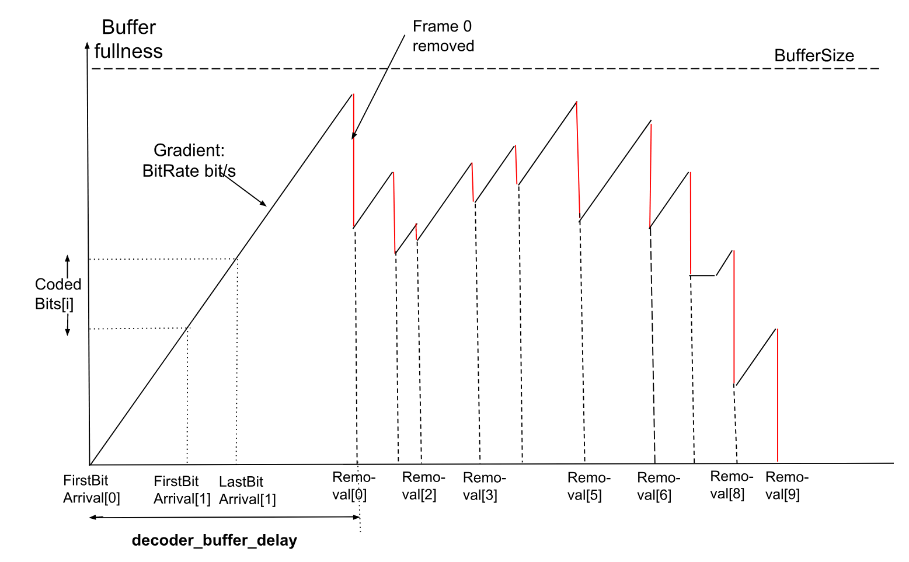

1. Scope
This document specifies the Alliance for Open Media Video 2 (AV2) bitstream format and decoding process.
2. Terms and definitions
For the purposes of this document, the following terms and definitions apply:
AC coefficient
Any transform coefficient whose frequency indices are non-zero in at least one dimension.
ADST
Asymmetric Discrete Sine Transform.
AOMedia
Alliance for Open Media.
Atlas
A virtual 2D image associated with the decoded layers of a bitstream. The atlas can provide information on how to interpret, render, and utilize all such layers, depending on the application.
Base layer
The layer with obu_mlayer_id and obu_tlayer_id values equal to 0.
BAWP
Block Adaptive Weighted Prediction modifies inter prediction samples with a linear equation based on a scaling factor and an offset. The model parameters are based on observations from surrounding samples in the decoded frame and reference frame or the OrderHints distance of the decoded frame and reference frame.
Bitstream
The sequence of bits generated by encoding a sequence of frames.
Bit string
An ordered string with limited number of bits. The left most bit is the most significant bit (MSB), the right most bit is the least significant bit (LSB).
Block
A square or rectangular region of samples.
BRU
Backwards reference update allows an existing reference frame to be partially updated.
Byte
An 8-bit bit string.
Byte alignment
One bit is byte aligned if the position of the bit is an integer multiple of eight from the position of the first bit in the bitstream.
CCSO
Cross Component Sample Offset filter designed to modify both luma and chroma samples based on luma brightness and brightness gradient.
CDEF
Constrained Directional Enhancement Filter designed to adaptively filter blocks based on identifying the direction.
CDF
Cumulative distribution function representing the probability times 32768 that a symbol has value less than or equal to a given level.
Chroma
A sample value matrix or a single sample value of one of the two color difference signals.
NOTE: Symbols of chroma are U and V.
Coded frame
The representation of one frame before the decoding process.
Component
One of the three sample value matrices (one luma matrix and two chroma matrices) or its single sample value.
Compound prediction
A type of inter prediction where sample values are computed by blending together predictions from two reference frames (the frames blended can be the same or different).
DC coefficient
A transform coefficient whose frequency indices are zero in all dimensions.
DCT
Discrete Cosine Transform.
Decoded frame
The frame reconstructed out of the bitstream by the decoder.
Decoder
One embodiment of the decoding process.
Decoding process
The process that derives decoded frames from syntax elements, including any processing steps used prior to and for the film grain synthesis process.
Dequantization
The process in which transform coefficients are obtained by scaling the quantized coefficients.
Encoder
One embodiment of the encoding process.
Encoding process
A process not specified in this Specification that generates the bitstream that conforms to the description provided in this document.
Enhancement layer
A layer with either obu_mlayer_id greater than 0 or obu_tlayer_id greater than 0.
Embedded layer
A layer denoted by obu_mlayer_id.
Extended layer
A layer denoted by obu_xlayer_id.
Frame
The representation of video signals in the spatial domain, composed of one luma sample matrix (Y) and zero or two chroma sample matrices (U and V).
Frame context
A set of probabilities used in the decoding process.
GDF
Guided detail filter designed to selectively enhance details.
Inter coding
Coding one block or frame using inter prediction.
Inter frame
A frame compressed by referencing previously decoded frames and which may use intra prediction or inter prediction.
Inter prediction
The process of deriving the prediction value for the current frame using previously decoded frames.
IBP
Intra bi-prediction blends two different intra predictions together for a single block.
Independent Bitstream
Bitstream that contains no more than one value for the extended layer identifier.
Intra coding
Coding one block or frame using intra prediction.
Intra frame
A frame compressed using only intra prediction which can be independently decoded.
Intra prediction
The process of deriving the prediction value for the current sample using previously decoded sample values in the same decoded frame.
Inverse transform
The process in which a transform coefficient matrix is transformed into a spatial sample value matrix.
Key frame
An Intra frame which resets the decoding process when it is shown.
Layer
A set of tile group OBUs with identical obu_mlayer_id and identical obu_tlayer_id values.
LCR
Layer Configuration Record.
Level
A defined set of constraints on the values for the syntax elements and variables.
Loop filter
A filtering process applied to the reconstruction intended to reduce the visibility of block edges.
LSB
Least Significant Bit.
Luma
A sample value matrix or a single sample value representing the monochrome signal related to the primary colors.
NOTE: The symbol representing luma is Y.
MHCCP
Multi-hypothesis cross component prediction.
Mode info
Syntax elements sent for a block containing an indication of how a block is to be predicted during the decoding process.
Mode info block
A luma sample value block of size 4x4 or larger and its two corresponding chroma sample value blocks (if present).
Motion vector
A two-dimensional vector used for inter prediction which refers the current frame to the reference frame, the value of which provides the coordinate offsets from a location in the current frame to a location in the reference frame.
MSB
Most Significant Bit.
Multistream
Bitstream that contains two or more values for the extended layer identifier and at least one Multi Stream Decoder Operation OBU.
OBU
All structures are packetized in "Open Bitstream Units" or OBUs. Each OBU has a header, which provides identifying information for the contained data (payload).
OPS
Operating Point Set.
ORIP
Offset based refinement for intra prediction.
Parse
The procedure of getting the syntax element from the bitstream.
Prediction
The implementation of the prediction process consisting of either inter or intra prediction.
Prediction process
The process of estimating the decoded sample value or data element using a predictor.
Prediction value
The value, which is the combination of the previously decoded sample values or data elements, used in the decoding process of the next sample value or data element.
Profile
A subset of syntax, semantics and algorithms defined in a part.
Quantization parameter
A variable used for scaling the quantized coefficients in the decoding process.
Quantized coefficient
A transform coefficient before dequantization.
Raster scan
Maps a two dimensional rectangular raster into a one dimensional raster, in which the entry of the one dimensional raster starts from the first row of the two dimensional raster, and the scanning then goes through the second row and the third row, and so on. Each raster row is scanned in left to right order.
Reconstruction
Obtaining the addition of the decoded residual and the corresponding prediction values.
Reference
One of a set of tags, each of which is mapped to a reference frame.
Reference frame
A storage area for a previously decoded frame and associated information.
Reserved
A special syntax element value which may be used to extend this part in the future.
Residual
The differences between the reconstructed samples and the corresponding prediction values.
Sample
The basic elements that compose the frame.
Sample value
The value of a sample. This is an integer from 0 to 255 (inclusive) for 8-bit frames, from 0 to 1023 (inclusive) for 10-bit frames, and from 0 to 4095 (inclusive) for 12-bit frames.
Segmentation map
One 4-bit number per 4x4 block in the frame specifying the segment affiliation of that block. A segmentation map is stored for each reference frame to allow new frames to use a previously coded map.
Sequence
The highest level syntax structure of coding bitstream, including one or several consecutive coded frames.
Superblock
The top level of the block tree within a tile. All superblocks within a frame are the same size and are square. The superblocks may be 256x256 luma samples, 128x128 luma samples, or 64x64 luma samples. A superblock may contain multiple blocks, which may themselves be further subpartitioned, forming the block tree.
Switch Frame
An inter frame that can be used as a point to switch between sequences. Switch frames overwrite all the reference frames without forcing the use of intra coding. The intention is to allow a streaming use case where videos can be encoded in small chunks (say of 1 second duration), each starting with a switch frame. If the available bandwidth drops, the server can start sending chunks from a lower bitrate encoding instead. When this happens the inter prediction uses the existing higher quality reference frames to decode the switch frame. This approach allows a bitrate switch without the cost of a full key frame.
Syntax element
An element of data represented in the bitstream.
Temporal delimiter OBU
An indication that the following OBUs will have a different presentation/decoding time stamp from the one of the last frame prior to the temporal delimiter.
Temporal unit
A Temporal unit consists of all the OBUs that are associated with a specific, distinct time instant.
Temporal group
A set of frames whose temporal prediction structure is used periodically in a video sequence.
Tier
A specified category of level constraints imposed on the values of the syntax elements in the bitstream.
Tile
A rectangular region of the frame that can be decoded and encoded independently, although loop filtering across tile edges is still applied in some cases.
TIP
Temporally interpolated prediction.
Transform block
A rectangular transform coefficient matrix, used as input to the inverse transform process.
Transform coefficient
A scalar value, considered to be in a frequency domain, contained in a transform block.
TCQ
Trellis coded quantization adjusts the quantizer levels based on the parity of the decoded coefficients.
Uncompressed header
High level description of the frame to be decoded that is encoded without the use of arithmetic encoding.
WAIP
Wide Angle Intra Prediction.
WHT
Walsh Hadamard Transform.
3. Symbols
The specification makes use of a number of constant integers. Constants that relate to the semantics of a particular syntax element are defined in § 6 Syntax structures semantics.
Additional constants are defined below:
| Symbol name | Value | Description |
|---|---|---|
REFS_PER_FRAME
| 7
| Number of reference frames that can be used for inter prediction |
DISPLAY_ORDER_HINT_BITS
| 30
| Number of order hint bits |
MAX_NUM_TLAYERS
| 4
| Maximum number of temporal layers |
MAX_NUM_MLAYERS
| 8
| Maximum number of embedded layers |
MAX_NUM_XLAYERS
| 32
| Maximum number of extended layers |
GLOBAL_XLAYER_ID
| 31
| Value for xlayer_id that indicates global scope
|
PROFILE_BITS
| 3
| Number of bits for specifying the profile |
LEVEL_BITS
| 5
| Number of bits for specifying the level |
MAX_MFH_NUM
| 16
| Maximum number of multi-frame headers |
MAX_SEQ_NUM
| 16
| Maximum number of sequence headers |
MAX_FILM_GRAIN
| 8
| Maximum number of film grain configurations |
WARPMV_MODE_CONTEXT
| 5
| Number of contexts when decoding is_warp
|
WARP_CAUSAL_MODE_CTX
| 4
| Number of contexts when decoding use_local_warp
|
WARP_DELTA_STEP_BITS
| 10
| Shift to apply to warp_delta_param
|
WARP_DELTA_NUM_SYMBOLS_LOW
| 8
| Number of values for warp_delta_param_low
|
WARP_DELTA_NUM_SYMBOLS_HIGH
| 8
| Number of values for warp_delta_param_high
|
CDEF_STRENGTH_INDEX0_CTX
| 4
| Number of contexts for cdef_index0
|
CDEF_ON_SKIP_TXFM_DISABLED
| 0
| Value indicating CDEF is disabled on skipped transform blocks |
CDEF_ON_SKIP_TXFM_ALWAYS_ON
| 1
| Value indicating CDEF is enabled on skipped transform blocks |
CDEF_ON_SKIP_TXFM_ADAPTIVE
| 2
| Value indicating CDEF has a frame level enabled for whether it is used on skipped transform blocks |
BLOCK_SIZE_GROUPS
| 4
| Number of contexts when decoding y_mode
|
BLOCK_SIZES
| 31
| Number of different block sizes used |
BLOCK_INVALID
| 31
| Sentinel value to mark partition choices that are not allowed |
MAX_SB_SIZE
| 256
| Maximum size of a superblock in luma samples |
MI_SIZE
| 4
| Smallest size of a mode info block in luma samples |
MI_SIZE_LOG2
| 2
| Base 2 logarithm of smallest size of a mode info block |
MAX_TILE_WIDTH
| 4096
| Maximum width of a tile in units of luma samples |
MAX_TILE_AREA
| 4096 * 2304
| Maximum area of a tile in units of luma samples |
MAX_TILE_ROWS
| 64
| Maximum number of tile rows |
MAX_TILE_COLS
| 64
| Maximum number of tile columns |
MAX_ATLAS_COLS
| 64
| Maximum number of Atlas region columns |
MAX_ATLAS_ROWS
| 64
| Maximum number of Atlas region rows |
MAX_NUM_ATLAS_SEGMENTS
| 256
| Maximum number of Atlas segments |
CCSO_CONTEXT
| 4
| Number of contexts when decoding ccso_blk
|
CCSO_INPUT_INTERVAL
| 3
| Number of classes for CCSO |
CCSO_LUMA_SIZE_LOG2
| 8
| Base 2 logarithm of size of CCSO blocks (measured in luma samples) |
CCSO_BAND_NUM
| 64
| Maximum number of bands allowed in CCSO |
INTRABC_DELAY_PIXELS
| 256
| Number of horizontal luma samples before intra block copy can be used |
INTRABC_DELAY_SB64
| 4
| Number of 64 by 64 blocks before intra block copy can be used |
IBC_BUFFER_SIZE_LOG2
| 6
| Base 2 logarithm of size of buffer used in local intra block copy |
IBC_BUFFER_SIZE
| 64
| Size of buffer used in local intra block copy |
IBC_NUM_BUFFERS
| 4
| Number of buffers used in local intra block copy |
NUM_REF_FRAMES
| 16
| Number of frames that can be stored for future reference |
IS_INTER_CONTEXTS
| 4
| Number of contexts for is_inter
|
REF_CONTEXTS
| 3
| Number of contexts for single_ref
|
MAX_SEGMENTS
| 16
| Number of segments allowed in segmentation map |
SEGMENT_ID_CONTEXTS
| 3
| Number of contexts for segment_id
|
SEG_LVL_ALT_Q
| 0
| Index for quantizer segment feature |
SEG_LVL_SKIP
| 1
| Index for skip segment feature |
SEG_LVL_GLOBALMV
| 2
| Index for global mv feature
|
SEG_LVL_MAX
| 3
| Number of segment features |
PLANE_TYPES
| 2
| Number of different plane types (luma or chroma) |
INTERP_FILTERS
| 3
| Number of values for interp_filter
|
INTERP_FILTER_CONTEXTS
| 16
| Number of contexts for interp_filter
|
SKIP_MODE_CONTEXTS
| 3
| Number of contexts for decoding skip_mode
|
SKIP_CONTEXTS
| 6
| Number of contexts for decoding skip |
PARTITION_CONTEXTS
| 64
| Number of contexts when decoding partition syntax elements |
SQUARE_SPLIT_CONTEXTS
| 8
| Number of contexts for do_square_split syntax element |
EXT_PARTITION_TYPES
| 10
| Number of partition types |
NUM_UNEVEN_4WAY_PARTS
| 2
| Number of uneven partition types |
PARTITION_STRUCTURE_NUM
| 2
| Maximum number of partitions for a block (luma and chroma can have different partitions) |
RECT_HORZ
| 0
| Block is split with a horizontal cut |
RECT_VERT
| 1
| Block is split with a vertical cut |
RECT_INVALID
| 2
| Block cannot be split into rectangles |
NUM_RECT_PARTS
| 2
| Number of types of rectangle |
TX_SIZES
| 5
| Number of square transform sizes |
TX_SIZES_ALL
| 25
| Number of transform sizes (including non-square sizes) |
DCT_DCT
| 0
| Inverse transform rows with DCT and columns with DCT |
ADST_DCT
| 1
| Inverse transform rows with DCT and columns with ADST |
DCT_ADST
| 2
| Inverse transform rows with ADST and columns with DCT |
ADST_ADST
| 3
| Inverse transform rows with ADST and columns with ADST |
FLIPADST_DCT
| 4
| Inverse transform rows with DCT and columns with FLIPADST
|
DCT_FLIPADST
| 5
| Inverse transform rows with FLIPADST and columns with DCT
|
FLIPADST_FLIPADST
| 6
| Inverse transform rows with FLIPADST and columns with FLIPADST
|
ADST_FLIPADST
| 7
| Inverse transform rows with FLIPADST and columns with ADST
|
FLIPADST_ADST
| 8
| Inverse transform rows with ADST and columns with FLIPADST
|
IDTX
| 9
| Inverse transform rows with identity and columns with identity |
V_DCT
| 10
| Inverse transform rows with identity and columns with DCT |
H_DCT
| 11
| Inverse transform rows with DCT and columns with identity |
V_ADST
| 12
| Inverse transform rows with identity and columns with ADST |
H_ADST
| 13
| Inverse transform rows with ADST and columns with identity |
V_FLIPADST
| 14
| Inverse transform rows with identity and columns with FLIPADST
|
H_FLIPADST
| 15
| Inverse transform rows with FLIPADST and columns with identity
|
TX_TYPES
| 16
| Number of inverse transform types |
STX_TYPES
| 4
| Number of secondary transform types |
IST_4X4_WIDTH
| 16
| Width of matrix used in 4x4 secondary transform |
IST_4X4_HEIGHT
| 8
| Height of matrix used in 4x4 secondary transform |
IST_8X8_WIDTH
| 48
| Width of matrix used in 8x8 secondary transform |
IST_8X8_HEIGHT
| 32
| Height of matrix used in 8x8 secondary transform |
IST_8x8_HEIGHT_RED
| 20
| Reduced height of matrix used in special case of 8x8 secondary transform |
IST_SET_SIZE
| 14
| Number of different sets of secondary transforms |
IST_REDUCE_SET_SIZE_ADST_ADST
| 4
| Number of different sets of secondary transforms for ADST |
IST_DIR_SIZE
| IST_SET_SIZE >> 1
| Number of directional groups in secondary transform kernels |
INTRA_MODES
| 13
| Number of values for y_mode
|
DIP_CTXS
| 3
| Number of contexts for use_dip
|
CFL_TYPE_COUNT
| 3
| Number of values for cfl_index
|
UV_INTRA_MODES_CFL_NOT_ALLOWED
| 13
| Number of values for uv_mode when chroma from luma is not allowed
|
UV_INTRA_MODES_CFL_ALLOWED
| 14
| Number of values for uv_mode when chroma from luma is allowed
|
COMPOUND_MODES
| 7
| Number of values for compound_mode
|
SINGLE_MODE_CONTEXTS
| 5
| Number of contexts for single_mode
|
COMPOUND_MODE_CONTEXTS
| 5
| Number of contexts for compound_mode
|
INTRABC_CONTEXTS
| 3
| Number of contexts for use_intrabc
|
REFINEMV_CONTEXTS
| 24
| Number of contexts for use_refinemv
|
TIP_CONTEXTS
| 3
| Number of contexts for tip_mode
|
DRL_MODE_CONTEXTS
| 5
| Number of contexts for drl_mode
|
MV_CONTEXTS
| 2
| Number of contexts for decoding motion vectors including one for intra block copy |
MV_INTRABC_CONTEXT
| 1
| Motion vector context used for intra block copy |
MV_JOINTS
| 4
| Number of values for mv_joint
|
MAX_AMVD_INDEX
| 8
| Number of values for amvd_index
|
MAX_COL_TRUNCATED_UNARY_VAL
| 2
| Maximum times col_mv_greater can be coded per motion vector
|
NUM_CTX_COL_MV_GTX
| 2
| Number of contexts for col_mv_greater
|
NUM_CTX_COL_MV_INDEX
| 4
| Number of contexts for col_mv_index
|
JOINT_NEWMV_SCALE_FACTOR_CNT
| 5
| Number of values for jmvd_scale_mode when use_amvd is equal to 0
|
JOINT_AMVD_SCALE_FACTOR_CNT
| 3
| Number of values for jmvd_scale_mode when use_amvd is equal to 1
|
MAX_SIDE_TABLE
| 296
| Length of Side_Thresholds array
|
MAX_DBL_FLT_LEN
| 12
| Maximum distance from edge for samples used in loop filter |
DBL_REG_DECIS_LEN
| 9
| Length of Q_First array
|
DF_SHIFT
| 8
| Shift used in loop filter |
DF_DELTA_SCALE
| 8
| Scale factor for LfDeltaQ
|
REF_SCALE_SHIFT
| 14
| Number of bits of precision when scaling reference frames |
SUBPEL_BITS
| 4
| Number of bits of precision when choosing an inter prediction filter kernel |
SUBPEL_MASK
| 15
| ( 1 << SUBPEL_BITS ) - 1
|
SCALE_SUBPEL_BITS
| 10
| Number of bits of precision when computing inter prediction locations |
MV_BORDER
| 128
| Value used when clipping motion vectors |
BAWP_SCALES_CTX_COUNT
| 3
| Number of contexts for explicit_bawp
|
PALETTE_COLOR_CONTEXTS
| 5
| Number of values for color contexts |
PALETTE_ROW_FLAG_CONTEXTS
| 4
| Number of values for identity row contexts |
PALETTE_MAX_COLOR_CONTEXT_HASH
| 8
| Number of mappings between color context hash and color context |
PALETTE_SIZES
| 7
| Number of values for palette_size
|
PALETTE_COLORS
| 8
| Number of values for palette_color
|
PALETTE_NUM_NEIGHBORS
| 3
| Number of neighbors considered within palette computation |
DELTA_Q_SMALL
| 7
| Value indicating alternative encoding of quantizer index delta values |
MAXQ_8_BITS
| 255
| Maximum quantizer when bit depth is 8 |
MAXQ_OFFSET
| 24
| Increase in allowed quantizer for each increase in bit depth |
MAXQ_10_BITS
| MAXQ_8_BITS + 2 * MAXQ_OFFSET
| Maximum quantizer when bit depth is 10 |
MAXQ_12_BITS
| MAXQ_8_BITS + 4 * MAXQ_OFFSET
| Maximum quantizer when bit depth is 12 |
DELTA_DCQUANT_BITS
| 5
| Number of bits for base_y_dc_delta_q, base_uv_dc_delta_q, and base_uv_ac_delta_q
|
DELTA_DCQUANT_MAX
| (1 << (DELTA_DCQUANT_BITS - 2))
| Maximum value for BaseYDcDeltaQ and BaseUVDcDeltaQ
|
DELTA_DCQUANT_MIN
| (DELTA_DCQUANT_MAX - (1 << DELTA_DCQUANT_BITS) + 1)
| Minimum value for BaseYDcDeltaQ and BaseUVDcDeltaQ
|
QUANT_TABLE_BITS
| 3
| Number of bits to discard from quantizer before application |
MAX_ANGLE_DELTA
| 3
| Maximum magnitude of AngleDeltaY and AngleDeltaUV
|
INTRA_MODE_SETS
| 4
| Number of values for y_mode_set
|
FIRST_MODE_COUNT
| 13
| Number of values coded via the first intra mode set |
MODE_INDEX_COUNT
| 8
| Number of values for y_mode_index
|
MODE_OFFSET_COUNT
| 6
| Number of values for y_mode_offset
|
SECOND_MODE_COUNT
| 16
| Number of values for y_second_mode
|
CHROMA_MODE_COUNT
| 8
| Number of values for uv_mode
|
Y_MODE_CONTEXTS
| 3
| Number of contexts for y_mode_index and y_second_mode
|
UV_MODE_CONTEXTS
| 2
| Number of contexts for uv_mode
|
CFL_CONTEXTS
| 3
| Number of contexts for is_cfl
|
MHCCP_BITS
| 16
| Number of bits used in MHCCP |
NUM_REF_SAM_CFL
| 8
| Number of samples used in chroma from luma prediction |
DIV_PREC_BITS
| 14
| Number of bits used in get_division_scale_shift
|
DIV_PREC_BITS_POW2
| 8
| Number of regions used in get_division_scale_shift
|
DIV_SLOT_BITS
| 3
| Base 2 logarithm of regions used in get_division_scale_shift
|
DIRECTIONAL_MODES_COUNT
| 56
| Number of directional intra modes |
NON_DIRECTIONAL_MODES_COUNT
| 5
| Number of non-directional intra modes |
TOTAL_ANGLE_DELTA_COUNT
| 7
| Number of different angle deltas |
ANGLE_STEP
| 3
| Number of degrees of step-per-unit increase in AngleDeltaY or AngleDeltaUV.
|
TX_SET_TYPES_INTRA
| 7
| Number of intra transform set types |
TX_SET_TYPES_INTER
| 9
| Number of inter transform set types |
INTRA_TX_TYPES
| 7
| Number of values for intra_tx_type
|
EXT_TX_SIZES
| 4
| Number of size classes (each size class has a different choice of transform types) |
WARPEDMODEL_PREC_BITS
| 16
| Internal precision of warped motion models |
IDENTITY
| 0
| Warp model is just an identity transform |
ROTZOOM
| 1
| Warp model is a rotation + symmetric zoom + translation |
AFFINE
| 2
| Warp model is a general affine transform |
GM_ABS_TRANS_BITS
| 14
| Number of bits encoded for translational components of global motion models, if part of a ROTZOOM or AFFINE model |
GM_TRANS_PREC_DIFF
| WARPEDMODEL_PREC_BITS - GM_TRANS_PREC_BITS
| Difference between warped model and translational precision |
GM_TRANS_ONLY_PREC_DIFF
| WARPEDMODEL_PREC_BITS - 3
| Difference between warped model and motion vector precision |
GM_ABS_ALPHA_BITS
| 9
| Number of bits encoded for non-translational components of global motion models |
GM_ALPHA_PREC_DIFF
| WARPEDMODEL_PREC_BITS - GM_ALPHA_PREC_BITS
| Difference between warped model and non-translational precision |
GM_TRANS_MAX
| (1 << GM_ABS_TRANS_BITS) - 1
| Maximum translational value |
GM_TRANS_MIN
| -GM_TRANS_MAX
| Minimum translational value |
GM_ALPHA_MAX
| (1 << GM_ABS_ALPHA_BITS) - 1
| Maximum non-translational value |
GM_ALPHA_MIN
| -GM_ALPHA_MAX
| Minimum non-translational value |
MAX_LS_BITS
| 26
| Maximum bits in least squares calculations |
OPFL_GRAD_UNIT_LOG2
| 4
| Base 2 logarithm of size of unit used in gradient computation |
OPFL_GRAD_UNIT
| 16
| Size of unit used in gradient computation |
MV_IN_USE_BITS
| 16
| Number of bits for motion vectors (not including sign bit) |
MV_UPP
| (1 << MV_IN_USE_BITS)
| Exclusive upper bound on motion vectors |
MV_LOW
| -(1 << MV_IN_USE_BITS)
| Exclusive lower bound on motion vectors |
MV_REFINE_PREC_BITS
| 4
| Number of bits for motion vectors from optical flow |
OPFL_MV_DELTA_LIMIT
| 1 << MV_REFINE_PREC_BITS
| Maximum adjustment for motion vectors from optical flow |
DIV_LUT_PREC_BITS
| 9
| Number of fractional bits of entries in divisor lookup table |
DIV_LUT_BITS
| 7
| Number of fractional bits for lookup in divisor lookup table |
DIV_LUT_NUM
| 129
| Number of entries in divisor lookup table |
MOTION_MODES
| 5
| Number of values for motion modes |
SIMPLE
| 0
| Use translation or global motion compensation |
INTERINTRA
| 1
| Use inter intra motion compensation |
LOCALWARP
| 2
| Use local warp motion compensation |
DELTAWARP
| 3
| Use delta warp motion compensation |
EXTENDWARP
| 4
| Use extended warp motion compensation |
LEAST_SQUARES_SAMPLES_MAX
| 8
| Largest number of samples used when computing a local warp |
LS_MV_MAX
| 256
| Largest motion vector difference to include in local warp computation |
WARPEDMODEL_TRANS_CLAMP
| 1 << 27
| Clamping value used for translation components of warp |
WARPEDMODEL_NONDIAGAFFINE_CLAMP
| 1 << 13
| Clamping value used for matrix components of warp |
WARPEDPIXEL_PREC_SHIFTS
| 1 << 6
| Number of phases used in warped filtering |
WARPEDDIFF_PREC_BITS
| 10
| Number of extra bits of precision in warped filtering |
EXT_WARP_TAPS
| 6
| Number of taps in extended warp filtering |
EXT_WARP_PHASES
| 64
| Number of phases for extended warp filtering |
EXT_WARP_PHASES_LOG2
| 6
| Base 2 logarithm of number of phases for extended warp filtering |
EXT_WARP_ROUND_BITS
| WARPEDMODEL_PREC_BITS - EXT_WARP_PHASES_LOG2
| Difference between bits used for the warp model and bits needed to specify the phase for extended warp filtering |
MAX_WARP_REF_CANDIDATES
| 4
| Maximum number of warp reference candidates |
WARP_PARAM_BANK_SIZE
| 4
| Size of the parameter bank for warp |
MAX_WARP_SB_HITS
| 64
| Maximum number of accesses to the warp parameter bank per superblock |
BANK_REFS_PER_FRAME
| 9
| Number of parameter banks for motion vectors |
REF_MV_BANK_SIZE
| 4
| Size of the parameter bank for motion vectors |
MAX_RMB_SB_HITS
| 64
| Maximum number of accesses to the bank of motion vectors per superblock |
PROJ_GLOBAL_MOTION
| 0
| Use global motion warp parameter |
PROJ_SPATIAL
| 1
| Project warp parameters from spatial neighborhood |
PROJ_PARAM_BANK
| 2
| Use warp parameters from circular buffer |
PROJ_DEFAULT
| 3
| Use default warp parameters |
GM_ALPHA_PREC_BITS
| 10
| Number of fractional bits for sending non-translational warp model coefficients |
GM_TRANS_PREC_BITS
| 3
| Number of fractional bits for sending translational warp model coefficients |
MAX_CWP_NUM
| 5
| Number of values for CwpIdx
|
CWP_EQUAL
| 8
| Value for CwpIdx that corresponds to equal weighting for two inter references
|
INTERINTRA_MODES
| 4
| Number of inter intra modes |
MASK_MASTER_SIZE
| 128
| Size of MasterMask array
|
SEGMENT_ID_PREDICTED_CONTEXTS
| 3
| Number of contexts for segment_id_predicted
|
COMPOUND_TYPES
| 2
| Number of values for compound_type
|
CFL_JOINT_SIGNS
| 8
| Number of values for cfl_alpha_signs
|
CFL_ALPHABET_SIZE
| 8
| Number of values for cfl_alpha_u and cfl_alpha_v
|
COMP_INTER_CONTEXTS
| 5
| Number of contexts for comp_mode
|
CFL_ALPHA_CONTEXTS
| 6
| Number of contexts for cfl_alpha_u and cfl_alpha_v
|
COMP_GROUP_IDX_CONTEXTS
| 12
| Number of contexts for comp_group_idx
|
INTER_SDP_BSIZE_GROUP
| 4
| Number of contexts for region_type
|
INTER_SDP_MAX_BLOCK_SIZE
| 64
| Maximum size for switching partitioning scheme |
INTRA_REGION
| 0
| Value for region_type that indicates intra coding
|
MIXED_REGION
| 1
| Value for region_type that indicates mixed intra coding and inter coding |
INTRA_EDGE_KERNELS
| 3
| Number of filter kernels for the intra edge filter |
INTRA_EDGE_TAPS
| 5
| Number of kernel taps for the intra edge filter |
WAIP_WH_RATIO_2_THRES
| 61
| Threshold used in WAIP |
WAIP_WH_RATIO_4_THRES
| 73
| Threshold used in WAIP |
WAIP_WH_RATIO_8_THRES
| 82
| Threshold used in WAIP |
WAIP_WH_RATIO_16_THRES
| 86
| Threshold used in WAIP |
BLEND_WEIGHT_MAX
| 32
| A blend weight used in smooth intra prediction |
FRAME_LF_COUNT
| 4
| Number of loop filter strength values |
TX_PARTITION_TYPE_NUM
| 7
| Number of contexts for tx_partition_type
|
TX_PARTITION_TYPE_NUM_VERT_AND_HORZ
| 14
| Number of values (not equal to BLOCK_INVALID) in the output range of Size_To_Tx_Type_Group_Vert_And_Horz
|
TX_PARTITION_TYPE_NUM_VERT_OR_HORZ
| 3
| Number of values (not equal to BLOCK_INVALID) in the output range of Size_To_Tx_Type_Group_Vert_Or_Horz
|
TXFM_SPLIT_GROUP
| 9
| Number of groups of transform split types |
TX_PARTITION_TYPES
| 8
| Number of transform partition types |
MAX_REF_MV_STACK_SIZE
| 6
| Maximum number of motion vectors in the stack |
MAX_PR_NUM
| 16
| Used to limit the number of motion vector pruning operations |
MAX_DR_PR_NUM
| 2
| Used to limit the number of derived motion vector pruning operations |
MAX_DR_STACK_SIZE
| 4
| Maximum number of motion vectors in the derived stack |
MAX_REF_BV_STACK_SIZE
| 4
| Maximum number of motion vectors in the stack for intra block copy |
MFMV_STACK_SIZE
| 4
| Stack size for motion field motion vectors |
TIP_MFMV_STACK_SIZE
| 3
| Stack size for motion field motion vectors relatd to TIP |
H_WEDGE_ANGLES
| 10
| Number of wedge angles when wedge_angle_dir is equal to 0
|
NUM_WEDGE_DIST
| 4
| Number of distances for the wedge mask process |
WEDGE_ANGLES
| 20
| Number of angles for the wedge mask process |
WEDGE_TYPES
| 68
| Number of types of wedge |
WEDGE_BLD_LUT_SIZE
| 32
| Size of table lookup in the wedge mask process |
WEDGE_BOUNDARY_SHARP
| 0
| Value indicating a sharp boundary |
WEDGE_BOUNDARY_SMOOTH
| 1
| Value indicating a smooth boundary |
WEDGE_BOUNDARY_TYPES
| 2
| Number of different boundary types |
FILTER_BITS
| 7
| Number of bits used in Wiener filter coefficients |
WIENER_COEFFS
| 3
| Number of Wiener filter coefficients to read |
WIENER_NS_PLANES
| 3
| Number of planes of non-separable Wiener filter coefficients |
WIENER_NS_SHORT_COEFFS
| 6
| Number of short non-separable Wiener filter coefficients |
WIENER_NS_LUMA_COEFFS
| 16
| Number of luma non-separable Wiener filter coefficients |
WIENER_NS_CHROMA_COEFFS
| 18
| Number of chroma non-separable Wiener filter coefficients |
WIENER_NS_TAPS_Y
| 32
| Number of luma non-separable Wiener filter taps |
WIENER_NS_TAPS_UV
| 12
| Number of chroma non-separable Wiener filter taps |
WIENER_NS_PREC_BITS
| 7
| Number of bits used in non-separable Wiener filter coefficients |
WIENER_NS_CLASSES
| 16
| Number of classes of non-separable Wiener filter coefficients |
PC_WIENER_COEFFS
| 13
| Number of coefficients in pixel-classified Wiener filtering |
PC_WIENER_TAPS
| PC_WIENER_COEFFS * 2 - 1
| Number of taps in pixel-classified Wiener filtering |
PC_WIENER_NUM_FEATURES
| 4
| Number of features for pixel-classified Wiener filtering |
PC_WIENER_LEAD
| 1
| Number of leading taps in pixel-classified Wiener filtering |
PC_WIENER_LAG
| 4
| Number of lagging taps in pixel-classified Wiener filtering |
NUM_PC_WIENER_FILTERS
| 64
| Number of filters in pixel-classified Wiener filtering |
NUM_PC_WIENER_LUT_CLASSES
| 256
| Number of classes in pixel-classified Wiener filtering |
PC_WIENER_PREC_BITS
| 7
| Bit precision for pixel-classified Wiener filtering |
PC_WIENER_PREC_FEATURE
| 14
| Bit precision for pixel-classified features |
LR_BANK_SIZE
| 4
| Size of coefficient cache used for loop restoration |
GDF_MIN_SIZE_LOG2
| 6
| Base 2 logarithm of minimum size of GDF blocks |
GDF_MIN_SIZE
| 128
| Minimum size of GDF blocks |
GDF_UNIT_SIZE
| 64
| Minimum size of GDF units |
GDF_VER
| 0
| GDF vertical direction |
GDF_HOR
| 1
| GDF horizontal direction |
GDF_DIAG0
| 2
| GDF first diagonal direction |
GDF_DIAG1
| 3
| GDF second diagonal direction |
EC_PROB_SHIFT
| 7
| Number of bits to reduce CDF precision during arithmetic coding |
SELECT_SCREEN_CONTENT_TOOLS
| 2
| Value that indicates the allow_screen_content_tools syntax element is coded
|
SELECT_INTEGER_MV
| 2
| Value that indicates the force_integer_mv syntax element is coded
|
RESTORATION_TILESIZE_MAX
| 512
| Maximum size of a loop restoration tile |
MAX_LR_FLEX_SWITCHABLE_BITS
| 3
| Maximum number of loop restoration tools to switch between |
RESTORE_SWITCHABLE_TYPES
| RESTORE_SWITCHABLE
| Number of switchable loop restoration types |
MAX_FRAME_DISTANCE
| 31
| Maximum distance when computing weighted prediction |
NUM_CUSTOM_QMS
| 15
| Maximum number of quantization matrices that can be present |
DECAY_DIST_CAP
| 6
| Maximum distance that can use array Dist_Score_Lookup
|
DIST_WEIGHT_BITS
| 6
| Scaling used in scoring reference frames |
WARP_PARAM_REDUCE_BITS
| 6
| Rounding bitwidth for the parameters to the shear process |
EOB_PLANE_CTXS
| 3
| Number of contexts for EOB-related syntax elements |
NUM_BASE_LEVELS
| 2
| Number of quantizer base levels |
COEFF_BASE_RANGE
| 3
| Number of values for coeff_br (coeff_br extends the range of coeff_base)
|
MAX_BASE_BR_RANGE
| COEFF_BASE_RANGE + NUM_BASE_LEVELS + 1
| The maximum value for coeff_base and coeff_br combined
|
BR_CDF_SIZE
| 4
| Number of values for coeff_br
|
SIG_COEF_CONTEXTS_EOB
| 4
| Number of contexts for coeff_base_eob
|
SIG_COEF_CONTEXTS
| 20
| Number of contexts for coeff_base for luma
|
SIG_COEF_CONTEXTS_UV
| 12
| Number of contexts for coeff_base for chroma
|
SIG_COEF_CONTEXTS_BOB
| 3
| Number of contexts for coeff_base_bob
|
IDTX_SIG_COEF_CONTEXTS
| 14
| Number of contexts for coeff_base_idtx
|
COEFF_BASE_PH_CONTEXTS
| 5
| Number of contexts for coeff_base when the parity is hidden
|
PHTHRESH
| 4
| Number of non-zero coefficients that will allow the parity to be hidden |
SIG_REF_DIFF_OFFSET_NUM
| 5
| Maximum number of context samples to be used in determining the context index for coeff_base and coeff_base_eob.
|
TXB_SKIP_CONTEXTS
| 20
| Number of contexts for all_zero
|
V_TXB_SKIP_CONTEXTS
| 12
| Number of contexts for all_zero for the V plane
|
CCTX_TYPES
| 7
| Number of values for cctx_type
|
CCTX_PREC_BITS
| 8
| Precision bits used during cross component transform |
FSC_MODE_CONTEXTS
| 4
| Number of contexts for fsc_mode
|
FSC_BSIZE_CONTEXTS
| 6
| Number of block size groups in context for fsc_mode
|
FSC_MAX
| 32
| Max width/height for blocks to use forward skip coding |
MRL_INDEX_CONTEXTS
| 3
| Number of contexts for mrl_index
|
DC_SIGN_CONTEXTS
| 3
| Number of contexts for dc_sign
|
DC_SIGN_GROUPS
| 2
| Number of groups of contexts for dc_sign (corresponding to whether the sign is hidden or not)
|
FSC_MODES
| 2
| Number of values of fsc_mode
|
IDTX_SIGN_CONTEXTS
| 9
| Number of contexts for idtx_sign
|
LF_BASE_SYMBOLS
| 6
| Number of values for coeff_base for low frequency coefficients |
LF_NUM_BASE_LEVELS
| LF_BASE_SYMBOLS - 2
| Base level threshold for low frequency coefficients for deciding to read coeff_br |
LEVEL_CONTEXTS
| 7
| Number of contexts for coeff_br for high frequency luma coefficients
|
LEVEL_CONTEXTS_UV
| 4
| Number of contexts for coeff_br for high frequency chroma coefficients
|
LF_LEVEL_CONTEXTS
| 14
| Number of contexts for coeff_br for low frequency luma coefficients
|
IDTX_LEVEL_CONTEXTS
| 14
| Number of contexts for coeff_br for forward skip coding
|
LF_SIG_COEF_CONTEXTS_1D
| 12
| Number of contexts for 1d luma transform class |
LF_SIG_COEF_CONTEXTS_2D
| 21
| Number of contexts for 2d luma transform class |
LF_SIG_COEF_CONTEXTS
| LF_SIG_COEF_CONTEXTS_2D + LF_SIG_COEF_CONTEXTS_1D
| Number of contexts for coeff_base for low frequency luma coefficients |
LF_SIG_COEF_CONTEXTS_1D_UV
| 4
| Number of contexts for 1d chroma transform class |
LF_SIG_COEF_CONTEXTS_2D_UV
| 8
| Number of contexts for 2d chroma transform class |
LF_SIG_COEF_CONTEXTS_UV
| LF_SIG_COEF_CONTEXTS_2D_UV + LF_SIG_COEF_CONTEXTS_1D_UV
| Number of contexts for coeff_base for low frequency chroma coefficients |
TX_CLASS_2D
| 0
| Transform class for transform types performing non-identity transforms in both directions |
TX_CLASS_HORIZ
| 1
| Transform class for transforms performing only a horizontal non-identity transform |
TX_CLASS_VERT
| 2
| Transform class for transforms performing only a vertical non-identity transform |
REFMVS_LIMIT
| ( 1 << 11 ) - 1
| Largest reference MV component that can be saved |
IBP_WEIGHT_SHIFT
| 7
| Scaling shift for IBP process |
IBP_WEIGHT_MAX
| 128
| Sum of weights used in IBP |
IBP_WEIGHT_SIZE_LOG2
| 4
| Base 2 logarithm of size of weights used in IBP |
IBP_WEIGHT_SIZE
| 1 << IBP_WEIGHT_SIZE_LOG2
| Size of weights used in IBP |
COEFF_CDF_Q_CTXS
| 4
| Number of selectable context types for the coeffs( ) syntax structure
|
PRIMARY_REF_NONE
| 7
| Value of primary_ref_frame, indicating that there is no primary reference frame
|
PRIMARY_REF_CHOOSE
| 8
| Value of primary_ref_frame, indicating that the primary reference frame is chosen automatically from the available reference frames
|
BUFFER_POOL_MAX_SIZE
| 18
| Number of frames in buffer pool |
NUM_PARA_COMBINATIONS
| 125
| Number of adaption rates |
NUM_PARA_INTERVALS
| 3
| Number of time intervals for computing adaption rates |
INT32MIN
| -(1 << 31)
| Smallest number representable with 32-bit signed integer |
INT32MAX
| (1 << 31) - 1
| Largest number representable with 32-bit signed integer |
RESTRICTED_OH
| -1
| Sentinel order hint to mark restricted reference frames |
4. Conventions
4.1. General
The mathematical operators and their precedence rules used to describe this specification are similar to those used in the C programming language. However, the operation of integer division with truncation is specifically defined.
In addition, a length 2 array used to hold a motion vector (indicated by the variable name ending with the letters Mv or Mvs) can be accessed using either array notation (e.g., Mv[ 0 ] and Mv[ 1 ]), or by just the name (e.g., Mv). The only operations defined when using the name are assignment and equality/inequality testing. Assignment of an array is represented using the notation A = B and is specified to mean the same as doing both the individual assignments A[ 0 ] = B[ 0 ] and A[ 1 ] = B[ 1 ]. Equality testing of 2 motion vectors is represented using the notation A == B and is specified to mean the same as (A[ 0 ] == B[ 0 ] && A[ 1 ] == B[ 1 ]). Inequality testing is defined as A != B and is specified to mean the same as (A[ 0 ] != B[ 0 ] || A[ 1 ] != B[ 1 ]).
If a process specifies something happens for x = L..H, where x is a variable name and L and H are expressions, it means that the variable takes all integer values starting at L and going up to (and including) H.
When a variable is said to be representable by a signed integer with x bits, it means that the variable is greater than or equal to -(1 << (x-1)), and that the variable is less than or equal to (1 << (x-1))-1.
The key words “must”, “must not”, “required”, “shall”, “shall not”, “should”, “should not”, “recommended”, “may”, and “optional” in this document are to be interpreted as described in RFC 2119.
4.2. Arithmetic operators
| + | Addition |
| – | Subtraction (as a binary operator) or negation (as a unary prefix operator) |
| * | Multiplication |
| / | Integer division with truncation of the result toward zero (for example, 7/4 and -7/-4 are truncated to 1, and -7/4 and 7/-4 are truncated to -1)
|
| a % b | Remainder from division of a by b, where both a and b are positive integers
|
| ÷ | Floating point (arithmetical) division |
| ceil(x) | The smallest integer that is greater than or equal to x
|
| floor(x) | The largest integer that is less than or equal to x
|
4.3. Logical operators
| a && b | Logical AND operation between a and b
|
| a || b | Logical OR operation between a and b
|
| ! | Logical NOT operation |
4.4. Relational operators
| > | Greater than |
| >= | Greater than or equal to |
| < | Less than |
| <= | Less than or equal to |
| == | Equal to |
| != | Not equal to |
4.5. Bitwise operators
| & | AND operation |
| | | OR operation |
| ^ | XOR operation |
| ~ | Negation operation |
| a >> b | Shift a in 2’s complement binary integer representation format to the right by b bit positions. This operator is only used with b being a non-negative integer. Bits shifted into the MSBs as a result of the right shift have a value equal to the MSB of a prior to the shift operation.
|
| a << b | Shift a in 2’s complement binary integer representation format to the left by b bit positions. This operator is only used with b being a non-negative integer. Bits shifted into the LSBs as a result of the left shift have a value equal to 0.
|
4.6. Assignment
| = | Assignment operator |
| ++ | Increment (for example, x++ is equivalent to x = x + 1). When this operator is used for an array index, the variable value is obtained before the auto increment operation.
|
| - - | Decrement (for example, x-- is equivalent to x = x - 1). When this operator is used for an array index, the variable value is obtained before the auto decrement operation.
|
| += | Addition assignment operator (for example, x += 3 corresponds to x = x + 3)
|
| -= | Subtraction assignment operator (for example, x -= 3 corresponds to x = x - 3)
|
4.7. Mathematical functions
The following mathematical functions (Abs, Clip3, Clip1, Min, Max, Round2 and Round2Signed) are defined as follows:
$$ \text{Abs}(x) = \begin{cases} x; & x \geq 0\\ -x; & x < 0 \end{cases} $$
$$ \text{Clip1}(x) = \text{Clip3}(0, 2^{BitDepth}-1, x) $$
$$ \text{Clip3}(x,y,z) = \begin{cases} x; & z < x \\ y; & z > y \\ z; & \text{otherwise} \end{cases} $$
$$ \text{Min}(x, y) = \begin{cases} x; & x \leq y \\ y; & x > y \end{cases} $$
$$ \text{Max}(x, y) = \begin{cases} x; & x \geq y \\ y; & x < y \end{cases} $$
$$ \text{Round2}(x,n) = \left\lfloor \frac{x+2^{n-1}}{2^n} \right\rfloor $$
$$ \text{Round2Signed}(x,n) = \begin{cases} \text{Round2}(x,n); & x \geq 0\\ -\text{Round2}(-x,n); & x < 0 \end{cases} $$
The definition of Round2 uses standard mathematical power and division operations, not integer operations. An equivalent definition using integer operations is:
Round2 ( x , n ) { if ( n == 0 ) return x return ( x + ( 1 << ( n - 1 )) ) >> n }
The FloorLog2(x) function is defined to be the floor of the base 2 logarithm of the input x.
The input x will always be an integer, and will always be greater than or equal to 1.
This function extracts the location of the most significant bit (MSB) in x.
An equivalent definition (using the pseudo-code notation introduced in the following section) is:
FloorLog2 ( x ) { s = 0 while ( x != 0 ) { x = x >> 1 s ++ } return s - 1 }
The GetMsb(x) function is the same as FloorLog2, except that an input of 0 is also allowed.
The function is defined as follows:
GetMsb ( x ) { if ( x == 0 ) { return 0 } return FloorLog2 ( x ) }
The CeilLog2(x) function is defined to be the ceiling of the base 2 logarithm of the input x (when x is 0, it is defined to return 0).
The input x will always be an integer, and will always be greater than or equal to 0.
This function extracts the number of bits needed to code a value in the range 0 to x-1.
An equivalent definition (using the pseudo-code notation introduced in the following section) is:
CeilLog2 ( x ) { if ( x < 2 ) return 0 i = 1 p = 2 while ( p < x ) { i ++ p = p << 1 } return i }
4.8. Method of describing bitstream syntax
The description style of the syntax is similar to the C programming language. Syntax elements in the bitstream are represented in bold type. Each syntax element is described by its name (using only lower case letters with underscore characters) and a descriptor for its method of coded representation. The decoding process behaves according to the value of the syntax element and to the values of previously decoded syntax elements. When a value of a syntax element is used in the syntax tables or the text, it appears in regular (i.e., not bold) type. If the value of a syntax element is being computed (e.g., being written with a default value instead of being coded in the bitstream), it also appears in regular type (e.g., tile_size_minus_1).
In some cases the syntax tables may use the values of other variables derived from syntax elements values. Such variables appear in the syntax tables, or text, named by a mixture of lower case and upper case letters and without any underscore characters. Variables starting with an upper case letter are derived for the decoding of the current syntax structure and all depending syntax structures. These variables may be used in the decoding process for later syntax structures. Variables starting with a lower case letter are only used within the process from which they are derived. (Single-character variables are allowed.)
Constant values appear in all upper case letters with underscore characters (e.g. MI_SIZE).
Constant lookup tables appear as words (with the first letter of each word in upper case, and remaining letters in lower case) separated with underscore characters (e.g., Block_Width[…]).
Hexadecimal notation, indicated by prefixing the hexadecimal number by 0x, may be used when the number of bits is an integer multiple of 4. For example, 0x1a represents a bit string 0001 1010.
Binary notation is indicated by prefixing the binary number by 0b. For example, 0b00011010 represents a bit string 0001 1010. Binary numbers may include underscore characters to enhance readability. If present, the underscore characters appear every 4 binary digits starting from the LSB. For example, 0b11010 may also be written as 0b1_1010.
A value equal to 0 represents a FALSE condition in a test statement. The TRUE condition is represented by any value not equal to 0.
The following table lists examples of the syntax specification format. When syntax_element appears (in bold font), it specifies that this syntax element is parsed from the bitstream.
| syntax_structure_name( parameter1, parameter2, ... ) { | Descriptor |
|---|---|
| // A statement can be a syntax element with associated descriptor or can be an | |
| // expression used to specify its existence, type, and value, as in the | |
| // following examples. | |
| syntax_element | f(1) |
| // A group of statements enclosed in brackets is a compound statement and is | |
| // treated functionally as a single statement. | |
| { | |
| statement | |
| ... | |
| } | |
| // A "while" structure specifies that the statement is to be evaluated | |
| // repeatedly while the condition remains true. | |
| while ( condition ) | |
| statement | |
| // A "do .. while" structure executes the statement once and then tests the | |
| // condition. It repeatedly evaluates the statement while the condition remains | |
| // true. | |
| do | |
| statement | |
| while ( condition ) | |
| // An "if .. else" structure tests the condition first. If it is true, the | |
| // primary statement is evaluated. Otherwise, the alternative statement is | |
| // evaluated. If the alternative statement is unnecessary to be evaluated, | |
| // the "else" and corresponding alternative statement can be omitted. | |
| if ( condition ) | |
| primary statement | |
| else | |
| alternative statement | |
| // A "for" structure evaluates the initial statement at the beginning, then tests | |
| // the condition. If it is true, the primary and subsequent statements are | |
| // evaluated until the condition becomes false. | |
| for ( initial statement; condition; subsequent statement ) | |
| primary statement | |
| // The return statement in a syntax structure specifies that the parsing of the | |
| // syntax structure will be terminated without processing any additional | |
| // information after this stage. When a value immediately follows a return | |
| // statement, this value shall also be returned as the output of this syntax | |
| // structure. | |
| return x | |
| } |
4.9. Functions
Bitstream functions used for syntax description are specified in this section.
Other functions are included in the syntax tables. The convention is that a section is called _syntax_ if it causes syntax elements to be read from the bitstream, either directly or indirectly through subprocesses. The remaining sections are called _functions_.
The specification of these functions makes use of a bitstream position indicator. This bitstream position indicator locates the position of the bit that is going to be read next.
get_position( ): Return the value of the bitstream position indicator.
init_symbol( sz ): Initialize the arithmetic decode process for the symbol decoder with a size of sz bytes as specified in § 8.2.2 Initialization process for symbol decoder.
exit_symbol( ): Exit the arithmetic decode process as described in § 8.2.4 Exit process for symbol decoder (this includes reading trailing bits).
4.10. Descriptors
4.10.1. General
The following descriptors specify the parsing of syntax elements. Lower case descriptors specify syntax elements that are represented by an integer number of bits in the bitstream; upper case descriptors specify syntax elements that are represented by arithmetic coding.
4.10.2. f(n)
Unsigned n-bit number appearing directly in the bitstream. The bits are read from highest to lowest. The parsing process specified in § 8.1 Parsing process for f(n) is invoked, and the syntax element is set equal to the return value.
4.10.3. uvlc()
Variable-length unsigned number appearing directly in the bitstream. The parsing process for this descriptor is specified below:
| uvlc() { | Descriptor |
|---|---|
| leadingZeros = 0 | |
| while ( 1 ) { | |
| done | f(1) |
| if ( done ) | |
| break | |
| leadingZeros++ | |
| } | |
| if ( leadingZeros >= 32 ) { | |
| return ( 1 << 32 ) - 1 | |
| } | |
| value | f(leadingZeros) |
| return value + ( 1 << leadingZeros ) - 1 | |
| } |
It is a requirement of bitstream conformance that leadingZeros is less than 32 when this function returns.
Note: This means that the largest value that can be returned by a uvlc() descriptor is ( 1 << 32 ) - 2.
4.10.4. le(n)
Unsigned little-endian n-byte number appearing directly in the bitstream. The parsing process for this descriptor is specified below:
| le(n) { | Descriptor |
|---|---|
| t = 0 | |
| for ( i = 0; i < n; i++) { | |
| byte | f(8) |
| t += ( byte << ( i * 8 ) ) | |
| } | |
| return t | |
| } |
4.10.5. leb128()
Unsigned integer represented by a variable number of little-endian bytes.
Note: This syntax element will only be present when the bitstream position is byte aligned.
In this encoding, the most significant bit of each byte is equal to 1 to signal that more bytes should be read, or equal to 0 to signal the end of the encoding.
A variable Leb128Bytes is set equal to the number of bytes read during this process.
The parsing process for this descriptor is specified below:
| leb128() { | Descriptor |
|---|---|
| value = 0 | |
| Leb128Bytes = 0 | |
| for ( i = 0; i < 8; i++ ) { | |
| leb128_byte | f(8) |
| value |= ( (leb128_byte & 0x7f) << (i*7) ) | |
| Leb128Bytes += 1 | |
| if ( !(leb128_byte & 0x80) ) { | |
| break | |
| } | |
| } | |
| return value | |
| } |
It is a requirement of bitstream conformance that the value returned from the leb128 parsing process is less than or equal to (1 << 32) - 1.
leb128_byte contains 8 bits read from the bitstream. The bottom 7 bits are used to compute the variable value. The most significant bit is used to indicate that there are more bytes to be read.
It is a requirement of bitstream conformance that the most significant bit of leb128_byte is equal to 0 if i is equal to 7. (This ensures that this syntax descriptor never uses more than 8 bytes.)
Note: There are multiple ways of encoding the same value, depending on how many leading zero bits are encoded. There is no requirement that this syntax descriptor uses the most compressed representation. This can be useful for encoder implementations by allowing a fixed amount of space to be filled in later when the value becomes known.
Note: Only 5 bytes (providing 35 bits) are needed for this syntax descriptor because the bitstream conformance requirement limits the return value to 32 bits (7 bits in each of the first 4 bytes, and 4 bits in the 5th byte).
4.10.6. su(n)
Signed integer converted from an n-bits unsigned integer in the bitstream. (The unsigned integer corresponds to the bottom n bits of the signed integer.) The parsing process for this descriptor is specified below:
| su(n) { | Descriptor |
|---|---|
| value | f(n) |
| signMask = 1 << (n - 1) | |
| if ( value & signMask ) | |
| value = value - 2 * signMask | |
| return value | |
| } |
4.10.7. ns(n)
Unsigned encoded integer with maximum number of values n (i.e., output in range 0..n-1).
This descriptor is similar to f(CeilLog2(n)), but reduces wastage incurred when encoding non-power of two value ranges by encoding 1 fewer bits for the lower part of the value range. For example, when n is equal to 5, the encodings are as follows (full binary encodings are also presented for comparison):
| Value | Full binary encoding | ns(n) encoding |
|---|---|---|
| 0 | 000 | 00 |
| 1 | 001 | 01 |
| 2 | 010 | 10 |
| 3 | 011 | 110 |
| 4 | 100 | 111 |
The parsing process for this descriptor is specified as:
| ns( n ) { | Descriptor |
|---|---|
| w = FloorLog2(n) + 1 | |
| m = (1 << w) - n | |
| v | f(w - 1) |
| if ( v < m ) | |
| return v | |
| extra_bit | f(1) |
| return (v << 1) - m + extra_bit | |
| } |
The abbreviation ns stands for _non-symmetric_. This encoding is non-symmetric because the values are not all coded with the same number of bits.
4.10.8. tu(mx)
Integer in the range 0 to mx using truncated unary encoding (a series of zero or more 1s followed by a single 0, except that the final 0 is omitted if the maximum is reached).
The parsing process for this descriptor is specified below:
| tu( mx ) { | Descriptor |
|---|---|
| for ( idx = 0; idx < mx; idx++ ) { | |
| tu_bit | f(1) |
| if ( tu_bit == 0 ) { | |
| return idx | |
| } | |
| } | |
| return mx | |
| } |
4.10.9. rg(n)
Integer with Rice-Golomb coding with parameter n (a fixed length coding of the n least significant bits preceded by a unary encoding of the most significant bits).
The parsing process for this descriptor is specified below:
| rg( n ) { | Descriptor |
|---|---|
| for ( q = 0; q < 32; q++ ) { | |
| rg_bit | f(1) |
| if ( rg_bit == 0 ) { | |
| remainder | f(n) |
| return (q << n) + remainder | |
| } | |
| } | |
| return -1 | |
| } |
It is a requirement of bitstream conformance that this descriptor never returns a value less than 0.
4.10.10. L(n)
Unsigned arithmetic encoded n-bit number encoded as n flags (a _literal_). The flags are read from highest to lowest. The syntax element is set equal to the return value of read_literal( n ) (see § 8.2.5 Parsing process for read_literal for a specification of this process).
4.10.11. S()
An arithmetic encoded symbol coded from a small alphabet of at most 8 entries.
The symbol is decoded based on a context-sensitive CDF (see § 8.3 Parsing process for CDF encoded syntax elements for the specification of this process).
4.10.12. NS(n)
Unsigned arithmetic encoded integer with maximum number of values n (i.e., output in range 0..n-1).
This descriptor is the same as ns(n), except the underlying bits are coded arithmetically.
The parsing process for this descriptor is specified as:
| NS( n ) { | Descriptor |
|---|---|
| w = FloorLog2(n) + 1 | |
| m = (1 << w) - n | |
| v | L(w - 1) |
| if ( v < m ) | |
| return v | |
| extra_bit | L(1) |
| return (v << 1) - m + extra_bit | |
| } |
5. Syntax structures
5.1. General
This section presents the syntax structures in a tabular form. The meaning of each of the syntax elements is presented in § 6 Syntax structures semantics.
5.2. OBU syntax
5.2.1. General OBU syntax
| open_bitstream_unit( sz ) { | Descriptor |
|---|---|
| obu_header() | |
| obuPayloadSize = sz - 1 - obu_header_extension_flag | |
| startPosition = get_position( ) | |
| if ( obu_type != OBU_SEQUENCE_HEADER && | |
| obu_type != OBU_TEMPORAL_DELIMITER && | |
| OperatingPointIdc != 0 ) | |
| { | |
| inTLayer = (OperatingPointIdc >> obu_tlayer_id ) & 1 | |
| inMLayer = (OperatingPointIdc >> (obu_mlayer_id + MAX_NUM_TLAYERS) ) & 1 | |
| if ( !inTLayer || ! inMLayer ) { | |
| drop_obu( obuPayloadSize ) | |
| return | |
| } | |
| } | |
| if ( obu_type == OBU_SEQUENCE_HEADER ) { | |
| sequence_header_obu( ) | |
| } else if ( obu_type == OBU_TEMPORAL_DELIMITER ) { | |
| temporal_delimiter_obu( ) | |
| } else if ( obu_type == OBU_MSDO ) { | |
| multi_stream_decoder_operation_obu() | |
| } else if ( obu_type == OBU_MULTI_FRAME_HEADER ) { | |
| multi_frame_header_obu( ) | |
| } else if ( is_sef() || is_tip_frame() || obu_type == OBU_BRIDGE_FRAME ) { | |
| frame_header( 1 ) | |
| } else if ( obu_type == OBU_METADATA_SHORT ) { | |
| metadata_short_obu( ) | |
| } else if ( obu_type == OBU_METADATA_GROUP ) { | |
| metadata_group_obu( ) | |
| } else if ( is_tile_group() ) { | |
| tile_group_obu( obuPayloadSize ) | |
| } else if ( obu_type == OBU_LAYER_CONFIGURATION_RECORD ) { | |
| layer_config_record_obu( ) | |
| } else if ( obu_type == OBU_ATLAS_SEGMENT ) { | |
| atlas_segment_info_obu( ) | |
| } else if ( obu_type == OBU_OPERATING_POINT_SET ) { | |
| operating_point_set_obu( ) | |
| } else if ( obu_type == OBU_BUFFER_REMOVAL_TIMING ) { | |
| buffer_removal_timing_obu( ) | |
| } else if ( obu_type == OBU_QUANTIZATION_MATRIX ) { | |
| quantizer_matrix_obu( ) | |
| } else if ( obu_type == OBU_FILM_GRAIN ) { | |
| film_grain_obu( ) | |
| } else if ( obu_type == OBU_CONTENT_INTERPRETATION ) { | |
| content_interpretation_obu( ) | |
| } else if ( obu_type == OBU_PADDING ) { | |
| padding_obu( ) | |
| } else { | |
| reserved_obu( ) | |
| } | |
| usedArith = is_tile_group() | |
| currentPosition = get_position( ) | |
| parsedPayloadBits = currentPosition - startPosition | |
| remainingPayloadBits = obuPayloadSize * 8 - parsedPayloadBits | |
| if ( obuPayloadSize > 0 && !usedArith ) { | |
| if ( is_extensible_obu() ) { | |
| // OBUs with extensible payloads | |
| obu_extension_flag | f(1) |
| if ( obu_extension_flag ) { | |
| obu_extension_data( remainingPayloadBits - 1 ) | |
| } else { | |
| trailing_bits( remainingPayloadBits - 1 ) | |
| } | |
| } else { | |
| trailing_bits( remainingPayloadBits ) | |
| } | |
| } | |
| } |
where some helper functions used to identify collections of OBU types are specified as:
is_tip_frame () { return obu_type == OBU_LEADING_TIP || obu_type == OBU_REGULAR_TIP }
is_sef () { return obu_type == OBU_LEADING_SEF || obu_type == OBU_REGULAR_SEF }
is_tile_group () { return obu_type == OBU_LEADING_TILE_GROUP || obu_type == OBU_REGULAR_TILE_GROUP || obu_type == OBU_CLOSED_LOOP_KEY || obu_type == OBU_OPEN_LOOP_KEY || obu_type == OBU_SWITCH || obu_type == OBU_RAS_FRAME }
| is_extensible_obu() { | Descriptor |
|---|---|
| return obu_type == OBU_SEQUENCE_HEADER || | |
| obu_type == OBU_MULTI_FRAME_HEADER || | |
| obu_type == OBU_LAYER_CONFIGURATION_RECORD || | |
| obu_type == OBU_CONTENT_INTERPRETATION || | |
| obu_type == OBU_OPERATING_POINT_SET || | |
| obu_type == OBU_ATLAS_SEGMENT | |
| } |
| obu_extension_data( sz ) { | Descriptor |
|---|---|
| for ( i = 0; i < sz; i++ ) { | |
| obu_extension_data_bit | f(1) |
| } | |
| } |
5.2.2. OBU header syntax
| obu_header() { | Descriptor |
|---|---|
| obu_header_extension_flag | f(1) |
| obu_type | f(5) |
| obu_tlayer_id | f(2) |
| if ( obu_header_extension_flag == 1 ) { | |
| obu_mlayer_id | f(3) |
| obu_xlayer_id | f(5) |
| } else { | |
| obu_mlayer_id = 0 | |
| obu_xlayer_id = ( obu_type == OBU_MSDO ) ? GLOBAL_XLAYER_ID : 0 | |
| } | |
| } |
5.2.3. Trailing bits syntax
| trailing_bits( nbBits ) { | Descriptor |
|---|---|
| trailing_one_bit | f(1) |
| nbBits-- | |
| while ( nbBits > 0 ) { | |
| trailing_zero_bit | f(1) |
| nbBits-- | |
| } | |
| } |
5.2.4. Byte alignment syntax
| byte_alignment( ) { | Descriptor |
|---|---|
| while ( get_position( ) & 7 ) { | |
| zero_bit | f(1) |
| } | |
| } |
5.3. Reserved OBU syntax
| reserved_obu( ) { | Descriptor |
|---|---|
| } |
Note: Reserved OBUs do not have a defined syntax. The obu_type reserved values are reserved for future use. Decoders should ignore the entire OBU if they do not understand the obu_type. The last byte of the valid content of the payload data for this OBU type is considered to be the last byte that is not equal to zero. This rule is to prevent the dropping of valid bytes by systems that interpret trailing zero bytes as a continuation of the trailing bits in an OBU. This implies that when any payload data is present for this OBU type, at least one byte of the payload data (including the trailing bit) shall not be equal to 0.
5.4. Sequence header OBU syntax
5.4.1. General sequence header OBU syntax
| sequence_header_obu( ) { | Descriptor |
|---|---|
| FirstLayer = 1 | |
| for ( i = 0; i < MAX_NUM_MLAYERS; i++ ) { | |
| OlkRefresh[ i ] = 0 | |
| } | |
| seq_header_id | uvlc() |
| seq_profile_idc | f(5) |
| single_picture_header_flag | f(1) |
| if ( single_picture_header_flag ) { | |
| seq_lcr_id = 0 | |
| still_picture = 1 | |
| } else { | |
| seq_lcr_id | f(3) |
| still_picture | f(1) |
| } | |
| seq_level_idx | f(5) |
| if ( seq_level_idx > 7 && !single_picture_header_flag ) { | |
| seq_tier | f(1) |
| } else { | |
| seq_tier = 0 | |
| } | |
| frame_width_bits_minus_1 | f(4) |
| frame_height_bits_minus_1 | f(4) |
| n = frame_width_bits_minus_1 + 1 | |
| max_frame_width_minus_1 | f(n) |
| n = frame_height_bits_minus_1 + 1 | |
| max_frame_height_minus_1 | f(n) |
| seq_cropping_window_present_flag | f(1) |
| if ( seq_cropping_window_present_flag ) { | |
| seq_cropping_win_left_offset | uvlc() |
| seq_cropping_win_right_offset | uvlc() |
| seq_cropping_win_top_offset | uvlc() |
| seq_cropping_win_bottom_offset | uvlc() |
| } else { | |
| seq_cropping_win_left_offset = 0 | |
| seq_cropping_win_right_offset = 0 | |
| seq_cropping_win_top_offset = 0 | |
| seq_cropping_win_bottom_offset = 0 | |
| } | |
| color_config( ) | |
| operatingPoint = 0 | |
| OperatingPointIdc = 0 | |
| if ( single_picture_header_flag ) { | |
| decoder_model_info_present_flag = 0 | |
| max_tlayer_id = 0 | |
| max_mlayer_id = 0 | |
| seq_max_mlayer_cnt = 1 | |
| } else { | |
| max_display_model_info_present_flag | f(1) |
| if ( max_display_model_info_present_flag ) { | |
| max_initial_display_delay_minus_1 | f(4) |
| } else { | |
| max_initial_display_delay_minus_1 = BUFFER_POOL_MAX_SIZE - 1 | |
| } | |
| decoder_model_info_present_flag | f(1) |
| if ( decoder_model_info_present_flag ) { | |
| decoder_model_info( ) | |
| max_display_model_info_present_flag | f(1) |
| if ( max_display_model_info_present_flag ) { | |
| operating_parameters_info( ) | |
| } | |
| } | |
| max_tlayer_id | f(2) |
| max_mlayer_id | f(3) |
| if ( max_mlayer_id > 0 ) { | |
| n = CeilLog2(max_mlayer_id + 1) | |
| seq_max_mlayer_cnt | f(n) |
| } | |
| } | |
| for ( currLayer = 0; currLayer < MAX_NUM_TLAYERS; currLayer++ ) { | |
| for ( refLayer = 0; refLayer < MAX_NUM_TLAYERS; refLayer++ ) { | |
| TLayerDependencyMap[ currLayer ][ refLayer ] = | |
| refLayer <= currLayer && currLayer <= max_tlayer_id | |
| } | |
| } | |
| for ( currLayer = 0; currLayer < MAX_NUM_MLAYERS; currLayer++ ) { | |
| for ( refLayer = 0; refLayer < MAX_NUM_MLAYERS; refLayer++ ) { | |
| MLayerDependencyMap[ currLayer ][ refLayer ] = | |
| refLayer <= currLayer && currLayer <= max_mlayer_id | |
| } | |
| } | |
| if ( max_tlayer_id > 0 ) { | |
| tlayer_dependency_present_flag | f(1) |
| if ( tlayer_dependency_present_flag ) { | |
| for ( currLayer = 1; currLayer <= max_tlayer_id; currLayer++ ) { | |
| for ( refLayer = currLayer; refLayer >= 0; refLayer-- ) { | |
| tlayer_dependency_map | f(1) |
| TLayerDependencyMap[ currLayer ][ refLayer ] = | |
| tlayer_dependency_map | |
| } | |
| } | |
| } | |
| } | |
| if ( max_mlayer_id > 0 ) { | |
| mlayer_dependency_present_flag | f(1) |
| if ( mlayer_dependency_present_flag ) { | |
| for ( currLayer = 1; currLayer <= max_mlayer_id; currLayer++ ) { | |
| for ( refLayer = currLayer; refLayer >= 0; refLayer-- ) { | |
| mlayer_dependency_map | f(1) |
| MLayerDependencyMap[ currLayer ][ refLayer ] = | |
| mlayer_dependency_map | |
| } | |
| } | |
| } | |
| } | |
| sequence_partition_config( ) | |
| sequence_segment_config( ) | |
| sequence_intra_config( ) | |
| sequence_inter_config( ) | |
| sequence_scc_config( ) | |
| sequence_transform_quant_entropy_config( ) | |
| sequence_filter_config( ) | |
| seq_tile_info_present_flag | f(1) |
| if ( seq_tile_info_present_flag ) { | |
| allow_tile_info_change | f(1) |
| seqSbSize = get_seq_sb_size() | |
| ( SeqSbRowStarts, SeqSbRows, SeqTileRows, SeqTileRowsLog2, | |
| SeqSbColStarts, SeqSbCols, SeqTileCols, SeqTileColsLog2, | |
| SeqUniformTileSpacingFlag, sbShift) = tile_params( | |
| max_frame_width_minus_1 + 1, max_frame_height_minus_1 + 1, | |
| seqSbSize, seqSbSize, 0 ) | |
| } | |
| film_grain_params_present | f(1) |
| save_sequence_header( ) | |
| } |
5.4.2. Sequence partition config syntax
| sequence_partition_config( ) { | Descriptor |
|---|---|
| use_256x256_superblock | f(1) |
| if ( !use_256x256_superblock ) { | |
| use_128x128_superblock | f(1) |
| } | |
| if ( Monochrome ) { | |
| enable_sdp = 0 | |
| } else { | |
| enable_sdp | f(1) |
| } | |
| if ( enable_sdp && !single_picture_header_flag ) { | |
| enable_extended_sdp | f(1) |
| } else { | |
| enable_extended_sdp = 0 | |
| } | |
| enable_ext_partitions | f(1) |
| if ( enable_ext_partitions ) { | |
| enable_uneven_4way_partitions | f(1) |
| } else { | |
| enable_uneven_4way_partitions = 0 | |
| } | |
| reduce_pb_aspect_ratio | f(1) |
| if ( reduce_pb_aspect_ratio ) { | |
| max_pb_aspect_ratio_log2_minus1 | f(1) |
| MaxPbAspectRatio = 1 << (max_pb_aspect_ratio_log2_minus1 + 1) | |
| } else { | |
| MaxPbAspectRatio = 8 | |
| } | |
| } |
5.4.3. Sequence segment config syntax
| sequence_segment_config( ) { | Descriptor |
|---|---|
| enable_ext_seg | f(1) |
| MaxSegments = enable_ext_seg ? 16 : 8 | |
| seq_seg_info_present_flag | f(1) |
| if ( seq_seg_info_present_flag ) { | |
| seq_allow_seg_info_change | f(1) |
| ( SeqFeatureEnabled, SeqFeatureData ) = seg_info( MaxSegments ) | |
| } | |
| } |
5.4.4. Sequence intra config syntax
| sequence_intra_config( ) { | Descriptor |
|---|---|
| enable_dip | f(1) |
| enable_intra_edge_filter | f(1) |
| enable_mrls | f(1) |
| enable_cfl_intra | f(1) |
| if ( Monochrome ) { | |
| cfl_ds_filter_index = 0 | |
| } else { | |
| cfl_ds_filter_index | f(2) |
| } | |
| enable_mhccp | f(1) |
| enable_ibp | f(1) |
| } |
5.4.5. Sequence inter config syntax
| sequence_inter_config( ) { | Descriptor |
|---|---|
| if ( single_picture_header_flag ) { | |
| for ( i = 0; i < MOTION_MODES; i++ ) { | |
| seq_enabled_motion_modes[ i ] = 0 | |
| } | |
| enable_six_param_warp_delta = 0 | |
| enable_masked_compound = 0 | |
| enable_ref_frame_mvs = 0 | |
| reduced_ref_frame_mvs_mode = 0 | |
| OrderHintBits = 0 | |
| enable_opfl_refine = REFINE_NONE | |
| enable_refmvbank | f(1) |
| disable_drl_reorder | f(1) |
| if ( disable_drl_reorder ) { | |
| DrlReorder = DRL_REORDER_DISABLED | |
| } else { | |
| constrain_drl_reorder | f(1) |
| DrlReorder = constrain_drl_reorder ? | |
| DRL_REORDER_CONSTRAINT : DRL_REORDER_ALWAYS | |
| } | |
| seq_max_bvp_drl_bits_minus1 | ns(4 - 1) |
| allow_frame_max_bvp_drl_bits | f(1) |
| enable_bawp | f(1) |
| enable_mv_traj = 0 | |
| enable_imp_msk_bld = 0 | |
| NumRefFrames = 2 | |
| long_term_frame_id_bits = 0 | |
| } else { | |
| motionModeEnabled = 0 | |
| for ( mode = INTERINTRA; mode < MOTION_MODES; mode++ ) { | |
| seq_enabled_motion_modes[ mode ] | f(1) |
| motionModeEnabled |= seq_enabled_motion_modes[ mode ] | |
| } | |
| if ( motionModeEnabled ) { | |
| seq_frame_motion_modes_present_flag | f(1) |
| } else { | |
| seq_frame_motion_modes_present_flag = 0 | |
| } | |
| if ( seq_enabled_motion_modes[ DELTAWARP ] ) { | |
| enable_six_param_warp_delta | f(1) |
| } else { | |
| enable_six_param_warp_delta = 0 | |
| } | |
| enable_masked_compound | f(1) |
| enable_ref_frame_mvs | f(1) |
| if ( enable_ref_frame_mvs ) { | |
| reduced_ref_frame_mvs_mode | f(1) |
| } else { | |
| reduced_ref_frame_mvs_mode = 0 | |
| } | |
| order_hint_bits_minus_1 | f(3) |
| OrderHintBits = order_hint_bits_minus_1 + 1 | |
| enable_refmvbank | f(1) |
| disable_drl_reorder | f(1) |
| if ( disable_drl_reorder ) { | |
| DrlReorder = DRL_REORDER_DISABLED | |
| } else { | |
| constrain_drl_reorder | f(1) |
| DrlReorder = constrain_drl_reorder ? DRL_REORDER_CONSTRAINT : | |
| DRL_REORDER_ALWAYS | |
| } | |
| explicit_ref_frame_map | f(1) |
| use_extra_ref_frames | f(1) |
| if ( use_extra_ref_frames ) { | |
| num_ref_frames_minus_1 | f(4) |
| NumRefFrames = num_ref_frames_minus_1 + 1 | |
| } else { | |
| NumRefFrames = 8 | |
| } | |
| ActiveNumRefFrames = Min( REFS_PER_FRAME, NumRefFrames ) | |
| long_term_frame_id_bits | f(3) |
| seq_max_drl_bits_minus1 | ns(6 - 1) |
| allow_frame_max_drl_bits | f(1) |
| seq_max_bvp_drl_bits_minus1 | ns(4 - 1) |
| allow_frame_max_bvp_drl_bits | f(1) |
| num_same_ref_compound | f(2) |
| enable_tip | f(1) |
| if ( enable_tip ) { | |
| disable_tip_output | f(1) |
| EnableTipOutput = !disable_tip_output | |
| enable_tip_hole_fill | f(1) |
| } else { | |
| enable_tip_hole_fill = 0 | |
| EnableTipOutput = 0 | |
| } | |
| enable_mv_traj | f(1) |
| enable_bawp | f(1) |
| enable_cwp | f(1) |
| enable_imp_msk_bld | f(1) |
| enable_lf_sub_pu | f(1) |
| if ( EnableTipOutput && enable_lf_sub_pu ) { | |
| enable_tip_explicit_qp | f(1) |
| } else { | |
| enable_tip_explicit_qp = 0 | |
| } | |
| enable_opfl_refine | f(2) |
| enable_refinemv | f(1) |
| if ( enable_tip && ( enable_opfl_refine != 0 || enable_refinemv ) ) { | |
| enable_tip_refinemv | f(1) |
| } else { | |
| enable_tip_refinemv = 0 | |
| } | |
| enable_bru | f(1) |
| enable_adaptive_mvd | f(1) |
| enable_mvd_sign_derive | f(1) |
| enable_flex_mvres | f(1) |
| if ( single_picture_header_flag ) { | |
| enable_global_motion = 0 | |
| } else { | |
| enable_global_motion | f(1) |
| } | |
| enable_short_refresh_frame_flags | f(1) |
| } | |
| } |
5.4.6. Sequence screen content config syntax
| sequence_scc_config( ) { | Descriptor |
|---|---|
| if ( single_picture_header_flag ) { | |
| seq_force_screen_content_tools = SELECT_SCREEN_CONTENT_TOOLS | |
| seq_force_integer_mv = SELECT_INTEGER_MV | |
| } else { | |
| seq_choose_screen_content_tools | f(1) |
| if ( seq_choose_screen_content_tools ) { | |
| seq_force_screen_content_tools = SELECT_SCREEN_CONTENT_TOOLS | |
| } else { | |
| seq_force_screen_content_tools | f(1) |
| } | |
| if ( seq_force_screen_content_tools > 0 ) { | |
| seq_choose_integer_mv | f(1) |
| if ( seq_choose_integer_mv ) { | |
| seq_force_integer_mv = SELECT_INTEGER_MV | |
| } else { | |
| seq_force_integer_mv | f(1) |
| } | |
| } else { | |
| seq_force_integer_mv = SELECT_INTEGER_MV | |
| } | |
| } | |
| } |
5.4.7. Sequence transform quant entropy config syntax
| sequence_transform_quant_entropy_config( ) { | Descriptor |
|---|---|
| enable_fsc | f(1) |
| if ( enable_fsc ) { | |
| enable_idtx_intra = 1 | |
| } else { | |
| enable_idtx_intra | f(1) |
| } | |
| enable_intra_ist | f(1) |
| enable_inter_ist | f(1) |
| if ( Monochrome ) { | |
| enable_chroma_dctonly = 0 | |
| } else { | |
| enable_chroma_dctonly | f(1) |
| } | |
| if ( !single_picture_header_flag ) { | |
| enable_inter_ddt | f(1) |
| } | |
| reduced_tx_part_set | f(1) |
| if ( Monochrome ) { | |
| enable_cctx = 0 | |
| } else { | |
| enable_cctx | f(1) |
| } | |
| enable_tcq | f(1) |
| if ( enable_tcq && !single_picture_header_flag ) { | |
| choose_tcq_per_frame | f(1) |
| } else { | |
| choose_tcq_per_frame = 0 | |
| } | |
| if ( enable_tcq && !choose_tcq_per_frame ) { | |
| enable_parity_hiding = 0 | |
| } else { | |
| enable_parity_hiding | f(1) |
| } | |
| if ( single_picture_header_flag ) { | |
| enable_avg_cdf = 1 | |
| avg_cdf_type = 1 | |
| } else { | |
| enable_avg_cdf | f(1) |
| if ( enable_avg_cdf ) { | |
| avg_cdf_type | f(1) |
| } | |
| } | |
| if ( Monochrome ) { | |
| separate_uv_delta_q = 0 | |
| } else { | |
| separate_uv_delta_q | f(1) |
| } | |
| BaseYDcDeltaQ = 0 | |
| BaseUVDcDeltaQ = 0 | |
| BaseUVAcDeltaQ = 0 | |
| y_dc_delta_q_enabled = 0 | |
| uv_dc_delta_q_enabled = 0 | |
| uv_ac_delta_q_enabled = 0 | |
| equal_ac_dc_q | f(1) |
| if ( !equal_ac_dc_q ) { | |
| base_y_dc_delta_q | f(5) |
| BaseYDcDeltaQ = DELTA_DCQUANT_MIN + base_y_dc_delta_q | |
| y_dc_delta_q_enabled | f(1) |
| } | |
| if ( !Monochrome ) { | |
| if ( !equal_ac_dc_q ) { | |
| base_uv_dc_delta_q | f(5) |
| BaseUVDcDeltaQ = DELTA_DCQUANT_MIN + base_uv_dc_delta_q | |
| uv_dc_delta_q_enabled | f(1) |
| } | |
| base_uv_ac_delta_q | f(5) |
| BaseUVAcDeltaQ = DELTA_DCQUANT_MIN + base_uv_ac_delta_q | |
| uv_ac_delta_q_enabled | f(1) |
| if ( equal_ac_dc_q ) { | |
| BaseUVDcDeltaQ = BaseUVAcDeltaQ | |
| } | |
| } | |
| } |
5.4.8. Segment information syntax
| seg_info( numSegments ) { | Descriptor |
|---|---|
| for ( i = 0; i < numSegments; i++ ) { | |
| for ( j = 0; j < SEG_LVL_MAX; j++ ) { | |
| feature_enabled | f(1) |
| enabled[ i ][ j ] = feature_enabled | |
| clippedValue = 0 | |
| if ( feature_enabled == 1 ) { | |
| bitsToRead = Segmentation_Feature_Bits[ j ] | |
| limit = Segmentation_Feature_Max[ j ] | |
| if ( Segmentation_Feature_Signed[ j ] == 1 ) { | |
| feature_value | su(1+bitsToRead) |
| clippedValue = Clip3( -limit, limit, feature_value) | |
| } else { | |
| feature_value | f(bitsToRead) |
| clippedValue = Clip3( 0, limit, feature_value) | |
| } | |
| } | |
| data[ i ][ j ] = clippedValue | |
| } | |
| } | |
| return (enabled, data) | |
| } |
5.4.9. Sequence filter config syntax
| sequence_filter_config( ) { | Descriptor |
|---|---|
| disable_loopfilters_across_tiles | f(1) |
| enable_cdef | f(1) |
| enable_gdf | f(1) |
| enable_restoration | f(1) |
| if ( enable_restoration ) { | |
| lr_tools_disable[ 0 ][ RESTORE_PC_WIENER ] | f(1) |
| lr_tools_disable[ 0 ][ RESTORE_WIENER_NONSEP ] | f(1) |
| lr_tools_disable[ 1 ][ RESTORE_PC_WIENER ] = 1 | |
| lr_tools_uv_present | f(1) |
| if ( lr_tools_uv_present ) { | |
| lr_tools_disable[ 1 ][ RESTORE_WIENER_NONSEP ] | f(1) |
| } else { | |
| lr_tools_disable[ 1 ][ RESTORE_WIENER_NONSEP ] = | |
| lr_tools_disable[ 0 ][ RESTORE_WIENER_NONSEP ] | |
| } | |
| } | |
| enable_ccso | f(1) |
| if ( single_picture_header_flag ) { | |
| CdefOnSkipTxfm = CDEF_ON_SKIP_TXFM_ADAPTIVE | |
| } else { | |
| cdef_on_skip_txfm_always_on | f(1) |
| if (cdef_on_skip_txfm_always_on) { | |
| CdefOnSkipTxfm = CDEF_ON_SKIP_TXFM_ALWAYS_ON | |
| } else { | |
| cdef_on_skip_txfm_disabled | f(1) |
| CdefOnSkipTxfm = cdef_on_skip_txfm_disabled ? | |
| CDEF_ON_SKIP_TXFM_DISABLED : CDEF_ON_SKIP_TXFM_ADAPTIVE | |
| } | |
| } | |
| df_par_bits_minus2 | f(2) |
| } |
5.4.10. User defined QM syntax
| user_defined_qm( level, t, plane ) { | Descriptor |
|---|---|
| txSz = Fundamental_Tx_Size[ t ] | |
| w = Tx_Width[ txSz ] | |
| h = Tx_Height[ txSz ] | |
| if ( plane > 0 ) { | |
| qm_copy_from_previous_plane | f(1) |
| if ( qm_copy_from_previous_plane ) { | |
| for ( i = 0; i < h; i++ ) { | |
| for ( j = 0; j < w; j++ ) { | |
| UserQm[ level ][ t ][ plane ][ i ][ j ] = | |
| UserQm[ level ][ t ][ plane - 1 ][ i ][ j ] | |
| } | |
| } | |
| return | |
| } | |
| } | |
| if ( t == 0 ) { | |
| qm_8x8_is_symmetric | f(1) |
| } else if ( t == 2 ) { | |
| qm_4x8_is_transpose_of_8x4 | f(1) |
| if ( qm_4x8_is_transpose_of_8x4 ) { | |
| for ( i = 0; i < h; i++ ) { | |
| for ( j = 0; j < w; j++ ) { | |
| UserQm[ level ][ t ][ plane ][ i ][ j ] = | |
| UserQm[ level ][ 1 ][ plane ][ j ][ i ] | |
| } | |
| } | |
| return | |
| } | |
| } | |
| scan = get_scan( txSz, TX_CLASS_2D ) | |
| quant = 32 | |
| coefRepeat = 0 | |
| for ( c = 0; c < w * h; c++ ) { | |
| pos = scan[ c ] | |
| (row, col) = get_tx_row_col(pos, txSz) | |
| if ( t == 0 && qm_8x8_is_symmetric && col > row ) { | |
| quant = UserQm[ level ][ t ][ plane ][ col ][ row ] | |
| UserQm[ level ][ t ][ plane ][ row ][ col ] = quant | |
| } else if ( coefRepeat ) { | |
| UserQm[ level ][ t ][ plane ][ row ][ col ] = quant | |
| } else { | |
| quant_delta | svlc() |
| quant2 = (quant + quant_delta) & 255 | |
| if ( quant2 == 0 ) { | |
| coefRepeat = 1 | |
| } else { | |
| quant = quant2 | |
| } | |
| UserQm[ level ][ t ][ plane ][ row ][ col ] = quant | |
| } | |
| } | |
| } |
where Fundamental_Tx_Size (which gives the order of quantization matrices) is specified as:
Fundamental_Tx_Size [ 3 ] = { TX_8X8 , TX_8X4 , TX_4X8 } 5.4.11. Color config syntax
| color_config( ) { | Descriptor |
|---|---|
| chroma_format_idc | uvlc() |
| if ( chroma_format_idc == CHROMA_FORMAT_420 ) { | |
| SubsamplingX = 1 | |
| SubsamplingY = 1 | |
| } else if ( chroma_format_idc == CHROMA_FORMAT_444 ) { | |
| SubsamplingX = 0 | |
| SubsamplingY = 0 | |
| } else if ( chroma_format_idc == CHROMA_FORMAT_422 ) { | |
| SubsamplingX = 1 | |
| SubsamplingY = 0 | |
| } else if ( chroma_format_idc == CHROMA_FORMAT_400 ) { | |
| SubsamplingX = 1 | |
| SubsamplingY = 1 | |
| } | |
| bit_depth_idc | uvlc() |
| BitDepth = bit_depth_idc == 0 ? 10 : (bit_depth_idc == 1 ? 8 : 12) | |
| MaxQ = BitDepth == 8 ? MAXQ_8_BITS : (BitDepth == 10 ? MAXQ_10_BITS : | |
| MAXQ_12_BITS) | |
| Monochrome = chroma_format_idc == CHROMA_FORMAT_400 | |
| NumPlanes = Monochrome ? 1 : 3 | |
| } |
5.4.12. Timing info syntax
| timing_info( ) { | Descriptor |
|---|---|
| num_units_in_display_tick | f(32) |
| time_scale | f(32) |
| equal_picture_interval | f(1) |
| if ( equal_picture_interval ) { | |
| num_ticks_per_picture_minus_1 | uvlc() |
| } | |
| } |
5.4.13. Decoder model info syntax
| decoder_model_info( ) { | Descriptor |
|---|---|
| num_units_in_decoding_tick | f(32) |
| } |
5.4.14. Operating parameters info syntax
| operating_parameters_info( ) { | Descriptor |
|---|---|
| decoder_buffer_delay | uvlc() |
| encoder_buffer_delay | uvlc() |
| low_delay_mode_flag | f(1) |
| } |
5.5. Temporal delimiter OBU syntax
| temporal_delimiter_obu( ) { | Descriptor |
|---|---|
| SeenFrameHeader = 0 | |
| } |
Note: The temporal delimiter has an empty payload.
5.6. Multi stream decoder operation OBU syntax
| multi_stream_decoder_operation_obu( ) { | Descriptor |
|---|---|
| num_streams_minus2 | f(3) |
| multi_config_idc | f(6) |
| multi_level_idx | f(5) |
| multi_tier | f(1) |
| multi_interop | f(4) |
| multi_even_allocation_flag | f(1) |
| if ( !multi_even_allocation_flag ) { | |
| multi_large_picture_idc | f(3) |
| } | |
| for ( i = 0; i < num_streams_minus2 + 2; i++ ) { | |
| sub_xlayer_id[ i ] | f(5) |
| sub_profile[ i ] | f(5) |
| sub_level[ i ] | f(5) |
| sub_tier[ i ] | f(1) |
| sub_mlayer_count[ i ] | f(4) |
| } | |
| } |
5.7. Multi frame header OBU syntax
| multi_frame_header_obu( ) { | Descriptor |
|---|---|
| mfh_seq_header_id | uvlc() |
| mfh_id_minus1 | uvlc() |
| mfhId = mfh_id_minus1 + 1 | |
| MfhSeqHeaderId[ mfhId ] = mfh_seq_header_id | |
| mfh_frame_size_present_flag[ mfhId ] | f(1) |
| mfh_tile_info_present_flag[ mfhId ] | f(1) |
| if ( mfh_frame_size_present_flag[ mfhId ] || | |
| mfh_tile_info_present_flag[ mfhId ] ) { | |
| mfh_frame_width_bits_minus_1 | f(4) |
| mfh_frame_height_bits_minus_1 | f(4) |
| n = mfh_frame_width_bits_minus_1 + 1 | |
| mfh_frame_width_minus_1[ mfhId ] | f(n) |
| n = mfh_frame_height_bits_minus_1 + 1 | |
| mfh_frame_height_minus_1[ mfhId ] | f(n) |
| } | |
| mfh_loop_filter_update[ mfhId ] | f(1) |
| if ( mfh_loop_filter_update[ mfhId ] ) { | |
| for ( i = 0; i < 4; i++ ) { | |
| mfh_apply_loop_filter[ mfhId ][ i ] | f(1) |
| } | |
| } | |
| if ( mfh_tile_info_present_flag[ mfhId ] ) { | |
| mfh_sb_size_idx | f(2) |
| if ( mfh_sb_size_idx == 0 ) { | |
| seqSbSize = BLOCK_64X64 | |
| sbSize = BLOCK_64X64 | |
| } else if ( mfh_sb_size_idx == 1 ) { | |
| seqSbSize = BLOCK_128X128 | |
| sbSize = BLOCK_128X128 | |
| } else if ( mfh_sb_size_idx == 2 ) { | |
| seqSbSize = BLOCK_256X256 | |
| sbSize = BLOCK_256X256 | |
| } else { | |
| seqSbSize = BLOCK_256X256 | |
| sbSize = BLOCK_128X128 | |
| } | |
| mfh_allow_tile_info_change[ mfhId ] | f(1) |
| ( sbRowStarts, MfhSbRows[ mfhId ], MfhTileRows[ mfhId ], | |
| MfhTileRowsLog2[ mfhId ], sbColStarts, MfhSbCols[ mfhId ], | |
| MfhTileCols[ mfhId ], MfhTileColsLog2[ mfhId ], | |
| MfhUniform[ mfhId ], sbShift) = | |
| tile_params( mfh_frame_width_minus_1[ mfhId ] + 1, | |
| mfh_frame_height_minus_1[ mfhId ] + 1, | |
| seqSbSize, sbSize, 0 ) | |
| for ( i = 0; i < MfhTileRows[ mfhId ]; i++ ) { | |
| MfhSbRowStarts[ mfhId ][ i ] = sbRowStarts[ i ] | |
| } | |
| for ( i = 0; i < MfhTileCols[ mfhId ]; i++ ) { | |
| MfhSbColStarts[ mfhId ][ i ] = sbColStarts[ i ] | |
| } | |
| } | |
| mfh_seg_info_present_flag[ mfhId ] | f(1) |
| if ( mfh_seg_info_present_flag[ mfhId ] ) { | |
| mfh_ext_seg_flag[ mfhId ] | f(1) |
| mfh_allow_seg_info_change[ mfhId ] | f(1) |
| ( MfhFeatureEnabled[mfhId], MfhFeatureData[mfhId] ) = | |
| seg_info( mfh_ext_seg_flag[ mfhId ] ? 16 : 8 ) | |
| } | |
| } |
5.8. Layer config record OBU syntax
| layer_config_record_obu() { | Descriptor |
|---|---|
| if ( obu_xlayer_id == GLOBAL_XLAYER_ID ) { | |
| lcr_global_info( ) | |
| } else { | |
| lcr_local_info( obu_xlayer_id ) | |
| } | |
| } |
5.8.1. LCR global info syntax
| lcr_global_info( ) { | Descriptor |
|---|---|
| lcr_global_config_record_id | f(3) |
| lcr_xlayer_map | f(31) |
| LcrMaxNumXLayerCount = 0 | |
| for ( i = 0; i < 31; i++ ) { | |
| if ( lcr_xlayer_map & ( 1 << i ) ) { | |
| LcrXLayerID[LcrMaxNumXLayerCount ] = i | |
| LcrMaxNumXLayerCount ++ | |
| } | |
| } | |
| lcr_aggregate_profile_tier_level_info_present_flag | f(1) |
| lcr_seq_profile_tier_level_info_present_flag | f(1) |
| lcr_global_payload_present_flag | f(1) |
| lcr_dependent_xlayers_flag | f(1) |
| lcr_global_atlas_id_present_flag | f(1) |
| lcr_global_purpose_id | f(7) |
| if ( lcr_global_atlas_id_present_flag ) { | |
| lcr_global_atlas_id | f(3) |
| } else { | |
| lcr_reserved_zero_3bits | f(3) |
| } | |
| lcr_reserved_zero_7bits | f(7) |
| if ( lcr_aggregate_profile_tier_level_info_present_flag ) { | |
| lcr_aggregate_profile_tier_level_info( ) | |
| } | |
| if ( lcr_seq_profile_tier_level_info_present_flag ) { | |
| for ( i = 0; i < LcrMaxNumXLayerCount; i++ ) { | |
| lcr_seq_profile_tier_level_info( LcrXLayerID[ i ] ) | |
| } | |
| } | |
| if ( lcr_global_payload_present_flag ) { | |
| for ( i = 0; i < LcrMaxNumXLayerCount; i++) { | |
| lcr_data_size [ i ] | leb128() |
| lcr_global_payload( LcrXLayerID[ i ] ) | |
| } | |
| } | |
| } |
5.8.2. LCR local info syntax
| lcr_local_info( xlayerId ) { | Descriptor |
|---|---|
| lcr_global_id[ xlayerId ] | f(3) |
| lcr_local_id[ xlayerId ] | f(3) |
| lcr_profile_tier_level_info_present_flag[ xlayerId ] | f(1) |
| lcr_local_atlas_id_present_flag[ xlayerId ] | f(1) |
| if ( lcr_profile_tier_level_info_present_flag[ xlayerId ] ) { | |
| lcr_seq_profile_tier_level_info( xlayerId ); | |
| } | |
| if ( lcr_local_atlas_id_present_flag[ xlayerId ] ) { | |
| lcr_local_atlas_id[ xlayerId ] | f(3) |
| } else { | |
| lcr_reserved_zero_3bits | f(3) |
| } | |
| lcr_reserved_zero_5bits | f(5) |
| lcr_xlayer_info( 0, xlayerId ) | |
| } |
5.8.3. LCR aggregate profile tier level information syntax
| lcr_aggregate_profile_tier_level_info( ) { | Descriptor |
|---|---|
| lcr_config_idc | f(6) |
| lcr_aggregate_level_idx | f(5) |
| lcr_max_tier_flag | f(1) |
| lcr_max_interop | f(4) |
| } |
5.8.4. LCR sequence profile tier level information syntax
| lcr_seq_profile_tier_level_info( i ) { | Descriptor |
|---|---|
| lcr_seq_profile_idc[ i ] | f(5) |
| lcr_max_level_idx[ i ] | f(5) |
| lcr_tier_flag[ i ] | f(1) |
| lcr_max_mlayer_count[ i ] | f(3) |
| lsptli_reserved_2bits | f(2) |
| } |
5.8.5. LCR global payload syntax
| lcr_global_payload( n ) { | Descriptor |
|---|---|
| if ( lcr_dependent_xlayers_flag && n > 0 ) { | |
| lcr_num_dependent_xlayer_map[ n ] | f(n) |
| } | |
| lcr_xlayer_info( 1 , n ) | |
| } |
5.8.6. LCR xlayer info syntax
| lcr_xlayer_info( isGlobal, xId ) { | Descriptor |
|---|---|
| lcr_rep_info_present_flag[ isGlobal ][ xId ] | f(1) |
| lcr_xlayer_purpose_present_flag[ isGlobal ][ xId ] | f(1) |
| lcr_xlayer_color_info_present_flag[ isGlobal ][ xId ] | f(1) |
| lcr_embedded_layer_info_present_flag[ isGlobal ][ xId ] | f(1) |
| if ( lcr_rep_info_present_flag[ isGlobal ][ xId ] ) { | |
| lcr_rep_info( isGlobal, xId ) | |
| } | |
| if( lcr_xlayer_purpose_present_flag[ isGlobal ][ xId ] ) { | |
| lcr_xlayer_purpose_id[ isGlobal ][ xId ] | f(7) |
| } | |
| if( lcr_xlayer_color_info_present_flag[ isGlobal ][ xId ] ) { | |
| lcr_xlayer_color_info( isGlobal, xId ) | |
| } | |
| byte_alignment() | |
| if ( lcr_embedded_layer_info_present_flag[ isGlobal ][ xId ] ) { | |
| lcr_embedded_layer_info( isGlobal, xId ) | |
| } else { | |
| if ( isGlobal && lcr_global_atlas_id_present_flag ) { | |
| lcr_xlayer_atlas_segment_id[ xId ] | f(8) |
| lcr_xlayer_priority_order[ xId ] | f(8) |
| lcr_xlayer_rendering_method[ xId ] | f(8) |
| } | |
| } | |
| } |
5.8.7. LCR rep info syntax
| lcr_rep_info( isGlobal, xId ) { | Descriptor |
|---|---|
| lcr_max_pic_width[ isGlobal ][ xId ] | uvlc() |
| lcr_max_pic_height[ isGlobal ][ xId ] | uvlc() |
| lcr_format_info_present_flag[ isGlobal ][ xId ] | f(1) |
| lcr_cropping_window_present_flag[ isGlobal ][ xId ] | f(1) |
| if ( lcr_format_info_present_flag[ isGlobal ][ xId ] ) { | |
| lcr_bit_depth_idc[ isGlobal ][ xId ] | uvlc() |
| lcr_chroma_format_idc[ isGlobal ][ xId ] | uvlc() |
| } | |
| if ( lcr_cropping_window_present_flag[ isGlobal ][ xId ] ) { | |
| lcr_cropping_win_left_offset [ isGlobal ][ xId ] | uvlc() |
| lcr_cropping_win_right_offset[ isGlobal ][ xId ] | uvlc() |
| lcr_cropping_win_top_offset [ isGlobal ][ xId ] | uvlc() |
| lcr_cropping_win_bottom_offset[ isGlobal ][ xId ] | uvlc() |
| } | |
| } |
5.8.8. LCR embedded layer info syntax
| lcr_embedded_layer_info( isGlobal, xId ) { | Descriptor |
|---|---|
| lcr_mlayer_map[ isGlobal ][ xId ] | f(8) |
| for ( j = 0; j < 8; j++ ) { | |
| if ( lcr_mlayer_map[ isGlobal ][ xId ] & (1 << j) ) { | |
| lcr_tlayer_map[ isGlobal ][ xId ][ j ] | f(4) |
| atlasSegmentPresent = isGlobal ? | |
| lcr_global_atlas_id_present_flag : | |
| lcr_local_atlas_id_present_flag[ xId ] | |
| if ( atlasSegmentPresent ) { | |
| lcr_layer_atlas_segment_id[ isGlobal ][ xId ][ j ] | f(8) |
| lcr_priority_order[ isGlobal ][ xId ][ j ] | f(8) |
| lcr_rendering_method[ isGlobal ][ xId ][ j ] | f(8) |
| } | |
| lcr_layer_type[ isGlobal ][ xId ][ j ] | f(8) |
| if ( lcr_layer_type[ isGlobal ][ xId ][ j ] == AUX_LAYER ) { | |
| lcr_auxiliary_type[ isGlobal ][ xId ][ j ] | f(8) |
| } | |
| lcr_view_type[ isGlobal ][ xId ][ j ] | f(8) |
| if ( lcr_view_type[ isGlobal ][ xId ][ j ] == VIEW_EXPLICIT ) { | |
| lcr_view_id[ isGlobal ][ xId ][ j ] | f(8) |
| } | |
| if ( j > 0 ) { | |
| lcr_dependent_layer_map[ isGlobal ][ xId ][ j ] | f(j) |
| } | |
| lcr_crop_info_in_scr_flag[ isGlobal ][ xId ][ j ] | f(1) |
| if ( !lcr_crop_info_in_scr_flag[ isGlobal ][ xId ][ j ] ) { | |
| lcr_crop_max_width[ isGlobal ][ xId ][ j ] | uvlc() |
| lcr_crop_max_height [ isGlobal ][ xId ][ j ] | uvlc() |
| } | |
| byte_alignment( ) | |
| } | |
| } | |
| } |
5.8.9. LCR xlayer color info syntax
| lcr_xlayer_color_info( isGlobal, xId ) { | Descriptor |
|---|---|
| layer_color_description_idc[ isGlobal ][ xId ] | rg(2) |
| if ( layer_color_description_idc[ isGlobal ][ xId ] == 0 ) { | |
| layer_color_primaries[ isGlobal ][ xId ] | f(8) |
| layer_transfer_characteristics[ isGlobal ][ xId ] | f(8) |
| layer_matrix_coefficients[ isGlobal ][ xId ] | f(8) |
| } | |
| layer_full_range_flag[ isGlobal ][ xId ] | f(1) |
| } |
5.9. Atlas segment info OBU syntax
| atlas_segment_info_obu( ) { | Descriptor |
|---|---|
| atlas_segment_id[ obu_xlayer_id ] | f(3) |
| xAId = atlas_segment_id[ obu_xlayer_id ] | |
| ats_atlas_segment_mode_idc[ obu_xlayer_id ][ xAId ] | uvlc() |
| if ( ats_atlas_segment_mode_idc[ obu_xlayer_id ][ xAId ] == | |
| ENHANCED_ATLAS ) { | |
| ats_region_info( obu_xlayer_id, xAId ) | |
| ats_region_to_segment_mapping( obu_xlayer_id , xAId ) | |
| } else if ( ats_atlas_segment_mode_idc[ obu_xlayer_id ][ xAId ] == | |
| MULTISTREAM_ATLAS ) { | |
| ats_multistream_atlas_info( obu_xlayer_id, xAId, 0 ) | |
| } else if ( ats_atlas_segment_mode_idc[ obu_xlayer_id ][ xAId ] == | |
| BASIC_ATLAS ) { | |
| ats_basic_atlas_info( obu_xlayer_id, xAId ) | |
| } else if ( ats_atlas_segment_mode_idc[ obu_xlayer_id ][ xAId ] == | |
| SINGLE_ATLAS ) { | |
| ats_num_atlas_segments_minus1[ obu_xlayer_id ][ xAId ] = 0 | |
| ats_nominal_width_minus1[ obu_xlayer_id ][ xAId ] | uvlc() |
| ats_nominal_height_minus1[ obu_xlayer_id ][ xAId ] | uvlc() |
| } else if ( ats_atlas_segment_mode_idc[ obu_xlayer_id ][ xAId ] == | |
| MULTISTREAM_ALPHA_ATLAS ) { | |
| ats_multistream_atlas_info( obu_xlayer_id, xAId, 1 ) | |
| } | |
| ats_label_segment_info( obu_xlayer_id , xAId ) | |
| } |
5.9.1. Atlas label segment info syntax
| ats_label_segment_info( xlayerId, xAId ) { | Descriptor |
|---|---|
| ats_signaled_atlas_segment_ids_flag[ xlayerId ][ xAId ] | f(1) |
| if ( ats_signaled_atlas_segment_ids_flag[ xlayerId ][ xAId ] ) { | |
| for ( i = 0;i <= ats_num_atlas_segments_minus1[xlayerId][xAId];i++ ) { | |
| ats_atlas_segment_id[ xlayerId ][ xAId ][ i ] | f(8) |
| AtlasSegmentIDToIndex[ xlayerId ][ xAId ] | |
| [ ats_atlas_segment_id[ xlayerId ][ xAId ][ i ] ] = i | |
| AtlasSegmentIndexToID[ xlayerId ][ xAId ][ i ] = | |
| ats_atlas_segment_id[ xlayerId ][ xAId ][ i ] | |
| } | |
| } else { | |
| for ( i = 0;i <= ats_num_atlas_segments_minus1[xlayerId][xAId];i++ ) { | |
| ats_atlas_segment_id[ xlayerId ][ xAId ][ i ] = i | |
| AtlasSegmentIDToIndex[ xlayerId ][ xAId ][ i ] = i | |
| AtlasSegmentIndexToID[ xlayerId ][ xAId ][ i ] = i | |
| } | |
| } | |
| } |
5.9.2. Atlas region info syntax
| ats_region_info( xlayerId, xAId ) { | Descriptor |
|---|---|
| ats_num_region_columns_minus1[ xlayerId ][ xAId ] | uvlc() |
| ats_num_region_rows_minus1[ xlayerId ][ xAId ] | uvlc() |
| ats_uniform_spacing_flag[ xlayerId ][ xAId ] | f(1) |
| AtlasWidth[ xlayerId ][ xAId ] = 0 | |
| AtlasHeight[ xlayerId ][ xAId ] = 0 | |
| if ( !ats_uniform_spacing_flag[ xlayerId ][ xAId ] ) { | |
| for ( i = 0; i < ats_num_region_columns_minus1[ xlayerId ][ xAId ] + 1; | |
| i++ ) { | |
| ats_column_width_minus1[ xlayerId ][ xAId ][ i ] | uvlc() |
| AtlasWidth[ xlayerId ][ xAId ] += | |
| (ats_column_width_minus1[ xlayerId ][ xAId ][ i ] + 1) | |
| } | |
| for ( i = 0;i < ats_num_region_rows_minus1[xlayerId][xAId] + 1; i++ ) { | |
| ats_row_height_minus1[ xlayerId ][ xAId ][ i ] | uvlc() |
| AtlasHeight[ xlayerId ][ xAId ] += | |
| (ats_row_height_minus1[ xlayerId ][ xAId ][ i ] + 1) | |
| } | |
| } else { | |
| ats_region_width_minus_1[ xlayerId ][ xAId ] | uvlc() |
| ats_region_height_minus_1[ xlayerId ][ xAId ] | uvlc() |
| AtlasWidth[ xlayerId ][ xAId ] = | |
| ( ats_region_width_minus_1[ xlayerId ][ xAId ][ i ] + 1 ) * | |
| ( ats_num_region_columns_minus1[ xlayerId ][ xAId ] + 1 ) | |
| AtlasHeight[ xlayerId ][ xAId ] = | |
| ( ats_region_height_minus_1[ xlayerId ][ xAId ][ i ] + 1 ) * | |
| ( ats_num_region_rows_minus1[ xlayerId ][ xAId ] + 1 ) | |
| } | |
| NumRegionsInAtlas[ xlayerId ][ xAId ] = | |
| ( ats_num_region_columns_minus1[ xlayerId ][ xAId ] + 1) * | |
| ( ats_num_region_rows_minus1[ xlayerId ][ xAId ] + 1 ) | |
| } |
5.9.3. Atlas region to segment mapping syntax
| ats_region_to_segment_mapping( xlayerId, xAId ) { | Descriptor |
|---|---|
| ats_single_region_per_atlas_segment_flag[ xlayerId ][ xAId ] | f(1) |
| if ( !ats_single_region_per_atlas_segment_flag[ xlayerId ][ xAId ] ) { | |
| maxSegments = MAX_NUM_ATLAS_SEGMENTS | |
| ats_num_atlas_segments_minus1[ xlayerId ][ xAId ] | uvlc() |
| for ( i = 0;i <= ats_num_atlas_segments_minus1[xlayerId][xAId];i++ ) { | |
| ats_top_left_region_column[ xlayerId ][ xAId ][ i ] | uvlc() |
| ats_top_left_region_row[ xlayerId ][ xAId ][ i ] | uvlc() |
| ats_bottom_right_region_column_off[ xlayerId ][ xAId ][ i ] | uvlc() |
| ats_bottom_right_region_row_off[ xlayerId ][ xAId ][ i ] | uvlc() |
| } | |
| } else { | |
| ats_num_atlas_segments_minus1[ xlayerId ][ xAId ] = | |
| NumRegionsInAtlas[ xlayerId ][ xAId ] - 1 | |
| } | |
| } |
5.9.4. Atlas multistream atlas info syntax
| ats_multistream_atlas_info( xlayerId, xAId, hasAlpha ) { | Descriptor |
|---|---|
| ats_atlas_width[ xlayerId ][ xAId ] | uvlc() |
| ats_atlas_height[ xlayerId ][ xAId ] | uvlc() |
| AtlasWidth[ xlayerId ][ xAId ] = ats_atlas_width[ xlayerId ][ xAId ] | |
| AtlasHeight[ xlayerId ][ xAId ] = ats_atlas_height[ xlayerId ][ xAId ] | |
| ats_num_atlas_segments_minus1[ xlayerId ][ xAId ] | uvlc() |
| if ( hasAlpha ) { | |
| ats_alpha_segments_present_flag[ xlayerId ][ xAId ] | f(1) |
| } else { | |
| ats_alpha_segments_present_flag[ xlayerId ][ xAId ] = 0 | |
| } | |
| ats_background_info_present_flag[ xlayerId ][ xAId ] | f(1) |
| if ( ats_background_info_present_flag[ xlayerId ][ xAId ] ) { | |
| ats_background_red_value[ xlayerId ][ xAId ] | f(8) |
| ats_background_green_value[ xlayerId ][ xAId ] | f(8) |
| ats_background_blue_value[ xlayerId ][ xAId ] | f(8) |
| } | |
| for ( i = 0; i <= ats_num_atlas_segments_minus1[ xlayerId ][ xAId ]; i++ ) { | |
| ats_input_stream_id[ xlayerId ][ xAId ][ i ] | f(5) |
| ats_segment_top_left_pos_x[ xlayerId ][ xAId ][ i ] | uvlc() |
| ats_segment_top_left_pos_y[ xlayerId ][ xAId ][ i ] | uvlc() |
| ats_segment_width[ xlayerId ][ xAId ][ i ] | uvlc() |
| ats_segment_height[ xlayerId ][ xAId ][ i ] | uvlc() |
| if ( ats_alpha_segments_present_flag[ xlayerId ][ xAId ] && | |
| i != ats_num_atlas_segments_minus1[ xlayerId ][ xAId ] ) { | |
| ats_alpha_segment_flag[ xlayerId ][ xAId ][ i ] | f(1) |
| } else { | |
| ats_alpha_segment_flag[ xlayerId ][ xAId ][ i ] = 0 | |
| } | |
| } | |
| } |
5.9.5. Atlas basic atlas info syntax
| ats_basic_atlas_info( xlayerId, xAId ) { | Descriptor |
|---|---|
| ats_stream_id_present[ xlayerId ][ xAId ] | f(1) |
| ats_atlas_width[ xlayerId ][ xAId ] | uvlc() |
| ats_atlas_height[ xlayerId ][ xAId ] | uvlc() |
| ats_num_atlas_segments_minus1[ xlayerId ][ xAId ] | uvlc() |
| AtlasWidth[ xlayerId ][ xAId ] = ats_atlas_width[ xlayerId ][ xAId ] | |
| AtlasHeight[ xlayerId ][ xAId ] = ats_atlas_height[ xlayerId ][ xAId ] | |
| for ( i = 0; i <= ats_num_atlas_segments_minus1[ xlayerId ][ xAId ]; i++ ) { | |
| if (ats_stream_id_present[ xlayerId ][ xAId ]) { | |
| ats_input_stream_id[ xlayerId ][ xAId ][ i ] | f(5) |
| } | |
| ats_segment_top_left_pos_x[ xlayerId ][ xAId ][ i ] | uvlc() |
| ats_segment_top_left_pos_y[ xlayerId ][ xAId ][ i ] | uvlc() |
| ats_segment_width[ xlayerId ][ xAId ][ i ] | uvlc() |
| ats_segment_height[ xlayerId ][ xAId ][ i ] | uvlc() |
| } | |
| } |
5.10. Operating point set OBU syntax
| operating_point_set_obu( ) { | Descriptor |
|---|---|
| ops_reset_flag[ obu_xlayer_id ] | f(1) |
| ops_id[ obu_xlayer_id ] | f(4) |
| opsID = ops_id[ obu_xlayer_id ] | |
| ops_cnt[ obu_xlayer_id ][ opsID ] | f(3) |
| if ( ops_cnt[ obu_xlayer_id ][ opsID ] > 0 ) { | |
| ops_priority[ obu_xlayer_id ][ opsID ] | f(4) |
| ops_intent[ obu_xlayer_id ][ opsID ] | f(7) |
| ops_intent_present_flag[ obu_xlayer_id ][ opsID ] | f(1) |
| ops_ptl_present_flag[ obu_xlayer_id ][ opsID ] | f(1) |
| ops_color_info_present_flag[ obu_xlayer_id ][ opsID ] | f(1) |
| ops_decoder_model_info_present_flag[ obu_xlayer_id ][ opsID ] | f(1) |
| if ( obu_xlayer_id == GLOBAL_XLAYER_ID ) { | |
| ops_mlayer_info_idc[ opsID ] | f(2) |
| ops_reserved_7bits | f(7) |
| } else { | |
| ops_reserved_9bits | f(9) |
| } | |
| for( i = 0; i < ops_cnt[ obu_xlayer_id ][ opsID ]; i++ ) { | |
| operating_point_payload( obu_xlayer_id, opsID, i ) | |
| } | |
| } | |
| } |
5.11. Operating point payload syntax
| operating_point_payload( xId, opsID, i ) { | Descriptor |
|---|---|
| ops_data_size[ xId ][ opsID ][ i ] | leb128() |
| startPos = get_position( ) | |
| if ( ops_intent_present_flag[ xId ][ opsID ] ) { | |
| ops_op_intent[ xId ][ opsID ][ i ] | f(7) |
| } | |
| if (ops_ptl_present_flag[ xId ][ opsID ] ) { | |
| if (( xId == GLOBAL_XLAYER_ID )) { | |
| ops_aggregate_profile_tier_level_info( opsID, i ) | |
| } | |
| else { | |
| ops_seq_profile_tier_level_info( xId, opsID, i, xId ) | |
| } | |
| } | |
| if ( ops_color_info_present_flag[ xId ][ opsID ] ) { | |
| ops_color_info( opsID, i ) | |
| } | |
| if ( ops_decoder_model_info_present_flag[ xId ][ opsID ] ) { | |
| ops_decoder_model_info( opsID, i ) | |
| } | |
| ops_initial_display_delay_present_flag[ xId ][ opsID ][ i ] | f(1) |
| if ( ops_initial_display_delay_present_flag[ xId ][ opsID ][ i ] ) { | |
| ops_initial_display_delay_minus_1[ xId ][ opsID ][ i ] | f(4) |
| } | |
| if ( xId == GLOBAL_XLAYER_ID ) { | |
| ops_xlayer_map[ opsID ][ i ] | f(31) |
| k = 0 | |
| for ( j = 0; j < 31; j++ ) { | |
| if ( ops_xlayer_map[ opsID ][ i ] & (1 << j) ) { | |
| OpsxLayerId[ opsID ][ i ][ k ] = j | |
| k++ | |
| if (ops_ptl_present_flag[ xId ][ opsID ] ) { | |
| ops_seq_profile_tier_level_info( xId, opsID, i, j ) | |
| } | |
| idc = ops_mlayer_info_idc[ opsID ] | |
| if ( idc == 1 ) { | |
| ops_mlayer_info( xId, opsID, i, j ) | |
| } else if ( idc == 2 ) { | |
| ops_mlayer_explicit_info_flag[ opsID ][ i ][ j ] | f(1) |
| if ( ops_mlayer_explicit_info_flag[ opsID ][ i ][ j ] ) { | |
| ops_mlayer_info( xId, opsID, i, j ) | |
| } | |
| else { | |
| ops_embedded_ops_id[ opsID ][ i ][ j ] | f(4) |
| ops_embedded_op_index[ opsID ][ i ][ j ] | f(3) |
| } | |
| } | |
| } | |
| } | |
| XCount[ xId ][ opsID ][ i ] = k | |
| } else { | |
| XCount[ xId ][ opsID ][ i ] = 1 | |
| OpsxLayerId[ xId ][ opsID ][ i ][ 0 ] = xId | |
| ops_mlayer_info( xId, opsID, i, xId ) | |
| } | |
| byte_alignment() | |
| opsBytes = (get_position() - startPos) >> 3 | |
| } |
5.11.1. Operating point set aggregate profile tier level information syntax
| ops_aggregate_profile_tier_level_info( opsID, i ) { | Descriptor |
|---|---|
| ops_config_idc[ opsID ][ i ] | f(6) |
| ops_aggregate_level_idx[ opsID ][ i ] | f(5) |
| ops_max_tier_flag[ opsID ][ i ] | f(1) |
| ops_max_interop[ opsID ][ i ] | f(4) |
| } |
5.11.2. Operating point set sequence profile tier level information syntax
| ops_seq_profile_tier_level_info( xId, opsID, i, j ) { | Descriptor |
|---|---|
| ops_seq_profile_idc[ xId ][ opsID ][ i ][ j ] | f(5) |
| ops_level_idx[ xId ][ opsID ][ i ][ j ] | f(5) |
| ops_tier_flag[ xId ][ opsID ][ i ][ j ] | f(1) |
| ops_mlayer_count[ xId ][ opsID ][ i ][ j ] | f(3) |
| ops_reserved_2bits | f(2) |
| } |
5.11.3. Operating point set decoder model info syntax
| ops_decoder_model_info( opsID, i ) { | Descriptor |
|---|---|
| ops_decoder_buffer_delay[ obu_xlayer_id ][ opsID ][ i ] | uvlc() |
| ops_encoder_buffer_delay[ obu_xlayer_id ][ opsID ][ i ] | uvlc() |
| ops_low_delay_mode_flag[ obu_xlayer_id ][ opsID ][ i ] | f(1) |
| } |
5.11.4. Operating point set color info syntax
| ops_color_info( opsID, i ) { | Descriptor |
|---|---|
| ops_color_description_idc[ obu_xlayer_id ][ opsID ][ i ] | rg(2) |
| if ( ops_color_description_idc[ obu_xlayer_id ][ opsID ][ i ] == 0 ) { | |
| ops_color_primaries[ obu_xlayer_id ][ opsID ][ i ] | f(8) |
| ops_transfer_characteristics[ obu_xlayer_id ][ opsID ][ i ] | f(8) |
| ops_matrix_coefficients[ obu_xlayer_id ][ opsID ][ i ] | f(8) |
| } | |
| ops_full_range_flag[ obu_xlayer_id ][ opsID ][ i ] | f(1) |
| } |
5.11.5. Operating point set mlayer info syntax
| ops_mlayer_info( obuXLId, opsID, opIndex, xLId ) { | Descriptor |
|---|---|
| ops_mlayer_map[ obuXLId ][ opsID ][ opIndex ][ xLId ] | f(8) |
| OPMLayerCount[ obuXLId ][ opsID ][ opIndex ][ xLId ] = 0 | |
| mCount = 0 | |
| for ( j = 0; j < 8; j++ ) { | |
| if (ops_mlayer_map[ obuXLId ][ opsID ][ opIndex ][ xLId ] & (1 << j)) { | |
| OpsMlayerID[ obuXLId ][ opsID ][ mCount ][ xLId ]= j | |
| ops_tlayer_map[ obuXLId ][ opsID ][ opIndex ][ xLId ][ j ] | f(4) |
| tCount = 0 | |
| for ( k = 0; k < 4; k++ ) { | |
| if ( ops_tlayer_map[ obuXLId ][ opsID ] | |
| [ opIndex ][ xLId ][ j ] & (1 << k) ) { | |
| OpsTlayerID[ obuXLId ][ opsID ][ opIndex ] | |
| [ xLId ][ tCount ] = k | |
| tCount++ | |
| } | |
| } | |
| OPTLayerCount[ obuXLId ][ opsID ][ opIndex ][ xLId ][ j ] = tCount | |
| mCount++ | |
| } | |
| } | |
| OPMLayerCount[ obuXLId ][ opsID ][ opIndex ][ xLId ] = mCount | |
| } |
5.12. Buffer removal timing OBU syntax
| buffer_removal_timing_obu() { | Descriptor |
|---|---|
| br_ops_id | f(4) |
| br_ops_cnt | f(3) |
| for ( i = 0; i < br_ops_cnt; i++ ) { | |
| br_decoder_model_present_op_flag | f(1) |
| if ( br_decoder_model_present_op_flag ) { | |
| br_buffer_removal_time[ i ] | uvlc() |
| } | |
| } | |
| } |
5.13. Quantizer Matrix OBU syntax
| quantizer_matrix_obu( ) { | Descriptor |
|---|---|
| qm_bit_map | f(15) |
| qm_chroma_info_present_flag | f(1) |
| numPlanes = qm_chroma_info_present_flag ? 3 : 1 | |
| if ( qm_bit_map == 0 ){ | |
| for ( level = 0; level < NUM_CUSTOM_QMS; level++ ) { | |
| QmProtected[ level ] = 1 | |
| QmNumPlanes[ level ] = numPlanes | |
| QmDataPresent[ level ] = 0 | |
| } | |
| } else { | |
| for ( level = 0; level < 15; level++ ) { | |
| if ( qm_bit_map & (1 << level) ) { | |
| QmSeen[ level ] = 1 | |
| QmProtected[ level ] = 1 | |
| QmNumPlanes[ level ] = numPlanes | |
| QmMLayerId[ level ] = obu_mlayer_id | |
| QmTLayerId[ level ] = obu_tlayer_id | |
| QmDataPresent[ level ] = 1 | |
| qm_is_default_flag | f(1) |
| if ( qm_is_default_flag ) { | |
| QmDataPresent[ level ] = 0 | |
| } else { | |
| for ( t = 0; t < 3; t++ ){ | |
| for ( plane = 0; plane < numPlanes; plane++ ) { | |
| user_defined_qm( level, t, plane ) | |
| } | |
| } | |
| } | |
| } | |
| } | |
| } | |
| } |
5.14. Film grain OBU syntax
| film_grain_obu( ) { | Descriptor |
|---|---|
| fgm_bit_map | f(8) |
| fgm_chroma_idc | uvlc() |
| if ( fgm_chroma_idc == CHROMA_FORMAT_420 ) { | |
| subX = 1 | |
| subY = 1 | |
| } else if ( fgm_chroma_idc == CHROMA_FORMAT_444 ) { | |
| subX = 0 | |
| subY = 0 | |
| } else if ( fgm_chroma_idc == CHROMA_FORMAT_422 ) { | |
| subX = 1 | |
| subY = 0 | |
| } else if ( fgm_chroma_idc == CHROMA_FORMAT_400 ) { | |
| subX = 1 | |
| subY = 1 | |
| } | |
| monochrome = fgm_chroma_idc == CHROMA_FORMAT_400 | |
| for ( i = 0; i < MAX_FILM_GRAIN; i++ ) { | |
| if ( fgm_bit_map & (1 << i) ) { | |
| FilmGrainPresent[ i ] = 1 | |
| film_grain_model( monochrome, subX, subY) | |
| save_grain_model( i ) | |
| FgmTLayerId[ i ] = obu_tlayer_id | |
| FgmMLayerId[ i ] = obu_mlayer_id | |
| FgmChromaIdc[ i ] = fgm_chroma_idc | |
| } | |
| } | |
| } |
5.15. Content interpretation OBU syntax
| content_interpretation_obu() { | Descriptor |
|---|---|
| scan_type_idc | f(2) |
| color_description_present_flag | f(1) |
| chroma_sample_position_present_flag | f(1) |
| aspect_ratio_info_present_flag | f(1) |
| timing_info_present_flag | f(1) |
| reserved_2bit | f(2) |
| color_primaries = CP_UNSPECIFIED | |
| transfer_characteristics = TC_UNSPECIFIED | |
| matrix_coefficients = MC_UNSPECIFIED | |
| if ( color_description_present_flag ) { | |
| color_description_idc | rg(2) |
| if ( color_description_idc == 0 ) { | |
| color_primaries | f(8) |
| transfer_characteristics | f(8) |
| matrix_coefficients | f(8) |
| } | |
| full_range_flag | f(1) |
| } | |
| if ( chroma_sample_position_present_flag ) { | |
| chroma_sample_position_top | uvlc() |
| if ( scan_type_idc != 1 ) { | |
| chroma_sample_position_bottom | uvlc() |
| } else { | |
| chroma_sample_position_bottom = chroma_sample_position_top | |
| } | |
| } else { | |
| chroma_sample_position_top = CSP_UNSPECIFIED; | |
| chroma_sample_position_bottom = CSP_UNSPECIFIED; | |
| } | |
| if ( aspect_ratio_info_present_flag ) { | |
| aspect_ratio_idc | f(8) |
| if ( aspect_ratio_idc == 255 ) { | |
| sar_width | uvlc() |
| sar_height | uvlc() |
| } else { | |
| sar_width = Aspect_Ratio_Width[ aspect_ratio_idc ] | |
| sar_height = Aspect_Ratio_Height[ aspect_ratio_idc ] | |
| } | |
| } | |
| if ( timing_info_present_flag ) { | |
| timing_info() | |
| } | |
| } |
where the tables Aspect_Ratio_Width and Aspect_Ratio_Height are specified as:
Aspect_Ratio_Width[ 17 ] = { 0, 1, 12, 10, 16, 40, 24, 20, 32, 80, 18, 15, 64, 160, 4, 3, 2 }Aspect_Ratio_Height[ 17 ] = { 0, 1, 11, 11, 11, 33, 11, 11, 11, 33, 11, 11, 33, 99, 3, 2, 1 }
5.16. Padding OBU syntax
| padding_obu( ) { | Descriptor |
|---|---|
| for ( i = 0; i < obu_padding_length; i++ ) { | |
| obu_padding_byte | f(8) |
| } | |
| } |
Note: obu_padding_length is not coded in the bitstream but can be computed based on the OBU size minus the number of trailing bytes. In practice, though, since this is padding data meant to be skipped, decoders do not need to determine either that length nor the number of trailing bytes. They can ignore the entire OBU. The last byte of the valid content of the payload data for this OBU type is considered to be the last byte that is not equal to zero. This rule is to prevent the dropping of valid bytes by systems that interpret trailing zero bytes as a continuation of the trailing bits in an OBU. This implies that when any payload data is present for this OBU type, at least one byte of the payload data (including the trailing bit) shall not be equal to 0.
Note: A padding OBU with an obuPayloadSize of 0 is legal. This means the OBU has obu_padding_length of 0 and will not contain any trailing bits. A padding OBU with an obuPayloadSize of 1 is legal. This means the OBU has obu_padding_length of 0 and does contain trailing bits. This is allowed so that any OBU can be converted into a padding OBU in-place.
5.17. Metadata OBU syntax
This specification defines two distinct OBU types for carrying metadata:
-
OBU_METADATA_SHORT: using metadata short OBU syntax, and -
OBU_METADATA_GROUP: using metadata group OBU syntax.
Both OBU types use the same metadata_unit() syntax element to carry the actual metadata payload. The OBU_METADATA_SHORT type provides a compact header structure, while OBU_METADATA_GROUP provides extended capabilities including the ability to carry multiple metadata units within a single OBU with additional signaling for application-specific handling, layer targeting, and priority.
5.17.1. Metadata unit syntax
| metadata_unit( ) { | Descriptor |
|---|---|
| if ( metadata_type == METADATA_TYPE_ITUT_T35 ) { | |
| metadata_itut_t35( ) | |
| } else if ( metadata_type == METADATA_TYPE_HDR_CLL ) { | |
| metadata_hdr_cll( ) | |
| } else if ( metadata_type == METADATA_TYPE_HDR_MDCV ) { | |
| metadata_hdr_mdcv( ) | |
| } else if ( metadata_type == METADATA_TYPE_TIMECODE ) { | |
| metadata_timecode( ) | |
| } else if ( metadata_type == METADATA_TYPE_BANDING_HINTS ) { | |
| metadata_banding_hints( ) | |
| } else if ( metadata_type == METADATA_TYPE_ICC_PROFILE ) { | |
| metadata_icc_profile( ) | |
| } else if ( metadata_type == METADATA_TYPE_SCAN_TYPE ) { | |
| metadata_scan_type( ) | |
| } else if ( metadata_type == METADATA_TYPE_TEMPORAL_POINT_INFO ) { | |
| metadata_temporal_point_info( ) | |
| } | |
| byte_alignment( ) | |
| } |
Note: The exact syntax of metadata_unit is not defined in this specification when metadata_type is equal to a value reserved for future use or a user private value.
Decoders should ignore the metadata_unit() if they do not understand the metadata_type.
For OBU_METADATA_SHORT, this means ignoring the entire OBU.
For OBU_METADATA_GROUP, decoders should skip only the unrecognized metadata_unit() and continue processing other metadata units within the same OBU.
5.17.2. Short metadata OBU syntax
| metadata_short_obu( ) { | Descriptor |
|---|---|
| metadata_is_suffix | f(1) |
| metadata_necessity_idc = 0 | |
| metadata_application_id = 0 | |
| muh_layer_idc | f(3) |
| muh_cancel_flag | f(1) |
| muh_persistence_idc | f(3) |
| muh_priority = 0 | |
| metadata_type | leb128() |
| if ( muh_cancel_flag ) { | |
| return | |
| } | |
| metadata_unit( ) | |
| } |
5.17.3. Metadata group OBU syntax
| metadata_group_obu() { | Descriptor |
|---|---|
| metadata_is_suffix | f(1) |
| metadata_necessity_idc | f(2) |
| metadata_application_id | f(5) |
| metadata_unit_cnt_minus1 | leb128() |
| for ( i = 0; i <= metadata_unit_cnt_minus1; i++ ) { | |
| metadata_type | leb128() |
| muh_header_size | f(7) |
| muh_cancel_flag | f(1) |
| headerRemainingBytes = muh_header_size | |
| if ( !muh_cancel_flag ) { | |
| muh_payload_size | leb128() |
| headerRemainingBytes -= Leb128Bytes | |
| muh_layer_idc | f(3) |
| muh_persistence_idc | f(3) |
| muh_priority | f(8) |
| muh_reserved_zero_2bits | f(2) |
| headerRemainingBytes -= 2 | |
| if ( muh_layer_idc == LAYER_VALUES ) { | |
| if ( obu_xlayer_id == GLOBAL_XLAYER_ID ) { | |
| muh_xlayer_map | f(32) |
| headerRemainingBytes -= 4 | |
| for ( n = 0; n < 31; n++ ) { | |
| if ( muh_xlayer_map & (0x1 << n) ) { | |
| muh_mlayer_map | f(8) |
| headerRemainingBytes -= 1 | |
| } | |
| } | |
| } else { | |
| muh_mlayer_map | f(8) |
| headerRemainingBytes -= 1 | |
| } | |
| } | |
| } | |
| for ( j = 0; j < headerRemainingBytes; j++ ) { | |
| muh_header_extension_byte | f(8) |
| } | |
| if ( !muh_cancel_flag ) { | |
| metadata_unit( ) | |
| } | |
| } | |
| } |
5.17.4. Metadata ITUT T35 syntax
| metadata_itut_t35( ) { | Descriptor |
|---|---|
| itu_t_t35_country_code | f(8) |
| if ( itu_t_t35_country_code == 0xFF ) { | |
| itu_t_t35_country_code_extension_byte | f(8) |
| } | |
| itu_t_t35_payload_bytes | |
| } |
Note: The exact syntax of itu_t_t35_payload_bytes is not defined in this specification. External specifications can define the syntax. Decoders should ignore the entire OBU if they do not understand it. The last byte of the valid content of the data is considered to be the last byte that is not equal to zero. This rule is to prevent the dropping of valid bytes by systems that interpret trailing zero bytes as a padding continuation of the trailing bits in an OBU. This implies that when any payload data is present for this OBU type, at least one byte of the payload data (including the trailing bit) shall not be equal to 0.
5.17.5. Metadata high dynamic range content light level syntax
| metadata_hdr_cll( ) { | Descriptor |
|---|---|
| max_cll | f(16) |
| max_fall | f(16) |
| } |
5.17.6. Metadata high dynamic range mastering display color volume syntax
| metadata_hdr_mdcv( ) { | Descriptor |
|---|---|
| for ( i = 0; i < 3; i++ ) { | |
| primary_chromaticity_x[ i ] | f(16) |
| primary_chromaticity_y[ i ] | f(16) |
| } | |
| white_point_chromaticity_x | f(16) |
| white_point_chromaticity_y | f(16) |
| luminance_max | f(32) |
| luminance_min | f(32) |
| } |
5.17.7. Metadata timecode syntax
| metadata_timecode( ) { | Descriptor |
|---|---|
| counting_type | f(5) |
| full_timestamp_flag | f(1) |
| discontinuity_flag | f(1) |
| cnt_dropped_flag | f(1) |
| n_frames | f(9) |
| if ( full_timestamp_flag ) { | |
| seconds_value | f(6) |
| minutes_value | f(6) |
| hours_value | f(5) |
| } else { | |
| seconds_flag | f(1) |
| if ( seconds_flag ) { | |
| seconds_value | f(6) |
| minutes_flag | f(1) |
| if ( minutes_flag ) { | |
| minutes_value | f(6) |
| hours_flag | f(1) |
| if ( hours_flag ) { | |
| hours_value | f(5) |
| } | |
| } | |
| } | |
| } | |
| time_offset_length | f(5) |
| if ( time_offset_length > 0 ) { | |
| time_offset_value | f(time_offset_length) |
| } | |
| } |
5.17.8. Metadata banding hints syntax
| metadata_banding_hints( ) { | Descriptor |
|---|---|
| coding_banding_present_flag | f(1) |
| source_banding_present_flag | f(1) |
| if ( coding_banding_present_flag ) { | |
| banding_hints_flag | f(1) |
| if ( banding_hints_flag ) { | |
| three_color_components | f(1) |
| numComponents = three_color_components ? 3 : 1 | |
| for ( plane = 0; plane < numComponents; plane++ ) { | |
| banding_in_component_present_flag | f(1) |
| if ( banding_in_component_present_flag ) { | |
| max_band_width_minus4 | f(6) |
| max_band_step_minus1 | f(4) |
| } | |
| } | |
| band_units_information_present_flag | f(1) |
| if ( band_units_information_present_flag ) { | |
| num_band_units_rows_minus_1 | f(5) |
| num_band_units_cols_minus_1 | f(5) |
| varying_size_band_units_flag | f(1) |
| if ( varying_size_band_units_flag ) { | |
| band_block_in_luma_samples | f(3) |
| for ( r = 0; r <= num_band_units_rows_minus_1; r++ ) { | |
| vert_size_in_band_blocks_minus1 | f(5) |
| } | |
| for ( c = 0; c <= num_band_units_cols_minus_1; c++ ) { | |
| horz_size_in_band_blocks_minus1 | f(5) |
| } | |
| } | |
| for ( r = 0; r <= num_band_units_rows_minus_1; r++ ) { | |
| for ( c = 0; c <= num_band_units_cols_minus_1; c++ ) { | |
| banding_in_band_unit_present_flag | f(1) |
| } | |
| } | |
| } | |
| } | |
| } | |
| } |
5.17.9. Metadata ICC profile syntax
| metadata_icc_profile( ) { | Descriptor |
|---|---|
| icc_profile_data_payload_bytes | |
| } |
5.17.10. Metadata scan type syntax
| metadata_scan_type( ) { | Descriptor |
|---|---|
| mps_pic_struct_type | f(5) |
| mps_source_scan_type_idc | f(2) |
| mps_duplicate_flag | f(1) |
| } |
5.17.11. Metadata temporal point info syntax
| metadata_temporal_point_info( ) { | Descriptor |
|---|---|
| frame_presentation_time_length_minus_1 | f(5) |
| n = frame_presentation_time_length_minus_1 + 1 | |
| frame_presentation_time | f(n) |
| } |
5.18. Frame header syntax
5.18.1. General frame header syntax
| frame_header( isFirst ) { | Descriptor |
|---|---|
| if ( isFirst ) { | |
| SeenFrameHeader = 1 | |
| keyframe = obu_type == OBU_CLOSED_LOOP_KEY || | |
| obu_type == OBU_OPEN_LOOP_KEY | |
| if ( !keyframe ) { | |
| for ( i = 0; i < NUM_CUSTOM_QMS; i++ ) { | |
| if ( QmSeen[ i ] ) { | |
| QmProtected[ i ] = 0 | |
| } | |
| } | |
| } | |
| if ( keyframe && FirstLayer ) { | |
| for ( i = 0; i < NUM_CUSTOM_QMS; i++ ) { | |
| if ( !QmProtected[ i ] ) { | |
| QmDataPresent[ i ] = 0 | |
| QmNumPlanes[ i ] = NumPlanes | |
| } | |
| } | |
| } | |
| for ( i = 0; i < NUM_CUSTOM_QMS; i++ ) { | |
| QmSeen[ i ] = 0 | |
| } | |
| if ( keyframe && TriggerFlushIfKey ) { | |
| flush_implicit_output_frames() | |
| } | |
| isRegular = ( obu_type == OBU_OPEN_LOOP_KEY || | |
| obu_type == OBU_REGULAR_TILE_GROUP || | |
| obu_type == OBU_REGULAR_TIP || | |
| obu_type == OBU_REGULAR_SEF || | |
| obu_type == OBU_SWITCH || | |
| obu_type == OBU_RAS_FRAME || | |
| obu_type == OBU_BRIDGE_FRAME ) | |
| if ( OlkEncountered && isRegular ) { | |
| OlkEncountered = 0 | |
| allowedFrames = 0 | |
| for ( i = 0; i < MAX_NUM_MLAYERS; i++ ) { | |
| allowedFrames |= OlkRefresh[ i ] | |
| } | |
| for ( i = 0; i < NUM_REF_FRAMES; i++ ) { | |
| if ( ( allowedFrames & (1 << i) ) == 0 ) | |
| RefValid[ i ] = 0 | |
| } | |
| } | |
| uncompressed_header( ) | |
| if ( IsBridge ) { | |
| NumTiles = TileCols * TileRows | |
| tg_start = 0 | |
| tg_end = NumTiles - 1 | |
| tile_group_payload( 0 ) | |
| CountPictureForLevelConstraint = 1 | |
| } else if ( show_existing_frame || | |
| TipFrameMode == TIP_FRAME_AS_OUTPUT || | |
| bru_inactive ) { | |
| decode_frame_wrapup( ) | |
| SeenFrameHeader = 0 | |
| CountPictureForLevelConstraint = 0 | |
| } else { | |
| TileNum = 0 | |
| SeenFrameHeader = 1 | |
| CountPictureForLevelConstraint = 1 | |
| } | |
| } else { | |
| frame_header_copy() | |
| } | |
| } |
5.18.2. Uncompressed header syntax
| uncompressed_header( ) { | Descriptor |
|---|---|
| IsBridge = obu_type == OBU_BRIDGE_FRAME | |
| if ( IsBridge ) { | |
| cur_mfh_id = 0 | |
| } else { | |
| cur_mfh_id | uvlc() |
| } | |
| if ( cur_mfh_id == 0 ) { | |
| seq_header_id_in_frame_header | uvlc() |
| load_sequence_header( seq_header_id_in_frame_header ) | |
| mfh_loop_filter_update[ cur_mfh_id ] = 0 | |
| } else { | |
| load_sequence_header( MfhSeqHeaderId[ cur_mfh_id ] ) | |
| } | |
| if ( obu_type == OBU_CLOSED_LOOP_KEY || obu_type == OBU_OPEN_LOOP_KEY) { | |
| if ( seq_lcr_id != 0 ) { | |
| activate_layer_configuration_record( seq_lcr_id ) | |
| } | |
| } | |
| if ( cur_mfh_id == 0 || !mfh_frame_size_present_flag[ cur_mfh_id ] ) { | |
| mfh_frame_width_minus_1[ cur_mfh_id ] = max_frame_width_minus_1 | |
| mfh_frame_height_minus_1[ cur_mfh_id ] = max_frame_height_minus_1 | |
| } | |
| mfh_tile_info_present_flag[ 0 ] = seq_tile_info_present_flag | |
| if ( mfh_tile_info_present_flag[ 0 ] ) { | |
| mfh_allow_tile_info_change[ 0 ] = allow_tile_info_change | |
| for ( i = 0; i < SeqTileRows; i++ ) { | |
| MfhSbRowStarts[ 0 ][ i ] = SeqSbRowStarts[ i ] | |
| } | |
| for ( i = 0; i < SeqTileCols; i++ ) { | |
| MfhSbColStarts[ 0 ][ i ] = SeqSbColStarts[ i ] | |
| } | |
| MfhSbRows[ 0 ] = SeqSbRows | |
| MfhTileRows[ 0 ] = SeqTileRows | |
| MfhTileRowsLog2[ 0 ] = SeqTileRowsLog2 | |
| MfhSbCols[ 0 ] = SeqSbCols | |
| MfhTileCols[ 0 ] = SeqTileCols | |
| MfhTileColsLog2[ 0 ] = SeqTileColsLog2 | |
| MfhUniform[ 0 ] = SeqUniformTileSpacingFlag | |
| } | |
| if ( IsBridge ) { | |
| bridge_frame_ref_idx | f(CeilLog2(NumRefFrames)) |
| } | |
| allFrames = (1 << NumRefFrames) - 1 | |
| use_bru = 0 | |
| bru_inactive = 0 | |
| if ( single_picture_header_flag ) { | |
| show_existing_frame = 0 | |
| FrameType = KEY_FRAME | |
| FrameIsIntra = 1 | |
| immediate_output_frame = 1 | |
| implicit_output_frame = 0 | |
| } else { | |
| show_existing_frame = is_sef() | |
| if ( show_existing_frame == 1 ) { | |
| frame_to_show_map_idx | f(CeilLog2(NumRefFrames)) |
| derive_sef_order_hint | f(1) |
| if (derive_sef_order_hint == 0) { | |
| sef_order_hint | f(OrderHintBits) |
| OrderHintLsbs = sef_order_hint | |
| OrderHint = get_disp_order_hint() | |
| } | |
| refresh_frame_flags = 0 | |
| FrameType = RefFrameType[ frame_to_show_map_idx ] | |
| immediate_output_frame = 1 | |
| film_grain_config() | |
| if ( derive_sef_order_hint ) { | |
| save_grain_params( frame_to_show_map_idx ) | |
| } | |
| TipFrameMode = TIP_FRAME_DISABLED | |
| return | |
| } | |
| if ( IsBridge ) { | |
| FrameType = INTER_FRAME | |
| } else if ( obu_type == OBU_SWITCH || obu_type == OBU_RAS_FRAME ) { | |
| FrameType = SWITCH_FRAME | |
| } else if ( is_tip_frame() ) { | |
| FrameType = INTER_FRAME | |
| } else if ( obu_type == OBU_CLOSED_LOOP_KEY || | |
| obu_type == OBU_OPEN_LOOP_KEY ) { | |
| FrameType = KEY_FRAME | |
| } else { | |
| frame_is_inter | f(1) |
| FrameType = frame_is_inter ? INTER_FRAME : INTRA_ONLY_FRAME | |
| } | |
| long_term_id = -1 | |
| if ( FrameType == KEY_FRAME ) { | |
| long_term_id | f(long_term_frame_id_bits) |
| } | |
| if ( obu_type == OBU_RAS_FRAME ) { | |
| num_key_ref_frames | f(3) |
| for ( i = 0; i < num_key_ref_frames; i++ ) { | |
| ref_long_term_id[ i ] | f(long_term_frame_id_bits) |
| } | |
| } | |
| if ( FrameType == SWITCH_FRAME && restricted_prediction_switch ) { | |
| for (i = 0; i < NUM_REF_FRAMES; i++) { | |
| RefOrderHint[ i ] = RESTRICTED_OH | |
| } | |
| } | |
| FrameIsIntra = (FrameType == INTRA_ONLY_FRAME || | |
| FrameType == KEY_FRAME) | |
| if ( IsBridge || obu_type == OBU_OPEN_LOOP_KEY ) { | |
| immediate_output_frame = 0 | |
| } else { | |
| immediate_output_frame | f(1) |
| } | |
| if ( IsBridge ) { | |
| implicit_output_frame = 0 | |
| } else if ( immediate_output_frame ) { | |
| implicit_output_frame = FrameType != KEY_FRAME | |
| } else { | |
| implicit_output_frame | f(1) |
| } | |
| } | |
| if ( use_256x256_superblock ) { | |
| SbSize = FrameIsIntra ? BLOCK_128X128 : BLOCK_256X256 | |
| } else if ( use_128x128_superblock ) { | |
| SbSize = BLOCK_128X128 | |
| } else { | |
| SbSize = BLOCK_64X64 | |
| } | |
| if ( FrameType == KEY_FRAME && immediate_output_frame ) { | |
| for ( i = 0; i < REFS_PER_FRAME; i++ ) { | |
| OrderHints[ i ] = 0 | |
| } | |
| } | |
| disable_cross_frame_cdf_init = 0 | |
| if ( IsBridge ) { | |
| primary_ref_frame = PRIMARY_REF_NONE | |
| OrderHintLsbs = RefOrderHintLsbs[ bridge_frame_ref_idx ] | |
| OrderHint = RefOrderHint[ bridge_frame_ref_idx ] | |
| } else { | |
| if ( FrameType == SWITCH_FRAME ) { | |
| frame_size_override_flag = 1 | |
| } else if ( single_picture_header_flag ) { | |
| frame_size_override_flag = 0 | |
| } else { | |
| frame_size_override_flag | f(1) |
| } | |
| order_hint | f(OrderHintBits) |
| OrderHintLsbs = order_hint | |
| OrderHint = get_disp_order_hint() | |
| if ( FrameIsIntra || FrameType == SWITCH_FRAME ) { | |
| primary_ref_frame = PRIMARY_REF_NONE | |
| } else { | |
| signal_primary_ref_frame | f(1) |
| if ( !is_tip_frame( ) ) { | |
| disable_cross_frame_cdf_init | f(1) |
| } | |
| if ( signal_primary_ref_frame ) { | |
| primary_ref_frame | f(3) |
| } else { | |
| primary_ref_frame = PRIMARY_REF_CHOOSE | |
| } | |
| } | |
| } | |
| FrameMvPrecision = MV_PRECISION_ONE_PEL | |
| MvPrecision = FrameMvPrecision | |
| allow_high_precision_mv = 0 | |
| use_ref_frame_mvs = 0 | |
| allow_intrabc = 0 | |
| allow_global_intrabc = 0 | |
| allow_local_intrabc = 0 | |
| allow_high_precision_mv = 0 | |
| allow_lf_sub_pu = 0 | |
| if ( IsBridge ) { | |
| bridge_frame_overwrite_flag | f(1) |
| } | |
| if ( FrameType == KEY_FRAME ) { | |
| if ( obu_type == OBU_CLOSED_LOOP_KEY && max_mlayer_id == 0 ) { | |
| refresh_frame_flags = allFrames | |
| } else if ( enable_short_refresh_frame_flags ) { | |
| frame_to_refresh | f(CeilLog2(NumRefFrames)) |
| refresh_frame_flags = 1 << frame_to_refresh | |
| } else { | |
| refresh_frame_flags | f(NumRefFrames) |
| } | |
| if ( obu_type == OBU_CLOSED_LOOP_KEY && FirstLayer ) { | |
| for ( i = 0; i < NumRefFrames; i++ ) { | |
| RefValid[i] = 0 | |
| } | |
| } | |
| if ( obu_type == OBU_CLOSED_LOOP_KEY ) { | |
| OlkEncountered = 0 | |
| for( i = 0; i < MAX_NUM_MLAYERS; i++ ) { | |
| OlkRefresh[ i ] = 0 | |
| } | |
| } | |
| if ( obu_type == OBU_OPEN_LOOP_KEY ) { | |
| OlkEncountered = 1 | |
| OlkRefresh[ obu_mlayer_id ] = refresh_frame_flags | |
| } | |
| } else if ( IsBridge && !bridge_frame_overwrite_flag ) { | |
| refresh_frame_flags = 1 << bridge_frame_ref_idx | |
| } else if ( obu_type == OBU_RAS_FRAME ) { | |
| refresh_frame_flags = 0 | |
| for ( i = 0; i < NumRefFrames; i++ ) { | |
| if ( !RefValid[i] || !long_term_id_in_use( RefLongTermId[i] ) ) { | |
| refresh_frame_flags |= (1 << i) | |
| } | |
| } | |
| } else if ( FrameType == SWITCH_FRAME ) { | |
| refresh_frame_flags | f(NumRefFrames) |
| } else if ( enable_short_refresh_frame_flags && | |
| FrameType != SWITCH_FRAME && | |
| FrameType != KEY_FRAME ) { | |
| has_refresh_frame_flags | f(1) |
| if ( has_refresh_frame_flags ) { | |
| frame_to_refresh | f(CeilLog2(NumRefFrames)) |
| refresh_frame_flags = 1 << frame_to_refresh | |
| } else { | |
| refresh_frame_flags = 0 | |
| } | |
| } else { | |
| refresh_frame_flags | f(NumRefFrames) |
| } | |
| if ( FrameIsIntra ) { | |
| frame_size( ) | |
| screen_content_params( ) | |
| intrabc_params( ) | |
| NumTotalRefs = 0 | |
| TipFrameMode = TIP_FRAME_DISABLED | |
| } else { | |
| if ( FrameType == SWITCH_FRAME ) { | |
| explicitRefFrameMap = 1 | |
| } else if ( IsBridge ) { | |
| explicitRefFrameMap = 0 | |
| } else if ( explicit_ref_frame_map ) { | |
| frame_explicit_ref_frame_map | f(1) |
| explicitRefFrameMap = frame_explicit_ref_frame_map | |
| } else { | |
| explicitRefFrameMap = 0 | |
| } | |
| if ( explicitRefFrameMap ) { | |
| num_total_refs | f(3) |
| NumTotalRefs = num_total_refs | |
| } else { | |
| get_ref_frames( 0 ) | |
| } | |
| for ( i = 0; i < NumTotalRefs; i++ ) { | |
| if ( explicitRefFrameMap ) { | |
| ref_frame_idx[ i ] | f(CeilLog2(NumRefFrames)) |
| } | |
| } | |
| if ( IsBridge ) { | |
| frame_size_with_bridge( ) | |
| } else if ( frame_size_override_flag && FrameType != SWITCH_FRAME ) { | |
| frame_size_with_refs( ) | |
| } else { | |
| frame_size( ) | |
| } | |
| if ( !explicitRefFrameMap ) { | |
| get_ref_frames( 1 ) | |
| } | |
| NumSameRefCompound = Min(num_same_ref_compound, NumTotalRefs) | |
| if ( enable_bru && FrameType == INTER_FRAME && !is_tip_frame( ) && | |
| !IsBridge ) { | |
| use_bru | f(1) |
| if ( use_bru ) { | |
| bru_ref | f(CeilLog2(NumTotalRefs)) |
| bru_inactive | f(1) |
| } | |
| } | |
| if ( explicitRefFrameMap ) { | |
| for ( i = 0; i < NumTotalRefs; i++ ) { | |
| ScoresDistance[ i ] = get_relative_dist( OrderHint, | |
| RefOrderHint[ ref_frame_idx[ i ] ] ) | |
| } | |
| } | |
| get_past_future_cur_ref_lists() | |
| if ( FrameType == SWITCH_FRAME || !enable_ref_frame_mvs || | |
| IsBridge ) { | |
| use_ref_frame_mvs = 0 | |
| } else { | |
| use_ref_frame_mvs | f(1) |
| } | |
| if ( use_ref_frame_mvs && NumTotalRefs > 1 && SbSize != BLOCK_64X64 ) { | |
| tmvp_sample_step_minus1 | f(1) |
| ProjStep = tmvp_sample_step_minus1 + 1 | |
| } else { | |
| ProjStep = 1 | |
| } | |
| for ( i = 0; i < NumTotalRefs; i++ ) { | |
| FrameDistance[ i ] = get_relative_dist( OrderHint, | |
| RefOrderHint[ ref_frame_idx[ i ] ] ) | |
| if ( RefOrderHint[ ref_frame_idx[ i ] ] == RESTRICTED_OH ) { | |
| FrameDistance[ i ] = -FrameDistance[ i ] | |
| } | |
| } | |
| for ( i = 0; i < NumTotalRefs; i++ ) { | |
| refFrame = i | |
| hint = RefOrderHint[ ref_frame_idx[ i ] ] | |
| OrderHints[ refFrame ] = hint | |
| } | |
| if ( enable_tip && | |
| (use_ref_frame_mvs && NumTotalRefs >= 2) && | |
| !bru_inactive ) { | |
| TipInterpFilter = EIGHTTAP_SHARP | |
| TipGlobalMv[ 0 ] = 0 | |
| TipGlobalMv[ 1 ] = 0 | |
| if ( EnableTipOutput && is_tip_frame( ) ) { | |
| TipFrameMode = TIP_FRAME_AS_OUTPUT | |
| } else { | |
| tip_frame_mode | f(1) |
| TipFrameMode = tip_frame_mode | |
| } | |
| frame_opfl_refine_type() | |
| if ( TipFrameMode != TIP_FRAME_DISABLED && | |
| enable_tip_hole_fill ) { | |
| allow_tip_hole_fill | f(1) |
| } else { | |
| allow_tip_hole_fill = 0 | |
| } | |
| usesEqualWeight = enable_tip_refinemv && | |
| NumFutureRefs > 0 && NumPastRefs > 0 && | |
| ( opfl_refine_type != REFINE_NONE || enable_refinemv ) | |
| if ( TipFrameMode == TIP_FRAME_DISABLED || usesEqualWeight ) { | |
| tip_global_wtd_index = 0 | |
| } else { | |
| tip_global_wtd_index | f(3) |
| } | |
| if ( TipFrameMode == TIP_FRAME_AS_OUTPUT ) { | |
| disable_cdf_update = 1 | |
| tip_mv_zero | f(1) |
| if ( !tip_mv_zero ) { | |
| tip_mv_row | f(4) |
| tip_mv_col | f(4) |
| if ( tip_mv_row != 0 ) { | |
| tip_mv_row_sign | f(1) |
| TipGlobalMv[ 0 ] = tip_mv_row_sign ? | |
| -tip_mv_row : tip_mv_row | |
| } | |
| if ( tip_mv_col != 0 ) { | |
| tip_mv_col_sign | f(1) |
| TipGlobalMv[ 1 ] = tip_mv_col_sign ? | |
| -tip_mv_col : tip_mv_col | |
| } | |
| } | |
| tip_sharp | f(1) |
| if ( tip_sharp ) { | |
| TipInterpFilter = EIGHTTAP_SHARP | |
| } else { | |
| tip_regular | f(1) |
| TipInterpFilter = tip_regular ? EIGHTTAP: EIGHTTAP_SMOOTH | |
| } | |
| } | |
| } else { | |
| TipFrameMode = TIP_FRAME_DISABLED | |
| if ( !bru_inactive && !IsBridge ) { | |
| frame_opfl_refine_type() | |
| } | |
| } | |
| if ( TipFrameMode != TIP_FRAME_AS_OUTPUT && !bru_inactive && | |
| !IsBridge ) { | |
| screen_content_params( ) | |
| max_drl_bits_minus_1 = seq_max_drl_bits_minus1 | |
| if ( allow_frame_max_drl_bits ) { | |
| change_drl | f(1) |
| if ( change_drl ) { | |
| max_drl_bits_minus_1 | ns(6 - 2) |
| if ( max_drl_bits_minus_1 >= seq_max_drl_bits_minus1 ) { | |
| max_drl_bits_minus_1 += 1 | |
| } | |
| } | |
| } | |
| intrabc_params( ) | |
| if ( force_integer_mv ) { | |
| FrameMvPrecision = MV_PRECISION_ONE_PEL | |
| UsePerBlockMvPrecision = 0 | |
| } else { | |
| use_qtr_precision_mv | f(1) |
| if ( use_qtr_precision_mv ) { | |
| FrameMvPrecision = MV_PRECISION_QUARTER_PEL | |
| } else { | |
| allow_high_precision_mv | f(1) |
| FrameMvPrecision = allow_high_precision_mv ? | |
| MV_PRECISION_EIGHTH_PEL : MV_PRECISION_HALF_PEL | |
| } | |
| UsePerBlockMvPrecision = enable_flex_mvres | |
| } | |
| MvPrecision = FrameMvPrecision | |
| read_interpolation_filter( ) | |
| for ( mode = INTERINTRA; mode < MOTION_MODES; mode++ ) { | |
| if ( !seq_frame_motion_modes_present_flag ) { | |
| frame_enabled_motion_modes[ mode ] = | |
| seq_enabled_motion_modes[ mode ] | |
| } else if ( seq_enabled_motion_modes[ mode ] ) { | |
| frame_enabled_motion_modes[ mode ] | f(1) |
| } else { | |
| frame_enabled_motion_modes[ mode ] = 0 | |
| } | |
| } | |
| } | |
| } | |
| if ( TipFrameMode == TIP_FRAME_AS_OUTPUT ) { | |
| if ( enable_tip_explicit_qp ) { | |
| quantization_params( ) | |
| } | |
| if ( enable_lf_sub_pu ) { | |
| allow_lf_sub_pu | f(1) |
| } | |
| if ( allow_lf_sub_pu ) { | |
| apply_loopfilter_tip | f(1) |
| } else { | |
| apply_loopfilter_tip = 0 | |
| } | |
| } | |
| if ( TipFrameMode == TIP_FRAME_AS_OUTPUT || bru_inactive || IsBridge ) { | |
| for ( i = 0 ; i < 3; i++ ) { | |
| frame_filters_on[ i ] = 0 | |
| } | |
| if ( bru_inactive || IsBridge ) { | |
| if ( IsBridge ) { | |
| tile_info( ) | |
| refIdx = bridge_frame_ref_idx | |
| } else { | |
| refIdx = ref_frame_idx[ bru_ref ] | |
| } | |
| base_q_idx = RefBaseQIdx[ refIdx ] | |
| DeltaQUAc = RefDeltaQUAc[ refIdx ] | |
| DeltaQVAc = RefDeltaQVAc[ refIdx ] | |
| set_primary_ref_frame_and_ctx( 0 ) | |
| } else if ( apply_loopfilter_tip ) { | |
| tile_info( ) | |
| } | |
| film_grain_config( ) | |
| if ( bru_inactive || IsBridge ) { | |
| set_primary_ref_frame_and_ctx( 1 ) | |
| } | |
| for (row = 0; row < MiRows; row++) { | |
| for (col = 0; col < MiCols; col++) { | |
| SegmentIds[ row ][ col ] = 0 | |
| } | |
| } | |
| for ( ref = 0; ref < REFS_PER_FRAME; ref++ ) { | |
| for ( i = 0; i < 6; i++ ) { | |
| gm_params[ ref ][ i ] = Default_Warp_Params[ i ] | |
| } | |
| } | |
| } else { | |
| disable_cdf_update | f(1) |
| } | |
| if ( bru_inactive || IsBridge ) { | |
| apply_loop_filter[ 0 ] = 0 | |
| apply_loop_filter[ 1 ] = 0 | |
| cdef_frame_enable = 0 | |
| for ( plane = 0; plane < NumPlanes; plane++ ) { | |
| ccso_planes[ plane ] = 0 | |
| } | |
| FrameRestorationType[ 0 ] = RESTORE_NONE | |
| FrameRestorationType[ 1 ] = RESTORE_NONE | |
| FrameRestorationType[ 2 ] = RESTORE_NONE | |
| gdf_frame_enable = 0 | |
| segmentation_enabled = 0 | |
| for ( i = 0; i < MAX_SEGMENTS; i++ ) { | |
| for ( j = 0; j < SEG_LVL_MAX; j++ ) { | |
| FeatureEnabled[ i ][ j ] = 0 | |
| FeatureData[ i ][ j ] = 0 | |
| } | |
| } | |
| if ( primary_ref_frame == PRIMARY_REF_NONE || | |
| disable_cross_frame_cdf_init) { | |
| init_coeff_cdfs( ) | |
| } | |
| return | |
| } | |
| if ( use_ref_frame_mvs == 1 ) { | |
| HasBothRefs = ClosestFuture != NONE && ClosestPast != NONE | |
| motion_field_estimation( ) | |
| if ( TipFrameMode == TIP_FRAME_AS_OUTPUT ) { | |
| if ( !enable_tip_explicit_qp ) { | |
| slot0 = ref_frame_idx[ ClosestPast ] | |
| slot1 = ref_frame_idx[ ClosestFuture ] | |
| base_q_idx = Round2(RefBaseQIdx[slot0] + RefBaseQIdx[slot1], 1) | |
| DeltaQUAc = Round2(RefDeltaQUAc[slot0] + RefDeltaQUAc[slot1], 1) | |
| DeltaQVAc = Round2(RefDeltaQVAc[slot0] + RefDeltaQVAc[slot1], 1) | |
| } | |
| set_primary_ref_frame_and_ctx( 1 ) | |
| for (i = 0; i < MAX_SEGMENTS; i++) { | |
| for ( j = 0; j < SEG_LVL_MAX; j++ ) { | |
| FeatureData[ i ][ j ] = 0 | |
| FeatureEnabled[ i ][ j ] = 0 | |
| } | |
| } | |
| for (row = 0; row < MiRows; row++) { | |
| for (col = 0; col < MiCols; col++) { | |
| PrevSegmentIds[ row ][ col ] = 0 | |
| } | |
| } | |
| for ( plane = 0; plane < 3; plane++ ) { | |
| ccso_planes[ plane ] = 0 | |
| } | |
| if ( primary_ref_frame == PRIMARY_REF_NONE || | |
| disable_cross_frame_cdf_init ) { | |
| init_coeff_cdfs( ) | |
| } | |
| } | |
| if ( TipFrameMode == TIP_FRAME_DISABLED ) { | |
| fill_tpl_mvs_sample_gap( ) | |
| } | |
| } | |
| if ( TipFrameMode != TIP_FRAME_DISABLED ) { | |
| setup_tip_motion_field( ) | |
| } | |
| if ( TipFrameMode == TIP_FRAME_AS_OUTPUT ) { | |
| return | |
| } | |
| tile_info( ) | |
| quantization_params( ) | |
| set_primary_ref_frame_and_ctx( 1 ) | |
| segmentation_params( ) | |
| setup_qm_params( ) | |
| delta_q_params( ) | |
| if ( primary_ref_frame == PRIMARY_REF_NONE || | |
| disable_cross_frame_cdf_init ) { | |
| init_coeff_cdfs( ) | |
| } | |
| if ( DerivedPrimaryRefFrame != PRIMARY_REF_NONE ) { | |
| load_previous_segment_ids( ) | |
| } | |
| CodedLossless = 1 | |
| HasLosslessSegment = 0 | |
| for ( segmentId = 0; segmentId < MaxSegments; segmentId++ ) { | |
| qindex = get_qindex( 1, segmentId ) | |
| LosslessArray[ segmentId ] = qindex == 0 && delta_q_present == 0 && | |
| DeltaQYDc + BaseYDcDeltaQ <= 0 && | |
| DeltaQUDc + BaseUVDcDeltaQ <= 0 && | |
| DeltaQVDc + BaseUVDcDeltaQ <= 0 && | |
| DeltaQUAc + BaseUVAcDeltaQ <= 0 && | |
| DeltaQVAc + BaseUVAcDeltaQ <= 0 | |
| if ( LosslessArray[ segmentId ] ) { | |
| HasLosslessSegment = 1 | |
| } else { | |
| CodedLossless = 0 | |
| } | |
| if ( using_qmatrix ) { | |
| if ( LosslessArray[ segmentId ] ) { | |
| SegQMLevel[ 0 ][ segmentId ] = 15 | |
| SegQMLevel[ 1 ][ segmentId ] = 15 | |
| SegQMLevel[ 2 ][ segmentId ] = 15 | |
| } else { | |
| qmNum = pic_qm_num_minus1 + 1 | |
| qmIndexBits = CeilLog2( qmNum ) | |
| qm_index | f(qmIndexBits) |
| SegQMLevel[ 0 ][ segmentId ] = qm_y[ qm_index ] | |
| SegQMLevel[ 1 ][ segmentId ] = qm_u[ qm_index ] | |
| SegQMLevel[ 2 ][ segmentId ] = qm_v[ qm_index ] | |
| } | |
| } | |
| } | |
| if ( CodedLossless ) { | |
| allow_tcq = 0 | |
| } else if ( choose_tcq_per_frame ) { | |
| allow_tcq | f(1) |
| } else { | |
| allow_tcq = enable_tcq | |
| } | |
| if ( CodedLossless || !enable_parity_hiding || allow_tcq ) { | |
| allow_parity_hiding = 0 | |
| } else { | |
| allow_parity_hiding | f(1) |
| } | |
| loop_filter_params( ) | |
| gdf_params( ) | |
| cdef_params( ) | |
| lr_params( ) | |
| ccso_params( ) | |
| read_tx_mode( ) | |
| frame_reference_mode( ) | |
| skip_mode_params( ) | |
| if (!FrameIsIntra && enable_bawp) { | |
| allow_bawp | f(1) |
| } else { | |
| allow_bawp = 0 | |
| } | |
| if ( !FrameIsIntra && frame_enabled_motion_modes[ DELTAWARP ] ) { | |
| allow_warpmv_mode | f(1) |
| } else { | |
| allow_warpmv_mode = 0 | |
| } | |
| reduced_tx_set | f(2) |
| global_motion_params( ) | |
| film_grain_config( ) | |
| } |
where the function get_disp_order_hint is defined as:
| get_disp_order_hint( ) { | Descriptor |
|---|---|
| if ( obu_type == OBU_CLOSED_LOOP_KEY || | |
| ( !is_sef() && FrameType == SWITCH_FRAME && | |
| restricted_prediction_switch ) ) { | |
| return OrderHintLsbs | |
| } | |
| maxDisp = get_max_disp_order_hint( 1 ) | |
| dispOrderHint = OrderHintLsbs | |
| offset = maxDisp - ((1 << OrderHintBits) >> 1) - OrderHintLsbs | |
| if ( offset >= 0 ) { | |
| dispOrderHint += ((offset >> OrderHintBits) + 1) << OrderHintBits | |
| } | |
| return dispOrderHint | |
| } |
where get_max_disp_order_hint (which returns the maximum order hint from certain frames) is defined as:
get_max_disp_order_hint ( onlyShowable ) { maxDisp = 0 for ( i = 0 ; i < NumRefFrames ; i ++ ) { if ( RefValid [ i ] && TLayerDependencyMap [ obu_tlayer_id ][ RefTLayerId [ i ]] && MLayerDependencyMap [ obu_mlayer_id ][ RefMLayerId [ i ]] && ( ! onlyShowable || RefImplicitOutputFrame [ i ] ) ) { maxDisp = Max ( maxDisp , RefOrderHint [ i ]) } } return maxDisp }
It is a requirement of bitstream conformance that the value returned from get_disp_order_hint is less than (1 << (DISPLAY_ORDER_HINT_BITS - 1).
The function set_primary_ref_frame_and_ctx is defined as:
| set_primary_ref_frame_and_ctx( loadCdfs ) { | Descriptor |
|---|---|
| (DerivedPrimaryRefFrame,derivedSecondaryRefFrame) = | |
| choose_primary_secondary_ref_frame() | |
| if ( primary_ref_frame == PRIMARY_REF_CHOOSE ) { | |
| primary_ref_frame = DerivedPrimaryRefFrame | |
| } | |
| if ( DerivedPrimaryRefFrame == PRIMARY_REF_NONE || | |
| primary_ref_frame == PRIMARY_REF_NONE ) { | |
| primary_ref_frame = PRIMARY_REF_NONE | |
| DerivedPrimaryRefFrame = PRIMARY_REF_NONE | |
| disable_cross_frame_cdf_init = 1 | |
| } | |
| if ( !loadCdfs ) { | |
| return | |
| } | |
| if ( primary_ref_frame == PRIMARY_REF_NONE || | |
| disable_cross_frame_cdf_init ) { | |
| init_non_coeff_cdfs( ) | |
| } else { | |
| load_cdfs( ref_frame_idx[ primary_ref_frame ] ) | |
| if ( TipFrameMode != TIP_FRAME_AS_OUTPUT ) { | |
| blendFrame = (primary_ref_frame == DerivedPrimaryRefFrame) ? | |
| derivedSecondaryRefFrame : DerivedPrimaryRefFrame | |
| if ( enable_avg_cdf && !avg_cdf_type && | |
| blendFrame != PRIMARY_REF_NONE && | |
| !bru_inactive ) { | |
| blend_cdfs( ref_frame_idx[ blendFrame ] ) | |
| } | |
| } | |
| } | |
| if ( DerivedPrimaryRefFrame == PRIMARY_REF_NONE ) { | |
| setup_past_independence( ) | |
| } else { | |
| load_previous( ) | |
| } | |
| } |
The functions choose_primary_secondary_ref_frame and is_ref_better are defined as:
| choose_primary_secondary_ref_frame() { | Descriptor |
|---|---|
| if ( FrameIsIntra || FrameType == SWITCH_FRAME ) { | |
| return (PRIMARY_REF_NONE, PRIMARY_REF_NONE) | |
| } | |
| primary = PRIMARY_REF_NONE | |
| primaryQpDiff = 512 | |
| secondary = PRIMARY_REF_NONE | |
| secondaryQpDiff = 512 | |
| primaryD = 0 | |
| secondaryD = 0 | |
| primaryRatio = 0 | |
| secondaryRatio = 0 | |
| for ( i = 0; i < NumTotalRefs; i++ ) { | |
| idx = ref_frame_idx[ i ] | |
| if ( RefFrameType[ idx ] == INTER_FRAME && first_slot_with_ref(idx) && | |
| RefOrderHint[idx] != RESTRICTED_OH ) { | |
| q = RefBaseQIdx[ idx ] | |
| d = RefOrderHint[ idx ] | |
| dRatio = FloorLog2( RefFrameWidth[ idx ] * RefFrameHeight[ idx ] ) | |
| qpDiff = Abs(q - base_q_idx) | |
| if ( (qpDiff < primaryQpDiff) || | |
| (qpDiff == primaryQpDiff && | |
| is_ref_better(d,primaryD,dRatio,primaryRatio)) ) { | |
| secondary = primary | |
| secondaryQpDiff = primaryQpDiff | |
| secondaryD = primaryD | |
| secondaryRatio = primaryRatio | |
| primary = i | |
| primaryQpDiff = qpDiff | |
| primaryD = d | |
| primaryRatio = dRatio | |
| } else if ((qpDiff < secondaryQpDiff) || | |
| (qpDiff == secondaryQpDiff && | |
| is_ref_better(d,secondaryD,dRatio,secondaryRatio))) { | |
| secondary = i | |
| secondaryQpDiff = qpDiff | |
| secondaryD = d | |
| secondaryRatio = dRatio | |
| } | |
| } | |
| } | |
| return (primary,secondary) | |
| } | |
| is_ref_better(refDisp, bestDisp, refRatio, bestRatio) { | |
| d0 = Abs(get_relative_dist(OrderHint,refDisp)) - (refRatio << 1) | |
| d1 = Abs(get_relative_dist(OrderHint,bestDisp)) - (bestRatio << 1) | |
| if (d0 < d1) { | |
| return 1 | |
| } | |
| if (d0 == d1 && get_relative_dist(refDisp,bestDisp) > 0) { | |
| return 1 | |
| } | |
| return 0 | |
| } |
The function long_term_id_in_use (which determines if longTermId is present in the ref_long_term_id array) is defined as:
| long_term_id_in_use( longTermId ) { | Descriptor |
|---|---|
| for ( j = 0; j < num_key_ref_frames; j++ ) { | |
| if ( longTermId == ref_long_term_id[ j ] ) { | |
| return 1 | |
| } | |
| } | |
| return 0 | |
| } |
5.18.3. Get relative distance function
This function computes the distance between two order hints by sign extending the result of subtracting the values.
get_relative_dist ( a , b ) { if ( a == RESTRICTED_OH && b == RESTRICTED_OH ) { return 0 } else if ( a == RESTRICTED_OH ) { return 127 } else if ( b == RESTRICTED_OH ) { return -127 } else { return Clip3 ( -127 , 127 , a - b ) } }
5.18.4. Frame optical flow refine type syntax
| frame_opfl_refine_type( ) { | Descriptor |
|---|---|
| if ( TipFrameMode == TIP_FRAME_AS_OUTPUT ) { | |
| opfl_refine_type = ( !enable_tip_refinemv || | |
| enable_opfl_refine == REFINE_NONE ) ? | |
| REFINE_NONE : REFINE_ALL | |
| } else if ( enable_opfl_refine == REFINE_AUTO ) { | |
| opfl_refine_type | f(1) |
| if ( opfl_refine_type != REFINE_SWITCHABLE ) { | |
| opfl_refine_all | f(1) |
| opfl_refine_type = opfl_refine_all ? REFINE_ALL : REFINE_NONE | |
| } | |
| } else { | |
| opfl_refine_type = enable_opfl_refine | |
| } | |
| } |
5.18.5. Screen content params syntax
| screen_content_params( ) { | Descriptor |
|---|---|
| if ( seq_force_screen_content_tools == SELECT_SCREEN_CONTENT_TOOLS ) { | |
| allow_screen_content_tools | f(1) |
| } else { | |
| allow_screen_content_tools = seq_force_screen_content_tools | |
| } | |
| if ( allow_screen_content_tools ) { | |
| if ( seq_force_integer_mv == SELECT_INTEGER_MV ) { | |
| force_integer_mv | f(1) |
| } else { | |
| force_integer_mv = seq_force_integer_mv | |
| } | |
| } else { | |
| force_integer_mv = 0 | |
| } | |
| } |
5.18.6. Intra block copy params syntax
| intrabc_params( ) { | Descriptor |
|---|---|
| allow_intrabc | f(1) |
| if ( allow_intrabc ) { | |
| if ( FrameIsIntra ) { | |
| allow_global_intrabc | f(1) |
| if ( allow_global_intrabc ) { | |
| allow_local_intrabc | f(1) |
| } else { | |
| allow_local_intrabc = 1 | |
| } | |
| } else { | |
| allow_global_intrabc = 0 | |
| allow_local_intrabc = 1 | |
| } | |
| max_bvp_drl_bits_minus_1 = seq_max_bvp_drl_bits_minus1 | |
| if ( allow_frame_max_bvp_drl_bits ) { | |
| change_bvp_drl | f(1) |
| if ( change_bvp_drl ) { | |
| max_bvp_drl_bits_minus_1 | ns(2) |
| if ( max_bvp_drl_bits_minus_1 >= | |
| seq_max_bvp_drl_bits_minus1 ) { | |
| max_bvp_drl_bits_minus_1 += 1 | |
| } | |
| } | |
| } | |
| } | |
| } |
5.18.7. Frame size syntax
| frame_size( ) { | Descriptor |
|---|---|
| if ( frame_size_override_flag ) { | |
| n = frame_width_bits_minus_1 + 1 | |
| frame_width_minus_1 | f(n) |
| n = frame_height_bits_minus_1 + 1 | |
| frame_height_minus_1 | f(n) |
| FrameWidth = frame_width_minus_1 + 1 | |
| FrameHeight = frame_height_minus_1 + 1 | |
| } else { | |
| FrameWidth = mfh_frame_width_minus_1[ cur_mfh_id ] + 1 | |
| FrameHeight = mfh_frame_height_minus_1[ cur_mfh_id ] + 1 | |
| } | |
| compute_image_size( ) | |
| } |
5.18.8. Frame size with bridge syntax
| frame_size_with_bridge( ) { | Descriptor |
|---|---|
| n = frame_width_bits_minus_1 + 1 | |
| bridge_frame_width_minus_1 | f(n) |
| n = frame_height_bits_minus_1 + 1 | |
| bridge_frame_height_minus_1 | f(n) |
| FrameWidth = Min( RefFrameWidth[ bridge_frame_ref_idx ], | |
| bridge_frame_width_minus_1 + 1 ) | |
| FrameHeight = Min( RefFrameHeight[ bridge_frame_ref_idx ], | |
| bridge_frame_height_minus_1 + 1 ) | |
| compute_image_size( ) | |
| } |
5.18.9. Frame size with refs syntax
| frame_size_with_refs( ) { | Descriptor |
|---|---|
| for ( i = 0; i < NumTotalRefs; i++ ) { | |
| found_ref | f(1) |
| if ( found_ref == 1 ) { | |
| FrameWidth = RefFrameWidth[ ref_frame_idx[ i ] ] | |
| FrameHeight = RefFrameHeight[ ref_frame_idx[ i ] ] | |
| break | |
| } | |
| } | |
| if ( NumTotalRefs == 0 || found_ref == 0 ) { | |
| frame_size( ) | |
| } else { | |
| compute_image_size( ) | |
| } | |
| } |
5.18.10. Compute image size function
| compute_image_size( ) { | Descriptor |
|---|---|
| MiCols = 2 * ( ( FrameWidth + 7 ) >> 3 ) | |
| MiRows = 2 * ( ( FrameHeight + 7 ) >> 3 ) | |
| maxFrameWidth = max_frame_width_minus_1 + 1 | |
| maxFrameHeight = max_frame_height_minus_1 + 1 | |
| CropLeft = (seq_cropping_win_left_offset * FrameWidth) / maxFrameWidth | |
| cropRight = FrameWidth - ((seq_cropping_win_right_offset * FrameWidth) / | |
| maxFrameWidth) | |
| CropTop = (seq_cropping_win_top_offset * FrameHeight) / maxFrameHeight | |
| cropBottom = FrameHeight - ((seq_cropping_win_bottom_offset * FrameHeight) / | |
| maxFrameHeight) | |
| CropWidth = cropRight - CropLeft | |
| CropHeight = cropBottom - CropTop | |
| } |
5.18.11. Interpolation filter syntax
| read_interpolation_filter( ) { | Descriptor |
|---|---|
| is_filter_switchable | f(1) |
| if ( is_filter_switchable == 1 ) { | |
| interpolation_filter = SWITCHABLE | |
| } else { | |
| interpolation_filter | f(2) |
| } | |
| } |
5.18.12. Loop filter params syntax
| loop_filter_params( ) { | Descriptor |
|---|---|
| if ( CodedLossless ) { | |
| apply_loop_filter[ 0 ] = 0 | |
| apply_loop_filter[ 1 ] = 0 | |
| return | |
| } | |
| if ( enable_lf_sub_pu && FrameType == INTER_FRAME ) { | |
| allow_lf_sub_pu | f(1) |
| } else { | |
| allow_lf_sub_pu = 0 | |
| } | |
| if ( mfh_loop_filter_update[ cur_mfh_id ] ) { | |
| apply_loop_filter[ 0 ] = mfh_apply_loop_filter[ cur_mfh_id ][ 0 ] | |
| apply_loop_filter[ 1 ] = mfh_apply_loop_filter[ cur_mfh_id ][ 1 ] | |
| apply_loop_filter[ 2 ] = 0 | |
| apply_loop_filter[ 3 ] = 0 | |
| if ( NumPlanes > 1 ) { | |
| if ( apply_loop_filter[0] || apply_loop_filter[1] ) { | |
| apply_loop_filter[2] = mfh_apply_loop_filter[cur_mfh_id][2] | |
| apply_loop_filter[3] = mfh_apply_loop_filter[cur_mfh_id][3] | |
| } | |
| } | |
| } else { | |
| apply_loop_filter[ 0 ] | f(1) |
| apply_loop_filter[ 1 ] | f(1) |
| apply_loop_filter[ 2 ] = 0 | |
| apply_loop_filter[ 3 ] = 0 | |
| if ( NumPlanes > 1 ) { | |
| if ( apply_loop_filter[ 0 ] || apply_loop_filter[ 1 ] ) { | |
| apply_loop_filter[ 2 ] | f(1) |
| apply_loop_filter[ 3 ] | f(1) |
| } | |
| } | |
| } | |
| for ( i = 0; i < 4; i++ ) { | |
| if ( apply_loop_filter[ i ] ) { | |
| lf_delta_q_present | f(1) |
| if ( lf_delta_q_present ) { | |
| dfParBits = df_par_bits_minus2 + 2 | |
| lf_delta_q | f(dfParBits) |
| LfDeltaQ[ i ] = lf_delta_q - ( 1 << (dfParBits - 1) ) | |
| } else { | |
| LfDeltaQ[ i ] = (i == 1) ? LfDeltaQ[ 0 ] : 0 | |
| } | |
| } else { | |
| LfDeltaQ[ i ] = 0 | |
| } | |
| } | |
| } |
5.18.13. Quantization params syntax
| quantization_params( ) { | Descriptor |
|---|---|
| base_q_idx | f(BitDepth == 8 ? 8 : 9) |
| DeltaQYDc = 0 | |
| DeltaQUDc = 0 | |
| DeltaQUAc = 0 | |
| DeltaQVDc = 0 | |
| DeltaQVAc = 0 | |
| if ( TipFrameMode != TIP_FRAME_AS_OUTPUT && y_dc_delta_q_enabled ) { | |
| DeltaQYDc = read_delta_q( ) | |
| } | |
| if ( NumPlanes > 1 && ( | |
| uv_ac_delta_q_enabled || | |
| (TipFrameMode != TIP_FRAME_AS_OUTPUT && uv_dc_delta_q_enabled) | |
| ) ) { | |
| if ( separate_uv_delta_q ) { | |
| diff_uv_delta | f(1) |
| } else { | |
| diff_uv_delta = 0 | |
| } | |
| if ( TipFrameMode != TIP_FRAME_AS_OUTPUT && uv_dc_delta_q_enabled ) { | |
| DeltaQUDc = read_delta_q( ) | |
| } | |
| if ( uv_ac_delta_q_enabled ) { | |
| DeltaQUAc = read_delta_q( ) | |
| } | |
| if ( equal_ac_dc_q ) { | |
| DeltaQUDc = DeltaQUAc | |
| } | |
| if ( diff_uv_delta ) { | |
| if ( TipFrameMode != TIP_FRAME_AS_OUTPUT && | |
| uv_dc_delta_q_enabled ) { | |
| DeltaQVDc = read_delta_q( ) | |
| } | |
| if ( uv_ac_delta_q_enabled ) { | |
| DeltaQVAc = read_delta_q( ) | |
| } | |
| if ( equal_ac_dc_q ) { | |
| DeltaQVDc = DeltaQVAc | |
| } | |
| } else { | |
| DeltaQVDc = DeltaQUDc | |
| DeltaQVAc = DeltaQUAc | |
| } | |
| } | |
| } |
5.18.14. Setup QM params syntax
| setup_qm_params( ) { | Descriptor |
|---|---|
| using_qmatrix | f(1) |
| if ( using_qmatrix ) { | |
| if ( segmentation_enabled ) { | |
| pic_qm_num_minus1 | f(2) |
| } else { | |
| pic_qm_num_minus1 = 0 | |
| } | |
| qmNum = pic_qm_num_minus1 + 1 | |
| for ( i = 0; i < qmNum; i++ ) { | |
| qm_y[ i ] | f(4) |
| if ( NumPlanes > 1 ) { | |
| qm_uv_same_as_y | f(1) |
| if ( qm_uv_same_as_y ) { | |
| qm_u[ i ] = qm_y [ i ] | |
| qm_v[ i ] = qm_y [ i ] | |
| } else { | |
| qm_u[ i ] | f(4) |
| if ( !separate_uv_delta_q ) { | |
| qm_v[ i ] = qm_u[ i ] | |
| } else { | |
| qm_v[ i ] | f(4) |
| } | |
| } | |
| } | |
| } | |
| } | |
| } |
5.18.15. Delta quantizer syntax
| read_delta_q( ) { | Descriptor |
|---|---|
| delta_coded | f(1) |
| if ( delta_coded ) { | |
| delta_q | su(1+6) |
| } else { | |
| delta_q = 0 | |
| } | |
| return delta_q | |
| } |
5.18.16. Segmentation params syntax
| segmentation_params( ) { | Descriptor |
|---|---|
| segmentation_enabled | f(1) |
| if ( segmentation_enabled == 1 ) { | |
| if ( cur_mfh_id > 0 && mfh_seg_info_present_flag[ cur_mfh_id ] ) { | |
| haveSegParams = mfh_ext_seg_flag[ cur_mfh_id ] == enable_ext_seg | |
| allowChange = haveSegParams && mfh_allow_seg_info_change[cur_mfh_id] | |
| mfhId = cur_mfh_id | |
| } else if ( seq_seg_info_present_flag ) { | |
| haveSegParams = 1 | |
| allowChange = seq_allow_seg_info_change | |
| mfhId = 0 | |
| } else { | |
| haveSegParams = 0 | |
| allowChange = 0 | |
| } | |
| if ( allowChange ) { | |
| reuse_seg_info | f(1) |
| } else { | |
| reuse_seg_info = haveSegParams | |
| } | |
| if ( reuse_seg_info ) { | |
| for ( i = 0; i < MAX_SEGMENTS; i++ ) { | |
| for ( j = 0; j < SEG_LVL_MAX; j++ ) { | |
| if ( mfhId == 0 ) { | |
| FeatureData[ i ][ j ] = SeqFeatureData[ i ][ j ] | |
| FeatureEnabled[ i ][ j ] = SeqFeatureEnabled[ i ][ j ] | |
| } else { | |
| FeatureData[ i ][ j ] = | |
| MfhFeatureData[ mfhId ][ i ][ j ] | |
| FeatureEnabled[ i ][ j ] = | |
| MfhFeatureEnabled[ mfhId ][ i ][ j ] | |
| } | |
| } | |
| } | |
| } else { | |
| (FeatureEnabled, FeatureData) = seg_info( MaxSegments ) | |
| } | |
| if ( DerivedPrimaryRefFrame == PRIMARY_REF_NONE ) { | |
| segmentation_update_map = 1 | |
| segmentation_temporal_update = 0 | |
| } else { | |
| segmentation_update_map | f(1) |
| if ( segmentation_update_map == 1 && FrameType != SWITCH_FRAME ) { | |
| segmentation_temporal_update | f(1) |
| } else { | |
| segmentation_temporal_update = 0 | |
| } | |
| } | |
| } else { | |
| for ( i = 0; i < MAX_SEGMENTS; i++ ) { | |
| for ( j = 0; j < SEG_LVL_MAX; j++ ) { | |
| FeatureEnabled[ i ][ j ] = 0 | |
| FeatureData[ i ][ j ] = 0 | |
| } | |
| } | |
| } | |
| SegIdPreSkip = 0 | |
| LastActiveSegId = 0 | |
| for ( i = 0; i < MaxSegments; i++ ) { | |
| for ( j = 0; j < SEG_LVL_MAX; j++ ) { | |
| if ( FeatureEnabled[ i ][ j ] ) { | |
| LastActiveSegId = i | |
| if ( j >= SEG_LVL_SKIP ) { | |
| SegIdPreSkip = 1 | |
| } | |
| } | |
| } | |
| } | |
| } |
The constant lookup tables used in this syntax are defined as:
Segmentation_Feature_Bits [ SEG_LVL_MAX ] = { 9 , 0 , 0 } Segmentation_Feature_Signed [ SEG_LVL_MAX ] = { 1 , 0 , 0 } Segmentation_Feature_Max [ SEG_LVL_MAX ] = { MAXQ_12_BITS , 0 , 0 }
5.18.17. Tile info syntax
| tile_info ( ) { | Descriptor |
|---|---|
| sb4x4 = Num_4x4_Blocks_Wide[ SbSize ] | |
| sbShift = Mi_Width_Log2[ SbSize ] | |
| sbCols = ( MiCols + sb4x4 - 1 ) >> sbShift | |
| sbRows = ( MiRows + sb4x4 - 1 ) >> sbShift | |
| if ( IsBridge ) { | |
| haveTileParams = 0 | |
| } else if ( mfh_tile_info_present_flag[ cur_mfh_id ] ) { | |
| haveTileParams = 1 | |
| mfhId = cur_mfh_id | |
| } else { | |
| haveTileParams = mfh_tile_info_present_flag[ 0 ] | |
| mfhId = 0 | |
| } | |
| if ( haveTileParams && | |
| ( MfhUniform[ mfhId ] || ( MfhSbCols[ mfhId ] == sbCols && | |
| MfhSbRows[ mfhId ] == sbRows ) ) ) { | |
| if ( mfh_allow_tile_info_change[ mfhId ] ) { | |
| reuse_tile_info | f(1) |
| } else { | |
| reuse_tile_info = 1 | |
| } | |
| } else { | |
| reuse_tile_info = 0 | |
| } | |
| seqSbSize = get_seq_sb_size() | |
| if ( reuse_tile_info ) { | |
| ( sbRowStarts, TileRows, TileRowsLog2, sbColStarts, TileCols, | |
| TileColsLog2, sbShift2) = reuse_tile_params( MfhUniform[ mfhId ], | |
| MfhSbRowStarts[ mfhId ], MfhTileRows[ mfhId ], | |
| MfhTileRowsLog2[ mfhId ], MfhSbColStarts[ mfhId ], | |
| MfhTileCols[ mfhId ], MfhTileColsLog2[ mfhId ], seqSbSize, SbSize ) | |
| } else { | |
| ( sbRowStarts, sbRows, TileRows, TileRowsLog2, sbColStarts, sbCols, | |
| TileCols, TileColsLog2, uniformSpacing, sbShift2) = tile_params( | |
| FrameWidth, FrameHeight, seqSbSize, SbSize, IsBridge ) | |
| } | |
| for ( i = 0; i < TileCols; i++ ) { | |
| MiColStarts[ i ] = sbColStarts[ i ] << sbShift2 | |
| } | |
| for ( i = 0; i < TileRows; i++ ) { | |
| MiRowStarts[ i ] = sbRowStarts[ i ] << sbShift2 | |
| } | |
| MiColStarts[ TileCols ] = MiCols | |
| MiRowStarts[ TileRows ] = MiRows | |
| if ( (TileCols > 1 || TileRows > 1) && !IsBridge && | |
| TipFrameMode != TIP_FRAME_AS_OUTPUT ) { | |
| if ( !enable_avg_cdf || !avg_cdf_type ) { | |
| context_update_tile_id | f(TileRowsLog2 + TileColsLog2) |
| } | |
| tile_size_bytes_minus_1 | f(2) |
| TileSizeBytes = tile_size_bytes_minus_1 + 1 | |
| } else { | |
| context_update_tile_id = 0 | |
| } | |
| } |
5.18.18. Tile params syntax
| tile_params( frameWidth, frameHeight, uniformSbSize, sbSize, isBridge ) { | Descriptor |
|---|---|
| miCols = 2 * ( ( frameWidth + 7 ) >> 3 ) | |
| miRows = 2 * ( ( frameHeight + 7 ) >> 3 ) | |
| sb4x4 = Num_4x4_Blocks_Wide[ sbSize ] | |
| sbShift = Mi_Width_Log2[ sbSize ] | |
| sbCols = ( miCols + sb4x4 - 1 ) >> sbShift | |
| sbRows = ( miRows + sb4x4 - 1 ) >> sbShift | |
| maxTileWidthSb = MAX_TILE_WIDTH >> (sbShift + 2) | |
| maxTileAreaSb = MAX_TILE_AREA >> ( 2 * (sbShift + 2) ) | |
| minLog2TileCols = tile_log2(maxTileWidthSb, sbCols) | |
| maxLog2TileCols = tile_log2(1, Min(sbCols, MAX_TILE_COLS)) | |
| maxLog2TileRows = tile_log2(1, Min(sbRows, MAX_TILE_ROWS)) | |
| minLog2Tiles = Max( minLog2TileCols, | |
| tile_log2(maxTileAreaSb, sbRows * sbCols)) | |
| if ( isBridge ) { | |
| uniform_tile_spacing_flag = 1 | |
| } else { | |
| uniform_tile_spacing_flag | f(1) |
| } | |
| if ( uniform_tile_spacing_flag ) { | |
| sbShift = Mi_Width_Log2[ uniformSbSize ] | |
| tileColsLog2 = minLog2TileCols | |
| if ( !isBridge ) { | |
| while ( tileColsLog2 < maxLog2TileCols ) { | |
| increment_tile_cols_log2 | f(1) |
| if ( increment_tile_cols_log2 == 1 ) { | |
| tileColsLog2 += 1 | |
| } else { | |
| break | |
| } | |
| } | |
| } | |
| (sbColStarts, tileCols) = uniform_spacing( tileColsLog2, miCols, | |
| uniformSbSize ) | |
| minLog2TileRows = Max( minLog2Tiles - tileColsLog2, 0) | |
| tileRowsLog2 = minLog2TileRows | |
| if ( !isBridge ) { | |
| while ( tileRowsLog2 < maxLog2TileRows ) { | |
| increment_tile_rows_log2 | f(1) |
| if ( increment_tile_rows_log2 == 1 ) { | |
| tileRowsLog2++ | |
| } else { | |
| break | |
| } | |
| } | |
| } | |
| (sbRowStarts, tileRows) = uniform_spacing( tileRowsLog2, miRows, | |
| uniformSbSize ) | |
| } else { | |
| widestTileSb = 1 | |
| startSb = 0 | |
| for ( i = 0; startSb < sbCols; i++ ) { | |
| sbColStarts[ i ] = startSb | |
| maxWidth = Min(sbCols - startSb, maxTileWidthSb) | |
| width_in_sbs_minus_1 | ns(maxWidth) |
| sizeSb = width_in_sbs_minus_1 + 1 | |
| widestTileSb = Max( sizeSb, widestTileSb ) | |
| startSb += sizeSb | |
| } | |
| tileCols = i | |
| tileColsLog2 = tile_log2(1, tileCols) | |
| if (minLog2Tiles > 0) { | |
| maxTileAreaSb = (sbRows * sbCols) >> (minLog2Tiles + 1) | |
| } else { | |
| maxTileAreaSb = sbRows * sbCols | |
| } | |
| maxTileHeightSb = Max( maxTileAreaSb / widestTileSb, 1 ) | |
| startSb = 0 | |
| for ( i = 0; startSb < sbRows; i++ ) { | |
| sbRowStarts[ i ] = startSb | |
| maxHeight = Min(sbRows - startSb, maxTileHeightSb) | |
| height_in_sbs_minus_1 | ns(maxHeight) |
| sizeSb = height_in_sbs_minus_1 + 1 | |
| startSb = startSb + sizeSb | |
| } | |
| tileRows = i | |
| tileRowsLog2 = tile_log2(1, tileRows) | |
| } | |
| return ( sbRowStarts, sbRows, tileRows, tileRowsLog2, sbColStarts, sbCols, | |
| tileCols, tileColsLog2, uniform_tile_spacing_flag, sbShift) | |
| } |
5.18.19. Reuse tile params function
| reuse_tile_params( uniformSpacing, sbRowStarts, tileRows, tileRowsLog2, sbColStarts, tileCols, tileColsLog2, seqSbSize, sbSize ) { | Descriptor |
|---|---|
| if ( uniformSpacing ) { | |
| sbShift = Mi_Width_Log2[ seqSbSize ] | |
| (unifSbColStarts, tileCols) = uniform_spacing( tileColsLog2, MiCols, | |
| seqSbSize ) | |
| (unifSbRowStarts, tileRows) = uniform_spacing( tileRowsLog2, MiRows, | |
| seqSbSize ) | |
| return ( unifSbRowStarts, tileRows, tileRowsLog2, unifSbColStarts, | |
| tileCols, tileColsLog2, sbShift) | |
| } else { | |
| sbShift = Mi_Width_Log2[ sbSize ] | |
| tileColsLog2 = tile_log2(1, tileCols) | |
| tileRowsLog2 = tile_log2(1, tileRows) | |
| return ( sbRowStarts, tileRows, tileRowsLog2, sbColStarts, tileCols, | |
| tileColsLog2, sbShift) | |
| } | |
| } |
5.18.20. Uniform spacing function
| uniform_spacing( tileLog2, mis, sbSize ) { | Descriptor |
|---|---|
| sb4x4 = Num_4x4_Blocks_Wide[ sbSize ] | |
| sbShift = Mi_Width_Log2[ sbSize ] | |
| sbs = ( mis + sb4x4 - 1 ) >> sbShift | |
| fullSbs = mis >> sbShift | |
| tileSb = fullSbs >> tileLog2 | |
| if ( tileSb == 0 ) { | |
| extraSbs = sbs | |
| } else { | |
| extraSbs = fullSbs - (tileSb << tileLog2) | |
| } | |
| startSb = 0 | |
| for (i = 0; i < (1 << tileLog2) && startSb < sbs; i++) { | |
| sbStarts[ i ] = startSb | |
| startSb += tileSb | |
| if (i < extraSbs) { | |
| startSb += 1 | |
| } | |
| } | |
| return (sbStarts, i) | |
| } |
5.18.21. Get sequence superblock size function
| get_seq_sb_size() { | Descriptor |
|---|---|
| if ( use_256x256_superblock ) { | |
| return BLOCK_256X256 | |
| } else if ( use_128x128_superblock ) { | |
| return BLOCK_128X128 | |
| } else { | |
| return BLOCK_64X64 | |
| } | |
| } |
5.18.22. Tile size calculation function
tile_log2 returns the smallest value for k such that blkSize << k is greater than or equal to target.
tile_log2 ( blkSize , target ) { for ( k = 0 ; ( blkSize << k ) < target ; k ++ ) { } return k }
5.18.23. Quantizer index delta parameters syntax
| delta_q_params( ) { | Descriptor |
|---|---|
| delta_q_res = 0 | |
| delta_q_present = 0 | |
| if ( base_q_idx > 0 ) { | |
| delta_q_present | f(1) |
| } | |
| if ( delta_q_present ) { | |
| delta_q_res | f(2) |
| } | |
| } |
5.18.24. GDF params syntax
| gdf_params( ) { | Descriptor |
|---|---|
| if ( CodedLossless || !enable_gdf ) { | |
| gdf_frame_enable = 0 | |
| } else { | |
| if ( single_picture_header_flag ) { | |
| gdf_frame_enable = 1 | |
| } else { | |
| gdf_frame_enable | f(1) |
| } | |
| if ( !gdf_frame_enable ) { | |
| return | |
| } | |
| gdfBlkSize = Max(Block_Width[ SbSize ],GDF_MIN_SIZE) | |
| if ( SbSize == BLOCK_64X64 ) { | |
| a = 0 | |
| for ( i = 0; i < TileCols; i++ ) { | |
| a = a | MiColStarts[ i ] | |
| } | |
| for ( i = 0; i < TileRows; i++ ) { | |
| a = a | MiRowStarts[ i ] | |
| } | |
| if ( a & 16 ) { | |
| gdfBlkSize = 64 | |
| } | |
| } | |
| GdfBlkSize = gdfBlkSize | |
| if ( MiCols * MI_SIZE > gdfBlkSize || | |
| MiRows * MI_SIZE > gdfBlkSize || | |
| ( disable_loopfilters_across_tiles && | |
| (TileRows > 1 || TileCols > 1) ) ) { | |
| gdf_per_block | f(1) |
| } else { | |
| gdf_per_block = 0 | |
| } | |
| gdf_pic_qc_idx | f(2) |
| gdf_pic_scale_idx | f(2) |
| GdfPixScale = 1 + gdf_pic_scale_idx | |
| } | |
| } |
5.18.25. CDEF params syntax
| cdef_params( ) { | Descriptor |
|---|---|
| if ( CodedLossless || | |
| !enable_cdef ) { | |
| cdef_frame_enable = 0 | |
| return | |
| } | |
| if ( single_picture_header_flag ) { | |
| cdef_frame_enable = 1 | |
| } else { | |
| cdef_frame_enable | f(1) |
| } | |
| if ( !cdef_frame_enable ) { | |
| return | |
| } | |
| cdef_damping_minus_3 | f(2) |
| CdefDamping = cdef_damping_minus_3 + 3 | |
| cdef_strengths_minus1 | f(3) |
| CdefStrengths = cdef_strengths_minus1 + 1 | |
| if ( CdefOnSkipTxfm == CDEF_ON_SKIP_TXFM_ADAPTIVE ) { | |
| cdef_on_skip_txfm_frame_enable | f(1) |
| } else if ( CdefOnSkipTxfm == CDEF_ON_SKIP_TXFM_ALWAYS_ON ) { | |
| cdef_on_skip_txfm_frame_enable = 1 | |
| } else { | |
| cdef_on_skip_txfm_frame_enable = 0 | |
| } | |
| for ( i = 0; i < CdefStrengths; i++ ) { | |
| cdef_y_pri_zero | f(1) |
| if ( cdef_y_pri_zero ) { | |
| cdef_y_pri_strength[ i ] = 0 | |
| } else { | |
| cdef_y_pri_strength[ i ] | f(4) |
| } | |
| cdef_y_sec_strength[ i ] | f(2) |
| if ( cdef_y_sec_strength[ i ] == 3 ) { | |
| cdef_y_sec_strength[ i ] += 1 | |
| } | |
| if ( NumPlanes > 1 ) { | |
| cdef_uv_pri_zero | f(1) |
| if ( cdef_uv_pri_zero ) { | |
| cdef_uv_pri_strength[ i ] = 0 | |
| } else { | |
| cdef_uv_pri_strength[ i ] | f(4) |
| } | |
| cdef_uv_sec_strength[ i ] | f(2) |
| if ( cdef_uv_sec_strength[ i ] == 3 ) { | |
| cdef_uv_sec_strength[ i ] += 1 | |
| } | |
| } | |
| } | |
| } |
5.18.26. Loop restoration params syntax
| lr_params( ) { | Descriptor |
|---|---|
| if ( CodedLossless || !enable_restoration ) { | |
| FrameRestorationType[ 0 ] = RESTORE_NONE | |
| FrameRestorationType[ 1 ] = RESTORE_NONE | |
| FrameRestorationType[ 2 ] = RESTORE_NONE | |
| UsesLr = 0 | |
| for ( i = 0; i < 3; i++ ) { | |
| frame_filters_on[ i ] = 0 | |
| } | |
| return | |
| } | |
| usesLumaLr = 0 | |
| usesChromaLr = 0 | |
| for ( plane = 0; plane < NumPlanes; plane++ ) { | |
| toolsCount = 1 | |
| indexToTool[ 0 ] = RESTORE_NONE | |
| for ( i = 1; i < RESTORE_SWITCHABLE_TYPES; i++ ) { | |
| if ( !lr_tools_disable[ plane > 0 ][ i ] ) { | |
| indexToTool[ toolsCount ] = i | |
| toolsCount += 1 | |
| } | |
| } | |
| indexToTool[ toolsCount ] = RESTORE_SWITCHABLE | |
| allowSwitchable = (toolsCount > 2) | |
| tool_index | ns(toolsCount + allowSwitchable) |
| FrameRestorationType[ plane ] = indexToTool[ tool_index ] | |
| if ( FrameRestorationType[ plane ] != RESTORE_NONE ) { | |
| if ( plane == 0 ) { | |
| usesLumaLr = 1 | |
| } else { | |
| usesChromaLr = 1 | |
| } | |
| } | |
| r = FrameRestorationType[ plane ] | |
| if ( plane == 0 ) { | |
| NumFilterClasses = 1 | |
| } | |
| frame_filters_on[ plane ] = 0 | |
| temporal_pred_flag[ plane ] = 0 | |
| if ( r == RESTORE_WIENER_NONSEP || r == RESTORE_SWITCHABLE ) { | |
| frame_filters_on[ plane ] | f(1) |
| if ( frame_filters_on[ plane ] ) { | |
| numRefFrames = (FrameIsIntra || FrameType == SWITCH_FRAME) ? | |
| 0 : NumTotalRefs | |
| if ( numRefFrames > 0 ) { | |
| temporal_pred_flag[ plane ] | f(1) |
| } | |
| if ( temporal_pred_flag[ plane ] && numRefFrames > 1 ) { | |
| rst_ref_pic_idx | f(CeilLog2(numRefFrames)) |
| } else { | |
| rst_ref_pic_idx = 0 | |
| } | |
| if ( temporal_pred_flag[ plane ] ) { | |
| refIdx = ref_frame_idx[ rst_ref_pic_idx ] | |
| refPlane = plane | |
| if ( plane > 0 && !RefFrameFiltersOn[ refIdx ][ plane ] ) { | |
| refPlane = plane == 1 ? 2 : 1 | |
| } | |
| if ( plane == 0 ) { | |
| NumFilterClasses = RefNumFilterClasses[ refIdx ] | |
| } | |
| for ( c = 0; c < WIENER_NS_CLASSES; c++ ) { | |
| for ( i = 0; i < WIENER_NS_CHROMA_COEFFS; i++ ) { | |
| FrameLrWienerNs[plane][c][i] = | |
| RefFrameLrWienerNs[refIdx][refPlane][c][i] | |
| } | |
| } | |
| } | |
| } | |
| if ( plane == 0 && frame_filters_on[ 0 ] ) { | |
| if ( temporal_pred_flag[ plane ] ) { | |
| num_filter_classes_idx = | |
| Encode_Num_Filter_Classes[ NumFilterClasses ] | |
| } else { | |
| num_filter_classes_idx | f(3) |
| NumFilterClasses = | |
| Decode_Num_Filter_Classes[ num_filter_classes_idx ] | |
| } | |
| qindex = base_q_idx | |
| index = get_filter_set_index(qindex) | |
| SubclassLookup = | |
| Pc_Wiener_Sub_Classify2[ index ][ num_filter_classes_idx ] | |
| } | |
| } | |
| } | |
| UsesLr = usesLumaLr || usesChromaLr | |
| LoopRestorationSize[ 0 ] = RESTORATION_TILESIZE_MAX >> 3 | |
| LoopRestorationSize[ 1 ] = RESTORATION_TILESIZE_MAX >> | |
| ( 3 + Max(SubsamplingX, SubsamplingY) ) | |
| if ( usesLumaLr ) { | |
| lr_luma_use_half_size | f(1) |
| if ( lr_luma_use_half_size ) { | |
| shift = 1 | |
| } else if ( SbSize == BLOCK_256X256 ) { | |
| shift = 0 | |
| } else { | |
| lr_luma_use_max_size | f(1) |
| if ( lr_luma_use_max_size ) { | |
| shift = 0 | |
| } else if ( SbSize == BLOCK_128X128 ) { | |
| shift = 2 | |
| } else { | |
| lr_luma_use_quarter_size | f(1) |
| shift = lr_luma_use_quarter_size ? 2 : 3 | |
| } | |
| } | |
| LoopRestorationSize[ 0 ] = RESTORATION_TILESIZE_MAX >> shift | |
| } | |
| if ( usesChromaLr ) { | |
| LoopRestorationSize[ 1 ] = RESTORATION_TILESIZE_MAX >> | |
| Max(SubsamplingX, SubsamplingY) | |
| lr_chroma_use_half_size | f(1) |
| if ( lr_chroma_use_half_size ) { | |
| shift = 1 | |
| } else if ( SbSize == BLOCK_256X256 ) { | |
| shift = 0 | |
| } else { | |
| lr_chroma_use_max_size | f(1) |
| if ( lr_chroma_use_max_size ) { | |
| shift = 0 | |
| } else if ( SbSize == BLOCK_128X128 ) { | |
| shift = 2 | |
| } else { | |
| lr_chroma_use_quarter_size | f(1) |
| shift = lr_chroma_use_quarter_size ? 2 : 3 | |
| } | |
| } | |
| LoopRestorationSize[ 1 ] = LoopRestorationSize[ 1 ] >> shift | |
| } | |
| LoopRestorationSize[ 2 ] = LoopRestorationSize[ 1 ] | |
| for ( plane = 0; plane < NumPlanes; plane++ ) { | |
| if ( frame_filters_on[ plane ] && !temporal_pred_flag[ plane ] ) { | |
| read_wienerns_filter(plane, 0, 0, 1) | |
| } | |
| } | |
| } |
where the function get_filter_set_index is defined as:
get_filter_set_index ( base_qindex ) { if ( base_qindex < 130 ) { return 0 } else if ( base_qindex < 190 ) { return 1 } else if ( base_qindex < 220 ) { return 2 } else { return 3 } }
and the constant tables Decode_Num_Filter_Classes and Encode_Num_Filter_Classes are defined as:
Encode_Num_Filter_Classes [ 17 ] = { 0 , 0 , 1 , 2 , 3 , 0 , 4 , 0 , 5 , 0 , 0 , 0 , 6 , 0 , 0 , 0 , 7 } Decode_Num_Filter_Classes [ 8 ] = { 1 , 2 , 3 , 4 , 6 , 8 , 12 , 16 }
5.18.27. CCSO params syntax
| ccso_params( ) { | Descriptor |
|---|---|
| for ( plane = 0; plane < NumPlanes; plane++ ) { | |
| ccso_planes[ plane ] = 0 | |
| } | |
| if ( CodedLossless || !enable_ccso ) { | |
| return | |
| } | |
| a = 0 | |
| for ( i = 0; i < TileCols; i++ ) { | |
| a = a | MiColStarts[ i ] | |
| } | |
| for ( i = 0; i < TileRows; i++ ) { | |
| a = a | MiRowStarts[ i ] | |
| } | |
| if ( (a & 63) == 0 ) { | |
| CcsoLumaSizeLog2 = 8 | |
| } else if ( (a & 31) == 0 ) { | |
| CcsoLumaSizeLog2 = 7 | |
| } else { | |
| CcsoLumaSizeLog2 = 6 | |
| } | |
| if ( single_picture_header_flag ) { | |
| ccso_frame_flag = 1 | |
| } else { | |
| ccso_frame_flag | f(1) |
| } | |
| if ( !ccso_frame_flag ) { | |
| return | |
| } | |
| for ( plane = 0; plane < NumPlanes; plane++ ) { | |
| ccso_planes[ plane ] | f(1) |
| if ( ccso_planes[ plane ] ) { | |
| if ( FrameIsIntra || FrameType == SWITCH_FRAME ) { | |
| reuse_ccso[ plane ] = 0 | |
| sb_reuse_ccso[ plane ] = 0 | |
| } else { | |
| reuse_ccso[ plane ] | f(1) |
| sb_reuse_ccso[ plane ] | f(1) |
| } | |
| if ( reuse_ccso[ plane ] || sb_reuse_ccso[ plane ] ) { | |
| ccso_ref_idx[ plane ] | f(CeilLog2(NumTotalRefs)) |
| idx = ref_frame_idx[ ccso_ref_idx[ plane ] ] | |
| tmpCcsoLumaSizeLog2 = CcsoLumaSizeLog2 | |
| load_ccso_params(idx, plane) | |
| CcsoLumaSizeLog2 = tmpCcsoLumaSizeLog2 | |
| } | |
| } | |
| if ( ccso_planes[ plane ] && !reuse_ccso[ plane ] ) { | |
| ccso_bo_only[ plane ] | f(1) |
| ccso_scale_idx[ plane ] | f(2) |
| if ( ccso_bo_only[ plane ] ) { | |
| ccso_quant_idx[ plane ] = 0 | |
| ccso_ext_filter[ plane ] = 0 | |
| ccso_edge_clf[ plane ] = 0 | |
| } else { | |
| ccso_quant_idx[ plane ] | f(2) |
| ccso_ext_filter[ plane ] | f(3) |
| quantStep = CCSO_Quant_Sz[ ccso_scale_idx[ plane ] ] | |
| [ ccso_quant_idx[ plane ] ] | |
| if ( quantStep == 0 ) { | |
| ccso_edge_clf[ plane ] = 0 | |
| } else { | |
| ccso_edge_clf[ plane ] | f(1) |
| } | |
| } | |
| ccso_max_band_log2[ plane ] | f(2 + ccso_bo_only[ plane ]) |
| maxEdgeInterval = CCSO_INPUT_INTERVAL - ccso_edge_clf[ plane ] | |
| if ( ccso_bo_only[ plane ] ) { | |
| maxEdgeInterval = 1 | |
| } | |
| maxBand = 1 << ccso_max_band_log2[ plane ] | |
| for ( d0 = 0; d0 < maxEdgeInterval; d0++ ) { | |
| for ( d1 = 0; d1 < maxEdgeInterval; d1++ ) { | |
| for ( band = 0; band < maxBand; band++ ) { | |
| ccso_offset_idx | tu(7) |
| offset = Ccso_Offset[ ccso_offset_idx ] * | |
| (ccso_scale_idx[ plane ] + 1) | |
| CcsoFilterOffset[ plane ][ band ][ d0 ][ d1 ] = offset | |
| } | |
| } | |
| } | |
| } | |
| } | |
| } |
where Ccso_Offset is defined as:
Ccso_Offset [ 8 ] = { 0 , 1 , -1 , 3 , -3 , 7 , -7 , -10 }
5.18.28. TX mode syntax
| read_tx_mode( ) { | Descriptor |
|---|---|
| if ( CodedLossless == 1 ) { | |
| TxMode = ONLY_4X4 | |
| } else { | |
| tx_mode_select | f(1) |
| if ( tx_mode_select ) { | |
| TxMode = TX_MODE_SELECT | |
| } else { | |
| TxMode = TX_MODE_LARGEST | |
| } | |
| } | |
| } |
5.18.29. Skip mode params syntax
| skip_mode_params( ) { | Descriptor |
|---|---|
| if ( FrameIsIntra || FrameType == SWITCH_FRAME ) { | |
| skipModeAllowed = 0 | |
| } else { | |
| skipModeAllowed = 1 | |
| SkipModeFrame[ 0 ] = 0 | |
| SkipModeFrame[ 1 ] = NumTotalRefs > 1 ? 1 : 0 | |
| if ( NumTotalRefs > 1 ) { | |
| curToRef0 = Abs(get_relative_dist(OrderHint, | |
| RefOrderHint[ ref_frame_idx[ 0 ] ])) | |
| curToRef1 = Abs(get_relative_dist(OrderHint, | |
| RefOrderHint[ ref_frame_idx[ 1 ] ])) | |
| if ( OrderHints[ 0 ] == RESTRICTED_OH ) { | |
| curToRef0 = 0 | |
| } | |
| if ( OrderHints[ 1 ] == RESTRICTED_OH ) { | |
| curToRef1 = 0 | |
| } | |
| if ( Abs(curToRef0 - curToRef1) > 1 ) { | |
| SkipModeFrame[ 1 ] = 0 | |
| } | |
| } | |
| } | |
| if ( skipModeAllowed ) { | |
| skip_mode_present | f(1) |
| } else { | |
| skip_mode_present = 0 | |
| } | |
| } |
5.18.30. Frame reference mode syntax
| frame_reference_mode( ) { | Descriptor |
|---|---|
| if ( FrameIsIntra ) { | |
| reference_select = 0 | |
| } else { | |
| reference_select | f(1) |
| } | |
| } |
5.18.31. Global motion params syntax
| global_motion_params( ) { | Descriptor |
|---|---|
| for ( ref = 0; ref < REFS_PER_FRAME; ref++ ) { | |
| GmType[ ref ] = IDENTITY | |
| for ( i = 0; i < 6; i++ ) { | |
| gm_params[ ref ][ i ] = ( ( i % 3 == 2 ) ? | |
| 1 << WARPEDMODEL_PREC_BITS : 0 ) | |
| } | |
| } | |
| if ( FrameIsIntra || !enable_global_motion) { | |
| return | |
| } | |
| use_global_motion | f(1) |
| if ( !use_global_motion ) { | |
| return | |
| } | |
| for ( i = 0; i < 6; i++ ) { | |
| baseParams[ i ] = Default_Warp_Params[ i ] | |
| } | |
| baseDistance = 1 | |
| if ( FrameType == SWITCH_FRAME ) { | |
| our_ref = NumTotalRefs | |
| } else { | |
| our_ref | ns(NumTotalRefs + 1) |
| } | |
| if ( our_ref != NumTotalRefs ) { | |
| refIdx = ref_frame_idx[ our_ref ] | |
| if ( RefNumTotalRefs[ refIdx ] > 0 ) { | |
| their_ref | ns( RefNumTotalRefs[ refIdx ] ) |
| for ( i = 0; i < 6; i++ ) { | |
| baseParams[ i ] = RefGmParams[ refIdx ][ their_ref ][ i ] | |
| } | |
| baseDistance = get_relative_dist(OrderHints[ our_ref ], | |
| SavedOrderHints[ refIdx ][ their_ref ]) | |
| } | |
| } | |
| for ( ref = 0; ref < NumTotalRefs; ref++ ) { | |
| dist = get_relative_dist(OrderHint,OrderHints[ ref ]) | |
| if ( dist == 0 || OrderHints[ ref ] == RESTRICTED_OH ) { | |
| for ( i = 0; i < 6; i++ ) { | |
| gm_params[ ref ][ i ] = Default_Warp_Params[ i ] | |
| } | |
| GmType[ ref ] = IDENTITY | |
| } else { | |
| for ( i = 0; i < 6; i++ ) { | |
| params = scale_warp_model(baseParams, baseDistance, dist) | |
| PrevGmParams[ ref ][ i ] = params[ i ] | |
| } | |
| is_global | f(1) |
| if ( is_global ) { | |
| is_rot_zoom | f(1) |
| if ( is_rot_zoom ) { | |
| type = ROTZOOM | |
| } else { | |
| type = AFFINE | |
| } | |
| } else { | |
| type = IDENTITY | |
| } | |
| GmType[ ref ] = type | |
| if ( type >= ROTZOOM ) { | |
| read_global_param(ref,2) | |
| read_global_param(ref,3) | |
| if ( type == AFFINE ) { | |
| read_global_param(ref,4) | |
| read_global_param(ref,5) | |
| } else { | |
| gm_params[ ref ][ 4 ] = -gm_params[ ref ][ 3 ] | |
| gm_params[ ref ][ 5 ] = gm_params[ ref ][ 2 ] | |
| } | |
| read_global_param(ref,0) | |
| read_global_param(ref,1) | |
| } | |
| } | |
| } | |
| } |
where Param_Shift, Param_Min, Param_Max, and scale_warp_model are defined as:
Param_Shift [ 6 ] = { GM_TRANS_PREC_DIFF , GM_TRANS_PREC_DIFF , GM_ALPHA_PREC_DIFF , GM_ALPHA_PREC_DIFF , GM_ALPHA_PREC_DIFF , GM_ALPHA_PREC_DIFF } Param_Min [ 6 ] = { GM_TRANS_MIN , GM_TRANS_MIN , GM_ALPHA_MIN , GM_ALPHA_MIN , GM_ALPHA_MIN , GM_ALPHA_MIN } Param_Max [ 6 ] = { GM_TRANS_MAX , GM_TRANS_MAX , GM_ALPHA_MAX , GM_ALPHA_MAX , GM_ALPHA_MAX , GM_ALPHA_MAX }
| scale_warp_model(baseParams, baseDistance, dist) { | Descriptor |
|---|---|
| if ( baseDistance == 0 ) { | |
| return Default_Warp_Params | |
| } | |
| if ( baseDistance < 0 ) { | |
| baseDistance = -baseDistance | |
| dist = -dist | |
| } | |
| for ( i = 0; i < 6; i++ ) { | |
| center = Default_Warp_Params[ i ] | |
| limit = (1 << 22) - 1 | |
| input = Clip3( -limit, limit, baseParams[ i ] - center ) | |
| (divShift, divFactor) = resolve_divisor( baseDistance ) | |
| scaled = Round2Signed( input * divFactor, divShift ) | |
| output = Round2Signed( scaled * dist, Param_Shift[ i ] ) | |
| output = Clip3( Param_Min[i], Param_Max[i], output ) << Param_Shift[i] | |
| params[ i ] = center + output | |
| } | |
| return params | |
| } |
5.18.32. Global param syntax
| read_global_param( ref, idx ) { | Descriptor |
|---|---|
| precBits = GM_ALPHA_PREC_BITS | |
| mx = GM_ALPHA_MAX | |
| if ( idx < 2 ) { | |
| precBits = GM_TRANS_PREC_BITS | |
| mx = GM_TRANS_MAX | |
| } | |
| precDiff = WARPEDMODEL_PREC_BITS - precBits | |
| round = (idx % 3) == 2 ? (1 << WARPEDMODEL_PREC_BITS) : 0 | |
| sub = (idx % 3) == 2 ? (1 << precBits) : 0 | |
| r = (PrevGmParams[ ref ][ idx ] >> precDiff) - sub | |
| gm_params[ ref ][ idx ] = | |
| (decode_signed_subexp_with_ref( -mx, mx + 1, r, 3 ) << precDiff) + round | |
| } |
Note: When force_integer_mv is equal to 1, some fractional bits are still read for the translation components. However, these fractional bits will be discarded during the Setup Global MV process.
5.18.33. Decode signed subexp with ref syntax
| decode_signed_subexp_with_ref( low, high, r, k ) { | Descriptor |
|---|---|
| x = decode_unsigned_subexp_with_ref(high - low, r - low, k) | |
| return x + low | |
| } |
5.18.34. Decode unsigned subexp with ref syntax
| decode_unsigned_subexp_with_ref( mx, r, k ) { | Descriptor |
|---|---|
| v = decode_subexp( mx, k ) | |
| if ( (r << 1) <= mx ) { | |
| return inverse_recenter(r, v) | |
| } else { | |
| return mx - 1 - inverse_recenter(mx - 1 - r, v) | |
| } | |
| } |
5.18.35. Decode subexp syntax
| decode_subexp( numSyms, k ) { | Descriptor |
|---|---|
| i = 0 | |
| mk = 0 | |
| while ( 1 ) { | |
| b2 = i ? k + i - 1 : k | |
| a = 1 << b2 | |
| if ( numSyms <= mk + 3 * a ) { | |
| subexp_final_bits | ns(numSyms - mk) |
| return subexp_final_bits + mk | |
| } else { | |
| subexp_more_bits | f(1) |
| if ( subexp_more_bits ) { | |
| i++ | |
| mk += a | |
| } else { | |
| subexp_bits | f(b2) |
| return subexp_bits + mk | |
| } | |
| } | |
| } | |
| } |
5.18.36. Inverse recenter function
| inverse_recenter( r, v ) { | Descriptor |
|---|---|
| if ( v > 2 * r ) { | |
| return v | |
| } else if ( v & 1 ) { | |
| return r - ((v + 1) >> 1) | |
| } else { | |
| return r + (v >> 1) | |
| } | |
| } |
5.18.37. Film grain config syntax
| film_grain_config( ) { | Descriptor |
|---|---|
| if ( !film_grain_params_present || ( !immediate_output_frame && !implicit_output_frame ) ) { | |
| apply_grain = 0 | |
| } else if ( single_picture_header_flag ) { | |
| apply_grain = 1 | |
| } else { | |
| apply_grain | f(1) |
| } | |
| if ( apply_grain ) { | |
| fgm_id | f(3) |
| load_grain_model( fgm_id ) | |
| grain_seed | f(16) |
| } | |
| } |
5.18.38. Film grain model syntax
| film_grain_model( monochrome, subX, subY ) { | Descriptor |
|---|---|
| if ( monochrome ) { | |
| chroma_scaling_from_luma = 0 | |
| } else { | |
| chroma_scaling_from_luma | f(1) |
| } | |
| num_y_points | f(4) |
| if ( num_y_points > 0) { | |
| point_value_increment_bits_minus1 | f(3) |
| bitsIncr = point_value_increment_bits_minus1 + 1 | |
| point_scaling_bits_minus5 | f(2) |
| bitsScal = point_scaling_bits_minus5 + 5 | |
| } | |
| for ( i = 0; i < num_y_points; i++ ) { | |
| point_y_value[ i ] | f(bitsIncr) |
| if ( i > 0 ) { | |
| point_y_value[ i ] += point_y_value[ i - 1 ] | |
| } | |
| point_y_scaling[ i ] | f(bitsScal) |
| } | |
| if ( monochrome || chroma_scaling_from_luma ) { | |
| num_cb_points = 0 | |
| num_cr_points = 0 | |
| } else { | |
| num_cb_points | f(4) |
| if ( num_cb_points > 0 ) { | |
| point_value_increment_bits_minus1 | f(3) |
| bitsIncr = point_value_increment_bits_minus1 + 1 | |
| point_scaling_bits_minus5 | f(2) |
| bitsScal = point_scaling_bits_minus5 + 5 | |
| } | |
| for ( i = 0; i < num_cb_points; i++ ) { | |
| point_cb_value[ i ] | f(bitsIncr) |
| if ( i > 0 ) { | |
| point_cb_value[ i ] += point_cb_value[ i - 1 ] | |
| } | |
| point_cb_scaling[ i ] | f(bitsScal) |
| } | |
| num_cr_points | f(4) |
| if ( num_cr_points > 0 ) { | |
| point_value_increment_bits_minus1 | f(3) |
| bitsIncr = point_value_increment_bits_minus1 + 1 | |
| point_scaling_bits_minus5 | f(2) |
| bitsScal = point_scaling_bits_minus5 + 5 | |
| } | |
| for ( i = 0; i < num_cr_points; i++ ) { | |
| point_cr_value[ i ] | f(bitsIncr) |
| if ( i > 0 ) { | |
| point_cr_value[ i ] += point_cr_value[ i - 1 ] | |
| } | |
| point_cr_scaling[ i ] | f(bitsScal) |
| } | |
| } | |
| grain_scaling_minus_8 | f(2) |
| ar_coeff_lag | f(2) |
| numPosLuma = 2 * ar_coeff_lag * ( ar_coeff_lag + 1 ) | |
| if ( num_y_points ) { | |
| bits_per_ar_coeff_y_minus5 | f(2) |
| bitsCoef = bits_per_ar_coeff_y_minus5 + 5 | |
| numPosChroma = numPosLuma + 1 | |
| for ( i = 0; i < numPosLuma; i++ ) { | |
| ar_coeffs_y_plus_128[ i ] | f(bitsCoef) |
| } | |
| } else { | |
| numPosChroma = numPosLuma | |
| } | |
| if ( chroma_scaling_from_luma || num_cb_points ) { | |
| bits_per_ar_coeff_cb_minus5 | f(2) |
| bitsCoef = bits_per_ar_coeff_cb_minus5 + 5 | |
| for ( i = 0; i < numPosChroma; i++ ) { | |
| ar_coeffs_cb_plus_128[ i ] | f(bitsCoef) |
| } | |
| } | |
| if ( chroma_scaling_from_luma || num_cr_points ) { | |
| bits_per_ar_coeff_cr_minus5 | f(2) |
| bitsCoef = bits_per_ar_coeff_cr_minus5 + 5 | |
| for ( i = 0; i < numPosChroma; i++ ) { | |
| ar_coeffs_cr_plus_128[ i ] | f(bitsCoef) |
| } | |
| } | |
| ar_coeff_shift_minus_6 | f(2) |
| grain_scale_shift | f(2) |
| if ( num_cb_points ) { | |
| cb_mult | f(8) |
| cb_luma_mult | f(8) |
| cb_offset | f(9) |
| } | |
| if ( num_cr_points ) { | |
| cr_mult | f(8) |
| cr_luma_mult | f(8) |
| cr_offset | f(9) |
| } | |
| overlap_flag | f(1) |
| clip_to_restricted_range | f(1) |
| if ( clip_to_restricted_range ) { | |
| mc_identity | f(1) |
| } else { | |
| mc_identity = 0 | |
| } | |
| film_grain_block_size | f(1) |
| } |
5.19. Tile group OBU syntax
| tile_group_obu( sz ) { | Descriptor |
|---|---|
| startBitPos = get_position( ) | |
| is_first_tile_group | f(1) |
| if ( obu_type == OBU_SWITCH || obu_type == OBU_RAS_FRAME ) { | |
| restricted_prediction_switch | f(1) |
| } else { | |
| restricted_prediction_switch = 0 | |
| } | |
| if ( is_first_tile_group ) { | |
| uncompressed_header_flag = 1 | |
| FrameSymbolCount = 0 | |
| } else { | |
| uncompressed_header_flag | f(1) |
| } | |
| if ( uncompressed_header_flag ) { | |
| frame_header( is_first_tile_group ) | |
| } | |
| if ( bru_inactive ) { | |
| headerBits = get_position( ) - startBitPos | |
| remainingBits = sz * 8 - headerBits | |
| trailing_bits( remainingBits ) | |
| return | |
| } | |
| NumTiles = TileCols * TileRows | |
| tile_start_and_end_present_flag = 0 | |
| if ( NumTiles > 1 ) { | |
| tile_start_and_end_present_flag | f(1) |
| } | |
| if ( NumTiles == 1 || !tile_start_and_end_present_flag ) { | |
| tg_start = 0 | |
| tg_end = NumTiles - 1 | |
| } else { | |
| tileBits = TileColsLog2 + TileRowsLog2 | |
| tg_start | f(tileBits) |
| tg_end | f(tileBits) |
| } | |
| if ( use_bru ) { | |
| if ( NumTiles > 1 ) { | |
| for ( TileNum = tg_start; TileNum <= tg_end; TileNum++ ) { | |
| tileRow = TileNum / TileCols | |
| tileCol = TileNum % TileCols | |
| bru_tile_active | f(1) |
| BruTileActives[ tileRow ][ tileCol ] = bru_tile_active | |
| } | |
| } else { | |
| BruTileActives[ 0 ][ 0 ] = 1 | |
| } | |
| } | |
| byte_alignment( ) | |
| endBitPos = get_position( ) | |
| headerBytes = (endBitPos - startBitPos) / 8 | |
| sz -= headerBytes | |
| tile_group_payload( sz ) | |
| } |
5.20. Tile group payload syntax
5.20.1. General tile group payload syntax
| tile_group_payload( sz ) { | Descriptor |
|---|---|
| for ( TileNum = tg_start; TileNum <= tg_end; TileNum++ ) { | |
| tileRow = TileNum / TileCols | |
| tileCol = TileNum % TileCols | |
| lastTile = TileNum == tg_end | |
| if ( lastTile ) { | |
| tileSize = sz | |
| } else if ( !IsBridge ) { | |
| tile_size_minus_1 | le(TileSizeBytes) |
| tileSize = tile_size_minus_1 + 1 | |
| sz -= tileSize + TileSizeBytes | |
| } | |
| MiRowStart = MiRowStarts[ tileRow ] | |
| MiRowEnd = MiRowStarts[ tileRow + 1 ] | |
| MiColStart = MiColStarts[ tileCol ] | |
| MiColEnd = MiColStarts[ tileCol + 1 ] | |
| BruTileActive = use_bru ? BruTileActives[ tileRow ][ tileCol ] : 0 | |
| align = Num_4x4_Blocks_High[ SbSize ] | |
| shift = Mi_Height_Log2[ SbSize ] | |
| for( r = MiRowStart; r < ((MiRowEnd + align - 1) >> shift) << shift; | |
| r++) { | |
| for( c = MiColStart; c < ((MiColEnd + align - 1) >> shift) << shift; | |
| c++) { | |
| IBCCoded[ r ][ c ] = 0 | |
| } | |
| } | |
| CurrentQIndex = base_q_idx | |
| if ( !IsBridge ) { | |
| init_symbol( tileSize ) | |
| } | |
| decode_tile( ) | |
| if ( !IsBridge ) { | |
| exit_symbol( ) | |
| } | |
| } | |
| if ( tg_end == NumTiles - 1 ) { | |
| if ( !IsBridge ) { | |
| frame_end_update_cdf( ) | |
| } | |
| decode_frame_wrapup( ) | |
| SeenFrameHeader = 0 | |
| } | |
| } |
5.20.2. Decode tile syntax
| decode_tile( ) { | Descriptor |
|---|---|
| clear_above_context( ) | |
| for ( i = 0; i < FRAME_LF_COUNT; i++ ) { | |
| DeltaLF[ i ] = 0 | |
| } | |
| for ( plane = 0; plane < WIENER_NS_PLANES; plane++ ) { | |
| for ( c = 0; c < WIENER_NS_CLASSES; c++ ) { | |
| for ( i = 0; i < WIENER_NS_CHROMA_COEFFS; i++ ) { | |
| min = Wiener_Ns_Taps_Min[ plane != 0 ][ i ] | |
| k = Wiener_Ns_Taps_K[ plane != 0 ][ i ] | |
| RefLrWienerNs[ plane ][ c ][ 0 ][ i ] = min + ((1 << k) >> 1) | |
| } | |
| WienerNsPtr[ plane ][ c ] = 0 | |
| WienerNsBankSize[ plane ][ c ] = 0 | |
| } | |
| } | |
| sbSize4 = Num_4x4_Blocks_Wide[ SbSize ] | |
| for ( r = MiRowStart; r < MiRowEnd; r += sbSize4 ) { | |
| clear_left_context( ) | |
| for ( i = 0; i < IBC_NUM_BUFFERS; i++ ) { | |
| IBCBufferValid[ i ] = 0 | |
| } | |
| IBCBufferCurRow = r >> (IBC_BUFFER_SIZE_LOG2 - MI_SIZE_LOG2) | |
| IBCBufferCurCol = 0 | |
| for ( c = MiColStart; c < MiColEnd; c += sbSize4 ) { | |
| reset_refmv_bank( r, c, sbSize4, r == MiRowStart ) | |
| ReadDeltas = delta_q_present | |
| clear_cdef( r, c ) | |
| clear_block_decoded_flags( r, c, sbSize4 ) | |
| if ( IsBridge ) { | |
| bru_mode = BRU_INACTIVE | |
| } else if ( BruTileActive ) { | |
| bru_mode | S() |
| } else { | |
| bru_mode = use_bru ? BRU_INACTIVE : BRU_ACTIVE | |
| } | |
| BruModes[ r ][ c ] = bru_mode | |
| RegionType = MIXED_REGION | |
| TreeType = SHARED_PART | |
| PlaneStart = 0 | |
| PlaneEnd = NumPlanes | |
| decode_partition( r, c, SbSize, BLOCK_INVALID, 0, 1, | |
| enable_extended_sdp && !FrameIsIntra ) | |
| } | |
| } | |
| } |
where Wiener_Ns_Taps_Min and Wiener_Ns_Taps_K are constant lookup tables specified as:
Wiener_Ns_Taps_Min [ 2 ][ 18 ] = { { -24 , -24 , -14 , -14 , -16 , -16 , -8 , -8 , -8 , -8 , -8 , -8 , -8 , -8 , -8 , -8 , -8 , -8 }, { -24 , -24 , -14 , -14 , -16 , -16 , -16 , -16 , -16 , -16 , -8 , -8 , -8 , -8 , -8 , -8 , -8 , -8 } } Wiener_Ns_Taps_K [ 2 ][ 18 ] = { { 6 , 6 , 5 , 5 , 5 , 5 , 4 , 4 , 4 , 4 , 4 , 4 , 4 , 4 , 4 , 4 , 4 , 4 }, { 6 , 6 , 5 , 5 , 5 , 5 , 5 , 5 , 5 , 5 , 4 , 4 , 4 , 4 , 4 , 4 , 4 , 4 } }
5.20.3. Reset reference motion vector bank function
| reset_refmv_bank( r, c, sbSize4, topRow ) { | Descriptor |
|---|---|
| WarpBankHits = 0 | |
| RefMvBankHits = 0 | |
| RefMvRemainHits = 0 | |
| RefMvUnitHits = 0 | |
| if ( FrameIsIntra || topRow ) { | |
| return | |
| } | |
| rowHits = 0 | |
| candRow = r - 1 | |
| candCol = c | |
| while ( candCol < MiCols && candCol < c + sbSize4 && rowHits < 4 ) { | |
| candCol2 = (candCol >> 1) << 1 | |
| if ( IsInters[ candRow ][ candCol2 ] ) { | |
| rowHits++ | |
| update_ref_mv_bank( RefFrames[ candRow ][ candCol2 ], | |
| Mvs[ candRow ][ candCol2 ], CwpIdxs[ candRow ][ candCol2 ],0) | |
| if ( MotionModes[ candRow ][ candCol2 ] >= LOCALWARP ) { | |
| update_warp_param_bank( RefFrames[ candRow ][ candCol2 ], | |
| WarpParamsValid[ candRow ][ candCol2 ], | |
| WarpParams[ candRow ][ candCol2 ],1) | |
| } | |
| } | |
| candSize = MiSizes[ 0 ][ candRow ][ candCol2 ] | |
| candCol += Num_4x4_Blocks_Wide[ candSize ] | |
| } | |
| } |
5.20.4. Clear block decoded flags function
| clear_block_decoded_flags( r, c, sbSize4 ) { | Descriptor |
|---|---|
| for ( plane = 0; plane < NumPlanes; plane++ ) { | |
| subX = (plane > 0) ? SubsamplingX : 0 | |
| subY = (plane > 0) ? SubsamplingY : 0 | |
| sbWidth4 = ( MiColEnd - c ) >> subX | |
| sbHeight4 = ( MiRowEnd - r ) >> subY | |
| for ( y = -1; y <= ( sbSize4 >> subY ); y++ ) { | |
| for ( x = -1; x <= ( (2 * sbSize4) >> subX ); x++ ) { | |
| if ( y < 0 && x < sbWidth4 ) { | |
| BlockDecoded[ plane ][ y ][ x ] = 1 | |
| } else if ( x < 0 && y < sbHeight4 ) { | |
| BlockDecoded[ plane ][ y ][ x ] = 1 | |
| } else { | |
| BlockDecoded[ plane ][ y ][ x ] = 0 | |
| } | |
| } | |
| } | |
| BlockDecoded[ plane ][ sbSize4 >> subY ][ -1 ] = 0 | |
| } | |
| } |
5.20.5. Decode partition syntax
| decode_partition( r, c, bSize, parentSize, chromaOffset, hasChroma, extendedSdpAllowed ) { | Descriptor |
|---|---|
| if ( r >= MiRows || c >= MiCols ) { | |
| for ( y = 0; y < Num_4x4_Blocks_High[ bSize ]; y++ ) { | |
| for ( x = 0; x < Num_4x4_Blocks_Wide[ bSize ]; x++ ) { | |
| IBCCoded[ r + y ][ x + c ] = 1 | |
| } | |
| } | |
| widthChunks = Max( 1, Block_Width[ bSize ] >> 6 ) | |
| heightChunks = Max( 1, Block_Height[ bSize ] >> 6 ) | |
| for ( chunkY = 0; chunkY < heightChunks; chunkY++ ) { | |
| for ( chunkX = 0; chunkX < widthChunks; chunkX++ ) { | |
| miRowChunk = r + ( chunkY << 4 ) | |
| miColChunk = c + ( chunkX << 4 ) | |
| update_ibc_buffers(miRowChunk, miColChunk) | |
| } | |
| } | |
| return | |
| } | |
| if ( enable_sdp && TreeType == SHARED_PART && | |
| bSize == BLOCK_64X64 && FrameIsIntra ) { | |
| TreeType = LUMA_PART | |
| PlaneStart = 0 | |
| PlaneEnd = 1 | |
| decode_partition( r, c, BLOCK_64X64, parentSize, 0, 1, 0 ) | |
| TreeType = CHROMA_PART | |
| PlaneStart = 1 | |
| PlaneEnd = NumPlanes | |
| decode_partition( r, c, BLOCK_64X64, parentSize, 0, 1, 0 ) | |
| TreeType = SHARED_PART | |
| PlaneStart = 0 | |
| PlaneEnd = NumPlanes | |
| return | |
| } | |
| if ( SbSize == bSize ) { | |
| read_lr(r, c, SbSize) | |
| } | |
| AvailU = is_inside( r - 1, c ) | |
| AvailL = is_inside( r, c - 1 ) | |
| num4x4wide = Num_4x4_Blocks_Wide[ bSize ] | |
| halfBlock4x4wide = num4x4wide >> 1 | |
| num4x4high = Num_4x4_Blocks_High[ bSize ] | |
| halfBlock4x4high = num4x4high >> 1 | |
| partition = read_partition(r, c, bSize, chromaOffset, hasChroma) | |
| subSize = Partition_Subsize[ partition ][ bSize ] | |
| usingSdp = 0 | |
| if ( bSize != SbSize && extendedSdpAllowed && | |
| TreeType == SHARED_PART && | |
| is_bsize_allowed_for_extended_sdp(bSize, partition) && | |
| bru_mode == BRU_ACTIVE ) { | |
| region_type | S() |
| if ( region_type == INTRA_REGION ) { | |
| TreeType = LUMA_PART | |
| RegionType = INTRA_REGION | |
| PlaneStart = 0 | |
| PlaneEnd = 1 | |
| usingSdp = 1 | |
| } | |
| } | |
| extendedSdpAllowed = extendedSdpAllowed && Block_Width[ subSize ] > 4 && | |
| Block_Height[ subSize ] > 4 | |
| if ( partition == PARTITION_HORZ_3 || partition == PARTITION_VERT_3 ) { | |
| subSize2 = H_Partition_Midsize[ bSize ] | |
| extendedSdpAllowed = extendedSdpAllowed && | |
| Block_Width[ subSize2 ] > 4 && | |
| Block_Height[ subSize2 ] > 4 | |
| } | |
| if ( SbSize == BLOCK_128X128 ) { | |
| if ( bSize == BLOCK_128X128 ) { | |
| AllowExtraIBCRange = partition == PARTITION_HORZ || | |
| partition == PARTITION_SPLIT | |
| } | |
| } else { | |
| AllowExtraIBCRange = 0 | |
| } | |
| if ( FrameIsIntra ) { | |
| if ( TreeType == LUMA_PART && bSize == BLOCK_64X64 ) { | |
| TopLumaHorz = partition == PARTITION_HORZ || | |
| partition == PARTITION_HORZ_3 | |
| TopLumaVert = partition == PARTITION_VERT || | |
| partition == PARTITION_VERT_3 | |
| TopLumaUnevenHorz = partition == PARTITION_HORZ_4A || | |
| partition == PARTITION_HORZ_4B | |
| TopLumaUnevenVert = partition == PARTITION_VERT_4A || | |
| partition == PARTITION_VERT_4B | |
| ChromaFollowsLuma = (partition == PARTITION_NONE) || | |
| TopLumaHorz || TopLumaVert | |
| LumaPartitions[ r ][ c ] = partition | |
| } | |
| thisHorz = partition == PARTITION_HORZ || | |
| partition == PARTITION_HORZ_3 || | |
| partition == PARTITION_HORZ_4A || | |
| partition == PARTITION_HORZ_4B | |
| thisVert = partition == PARTITION_VERT || | |
| partition == PARTITION_VERT_3 || | |
| partition == PARTITION_VERT_4A || | |
| partition == PARTITION_VERT_4B | |
| if ( TreeType == CHROMA_PART && bSize == BLOCK_64X64 ) { | |
| if ( ChromaFollowsLuma || | |
| partition == PARTITION_NONE || | |
| (TopLumaHorz || TopLumaUnevenHorz) && thisHorz || | |
| (TopLumaVert || TopLumaUnevenVert) && thisVert ) { | |
| CflAllowedInSdp = 1 | |
| } else { | |
| CflAllowedInSdp = 0 | |
| } | |
| } | |
| if ( TreeType == LUMA_PART && parentSize == BLOCK_64X64 ) { | |
| if ( partition == PARTITION_NONE || | |
| ( TopLumaHorz && thisHorz ) || | |
| ( TopLumaVert && thisVert ) ) { | |
| ChromaFollowsLuma = 0 | |
| } | |
| } | |
| } | |
| if ( !chromaOffset && hasChroma ) { | |
| chromaOffset = is_chroma_offset_for_partition( partition, bSize ) | |
| ChromaMiRow = r | |
| ChromaMiCol = c | |
| ChromaMiSize = bSize | |
| } | |
| if ( partition == PARTITION_NONE ) { | |
| HasChroma = hasChroma && NumPlanes > 1 && TreeType != LUMA_PART | |
| decode_block( r, c, subSize ) | |
| } else if ( partition == PARTITION_HORZ ) { | |
| decode_partition( r, c, subSize, bSize, chromaOffset, | |
| hasChroma && !chromaOffset, extendedSdpAllowed ) | |
| decode_partition( r + halfBlock4x4high, c, subSize, bSize, chromaOffset, | |
| hasChroma, extendedSdpAllowed ) | |
| } else if ( partition == PARTITION_VERT ) { | |
| decode_partition( r, c, subSize, bSize, chromaOffset, | |
| hasChroma && !chromaOffset, extendedSdpAllowed ) | |
| decode_partition( r, c + halfBlock4x4wide, subSize, bSize, chromaOffset, | |
| hasChroma, extendedSdpAllowed ) | |
| } else if ( partition == PARTITION_HORZ_3 ) { | |
| decode_partition( r, c, subSize, bSize, chromaOffset, | |
| hasChroma && !chromaOffset, extendedSdpAllowed ) | |
| middleChroma = bSize == BLOCK_8X32 && hasChroma && SubsamplingX | |
| if ( middleChroma ) { | |
| ChromaMiRow = r + (halfBlock4x4high >> 1) | |
| ChromaMiCol = c | |
| ChromaMiSize = Partition_Subsize[ PARTITION_HORZ ][ bSize ] | |
| } | |
| decode_partition( r + (halfBlock4x4high >> 1), c, | |
| H_Partition_Midsize[ bSize ], bSize, | |
| chromaOffset || middleChroma, | |
| hasChroma && !chromaOffset && !middleChroma, | |
| extendedSdpAllowed ) | |
| decode_partition( r + (halfBlock4x4high >> 1), c + halfBlock4x4wide, | |
| H_Partition_Midsize[ bSize ], bSize, | |
| chromaOffset || middleChroma, | |
| hasChroma && !chromaOffset, extendedSdpAllowed ) | |
| decode_partition( r + 3 * (halfBlock4x4high >> 1), c, | |
| subSize, bSize, chromaOffset, | |
| hasChroma, extendedSdpAllowed ) | |
| } else if ( partition == PARTITION_HORZ_4A ) { | |
| bSizeBig = Partition_Subsize[ PARTITION_HORZ ][ bSize ] | |
| bsizeMed = Partition_Subsize[ PARTITION_HORZ ][ bSizeBig ] | |
| decode_partition( r, c, subSize, bSize, | |
| chromaOffset, hasChroma && !chromaOffset, | |
| extendedSdpAllowed ) | |
| decode_partition( r + (num4x4high >> 3), c, bsizeMed, bSize, | |
| chromaOffset, hasChroma && !chromaOffset, | |
| extendedSdpAllowed ) | |
| decode_partition( r + 3 * (num4x4high >> 3), c, bSizeBig, bSize, | |
| chromaOffset, hasChroma && !chromaOffset, | |
| extendedSdpAllowed ) | |
| decode_partition( r + 7 * (num4x4high >> 3), c, subSize, bSize, | |
| chromaOffset, hasChroma, extendedSdpAllowed ) | |
| } else if ( partition == PARTITION_HORZ_4B ) { | |
| bSizeBig = Partition_Subsize[ PARTITION_HORZ ][ bSize ] | |
| bsizeMed = Partition_Subsize[ PARTITION_HORZ ][ bSizeBig ] | |
| decode_partition( r, c, subSize, bSize, | |
| chromaOffset, hasChroma && !chromaOffset, | |
| extendedSdpAllowed ) | |
| decode_partition( r + (num4x4high >> 3), c, bSizeBig, bSize, | |
| chromaOffset, hasChroma && !chromaOffset, | |
| extendedSdpAllowed ) | |
| decode_partition( r + 5 * (num4x4high >> 3), c, bsizeMed, bSize, | |
| chromaOffset, hasChroma && !chromaOffset, | |
| extendedSdpAllowed ) | |
| decode_partition( r + 7 * (num4x4high >> 3), c, subSize, bSize, | |
| chromaOffset, hasChroma, extendedSdpAllowed ) | |
| } else if ( partition == PARTITION_VERT_4A ) { | |
| bSizeBig = Partition_Subsize[ PARTITION_VERT ][ bSize ] | |
| bsizeMed = Partition_Subsize[ PARTITION_VERT ][ bSizeBig ] | |
| decode_partition( r, c, subSize, bSize, | |
| chromaOffset, hasChroma && !chromaOffset, | |
| extendedSdpAllowed ) | |
| decode_partition( r, c + (num4x4wide >> 3), bsizeMed, bSize, | |
| chromaOffset, hasChroma && !chromaOffset, | |
| extendedSdpAllowed ) | |
| decode_partition( r, c + 3 * (num4x4wide >> 3), bSizeBig, bSize, | |
| chromaOffset, hasChroma && !chromaOffset, | |
| extendedSdpAllowed ) | |
| decode_partition( r, c + 7 * (num4x4wide >> 3), subSize, bSize, | |
| chromaOffset, hasChroma, extendedSdpAllowed ) | |
| } else if ( partition == PARTITION_VERT_4B ) { | |
| bSizeBig = Partition_Subsize[ PARTITION_VERT ][ bSize ] | |
| bsizeMed = Partition_Subsize[ PARTITION_VERT ][ bSizeBig ] | |
| decode_partition( r, c, subSize, bSize, | |
| chromaOffset, hasChroma && !chromaOffset, | |
| extendedSdpAllowed ) | |
| decode_partition( r, c + (num4x4wide >> 3), bSizeBig, bSize, | |
| chromaOffset, hasChroma && !chromaOffset, | |
| extendedSdpAllowed ) | |
| decode_partition( r, c + 5 * (num4x4wide >> 3), bsizeMed, bSize, | |
| chromaOffset, hasChroma && !chromaOffset, | |
| extendedSdpAllowed ) | |
| decode_partition( r, c + 7 * (num4x4wide >> 3), subSize, bSize, | |
| chromaOffset, hasChroma, extendedSdpAllowed ) | |
| } else if ( partition == PARTITION_SPLIT ) { | |
| decode_partition( r, c, subSize, bSize, 0, | |
| hasChroma, extendedSdpAllowed ) | |
| decode_partition( r, c + halfBlock4x4wide, subSize, bSize, 0, | |
| hasChroma, extendedSdpAllowed ) | |
| decode_partition( r + halfBlock4x4high, c, subSize, bSize, 0, | |
| hasChroma, extendedSdpAllowed ) | |
| decode_partition( r + halfBlock4x4high, c + halfBlock4x4wide, | |
| subSize, bSize, 0, hasChroma, extendedSdpAllowed ) | |
| } else { | |
| decode_partition( r, c, subSize, bSize, chromaOffset, | |
| hasChroma && !chromaOffset, extendedSdpAllowed ) | |
| middleChroma = bSize == BLOCK_32X8 && hasChroma && SubsamplingY | |
| if ( middleChroma ) { | |
| ChromaMiRow = r | |
| ChromaMiCol = c + (halfBlock4x4wide >> 1) | |
| ChromaMiSize = Partition_Subsize[ PARTITION_VERT ][ bSize ] | |
| } | |
| decode_partition( r, c + (halfBlock4x4wide >> 1), | |
| H_Partition_Midsize[ bSize ], bSize, | |
| chromaOffset || middleChroma, | |
| hasChroma && !chromaOffset && !middleChroma, | |
| extendedSdpAllowed ) | |
| decode_partition( r + halfBlock4x4high, c + (halfBlock4x4wide >> 1), | |
| H_Partition_Midsize[ bSize ], bSize, | |
| chromaOffset || middleChroma, | |
| hasChroma && !chromaOffset, extendedSdpAllowed ) | |
| decode_partition( r, c + 3 * (halfBlock4x4wide >> 1), | |
| subSize, bSize, chromaOffset, | |
| hasChroma, extendedSdpAllowed ) | |
| } | |
| if ( FrameIsIntra && TreeType == LUMA_PART && bSize == BLOCK_64X64 ) { | |
| ChromaPartitionKnown[ r ][ c ] = ChromaFollowsLuma | |
| } | |
| if ( usingSdp ) { | |
| TreeType = CHROMA_PART | |
| HasChroma = 1 | |
| PlaneStart = 1 | |
| PlaneEnd = NumPlanes | |
| ChromaMiRow = r | |
| ChromaMiCol = c | |
| ChromaMiSize = bSize | |
| AvailU = is_inside( r - 1, c ) | |
| AvailL = is_inside( r, c - 1 ) | |
| decode_block( r, c, bSize ) | |
| TreeType = SHARED_PART | |
| PlaneStart = 0 | |
| PlaneEnd = NumPlanes | |
| RegionType = MIXED_REGION | |
| } | |
| } |
The function is_bsize_allowed_for_extended_sdp is defined as:
| is_bsize_allowed_for_extended_sdp(bSize, partition) { | Descriptor |
|---|---|
| bw = Block_Width[ bSize ] | |
| bh = Block_Height[ bSize ] | |
| return bw <= INTER_SDP_MAX_BLOCK_SIZE && bh <= INTER_SDP_MAX_BLOCK_SIZE && | |
| bw >= 8 && bh >= 8 && | |
| partition < PARTITION_HORZ_4A && partition != PARTITION_NONE | |
| } |
5.20.6. Read partition syntax
Rect_Part_Table [ 2 ][ 2 ][ NUM_UNEVEN_4WAY_PARTS ][ NUM_RECT_PARTS ] = { { { { PARTITION_HORZ , PARTITION_VERT }, { PARTITION_HORZ , PARTITION_VERT }, }, { { PARTITION_HORZ , PARTITION_VERT }, { PARTITION_HORZ , PARTITION_VERT }, }, }, { { { PARTITION_HORZ_3 , PARTITION_VERT_3 }, { PARTITION_HORZ_3 , PARTITION_VERT_3 }, }, { { PARTITION_HORZ_4A , PARTITION_VERT_4A }, { PARTITION_HORZ_4B , PARTITION_VERT_4B }, } } }
| read_partition(r, c, bSize, chromaOffset, hasChroma) { | Descriptor |
|---|---|
| (implied,partition) = partition_implied(r, c, bSize) | |
| (numAllowed, allowed) = init_allowed_partitions( r, c, bSize, | |
| chromaOffset, hasChroma ) | |
| if ( implied && allowed[ partition ] ) { | |
| return partition | |
| } | |
| if ( numAllowed == 1 ) { | |
| for ( p = 0; p < EXT_PARTITION_TYPES; p++ ) { | |
| if ( allowed[ p ] ) { | |
| return p | |
| } | |
| } | |
| } | |
| if ( bru_mode != BRU_ACTIVE ) { | |
| return PARTITION_NONE | |
| } | |
| if ( allowed[ PARTITION_NONE ] ) { | |
| do_split | S() |
| if ( !do_split ) { | |
| return PARTITION_NONE | |
| } | |
| } | |
| if ( allowed[ PARTITION_SPLIT ] ) { | |
| do_square_split | S() |
| if ( do_square_split ) { | |
| return PARTITION_SPLIT | |
| } | |
| } | |
| rectType = rect_type_implied_by_bsize( bSize ) | |
| if ( rectType == RECT_INVALID ) { | |
| allowHorz = ( allowed[ PARTITION_HORZ ] || | |
| allowed[ PARTITION_HORZ_3 ] || | |
| allowed[ PARTITION_HORZ_4A ] || | |
| allowed[ PARTITION_HORZ_4B ] ) | |
| allowVert = ( allowed[ PARTITION_VERT ] || | |
| allowed[ PARTITION_VERT_3 ] || | |
| allowed[ PARTITION_VERT_4A ] || | |
| allowed[ PARTITION_VERT_4B ] ) | |
| if ( !allowHorz ) { | |
| rectType = RECT_VERT | |
| } else if ( !allowVert ) { | |
| rectType = RECT_HORZ | |
| } | |
| } | |
| if ( rectType == RECT_INVALID ) { | |
| rect_type | S() |
| rectType = rect_type | |
| } | |
| if ( rectType == RECT_HORZ ) { | |
| nonExtAllowed = allowed[ PARTITION_HORZ ] | |
| extAllowed3 = allowed[ PARTITION_HORZ_3 ] | |
| extAllowed4 = allowed[ PARTITION_HORZ_4A ] || | |
| allowed[ PARTITION_HORZ_4B ] | |
| } else { | |
| nonExtAllowed = allowed[ PARTITION_VERT ] | |
| extAllowed3 = allowed[ PARTITION_VERT_3 ] | |
| extAllowed4 = allowed[ PARTITION_VERT_4A ] || | |
| allowed[ PARTITION_VERT_4B ] | |
| } | |
| if ( nonExtAllowed && ( extAllowed3 || extAllowed4 ) ) { | |
| do_ext_partition | S() |
| } else { | |
| do_ext_partition = extAllowed3 || extAllowed4 | |
| } | |
| do_uneven_4way_partition = 0 | |
| uneven_4way_partition_type = 0 | |
| if ( do_ext_partition ) { | |
| if ( extAllowed3 && extAllowed4 ) { | |
| do_uneven_4way_partition | S() |
| } else { | |
| do_uneven_4way_partition = extAllowed4 | |
| } | |
| if ( do_uneven_4way_partition ) { | |
| uneven_4way_partition_type | L(1) |
| } | |
| } | |
| return Rect_Part_Table[ do_ext_partition ][ do_uneven_4way_partition ] | |
| [ uneven_4way_partition_type ][ rectType ] | |
| } |
where init_allowed_partitions, is_partition_allowed, is_chroma_offset_for_partition, is_chroma_offset_for_subsize, check_chroma, block_coded, rect_type_implied_by_bsize, is_ext_partition_allowed, partition_implied_at_bo undary, partition_implied, and is_uneven_4way_partition_allowed are functions defined as:
| block_coded(r,c) { | Descriptor |
|---|---|
| return r < MiRows && c < MiCols | |
| } |
| check_chroma(bSize) { | Descriptor |
|---|---|
| if ( get_plane_residual_size( bSize, 1 ) == BLOCK_INVALID ) { | |
| return 0 | |
| } | |
| return ( TreeType == LUMA_PART && | |
| Block_Width[ bSize ] >= 64 && | |
| Block_Height[ bSize ] >= 64 ) | |
| } |
| is_chroma_offset_for_subsize( subSize ) { | Descriptor |
|---|---|
| if ( SubsamplingY && Mi_Height_Log2[ subSize ] == 0 ) { | |
| return 1 | |
| } | |
| if ( SubsamplingX && Mi_Width_Log2[ subSize ] == 0 ) { | |
| return 1 | |
| } | |
| return 0 | |
| } |
| is_chroma_offset_for_partition( p, bSize ) { | Descriptor |
|---|---|
| if ( is_chroma_offset_for_subsize( Partition_Subsize[ p ][ bSize ] ) ) { | |
| return 1 | |
| } | |
| if ( p == PARTITION_HORZ_3 ) { | |
| middleChroma = bSize == BLOCK_8X32 && SubsamplingX | |
| if ( !middleChroma ) { | |
| if ( is_chroma_offset_for_subsize( H_Partition_Midsize[bSize] ) ) { | |
| return 1 | |
| } | |
| } | |
| } | |
| return 0 | |
| } |
| is_partition_allowed(r,c,p,bSize,chromaOffset,hasChroma,numPlanes) { | Descriptor |
|---|---|
| subSize = Partition_Subsize[ p ][ bSize ] | |
| if ( subSize == BLOCK_INVALID ) { | |
| return 0 | |
| } | |
| if ( !FrameIsIntra && RegionType == MIXED_REGION && subSize == BLOCK_4X4 ) { | |
| return 0 | |
| } | |
| rectType = rect_type_implied_by_bsize( bSize ) | |
| if ( rectType == RECT_VERT && | |
| (p == PARTITION_HORZ || | |
| p == PARTITION_HORZ_3 || | |
| p == PARTITION_HORZ_4A || | |
| p == PARTITION_HORZ_4B) ) { | |
| return 0 | |
| } | |
| if ( rectType == RECT_HORZ && | |
| (p == PARTITION_VERT || | |
| p == PARTITION_VERT_3 || | |
| p == PARTITION_VERT_4A || | |
| p == PARTITION_VERT_4B) ) { | |
| return 0 | |
| } | |
| bw = Block_Width[ subSize ] | |
| bh = Block_Height[ subSize ] | |
| if ( bw > bh * MaxPbAspectRatio || bh > bw * MaxPbAspectRatio ) { | |
| if (p == PARTITION_NONE) { | |
| return 0 | |
| } | |
| if ( bw >= bh * 8 || bh >= bw * 8 ) { | |
| return 0 | |
| } | |
| } | |
| num4x4wide = Num_4x4_Blocks_Wide[ bSize ] | |
| num4x4high = Num_4x4_Blocks_High[ bSize ] | |
| halfBlock4x4wide = num4x4wide >> 1 | |
| halfBlock4x4high = num4x4high >> 1 | |
| if ( hasChroma && TreeType != CHROMA_PART ) { | |
| if ( !chromaOffset ) { | |
| chromaOffset = is_chroma_offset_for_partition( p, bSize ) | |
| } | |
| } | |
| if ( (hasChroma && !chromaOffset && TreeType != LUMA_PART) || | |
| check_chroma(bSize) ) { | |
| if ( get_plane_residual_size( subSize, 1 ) == BLOCK_INVALID ) { | |
| return 0 | |
| } | |
| } | |
| if ( p == PARTITION_HORZ_3 ) { | |
| if ( !is_ext_partition_allowed( bSize, RECT_HORZ) ) { | |
| return 0 | |
| } | |
| } else if ( p == PARTITION_VERT_3 ) { | |
| if ( !is_ext_partition_allowed( bSize, RECT_VERT) ) { | |
| return 0 | |
| } | |
| } else if ( p == PARTITION_HORZ_4A || p == PARTITION_HORZ_4B ) { | |
| if ( !is_ext_partition_allowed( bSize, RECT_HORZ) || | |
| !is_uneven_4way_partition_allowed( bSize, RECT_HORZ ) ) { | |
| return 0 | |
| } | |
| } else if ( p == PARTITION_VERT_4A || p == PARTITION_VERT_4B ) { | |
| if ( !is_ext_partition_allowed( bSize, RECT_VERT) || | |
| !is_uneven_4way_partition_allowed( bSize, RECT_VERT ) ) { | |
| return 0 | |
| } | |
| } else if ( p == PARTITION_NONE ) { | |
| hasRows = ( r + halfBlock4x4high ) < MiRows | |
| hasCols = ( c + halfBlock4x4wide ) < MiCols | |
| if ( (TreeType != CHROMA_PART || bSize != BLOCK_8X8) && | |
| (!hasRows || !hasCols) ) { | |
| return 0 | |
| } | |
| } | |
| if ( hasChroma && TreeType != LUMA_PART && numPlanes > 1 ) { | |
| if ( chromaOffset ) { | |
| if ( p == PARTITION_HORZ ) { | |
| return block_coded( r + halfBlock4x4high, c ) | |
| } else if ( p == PARTITION_VERT ) { | |
| return block_coded( r, c + halfBlock4x4wide ) | |
| } else if ( p == PARTITION_HORZ_3 ) { | |
| return block_coded( r + 3 * (halfBlock4x4high >> 1), c ) | |
| } else if ( p == PARTITION_VERT_3 ) { | |
| return block_coded( r, c + 3 * (halfBlock4x4wide >> 1) ) | |
| } else if ( p == PARTITION_HORZ_4A || p == PARTITION_HORZ_4B ) { | |
| h4 = Num_4x4_Blocks_High[ subSize ] | |
| return block_coded( r + 7 * h4, c ) | |
| } else if ( p == PARTITION_VERT_4A || p == PARTITION_VERT_4B ) { | |
| w4 = Num_4x4_Blocks_Wide[ subSize ] | |
| return block_coded( r, c + 7 * w4 ) | |
| } | |
| } | |
| } | |
| return 1 | |
| } |
| init_allowed_partitions(r,c,bSize,chromaOffset,hasChroma) { | Descriptor |
|---|---|
| numAllowed = 0 | |
| for ( p = 0; p < EXT_PARTITION_TYPES; p++ ) { | |
| good = is_partition_allowed(r,c,p,bSize,chromaOffset, | |
| hasChroma,NumPlanes) | |
| numAllowed += good | |
| allowed[ p ] = good | |
| } | |
| if ( numAllowed == 0 ) { | |
| allowed[ PARTITION_NONE ] = 1 | |
| numAllowed = 1 | |
| } | |
| return (numAllowed,allowed) | |
| } |
| rect_type_implied_by_bsize(bSize) { | Descriptor |
|---|---|
| if ( bSize == BLOCK_4X8 || bSize == BLOCK_64X128 || | |
| bSize == BLOCK_128X256 || bSize == BLOCK_4X16 ) { | |
| return RECT_HORZ | |
| } | |
| if ( bSize == BLOCK_8X4 || bSize == BLOCK_128X64 || | |
| bSize == BLOCK_256X128 || bSize == BLOCK_16X4 ) { | |
| return RECT_VERT | |
| } | |
| if ( TreeType == CHROMA_PART ) { | |
| if ( bSize == BLOCK_8X16 || bSize == BLOCK_8X32 ) { | |
| return RECT_HORZ | |
| } | |
| if ( bSize == BLOCK_16X8 || bSize == BLOCK_32X8 ) { | |
| return RECT_VERT | |
| } | |
| } | |
| return RECT_INVALID | |
| } |
| is_ext_partition_allowed(bSize, rectType) { | Descriptor |
|---|---|
| if ( !enable_ext_partitions ) { | |
| return 0 | |
| } | |
| return TreeType != CHROMA_PART || | |
| (rectType == RECT_HORZ && | |
| Block_Height[ bSize ] > 16 && Block_Width[ bSize ] > 8) || | |
| (rectType == RECT_VERT && | |
| Block_Width[ bSize ] > 16 && Block_Height[ bSize ] > 8) | |
| } |
| partition_implied_at_boundary(r, c, bSize) { | Descriptor |
|---|---|
| numWide4x4 = Num_4x4_Blocks_Wide[ bSize ] | |
| numHigh4x4 = Num_4x4_Blocks_High[ bSize ] | |
| hasRows = ( r + (numHigh4x4 >> 1) ) < MiRows | |
| hasCols = ( c + (numWide4x4 >> 1) ) < MiCols | |
| if ( hasRows && hasCols ) { | |
| return (0, PARTITION_NONE) | |
| } | |
| impliedPartition = PARTITION_NONE | |
| if ( numWide4x4 == numHigh4x4 ) { | |
| impliedPartition = hasRows ? PARTITION_VERT : PARTITION_HORZ | |
| } else if ( numHigh4x4 > numWide4x4 ) { | |
| if ( !hasRows ) { | |
| impliedPartition = PARTITION_HORZ | |
| } else { | |
| subHasCols = ( c + (numWide4x4 >> 2) ) < MiCols | |
| if ( numWide4x4 >= 4 && !subHasCols ) { | |
| impliedPartition = PARTITION_HORZ | |
| } | |
| } | |
| } else { | |
| if ( !hasCols ) { | |
| impliedPartition = PARTITION_VERT | |
| } else { | |
| subHasRows = ( r + (numHigh4x4 >> 2) ) < MiRows | |
| if ( numHigh4x4 >= 4 && !subHasRows ) { | |
| impliedPartition = PARTITION_VERT | |
| } | |
| } | |
| } | |
| return (impliedPartition != PARTITION_NONE, impliedPartition) | |
| } |
| partition_implied(r, c, bSize) { | Descriptor |
|---|---|
| if ( bSize == BLOCK_4X4 || bSize >= BLOCK_4X32 ) { | |
| return (1, PARTITION_NONE) | |
| } | |
| if ( TreeType == CHROMA_PART && bSize == BLOCK_8X8 ) { | |
| return (1, PARTITION_NONE) | |
| } | |
| if ( TreeType == CHROMA_PART && bSize == BLOCK_64X64 && | |
| ChromaPartitionKnown[ r ][ c ] ) { | |
| return (1, LumaPartitions[ r ][ c ]) | |
| } | |
| return partition_implied_at_boundary(r, c, bSize) | |
| } |
| is_uneven_4way_partition_allowed(bSize, rectType) { | Descriptor |
|---|---|
| if ( !enable_uneven_4way_partitions ) { | |
| return 0 | |
| } | |
| return TreeType != CHROMA_PART || | |
| (rectType == RECT_HORZ && Block_Height[ bSize ] == 64) || | |
| (rectType == RECT_VERT && Block_Width[ bSize ] == 64) | |
| } |
5.20.7. Decode block syntax
| decode_block( r, c, subSize ) { | Descriptor |
|---|---|
| MiRow = r | |
| MiCol = c | |
| MiSize = subSize | |
| bw4 = Num_4x4_Blocks_Wide[ subSize ] | |
| bh4 = Num_4x4_Blocks_High[ subSize ] | |
| update_ibc_buffers(r, c) | |
| for ( y = 0; y < bh4; y++ ) { | |
| for ( x = 0; x < bw4; x++ ) { | |
| IBCCoded[ r + y ][ x + c ] = 1 | |
| } | |
| } | |
| if ( HasChroma ) { | |
| AvailUChroma = is_inside( ChromaMiRow - 1, ChromaMiCol ) | |
| AvailLChroma = is_inside( ChromaMiRow, ChromaMiCol - 1 ) | |
| } else { | |
| AvailUChroma = 0 | |
| AvailLChroma = 0 | |
| } | |
| NNum = 0 | |
| NNumBuf = 0 | |
| add_neighbor( r + bh4 - 1, c - 1 ) | |
| add_neighbor( r - 1, c + bw4 - 1 ) | |
| add_neighbor( r, c - 1 ) | |
| add_neighbor( r - 1, c ) | |
| for ( n = 0; n < NNumBuf; n++ ) { | |
| for ( list = 0; list < 2; list++ ) { | |
| NRefFrame[ n ][ list ] = | |
| RefFrames[ NPosBuf[ n ][ 0 ] ][ NPosBuf[ n ][ 1 ] ][ list ] | |
| } | |
| NIntra[ n ] = !IsInters[ NPosBuf[ n ][ 0 ] ][ NPosBuf[ n ][ 1 ] ] | |
| NSingle[ n ] = !is_inter_ref_frame( NRefFrame[ n ][ 1 ] ) | |
| } | |
| for ( refList=0;refList<2;refList++ ) { | |
| LocalValid[ refList ] = 0 | |
| } | |
| mode_info( ) | |
| palette_tokens( ) | |
| if ( TreeType != CHROMA_PART ) { | |
| read_block_tx_size( ) | |
| } | |
| if ( skip_flag ) { | |
| reset_block_context( bw4, bh4 ) | |
| } | |
| isCompound = is_inter_ref_frame(RefFrame[ 1 ]) | |
| for ( y = 0; y < bh4; y++ ) { | |
| for ( x = 0; x < bw4; x++ ) { | |
| if ( PlaneStart == 0 ) { | |
| IntraJointModes[ r + y ][ c + x ] = IntraJointMode | |
| YModes [ r + y ][ c + x ] = YMode | |
| AngleDeltaYs[ r + y ][ c + x ] = AngleDeltaY | |
| for ( refList = 0; refList < 2; refList++ ) { | |
| RefFrames[ r + y ][ c + x ][ refList ] = RefFrame[ refList ] | |
| } | |
| MiSizes[ 0 ][ r + y ][ c + x ] = MiSize | |
| w = bw4 * 4 | |
| h = bh4 * 4 | |
| TipSizes16x16[ r + y ][ c + x ] = enable_tip_refinemv ? | |
| (w == 256 && h == 256) : | |
| (w >= 16 && h >= 16) | |
| LeftMiSizes[ 0 ][ r + y ] = MiSize | |
| AboveMiSizes[ 0 ][ c + x ] = MiSize | |
| MiColStartGrid[ r + y ][ c + x ] = MiColStart | |
| MiRowStartGrid[ r + y ][ c + x ] = MiRowStart | |
| MiColEndGrid[ r + y ][ c + x ] = MiColEnd | |
| MiRowEndGrid[ r + y ][ c + x ] = MiRowEnd | |
| MiColBase[ 0 ][ r + y ][ c + x ] = MiCol | |
| MiRowBase[ 0 ][ r + y ][ c + x ] = MiRow | |
| if ( is_inter ) { | |
| if ( !use_intrabc ) { | |
| CompGroupIdxs[ r + y ][ c + x ] = comp_group_idx | |
| } | |
| InterpFilters[ r + y ][ c + x ] = interp_filter | |
| for ( refList = 0; refList < 1 + isCompound; refList++ ) { | |
| Mvs[r + y][c + x][refList] = BlockMvs[refList] | |
| SubMvs[r + y][c + x][refList] = BlockMvs[refList] | |
| } | |
| } | |
| SubPuColBase[ 0 ][ r + y ][ c + x ] = c | |
| SubPuRowBase[ 0 ][ r + y ][ c + x ] = r | |
| SubPuSize[ 0 ][ r + y ][ c + x ] = Max_Tx_Size_Rect[ MiSize ] | |
| } | |
| } | |
| } | |
| if ( HasChroma ) { | |
| uvSmooth = !is_inter && (UVMode == SMOOTH_PRED || | |
| UVMode == SMOOTH_V_PRED || UVMode == SMOOTH_H_PRED) | |
| for ( y = 0; y < Num_4x4_Blocks_High[ ChromaMiSize ]; y++ ) { | |
| for ( x = 0; x < Num_4x4_Blocks_Wide[ ChromaMiSize ]; x++ ) { | |
| MiSizes[ 1 ][ ChromaMiRow + y ][ ChromaMiCol + x ] = | |
| ChromaMiSize | |
| LeftMiSizes[ 1 ][ ChromaMiRow + y ] = ChromaMiSize | |
| AboveMiSizes[ 1 ][ ChromaMiCol + x ] = ChromaMiSize | |
| MiColBase[ 1 ][ ChromaMiRow + y ][ ChromaMiCol + x ] = | |
| ChromaMiCol | |
| MiRowBase[ 1 ][ ChromaMiRow + y ][ ChromaMiCol + x ] = | |
| ChromaMiRow | |
| UVSmooth[ ChromaMiRow + y ][ ChromaMiCol + x ] = uvSmooth | |
| UVCfls[ ChromaMiRow + y ][ ChromaMiCol + x ] = | |
| !is_inter && (UVMode == UV_CFL_PRED) | |
| SubPuColBase[ 1 ][ ChromaMiRow + y ][ ChromaMiCol + x ] = | |
| ChromaMiCol | |
| SubPuRowBase[ 1 ][ ChromaMiRow + y ][ ChromaMiCol + x ] = | |
| ChromaMiRow | |
| SubPuSize[ 1 ][ ChromaMiRow + y ][ ChromaMiCol + x ] = | |
| Max_Tx_Size_Rect[ ChromaMiSize ] | |
| RegionTypes[ ChromaMiRow + y ][ ChromaMiCol + x ] | |
| RegionType | |
| ChromaSegmentIds[ ChromaMiRow + y ][ ChromaMiCol + x ] = | |
| segment_id | |
| ChromaQIndex[ ChromaMiRow + y ][ ChromaMiCol + x ] = | |
| CurrentQIndex | |
| } | |
| } | |
| } | |
| compute_prediction( ) | |
| residual( ) | |
| if ( is_inter && motion_mode >= LOCALWARP ) { | |
| update_warp_param_bank( RefFrame, LocalValid, LocalWarpParams, 0 ) | |
| } | |
| if ( enable_refmvbank && | |
| bru_mode == BRU_ACTIVE && | |
| RefMvBankHits < MAX_RMB_SB_HITS ) { | |
| if ( is_inter ) { | |
| update_ref_mv_bank( RefFrame, BlockMvs, CwpIdx, 1 ) | |
| } else { | |
| update_ref_mv_count( ) | |
| } | |
| } | |
| for ( y = 0; y < bh4; y++ ) { | |
| for ( x = 0; x < bw4; x++ ) { | |
| if ( PlaneStart == 0 ) { | |
| for ( refList = 0;refList < 1 + isCompound; refList++ ) { | |
| WarpParamsValid[ r + y ][ c + x ][ refList ] = | |
| LocalValid[ refList ] | |
| for ( i = 0; i < 6; i++ ) { | |
| WarpParams[ r + y ][ c + x ][ refList ][ i ] = | |
| LocalWarpParams[ refList ][ i ] | |
| } | |
| } | |
| IsInters[ r + y ][ c + x ] = is_inter | |
| SkipModes[ r + y ][ c + x ] = skip_mode | |
| Skips[ r + y ][ c + x ] = skip_flag | |
| CwpIdxs[ r + y ][ c + x ] = CwpIdx | |
| FscModes[ r + y ][ c + x ] = fsc_mode | |
| UsesMrls[ r + y ][ c + x ] = | |
| (mrl_index > 0 ? ( mrl_sec_index ? 2 : 1) : 0) | |
| UsesAmvds[ r + y ][ c + x ] = use_amvd | |
| UseDip[ r + y ][ c + x ] = use_dip | |
| UseMostProbablePrecisions[ r + y ][ c + x ] = | |
| use_most_probable_precision | |
| MvPrecisions[ r + y ][ c + x ] = | |
| use_intrabc ? FrameMvPrecision : MvPrecision | |
| MorphPreds[ r + y ][ c + x ] = use_intrabc && morph_pred | |
| SegmentIds[ r + y ][ c + x ] = segment_id | |
| PaletteSizes[ r + y ][ c + x ] = PaletteSizeY | |
| for ( i = 0; i < PaletteSizeY; i++ ) { | |
| PaletteColors[ r + y ][ c + x ][ i ] = | |
| palette_colors_y[ i ] | |
| } | |
| MotionModes[ r + y ][ c + x ] = motion_mode | |
| LumaQIndex[ r + y ][ c + x ] = CurrentQIndex | |
| } | |
| } | |
| } | |
| if ( PlaneStart == 0 ) { | |
| if ( isCompound && opfl_allowed_for_refs( RefFrame ) && use_optflow ) { | |
| motion_field_motion_vector_storage(r, c, subSize, 1) | |
| } else if ( isCompound && compound_type == COMPOUND_AVERAGE && | |
| use_refinemv ) { | |
| motion_field_motion_vector_storage(r, c, subSize, 2) | |
| } else if ( RefFrame[ 0 ] == TIP_FRAME ) { | |
| if ( store_refined_mvs() ) { | |
| motion_field_motion_vector_storage(r, c, subSize, | |
| LumaUseOptflowRefinement ? 1 : 2 ) | |
| } else { | |
| motion_field_motion_vector_storage(r, c, subSize, 0) | |
| } | |
| } else { | |
| motion_field_motion_vector_storage(r, c, subSize, 0) | |
| } | |
| } | |
| } |
where reset_block_context( ) is specified as:
reset_block_context ( bw4 , bh4 ) { for ( plane = 0 ; plane < 1 + 2 * HasChroma ; plane ++ ) { c = plane > 0 ? ChromaMiCol : MiCol r = plane > 0 ? ChromaMiRow : MiRow w4 = plane > 0 ? Num_4x4_Blocks_Wide [ ChromaMiSize ] : bw4 h4 = plane > 0 ? Num_4x4_Blocks_High [ ChromaMiSize ] : bh4 subX = plane > 0 ? SubsamplingX : 0 subY = plane > 0 ? SubsamplingY : 0 for ( i = c >> subX ; i < ( ( c + w4 ) >> subX ); i ++ ) { AboveLevelContext [ plane ][ i ] = 0 AboveDcContext [ plane ][ i ] = 0 } for ( i = r >> subY ; i < ( ( r + h4 ) >> subY ); i ++ ) { LeftLevelContext [ plane ][ i ] = 0 LeftDcContext [ plane ][ i ] = 0 } } }
update_warp_param_bank is specified as:
update_warp_param_bank ( refFrames , paramsValid , params , candFromSbAbove ) { isCompound = is_inter_ref_frame ( refFrames [ 1 ] ) && ! candFromSbAbove for ( refList = 0 ; refList < 1 + isCompound ; refList ++ ) { if ( paramsValid [ refList ] ) { if ( WarpBankHits >= MAX_WARP_SB_HITS ) { return } WarpBankHits ++ ref = refFrames [ refList ] found = -1 count = WarpBankSize [ ref ] start = WarpBankStart [ ref ] for ( i = 0 ; i < count ; i ++ ) { idx = ( start + i ) % WARP_PARAM_BANK_SIZE if ( params_equal ( WarpBankParams [ ref ][ idx ], params [ refList ] ) ) { found = i break } } if ( found >= 0 ) { for ( j = 0 ; j < 6 ; j ++ ) { tmpParams [ j ] = WarpBankParams [ ref ][ idx ][ j ] } for ( i = found ; i < count - 1 ; i ++ ) { idx0 = ( start + i ) % WARP_PARAM_BANK_SIZE idx1 = ( start + i + 1 ) % WARP_PARAM_BANK_SIZE for ( j = 0 ; j < 6 ; j ++ ) { WarpBankParams [ ref ][ idx0 ][ j ] = WarpBankParams [ ref ][ idx1 ][ j ] } } tail = ( start + count - 1 ) % WARP_PARAM_BANK_SIZE for ( j = 0 ; j < 6 ; j ++ ) { WarpBankParams [ ref ][ tail ][ j ] = tmpParams [ j ] } } else { idx = ( start + count ) % WARP_PARAM_BANK_SIZE for ( j = 0 ; j < 6 ; j ++ ) { WarpBankParams [ ref ][ idx ][ j ] = params [ refList ][ j ] } if ( count < WARP_PARAM_BANK_SIZE ) { WarpBankSize [ ref ] = count + 1 } else { WarpBankStart [ ref ] = ( start + 1 ) % WARP_PARAM_BANK_SIZE } } } } }
The function params_equal (which checks if the non-translational parts of two warps are equal) is defined as:
| params_equal( paramsA , paramsB ) { | Descriptor |
|---|---|
| for ( i = 2; i < 6; i++ ) { | |
| if ( paramsA[ i ] != paramsB[ i ]) { | |
| return 0 | |
| } | |
| } | |
| return 1 | |
| } |
update_ref_mv_bank (which ensures the current parameters
are at the tail of the appropriate bank of motion vectors) is specified as:
| update_ref_mv_bank( refFrames, mvs, cwpIdx, fromWithinSb ) { | Descriptor |
|---|---|
| if ( fromWithinSb ) { | |
| update_ref_mv_count( ) | |
| if ( RefMvRemainHits == 0 || RefMvUnitHits >= 16 ) { | |
| return | |
| } | |
| RefMvRemainHits-- | |
| RefMvUnitHits++ | |
| } | |
| RefMvBankHits++ | |
| r0 = refFrames[ 0 ] | |
| r1 = refFrames[ 1 ] | |
| isCompound = is_inter_ref_frame(r1) | |
| ref = get_rmb_list_index( refFrames ) | |
| for ( i = 0; i < 6; i++ ) { | |
| p[ i ] = 0 | |
| } | |
| p[ 0 ] = cwpIdx | |
| p[ 1 ] = isCompound ? r0 + (r1 + 1) * BANK_REFS_PER_FRAME : r0 | |
| p[ 2 ] = mvs[ 0 ][ 0 ] | |
| p[ 3 ] = mvs[ 0 ][ 1 ] | |
| if ( isCompound ) { | |
| p[ 4 ] = mvs[ 1 ][ 0 ] | |
| p[ 5 ] = mvs[ 1 ][ 1 ] | |
| } | |
| found = -1 | |
| count = RefMvBankSize[ ref ] | |
| start = RefMvBankStart[ ref ] | |
| for ( i = 0; i < count; i++ ) { | |
| idx = (start + i) % REF_MV_BANK_SIZE | |
| if ( rmb_params_equal(RefMvBankParams[ ref ][ idx ],p) ) { | |
| found = i | |
| break | |
| } | |
| } | |
| if ( found >= 0 ) { | |
| for ( i = 0; i < 6; i++ ) { | |
| tmpParams[ i ] = RefMvBankParams[ ref ][ idx ][ i ] | |
| } | |
| for ( i = found; i < count - 1; i++ ) { | |
| idx0 = (start + i) % REF_MV_BANK_SIZE | |
| idx1 = (start + i + 1) % REF_MV_BANK_SIZE | |
| for ( j = 0; j < 6; j++ ) { | |
| RefMvBankParams[ ref ][ idx0 ][ j ] = | |
| RefMvBankParams[ ref ][ idx1 ][ j ] | |
| } | |
| } | |
| tail = (start + count - 1) % REF_MV_BANK_SIZE | |
| for ( j = 0; j < 6; j++ ) { | |
| RefMvBankParams[ ref ][ tail ][ j ] = tmpParams[ j ] | |
| } | |
| return | |
| } | |
| idx = (start + count) % REF_MV_BANK_SIZE | |
| for ( j = 0; j < 6; j++ ) { | |
| RefMvBankParams[ ref ][ idx ][ j ] = p[ j ] | |
| } | |
| if ( count < REF_MV_BANK_SIZE ) { | |
| RefMvBankSize[ ref ] = count + 1 | |
| } else { | |
| RefMvBankStart[ ref ] = (start + 1) % REF_MV_BANK_SIZE | |
| } | |
| } |
add_neighbor is specified as:
| add_neighbor(nRow, nCol) { | Descriptor |
|---|---|
| aboveSbBoundary = (MiRow >> Mi_Width_Log2[ SbSize ]) != | |
| (nRow >> Mi_Width_Log2[ SbSize ]) | |
| if ( NNum < 2 && is_inside(nRow,nCol) && !aboveSbBoundary ) { | |
| NPos[ NNum ][ 0 ] = nRow | |
| NPos[ NNum ][ 1 ] = nCol | |
| NNum += 1 | |
| } | |
| if ( NNumBuf < 2 && is_inside(nRow,nCol) ) { | |
| NPosBuf[ NNumBuf ][ 0 ] = nRow | |
| NPosBuf[ NNumBuf ][ 1 ] = nCol | |
| NNumBuf += 1 | |
| } | |
| } |
Note: NPos will only contain locations that are in the same superblock row as the current block. NposBuf contains locations that may require buffered access to a different superblock row.
update_ref_mv_count is specified as:
| update_ref_mv_count() { | Descriptor |
|---|---|
| if ( TreeType != CHROMA_PART ) { | |
| sbSize4 = Num_4x4_Blocks_Wide[ SbSize ] | |
| unitSize4 = sbSize4 >> 3 | |
| unitCount = Max( Num_4x4_Blocks_Wide[ MiSize ] / unitSize4 , 1) * | |
| Max( Num_4x4_Blocks_High[ MiSize ] / unitSize4 , 1) | |
| if ( MiRow % sbSize4 == 0 && MiCol % sbSize4 == 0 ) { | |
| RefMvRemainHits = Max( unitCount , 4 ) | |
| RefMvUnitHits = 0 | |
| } else if ( MiRow % unitSize4 == 0 && MiCol % unitSize4 == 0 ) { | |
| RefMvRemainHits += unitCount | |
| RefMvUnitHits = 0 | |
| } | |
| } | |
| } |
rmb_params_equal is specified as:
| rmb_params_equal( paramsA, paramsB ) { | Descriptor |
|---|---|
| for ( i = 1; i < 6; i++ ) { | |
| if ( paramsA[ i ] != paramsB[ i ] ) { | |
| return 0 | |
| } | |
| } | |
| return 1 | |
| } |
update_ibc_buffers is specified as:
| update_ibc_buffers(miRow, miCol) { | Descriptor |
|---|---|
| bufRow = miRow >> (IBC_BUFFER_SIZE_LOG2 - MI_SIZE_LOG2) | |
| bufCol = miCol >> (IBC_BUFFER_SIZE_LOG2 - MI_SIZE_LOG2) | |
| if ( bufRow != IBCBufferCurRow || bufCol != IBCBufferCurCol ) { | |
| blkIdx = ibc_buffer_index(IBCBufferCurRow, IBCBufferCurCol) | |
| IBCBufferRow[ blkIdx ] = IBCBufferCurRow | |
| IBCBufferCol[ blkIdx ] = IBCBufferCurCol | |
| IBCBufferValid[ blkIdx ] = 1 | |
| if ( SbSize == BLOCK_64X64 ) { | |
| bruRow = IBCBufferCurRow << (IBC_BUFFER_SIZE_LOG2 - MI_SIZE_LOG2) | |
| bruCol = IBCBufferCurCol << (IBC_BUFFER_SIZE_LOG2 - MI_SIZE_LOG2) | |
| if ( BruModes[ bruRow ][ bruCol ] == BRU_INACTIVE ) { | |
| for ( i = 0; i < IBC_NUM_BUFFERS; i++ ) { | |
| IBCBufferValid[ i ] = 0 | |
| } | |
| } | |
| } | |
| IBCBufferCurRow = bufRow | |
| IBCBufferCurCol = bufCol | |
| } | |
| } |
Note: Calls to update_ibc_buffers are only needed for bitstream conformance checks. However, a decoder implementation may wish to use the same logic for updating a local cache of information available for intra block copy.
ibc_buffer_index is specified as:
| ibc_buffer_index(row, col) { | Descriptor |
|---|---|
| if ( SbSize == BLOCK_64X64 ) { | |
| return col & 3 | |
| } else { | |
| return (col & 1) | ((row & 1) << 1) | |
| } | |
| } |
store_refined_mvs is specified as:
| store_refined_mvs() { | Descriptor |
|---|---|
| return Tip_Weighting_Factor[ tip_global_wtd_index ] == CWP_EQUAL && | |
| enable_tip_refinemv && NumFutureRefs > 0 && NumPastRefs > 0 | |
| } |
5.20.8. Mode info syntax
| mode_info( ) { | Descriptor |
|---|---|
| if ( bru_mode != BRU_ACTIVE ) { | |
| bru_mode_info( ) | |
| } else if ( FrameIsIntra ) { | |
| intra_frame_mode_info( ) | |
| } else { | |
| inter_frame_mode_info( ) | |
| } | |
| } |
5.20.9. BRU mode info syntax
| bru_mode_info( ) { | Descriptor |
|---|---|
| use_intrabc = 0 | |
| skip_flag = 1 | |
| segment_id = 0 | |
| Lossless = LosslessArray[ segment_id ] | |
| skip_mode = 0 | |
| is_inter = 1 | |
| RefFrame[ 0 ] = IsBridge ? 0 : bru_ref | |
| RefFrame[ 1 ] = NONE | |
| mrl_index = 0 | |
| use_dip = 0 | |
| fsc_mode = 0 | |
| use_dpcm_y = 0 | |
| use_dpcm_uv = 0 | |
| PaletteSizeY = 0 | |
| MvPrecision = MV_PRECISION_ONE_PEL | |
| use_most_probable_precision = 0 | |
| IntraJointMode = DC_PRED | |
| use_bawp = 0 | |
| use_amvd = 0 | |
| CwpIdx = CWP_EQUAL | |
| CurrentQIndex = base_q_idx | |
| use_optflow = 0 | |
| use_refinemv = 0 | |
| YMode = NEWMV | |
| motion_mode = SIMPLE | |
| BlockMvs[ 0 ][ 0 ] = 0 | |
| BlockMvs[ 0 ][ 1 ] = 0 | |
| interp_filter = EIGHTTAP_SHARP | |
| read_gdf( ) | |
| read_ccso( ) | |
| for ( r = MiRow; r < MiRow + Num_4x4_Blocks_High[ MiSize ]; r++ ) { | |
| LeftSegPredContext[ r ] = 0 | |
| } | |
| for ( c = MiCol; c < MiCol + Num_4x4_Blocks_Wide[ MiSize ]; c++ ) { | |
| AboveSegPredContext[ c ] = 0 | |
| } | |
| } |
5.20.10. Intra frame mode info syntax
| intra_frame_mode_info( ) { | Descriptor |
|---|---|
| skip_flag = 0 | |
| if ( SegIdPreSkip ) { | |
| intra_segment_id( ) | |
| } | |
| skip_mode = 0 | |
| use_most_probable_precision = 0 | |
| MvPrecision = FrameMvPrecision | |
| CwpIdx = CWP_EQUAL | |
| motion_mode = SIMPLE | |
| if ( allow_intrabc && TreeType != CHROMA_PART && | |
| Block_Width[ MiSize ] <= 64 && | |
| Block_Height[ MiSize ] <= 64 && | |
| MiSize != BLOCK_64X64 ) { | |
| use_intrabc | S() |
| } else { | |
| use_intrabc = 0 | |
| } | |
| if ( use_intrabc ) { | |
| read_skip( ) | |
| } else { | |
| skip_flag = 0 | |
| } | |
| if ( !SegIdPreSkip ) { | |
| intra_segment_id( ) | |
| } | |
| if ( TreeType != CHROMA_PART ) { | |
| read_gdf( ) | |
| read_cdef( ) | |
| read_ccso( ) | |
| read_delta_qindex( ) | |
| } | |
| ReadDeltas = 0 | |
| RefFrame[ 0 ] = INTRA_FRAME | |
| RefFrame[ 1 ] = NONE | |
| fsc_mode = 0 | |
| if ( use_intrabc ) { | |
| is_inter = 1 | |
| mrl_index = 0 | |
| read_intrabc_info() | |
| } else { | |
| is_inter = 0 | |
| PaletteSizeY = 0 | |
| if ( TreeType != CHROMA_PART ) { | |
| read_intra_y_mode() | |
| } else { | |
| YMode = YModes[ MiRow ][ MiCol ] | |
| AngleDeltaY = AngleDeltaYs[ MiRow ][ MiCol ] | |
| PaletteSizeY = PaletteSizes[ MiRow ][ MiCol ] | |
| } | |
| if ( HasChroma ) { | |
| read_intra_uv_mode() | |
| if ( UVMode == UV_CFL_PRED ) { | |
| read_cfl_alphas( ) | |
| } | |
| } | |
| if ( MiSize >= BLOCK_8X8 && | |
| Block_Width[ MiSize ] <= 64 && | |
| Block_Height[ MiSize ] <= 64 && | |
| allow_screen_content_tools ) { | |
| palette_mode_info( ) | |
| } | |
| if ( TreeType != CHROMA_PART ) { | |
| dip_mode_info( ) | |
| } | |
| } | |
| } |
5.20.11. Read intra block copy syntax
| read_intrabc_info() { | Descriptor |
|---|---|
| IntraJointMode = DC_PRED | |
| mrl_index = 0 | |
| use_dip = 0 | |
| fsc_mode = 0 | |
| AngleDeltaY = 0 | |
| use_bawp = 0 | |
| use_amvd = 0 | |
| warpmv_with_mvd = 0 | |
| use_refinemv = 0 | |
| DecidedAgainstRefinemv = 0 | |
| use_dpcm_y = 0 | |
| use_dpcm_uv = 0 | |
| CwpIdx = CWP_EQUAL | |
| YMode = DC_PRED | |
| UVMode = DC_PRED | |
| motion_mode = SIMPLE | |
| compound_type = COMPOUND_AVERAGE | |
| PaletteSizeY = 0 | |
| interp_filter = BILINEAR | |
| RefFrame[ 0 ] = INTRA_FRAME | |
| RefFrame[ 1 ] = NONE | |
| MvPrecision = force_integer_mv ? MV_PRECISION_ONE_PEL : | |
| MV_PRECISION_QUARTER_PEL | |
| use_most_probable_precision = 0 | |
| DeriveWrl = 0 | |
| IsAdaptiveMvd = 0 | |
| find_mode_ctx( 0 ) | |
| find_mv_stack( 0 ) | |
| m = max_bvp_drl_bits_minus_1 + 1 | |
| intrabc_mode | S() |
| RefMvIdx = 0 | |
| for ( idx = 0; idx < m; idx++ ) { | |
| intrabc_drl_mode | L(1) |
| if ( intrabc_drl_mode == 0 ) { | |
| RefMvIdx = idx | |
| break | |
| } | |
| RefMvIdx = idx + 1 | |
| } | |
| if ( intrabc_mode == 0 && !force_integer_mv ) { | |
| intrabc_precision | S() |
| MvPrecision = intrabc_precision ? MV_PRECISION_QUARTER_PEL : | |
| MV_PRECISION_ONE_PEL | |
| } | |
| assign_mv( 0 ) | |
| if ( FrameIsIntra && allow_screen_content_tools && enable_bawp ) { | |
| morph_pred | S() |
| } else { | |
| morph_pred = 0 | |
| } | |
| } |
5.20.12. Read intra Y mode syntax
| read_intra_y_mode( ) { | Descriptor |
|---|---|
| if ( Lossless ) { | |
| use_dpcm_y | S() |
| } else { | |
| use_dpcm_y = 0 | |
| } | |
| if ( use_dpcm_y ) { | |
| dpcm_mode_y | S() |
| AngleDeltaY = 0 | |
| mrl_index = 0 | |
| if ( dpcm_mode_y ) { | |
| YMode = H_PRED | |
| IntraJointMode = 50 | |
| } else { | |
| YMode = V_PRED | |
| IntraJointMode = 22 | |
| } | |
| if ( allow_fsc_intra() ) { | |
| fsc_mode | S() |
| } | |
| return | |
| } | |
| y_mode_set | S() |
| if ( y_mode_set == 0 ) { | |
| y_mode_index | S() |
| modeIdx = y_mode_index | |
| if ( y_mode_index == MODE_INDEX_COUNT - 1 ) { | |
| y_mode_offset | S() |
| modeIdx += y_mode_offset | |
| } | |
| } else { | |
| y_second_mode | L(4) |
| modeIdx = FIRST_MODE_COUNT + (y_mode_set - 1) * SECOND_MODE_COUNT + | |
| y_second_mode | |
| } | |
| modeDelta = get_intra_y_mode_set(modeIdx) | |
| IntraJointMode = modeDelta | |
| if ( modeDelta < NON_DIRECTIONAL_MODES_COUNT ) { | |
| YMode = Reordered_Y_Mode[ modeDelta ] | |
| AngleDeltaY = 0 | |
| } else { | |
| modeDelta -= NON_DIRECTIONAL_MODES_COUNT | |
| YMode = Reordered_Y_Mode[ modeDelta / TOTAL_ANGLE_DELTA_COUNT + | |
| NON_DIRECTIONAL_MODES_COUNT ] | |
| AngleDeltaY = (modeDelta % TOTAL_ANGLE_DELTA_COUNT) - MAX_ANGLE_DELTA | |
| } | |
| if ( TreeType != CHROMA_PART && allow_fsc_intra() ) { | |
| fsc_mode | S() |
| } | |
| if (enable_mrls && is_directional_mode(YMode)) { | |
| mrl_index | S() |
| if ( mrl_index > 0 ) { | |
| mrl_sec_index | S() |
| } | |
| } else { | |
| mrl_index = 0 | |
| } | |
| } |
where Reordered_Y_Mode, Default_Mode_List_Y, get_intra_y_mode_set, get_joint_mode, and allow_fsc_intra are defined as:
Reordered_Y_Mode [ INTRA_MODES ] = { DC_PRED , SMOOTH_PRED , SMOOTH_V_PRED , SMOOTH_H_PRED , PAETH_PRED , D45_PRED , D67_PRED , V_PRED , D113_PRED , D135_PRED , D157_PRED , H_PRED , D203_PRED } Default_Mode_List_Y [ DIRECTIONAL_MODES_COUNT ] = { 17 , 45 , 3 , 10 , 24 , 31 , 38 , 52 , 15 , 19 , 43 , 47 , 1 , 5 , 8 , 12 , 22 , 26 , 29 , 33 , 36 , 40 , 50 , 54 , 16 , 18 , 44 , 46 , 2 , 4 , 9 , 11 , 23 , 25 , 30 , 32 , 37 , 39 , 51 , 53 , 14 , 20 , 42 , 48 , 0 , 6 , 7 , 13 , 21 , 27 , 28 , 34 , 35 , 41 , 49 , 55 }
| get_joint_mode( dir ) { | Descriptor |
|---|---|
| if ( dir ) { | |
| mvRow = MiRow - 1 | |
| mvCol = MiCol + Num_4x4_Blocks_Wide[ MiSize ] - 1 | |
| } else { | |
| mvCol = MiCol - 1 | |
| mvRow = MiRow + Num_4x4_Blocks_High[ MiSize ] - 1 | |
| } | |
| if ( is_inside( mvRow, mvCol ) ) { | |
| return IntraJointModes[ mvRow ][ mvCol ] | |
| } | |
| return DC_PRED | |
| } | |
| get_intra_y_mode_set( modeIdx ) { | |
| if ( modeIdx < NON_DIRECTIONAL_MODES_COUNT ) { | |
| return modeIdx | |
| } | |
| modeIdx -= NON_DIRECTIONAL_MODES_COUNT | |
| for ( i = 0; i < DIRECTIONAL_MODES_COUNT; i++ ) { | |
| isDirSelected[ i ] = 0 | |
| } | |
| if ( MiSize >= BLOCK_8X8 ) { | |
| count = 0 | |
| for ( dir = 0; dir < 2; dir++ ) { | |
| mode = get_joint_mode( dir ) | |
| if ( mode >= NON_DIRECTIONAL_MODES_COUNT ) { | |
| mode -= NON_DIRECTIONAL_MODES_COUNT | |
| if ( count == 0 || mode != dirModes[ 0 ] ) { | |
| if ( modeIdx == 0 ) { | |
| return mode + NON_DIRECTIONAL_MODES_COUNT | |
| } | |
| modeIdx -= 1 | |
| isDirSelected[ mode ] = 1 | |
| dirModes[ count ] = mode | |
| count += 1 | |
| } | |
| } | |
| } | |
| if ( Block_Width[ MiSize ] * Block_Height[ MiSize ] > 64 ) { | |
| for ( i = 1; i <= 4; i++ ) { | |
| for ( j = 0; j < count; j++ ) { | |
| for ( sgn = -1 ; sgn <= 1 ; sgn += 2 ) { | |
| mode = dirModes[ j ] + i * sgn | |
| if (mode < 0) { | |
| mode += DIRECTIONAL_MODES_COUNT | |
| } | |
| else if (mode >= DIRECTIONAL_MODES_COUNT) | |
| mode -= DIRECTIONAL_MODES_COUNT | |
| if ( !isDirSelected[ mode ] ) { | |
| if ( modeIdx == 0 ) { | |
| return mode + NON_DIRECTIONAL_MODES_COUNT | |
| } | |
| modeIdx -= 1 | |
| isDirSelected[ mode ] = 1 | |
| } | |
| } | |
| } | |
| } | |
| } | |
| } | |
| for ( i = 0; i < DIRECTIONAL_MODES_COUNT; i++ ) { | |
| mode = Default_Mode_List_Y[ i ] | |
| if ( !isDirSelected[ mode ] ) { | |
| if ( modeIdx == 0 ) { | |
| return mode + NON_DIRECTIONAL_MODES_COUNT | |
| } | |
| modeIdx -= 1 | |
| } | |
| } | |
| } | |
| allow_fsc_intra( ) { | |
| w = Block_Width[ MiSize ] | |
| h = Block_Height[ MiSize ] | |
| return enable_idtx_intra && w <= FSC_MAX && h <= FSC_MAX | |
| } |
5.20.13. Read intra UV mode syntax
| read_intra_uv_mode( ) { | Descriptor |
|---|---|
| if ( Lossless ) { | |
| use_dpcm_uv | S() |
| } else { | |
| use_dpcm_uv = 0 | |
| } | |
| if ( use_dpcm_uv ) { | |
| dpcm_mode_uv | S() |
| if ( dpcm_mode_uv ) { | |
| UVMode = H_PRED | |
| } else { | |
| UVMode = V_PRED | |
| } | |
| if ( UVMode == YMode ) { | |
| AngleDeltaUV = AngleDeltaY | |
| } else { | |
| AngleDeltaUV = 0 | |
| } | |
| return | |
| } | |
| planeSz = get_plane_residual_size( ChromaMiSize, 1 ) | |
| if ( !enable_cfl_intra ) { | |
| cflAllowed = 0 | |
| } else if ( TreeType == CHROMA_PART && FrameIsIntra && !CflAllowedInSdp ) { | |
| cflAllowed = 0 | |
| } else if ( Lossless ) { | |
| cflAllowed = planeSz == BLOCK_4X4 | |
| } else { | |
| cflAllowed = Block_Width[ planeSz ] <= 64 && | |
| Block_Height[ planeSz ] <= 64 | |
| } | |
| if ( cflAllowed || is_mhccp_allowed() ) { | |
| is_cfl | S() |
| if ( is_cfl ) { | |
| AngleDeltaUV = 0 | |
| UVMode = UV_CFL_PRED | |
| return | |
| } | |
| } | |
| uv_mode | S() |
| if ( uv_mode == CHROMA_MODE_COUNT - 1 ) { | |
| uv_mode_idx | L(3) |
| uv_mode += uv_mode_idx | |
| } | |
| UVMode = get_intra_uv_mode_set( uv_mode ) | |
| if ( UVMode == YMode ) { | |
| AngleDeltaUV = AngleDeltaY | |
| } else { | |
| AngleDeltaUV = 0 | |
| } | |
| } |
where Default_Mode_List_Uv, get_intra_uv_mode_set, and is_mhccp_allowed are defined as:
Default_Mode_List_Uv [ UV_INTRA_MODES_CFL_NOT_ALLOWED ] = { DC_PRED , SMOOTH_PRED , SMOOTH_V_PRED , SMOOTH_H_PRED , PAETH_PRED , V_PRED , H_PRED , D45_PRED , D135_PRED , D67_PRED , D113_PRED , D157_PRED , D203_PRED }
| get_intra_uv_mode_set( modeIdx ) { | Descriptor |
|---|---|
| if ( is_directional_mode( YMode ) ) { | |
| if ( modeIdx == 0 ) { | |
| return YMode | |
| } | |
| modeIdx -= 1 | |
| } | |
| for ( i = 0; i < UV_INTRA_MODES_CFL_NOT_ALLOWED; i++ ) { | |
| mode = Default_Mode_List_Uv[ i ] | |
| if ( mode != YMode || !is_directional_mode( YMode ) ) { | |
| if ( modeIdx == 0 ) { | |
| return mode | |
| } | |
| modeIdx -= 1 | |
| } | |
| } | |
| } | |
| is_mhccp_allowed( ) { | |
| planeSz = get_plane_residual_size( ChromaMiSize, 1 ) | |
| if ( !enable_mhccp ) { | |
| return 0 | |
| } else if ( TreeType == CHROMA_PART && FrameIsIntra && !CflAllowedInSdp ) { | |
| return 0 | |
| } else if ( Lossless ) { | |
| return planeSz == BLOCK_4X4 | |
| } else { | |
| w = Block_Width[ planeSz ] | |
| h = Block_Height[ planeSz ] | |
| return ( w > 4 || h > 4 ) && w <= 32 && h <= 32 | |
| } | |
| } |
5.20.14. Intra segment ID syntax
| intra_segment_id( ) { | Descriptor |
|---|---|
| if ( TreeType == CHROMA_PART ) { | |
| segment_id = SegmentIds[ MiRow ][ MiCol ] | |
| } else if ( segmentation_enabled ) { | |
| read_segment_id( ) | |
| } else { | |
| segment_id = 0 | |
| } | |
| Lossless = LosslessArray[ segment_id ] | |
| } |
5.20.15. Read segment ID syntax
| read_segment_id( ) { | Descriptor |
|---|---|
| if ( AvailU && AvailL ) { | |
| prevUL = SegmentIds[ MiRow - 1 ][ MiCol - 1 ] | |
| } else { | |
| prevUL = -1 | |
| } | |
| if ( AvailU ) { | |
| prevU = SegmentIds[ MiRow - 1 ][ MiCol ] | |
| } else { | |
| prevU = -1 | |
| } | |
| if ( AvailL ) { | |
| prevL = SegmentIds[ MiRow ][ MiCol - 1 ] | |
| } else { | |
| prevL = -1 | |
| } | |
| if ( prevU == -1 ) { | |
| pred = (prevL == -1) ? 0 : prevL | |
| } else if ( prevL == -1 ) { | |
| pred = prevU | |
| } else { | |
| pred = (prevUL == prevU) ? prevU : prevL | |
| } | |
| if ( skip_flag && !HasLosslessSegment ) { | |
| segment_id = pred | |
| } else { | |
| if ( enable_ext_seg ) { | |
| seg_id_ext_flag | S() |
| } else { | |
| seg_id_ext_flag = 0 | |
| } | |
| segment_id | S() |
| if ( seg_id_ext_flag ) { | |
| segment_id += 8 | |
| } | |
| segment_id = neg_deinterleave( segment_id, pred, | |
| LastActiveSegId + 1 ) | |
| } | |
| } |
where neg_deinterleave is a function defined as:
neg_deinterleave ( diff , ref , max ) { if ( ! ref ) { return diff } if ( ref >= ( max - 1 ) ) { return max - diff - 1 } if ( 2 * ref < max ) { if ( diff <= 2 * ref ) { if ( diff & 1 ) { return ref + (( diff + 1 ) >> 1 ) } else { return ref - ( diff >> 1 ) } } return diff } else { if ( diff <= 2 * ( max - ref - 1 ) ) { if ( diff & 1 ) { return ref + (( diff + 1 ) >> 1 ) } else { return ref - ( diff >> 1 ) } } return max - ( diff + 1 ) } }
5.20.16. Skip mode syntax
| read_skip_mode() { | Descriptor |
|---|---|
| if ( seg_feature_active( SEG_LVL_SKIP ) || | |
| seg_feature_active( SEG_LVL_GLOBALMV ) || | |
| !skip_mode_present || | |
| !is_comp_ref_allowed( ) || | |
| RegionType == INTRA_REGION ) { | |
| skip_mode = 0 | |
| } else { | |
| skip_mode | S() |
| } | |
| } |
where is_comp_ref_allowed is a function that checks the block size as follows:
| is_comp_ref_allowed( ) { | Descriptor |
|---|---|
| w = Block_Width[ MiSize ] | |
| h = Block_Height[ MiSize ] | |
| return ( Min( w, h ) >= 8 ) || is_thin_4xn_nx4_block() | |
| } |
5.20.17. Skip syntax
| read_skip() { | Descriptor |
|---|---|
| if ( SegIdPreSkip && seg_feature_active( SEG_LVL_SKIP ) ) { | |
| skip_flag = 1 | |
| } else { | |
| skip_flag | S() |
| } | |
| } |
5.20.18. Quantizer index delta syntax
| read_delta_qindex( ) { | Descriptor |
|---|---|
| if ( !(MiSize == SbSize && skip_flag) && ReadDeltas ) { | |
| delta_q_abs | S() |
| if ( delta_q_abs == DELTA_Q_SMALL ) { | |
| delta_q_rem_bits | L(3) |
| delta_q_rem_bits++ | |
| delta_q_abs_bits | L(delta_q_rem_bits) |
| delta_q_abs = delta_q_abs_bits + (1 << delta_q_rem_bits) + | |
| DELTA_Q_SMALL - 2 | |
| } | |
| if ( delta_q_abs ) { | |
| delta_q_sign_bit | L(1) |
| reducedDeltaQIndex = delta_q_sign_bit ? -delta_q_abs : delta_q_abs | |
| CurrentQIndex = Clip3(1, MaxQ, | |
| CurrentQIndex + (reducedDeltaQIndex << delta_q_res)) | |
| } | |
| } | |
| if ( delta_q_present ) { | |
| CurrentQIndex = Clip3(1, MaxQ, CurrentQIndex) | |
| } | |
| } |
5.20.19. Segmentation feature active function
| seg_feature_active_idx( idx, feature ) { | Descriptor |
|---|---|
| return segmentation_enabled && FeatureEnabled[ idx ][ feature ] | |
| } | |
| seg_feature_active( feature ) { | |
| return seg_feature_active_idx( segment_id, feature ) | |
| } |
5.20.20. TX size syntax
| read_tx_size( allowSelect ) { | Descriptor |
|---|---|
| if ( Lossless ) { | |
| if ( MiSize == BLOCK_4X4 || | |
| ( !is_inter && !fsc_mode ) || | |
| !allowSelect ) { | |
| TxSize = TX_4X4 | |
| } else { | |
| lossless_tx_size | S() |
| if ( lossless_tx_size ) { | |
| TxSize = find_tx_size( Min(32, Block_Width[ MiSize ] ), | |
| Min(32, Block_Height[ MiSize ] ) ) | |
| } else { | |
| TxSize = TX_4X4 | |
| } | |
| } | |
| return 0 | |
| } | |
| maxRectTxSize = Max_Tx_Size_Rect[ MiSize ] | |
| TxSize = maxRectTxSize | |
| if ( MiSize > BLOCK_4X4 && allowSelect && TxMode == TX_MODE_SELECT ) { | |
| widthChunks = Block_Width[ MiSize ] >> 6 | |
| heightChunks = Block_Height[ MiSize ] >> 6 | |
| if ( widthChunks > 1 || heightChunks > 1 ) { | |
| for ( chunkY = 0; chunkY < heightChunks; chunkY++ ) { | |
| for ( chunkX = 0; chunkX < widthChunks; chunkX++ ) { | |
| miRowChunk = MiRow + ( chunkY << 4 ) | |
| miColChunk = MiCol + ( chunkX << 4 ) | |
| set_tx_size( miRowChunk, miColChunk, 16, 16, 0, 0 ) | |
| } | |
| } | |
| } else { | |
| read_tx_partition( MiRow, MiCol, maxRectTxSize ) | |
| } | |
| return 1 | |
| } | |
| return 0 | |
| } |
Note: The same transform partition is used for all chunks when read_tx_size is called.
5.20.21. Block TX size syntax
| read_block_tx_size( ) { | Descriptor |
|---|---|
| bw4 = Num_4x4_Blocks_Wide[ MiSize ] | |
| bh4 = Num_4x4_Blocks_High[ MiSize ] | |
| if ( TxMode == TX_MODE_SELECT && | |
| MiSize > BLOCK_4X4 && is_inter && | |
| !skip_flag && !Lossless ) { | |
| maxTxSz = Max_Tx_Size_Rect[ MiSize ] | |
| txW4 = Tx_Width[ maxTxSz ] / MI_SIZE | |
| txH4 = Tx_Height[ maxTxSz ] / MI_SIZE | |
| for ( row = MiRow; row < MiRow + bh4; row += txH4 ) { | |
| for ( col = MiCol; col < MiCol + bw4; col += txW4 ) { | |
| read_tx_partition( row, col, maxTxSz) | |
| } | |
| } | |
| } else { | |
| if ( read_tx_size( !skip_flag || !is_inter ) == 0 ) { | |
| for ( row = MiRow; row < MiRow + bh4; row++ ) { | |
| for ( col = MiCol; col < MiCol + bw4; col++ ) { | |
| LumaTxSizes[ row ][ col ] = TxSize | |
| LumaTxMiddle[ row ][ col ] = 0 | |
| LumaTxScanOrder[ row ][ col ] = 0 | |
| } | |
| } | |
| } | |
| } | |
| } |
5.20.22. Read TX partition syntax
| read_tx_partition( row, col, txSz) { | Descriptor |
|---|---|
| if ( row >= MiRows || col >= MiCols ) { | |
| return | |
| } | |
| horzTxSz = find_tx_size(Tx_Width[ txSz ], Tx_Height[ txSz ] >> 1) | |
| vertTxSz = find_tx_size(Tx_Width[ txSz ] >> 1, Tx_Height[ txSz ]) | |
| allowHorz = horzTxSz != TX_INVALID | |
| allowVert = vertTxSz != TX_INVALID | |
| txPartition = TX_PARTITION_NONE | |
| if ( Block_Width[ MiSize ] <= 64 && Block_Height[ MiSize ] <= 64 ) { | |
| tx_do_partition | S() |
| if ( tx_do_partition ) { | |
| if ( allowHorz && allowVert ) { | |
| tx_partition_type | S() |
| txPartition = tx_partition_type + 1 | |
| } else if ( Size_To_Tx_Type_Group_Vert_Or_Horz[ MiSize ] > 0 ) { | |
| if ( reduced_tx_part_set ) { | |
| tx_2or3_partition_type = 0 | |
| } else { | |
| tx_2or3_partition_type | S() |
| } | |
| if ( allowHorz ) { | |
| txPartition = tx_2or3_partition_type ? TX_PARTITION_HORZ4 : | |
| TX_PARTITION_HORZ | |
| } else { | |
| txPartition = tx_2or3_partition_type ? TX_PARTITION_VERT4 : | |
| TX_PARTITION_VERT | |
| } | |
| } else { | |
| txPartition = allowHorz ? TX_PARTITION_HORZ : TX_PARTITION_VERT | |
| } | |
| } | |
| } | |
| w4 = Tx_Width[ txSz ] / MI_SIZE | |
| h4 = Tx_Height[ txSz ] / MI_SIZE | |
| if ( txPartition == TX_PARTITION_NONE ) { | |
| TxSize = set_tx_size(row, col, h4 , w4, 0, 0) | |
| } else if ( txPartition == TX_PARTITION_HORZ ) { | |
| h4 = h4 >> 1 | |
| set_tx_size(row, col, h4, w4, 0, 0) | |
| row += h4 | |
| TxSize = set_tx_size(row, col, h4 , w4, 0, 0) | |
| } else if ( txPartition == TX_PARTITION_VERT ) { | |
| w4 = w4 >> 1 | |
| set_tx_size(row, col, h4, w4, 0, 0) | |
| col += w4 | |
| TxSize = set_tx_size(row, col, h4 , w4, 0, 0) | |
| } else if ( txPartition == TX_PARTITION_HORZ4 ) { | |
| h4 = h4 >> 2 | |
| set_tx_size(row, col, h4, w4, 0, 0) | |
| row += h4 | |
| set_tx_size(row, col, h4, w4, 0, 0) | |
| row += h4 | |
| set_tx_size(row, col, h4, w4, 0, 0) | |
| row += h4 | |
| TxSize = set_tx_size(row, col, h4, w4, 0, 0) | |
| } else if ( txPartition == TX_PARTITION_VERT4 ) { | |
| w4 = w4 >> 2 | |
| set_tx_size(row, col, h4, w4, 0, 0) | |
| col += w4 | |
| set_tx_size(row, col, h4, w4, 0, 0) | |
| col += w4 | |
| set_tx_size(row, col, h4, w4, 0, 0) | |
| col += w4 | |
| TxSize = set_tx_size(row, col, h4, w4, 0, 0) | |
| } else if ( txPartition == TX_PARTITION_HORZ5 ) { | |
| h4 = h4 >> 2 | |
| w4 = w4 >> 1 | |
| set_tx_size(row, col, h4, w4, 0, 0) | |
| col += w4 | |
| set_tx_size(row, col, h4, w4, 1, 0) | |
| col -= w4 | |
| row += h4 | |
| h4 = h4 << 1 | |
| w4 = w4 << 1 | |
| set_tx_size(row, col, h4, w4, 1, 0) | |
| row += h4 | |
| h4 = h4 >> 1 | |
| w4 = w4 >> 1 | |
| set_tx_size(row, col, h4, w4, 1, 0) | |
| col += w4 | |
| TxSize = set_tx_size(row, col, h4, w4, 1, 0) | |
| } else if ( txPartition == TX_PARTITION_VERT5 ) { | |
| h4 = h4 >> 1 | |
| w4 = w4 >> 2 | |
| set_tx_size(row, col, h4, w4, 0, 1) | |
| row += h4 | |
| set_tx_size(row, col, h4, w4, 1, 1) | |
| col += w4 | |
| row -= h4 | |
| h4 = h4 << 1 | |
| w4 = w4 << 1 | |
| set_tx_size(row, col, h4, w4, 1, 1) | |
| col += w4 | |
| h4 = h4 >> 1 | |
| w4 = w4 >> 1 | |
| set_tx_size(row, col, h4, w4, 1, 1) | |
| row += h4 | |
| TxSize = set_tx_size(row, col, h4, w4, 1, 1) | |
| } else { // TX_PARTITION_SPLIT | |
| w4 = w4 >> 1 | |
| h4 = h4 >> 1 | |
| set_tx_size(row, col + w4, h4, w4, 0, 0) | |
| set_tx_size(row, col, h4, w4, 0, 0) | |
| set_tx_size(row + h4, col, h4, w4, 0, 0) | |
| TxSize = set_tx_size(row + h4, col + w4, h4, w4, 0, 0) | |
| } | |
| } |
where the function find_tx_size finds the transform block size for the given
dimensions and is defined as:
| find_tx_size( w, h ) { | Descriptor |
|---|---|
| for ( txSz = 0; txSz < TX_SIZES_ALL; txSz++ ) { | |
| if ( Tx_Width[ txSz ] == w && Tx_Height[ txSz ] == h ) { | |
| return txSz | |
| } | |
| } | |
| return TX_INVALID | |
| } |
and the function set_tx_size saves the transform size as follows:
| set_tx_size(row, col, h4, w4, mid, scanOrder) { | Descriptor |
|---|---|
| subTxSz = find_tx_size( w4 << 2, h4 << 2 ) | |
| for ( i = 0; i < h4; i++ ) { | |
| for ( j = 0; j < w4; j++ ) { | |
| LumaTxSizes[ row + i ][ col + j ] = subTxSz | |
| LumaTxMiddle[ row + i ][ col + j ] = mid | |
| LumaTxScanOrder[ row + i ][ col + j ] = scanOrder | |
| } | |
| } | |
| return subTxSz | |
| } |
5.20.23. Inter frame mode info syntax
| inter_frame_mode_info( ) { | Descriptor |
|---|---|
| use_intrabc = 0 | |
| skip_flag = 0 | |
| inter_segment_id( 1 ) | |
| read_skip_mode( ) | |
| read_is_inter( ) | |
| if ( is_inter ) { | |
| read_skip( ) | |
| } else { | |
| skip_flag = 0 | |
| } | |
| if ( !SegIdPreSkip ) { | |
| inter_segment_id( 0 ) | |
| } | |
| Lossless = LosslessArray[ segment_id ] | |
| if ( TreeType != CHROMA_PART ) { | |
| read_gdf( ) | |
| read_cdef( ) | |
| read_ccso( ) | |
| read_delta_qindex( ) | |
| } | |
| ReadDeltas = 0 | |
| if ( use_intrabc ) { | |
| read_intrabc_info( ) | |
| } else if ( is_inter ) { | |
| inter_block_mode_info( ) | |
| } else { | |
| intra_block_mode_info( ) | |
| } | |
| } |
5.20.24. Inter segment ID syntax
This is called before (preSkip equal to 1) and after (preSkip equal to 0) the skip_flag syntax element has been read.
| inter_segment_id( preSkip ) { | Descriptor |
|---|---|
| if ( TreeType == CHROMA_PART ) { | |
| segment_id = SegmentIds[ MiRow ][ MiCol ] | |
| } else if ( segmentation_enabled ) { | |
| predictedSegmentId = get_segment_id( ) | |
| if ( segmentation_update_map ) { | |
| if ( preSkip && !SegIdPreSkip ) { | |
| segment_id = 0 | |
| return | |
| } | |
| if ( !preSkip ) { | |
| if ( skip_flag ) { | |
| seg_id_predicted = 0 | |
| for ( i = 0; i < Num_4x4_Blocks_Wide[ MiSize ]; i++ ) { | |
| AboveSegPredContext[ MiCol + i ] = seg_id_predicted | |
| } | |
| for ( i = 0; i < Num_4x4_Blocks_High[ MiSize ]; i++ ) { | |
| LeftSegPredContext[ MiRow + i ] = seg_id_predicted | |
| } | |
| read_segment_id( ) | |
| return | |
| } | |
| } | |
| if ( segmentation_temporal_update == 1 ) { | |
| seg_id_predicted | S() |
| if ( seg_id_predicted ) { | |
| segment_id = predictedSegmentId | |
| } else { | |
| read_segment_id( ) | |
| } | |
| for ( i = 0; i < Num_4x4_Blocks_Wide[ MiSize ]; i++ ) { | |
| AboveSegPredContext[ MiCol + i ] = seg_id_predicted | |
| } | |
| for ( i = 0; i < Num_4x4_Blocks_High[ MiSize ]; i++ ) { | |
| LeftSegPredContext[ MiRow + i ] = seg_id_predicted | |
| } | |
| } else { | |
| read_segment_id( ) | |
| } | |
| } else { | |
| segment_id = predictedSegmentId | |
| } | |
| } else { | |
| segment_id = 0 | |
| } | |
| } |
5.20.25. Is inter syntax
| read_is_inter( ) { | Descriptor |
|---|---|
| if ( RegionType == INTRA_REGION ) { | |
| is_inter = 0 | |
| } else if ( skip_mode ) { | |
| is_inter = 1 | |
| } else if ( seg_feature_active ( SEG_LVL_GLOBALMV ) ) { | |
| is_inter = 1 | |
| } else if ( TreeType == SHARED_PART && MiSize != ChromaMiSize ) { | |
| is_inter = 1 | |
| } else { | |
| is_inter | S() |
| } | |
| if ( !is_inter && allow_intrabc && | |
| Block_Width[ MiSize ] <= 64 && | |
| Block_Height[ MiSize ] <= 64 && | |
| MiSize != BLOCK_64X64 && | |
| RegionType == MIXED_REGION ) { | |
| use_intrabc | S() |
| if ( use_intrabc ) { | |
| is_inter = 1 | |
| } | |
| } else { | |
| use_intrabc = 0 | |
| } | |
| } |
5.20.26. Get segment ID function
The predicted segment id is the smallest value found in the on-screen region of the segmentation map covered by the current block.
| get_segment_id( ) { | Descriptor |
|---|---|
| bw4 = Num_4x4_Blocks_Wide[ MiSize ] | |
| bh4 = Num_4x4_Blocks_High[ MiSize ] | |
| xMis = Min( MiCols - MiCol, bw4 ) | |
| yMis = Min( MiRows - MiRow, bh4 ) | |
| seg = MAX_SEGMENTS - 1 | |
| for ( y = 0; y < yMis; y++ ) { | |
| for ( x = 0; x < xMis; x++ ) { | |
| seg = Min( seg, PrevSegmentIds[ MiRow + y ][ MiCol + x ] ) | |
| } | |
| } | |
| return seg | |
| } |
5.20.27. Intra block mode info syntax
| intra_block_mode_info( ) { | Descriptor |
|---|---|
| RefFrame[ 0 ] = INTRA_FRAME | |
| RefFrame[ 1 ] = NONE | |
| motion_mode = SIMPLE | |
| fsc_mode = 0 | |
| use_most_probable_precision = 0 | |
| MvPrecision = FrameMvPrecision | |
| CwpIdx = CWP_EQUAL | |
| PaletteSizeY = 0 | |
| motion_mode = SIMPLE | |
| if ( TreeType != CHROMA_PART ) { | |
| read_intra_y_mode() | |
| } else { | |
| YMode = YModes[ MiRow ][ MiCol ] | |
| AngleDeltaY = AngleDeltaYs[ MiRow ][ MiCol ] | |
| PaletteSizeY = PaletteSizes[ MiRow ][ MiCol ] | |
| } | |
| if ( HasChroma ) { | |
| read_intra_uv_mode() | |
| if ( UVMode == UV_CFL_PRED ) { | |
| read_cfl_alphas( ) | |
| } | |
| } | |
| if ( MiSize >= BLOCK_8X8 && | |
| Block_Width[ MiSize ] <= 64 && | |
| Block_Height[ MiSize ] <= 64 && | |
| allow_screen_content_tools ) { | |
| palette_mode_info( ) | |
| } | |
| if ( TreeType != CHROMA_PART ) { | |
| dip_mode_info( ) | |
| } | |
| } |
5.20.28. Inter block mode info syntax
| inter_block_mode_info( ) { | Descriptor |
|---|---|
| mrl_index = 0 | |
| use_dip = 0 | |
| fsc_mode = 0 | |
| use_dpcm_y = 0 | |
| use_dpcm_uv = 0 | |
| PaletteSizeY = 0 | |
| use_most_probable_precision = 0 | |
| MvPrecision = FrameMvPrecision | |
| IntraJointMode = DC_PRED | |
| use_bawp = 0 | |
| use_amvd = 0 | |
| read_ref_frames( ) | |
| isCompound = is_inter_ref_frame( RefFrame[ 1 ] ) | |
| DeriveWrl = !skip_mode && !isCompound && RefFrame[ 0 ] != TIP_FRAME && | |
| Block_Width[ MiSize ] >= 8 && Block_Height[ MiSize ] >= 8 | |
| find_mode_ctx( isCompound ) | |
| if ( skip_mode ) { | |
| YMode = NEAR_NEARMV | |
| use_optflow = 0 | |
| } else if ( seg_feature_active( SEG_LVL_SKIP ) || | |
| seg_feature_active( SEG_LVL_GLOBALMV ) ) { | |
| YMode = GLOBALMV | |
| use_optflow = 0 | |
| } else if ( isCompound ) { | |
| if ( RefFrame[ 0 ] == RefFrame[ 1 ] ) { | |
| compound_mode_same_refs | S() |
| if ( compound_mode_same_refs < 2 ) { | |
| YMode = NEAR_NEARMV + compound_mode_same_refs | |
| } else { | |
| YMode = NEAR_NEARMV + compound_mode_same_refs + 1 | |
| } | |
| } else { | |
| is_joint | S() |
| if ( is_joint ) { | |
| YMode = JOINT_NEWMV | |
| } else { | |
| compound_mode_non_joint | S() |
| YMode = NEAR_NEARMV + compound_mode_non_joint | |
| } | |
| } | |
| if ( opfl_refine_type == REFINE_SWITCHABLE && | |
| opfl_allowed_for_refs( RefFrame ) && | |
| Block_Width[ MiSize ] >= 8 && Block_Height[ MiSize ] >= 8 && | |
| YMode != GLOBAL_GLOBALMV ) { | |
| use_optflow | S() |
| } else { | |
| use_optflow = 0 | |
| } | |
| if ( allow_amvd_mode( YMode ) ) { | |
| use_amvd | S() |
| } | |
| } else { | |
| use_optflow = 0 | |
| if ( RefFrame[ 0 ] == TIP_FRAME ) { | |
| tip_pred_mode | S() |
| YMode = Tip_Pred_Index_To_Mode[ tip_pred_mode ] | |
| if ( allow_amvd_mode( YMode ) ) { | |
| use_amvd | S() |
| } | |
| } else { | |
| if ( allow_warpmv_mode && | |
| Min(Block_Width[ MiSize ], Block_Height[ MiSize ]) >= 8 ) { | |
| is_warp | S() |
| } else { | |
| is_warp = 0 | |
| } | |
| if ( is_warp ) { | |
| if ( force_integer_mv ) { | |
| warp_mv = 1 | |
| } else { | |
| warp_mv | S() |
| } | |
| YMode = warp_mv ? WARPMV : WARP_NEWMV | |
| } else { | |
| single_mode | S() |
| YMode = NEARMV + single_mode | |
| if ( allow_amvd_mode( YMode ) ) { | |
| use_amvd S() | |
| } | |
| if ( allow_bawp && !is_scaled( RefFrame[ 0 ], 1 ) && | |
| Min(Block_Width[ MiSize ], Block_Height[ MiSize ]) >= 8 && | |
| FrameType != SWITCH_FRAME && YMode != GLOBALMV ) { | |
| use_bawp | S() |
| if ( use_bawp ) { | |
| explicit_bawp | S() |
| if ( explicit_bawp ) { | |
| explicit_bawp_scale | S() |
| } | |
| } else { | |
| explicit_bawp = 0 | |
| } | |
| if ( use_bawp && HasChroma ) { | |
| use_bawp_chroma | S() |
| } | |
| } | |
| } | |
| } | |
| } | |
| if ( skip_mode ) { | |
| find_mv_stack( isCompound ) | |
| } else if ( has_second_drl( YMode ) ) { | |
| r0 = RefFrame[ 0 ] | |
| r1 = RefFrame[ 1 ] | |
| RefFrame[ 0 ] = r0 | |
| RefFrame[ 1 ] = NONE | |
| find_mv_stack( 0 ) | |
| for ( i = 0; i < MAX_REF_MV_STACK_SIZE; i++ ) { | |
| RefStack0Mvs[ i ] = RefStackMv[ i ][ 0 ] | |
| } | |
| RefFrame[ 0 ] = r1 | |
| RefFrame[ 1 ] = NONE | |
| find_mv_stack( 0 ) | |
| for ( i = 0; i < MAX_REF_MV_STACK_SIZE; i++ ) { | |
| RefStack1Mvs[ i ] = RefStackMv[ i ][ 0 ] | |
| } | |
| RefFrame[ 0 ] = r0 | |
| RefFrame[ 1 ] = r1 | |
| } else { | |
| find_mv_stack( isCompound ) | |
| } | |
| motion_mode = read_motion_mode( isCompound ) | |
| RefWarpIdx = 0 | |
| if ( YMode == WARPMV || motion_mode == DELTAWARP ) { | |
| for ( idx = 0; idx < MAX_WARP_REF_CANDIDATES - 1; idx++ ) { | |
| warp_idx | S() |
| if ( warp_idx == 0 ) { | |
| RefWarpIdx = idx | |
| break | |
| } | |
| RefWarpIdx = idx + 1 | |
| } | |
| } | |
| if ( YMode == WARPMV && RefWarpIdx < 2 ) { | |
| warpmv_with_mvd | S() |
| } else { | |
| warpmv_with_mvd = 0 | |
| } | |
| if ( is_joint_mvd_coding_mode(YMode) ) { | |
| jmvd_scale_mode | S() |
| } | |
| RefMvIdx = 0 | |
| if ( has_newmv(YMode) || has_nearmv(YMode) ) { | |
| m = max_drl_bits_minus_1 + 1 | |
| if ( has_second_drl( YMode ) ) { | |
| RefMvIdx0 = read_drl_idx( 0, m ) | |
| start = ( RefFrame[ 0 ]==RefFrame[ 1 ] && YMode == NEAR_NEARMV ) ? | |
| RefMvIdx0 + 1 : 0 | |
| RefMvIdx1 = read_drl_idx( start, m ) | |
| } else { | |
| RefMvIdx = read_drl_idx( 0, m ) | |
| } | |
| } | |
| IsAdaptiveMvd = enable_adaptive_mvd && use_amvd | |
| if ( IsAdaptiveMvd ) { | |
| MvPrecision = FrameMvPrecision | |
| use_most_probable_precision = 1 | |
| } else if ( enable_flex_mvres && UsePerBlockMvPrecision && | |
| has_newmv( YMode ) ) { | |
| use_most_probable_precision | S() |
| if ( use_most_probable_precision ) { | |
| MvPrecision = FrameMvPrecision | |
| } else { | |
| pb_mv_precision | S() |
| adjustedPrecision = Max( MV_PRECISION_ONE_PEL, | |
| FrameMvPrecision - 2) - | |
| pb_mv_precision | |
| if ( adjustedPrecision <= MV_PRECISION_TWO_PEL ) { | |
| MvPrecision = adjustedPrecision - 1 | |
| } else { | |
| MvPrecision = adjustedPrecision | |
| } | |
| } | |
| } else { | |
| MvPrecision = FrameMvPrecision | |
| use_most_probable_precision = 1 | |
| } | |
| assign_mv( isCompound ) | |
| if ( motion_mode == DELTAWARP ) { | |
| read_warp_delta( ) | |
| } | |
| if ( YMode == WARPMV ) { | |
| read_interintra_mode( 1 ) | |
| } | |
| read_refinemv( isCompound ) | |
| read_compound_type( isCompound ) | |
| CwpIdx = CWP_EQUAL | |
| if ( enable_cwp ) { | |
| if ( isCompound && skip_mode ) { | |
| CwpIdx = RefStackCwp[ RefMvIdx ] | |
| } else if ( isCompound && !use_refinemv && | |
| compound_type == COMPOUND_AVERAGE && | |
| motion_mode == SIMPLE && !use_optflow ) { | |
| if ( YMode == NEAR_NEARMV || (is_joint_mvd_coding_mode(YMode) && | |
| jmvd_scale_mode==0) ) { | |
| for ( idx = 0; idx < MAX_CWP_NUM - 1; idx++ ) { | |
| cwp_idx | S() |
| if ( cwp_idx == 0 ) { | |
| break | |
| } | |
| } | |
| CwpIdx = Cwp_Weighting_Factor[ is_same_side() ][ idx ] | |
| } | |
| } | |
| } | |
| if ( isCompound && opfl_refine_type == REFINE_ALL && | |
| compound_type == COMPOUND_AVERAGE && | |
| YMode != GLOBAL_GLOBALMV && | |
| !skip_mode && | |
| CwpIdx == CWP_EQUAL && | |
| opfl_allowed_for_refs( RefFrame ) && | |
| Block_Width[ MiSize ] >= 8 && Block_Height[ MiSize ] >= 8) { | |
| use_optflow = 1 | |
| } | |
| if ( skip_mode || use_optflow || use_refinemv || DecidedAgainstRefinemv || | |
| RefFrame[ 0 ] == TIP_FRAME ) { | |
| interp_filter = EIGHTTAP_SHARP | |
| } else if ( interpolation_filter == SWITCHABLE ) { | |
| if ( needs_interp_filter( ) ) { | |
| interp_filter | S() |
| } else { | |
| interp_filter = EIGHTTAP | |
| } | |
| } else { | |
| interp_filter = interpolation_filter | |
| } | |
| } |
The function has_nearmv is defined as:
| has_nearmv( mode ) { | Descriptor |
|---|---|
| return (mode == NEARMV || mode == NEAR_NEARMV | |
| || mode == NEAR_NEWMV || mode == NEW_NEARMV) | |
| } |
The function has_newmv is defined as:
has_newmv ( mode ) { return ( mode == NEWMV || mode == NEW_NEWMV || mode == NEAR_NEWMV || mode == NEW_NEARMV || mode == WARP_NEWMV || mode == JOINT_NEWMV ) }
The function needs_interp_filter is defined as:
| needs_interp_filter( ) { | Descriptor |
|---|---|
| large = (Min(Block_Width[ MiSize ], Block_Height[ MiSize ]) >= 8) | |
| if ( motion_mode >= LOCALWARP ) { | |
| return 0 | |
| } else if ( large && YMode == GLOBALMV ) { | |
| return 0 | |
| } else if ( large && YMode == GLOBAL_GLOBALMV ) { | |
| return 0 | |
| } else { | |
| return 1 | |
| } | |
| } |
The function is_inter_ref_frame is defined as:
| is_inter_ref_frame(ref) { | Descriptor |
|---|---|
| return ref != INTRA_FRAME && ref != NONE | |
| } |
The function is_joint_mvd_coding_mode is defined as:
| is_joint_mvd_coding_mode(mode) { | Descriptor |
|---|---|
| return mode == JOINT_NEWMV | |
| } |
The function has_second_drl is defined as:
| has_second_drl(mode) { | Descriptor |
|---|---|
| return (mode == NEAR_NEARMV || mode == NEAR_NEWMV) && !skip_mode && | |
| !use_optflow | |
| } |
Note: Two reference lists can be used for NEAR_NEWMV, but only one for NEW_NEARMV.
The constant table Cwp_Weighting_Factor is defined as:
Cwp_Weighting_Factor[ 2 ][ MAX_CWP_NUM ] = { { 8, 12, 4, 10, 6 }, { 8, 12, 4, 20, -4 }}
The function opfl_allowed_for_refs is defined as:
| opfl_allowed_for_refs( refFrames ) { | Descriptor |
|---|---|
| if ( FrameType == SWITCH_FRAME || | |
| is_scaled( refFrames[ 0 ], 1 ) || | |
| is_scaled( refFrames[ 1 ], 1 ) ) { | |
| return 0 | |
| } | |
| d0 = get_relative_dist( OrderHint, OrderHints[ refFrames[ 0 ] ] ) | |
| d1 = get_relative_dist( OrderHint, OrderHints[ refFrames[ 1 ] ] ) | |
| return (d0 <= 0) ^ (d1 <= 0) | |
| } |
The constant table Tip_Pred_Index_To_Mode is defined as:
Tip_Pred_Index_To_Mode[ 2 ] = { NEARMV, NEWMV}
The function allow_amvd_mode is defined as:
| allow_amvd_mode( mode ) { | Descriptor |
|---|---|
| return enable_adaptive_mvd && | |
| (mode == NEWMV || | |
| mode == NEW_NEWMV || | |
| mode == NEAR_NEWMV || | |
| mode == NEW_NEARMV || | |
| mode == JOINT_NEWMV) | |
| } |
5.20.29. Read warp delta syntax
| read_warp_delta( ) { | Descriptor |
|---|---|
| for ( i = 0; i < 6; i++ ) { | |
| params[ i ] = WarpParamStack[ RefWarpIdx ][ i ] | |
| } | |
| useSixParam = enable_six_param_warp_delta && RefWarpIdx == 1 | |
| if ( YMode == WARP_NEWMV && (useSixParam || RefWarpIdx == 0) ) { | |
| warp_delta_precision | S() |
| params[ 0 ] = 0 | |
| params[ 1 ] = 0 | |
| params[ 2 ] += read_warp_delta_param( 2, warp_delta_precision ) | |
| params[ 3 ] += read_warp_delta_param( 3, warp_delta_precision ) | |
| if ( useSixParam ) { | |
| params[ 4 ] += read_warp_delta_param(4, warp_delta_precision) | |
| params[ 5 ] += read_warp_delta_param(5, warp_delta_precision) | |
| } else { | |
| params[ 4 ] = -params[ 3 ] | |
| params[ 5 ] = params[ 2 ] | |
| } | |
| } | |
| LocalWarpParams[ 0 ] = reduce_warp_model( params ) | |
| LocalValid[ 0 ] = 1 | |
| (LocalWarpParams[ 0 ][ 0 ], LocalWarpParams[ 0 ][ 1 ]) = | |
| get_warp_translation( LocalWarpParams[ 0 ], 0 ) | |
| } |
where the function read_warp_delta_param is specified as:
| read_warp_delta_param( idx, highPrec ) { | Descriptor |
|---|---|
| warp_delta_param_low | S() |
| v = warp_delta_param_low | |
| if ( highPrec && v == WARP_DELTA_NUM_SYMBOLS_LOW - 1 ) { | |
| warp_delta_param_high | S() |
| v += warp_delta_param_high | |
| } | |
| if ( v != 0 ) { | |
| warp_delta_param_sign | S() |
| if ( warp_delta_param_sign ) { | |
| v = -v | |
| } | |
| } | |
| return v << ( WARP_DELTA_STEP_BITS + 1 - highPrec ) | |
| } |
5.20.30. Read drl idx syntax
| read_drl_idx(start,m) { | Descriptor |
|---|---|
| for ( idx = start; idx < m; idx++ ) { | |
| drl_mode | S() |
| if ( drl_mode == 0 ) { | |
| return idx | |
| } | |
| } | |
| return m | |
| } |
5.20.31. DIP mode info syntax
| dip_mode_info( ) { | Descriptor |
|---|---|
| use_dip = 0 | |
| if ( enable_dip && | |
| YMode == DC_PRED && PaletteSizeY == 0 && | |
| Block_Width[ MiSize ] > 4 && Block_Height[ MiSize ] > 4 && | |
| Block_Width[ MiSize ] * Block_Height[ MiSize ] >= 128 ) { | |
| use_dip | S() |
| if ( use_dip ) { | |
| dip_transpose | L(1) |
| dip_mode | S() |
| } | |
| } | |
| } |
5.20.32. Ref frames syntax
| read_ref_frames( ) { | Descriptor |
|---|---|
| if ( skip_mode ) { | |
| (RefFrame[ 0 ], RefFrame[ 1 ]) = skip_mode_frames( ) | |
| return | |
| } | |
| bw4 = Num_4x4_Blocks_Wide[ MiSize ] | |
| bh4 = Num_4x4_Blocks_High[ MiSize ] | |
| if ( TipFrameMode != TIP_FRAME_DISABLED && | |
| !skip_mode && Min( bw4, bh4 ) >= 2 && | |
| MiSize == ChromaMiSize ) { | |
| tip_mode | S() |
| if ( tip_mode ) { | |
| RefFrame[ 0 ] = TIP_FRAME | |
| RefFrame[ 1 ] = NONE | |
| return | |
| } | |
| } | |
| if ( seg_feature_active( SEG_LVL_SKIP ) || | |
| seg_feature_active( SEG_LVL_GLOBALMV ) ) { | |
| RefFrame[ 0 ] = SkipSegFrame | |
| RefFrame[ 1 ] = NONE | |
| } else { | |
| if ( reference_select && is_comp_ref_allowed( ) ) { | |
| comp_mode | S() |
| } else { | |
| comp_mode = SINGLE_REFERENCE | |
| } | |
| if ( comp_mode == COMPOUND_REFERENCE ) { | |
| read_compound_ref() | |
| } else { | |
| RefFrame[ 0 ] = read_single_ref() | |
| RefFrame[ 1 ] = NONE | |
| } | |
| } | |
| } |
where skip_mode_frames is specified as:
| skip_mode_frames() { | Descriptor |
|---|---|
| for ( n = 0; n < NNumBuf; n++ ) { | |
| if ( NRefFrame[ n ][ 0 ] == TIP_FRAME ) { | |
| return ( Min(ClosestPast, ClosestFuture), | |
| Max(ClosestPast, ClosestFuture) ) | |
| } | |
| if ( is_inter_ref_frame( NRefFrame[ n ][ 0 ] ) && | |
| is_inter_ref_frame( NRefFrame[ n ][ 1 ] ) ) { | |
| return (NRefFrame[ n ][ 0 ], NRefFrame[ n ][ 1 ]) | |
| } | |
| if ( is_inter_ref_frame( NRefFrame[ n ][ 0 ] ) ) { | |
| break | |
| } | |
| } | |
| return (SkipModeFrame[ 0 ], SkipModeFrame[ 1 ]) | |
| } |
5.20.33. Read compound ref syntax
| read_compound_ref() { | Descriptor |
|---|---|
| RefFrame[ 0 ] = NumTotalRefs - 1 | |
| RefFrame[ 1 ] = NumTotalRefs - 1 | |
| nFound = 0 | |
| for ( ref = 0; ref < NumTotalRefs - 1 && nFound < 2; ref++ ) { | |
| if ( nFound == 0 && ref == 2 ) { | |
| comp_ref = 1 | |
| } else if ( nFound == 0 && | |
| ref + 1 >= NumSameRefCompound && | |
| ref + 1 == NumTotalRefs - 1 ) { | |
| comp_ref = 1 | |
| } else { | |
| comp_ref | S() |
| } | |
| if ( comp_ref ) { | |
| RefFrame[ nFound ] = ref | |
| nFound++ | |
| if ( ref < NumSameRefCompound ) { | |
| ref-- | |
| } | |
| } | |
| } | |
| } |
5.20.34. Read single ref syntax
| read_single_ref() { | Descriptor |
|---|---|
| for ( ref = 0; ref < NumTotalRefs - 1; ref++ ) { | |
| single_ref | S() |
| if ( single_ref ) { | |
| return ref | |
| } | |
| } | |
| return NumTotalRefs - 1 | |
| } |
5.20.35. Assign MV syntax
| assign_mv( isCompound ) { | Descriptor |
|---|---|
| mvdRead[ 0 ] = 0 | |
| mvdRead[ 1 ] = 0 | |
| baseList = 0 | |
| firstDist = 0 | |
| secondDist = 0 | |
| if (is_joint_mvd_coding_mode(YMode)) { | |
| firstDist = Abs(get_relative_dist( OrderHints[ RefFrame[ 0 ] ], | |
| OrderHint )) | |
| secondDist = Abs(get_relative_dist( OrderHints[ RefFrame[ 1 ] ], | |
| OrderHint )) | |
| restrict0 = OrderHints[ RefFrame[ 0 ] ] == RESTRICTED_OH | |
| restrict1 = OrderHints[ RefFrame[ 1 ] ] == RESTRICTED_OH | |
| if ( firstDist < secondDist || ( !restrict0 && restrict1 ) ) { | |
| baseList = 1 | |
| (firstDist, secondDist) = (secondDist, firstDist) | |
| } | |
| if (!is_same_side()) { | |
| secondDist = -secondDist | |
| } | |
| } | |
| for ( i = 0; i < 1 + isCompound; i++ ) { | |
| if ( use_intrabc ) { | |
| compMode = intrabc_mode ? NEARMV : NEWMV | |
| } else { | |
| compMode = get_mode( i, baseList ) | |
| } | |
| if ( use_intrabc ) { | |
| PredMvs[ 0 ] = RefStackMv[ RefMvIdx ][ 0 ] | |
| } else if ( compMode == GLOBALMV ) { | |
| PredMvs[ i ] = GlobalMvs[ i ] | |
| } else if ( compMode == WARPMV ) { | |
| PredMvs[ 0 ] = get_warp_motion_vector( | |
| WarpParamStack[ RefWarpIdx ], | |
| warpmv_with_mvd ? FrameMvPrecision : | |
| MV_PRECISION_EIGHTH_PEL) | |
| } else if (has_second_drl(YMode)) { | |
| if ( i == 0 ) { | |
| PredMvs[ i ] = RefStack0Mvs[ RefMvIdx0 ] | |
| } else { | |
| PredMvs[ i ] = RefStack1Mvs[ RefMvIdx1 ] | |
| } | |
| } else { | |
| PredMvs[ i ] = RefStackMv[ RefMvIdx ][ i ] | |
| } | |
| if ( compMode == NEWMV || warpmv_with_mvd || compMode == WARP_NEWMV ) { | |
| if ( !warpmv_with_mvd && MvPrecision < MV_PRECISION_HALF_PEL && | |
| !IsAdaptiveMvd ) { | |
| lower_mv_precision( MvPrecision, PredMvs[ i ] ) | |
| } | |
| diffMvs[ i ] = read_mv( ) | |
| mvdRead[ i ] = 1 | |
| } else { | |
| for ( comp = 0; comp < 2; comp++ ) { | |
| diffMvs[ i ][ comp ] = 0 | |
| } | |
| } | |
| } | |
| shift = MV_PRECISION_EIGHTH_PEL - MvPrecision | |
| lastSign = 0 | |
| numNonzero = 0 | |
| for ( i = 0; i < 1 + isCompound; i++ ) { | |
| if ( mvdRead[ i ] ) { | |
| for ( comp = 0; comp < 2; comp++ ) { | |
| if ( diffMvs[ i ][ comp ] != 0 ) { | |
| lastRef = i | |
| lastComp = comp | |
| lastSign += diffMvs[ i ][ comp ] >> shift | |
| numNonzero++ | |
| } | |
| } | |
| } | |
| } | |
| thresh = YMode == NEW_NEWMV ? 4 : 1 | |
| allowed = is_mvd_sign_derive_allowed(isCompound) && numNonzero >= thresh | |
| for ( i = 0; i < 1 + isCompound; i++ ) { | |
| if ( mvdRead[ i ] ) { | |
| for ( comp = 0; comp < 2; comp++ ) { | |
| if ( diffMvs[ i ][ comp ] != 0 ) { | |
| if ( allowed && i == lastRef && comp == lastComp ) { | |
| mv_sign = lastSign & 1 | |
| } else { | |
| mv_sign | L(1) |
| } | |
| diffMvs[ i ][ comp ] = mv_sign ? -diffMvs[ i ][ comp ] : | |
| diffMvs[ i ][ comp ] | |
| } | |
| } | |
| } | |
| } | |
| if ( is_joint_mvd_coding_mode( YMode ) ) { | |
| projMv = get_mv_projection( diffMvs[ baseList ], secondDist, firstDist) | |
| if ( use_amvd ) { | |
| for ( comp = 0; comp < 2; comp++ ) { | |
| if ( jmvd_scale_mode == 1 ) { | |
| projMv[ comp ] = projMv[ comp ] * 2 | |
| } else if ( jmvd_scale_mode == 2 ) { | |
| projMv[ comp ] = projMv[ comp ] / 2 | |
| } | |
| } | |
| } else if ( jmvd_scale_mode > 0 ) { | |
| comp = (jmvd_scale_mode - 1) & 1 | |
| if ( jmvd_scale_mode <= 2 ) { | |
| projMv[ comp ] = projMv[ comp ] * 2 | |
| } else { | |
| projMv[ comp ] = projMv[ comp ] / 2 | |
| } | |
| } | |
| for ( comp = 0; comp < 2; comp++ ) { | |
| BlockMvs[ baseList ][ comp ] = mv_clamp_to_integer( | |
| PredMvs[ baseList ][ comp ] + diffMvs[ baseList ][ comp ] ) | |
| BlockMvs[ 1 - baseList ][ comp ] = mv_clamp_to_integer( | |
| PredMvs[ 1 - baseList ][ comp ] + projMv[ comp ] ) | |
| } | |
| } else { | |
| for ( i = 0; i < 1 + isCompound; i++ ) { | |
| for ( comp = 0; comp < 2; comp++ ) { | |
| BlockMvs[ i ][ comp ] = mv_clamp_to_integer( | |
| PredMvs[ i ][ comp ] + diffMvs[ i ][ comp ] ) | |
| } | |
| } | |
| } | |
| } |
where the function is_same_side is defined as:
| is_same_side() { | Descriptor |
|---|---|
| return ( FrameDistance[ RefFrame[ 0 ] ] < 0 && | |
| FrameDistance[ RefFrame[ 1 ] ] < 0) || | |
| ( FrameDistance[ RefFrame[ 0 ] ] > 0 && | |
| FrameDistance[ RefFrame[ 1 ] ] > 0) | |
| } |
and the function is_mvd_sign_derive_allowed is defined as:
| is_mvd_sign_derive_allowed(isCompound) { | Descriptor |
|---|---|
| if ( use_intrabc || | |
| !enable_mvd_sign_derive || | |
| motion_mode != SIMPLE || | |
| IsAdaptiveMvd || skip_mode || | |
| allow_screen_content_tools || | |
| FrameMvPrecision > MV_PRECISION_QUARTER_PEL || | |
| MvPrecision >= MV_PRECISION_QUARTER_PEL || | |
| has_nearmv(YMode) ) { | |
| return 0 | |
| } | |
| if ( isCompound ) { | |
| return RefMvIdx == 0 | |
| } else { | |
| return 1 | |
| } | |
| } |
and the function lower_mv_precision (which modifies the contents of the input motion vector to the target precision) is defined as:
lower_mv_precision ( precision , candMv ) { bits = MV_PRECISION_EIGHTH_PEL - precision radix = 1 << bits for ( i = 0 ; i < 2 ; i ++ ) { a = Abs ( candMv [ i ] ) aInt = Round2 ( a - 1 , bits ) if ( candMv [ i ] >= 0 ) { candMv [ i ] = aInt << bits } else { candMv [ i ] = ( - aInt ) << bits } if (( aInt << bits ) != a ) { candMv [ i ] = Clip3 ( MV_LOW + radix , MV_UPP - radix , candMv [ i ] ) } } }
and the function mv_clamp_to_integer (which adjusts a motion vector component to an integer location if it would have overflowed the allowed range) is defined as:
mv_clamp_to_integer ( v ) { if ( v < MV_LOW + 1 ) { return MV_LOW + 8 } else if ( v > MV_UPP - 1 ) { return MV_UPP - 8 } else { return v } }
5.20.36. Read motion mode syntax
| read_motion_mode( isCompound ) { | Descriptor |
|---|---|
| motion_mode_allowed( isCompound ) | |
| inter_intra = 0 | |
| localAllowed = AllowedMotionModes[ LOCALWARP ] && | |
| frame_enabled_motion_modes[ LOCALWARP ] | |
| if ( YMode == WARPMV ) { | |
| return DELTAWARP | |
| } | |
| if ( YMode == WARP_NEWMV ) { | |
| extendAllowed = AllowedMotionModes[ EXTENDWARP ] && | |
| frame_enabled_motion_modes[ EXTENDWARP ] | |
| if ( extendAllowed ) { | |
| use_extend_warp | S() |
| if ( use_extend_warp ) { | |
| return EXTENDWARP | |
| } | |
| } | |
| if ( localAllowed ) { | |
| use_local_warp | S() |
| if ( use_local_warp ) { | |
| return LOCALWARP | |
| } | |
| } | |
| return DELTAWARP | |
| } | |
| if ( AllowedMotionModes[ INTERINTRA ] && | |
| frame_enabled_motion_modes[ INTERINTRA ] ) { | |
| read_interintra_mode( 0 ) | |
| if ( inter_intra ) { | |
| return INTERINTRA | |
| } | |
| } | |
| if ( localAllowed ) { | |
| use_local_warp | S() |
| if ( use_local_warp ) { | |
| return LOCALWARP | |
| } | |
| } | |
| return SIMPLE | |
| } |
The function motion_mode_allowed works out the allowed motion modes as follows:
| motion_mode_allowed(isCompound) { | Descriptor |
|---|---|
| for ( i = 0; i < MOTION_MODES; i++ ) { | |
| AllowedMotionModes[ i ] = 0 | |
| } | |
| if ( YMode == WARPMV ) { | |
| AllowedMotionModes[ DELTAWARP ] = 1 | |
| return | |
| } | |
| if ( YMode == WARP_NEWMV ) { | |
| AllowedMotionModes[ LOCALWARP ] = WarpSampleFound[ 0 ] | |
| AllowedMotionModes[ EXTENDWARP ] = WarpSampleFound[ 0 ] | |
| AllowedMotionModes[ DELTAWARP ] = 1 | |
| return | |
| } | |
| if ( skip_mode || RefFrame[ 0 ] == INTRA_FRAME || use_bawp || | |
| RefFrame[ 0 ] == TIP_FRAME || | |
| seg_feature_active(SEG_LVL_SKIP) || | |
| seg_feature_active(SEG_LVL_GLOBALMV) || | |
| ( isCompound && is_thin_4xn_nx4_block() ) ) { | |
| return | |
| } | |
| AllowedMotionModes[ INTERINTRA ] = (!isCompound && | |
| MiSize >= BLOCK_8X8 && | |
| Block_Width[ MiSize ] <= 64 && | |
| Block_Height[ MiSize ] <= 64) | |
| if ( RefFrame[ 0 ] == RefFrame[ 1 ] ) { | |
| return | |
| } | |
| if ( !force_integer_mv && | |
| ( YMode == GLOBALMV || YMode == GLOBAL_GLOBALMV ) && | |
| GmType[ RefFrame[ 0 ] ] > IDENTITY ) { | |
| return | |
| } | |
| if ( Min( Block_Width[ MiSize ], Block_Height[ MiSize ] ) < 8 ) { | |
| return | |
| } | |
| AllowedMotionModes[ LOCALWARP ] = !force_integer_mv && YMode == NEW_NEWMV && | |
| !use_optflow && | |
| opfl_refine_type != REFINE_ALL && | |
| WarpSampleFound[ 0 ] && | |
| WarpSampleFound[ 1 ] | |
| } |
where is_scaled is a function that determines whether a reference frame uses scaling and is specified as:
| is_scaled( refFrame, checkRestricted ) { | Descriptor |
|---|---|
| if ( checkRestricted && OrderHints[ refFrame ] == RESTRICTED_OH ) { | |
| return 1 | |
| } | |
| refIdx = ref_frame_idx[ refFrame ] | |
| xScale = ( ( RefFrameWidth[ refIdx ] << REF_SCALE_SHIFT ) + | |
| ( FrameWidth / 2 ) ) / FrameWidth | |
| yScale = ( ( RefFrameHeight[ refIdx ] << REF_SCALE_SHIFT ) + | |
| ( FrameHeight / 2 ) ) / FrameHeight | |
| noScale = 1 << REF_SCALE_SHIFT | |
| return xScale != noScale || yScale != noScale | |
| } |
and is_thin_4xn_nx4_block is a function that tests the block size as follows:
| is_thin_4xn_nx4_block( ) { | Descriptor |
|---|---|
| w = Block_Width[ MiSize ] | |
| h = Block_Height[ MiSize ] | |
| return (w == 4 && h >= 16) || (h == 4 && w >= 16) | |
| } |
5.20.37. Read inter intra syntax
| read_interintra_mode( isWarp ) { | Descriptor |
|---|---|
| if ( isWarp ) { | |
| if ( Block_Width[ MiSize ] <= 64 && Block_Height[ MiSize ] <= 64 ) { | |
| warp_inter_intra | S() |
| inter_intra = warp_inter_intra | |
| } else { | |
| inter_intra = 0 | |
| } | |
| } else { | |
| inter_intra | S() |
| } | |
| if ( inter_intra ) { | |
| interintra_mode | S() |
| RefFrame[ 1 ] = INTRA_FRAME | |
| AngleDeltaY = 0 | |
| AngleDeltaUV = 0 | |
| UVMode = DC_PRED | |
| if ( Wedge_Bits[ MiSize ] == 0 ) { | |
| wedge_interintra = 0 | |
| } else { | |
| wedge_interintra | S() |
| } | |
| if ( wedge_interintra ) { | |
| read_wedge_mode() | |
| wedge_sign = 0 | |
| } | |
| } | |
| } |
5.20.38. Read compound type syntax
| read_compound_type( isCompound ) { | Descriptor |
|---|---|
| comp_group_idx = 0 | |
| if ( skip_mode || use_optflow || | |
| ( YMode == JOINT_NEWMV && use_amvd ) || | |
| ( use_refinemv && is_switchable_refinemv() ) ) { | |
| compound_type = COMPOUND_AVERAGE | |
| return | |
| } | |
| if ( isCompound ) { | |
| n = Wedge_Bits[ MiSize ] | |
| if ( enable_masked_compound && !is_thin_4xn_nx4_block() ) { | |
| comp_group_idx | S() |
| if ( comp_group_idx != 0 && use_refinemv ) { | |
| DecidedAgainstRefinemv = 1 | |
| use_refinemv = 0 | |
| } | |
| } | |
| if ( comp_group_idx == 0 ) { | |
| compound_type = COMPOUND_AVERAGE | |
| } else { | |
| if ( n == 0 ) { | |
| compound_type = COMPOUND_DIFFWTD | |
| } else { | |
| compound_type | S() |
| } | |
| } | |
| if ( compound_type == COMPOUND_WEDGE ) { | |
| read_wedge_mode() | |
| wedge_sign | L(1) |
| } else if ( compound_type == COMPOUND_DIFFWTD ) { | |
| mask_type | L(1) |
| } | |
| } else { | |
| if ( inter_intra ) { | |
| compound_type = wedge_interintra ? COMPOUND_WEDGE : COMPOUND_INTRA | |
| } else { | |
| compound_type = COMPOUND_AVERAGE | |
| } | |
| } | |
| } |
5.20.39. Read refine mv syntax
| read_refinemv( isCompound ) { | Descriptor |
|---|---|
| use_refinemv = 0 | |
| DecidedAgainstRefinemv = 0 | |
| if ( enable_refinemv && | |
| isCompound && | |
| (Block_Width[ MiSize ] >= 16 || Block_Height[ MiSize ] >= 16) && | |
| (Block_Width[ MiSize ] >= 8 && Block_Height[ MiSize ] >= 8) && | |
| is_refinemv_allowed_mode() && | |
| is_refinemv_allowed_reference(RefFrame) | |
| ) { | |
| if (is_switchable_refinemv()) { | |
| use_refinemv | S() |
| } else { | |
| use_refinemv = 1 | |
| } | |
| } | |
| } |
where the functions is_refinemv_allowed_mode, is_switchable_refinemv, is_refinemv_allowed_reference are specified as:
| is_refinemv_allowed_mode() { | Descriptor |
|---|---|
| if ( skip_mode || YMode == GLOBAL_GLOBALMV || motion_mode != SIMPLE ) { | |
| return 0 | |
| } | |
| if ( opfl_refine_type == REFINE_SWITCHABLE && | |
| has_newmv( YMode ) && | |
| !use_optflow ) { | |
| return 0 | |
| } | |
| return 1 | |
| } | |
| is_switchable_refinemv() { | |
| if ( YMode == NEAR_NEARMV || | |
| (YMode == JOINT_NEWMV && use_optflow && | |
| opfl_refine_type == REFINE_SWITCHABLE)) { | |
| return 0 | |
| } | |
| return 1 | |
| } | |
| is_refinemv_allowed_reference( refFrames ) { | |
| if ( FrameType == SWITCH_FRAME || | |
| is_scaled( refFrames[ 0 ], 1 ) || | |
| is_scaled( refFrames[ 1 ], 1 ) ) { | |
| return 0 | |
| } | |
| d0 = get_relative_dist( OrderHint, OrderHints[ refFrames[ 0 ] ] ) | |
| d1 = get_relative_dist( OrderHint, OrderHints[ refFrames[ 1 ] ] ) | |
| return d0 != 0 && d0 == -d1 | |
| } |
5.20.40. Read wedge mode syntax
| read_wedge_mode() { | Descriptor |
|---|---|
| wedge_quad | S() |
| wedge_angle | S() |
| wedgeAngle = wedge_quad * 5 + wedge_angle | |
| if ( (wedgeAngle >= H_WEDGE_ANGLES) || | |
| (wedgeAngle == WEDGE_90) || | |
| (wedgeAngle == WEDGE_0) ) { | |
| wedge_dist2 | S() |
| wedgeDist = wedge_dist2 + 1 | |
| } else { | |
| wedge_dist1 | S() |
| wedgeDist = wedge_dist1 | |
| } | |
| WedgeIndex = Wedge_Angle_Dist_2_Index[ wedgeAngle ][ wedgeDist ] | |
| } |
where the lookup table Wedge_Angle_Dist_2_Index is specified as:
Wedge_Angle_Dist_2_Index[ WEDGE_ANGLES ][ NUM_WEDGE_DIST ] = { { -1, 0, 1, 2 }, { 3, 4, 5, 6 }, { 7, 8, 9, 10 }, { 11, 12, 13, 14 }, { 15, 16, 17, 18 }, { -1, 19, 20, 21 }, { 22, 23, 24, 25 }, { 26, 27, 28, 29 }, { 30, 31, 32, 33 }, { 34, 35, 36, 37 }, { -1, 38, 39, 40 }, { -1, 41, 42, 43 }, { -1, 44, 45, 46 }, { -1, 47, 48, 49 }, { -1, 50, 51, 52 }, { -1, 53, 54, 55 }, { -1, 56, 57, 58 }, { -1, 59, 60, 61 }, { -1, 62, 63, 64 }, { -1, 65, 66, 67 }}
5.20.41. Get mode function
| get_mode( refList, baseList ) { | Descriptor |
|---|---|
| if ( YMode == JOINT_NEWMV ) { | |
| if ( refList == baseList ) { | |
| compMode = NEWMV | |
| } else { | |
| compMode = NEARMV | |
| } | |
| } else if ( refList == 0 ) { | |
| if ( YMode == NEW_NEWMV || YMode == NEW_NEARMV ) { | |
| compMode = NEWMV | |
| } else if ( YMode < NEAR_NEARMV ) { | |
| compMode = YMode | |
| } else if ( YMode == NEAR_NEARMV || YMode == NEAR_NEWMV ) { | |
| compMode = NEARMV | |
| } else { | |
| compMode = GLOBALMV | |
| } | |
| } else { | |
| if ( YMode == NEW_NEWMV || YMode == NEAR_NEWMV ) { | |
| compMode = NEWMV | |
| } else if ( YMode == NEAR_NEARMV || YMode == NEW_NEARMV ) { | |
| compMode = NEARMV | |
| } else { | |
| compMode = GLOBALMV | |
| } | |
| } | |
| return compMode | |
| } |
5.20.42. MV syntax
| read_mv( ) { | Descriptor |
|---|---|
| diffMv[ 0 ] = 0 | |
| diffMv[ 1 ] = 0 | |
| if ( use_intrabc ) { | |
| MvCtx = MV_INTRABC_CONTEXT | |
| } else { | |
| MvCtx = 0 | |
| } | |
| if ( IsAdaptiveMvd ) { | |
| mv_joint | S() |
| if ( mv_joint == MV_JOINT_HZVNZ || mv_joint == MV_JOINT_HNZVNZ ) { | |
| diffMv[ 0 ] = read_mv_component( 0 ) | |
| } | |
| if ( mv_joint == MV_JOINT_HNZVZ || mv_joint == MV_JOINT_HNZVNZ ) { | |
| diffMv[ 1 ] = read_mv_component( 1 ) | |
| } | |
| } else { | |
| shell_set | S() |
| shell_class | S() |
| shellClass = shell_class | |
| if ( shell_set ) { | |
| shellClass += (11 + MvPrecision) >> 1 | |
| if ( MvPrecision == MV_PRECISION_EIGHTH_PEL && shell_class == 7 ) { | |
| joint_shell_last_two_classes | S() |
| shellClass += joint_shell_last_two_classes | |
| } | |
| } | |
| shellClassOffset = 0 | |
| if ( shellClass < 2 ) { | |
| shell_offset_low_class | S() |
| shellClassOffset = shell_offset_low_class | |
| } else if ( shellClass == 2 ) { | |
| for ( i = 0; i < 3; i++ ) { | |
| if ( i == 0 ) { | |
| shell_offset_class2 | S() |
| shellClassOffset = shell_offset_class2 | |
| } else { | |
| shell_offset_class2_high | L(1) |
| shellClassOffset = shell_offset_class2_high + i | |
| } | |
| if ( shellClassOffset == i ) { | |
| break | |
| } | |
| } | |
| } else { | |
| for ( i = 0; i < shellClass; i++ ) { | |
| shell_offset_other_class | S() |
| shellClassOffset |= shell_offset_other_class << i | |
| } | |
| } | |
| shellClassBaseIndex = (shellClass == 0) ? 0 : (1 << shellClass) | |
| shellIndex = shellClassBaseIndex + shellClassOffset | |
| if ( shellIndex > 0 ) { | |
| col = 0 | |
| maximumPairIndex = shellIndex >> 1 | |
| if ( maximumPairIndex > 0 ) { | |
| maxIdxBits = Min(maximumPairIndex, MAX_COL_TRUNCATED_UNARY_VAL) | |
| for ( i = 0; i < maxIdxBits; i++ ) { | |
| col_mv_greater | S() |
| col = i + col_mv_greater | |
| if ( col_mv_greater == 0 ) { | |
| break | |
| } | |
| } | |
| if ( maximumPairIndex > MAX_COL_TRUNCATED_UNARY_VAL && | |
| col == MAX_COL_TRUNCATED_UNARY_VAL ) { | |
| col_remainder | NS(maximumPairIndex - 1) |
| col = col_remainder + MAX_COL_TRUNCATED_UNARY_VAL | |
| } | |
| } | |
| skipCodingColBit = (col == maximumPairIndex) && | |
| ((shellIndex & 1) == 0) | |
| if ( skipCodingColBit ) { | |
| diffMv[ 1 ] = maximumPairIndex | |
| } else { | |
| col_mv_index | S() |
| if ( col_mv_index == 0 ) { | |
| diffMv[ 1 ] = col | |
| } else { | |
| diffMv[ 1 ] = shellIndex - col | |
| } | |
| } | |
| diffMv[ 0 ] = shellIndex - diffMv[ 1 ] | |
| shift = MV_PRECISION_EIGHTH_PEL - MvPrecision | |
| diffMv[ 0 ] = diffMv[ 0 ] << shift | |
| diffMv[ 1 ] = diffMv[ 1 ] << shift | |
| } | |
| } | |
| return diffMv | |
| } |
5.20.43. MV component syntax
| read_mv_component( comp ) { | Descriptor |
|---|---|
| amvd_index | S() |
| return Amvd_Index_To_Mvd[ amvd_index ] | |
| } |
where the constant table Amvd_Index_To_Mvd is defined as:
Amvd_Index_To_Mvd[ MAX_AMVD_INDEX ] = { 2, 4, 6, 8, 16, 32, 64, 128 }
5.20.44. Compute prediction syntax
| compute_prediction() { | Descriptor |
|---|---|
| sbMask = Num_4x4_Blocks_Wide[ SbSize ] - 1 | |
| for ( plane = PlaneStart; plane < 1 + HasChroma * 2; plane++ ) { | |
| planeSz = get_plane_residual_size( plane > 0 ? ChromaMiSize : MiSize, | |
| plane ) | |
| num4x4W = Num_4x4_Blocks_Wide[ planeSz ] | |
| num4x4H = Num_4x4_Blocks_High[ planeSz ] | |
| log2W = MI_SIZE_LOG2 + Mi_Width_Log2[ planeSz ] | |
| log2H = MI_SIZE_LOG2 + Mi_Height_Log2[ planeSz ] | |
| subX = (plane > 0) ? SubsamplingX : 0 | |
| subY = (plane > 0) ? SubsamplingY : 0 | |
| candRow = plane > 0 ? ChromaMiRow : MiRow | |
| candCol = plane > 0 ? ChromaMiCol : MiCol | |
| baseX = (candCol >> subX) * MI_SIZE | |
| baseY = (candRow >> subY) * MI_SIZE | |
| subBlockMiRow = candRow & sbMask | |
| subBlockMiCol = candCol & sbMask | |
| if ( FrameIsIntra ) { | |
| sub8x8Inter = 0 | |
| } else { | |
| sub8x8Inter = (plane > 0 && MiSize != ChromaMiSize) | |
| } | |
| isInterIntra = is_inter && RefFrame[ 1 ] == INTRA_FRAME && !sub8x8Inter | |
| if ( isInterIntra ) { | |
| if ( interintra_mode == II_DC_PRED ) { | |
| mode = DC_PRED | |
| } | |
| else if ( interintra_mode == II_V_PRED ) mode = V_PRED | |
| else if ( interintra_mode == II_H_PRED ) mode = H_PRED | |
| else mode = SMOOTH_PRED | |
| predict_intra( plane, baseX, baseY, | |
| plane == 0 ? AvailL : AvailLChroma, | |
| plane == 0 ? AvailU : AvailUChroma, | |
| count_top_right_avail( plane, | |
| ( subBlockMiCol >> subX ), | |
| ( subBlockMiRow >> subY ), | |
| num4x4W), | |
| count_bottom_left_avail( plane, | |
| ( subBlockMiCol >> subX ), | |
| ( subBlockMiRow >> subY ), | |
| num4x4H), | |
| mode, | |
| log2W, log2H ) | |
| for ( i = 0; i < num4x4H * 4; i++ ) { | |
| for ( j = 0; j < num4x4W * 4; j++ ) { | |
| IntraPred[ i ][ j ] = | |
| CurrFrame[ plane ][ baseY + i ][ baseX + j ] | |
| } | |
| } | |
| } | |
| if ( is_inter ) { | |
| for ( r = 0; r < num4x4H << subY ; r++ ) { | |
| for ( c = 0; c < num4x4W << subX ; c++ ) { | |
| if ( FrameIsIntra ) { | |
| doBlock = r==0 && c==0 | |
| predSize = plane > 0 ? ChromaMiSize : MiSize | |
| mvRow = MiRow | |
| mvCol = MiCol | |
| } else { | |
| mvRow = candRow + r | |
| mvCol = candCol + c | |
| doBlock = mvRow < MiRows && mvCol < MiCols && | |
| MiRowBase[ 0 ][ mvRow ][ mvCol ] == mvRow && | |
| MiColBase[ 0 ][ mvRow ][ mvCol ] == mvCol | |
| predSize = MiSizes[ 0 ][ mvRow ][ mvCol ] | |
| } | |
| if ( doBlock ) { | |
| predW = Block_Width[ predSize ] >> subX | |
| predH = Block_Height[ predSize ] >> subY | |
| x = (c * 4) >> subX | |
| y = (r * 4) >> subY | |
| predict_inter( plane, baseX + x, baseY + y, | |
| predW, predH, | |
| mvRow, mvCol, 0, sub8x8Inter) | |
| } | |
| } | |
| } | |
| if ( isInterIntra ) { | |
| h = num4x4H * 4 | |
| w = num4x4W * 4 | |
| if ( compound_type == COMPOUND_WEDGE && plane == 0 ) { | |
| wedge_mask( w, h ) | |
| } else if (compound_type == COMPOUND_INTRA) { | |
| intra_mode_variant_mask( w, h ) | |
| } | |
| mask_blend( plane, baseX, baseY, w, h ) | |
| } | |
| } | |
| } | |
| } |
5.20.45. Residual syntax
| residual( ) { | Descriptor |
|---|---|
| widthChunks = Max( 1, Block_Width[ MiSize ] >> 6 ) | |
| heightChunks = Max( 1, Block_Height[ MiSize ] >> 6 ) | |
| miSizeChunk = ( widthChunks > 1 || heightChunks > 1 ) ? BLOCK_64X64 : MiSize | |
| doubleChromaW = SubsamplingX && widthChunks > 1 && !Lossless | |
| doubleChromaH = SubsamplingY && heightChunks > 1 && !Lossless | |
| for ( startChunkY = 0; startChunkY < heightChunks; startChunkY += 2 ) { | |
| for ( startChunkX = 0; startChunkX < widthChunks; startChunkX += 2 ) { | |
| for( chunkY = startChunkY; | |
| chunkY < Min(startChunkY + 2, heightChunks) ; chunkY++ ) { | |
| for ( chunkX = startChunkX; | |
| chunkX < Min(startChunkX + 2, widthChunks); chunkX++ ) { | |
| miRowChunk = MiRow + ( chunkY << 4 ) | |
| miColChunk = MiCol + ( chunkX << 4 ) | |
| isCfl = !is_inter && UVMode == UV_CFL_PRED | |
| atStart = (!doubleChromaW || (chunkX&1) == 0) && | |
| (!doubleChromaH || (chunkY&1) == 0) | |
| atEnd = (!doubleChromaW || (chunkX&1) == 1) && | |
| (!doubleChromaH || (chunkY&1) == 1) | |
| if ( HasChroma && isCfl && (doubleChromaW || doubleChromaH) ) { | |
| doChromaParse = atStart | |
| doChromaRecon = 0 | |
| doChromaReconAfter = atEnd | |
| } else { | |
| doChromaParse = HasChroma && atStart | |
| doChromaRecon = doChromaParse | |
| doChromaReconAfter = 0 | |
| } | |
| for ( plane = PlaneStart; plane < 1 + doChromaParse * 2; plane++ ) { | |
| if ( plane > 0 && ChromaMiSize != MiSize ) { | |
| planeSz = get_plane_residual_size( ChromaMiSize, plane ) | |
| } else { | |
| planeSz = get_plane_residual_size( miSizeChunk, plane ) | |
| } | |
| num4x4W = Num_4x4_Blocks_Wide[ planeSz ] | |
| num4x4H = Num_4x4_Blocks_High[ planeSz ] | |
| doRecon = plane == 0 || doChromaRecon | |
| doPred = doRecon | |
| if ( plane > 0 && doubleChromaW ) { | |
| num4x4W = num4x4W << 1 | |
| } | |
| if ( plane > 0 && doubleChromaH ) { | |
| num4x4H = num4x4H << 1 | |
| } | |
| subX = (plane > 0) ? SubsamplingX : 0 | |
| subY = (plane > 0) ? SubsamplingY : 0 | |
| if ( miRowChunk < MiRows && miColChunk < MiCols ) { | |
| baseXBlock = | |
| (plane > 0 ? ChromaMiCol >> subX : MiCol) * MI_SIZE | |
| baseYBlock = | |
| (plane > 0 ? ChromaMiRow >> subY : MiRow) * MI_SIZE | |
| txSz = Lossless ? TX_4X4 : get_tx_size( plane, TX_4X4 ) | |
| stepX = Tx_Width[ txSz ] >> 2 | |
| stepY = Tx_Height[ txSz ] >> 2 | |
| allowCorners = 1 | |
| if ( plane == 0 && | |
| LumaTxScanOrder[ miRowChunk ][ miColChunk ] ) { | |
| for ( x4 = 0; x4 < num4x4W; x4 += stepX ) { | |
| col = miColChunk + x4 | |
| for ( y4 = 0; y4 < num4x4H; y4 += stepY ) { | |
| row = miRowChunk + y4 | |
| if ( row >= MiRows || col >= MiCols ) { | |
| break | |
| } | |
| txSz = LumaTxSizes[ row ][ col ] | |
| allowCorners = !LumaTxMiddle[ row ][ col ] | |
| stepX = Tx_Width[ txSz ] >> 2 | |
| stepY = Tx_Height[ txSz ] >> 2 | |
| transform_block( plane, baseXBlock, baseYBlock, | |
| txSz, | |
| x4 + ( (chunkX << 4) >> subX ), | |
| y4 + ( (chunkY << 4) >> subY ), | |
| allowCorners, doParse = 1, | |
| doPred = 1, doRecon = 1, | |
| eob = 0 ) | |
| } | |
| if ( col >= MiCols ) { | |
| break | |
| } | |
| } | |
| } else { | |
| for ( y4 = 0; y4 < num4x4H; y4 += stepY ) { | |
| for ( x4 = 0; x4 < num4x4W; x4 += stepX ) { | |
| if ( plane == 0 ) { | |
| row = miRowChunk + y4 | |
| col = miColChunk + x4 | |
| if ( row >= MiRows || col >= MiCols ) { | |
| break | |
| } | |
| txSz = LumaTxSizes[ row ][ col ] | |
| allowCorners = !LumaTxMiddle[ row ][ col ] | |
| stepX = Tx_Width[ txSz ] >> 2 | |
| stepY = Tx_Height[ txSz ] >> 2 | |
| } | |
| eobs[ plane ] = | |
| transform_block( plane, baseXBlock, | |
| baseYBlock, txSz, | |
| x4 + ( (chunkX << 4) >> subX ), | |
| y4 + ( (chunkY << 4) >> subY ), | |
| allowCorners, doParse = 1, | |
| doPred, doRecon, eob = 0 ) | |
| } | |
| if ( plane == 0 && row >= MiRows ) { | |
| break | |
| } | |
| } | |
| } | |
| } | |
| } | |
| if ( doChromaReconAfter ) { | |
| for ( plane = 1; plane < 3; plane++ ) { | |
| miRowChunk = MiRow + ( (chunkY - doubleChromaH) << 4 ) | |
| miColChunk = MiCol + ( (chunkX - doubleChromaW) << 4 ) | |
| if ( miRowChunk < MiRows && miColChunk < MiCols ) { | |
| subX = SubsamplingX | |
| subY = SubsamplingY | |
| baseXBlock = (ChromaMiCol >> subX) * MI_SIZE | |
| baseYBlock = (ChromaMiRow >> subY) * MI_SIZE | |
| txSz = get_tx_size( plane, TX_4X4 ) | |
| transform_block( plane, baseXBlock, baseYBlock, txSz, | |
| ( ( (chunkX - doubleChromaW) << 4 ) >> subX ), | |
| ( ( (chunkY - doubleChromaH) << 4 ) >> subY ), | |
| allowCorners = 1, doParse = 0, doPred = 1, | |
| doRecon = 1, eobs[ plane ] ) | |
| } | |
| } | |
| } | |
| } | |
| } | |
| } | |
| } | |
| } |
5.20.46. Transform block syntax
| transform_block( plane, baseX, baseY, txSz, x, y, allowCorners, doParse, doPred, doRecon, eob ) { | Descriptor |
|---|---|
| startX = baseX + 4 * x | |
| startY = baseY + 4 * y | |
| subX = (plane > 0) ? SubsamplingX : 0 | |
| subY = (plane > 0) ? SubsamplingY : 0 | |
| maxX = (MiCols * MI_SIZE) >> subX | |
| maxY = (MiRows * MI_SIZE) >> subY | |
| if ( startX >= maxX || startY >= maxY ) { | |
| return 0 | |
| } | |
| row = ( startY << subY ) >> MI_SIZE_LOG2 | |
| col = ( startX << subX ) >> MI_SIZE_LOG2 | |
| if (plane == 0 || !is_cctx_allowed()) { | |
| if ( doPred ) { | |
| make_intra_prediction(plane,startX,startY,txSz,x,y,allowCorners) | |
| } | |
| if ( !skip_flag ) { | |
| if ( doParse ) { | |
| eob = coeffs( plane, startX, startY, txSz ) | |
| } | |
| if ( doParse && eob > 0 ) { | |
| dequant( plane, txSz ) | |
| save_dequant(plane, txSz) | |
| } | |
| if ( doRecon && eob > 0 ) { | |
| get_dequant(plane, txSz, CCTX_NONE) | |
| reconstruct( plane, startX, startY, txSz ) | |
| } | |
| } | |
| store_tx_info( plane, row, col, txSz, eob, doParse, doPred ) | |
| return eob | |
| } else if ( plane == 1 ) { | |
| return 0 | |
| } else { | |
| if ( doParse && !skip_flag ) { | |
| for ( p = 1; p <= 2; p++ ) { | |
| eob = coeffs( p, startX, startY, txSz ) | |
| CctxEobs[ p ] = eob | |
| if ( eob > 0 ) { | |
| dequant( p, txSz ) | |
| } | |
| save_dequant(p, txSz) | |
| } | |
| } | |
| for ( p = 1; p <= 2; p++ ) { | |
| if ( doPred ) { | |
| make_intra_prediction( p, startX, startY, txSz, x, y, | |
| allowCorners) | |
| } | |
| if ( doRecon && !skip_flag ) { | |
| planeEob = CctxEobs[ p ] | |
| if ( planeEob > 0 || cctx_type != CCTX_NONE ) { | |
| get_dequant(p, txSz, cctx_type) | |
| reconstruct( p, startX, startY, txSz ) | |
| } | |
| } | |
| store_tx_info( p, row, col, txSz, 0, doParse, doPred ) | |
| } | |
| return 0 | |
| } | |
| } |
The function store_tx_info is defined as:
| store_tx_info(plane, row, col, txSz, eob, doParse, doPred) { | Descriptor |
|---|---|
| subX = (plane > 0) ? SubsamplingX : 0 | |
| subY = (plane > 0) ? SubsamplingY : 0 | |
| sbMask = Num_4x4_Blocks_Wide[ SbSize ] - 1 | |
| subBlockMiRow = row & sbMask | |
| subBlockMiCol = col & sbMask | |
| stepX = Tx_Width[ txSz ] >> MI_SIZE_LOG2 | |
| stepY = Tx_Height[ txSz ] >> MI_SIZE_LOG2 | |
| for ( i = 0; i < stepY; i++ ) { | |
| for ( j = 0; j < stepX; j++ ) { | |
| if ( doParse ) { | |
| if ( plane == 0 ) { | |
| LrTxSkip[ row + i ][ col + j ] = skip_flag || (eob == 0) | |
| } | |
| LoopfilterTxSizes[ plane ] | |
| [ (row >> subY) + i ] | |
| [ (col >> subX) + j ] = txSz | |
| TxColBase[ plane ] | |
| [ (row >> subY) + i ] | |
| [ (col >> subX) + j ] = col | |
| TxRowBase[ plane ] | |
| [ (row >> subY) + i ] | |
| [ (col >> subX) + j ] = row | |
| } | |
| if ( doPred ) { | |
| BlockDecoded[ plane ] | |
| [ ( subBlockMiRow >> subY ) + i ] | |
| [ ( subBlockMiCol >> subX ) + j ] = 1 | |
| } | |
| } | |
| } | |
| } |
The function make_intra_prediction (which calls intra prediction processes) is defined as:
| make_intra_prediction(plane, startX, startY, txSz, x, y, allowCorners) { | Descriptor |
|---|---|
| if ( !is_inter ) { | |
| stepX = Tx_Width[ txSz ] >> MI_SIZE_LOG2 | |
| stepY = Tx_Height[ txSz ] >> MI_SIZE_LOG2 | |
| subX = (plane > 0) ? SubsamplingX : 0 | |
| subY = (plane > 0) ? SubsamplingY : 0 | |
| row = ( startY << subY ) >> MI_SIZE_LOG2 | |
| col = ( startX << subX ) >> MI_SIZE_LOG2 | |
| sbMask = Num_4x4_Blocks_Wide[ SbSize ] - 1 | |
| subBlockMiRow = row & sbMask | |
| subBlockMiCol = col & sbMask | |
| if ( plane == 0 && PaletteSizeY ) { | |
| predict_palette( startX, startY, x, y, txSz ) | |
| } else { | |
| isCfl = ( plane > 0 && UVMode == UV_CFL_PRED ) | |
| if ( plane == 0 ) { | |
| mode = YMode | |
| } else { | |
| mode = ( isCfl ) ? DC_PRED : UVMode | |
| } | |
| log2W = Tx_Width_Log2[ txSz ] | |
| log2H = Tx_Height_Log2[ txSz ] | |
| predict_intra( plane, startX, startY, | |
| ( plane == 0 ? AvailL : AvailLChroma ) || x > 0, | |
| ( plane == 0 ? AvailU : AvailUChroma ) || y > 0, | |
| allowCorners ? count_top_right_avail( plane, | |
| ( subBlockMiCol >> subX ), | |
| ( subBlockMiRow >> subY ), | |
| stepX) : 0, | |
| allowCorners ? count_bottom_left_avail( plane, | |
| ( subBlockMiCol >> subX ), | |
| ( subBlockMiRow >> subY ), | |
| stepY) : 0, | |
| mode, | |
| log2W, log2H ) | |
| if ( isCfl ) { | |
| predict_chroma_from_luma( plane, startX, startY, txSz ) | |
| } | |
| } | |
| } | |
| } |
The functions count_top_right_avail and count_bottom_left_avail (which count how many samples have already been decoded in the corners) are defined as:
| count_top_right_avail(plane, x4, y4, w4) { | Descriptor |
|---|---|
| numTopRight = 0 | |
| for ( i = 0; i < w4; i++ ) { | |
| if ( BlockDecoded[ plane ][ y4 - 1 ][ x4 + w4 + i ] ) { | |
| numTopRight = i + 1 | |
| } else { | |
| break | |
| } | |
| } | |
| return numTopRight | |
| } | |
| count_bottom_left_avail(plane, x4, y4, h4) { | |
| numBottomLeft = 0 | |
| for ( i = 0; i < h4; i++ ) { | |
| if ( BlockDecoded[ plane ][ y4 + h4 + i ][ x4 - 1 ] ) { | |
| numBottomLeft = i + 1 | |
| } else { | |
| break | |
| } | |
| } | |
| return numBottomLeft | |
| } |
5.20.47. Get TX size function
| get_tx_size( plane, txSz ) { | Descriptor |
|---|---|
| if ( plane == 0 ) { | |
| return txSz | |
| } | |
| uvTx = Max_Tx_Size_Rect[ get_plane_residual_size( ChromaMiSize, plane ) ] | |
| return uvTx | |
| } |
5.20.48. Get plane residual size function
The get_plane_residual_size returns the size of a residual block for the specified plane. (The residual block will always have width and height at least equal to 4.)
| get_plane_residual_size( subsize, plane ) { | Descriptor |
|---|---|
| subx = plane > 0 ? SubsamplingX : 0 | |
| suby = plane > 0 ? SubsamplingY : 0 | |
| return Subsampled_Size[ subsize ][ subx ][ suby ] | |
| } |
The Subsampled_Size table is defined as:
Subsampled_Size [ BLOCK_SIZES ][ 2 ][ 2 ] = { { { BLOCK_4X4 , BLOCK_4X4 }, { BLOCK_4X4 , BLOCK_4X4 } }, { { BLOCK_4X8 , BLOCK_4X4 }, { BLOCK_INVALID , BLOCK_4X4 } }, { { BLOCK_8X4 , BLOCK_INVALID }, { BLOCK_4X4 , BLOCK_4X4 } }, { { BLOCK_8X8 , BLOCK_8X4 }, { BLOCK_4X8 , BLOCK_4X4 } }, { { BLOCK_8X16 , BLOCK_8X8 }, { BLOCK_4X16 , BLOCK_4X8 } }, { { BLOCK_16X8 , BLOCK_16X4 }, { BLOCK_8X8 , BLOCK_8X4 } }, { { BLOCK_16X16 , BLOCK_16X8 }, { BLOCK_8X16 , BLOCK_8X8 } }, { { BLOCK_16X32 , BLOCK_16X16 }, { BLOCK_8X32 , BLOCK_8X16 } }, { { BLOCK_32X16 , BLOCK_32X8 }, { BLOCK_16X16 , BLOCK_16X8 } }, { { BLOCK_32X32 , BLOCK_32X16 }, { BLOCK_16X32 , BLOCK_16X16 } }, { { BLOCK_32X64 , BLOCK_32X32 }, { BLOCK_16X64 , BLOCK_16X32 } }, { { BLOCK_64X32 , BLOCK_64X16 }, { BLOCK_32X32 , BLOCK_32X16 } }, { { BLOCK_64X64 , BLOCK_64X32 }, { BLOCK_32X64 , BLOCK_32X32 } }, { { BLOCK_64X128 , BLOCK_64X64 }, { BLOCK_INVALID , BLOCK_32X64 } }, { { BLOCK_128X64 , BLOCK_INVALID }, { BLOCK_64X64 , BLOCK_64X32 } }, { { BLOCK_128X128 , BLOCK_128X64 }, { BLOCK_64X128 , BLOCK_64X64 } }, { { BLOCK_128X256 , BLOCK_128X128 }, { BLOCK_INVALID , BLOCK_64X128 } }, { { BLOCK_256X128 , BLOCK_INVALID }, { BLOCK_128X128 , BLOCK_128X64 } }, { { BLOCK_256X256 , BLOCK_256X128 }, { BLOCK_128X256 , BLOCK_128X128 } }, { { BLOCK_4X16 , BLOCK_4X8 }, { BLOCK_INVALID , BLOCK_4X8 } }, { { BLOCK_16X4 , BLOCK_INVALID }, { BLOCK_8X4 , BLOCK_8X4 } }, { { BLOCK_8X32 , BLOCK_8X16 }, { BLOCK_4X32 , BLOCK_4X16 } }, { { BLOCK_32X8 , BLOCK_32X4 }, { BLOCK_16X8 , BLOCK_16X4 } }, { { BLOCK_16X64 , BLOCK_16X32 }, { BLOCK_8X64 , BLOCK_8X32 } }, { { BLOCK_64X16 , BLOCK_64X8 }, { BLOCK_32X16 , BLOCK_32X8 } }, { { BLOCK_4X32 , BLOCK_4X16 }, { BLOCK_INVALID , BLOCK_4X16 } }, { { BLOCK_32X4 , BLOCK_INVALID }, { BLOCK_16X4 , BLOCK_16X4 } }, { { BLOCK_8X64 , BLOCK_8X32 }, { BLOCK_4X64 , BLOCK_4X32 } }, { { BLOCK_64X8 , BLOCK_64X4 }, { BLOCK_32X8 , BLOCK_32X4 } }, { { BLOCK_4X64 , BLOCK_4X32 }, { BLOCK_INVALID , BLOCK_4X32 } }, { { BLOCK_64X4 , BLOCK_INVALID }, { BLOCK_32X4 , BLOCK_32X4 } }, }
5.20.49. Coefficients syntax
| coeffs( plane, startX, startY, txSz ) { | Descriptor |
|---|---|
| x4 = startX >> 2 | |
| y4 = startY >> 2 | |
| w4 = Tx_Width[ txSz ] >> 2 | |
| h4 = Tx_Height[ txSz ] >> 2 | |
| txSzCtx = ( Tx_Size_Sqr[ txSz ] + Tx_Size_Sqr_Up[ txSz ] + 1 ) >> 1 | |
| ptype = plane > 0 | |
| segEob = Min( 32, Tx_Width[ txSz ] ) * Min( Tx_Height[ txSz ], 32 ) | |
| for ( c = 0; c < segEob; c++ ) { | |
| Quant[ c ] = 0 | |
| QuantSign[ c ] = 0 | |
| } | |
| for ( i = 0; i < 4 * h4; i++ ) { | |
| for ( j = 0; j < 4 * w4; j++ ) { | |
| Dequant[ i ][ j ] = 0 | |
| } | |
| } | |
| for ( i = 0; i < Min(32, 4 * h4); i++ ) { | |
| for ( j = 0; j < Min(32, 4 * w4); j++ ) { | |
| Level[ i ][ j ] = 0 | |
| } | |
| } | |
| eob = 0 | |
| culLevel = 0 | |
| dcCategory = 0 | |
| all_zero | S() |
| if ( all_zero ) { | |
| if ( plane == 1 ) { | |
| EobU = 0 | |
| cctx_type = 0 | |
| } | |
| c = 0 | |
| if ( plane == 0 ) { | |
| for ( i = 0; i < w4; i++ ) { | |
| for ( j = 0; j < h4; j++ ) { | |
| TxTypes[ y4 + j ][ x4 + i ] = DCT_DCT | |
| } | |
| } | |
| } | |
| } else { | |
| eobMultisize = Min( Tx_Width_Log2[ txSz ], 5) + | |
| Min( Tx_Height_Log2[ txSz ], 5) - 4 | |
| eobCtx = (plane > 0) ? 2 : is_inter | |
| if ( eobMultisize == 0 ) { | |
| eob_pt_16 | S() |
| eobPt = eob_pt_16 + 1 | |
| } else if ( eobMultisize == 1 ) { | |
| eob_pt_32 | S() |
| eobPt = eob_pt_32 + 1 | |
| } else if ( eobMultisize == 2 ) { | |
| eob_pt_64 | S() |
| eobPt = eob_pt_64 + 1 | |
| } else if ( eobMultisize == 3 ) { | |
| eob_pt_128 | S() |
| eobPt = eob_pt_128 + 1 | |
| } else if ( eobMultisize == 4 ) { | |
| eob_pt_256 | S() |
| if ( eob_pt_256 == 7 ) { | |
| eob_pt_256_extra | L(1) |
| eobPt = 8 + eob_pt_256_extra | |
| } else { | |
| eobPt = eob_pt_256 + 1 | |
| } | |
| } else if ( eobMultisize == 5 ) { | |
| eob_pt_512 | S() |
| if ( eob_pt_512 == 7 ) { | |
| eob_pt_512_extra | L(2) |
| eobPt = 8 + eob_pt_512_extra | |
| } else { | |
| eobPt = eob_pt_512 + 1 | |
| } | |
| } else { | |
| eob_pt_1024 | S() |
| if ( eob_pt_1024 == 7 ) { | |
| eob_pt_1024_extra | L(2) |
| eobPt = 8 + eob_pt_1024_extra | |
| } else { | |
| eobPt = eob_pt_1024 + 1 | |
| } | |
| } | |
| eob = ( eobPt < 2 ) ? eobPt : ( ( 1 << ( eobPt - 2 ) ) + 1 ) | |
| if ( eobPt >= 3 ) { | |
| eob_extra | S() |
| if ( eob_extra ) { | |
| eob += 1 << (eobPt - 3) | |
| } | |
| for ( i = eobPt - 4; i >= 0; i-- ) { | |
| eob_extra_bit | L(1) |
| if ( eob_extra_bit ) { | |
| eob += 1 << i | |
| } | |
| } | |
| } | |
| if ( plane == 0 ) { | |
| transform_type( x4, y4, txSz, eob ) | |
| } else if ( plane == 1 ) { | |
| if ( (is_inter || eob != 1) && is_cctx_allowed() ) { | |
| cctx_type | S() |
| } else { | |
| cctx_type = 0 | |
| } | |
| } | |
| PlaneTxType = compute_tx_type( plane, txSz, x4, y4 ) | |
| txClass = get_tx_class(PlaneTxType) | |
| scan = get_scan( txSz, txClass ) | |
| useFsc = enable_fsc && PlaneTxType == IDTX && plane == 0 && | |
| (fsc_mode || is_inter) | |
| if ( plane == 1 ) { | |
| EobU = eob | |
| } | |
| parityHiding = allow_parity_hiding && !Lossless && plane == 0 && | |
| PlaneTxType != IDTX | |
| numNz = 0 | |
| sumAbs1 = 0 | |
| isHidden = 0 | |
| useTcq = allow_tcq && plane == 0 && !Lossless && | |
| txClass == TX_CLASS_2D && !useFsc | |
| tcqState = 0 | |
| hrLevelAvg = 0 | |
| if ( useFsc ) { | |
| bob = segEob - eob | |
| eob = segEob | |
| for ( c = bob; c < eob; c++ ) { | |
| pos = scan[ c ] | |
| (row, col) = get_tx_row_col(pos, txSz) | |
| if ( c == bob ) { | |
| coeff_base_bob | S() |
| level = coeff_base_bob + 1 | |
| } else { | |
| coeff_base_idtx | S() |
| level = coeff_base_idtx | |
| } | |
| if ( level > NUM_BASE_LEVELS ) { | |
| coeff_br_idtx | S() |
| level += coeff_br_idtx | |
| } | |
| Level[ row ][ col ] = level | |
| } | |
| for ( c = 0; c < eob; c += 1 ) { | |
| pos = scan[ c ] | |
| (row, col) = get_tx_row_col(pos, txSz) | |
| level = Level[ row ][ col ] | |
| if ( level != 0 ) { | |
| idtx_sign | S() |
| sign = idtx_sign | |
| } else { | |
| sign = 0 | |
| } | |
| (quant,hrLevelAvg) = read_quant(level, pos, 0, | |
| NUM_BASE_LEVELS + COEFF_BASE_RANGE + 1, | |
| hrLevelAvg, 0 ) | |
| if ( pos == 0 && quant > 0 ) { | |
| dcCategory = sign ? 1 : 2 | |
| } | |
| culLevel = Min(4, culLevel + quant) | |
| if ( sign ) { | |
| quant = -quant | |
| } | |
| Quant[ pos ] = quant | |
| if ( level != 0 ) { | |
| QuantSign[ pos ] = sign ? -1 : 1 | |
| } | |
| } | |
| } else { | |
| for ( c = eob - 1; c >= 0; c-- ) { | |
| pos = scan[ c ] | |
| (row, col) = get_tx_row_col(pos, txSz) | |
| isLf = get_lf_limits(row, col, txClass, plane) | |
| if ( c == eob - 1 ) { | |
| coeff_base_eob | S() |
| level = coeff_base_eob + 1 | |
| } else { | |
| coeff_base | S() |
| level = coeff_base | |
| } | |
| baseLevels = isLf ? LF_NUM_BASE_LEVELS : NUM_BASE_LEVELS | |
| if ( level > baseLevels && !(isLf && plane > 0) ) { | |
| coeff_br | S() |
| level += coeff_br | |
| } | |
| if ( useTcq ) { | |
| tcqState = Tcq_Next_State[ tcqState ][ llevel&1 ] | |
| } | |
| if ( parityHiding ) { | |
| if ( c > 0 ) { | |
| sumAbs1 ^= Min( level, | |
| NUM_BASE_LEVELS + COEFF_BASE_RANGE + 1) & 1 | |
| if ( level != 0 ) { | |
| numNz += 1 | |
| isHidden = numNz >= PHTHRESH | |
| } | |
| } | |
| } | |
| Level[ row ][ col ] = level | |
| } | |
| tcqState = 0 | |
| for ( c = eob - 1; c >= 0; c -= 1 ) { | |
| pos = scan[ c ] | |
| (row, col) = get_tx_row_col(pos, txSz) | |
| level = Level[ row ][ col ] | |
| if ( level != 0 || (isHidden && c == 0 && sumAbs1 > 0) ) { | |
| if ( row == 0 && col == 0 && plane == 0 ) { | |
| dc_sign | S() |
| sign = dc_sign | |
| } else if ( txClass == TX_CLASS_HORIZ && col == 0 && | |
| plane == 0 ) { | |
| dc_sign_horz_vert | S() |
| sign = dc_sign_horz_vert | |
| } else if ( txClass == TX_CLASS_VERT && row == 0 && | |
| plane == 0 ) { | |
| dc_sign_horz_vert | S() |
| sign = dc_sign_horz_vert | |
| } else { | |
| sign_bit | L(1) |
| sign = sign_bit | |
| } | |
| } else { | |
| sign = 0 | |
| } | |
| if ( get_lf_limits(row, col, txClass, plane) ) { | |
| maxLevel = ( plane == 0 ) ? | |
| (LF_NUM_BASE_LEVELS + COEFF_BASE_RANGE + 1) : | |
| (LF_NUM_BASE_LEVELS + 1) | |
| } else { | |
| maxLevel = NUM_BASE_LEVELS + COEFF_BASE_RANGE + 1 | |
| } | |
| if ( isHidden && c == 0 ) { | |
| maxLevel = NUM_BASE_LEVELS + 1 | |
| } | |
| (quant,hrLevelAvg) = read_quant( level, pos, isHidden, maxLevel, | |
| hrLevelAvg, useTcq ) | |
| if ( c == 0 && isHidden ) { | |
| quant = 2 * quant + sumAbs1 | |
| } | |
| if ( pos == 0 && quant > 0 ) { | |
| dcCategory = sign ? 1 : 2 | |
| } | |
| culLevel = Min(4, culLevel + quant) | |
| if ( !Lossless && useTcq ) { | |
| q0 = ((tcqState >> 1) & 1) | |
| tcqState = Tcq_Next_State[ tcqState ][ quant & 1 ] | |
| if ( quant > 0 ) { | |
| quant = quant * 2 - q0 | |
| } | |
| } | |
| if ( sign ) { | |
| quant = -quant | |
| } | |
| Quant[ pos ] = quant | |
| } | |
| } | |
| } | |
| for ( i = 0; i < w4; i++ ) { | |
| AboveLevelContext[ plane ][ x4 + i ] = culLevel | |
| AboveDcContext[ plane ][ x4 + i ] = dcCategory | |
| } | |
| for ( i = 0; i < h4; i++ ) { | |
| LeftLevelContext[ plane ][ y4 + i ] = culLevel | |
| LeftDcContext[ plane ][ y4 + i ] = dcCategory | |
| } | |
| return eob | |
| } |
where get_tx_row_col (which extracts the row and column for a position in raster order) is defined as:
| get_tx_row_col(pos, txSz) { | Descriptor |
|---|---|
| adjTxSz = Adjusted_Tx_Size[ txSz ] | |
| bwl = Tx_Width_Log2[ adjTxSz ] | |
| row = pos >> bwl | |
| col = pos - (row << bwl) | |
| return (row, col) | |
| } |
and get_lf_limits (which determines if this is a low frequency coefficient) is defined as:
| get_lf_limits(row, col, txClass, plane) { | Descriptor |
|---|---|
| if ( txClass == TX_CLASS_2D ) { | |
| return plane == 0 ? ((row + col) < 4) : ((row + col) < 1) | |
| } else if ( txClass == TX_CLASS_HORIZ ) { | |
| return plane == 0 ? (col < 2) : (col < 1) | |
| } else { | |
| return plane == 0 ? (row < 2) : (row < 1) | |
| } | |
| } |
and is_cctx_allowed is defined as:
| is_cctx_allowed( ) { | Descriptor |
|---|---|
| is420 = SubsamplingX && SubsamplingY | |
| planeSz = get_plane_residual_size( ChromaMiSize, 1 ) | |
| return enable_cctx && | |
| !Lossless && | |
| (is420 || Block_Width[planeSz] < 32 || Block_Height[planeSz] < 32) | |
| } |
and Tcq_Next_State (which updates the TCQ state based on the current state and parity) is defined as:
Tcq_Next_State [ 8 ][ 2 ] = { { 0 , 4 }, { 4 , 0 }, { 1 , 5 }, { 5 , 1 }, { 6 , 2 }, { 2 , 6 }, { 7 , 3 }, { 3 , 7 } }
5.20.50. Read quantized coefficient syntax
| read_quant(level, pos, isHidden, maxLevel, hrLevelAvg, allowTcq ) { | Descriptor |
|---|---|
| quant = level | |
| if ( quant >= maxLevel - allowTcq ) { | |
| lvlShift = (pos == 0 && isHidden) ? 1 : 0 | |
| predLevel = hrLevelAvg >> lvlShift | |
| m = Clip3( 1, 6, FloorLog2( predLevel ) ) | |
| k = m + 1 | |
| cMax = Min( m + 4, 6 ) | |
| for ( q = 0 ; q < cMax; q++ ) { | |
| q_length_bit | L(1) |
| if ( q_length_bit ) { | |
| break | |
| } | |
| } | |
| if ( q == cMax ) { | |
| length = -1 | |
| do { | |
| length++ | |
| golomb_length_bit | L(1) |
| } while ( !golomb_length_bit ) | |
| length += k | |
| xBase = (q << m) + (1 << length) - (1 << k) | |
| } else { | |
| length = m | |
| xBase = q << m | |
| } | |
| coeff_rem | L(length) |
| x = xBase + coeff_rem | |
| hrLevelAvg = ((x << lvlShift) + hrLevelAvg) >> 1 | |
| if ( allowTcq ) { | |
| quant += x << 1 | |
| } else { | |
| quant = x + maxLevel | |
| } | |
| } | |
| return (quant, hrLevelAvg) | |
| } |
5.20.51. Compute transform type function
| compute_tx_type( plane, txSz, blockX, blockY ) { | Descriptor |
|---|---|
| if ( Lossless && plane == 0 && fsc_mode ) { | |
| return IDTX | |
| } | |
| if ( Lossless ) { | |
| if ( !is_inter ) { | |
| fscMode = PlaneStart == 0 ? fsc_mode : | |
| FscModes[ ChromaMiRow ][ ChromaMiCol ] | |
| if ( fscMode ) { | |
| return IDTX | |
| } else { | |
| return DCT_DCT | |
| } | |
| } | |
| if ( is_inter && txSz != TX_4X4 ) { | |
| return IDTX | |
| } | |
| if ( plane > 0 ) { | |
| x4 = Max( MiCol, blockX << SubsamplingX ) | |
| y4 = Max( MiRow, blockY << SubsamplingY ) | |
| if ( is_inter && LumaTxSizes[ y4 ][ x4 ] != TX_4X4 ) { | |
| return IDTX | |
| } | |
| if ( !FrameIsIntra && | |
| MiRow == ChromaMiRow && MiCol == ChromaMiCol ) { | |
| return TxTypes[ y4 ][ x4 ] | |
| } | |
| return TxTypes[ MiRow ][ MiCol ] | |
| } | |
| } | |
| txSet = get_tx_set( txSz, plane ) | |
| if ( plane == 0 ) { | |
| return TxTypes[ blockY ][ blockX ] | |
| } | |
| if ( enable_chroma_dctonly ) { | |
| return DCT_DCT | |
| } | |
| if ( is_inter ) { | |
| x4 = Max( MiCol, blockX << SubsamplingX ) | |
| y4 = Max( MiRow, blockY << SubsamplingY ) | |
| txType = TxTypes[ y4 ][ x4 ] | |
| if ( !is_tx_type_in_set( txSet, txType ) ) { | |
| return DCT_DCT | |
| } | |
| return txType | |
| } | |
| if ( is_directional_mode( UVMode ) ) { | |
| pAngle = Mode_To_Angle[ UVMode ] + AngleDeltaUV * ANGLE_STEP | |
| (mode, unusedAngle) = wide_angle_mapping( UVMode, Tx_Width[ txSz ], | |
| Tx_Height[ txSz ], pAngle ) | |
| txType = Mode_To_Txfm[ mode ] | |
| } else { | |
| txType = Mode_To_Txfm[ UVMode ] | |
| } | |
| if ( !is_tx_type_in_set( txSet, txType ) ) { | |
| return DCT_DCT | |
| } | |
| return txType | |
| } | |
| is_tx_type_in_set( txSet, txType ) { | |
| return is_inter ? Tx_Type_In_Set_Inter[ txSet ][ txType ] : | |
| Tx_Type_In_Set_Intra[ txSet ][ txType ] | |
| } |
where the tables Tx_Type_In_Set_Inter and Tx_Type_In_Set_Intra are specified as follows:
Tx_Type_In_Set_Intra [ TX_SET_TYPES_INTRA ][ TX_TYPES ] = { { 1 , 0 , 0 , 0 , 0 , 0 , 0 , 0 , 0 , 0 , 0 , 0 , 0 , 0 , 0 , 0 , }, { 1 , 1 , 0 , 0 , 1 , 0 , 0 , 0 , 0 , 0 , 0 , 1 , 0 , 0 , 0 , 0 }, { 1 , 0 , 1 , 0 , 0 , 1 , 0 , 0 , 0 , 0 , 1 , 0 , 0 , 0 , 0 , 0 }, { 1 , 1 , 0 , 0 , 1 , 0 , 0 , 0 , 0 , 1 , 1 , 1 , 1 , 0 , 1 , 0 }, { 1 , 0 , 1 , 0 , 0 , 1 , 0 , 0 , 0 , 1 , 1 , 1 , 0 , 1 , 0 , 1 }, { 1 , 1 , 1 , 1 , 1 , 1 , 1 , 1 , 1 , 1 , 1 , 1 , 1 , 1 , 1 , 1 , }, { 1 , 1 , 1 , 1 , 1 , 1 , 1 , 1 , 1 , 1 , 1 , 1 , 1 , 1 , 1 , 1 , } } Tx_Type_In_Set_Inter [ TX_SET_TYPES_INTER ][ TX_TYPES ] = { { 1 , 0 , 0 , 0 , 0 , 0 , 0 , 0 , 0 , 0 , 0 , 0 , 0 , 0 , 0 , 0 }, { 1 , 1 , 0 , 0 , 1 , 0 , 0 , 0 , 0 , 0 , 0 , 1 , 0 , 0 , 0 , 0 }, { 1 , 0 , 1 , 0 , 0 , 1 , 0 , 0 , 0 , 0 , 1 , 0 , 0 , 0 , 0 , 0 }, { 1 , 1 , 0 , 0 , 1 , 0 , 0 , 0 , 0 , 1 , 1 , 1 , 1 , 0 , 1 , 0 }, { 1 , 0 , 1 , 0 , 0 , 1 , 0 , 0 , 0 , 1 , 1 , 1 , 0 , 1 , 0 , 1 }, { 1 , 1 , 1 , 1 , 1 , 1 , 1 , 1 , 1 , 1 , 1 , 1 , 1 , 1 , 1 , 1 }, { 1 , 1 , 1 , 1 , 1 , 1 , 1 , 1 , 1 , 1 , 1 , 1 , 0 , 0 , 0 , 0 }, { 1 , 0 , 0 , 0 , 0 , 0 , 0 , 0 , 0 , 1 , 0 , 0 , 0 , 0 , 0 , 0 }, { 1 , 0 , 0 , 0 , 0 , 0 , 0 , 0 , 0 , 1 , 1 , 1 , 0 , 0 , 0 , 0 } }
The function wide_angle_mapping is defined as:
| wide_angle_mapping(mode, w, h, pAngle) { | Descriptor |
|---|---|
| if ((h == 2 * w && pAngle < WAIP_WH_RATIO_2_THRES) || | |
| (h == 4 * w && pAngle < WAIP_WH_RATIO_4_THRES) || | |
| (h == 8 * w && pAngle < WAIP_WH_RATIO_8_THRES) || | |
| (h == 16 * w && pAngle < WAIP_WH_RATIO_16_THRES)) { | |
| return (D203_PRED,180 + pAngle) | |
| } else if ((w == 2 * h && pAngle > 270 - WAIP_WH_RATIO_2_THRES) || | |
| (w == 4 * h && pAngle > 270 - WAIP_WH_RATIO_4_THRES) || | |
| (w == 8 * h && pAngle > 270 - WAIP_WH_RATIO_8_THRES) || | |
| (w == 16 * h && | |
| pAngle > 270 - WAIP_WH_RATIO_16_THRES)) { | |
| return (D45_PRED, pAngle - 180) | |
| } | |
| return (mode,pAngle) | |
| } |
5.20.52. Get scan function
| get_scan( txSz, txClass ) { | Descriptor |
|---|---|
| w = Min( Tx_Width[ txSz ], 32) | |
| h = Min( Tx_Height[ txSz ], 32) | |
| if ( txClass == TX_CLASS_VERT ) { | |
| c = 0 | |
| for ( y = 0; y < h; y++ ) { | |
| for ( x = 0; x < w; x++ ) { | |
| out[ c ] = y * w + x | |
| c += 1 | |
| } | |
| } | |
| } else if ( txClass == TX_CLASS_HORIZ ) { | |
| c = 0 | |
| for ( x = 0; x < w; x++ ) { | |
| for ( y = 0; y < h; y++ ) { | |
| out[ c ] = y * w + x | |
| c += 1 | |
| } | |
| } | |
| } else { | |
| x = 0 | |
| y = 0 | |
| for ( c = 0; c < w*h; c++ ) { | |
| out[ c ] = y * w + x | |
| x += 1 | |
| y -= 1 | |
| if ( y < 0 || x >= w ) { | |
| x += 1 | |
| s = Min(x,h - 1 - y) | |
| x -= s | |
| y += s | |
| } | |
| } | |
| } | |
| return out | |
| } |
5.20.53. Is directional mode function
| is_directional_mode( mode ) { | Descriptor |
|---|---|
| if ( ( mode >= V_PRED ) && ( mode <= D67_PRED ) ) { | |
| return 1 | |
| } | |
| return 0 | |
| } |
5.20.54. Read CFL alphas syntax
| read_cfl_alphas() { | Descriptor |
|---|---|
| if ( !enable_cfl_intra ) { | |
| cfl_mhccp = 1 | |
| } else if ( is_mhccp_allowed() ) { | |
| cfl_mhccp | S() |
| } else { | |
| cfl_mhccp = 0 | |
| } | |
| if ( cfl_mhccp ) { | |
| cfl_index = CFL_MULTI | |
| } else { | |
| cfl_index | S() |
| } | |
| if ( cfl_index == CFL_MULTI ) { | |
| cfl_mh_dir | S() |
| } | |
| if ( cfl_index != CFL_EXPLICIT ) { | |
| return | |
| } | |
| cfl_alpha_signs | S() |
| signU = (cfl_alpha_signs + 1 ) / 3 | |
| signV = (cfl_alpha_signs + 1 ) % 3 | |
| if ( signU != CFL_SIGN_ZERO ) { | |
| cfl_alpha_u | S() |
| CflAlphaU = 1 + cfl_alpha_u | |
| if ( signU == CFL_SIGN_NEG ) { | |
| CflAlphaU = -CflAlphaU | |
| } | |
| } else { | |
| CflAlphaU = 0 | |
| } | |
| if ( signV != CFL_SIGN_ZERO ) { | |
| cfl_alpha_v | S() |
| CflAlphaV = 1 + cfl_alpha_v | |
| if ( signV == CFL_SIGN_NEG ) { | |
| CflAlphaV = -CflAlphaV | |
| } | |
| } else { | |
| CflAlphaV = 0 | |
| } | |
| } |
5.20.55. Palette mode info syntax
| palette_mode_info( ) { | Descriptor |
|---|---|
| if ( PlaneStart == 0 && YMode == DC_PRED ) { | |
| has_palette_y | S() |
| if ( has_palette_y ) { | |
| palette_size_y_minus_2 | S() |
| PaletteSizeY = palette_size_y_minus_2 + 2 | |
| cacheN = get_palette_cache( ) | |
| idx = 0 | |
| for ( i = 0; i < cacheN && idx < PaletteSizeY; i++ ) { | |
| use_palette_color_cache_y | L(1) |
| if ( use_palette_color_cache_y ) { | |
| palette_colors_y[ idx ] = PaletteCache[ i ] | |
| idx++ | |
| } | |
| } | |
| if ( idx < PaletteSizeY ) { | |
| palette_colors_y[ idx ] | L(BitDepth) |
| idx++ | |
| } | |
| if ( idx < PaletteSizeY ) { | |
| minBits = BitDepth - 3 | |
| palette_num_extra_bits_y | L(2) |
| paletteBits = minBits + palette_num_extra_bits_y | |
| } | |
| while ( idx < PaletteSizeY ) { | |
| palette_delta_y | L(paletteBits) |
| palette_delta_y++ | |
| palette_colors_y[ idx ] = | |
| Clip1( palette_colors_y[ idx - 1 ] + | |
| palette_delta_y ) | |
| range = ( 1 << BitDepth ) - palette_colors_y[ idx ] - 1 | |
| paletteBits = Min( paletteBits, CeilLog2( range ) ) | |
| idx++ | |
| } | |
| sort( palette_colors_y, 0, PaletteSizeY - 1 ) | |
| } | |
| } | |
| } |
The function sort( arr, i1, i2 ) sorts a subarray of the array arr in-place into ascending order.
The subarray to be sorted is between indices i1 and i2 inclusive.
Note: The palette colors are generated in ascending order. The palette cache is also in ascending order. This means that the sort function can be replaced in implementations by a merge of two sorted lists.
where the function get_palette_cache, which merges the above and left palettes to form a cache, is specified as follows:
| get_palette_cache( ) { | Descriptor |
|---|---|
| r = MiRow | |
| c = MiCol | |
| aboveN = 0 | |
| if ( ( r * MI_SIZE ) % 64 ) { | |
| aboveN = PaletteSizes[ r - 1 ][ c ] | |
| } | |
| leftN = 0 | |
| if ( AvailL ) { | |
| leftN = PaletteSizes[ r ][ c - 1 ] | |
| } | |
| aboveIdx = 0 | |
| leftIdx = 0 | |
| n = 0 | |
| while ( aboveIdx < aboveN || leftIdx < leftN ) { | |
| if ( aboveIdx < aboveN ) { | |
| val = PaletteColors[ r - 1 ][ c ][ aboveIdx ] | |
| aboveIdx++ | |
| PaletteCache[ n ] = val | |
| n++ | |
| } | |
| if ( leftIdx < leftN ) { | |
| val = PaletteColors[ r ][ c - 1 ][ leftIdx ] | |
| leftIdx++ | |
| PaletteCache[ n ] = val | |
| n++ | |
| } | |
| } | |
| return n | |
| } |
Note: get_palette_cache interleaves the available palette
colors from above and left together.
5.20.56. Transform type syntax
| transform_type( x4, y4, txSz, eob ) { | Descriptor |
|---|---|
| set = get_tx_set( txSz, 0 ) | |
| if ( fsc_mode ) { | |
| TxType = IDTX | |
| } else if ( !is_inter && eob==1 ) { | |
| TxType = DCT_DCT | |
| } else if ( Lossless && is_inter ) { | |
| if ( txSz == TX_4X4 ) { | |
| lossless_inter_tx_type | S() |
| TxType = lossless_inter_tx_type ? IDTX : DCT_DCT | |
| } else { | |
| TxType = IDTX | |
| } | |
| } else if ( set > 0 && | |
| !Lossless && | |
| !( reduced_tx_set == 2 && is_inter == 0 ) | |
| ) { | |
| if ( set == TX_SET_WIDE_32 || set == TX_SET_HIGH_32 ) { | |
| is_long_side_dct | S() |
| } else { | |
| is_long_side_dct = 1 | |
| } | |
| if ( is_inter ) { | |
| inter_tx_type | S() |
| if ( set == TX_SET_WIDE_64 || set == TX_SET_WIDE_32 ) { | |
| TxType = Tx_Type_Inv_Long[ is_long_side_dct ][ 0 ] | |
| [ inter_tx_type ] | |
| } else if ( set == TX_SET_HIGH_64 || set == TX_SET_HIGH_32 ) { | |
| TxType = Tx_Type_Inv_Long[ is_long_side_dct ][ 1 ] | |
| [ inter_tx_type ] | |
| } else if ( set == TX_SET_INTER_1 ) { | |
| inter_tx_type_offset | S() |
| TxType = Tx_Type_Inter_Inv_Set1[ inter_tx_type * 8 + | |
| inter_tx_type_offset ] | |
| } else if ( set == TX_SET_INTER_2 ) { | |
| inter_tx_type_offset | S() |
| TxType = Tx_Type_Inter_Inv_Set2[ inter_tx_type * 8 + | |
| inter_tx_type_offset ] | |
| } else if ( set == TX_SET_DCT_IDTX ) { | |
| TxType = Tx_Type_Inter_Inv_Set3[ inter_tx_type ] | |
| } else { | |
| TxType = Tx_Type_Inter_Inv_Set4[ inter_tx_type ] | |
| } | |
| } else { | |
| intra_tx_type | S() |
| if ( set == TX_SET_WIDE_64 || set == TX_SET_WIDE_32 ) { | |
| TxType = Tx_Type_Inv_Long[ is_long_side_dct ][ 0 ] | |
| [ intra_tx_type ] | |
| } else if ( set == TX_SET_HIGH_64 || set == TX_SET_HIGH_32 ) { | |
| TxType = Tx_Type_Inv_Long[ is_long_side_dct ][ 1 ] | |
| [ intra_tx_type ] | |
| } else { | |
| sizeInfo = Size_Class[ txSz ] | |
| intraDir = YMode | |
| if ( is_directional_mode( intraDir ) ) { | |
| pAngle = Mode_To_Angle[ intraDir ] + | |
| AngleDeltaY * ANGLE_STEP + | |
| Mrl_Index_To_Delta[ MrlIndex ] | |
| (intraDir,unusedAngle) = wide_angle_mapping( intraDir, | |
| Tx_Width[ txSz ], | |
| Tx_Height[ txSz ], pAngle) | |
| } | |
| TxType = Md_Idx_To_Type[ sizeInfo ][ intraDir ][ intra_tx_type ] | |
| } | |
| } | |
| } else { | |
| TxType = DCT_DCT | |
| } | |
| large = Tx_Width[ txSz ] >= 8 && Tx_Height[ txSz ] >= 8 | |
| if ( !large ) { | |
| eobLim = IST_4X4_HEIGHT | |
| } else if ( txSz == TX_8X8 || TxType == ADST_ADST ) { | |
| eobLim = IST_8x8_HEIGHT_RED | |
| } else { | |
| eobLim = IST_8X8_HEIGHT | |
| } | |
| if ( (is_inter ? | |
| enable_inter_ist && eob > 3 && TxType == DCT_DCT && | |
| Tx_Width[ txSz ] >= 16 && Tx_Height[ txSz ] >= 16 : | |
| enable_intra_ist && eob != 1 ) && | |
| !Lossless && | |
| (TxType == ADST_ADST || TxType == DCT_DCT) && | |
| YMode != PAETH_PRED && | |
| eob <= eobLim ) { | |
| sec_tx_type | S() |
| if ( sec_tx_type != 0 && !is_inter ) { | |
| most_probable_stx_set | S() |
| } | |
| } else { | |
| sec_tx_type = 0 | |
| } | |
| for ( i = 0; i < ( Tx_Width[ txSz ] >> 2 ); i++ ) { | |
| for ( j = 0; j < ( Tx_Height[ txSz ] >> 2 ); j++ ) { | |
| TxTypes[ y4 + j ][ x4 + i ] = TxType | |
| } | |
| } | |
| } |
where the inversion tables used in the function are specified as follows:
Tx_Type_Inter_Inv_Set1 [ 16 ] = { IDTX , V_DCT , H_DCT , V_ADST , H_ADST , V_FLIPADST , H_FLIPADST , DCT_DCT , ADST_DCT , DCT_ADST , FLIPADST_DCT , DCT_FLIPADST , ADST_ADST , FLIPADST_FLIPADST , ADST_FLIPADST , FLIPADST_ADST } Tx_Type_Inter_Inv_Set2 [ 12 ] = { IDTX , V_DCT , H_DCT , DCT_DCT , ADST_DCT , DCT_ADST , FLIPADST_DCT , DCT_FLIPADST , ADST_ADST , FLIPADST_FLIPADST , ADST_FLIPADST , FLIPADST_ADST } Tx_Type_Inter_Inv_Set3 [ 2 ] = { IDTX , DCT_DCT } Tx_Type_Inter_Inv_Set4 [ 4 ] = { DCT_DCT , V_DCT , H_DCT , IDTX } Tx_Type_Inv_Long [ 2 ][ 2 ][ 4 ] = { { { V_DCT , V_ADST , V_FLIPADST , IDTX }, { H_DCT , H_ADST , H_FLIPADST , IDTX }, }, { { DCT_DCT , ADST_DCT , FLIPADST_DCT , H_DCT }, { DCT_DCT , DCT_ADST , DCT_FLIPADST , V_DCT }, } }
5.20.57. Get transform set function
| get_tx_set( txSz, plane ) { | Descriptor |
|---|---|
| txSzSqr = Tx_Size_Sqr[ txSz ] | |
| txSzSqrUp = Tx_Size_Sqr_Up[ txSz ] | |
| if ( txSzSqrUp > TX_32X32 ) { | |
| if ( txSzSqr >= TX_32X32 ) { | |
| return TX_SET_DCTONLY | |
| } | |
| return (Tx_Width[ txSz ] > Tx_Height[ txSz ]) ? TX_SET_WIDE_64 : | |
| TX_SET_HIGH_64 | |
| } | |
| if ( txSzSqrUp == TX_32X32 && txSzSqr != TX_32X32 ) { | |
| return (Tx_Width[ txSz ] > Tx_Height[ txSz ]) ? TX_SET_WIDE_32 : | |
| TX_SET_HIGH_32 | |
| } | |
| if (!is_inter && txSzSqrUp == TX_32X32) { | |
| return TX_SET_DCTONLY | |
| } | |
| reducedTxSet = plane == 0 ? reduced_tx_set : enable_chroma_dctonly | |
| if ( txSzSqrUp == TX_32X32 || reducedTxSet == 1 ) { | |
| return is_inter ? TX_SET_DCT_IDTX : TX_SET_INTRA_2 | |
| } else if ( reducedTxSet == 2 ) { | |
| return TX_SET_DCT_IDTX | |
| } else if ( reducedTxSet == 3 ) { | |
| return is_inter ? TX_SET_DCT_IDTX_IDDCT : TX_SET_INTRA_2 | |
| } | |
| if ( is_inter ) { | |
| return ( txSzSqr == TX_16X16 ) ? TX_SET_INTER_2 : TX_SET_INTER_1 | |
| } | |
| return TX_SET_INTRA_1 | |
| } |
5.20.58. Palette tokens syntax
| palette_tokens( ) { | Descriptor |
|---|---|
| blockHeight = Block_Height[ MiSize ] | |
| blockWidth = Block_Width[ MiSize ] | |
| onscreenHeight = Min( blockHeight, (MiRows - MiRow) * MI_SIZE ) | |
| onscreenWidth = Min( blockWidth, (MiCols - MiCol) * MI_SIZE ) | |
| if ( PlaneStart == 0 && PaletteSizeY ) { | |
| palette_direction = 0 | |
| if ( blockWidth < 64 && blockHeight < 64 ) { | |
| palette_direction | L(1) |
| } | |
| prevIdentityRow = PALETTE_ROW_FLAG_CONTEXTS - 1 | |
| if ( palette_direction ) { | |
| outerLim = onscreenWidth | |
| innerLim = onscreenHeight | |
| } else { | |
| innerLim = onscreenWidth | |
| outerLim = onscreenHeight | |
| } | |
| for ( i = 0; i < outerLim; i++ ) { | |
| identity_row_y | S() |
| for ( j = 0; j < innerLim; j++ ) { | |
| if ( palette_direction ) { | |
| c = i | |
| r = j | |
| } else { | |
| r = i | |
| c = j | |
| } | |
| if ( identity_row_y == 2 ) { | |
| ColorMapY[ r ][ c ] = palette_direction ? | |
| ColorMapY[ r ][ c - 1 ] : ColorMapY[ r - 1 ][ c ] | |
| } else if ( identity_row_y == 1 && j > 0 ) { | |
| ColorMapY[ r ][ c ] = palette_direction ? | |
| ColorMapY[ r - 1 ][ c ] : ColorMapY[ r ][ c - 1 ] | |
| } else if ( r == 0 && c == 0 ) { | |
| color_index_map_y | NS(PaletteSizeY) |
| ColorMapY[ 0 ][ 0 ] = color_index_map_y | |
| } else { | |
| get_palette_color_context( ColorMapY, r, c, PaletteSizeY ) | |
| palette_color_idx_y | S() |
| ColorMapY[ r ][ c ] = ColorOrder[ palette_color_idx_y ] | |
| } | |
| } | |
| prevIdentityRow = identity_row_y | |
| } | |
| for ( i = 0; i < onscreenHeight; i++ ) { | |
| for ( j = onscreenWidth; j < blockWidth; j++ ) { | |
| ColorMapY[ i ][ j ] = ColorMapY[ i ][ onscreenWidth - 1 ] | |
| } | |
| } | |
| for ( i = onscreenHeight; i < blockHeight; i++ ) { | |
| for ( j = 0; j < blockWidth; j++ ) { | |
| ColorMapY[ i ][ j ] = ColorMapY[ onscreenHeight - 1 ][ j ] | |
| } | |
| } | |
| } | |
| } |
5.20.59. Palette color context function
| get_palette_color_context( colorMap, r, c, n ) { | Descriptor |
|---|---|
| for ( i = 0; i < PALETTE_COLORS; i++ ) { | |
| scores[ i ] = 0 | |
| ColorOrder[ i ] = i | |
| } | |
| if ( c > 0 ) { | |
| neighbor = colorMap[ r ][ c - 1 ] | |
| scores[ neighbor ] += 2 | |
| } | |
| if ( ( r > 0 ) && ( c > 0 ) ) { | |
| neighbor = colorMap[ r - 1 ][ c - 1 ] | |
| scores[ neighbor ] += 1 | |
| } | |
| if ( r > 0 ) { | |
| neighbor = colorMap[ r - 1 ][ c ] | |
| scores[ neighbor ] += 2 | |
| } | |
| for ( i = 0; i < PALETTE_NUM_NEIGHBORS; i++ ) { | |
| maxScore = scores[ i ] | |
| maxIdx = i | |
| for ( j = i + 1; j < n; j++ ) { | |
| if ( scores[ j ] > maxScore ) { | |
| maxScore = scores[ j ] | |
| maxIdx = j | |
| } else if ( scores[ j ] > 0 && scores[ j ] == maxScore && | |
| c > 0 && j == colorMap[ r ][ c - 1 ] ) { | |
| maxScore = scores[ j ] | |
| maxIdx = j | |
| } | |
| } | |
| if ( maxIdx != i ) { | |
| maxScore = scores[ maxIdx ] | |
| maxColorOrder = ColorOrder[ maxIdx ] | |
| for ( k = maxIdx; k > i; k-- ) { | |
| scores[ k ] = scores[ k - 1 ] | |
| ColorOrder[ k ] = ColorOrder[ k - 1 ] | |
| } | |
| scores[ i ] = maxScore | |
| ColorOrder[ i ] = maxColorOrder | |
| } | |
| } | |
| ColorContextHash = 0 | |
| for ( i = 0; i < PALETTE_NUM_NEIGHBORS; i++ ) { | |
| ColorContextHash += scores[ i ] * Palette_Color_Hash_Multipliers[ i ] | |
| } | |
| } |
Note: The reference software has an alternative implementation that may be better suited for hardware implementations.
5.20.60. Is inside function
is_inside determines whether a candidate position is inside the current tile.
| is_inside( candidateR, candidateC ) { | Descriptor |
|---|---|
| return ( candidateC >= MiColStart && | |
| candidateC < MiColEnd && | |
| candidateR >= MiRowStart && | |
| candidateR < MiRowEnd ) | |
| } |
5.20.61. Is inside frame function
is_inside_frame determines whether a candidate position is inside the current frame.
| is_inside_frame( candidateR, candidateC ) { | Descriptor |
|---|---|
| return ( candidateC >= 0 && | |
| candidateC < MiCols && | |
| candidateR >= 0 && | |
| candidateR < MiRows ) | |
| } |
5.20.62. Is inside filter region function
is_inside_filter_region determines whether a candidate position is inside the region that is being used for CDEF and restoration filtering.
| is_inside_filter_region( candidateR, candidateC ) { | Descriptor |
|---|---|
| if ( disable_loopfilters_across_tiles ) { | |
| return is_inside( candidateR, candidateC ) | |
| } else { | |
| return is_inside_frame( candidateR, candidateC ) | |
| } | |
| } |
5.20.63. Clamp MV row function
| clamp_mv_row( mvec ) { | Descriptor |
|---|---|
| bh4 = Num_4x4_Blocks_High[ MiSize ] | |
| low = -(MiRow + bh4) * MI_SIZE * 8 - MV_BORDER | |
| high = (MiRows - MiRow) * MI_SIZE * 8 + MV_BORDER | |
| return Clip3( low, high, mvec ) | |
| } |
5.20.64. Clamp MV col function
| clamp_mv_col( mvec ) { | Descriptor |
|---|---|
| bw4 = Num_4x4_Blocks_Wide[ MiSize ] | |
| low = -(MiCol + bw4) * MI_SIZE * 8 - MV_BORDER | |
| high = (MiCols - MiCol) * MI_SIZE * 8 + MV_BORDER | |
| return Clip3( low, high, mvec ) | |
| } |
5.20.65. Clear CDEF function
| clear_cdef( r, c ) { | Descriptor |
|---|---|
| cdef_idx[ r ][ c ] = -1 | |
| num4x4 = Num_4x4_Blocks_Wide[ SbSize ] | |
| cdefSize4 = Num_4x4_Blocks_Wide[ BLOCK_64X64 ] | |
| num64x64 = num4x4 / cdefSize4 | |
| for ( i = 0; i < num64x64; i++ ) { | |
| for ( j = 0; j < num64x64; j++ ) { | |
| cdef_idx[ r + i * cdefSize4 ][ c + j * cdefSize4 ] = -1 | |
| } | |
| } | |
| } |
5.20.66. Read CDEF syntax
| read_cdef( ) { | Descriptor |
|---|---|
| if ( (skip_flag && !cdef_on_skip_txfm_frame_enable) || | |
| !cdef_frame_enable ) { | |
| return | |
| } | |
| cdefSize4 = Num_4x4_Blocks_Wide[ BLOCK_64X64 ] | |
| cdefMask4 = ~(cdefSize4 - 1) | |
| r = MiRow & cdefMask4 | |
| c = MiCol & cdefMask4 | |
| if ( cdef_idx[ r ][ c ] == -1 ) { | |
| if ( CdefStrengths == 1 ) { | |
| cdef_idx[ r ][ c ] = 0 | |
| } else { | |
| cdef_index0 | S() |
| if ( cdef_index0 ) { | |
| cdef_idx[ r ][ c ] = 0 | |
| } else if ( CdefStrengths == 2 ) { | |
| cdef_idx[ r ][ c ] = 1 | |
| } else { | |
| cdef_index_minus1 | S() |
| cdef_idx[ r ][ c ] = cdef_index_minus1 + 1 | |
| } | |
| } | |
| w4 = Num_4x4_Blocks_Wide[ MiSize ] | |
| h4 = Num_4x4_Blocks_High[ MiSize ] | |
| for ( i = r; i < r + h4 ; i += cdefSize4 ) { | |
| for ( j = c; j < c + w4 ; j += cdefSize4 ) { | |
| cdef_idx[ i ][ j ] = cdef_idx[ r ][ c ] | |
| } | |
| } | |
| } | |
| } |
5.20.67. Read CCSO syntax
| read_ccso( ) { | Descriptor |
|---|---|
| if ( !enable_ccso ) { | |
| return | |
| } | |
| shiftRow = CcsoLumaSizeLog2 - MI_SIZE_LOG2 | |
| shiftCol = CcsoLumaSizeLog2 - MI_SIZE_LOG2 | |
| blkH4 = 1 << shiftRow | |
| blkW4 = 1 << shiftCol | |
| if ( (MiRow & (blkH4 - 1)) || (MiCol & (blkW4 - 1)) ) { | |
| return | |
| } | |
| for ( plane = 0; plane < NumPlanes; plane++ ) { | |
| if ( ccso_planes[ plane ] ) { | |
| if ( !sb_reuse_ccso[ plane ] ) { | |
| ccso_blk | S() |
| CcsoBlks[ plane ][ MiRow >> shiftRow ][ MiCol >> shiftCol ] = | |
| ccso_blk | |
| } | |
| } | |
| } | |
| } |
5.20.68. Read GDF syntax
| read_gdf( ) { | Descriptor |
|---|---|
| if ( !gdf_frame_enable || !gdf_per_block ) { | |
| return | |
| } | |
| sbSize4 = Num_4x4_Blocks_Wide[ SbSize ] | |
| if ( MiRow % sbSize4 != 0 || MiCol % sbSize4 != 0 ) { | |
| return | |
| } | |
| sbRow = MiRow / sbSize4 | |
| sbCol = MiCol / sbSize4 | |
| sbPerGdf = GdfBlkSize / Block_Width[ SbSize ] | |
| if ( sbCol % sbPerGdf != 0 ) { | |
| return | |
| } | |
| if ( sbRow % sbPerGdf != 0 ) { | |
| return | |
| } | |
| use_gdf | S() |
| GdfBlks[ sbRow / sbPerGdf ][ sbCol / sbPerGdf ] = use_gdf | |
| } |
5.20.69. Read loop restoration syntax
| read_lr( row, col, bSize ) { | Descriptor |
|---|---|
| w = Num_4x4_Blocks_Wide[ bSize ] | |
| h = Num_4x4_Blocks_High[ bSize ] | |
| for ( plane = PlaneStart; plane < PlaneEnd; plane++ ) { | |
| if ( FrameRestorationType[ plane ] != RESTORE_NONE ) { | |
| subX = (plane == 0) ? 0 : SubsamplingX | |
| subY = (plane == 0) ? 0 : SubsamplingY | |
| unitSize = LoopRestorationSize[ plane ] | |
| miCols = MiColEnd - MiColStart | |
| miRows = MiRowEnd - MiRowStart | |
| lrRowOffset = (MiRowStart * MI_SIZE >> subY) / unitSize | |
| lrColOffset = (MiColStart * MI_SIZE >> subX) / unitSize | |
| c = col - MiColStart | |
| r = row - MiRowStart | |
| unitRows = count_units_in_frame(unitSize, miRows * MI_SIZE >> subY) | |
| unitCols = count_units_in_frame(unitSize, miCols * MI_SIZE >> subX) | |
| unitRowStart = ( r * ( MI_SIZE >> subY) + | |
| unitSize - 1 ) / unitSize | |
| unitRowEnd = Min( unitRows, ( (r + h) * ( MI_SIZE >> subY) + | |
| unitSize - 1 ) / unitSize) | |
| unitColStart = ( c * (MI_SIZE >> subX) + unitSize - 1 ) / unitSize | |
| unitColEnd = Min( unitCols, | |
| ( (c + w) * (MI_SIZE >> subX) + unitSize - 1 ) / unitSize) | |
| for ( unitRow = unitRowStart; unitRow < unitRowEnd; unitRow++ ) { | |
| for (unitCol = unitColStart; unitCol < unitColEnd; unitCol++) { | |
| read_lr_unit(plane, unitRow + lrRowOffset, | |
| unitCol + lrColOffset) | |
| } | |
| } | |
| } | |
| } | |
| } |
where count_units_in_frame is a function specified as:
count_units_in_frame ( unitSize , frameSize ) { return Max (( frameSize + ( unitSize >> 1 )) / unitSize , 1 ) }
5.20.70. Read loop restoration unit syntax
| read_lr_unit(plane, unitRow, unitCol) { | Descriptor |
|---|---|
| if ( FrameRestorationType[ plane ] == RESTORE_WIENER_NONSEP ) { | |
| use_wiener_ns | S() |
| restorationType = use_wiener_ns ? RESTORE_WIENER_NONSEP : RESTORE_NONE | |
| } else if ( FrameRestorationType[ plane ] == RESTORE_PC_WIENER ) { | |
| use_pc_wiener | S() |
| restorationType = use_pc_wiener ? RESTORE_PC_WIENER : RESTORE_NONE | |
| } else { | |
| restorationType = RESTORE_SWITCHABLE_TYPES - 1 | |
| for ( tool = 0; tool < RESTORE_SWITCHABLE_TYPES - 1; tool++ ) { | |
| flex_restoration_type | S() |
| if ( flex_restoration_type ) { | |
| restorationType = tool | |
| break | |
| } | |
| } | |
| } | |
| LrType[ plane ][ unitRow ][ unitCol ] = restorationType | |
| if ( restorationType == RESTORE_WIENER_NONSEP ) { | |
| read_wienerns_filter( plane, unitRow, unitCol, 0 ) | |
| } | |
| } |
5.20.71. Read Wiener NS syntax
| read_wienerns_filter( plane, unitRow, unitCol, readFrameFilters ) { | Descriptor |
|---|---|
| numClasses = 1 | |
| if ( frame_filters_on[ plane ] ) { | |
| if ( !readFrameFilters ) { | |
| return | |
| } | |
| (numClasses, numRefFilters, _, _, _) = search_frame_filters( plane, -1 ) | |
| nopcw = lr_tools_disable[ 0 ][ RESTORE_PC_WIENER ] | |
| groupCounts[ 0 ] = numClasses | |
| groupCounts[ 1 ] = numRefFilters | |
| groupCounts[ 2 ] = (plane > 0 || nopcw) ? | |
| 0 : 64 - numClasses - numRefFilters | |
| for ( i = 0; i < 3; i++ ) { | |
| groupHits[ i ] = 0 | |
| } | |
| groupBase[ 0 ] = 0 | |
| for ( i = 1; i < 3; i++ ) { | |
| groupBase[ i ] = groupBase[ i - 1 ] + groupCounts[ i - 1 ] | |
| } | |
| for ( c = 0 ; c < numClasses; c++ ) { | |
| groupCounts[ 0 ] = c + 1 | |
| if ( c == 0 ) { | |
| predGroup = (groupCounts[ 1 ] > 2) ? | |
| 1 : predict_group( groupCounts ) | |
| } else { | |
| predGroup = predict_group( groupHits ) | |
| } | |
| numZeros = 0 | |
| altGroup = 0 | |
| for ( i = 0; i < 3; i++ ) { | |
| if ( i != predGroup ) { | |
| if ( groupCounts[ i ] == 0 ) { | |
| numZeros += 1 | |
| } else { | |
| altGroup = i | |
| } | |
| } | |
| } | |
| if ( numZeros == 2 ) { | |
| use_alt_group = 0 | |
| } else { | |
| use_alt_group | f(1) |
| } | |
| if ( use_alt_group ) { | |
| if ( numZeros == 1 ) { | |
| group = altGroup | |
| } else { | |
| group_bit | f(1) |
| group = predGroup <= group_bit ? group_bit + 1 : group_bit | |
| } | |
| } else { | |
| group = predGroup | |
| } | |
| n = groupCounts[ group ] | |
| ref = groupBase[ group ] + (n >> 1) | |
| if ( n == 1 ) { | |
| matchIndices[ c ] = groupBase[ group ] | |
| } else { | |
| matchIndices[ c ] = decode_signed_subexp_with_ref( | |
| groupBase[ group ], | |
| groupBase[ group ] + n, ref, 4) | |
| } | |
| groupHits[ group ]++ | |
| } | |
| } | |
| for ( c = 0 ; c < numClasses ; c++ ) { | |
| if ( readFrameFilters ) { | |
| merged_param | f(1) |
| } else { | |
| merged_param | L(1) |
| } | |
| merged[ c ] = merged_param | |
| if ( readFrameFilters ) { | |
| refBank[ c ] = 0 | |
| } else { | |
| for ( k = 0; k < WienerNsBankSize[ plane ][ c ] - 1; k++ ) { | |
| use_bank | L(1) |
| if (use_bank) { | |
| break | |
| } | |
| } | |
| refBank[ c ] = (WienerNsPtr[ plane ][ c ] - k + LR_BANK_SIZE) % | |
| LR_BANK_SIZE | |
| } | |
| } | |
| for ( c = 0 ; c < numClasses ; c++ ) { | |
| if ( frame_filters_on[ plane ] ) { | |
| fill_first_slot_of_bank_with_filter_match( c, plane, | |
| matchIndices[ c ] ) | |
| } | |
| nCoeffs = plane > 0 ? WIENER_NS_CHROMA_COEFFS : | |
| WIENER_NS_LUMA_COEFFS | |
| if ( merged[ c ] ) { | |
| if ( WienerNsBankSize[ plane ][ c ] == 0 ) { | |
| WienerNsBankSize[ plane ][ c ] = 1 | |
| } | |
| } else { | |
| if ( WienerNsBankSize[ plane ][ c ] < LR_BANK_SIZE ) { | |
| WienerNsPtr[ plane ][ c ] = WienerNsBankSize[ plane ][ c ] | |
| WienerNsBankSize[ plane ][ c ] += 1 | |
| } else { | |
| WienerNsPtr[ plane ][ c ] = (WienerNsPtr[ plane ][ c ] + 1) % | |
| LR_BANK_SIZE | |
| } | |
| numSubsets = plane == 0 ? 4 : 3 | |
| for ( subset = 0; subset < numSubsets - 1; subset++ ) { | |
| if ( readFrameFilters ) { | |
| wiener_ns_length | f(1) |
| } else { | |
| wiener_ns_length | S() |
| } | |
| if ( wiener_ns_length == 0 ) { | |
| break | |
| } | |
| } | |
| if ( plane > 0 && subset > 0 ) { | |
| if ( readFrameFilters ) { | |
| wiener_ns_uv_sym | f(1) |
| } else { | |
| wiener_ns_uv_sym | S() |
| } | |
| } else { | |
| wiener_ns_uv_sym = 0 | |
| } | |
| } | |
| for ( j = 0; j < nCoeffs; j++ ) { | |
| min = Wiener_Ns_Taps_Min[ plane!=0 ][ j ] | |
| k = Wiener_Ns_Taps_K[ plane!=0 ][ j ] | |
| v = RefLrWienerNs[ plane ][ c ][ refBank[ c ] ][ j ] | |
| if ( !merged[ c ] ) { | |
| if ( Wiener_Ns_Taps_Present[ plane!=0 ][ subset ][ j ] ) { | |
| if ( readFrameFilters ) { | |
| v = decode_signed_subexp_with_ref( min, min + (1 << k), | |
| v, k - 3 ) | |
| } else { | |
| v = decode_signed_4part( min, k, v ) | |
| } | |
| } else { | |
| v = 0 | |
| } | |
| } | |
| if ( readFrameFilters ) { | |
| FrameLrWienerNs[ plane ][ c ][ j ] = v | |
| if ( !merged[ c ] && plane > 0 && | |
| j >= WIENER_NS_SHORT_COEFFS && wiener_ns_uv_sym ) { | |
| FrameLrWienerNs[ plane ][ c ][ j + 1 ] = v | |
| j++ | |
| } | |
| } else { | |
| LrWienerNs[ plane ][ unitRow ][ unitCol ][ j ] = v | |
| if ( !merged[ c ] ) { | |
| RefLrWienerNs[ plane ][ c ] | |
| [ WienerNsPtr[ plane ][ c ] ][ j ] = v | |
| } | |
| if ( !merged[ c ] && plane > 0 && | |
| j >= WIENER_NS_SHORT_COEFFS && wiener_ns_uv_sym ) { | |
| LrWienerNs[ plane ][ unitRow ][ unitCol ][ j + 1 ] = v | |
| RefLrWienerNs[ plane ][ c ] | |
| [ WienerNsPtr[ plane ][ c ] ][ j + 1 ] = v | |
| j++ | |
| } | |
| } | |
| } | |
| } | |
| } |
where decode_signed_4part is a function defined as follows:
| decode_signed_4part(low, k, r) { | Descriptor |
|---|---|
| rOffset = r - low | |
| xOffset = decode_unsigned_4part(k, rOffset) | |
| x = xOffset + low | |
| return x | |
| } | |
| decode_unsigned_4part(k, r) { | |
| mx = 1 << k | |
| v = decode_4part( 6 - k ) | |
| if ((r << 1) <= mx) { | |
| offset = inverse_recenter(r, v) | |
| } else { | |
| offset = mx - 1 - inverse_recenter(mx - 1 - r, v) | |
| } | |
| return offset | |
| } | |
| decode_4part(num) { | |
| wiener_ns_base | S() |
| bits = 2 - num + Max(1, wiener_ns_base) | |
| offset = wiener_ns_base == 0 ? 0 : (1 << bits) | |
| wiener_ns_rem | L(bits) |
| return offset + wiener_ns_rem | |
| } |
The function fill_first_slot_of_bank_with_filter_match is specified as:
| fill_first_slot_of_bank_with_filter_match( c, plane, m ) { | Descriptor |
|---|---|
| WienerNsPtr[ plane ][ c ] = 0 | |
| WienerNsBankSize[ plane ][ c ] = 1 | |
| (numClasses, numRefFilters, matchIdx, matchCls, matchPlane) = | |
| search_frame_filters( plane, m ) | |
| for( j = 0; j < ( (plane > 0) ? WIENER_NS_CHROMA_COEFFS : | |
| WIENER_NS_LUMA_COEFFS ); j++ ) { | |
| if ( m == 0 ) { | |
| v = 0 | |
| } else if ( m < numClasses ) { | |
| oldCls = m - 1 | |
| v = FrameLrWienerNs[ plane ][ oldCls ][ j ] | |
| } else if ( m < numClasses + numRefFilters ) { | |
| v = RefFrameLrWienerNs[ matchIdx ][ matchPlane ][ matchCls ][ j ] | |
| } else { | |
| v = get_translated_pc_wiener(m - NumFilterClasses - numRefFilters,j) | |
| } | |
| RefLrWienerNs[ plane ][ c ][ 0 ][ j ] = v | |
| } | |
| } |
The function search_frame_filters is specified as:
| search_frame_filters( plane, target ) { | Descriptor |
|---|---|
| nopcw = lr_tools_disable[ 0 ][ RESTORE_PC_WIENER ] | |
| minPcWiener = (plane > 0 || nopcw) ? 0 : 16 | |
| numClasses = (plane == 0) ? NumFilterClasses : 1 | |
| maxRefFilters = (nopcw ? 16 : 64) - numClasses - minPcWiener | |
| numRefFilters = 0 | |
| numCheckPlanes = plane > 0 ? 2 : 1 | |
| matchIdx = 0 | |
| matchCls = 0 | |
| matchPlane = plane | |
| for ( ref = 0; ref < NumTotalRefs; ref++ ) { | |
| if ( FrameType != SWITCH_FRAME && OrderHints[ref] != RESTRICTED_OH ) { | |
| idx = ref_frame_idx[ ref ] | |
| for ( check = 0; check < numCheckPlanes; check++ ) { | |
| if ( check == 0 ) { | |
| checkPlane = plane | |
| } else { | |
| checkPlane = plane == 1 ? 2 : 1 | |
| } | |
| if ( RefFrameFiltersOn[ idx ][ checkPlane ] ) { | |
| numRefClasses = (plane == 0) ? | |
| RefNumFilterClasses[ idx ] : 1 | |
| for ( i = 0; i < numRefClasses; i++ ) { | |
| if ( numRefFilters < maxRefFilters ) { | |
| if ( numRefFilters + numClasses == target ) { | |
| matchIdx = idx | |
| matchCls = i | |
| matchPlane = checkPlane | |
| } | |
| numRefFilters += 1 | |
| } | |
| } | |
| } | |
| } | |
| } | |
| } | |
| return (numClasses, numRefFilters, matchIdx, matchCls, matchPlane) | |
| } |
The function get_translated_pc_wiener (which converts a pixel classified filter into a Wiener filter) is specified as:
| get_translated_pc_wiener( m, j ) { | Descriptor |
|---|---|
| if ( j >= 12 ) { | |
| return 0 | |
| } | |
| filt = Shuffled_Index[ m ] | |
| coeff = Round2Signed( Pc_Wiener_Filters[ 0 ][ filt ][ j ], | |
| PC_WIENER_PREC_BITS - WIENER_NS_PREC_BITS ) | |
| min = Wiener_Ns_Taps_Min[ 0 ][ j ] | |
| max = min + ( 1 << Wiener_Ns_Taps_K[ 0 ][ j ] ) - 1 | |
| return Clip3(min, max, coeff) | |
| } |
where Shuffled_Index is defined as:
Shuffled_Index[ 64 ] = { 16, 7, 58, 21, 12, 61, 26, 38, 18, 30, 50, 45, 23, 49, 43, 62, 42, 54, 27, 36, 17, 44, 32, 34, 4, 24, 52, 31, 37, 11, 33, 19, 35, 6, 22, 53, 63, 25, 41, 47, 1, 59, 0, 28, 40, 55, 48, 8, 5, 51, 9, 46, 56, 60, 15, 2, 13, 14, 57, 29, 3, 20, 39, 10}
The function predict_group (which finds which group has the highest count) is specified as:
| predict_group( counts ) { | Descriptor |
|---|---|
| pred = 0 | |
| for ( i = 1; i <= 2; i++ ) { | |
| if ( counts[ i ] > counts[ pred ] ) { | |
| pred = i | |
| } | |
| } | |
| return pred | |
| } |
The table Wiener_Ns_Taps_Present (which specifies which filter taps are present) is specified as:
Wiener_Ns_Taps_Present[ 2 ][ 4 ][ WIENER_NS_CHROMA_COEFFS ] = { { { 1, 1, 1, 1, 1, 1, 0, 0, 0, 0, 0, 0, 0, 0, 0, 0, 0, 0}, { 1, 1, 0, 0, 0, 0, 1, 1, 1, 1, 1, 1, 0, 0, 0, 0, 0, 0}, { 1, 1, 1, 1, 1, 1, 1, 1, 1, 1, 1, 1, 0, 0, 0, 0, 0, 0}, { 1, 1, 1, 1, 1, 1, 1, 1, 1, 1, 1, 1, 1, 1, 1, 1, 0, 0} }, { { 1, 1, 1, 1, 1, 1, 0, 0, 0, 0, 0, 0, 0, 0, 0, 0, 0, 0}, { 1, 1, 1, 1, 1, 1, 1, 1, 1, 1, 0, 0, 0, 0, 0, 0, 0, 0}, { 1, 1, 1, 1, 1, 1, 1, 1, 1, 1, 1, 1, 1, 1, 1, 1, 1, 1}, { 0, 0, 0, 0, 0, 0, 0, 0, 0, 0, 0, 0, 0, 0, 0, 0, 0, 0} }}
6. Syntax structures semantics
6.1. General
This section specifies the meaning of the syntax elements read in the syntax structures.
Important variables and function calls are also described.
6.2. OBU semantics
6.2.1. General OBU semantics
An ordered series of OBUs is presented to the decoding process. Each OBU is given to the decoding process as a string of bytes along with a variable sz that identifies the total number of bytes in the OBU.
Methods of framing the OBUs (i.e. of identifying the series of OBUs and their size and payload data) in a delivery or container format may be established in a manner outside the scope of this Specification. One simple method is described in Annex B.
OBU data starts on the first (most significant) bit and ends on the last bit of the given bytes. The payload of an OBU lies between the first bit of the given bytes and the last bit before the first trailing bit. Trailing bits are always present, unless the OBU consists of only the header. Trailing bits achieve byte alignment when the payload of an OBU is not byte aligned. The trailing bits may also be used for additional byte padding, and if used are taken into account in the sz value. In all cases, the pattern used for the trailing bits guarantees that all OBUs (except header-only OBUs) end with the same pattern: one bit set to one, optionally followed by zeros.
Note: As a validity check for malformed encoded data and for operation in environments in which losses and errors can occur, decoders may detect an error if the end of the parsed data is not directly followed by the correct trailing bits pattern or if the parsing of the OBU header and payload leads to the consumption of bits within the trailing bits (except for tile group data which is allowed to read a small distance into the trailing bits as described in § 8.2.4 Exit process for symbol decoder).
drop_obu( obuPayloadSize ) is a function call that indicates when the decoding process should ignore an OBU because it is not contained in the selected operating point. When an OBU is not in the selected operating point the contents have no effect on the decoding process.
When this function is called, the bitstream position indicator should be advanced by obuPayloadSize * 8 bits.
obu_extension_flag specifies if extension data is present.
It is a requirement of bitstream conformance that obu_extension_flag is equal to 0 in bitstreams conforming to this version of this Specification.
obu_extension_data( n ) contains n bits of extension data. The content of this data is not specified in this version of the Specification. Decoders conforming to this version of this Specification shall ignore the contents of obu_extension_data.
6.2.2. OBU header semantics
OBUs are structured with a header and a payload. The header identifies the type of the payload using the obu_type header parameter.
obu_header_extension_flag indicates if the obu_header contains the obu_mlayer_id and obu_xlayer_id syntax elements.
obu_type specifies the type of data structure contained in the OBU payload:
| obu_type | Name of obu_type | Layer-specific |
|---|---|---|
| 0 | Reserved | - |
| 1 | OBU_SEQUENCE_HEADER | N |
| 2 | OBU_TEMPORAL_DELIMITER | N |
| 3 | OBU_MULTI_FRAME_HEADER | N |
| 4 | OBU_CLOSED_LOOP_KEY | Y |
| 5 | OBU_OPEN_LOOP_KEY | Y |
| 6 | OBU_LEADING_TILE_GROUP | Y |
| 7 | OBU_REGULAR_TILE_GROUP | Y |
| 8 | OBU_METADATA_SHORT | See Table in § 6.16 Metadata OBU semantics |
| 9 | OBU_METADATA_GROUP | See Table in § 6.16 Metadata OBU semantics |
| 10 | OBU_SWITCH | Y |
| 11 | OBU_LEADING_SEF | Y |
| 12 | OBU_REGULAR_SEF | Y |
| 13 | OBU_LEADING_TIP | Y |
| 14 | OBU_REGULAR_TIP | Y |
| 15 | OBU_BUFFER_REMOVAL_TIMING | Y |
| 16 | OBU_LAYER_CONFIGURATION_RECORD | Y |
| 17 | OBU_ATLAS_SEGMENT | Y |
| 18 | OBU_OPERATING_POINT_SET | Y |
| 19 | OBU_BRIDGE_FRAME | Y |
| 20 | OBU_MSDO | Y |
| 21 | OBU_RAS_FRAME | Y |
| 22 | OBU_QUANTIZATION_MATRIX | Y |
| 23 | OBU_FILM_GRAIN | Y |
| 24 | OBU_CONTENT_INTERPRETATION | Y |
| 25 | OBU_PADDING | Either |
| 26-31 | Reserved | - |
Reserved units are for future use and shall be ignored by AV2 decoder.
The column “Layer-specific” indicates if the corresponding OBU type is considered to be associated with a specific layer ("Y"), or not ("N").
Metadata OBU types may or may not be layer-specific, depending on the metadata type. The table in § 6.16 Metadata OBU semantics specifies which types of metadata OBUs are layer-specific and which are not.
Padding OBUs may or may not be layer-specific.
obu_tlayer_id specifies the temporal level of the data contained in the OBU.
obu_mlayer_id specifies the embedded level of the data contained in the OBU. In layer-specific OBUs, when obu_mlayer_id is not present it is inferred to be equal to 0.
obu_xlayer_id specifies the extended level of the data contained in the OBU. In layer-specific OBUs, when obu_xlayer_id is not present it is inferred to be equal to 0.
If obu_xlayer_id is equal to GLOBAL_XLAYER_ID, it is a requirement of bitstream conformance that both obu_mlayer_id and obu_tlayer_id are equal to 0.
Tile group OBU data associated with obu_tlayer_id and obu_mlayer_id equal to 0 are referred to as the base layer, whereas tile group OBU data that are associated with obu_mlayer_id greater than 0 or obu_tlayer_id greater than 0 are referred to as enhancement layer(s).
At the end of reading the OBU, it is a requirement of bitstream conformance that obu_tlayer_id is less than or equal to max_tlayer_id.
At the end of reading the OBU, it is a requirement of bitstream conformance that obu_mlayer_id is less than or equal to max_mlayer_id.
Note: These constraints on obu_tlayer_id and obu_mlayer_id apply at the end of reading the OBU because a sequence header OBU can change max_tlayer_id and max_mlayer_id.
6.2.3. Trailing bits semantics
Note: Tile group OBUs and frame OBUs do end with trailing bits, but for these cases, the trailing bits are consumed by the exit_symbol process.
trailing_one_bit shall be equal to 1.
When the syntax element trailing_one_bit is read, it is a requirement that nbBits is greater than zero.
trailing_zero_bit shall be equal to 0 and is inserted into the bitstream to align the bit position to a multiple of 8 bits and add optional zero padding bytes to the OBU.
6.2.4. Byte alignment semantics
zero_bit shall be equal to 0 and is inserted into the bitstream to align the bit position to a multiple of 8 bits.
6.3. Reserved OBU semantics
The reserved OBU allows the extension of this Specification with additional OBU types in a way that allows older decoders to ignore them.
6.4. Sequence header OBU semantics
6.4.1. General sequence header OBU semantics
TriggerFlushIfKey is a variable that specifies if frames from a previous coded video sequence need to be flushed.
Note: These frames are flushed if a sequence header is seen followed by an OBU of type OBU_CLOSED_LOOP_KEY without any other intermediate frames.
FirstLayer is a variable that specifies if a new sequence header needs to be activated.
Note: A sequence header is activated the first time an OBU of type OBU_CLOSED_LOOP_KEY or OBU_OPEN_LOOP_KEY is seen after a sequence header OBU.
seq_header_id specifies an identification number for the sequence header.
It is a requirement of bitstream conformance that seq_header_id is less than MAX_SEQ_NUM.
seq_lcr_id specifies the layer configuration record id that corresponds to this sequence header. If this sequence header is associated with a decoded video sequence in an extended layer with obu_xlayer_id equal to xLayerId and if seq_lcr_id is not equal to 0, the following applies:
-
if an OBU of obu_type equal to OBU_LAYER_CONFIGURATION_RECORD is associated with the extended layer id xLayerId and is either present prior to this sequence header in the same bitstream or is provided through external means, then this OBU is associated with this sequence header,
-
otherwise, if an OBU of obu_type equal to OBU_LAYER_CONFIGURATION_RECORD is associated with an obu_xlayer_id equal to GLOBAL_XLAYER_ID and is either present prior to this sequence header in the same bitstream or is provided through external means, then this OBU is associated with this sequence header,
-
otherwise, no OBU of obu_type equal to OBU_LAYER_CONFIGURATION_RECORD is associated with this sequence header.
still_picture equal to 1 specifies that the coded video sequence contains only one coded frame. still_picture equal to 0 specifies that the coded video sequence contains one or more coded frames.
single_picture_header_flag specifies that the syntax elements not needed by a still picture are omitted.
seq_profile_idc specifies the sequence level coding features that can be used in a coded video sequence associated with a unique obu_xlayer_id.
More information about the allowed values of seq_profile_idc supported in this version of this specification are defined in Annex A.
max_display_model_info_present_flag specifies whether the syntax element max_initial_display_delay_minus_1 is present.
max_initial_display_delay_minus_1 plus 1 specifies the intial display delay for use in the decoder model.
decoder_model_info_present_flag specifies whether decoder model information is present in the coded video sequence.
max_display_model_info_present_flag specifies whether display model information is present in the coded video sequence.
max_tlayer_id specifies the maximum value for obu_tlayer_id for the OBUs represented by this sequence header.
max_mlayer_id specifies the maximum value for obu_mlayer_id for the OBUs represented by this sequence header.
An operating point specifies which spatial and temporal layers should be decoded.
operating_point_idc[ i ] contains a bitmask that indicates which spatial and temporal layers should be decoded for operating point i. Bit k is equal to 1 if temporal layer k should be decoded (for k between 0 and 7). Bit j+8 is equal to 1 if spatial layer j should be decoded (for j between 0 and 3).
However, if operating_point_idc[ i ] is equal to 0 then the coded video sequence has no scalability information and the operating point applies to the entire coded video sequence. This means that all OBUs must be decoded.
It is a requirement of bitstream conformance that operating_point_idc[ i ] is not equal to operating_point_idc[ j ] for j = 0..(i - 1).
Note: This constraint means it is not allowed for two operating points to have the same value of operating_point_idc.
seq_level_idx specifies the level that the coded video sequence conforms to.
seq_tier specifies the tier that the coded video sequence conforms to.
seq_max_mlayer_cnt specifies the maximum number of embedded layers that can be included in the coded video sequence associated with this sequence header. The value of seq_max_mlayer_cnt shall be in the range of 1 to (max_mlayer_id + 1). When seq_max_mlayer_cnt is not present, it is set equal to 1.
choose_operating_point( ) is a function call that indicates that the operating point should be selected.
The implementation of this function depends on the capabilities of the chosen implementation. The order of operating points indicates the preferred order for producing an output: a decoder should select the earliest operating point in the list that meets its decoding capabilities as expressed by the level associated with each operating point.
A decoder must return a value from choose_operating_point between 0 and operating_points_cnt_minus_1, or abandon the decoding process if no level within the decoder’s capabilities can be found.
Note: To help with conformance testing, decoders may allow the operating point to be explicitly signaled by external means.
Note: A decoder may need to change the operating point selection when a new coded video sequence begins.
OperatingPointIdc specifies the value of operating_point_idc for the selected operating point.
It is a requirement of bitstream conformance that the display order hints computation for any frame (i.e. the value returned from get_disp_order_hint) is the same for all the operating points within the bitstream associated with this frame.
It is a requirement of bitstream conformance that if explicit_ref_frame_map is equal to 0 for a frame, the implicit reference mapping process results in the same reference mapping (i.e. they result in exactly the same reference frames to be associated with exactly the same reference indices) for all the operating points within the bitstream associated with the current frame.
Note: This means that the corresponding calls to the get ref frames process specified in § 7.6 Get ref frames process result in exactly the same contents being written to the ref_frame_idx array, and that the corresponding reference frames are the same.
It is a requirement of bitstream conformance that if explicit_ref_frame_map is equal to 1 for a frame, any reference buffer index associated with a particular reference frame, indicated by the explicit reference mapping process, corresponds to the same frame for all operating points within the bitstream associated with the current frame.
Note: These requirements ensure that the references used by a frame are the same for all the operating points that are associated with the current frame. This implies that if film_grain_params_ref_idx is present in the bitstream, the reference frame corresponding to the value of film_grain_params_ref_idx shall be the same for all operating points within the bitstream associated with the current frame, (because it is a requirement of bitstream conformance that film_grain_params_ref_idx is equal to ref_frame_idx[ j ] for some value of j in the range 0 to NumTotalRefs - 1).
frame_width_bits_minus_1 specifies the number of bits minus 1 used for transmitting the frame width syntax elements.
frame_height_bits_minus_1 specifies the number of bits minus 1 used for transmitting the frame height syntax elements.
max_frame_width_minus_1 specifies the maximum frame width minus 1 for the frames represented by this sequence header.
max_frame_height_minus_1 specifies the maximum frame height minus 1 for the frames represented by this sequence header.
seq_cropping_window_present_flag specifies whether the cropping window syntax elements are present in the sequence header.
seq_cropping_win_left_offset is the amount to crop off the left of the frame.
It is a requirement of bitstream conformance that seq_cropping_win_left_offset is less than or equal to max_frame_width_minus_1.
seq_cropping_win_right_offset is the amount to crop off the right of the frame.
It is a requirement of bitstream conformance that seq_cropping_win_right_offset is less than or equal to max_frame_width_minus_1.
seq_cropping_win_top_offset is the amount to crop off the top of the frame.
It is a requirement of bitstream conformance that seq_cropping_win_top_offset is less than or equal to max_frame_height_minus_1.
seq_cropping_win_bottom_offset is the amount to crop off the bottom of the frame.
It is a requirement of bitstream conformance that seq_cropping_win_bottom_offset is less than or equal to max_frame_height_minus_1.
Note: The amounts are expressed in terms of pixels to crop for a frame of maximum size. Smaller frames will have proportionately fewer pixels cropped.
tlayer_dependency_present_flag specified whether tlayer_dependency_map syntax elements are present in the bitstream.
tlayer_dependency_map specifies the temporal layer dependencies.
mlayer_dependency_present_flag specified whether mlayer_dependency_map syntax elements are present in the bitstream.
mlayer_dependency_map specifies the spatial layer dependencies.
seq_tile_info_present_flag specifies whether tile parameters are present in the coded video sequence.
allow_tile_info_change specifies whether if the tile info can be changed in the frame header.
film_grain_params_present specifies whether film grain parameters are present in the coded video sequence.
save_sequence_header is a function call that indicates that all the syntax elements and variables read in sequence_header_obu are stored in an area of memory indexed by seq_header_id.
6.4.2. Sequence partition config semantics
use_256x256_superblock, when equal to 1, indicates that superblocks in inter frames contain 256x256 luma samples. When equal to 0, it indicates that use_128x128_superblock should be read to determine the superblock size.
use_128x128_superblock, when equal to 1, indicates that superblocks contain 128x128 luma samples. When equal to 0, it indicates that superblocks contain 64x64 luma samples. (The number of contained chroma samples depends on SubsamplingX and SubsamplingY.)
enable_sdp specifies whether the chroma partitioning can be sent separately to the luma partitioning.
enable_extended_sdp specifies whether chroma partitioning can be sent separately within an inter frame.
enable_ext_partitions specifies whether an extended range of partitions are allowed in the coded video sequence.
enable_uneven_4way_partitions specifies whether uneven four way partitions are allowed in the coded video sequence.
reduce_pb_aspect_ratio specifies if a reduced aspect ratio of blocks is used in the coded video sequence.
max_pb_aspect_ratio_log2_minus1 plus 1 specifies the base 2 logarithm of the maximum aspect ratio of blocks in the coded video sequence.
6.4.3. Sequence segment config semantics
enable_ext_seg enables extra segment ids. enable_ext_seg equal to 0 specifies there are 8 segments available. enable_ext_seg equal to 1 specifies there are 16 segments available.
seq_seg_info_present_flag specifies whether segment information is specified in this sequence header.
seq_allow_seg_info_change specifies whether the segment information in this sequence header can be changed in the frame header.
6.4.4. Sequence intra config semantics
enable_dip equal to 1 specifies that the use_dip syntax element may be present. enable_dip equal to 0 specifies that the use_dip syntax element will not be present.
enable_intra_edge_filter specifies whether the intra edge filtering process should be enabled.
enable_mrls specifies whether multiple reference line intra prediction is allowed in the coded video sequence.
enable_cfl_intra specifies whether chroma from luma prediction is allowed in the coded video sequence.
cfl_ds_filter_index specifies the type of down-sampling applied to luma samples in CFL prediction process. It is also used to specify the type of down-sampling applied to luma samples in loop restoration filtering process.
Note: A value of 3 can be read for cfl_ds_filter_index, but behaves the same as a value of 0.
enable_mhccp specifies whether MHCCP is allowed in the coded video sequence.
enable_ibp specifies whether IBP is enabled.
6.4.5. Sequence inter config semantics
seq_enabled_motion_modes specifies which motion modes are enabled.
seq_frame_motion_modes_present_flag specifies if frame_enabled_motion_modes are present in the uncompressed header.
enable_six_param_warp_delta equal to 1 specifies that six or four parameters are used for warp delta. enable_six_param_warp_delta equal to 0 specifies that four parameters are used for warp delta.
enable_masked_compound equal to 1 specifies that the mode info for inter blocks may contain the syntax element compound_type. enable_masked_compound equal to 0 specifies that the syntax element compound_type will not be present.
enable_ref_frame_mvs equal to 1 indicates that the use_ref_frame_mvs syntax element may be present. enable_ref_frame_mvs equal to 0 indicates that the use_ref_frame_mvs syntax element will not be present.
reduced_ref_frame_mvs_mode equal to 1 indicates that motion fields from at most one reference frame will be processed.
order_hint_bits_minus_1 is used to compute OrderHintBits.
OrderHintBits specifies the number of bits used for the order_hint syntax element.
enable_refmvbank equal to 1 specifies that banks of recently used motion vectors should be used during motion vector prediction.
disable_drl_reorder and constrain_drl_reorder are used to set the value for DrlReorder:
| DrlReorder | Name of DrlReorder |
|---|---|
| 0 | DRL_REORDER_DISABLED |
| 1 | DRL_REORDER_CONSTRAINT |
| 2 | DRL_REORDER_ALWAYS |
explicit_ref_frame_map equal to 1 specifies that the ref_frame_idx syntax elements will be present in the frame header.
use_extra_ref_frames equal to 1 specifies that the num_ref_frames_minus_1 syntax element is present. Otherwise, num_ref_frames_minus_1 is not present and NumRefFrames is inferred equal to 8.
num_ref_frames_minus_1 plus 1 specifies the number of reference frame slots in the coded video sequence.
long_term_frame_id_bits specifies the number of bits used to specify long term ids.
seq_max_drl_bits_minus1 controls the number of bits read for drl_idx for inter blocks.
allow_frame_max_drl_bits equal to 1 indicates that change_drl is present in the frame header.
seq_max_bvp_drl_bits_minus1 controls the number of bits read for drl_idx for intra BC.
allow_frame_max_bvp_drl_bits equal to 1 indicates that change_bvp_drl is present in the frame header.
num_same_ref_compound specifies the number of references that can be used for same reference compound prediction. This refers to a case when a block uses compound inter prediction, but both references are to the same reference frame.
enable_tip specifies if TIP is allowed in the coded video sequence.
disable_tip_output equal to 1 prevents TipFrameMode from being set to TIP_FRAME_AS_OUTPUT in the coded video sequence.
enable_tip_hole_fill specifies if holes in the interpolated motion field are filled in with estimated motion vectors.
enable_mv_traj specifies if the motion vector trajectory analysis is enabled.
enable_bawp equal to 1 specifies that the allow_bawp syntax element is present in frame headers. Otherwise, allow_bawp is not present and will be inferred to be equal to 0.
enable_cwp specifies whether compound weighted prediction is enabled.
enable_imp_msk_bld specifies whether implicit mask blending is enabled.
enable_lf_sub_pu equal to 1 specifies that the allow_lf_sub_pu syntax element is present in frame headers. enable_lf_sub_pu equal to 0 specifies that the allow_lf_sub_pu syntax element is not present in frame headers (and allow_lf_sub_pu will be inferred to be equal to 0).
enable_tip_explicit_qp equal to 1 specifies that the quantization parameters for TIP are sent explicitly. enable_tip_explicit_qp equal to 0 specifies that the quantization parameters are inferred.
enable_opfl_refine specifies how optical flow is signaled:
| enable_opfl_refine | Name of enable_opfl_refine |
|---|---|
| 0 | REFINE_NONE |
| 1 | REFINE_SWITCHABLE |
| 2 | REFINE_ALL |
| 3 | REFINE_AUTO |
Note: REFINE_NONE means optical flow is not used in the coded video sequence. REFINE_SWITCHABLE means the syntax element use_optflow is present to signal the use per block. REFINE_ALL means that optical flow will be used where allowed without being signaled. REFINE_AUTO means that the frame header contains the syntax element opfl_refine_type that allows the method to be varied per frame.
enable_refinemv specifies if motion vector refinement can be used.
enable_tip_refinemv specifies if motion vector refinement and optical flow can be used with TIP prediction.
enable_bru specifies if the use_bru syntax element is present for inter frames in frame headers.
enable_adaptive_mvd specifies if adaptive motion vector differences can be used in the coded video sequence.
enable_mvd_sign_derive specifies if the motion vector sign can be derived instead of being signaled.
enable_flex_mvres specifies if the motion vector precision can be specified per block.
enable_global_motion specifies if global motion is enabled in the coded video sequence.
enable_short_refresh_frame_flags specifies if has_refresh_frame_flags is present in the coded video sequence.
6.4.6. Sequence screen content config semantics
seq_choose_screen_content_tools equal to 0 indicates that the seq_force_screen_content_tools syntax element will be present. seq_choose_screen_content_tools equal to 1 indicates that seq_force_screen_content_tools should be set equal to SELECT_SCREEN_CONTENT_TOOLS.
seq_force_screen_content_tools equal to SELECT_SCREEN_CONTENT_TOOLS indicates that the allow_screen_content_tools syntax element will be present in the frame header. Otherwise, seq_force_screen_content_tools contains the value for allow_screen_content_tools.
seq_choose_integer_mv equal to 0 indicates that the seq_force_integer_mv syntax element will be present. seq_choose_integer_mv equal to 1 indicates that seq_force_integer_mv should be set equal to SELECT_INTEGER_MV.
seq_force_integer_mv equal to SELECT_INTEGER_MV indicates that the force_integer_mv syntax element will be present in the frame header (providing allow_screen_content_tools is equal to 1). Otherwise, seq_force_integer_mv contains the value for force_integer_mv.
6.4.7. Sequence transform_quant_entropy config semantics
enable_fsc specifies whether forward skip coding is enabled.
enable_idtx_intra specifies whether the identity transform is allowed for intra blocks when enable_fsc equal to 0. When enable_fsc is equal to 1, enable_idtx_intra is inferred to be equal to 1.
enable_intra_ist specifies whether the secondary transform is allowed for intra blocks in the coded video sequence.
enable_inter_ist specifies whether the secondary transform is allowed for inter blocks in the coded video sequence.
enable_chroma_dctonly specifies whether the chroma transform is forced to be only DCT.
enable_inter_ddt specifies whether the data dependent transform is allowed for inter blocks in the coded video sequence.
reduced_tx_part_set specifies whether a reduced set of transform partitions is allowed in the coded video sequence.
enable_cctx specifies whether cross component transform is allowed in the coded video sequence.
enable_tcq equal to 1 specifies that TCQ is allowed in the coded video sequence. enable_tcq equal to 0 specifies that TCQ is not allowed in the coded video sequence.
choose_tcq_per_frame equal to 1 specifies that allow_tcq is specified in each frame header. choose_tcq_per_frame equal to 0 specifies that allow_tcq is inferred to be equal to enable_tcq.
enable_parity_hiding specifies whether the allow_parity_hiding syntax elements are present in the coded video sequence.
enable_avg_cdf equal to 1 specifies that the CDFs will be based on an average across CDFs.
avg_cdf_type equal to 1 specifies that the CDFs will be averaged across tiles. avg_cdf_type equal to 0 specifies that the CDFs can be blended between the CDFs saved for different reference frames.
separate_uv_delta_q equal to 1 indicates that the U and V planes may have separate delta quantizer values. separate_uv_delta_q equal to 0 indicates that the U and V planes will share the same delta quantizer value.
equal_ac_dc_q specifies that the DC quantizers match the AC quantizers.
base_y_dc_delta_q specifies a quantizer offset for the DC coefficients in the Y plane.
base_uv_dc_delta_q specifies a quantizer offset for the DC coefficients in the U and V planes.
base_uv_ac_delta_q specifies a quantizer offset for the AC coefficients in the U and V planes.
y_dc_delta_q_enabled specifies that the frame header has a quantizer offset for DC coefficients in the Y plane.
uv_dc_delta_q_enabled specifies that the frame header has a quantizer offset for DC coefficients in the U and V planes.
uv_ac_delta_q_enabled specifies that the frame header has a quantizer offset for AC coefficients in the U and V planes.
6.4.8. Segment information semantics
feature_enabled equal to 0 indicates that the corresponding feature is unused and has value equal to 0. feature_enabled equal to 1 indicates that the feature value is coded.
feature_value specifies the feature data for a segment feature.
6.4.9. Sequence filter config semantics
disable_loopfilters_across_tiles equal to 1 specifies that the loop filter stages do not access samples from a different tile.
enable_cdef equal to 1 specifies that cdef filtering may be enabled. enable_cdef equal to 0 specifies that cdef filtering is disabled.
Note: It is allowed to set enable_cdef equal to 1 even when cdef filtering is not used on any frame in the coded video sequence.
enable_gdf equal to 1 specifies that GDF filtering may be enabled. enable_gdf equal to 0 specifies that GDF filtering is disabled.
enable_restoration equal to 1 specifies that loop restoration filtering may be enabled. enable_restoration equal to 0 specifies that loop restoration filtering is disabled.
Note: It is allowed to set enable_restoration equal to 1 even when loop restoration is not used on any frame in the coded video sequence.
lr_tools_disable[0][i] specifies which loop restoration tools are disabled for luma.
lr_tools_disable[1][i] specifies which loop restoration tools are disabled for chroma.
lr_tools_uv_present specifies if the chroma lr_tools_disable syntax elements are present.
Note: It is allowed to set lr_tools_uv_present equal to 1 even if the stream does not contain chroma.
enable_ccso equal to 1 specifies that CCSO filtering may be enabled. enable_ccso equal to 0 specifies that CCSO filtering is disabled.
cdef_on_skip_txfm_always_on equal to 1 specifies that CDEF will always be on for skipped transform blocks.
cdef_on_skip_txfm_disabled equal to 1 specifies that CDEF will always be off for skipped transform blocks. cdef_on_skip_txfm_disabled equal to 0 specifies that a frame level enable is used to specify how CDEF is applied for skipped transform blocks.
df_par_bits_minus2 plus 2 specifies the number of bits used to read the lf_delta_q syntax element.
6.4.10. User defined QM semantics
qm_copy_from_previous_plane equal to 1 specifies that the quantization matrices are copied from the previous plane.
qm_8x8_is_symmetric equal to 1 specifies that the quantization matrix for TX_8X8 is symmetric (so certain entries can be inferred instead of being present in the bitstream).
qm_4x8_is_transpose_of_8x4 equal to 1 specifies that the quantization matrix for TX_4X8 is equal to the transpose of the matrix for TX_8X4.
quant_delta specifies the adjustment between quantizer values.
It is a requirement of bitstream conformance that quant_delta is greater than or equal to -128, and less than or equal to 127.
It is a requirement of bitstream conformance that no value written into UserQm is equal to 0.
6.4.11. Color config semantics
chroma_format_idc specifies the chroma subsampling format.
| chroma_format_idc | Name of chroma_format_idc | SubsamplingX | SubsamplingY | Monochrome | Description |
|---|---|---|---|---|---|
| 0 | CHROMA_FORMAT_420 | 1 | 1 | 0 | YUV 4:2:0 |
| 1 | CHROMA_FORMAT_400 | 1 | 1 | 1 | Monochrome 4:0:0 |
| 2 | CHROMA_FORMAT_444 | 0 | 0 | 0 | YUV 4:4:4 |
| 3 | CHROMA_FORMAT_422 | 1 | 0 | 0 | YUV 4:2:2 |
It is a requirement of bitstream conformance that chroma_format_idc is less than or equal to 3.
bit_depth_idc is used to determine the bit depth.
It is a requirement of bitstream conformance that bit_depth_idc is less than or equal to 2.
Monochrome equal to 1 indicates that the video does not contain U and V color planes. Monochrome equal to 0 indicates that the video contains Y, U, and V color planes.
SubsamplingX, SubsamplingY specify the chroma subsampling format:
6.4.12. Timing info semantics
num_units_in_display_tick is the number of time units of a clock operating at the frequency time_scale Hz that corresponds to one increment of a clock tick counter. A display clock tick, in seconds, is equal to num_units_in_display_tick divided by time_scale:
DispCT = num_units_in_display_tick ÷ time_scale Note: The ÷ operator represents standard mathematical division (in contrast to the / operator which represents integer division).
It is a requirement of bitstream conformance that num_units_in_display_tick is greater than 0.
time_scale is the number of time units that pass in one second.
It is a requirement of bitstream conformance that time_scale is greater than 0.
equal_picture_interval equal to 1 indicates that pictures should be displayed according to their output order with the number of ticks between two consecutive pictures (without dropping frames) specified by num_ticks_per_picture_minus_1 + 1. equal_picture_interval equal to 0 indicates that the interval between two consecutive pictures is not specified.
num_ticks_per_picture_minus_1 plus 1 specifies the number of clock ticks corresponding to output time between two consecutive pictures in the output order.
It is a requirement of bitstream conformance that the value of num_ticks_per_picture_minus_1 shall be in the range of 0 to (1 << 32) − 2, inclusive.
Note: The frame rate, when specified explicitly, applies to the top temporal layer of the bitstream. If bitstream is expected to be manipulated, e.g. by intermediate network elements, then the resulting frame rate may not match the specified one. In this case, an encoder is advised to use explicit time codes or some mechanisms that convey picture timing information outside the bitstream.
6.4.13. Decoder model info semantics
num_units_in_decoding_tick is the number of time units of a decoding clock operating at the frequency time_scale Hz that corresponds to one increment of a clock tick counter:
DecCT = num_units_in_decoding_tick ÷ time_scale Note: The ÷ operator represents standard mathematical division (in contrast to the / operator which represents integer division).
num_units_in_decoding_tick shall be greater than 0. DecCT represents the expected time to decode a single frame or a common divisor of the expected times to decode frames of different sizes and dimensions present in the coded video sequence.
6.4.14. Operating parameters info semantics
decoder_buffer_delay specifies the time interval between the arrival of the first bit in the smoothing buffer and the subsequent removal of the data that belongs to the first coded frame, measured in units of 1/90000 seconds. The length of decoder_buffer_delay is specified by buffer_delay_length_minus_1 + 1, in bits.
encoder_buffer_delay specifies, in combination with decoder_buffer_delay syntax element, the first bit arrival time of frames to be decoded to the smoothing buffer. encoder_buffer_delay is measured in units of 1/90000 seconds.
For a video sequence that includes one or more random access points the sum of decoder_buffer_delay and encoder_buffer_delay shall be kept constant.
low_delay_mode_flag equal to 1 indicates that the smoothing buffer operates in low-delay mode. In low-delay mode late decode times and buffer underflow are both permitted. low_delay_mode_flag equal to 0 indicates that the smoothing buffer operates in strict mode, where buffer underflow is not allowed.
6.5. Temporal delimiter OBU semantics
SeenFrameHeader is a variable used to mark whether the frame header for the current frame has been received. It is initialized to zero.
6.6. Multi stream decoder operation OBU semantics
It is a requirement of bitstream conformance that a multi stream decoder operation OBU has:
-
obu_tlayer_id equal to 0.
-
obu_mlayer_id equal to 0.
-
obu_xlayer_id equal to GLOBAL_XLAYER_ID.
num_streams_minus2 plus 2 specifies the number of independent streams in the bitstream. It is a requirement of bitstream conformance that num_streams_minus_2 is not greater than 2.
multi_config_idc specifies the multi-sequence configuration for the coded multi-stream sequence.
multi_level_idx specifies the level to which the coded multi-stream sequence conforms.
multi_tier specifies the tier to which the coded multi-stream sequence conforms.
multi_interop specifies the interoperability point to which the coded multi-stream sequence conforms.
multi_even_allocation_flag specifies the resource allocation for the multi-stream.
multi_large_picture_idc specifies an index of the sub_xlayer_id array that has a larger resource allocation than the other independent sub-bitstreams.
sub_xlayer_id[ i ] specifies the value of obu_xlayer_id in the obu_extension_header for the i-th independent sub-bitstream in the present bitstream.
sub_profile[ i ] indicates the profile for the i-th independent sub-bitstream in the present bitstream.
sub_level[ i ] indicates the level to which the coded i-th independent sub-bitstream in the present bitstream conforms.
sub_tier[ i ] indicates the tier to which the coded i-th independent sub-bitstream in the present bitstream conforms.
sub_mlayer_count[ i ] indicates the embedded layer count to which the coded i-th independent sub-bitstream in the present bitstream.
6.7. Multi frame header OBU semantics
mfh_seq_header_id specifies a sequence header id.
It is a requirement of bitstream conformance that mfh_seq_header_id is less than MAX_SEQ_NUM.
mfh_id_minus1 plus 1 identifies the multi-frame header for reference by a frame header or a coded frame.
It is a requirement of bitstream conformance that mfh_id_minus1 + 1 is less than MAX_MFH_NUM.
mfh_frame_size_present_flag specifies whether the syntax elements mfh_frame_width_minus_1 and mfh_frame_height_minus_1 are present or not in the multi-frame header.
mfh_tile_info_present_flag specifies whether tile parameters are specified in this multi-frame header.
mfh_frame_width_bits_minus_1 plus one specifies the number of bits used to read mfh_frame_width_minus_1.
mfh_frame_height_bits_minus_1 plus one specifies the number of bits used to read mfh_frame_height_minus_1.
mfh_frame_width_minus_1 plus one specifies the width of the frame that references the multi-frame header in luma samples.
mfh_frame_height_minus_1 plus one specifies the height of the frame that references the multi-frame header in luma samples.
mfh_loop_filter_update specifies whether the syntax elements mfh_apply_loop_filter are present or not in the multi-frame header.
mfh_apply_loop_filter is an array containing flags that specify if the loop filter is applied for a particular plane and direction. Different mfh_apply_loop_filter values from the array are used by a frame header or a coded frame that references the multi-frame header, depending on the image plane being filtered, and the edge direction (vertical or horizontal) being filtered.
mfh_sb_size_idx specifies two superblock sizes for use in reading the tile parameters.
mfh_allow_tile_info_change specifies if the tile info can be changed in the frame header. If mfh_allow_tile_info_change is equal to 0, the tile parameters from the multi frame header are used.
mfh_seg_info_present_flag specifies whether segment information is specified in this multi-frame header.
mfh_ext_seg_flag specifies whether the segment information uses an extended number of segments.
mfh_allow_seg_info_change specifies whether the segment information in this multi-frame header can be changed in the frame header.
6.8. Layer config record OBU semantics
This OBU contains either global information or local layer information depending on the value of obu_xlayer_id.
6.8.1. LCR global info semantics
lcr_global_config_record_id provides an identifier for the global LCR for reference by other syntax elements.
It is a requirement of bitstream conformance that lcr_global_config_record_id is in the range of 1 to 7, inclusive.
lcr_xlayers_map is a bitmap indicating the extended layer sub-bitstreams that are associated with this global LCR and can be present in a CVS that refers to this global LCR. It is a requirement of bitstream conformance that lcr_xlayers_map is in the range of 1 to (1 << 31) - 1, inclusive.
lcr_aggregate_profile_tier_level_info_present_flag specifies whether the lcr_profile_tier_level() syntax structure is present in the current LCR. If lcr_aggregate_profile_tier_level_info_present_flag is equal to 1, then the lcr_aggregate_profile_tier_level_info() syntax structure, which indicates the aggregate profile, tier, level, and interoperability point information of all sub-bitstreams that can be present in the CVS associated with this global LCR, is present in the current LCR. If lcr_aggregate_profile_tier_level_info_present_flag is equal to 0, this information is not present but could be derived by examining the profile, tier, and level indicators, in addition to the maximum number of embedded layers that are indicated for each individual extended layer that is associated with this LCR.
lcr_seq_profile_tier_level_info_present_flag specifies whether the lcr_seq_profile_tier_level_info( i ) syntax structure, for an extended layer with index i that is associated with this LCR, is present in the current LCR. If lcr_seq_profile_tier_level_info_present_flag is equal to 1, then the lcr_seq_profile_tier_level_info( i ) syntax structure, which indicates the sequence profile, tier, level, and maximum number of embedded layers that can be present in the extended layer sub-bitstream with obu_xlayer_id equal to i that is associated with this global LCR, is present in the current LCR. If lcr_seq_profile_tier_level_info_present_flag is equal to 0, this information is not present but could be derived through other means.
lcr_global_payload_present_flag specifies whether the payload, lcr_global_payload( i ) for each individual extended layer i associated with this LCR is present or not in this syntax structure. If lcr_global_payload_present_flag is equal to 1, lcr_global_payload( i ) for each individual extended layer i associated with this LCR is present. Otherwise, if lcr_global_payload_present_flag is equal to 0, lcr_global_payload( i ) for each individual extended layer i associated with this LCR is not present.
lcr_dependent_xlayers_flag specifies whether the syntax element lcr_num_dependent_xlayer_map[ j ] for any extended layer with ID equal to j is present in the global LCR. If lcr_dependent_xlayers_flag is equal to 1, then the lcr_num_dependent_xlayer_map[ j ] syntax element for any extended layer with ID equal to j is present in the current LCR. Otherwise, if lcr_dependent_xlayers_flag is equal to 0, then the lcr_num_dependent_xlayer_map[ j ] syntax element for any extended layer with ID equal to j is not present in the current global LCR.
It is a requirement of bitstream conformance to this version of this specification that the value of lcr_dependent_xlayers_flag is equal to 0. Decoders conforming to this version of this specification shall ignore non-zero values of lcr_dependent_xlayers_flag.
lcr_global_atlas_id_present_flag specifies whether the syntax element lcr_global_atlas_id is present in the global LCR. If lcr_global_atlas_id_present_flag is equal to 1, then the lcr_global_atlas_id syntax element is present in the current global LCR. Otherwise, if lcr_global_atlas_id_present_flag is equal to 0, then the lcr_global_atlas_id syntax element is not present in the current global LCR.
lcr_global_purpose_id specifies the application purpose for the layered bitstream associated with this global LCR by referencing its lcr_global_config_record_id, as follows:
| lcr_global_purpose_id | Application Purpose |
|---|---|
| 0 | Unspecified |
| 1 | Stereoscopic Viewports |
| 2 | Immersive Multiple Viewports |
| 3 | Immersive Multiple Viewports + Alpha |
| 4 | Immersive Multiple Viewports + Depth |
| 5 | Immersive Multiple Viewports + Alpha + Depth |
| 6 | Multiview Playback |
| 7 | Subregion Playback |
| 8-127 | Reserved |
lcr_global_atlas_id, when present, specifies the value of the atlas_segment_id[ 31 ] associated with the current global LCR. When not present in a global LCR, the value of atlas_segment_id[ 31 ] shall be assumed to be equal to 0.
lcr_reserved_zero_3bits, when present, shall be equal to 0 in bitstreams conforming to this version of this Specification. Other values for lcr_reserved_zero_3bits are reserved for future use by AOMedia. Decoders shall ignore the value of lcr_reserved_zero_3bits.
lcr_reserved_zero_7bits, when present, shall be equal to 0 in bitstreams conforming to this version of this Specification. Other values for lcr_reserved_zero_7bits are reserved for future use by AOMedia. Decoders shall ignore the value of lcr_reserved_zero_7bits.
lcr_data_size[ i ], when present, indicates the number of bytes present in an indicated lcr_global_payload() module that is associated with the extended layer sub-bitstream with obu_xlayer_id equal to i.
6.8.2. LCR local info semantics
lcr_global_id[ i ] specifies the value of the lcr_global_config_record_id associated with the local LCR that is indicated in an extended layer with obu_xlayer_id equal to i.
It is a requirement of bitstream conformance that lcr_global_id is not equal to 0.
lcr_local_id[ i ] provides an identifier for the local LCR indicated in an extended layer with ID equal to i for reference by other syntax elements.
It is a requirement of bitstream conformance that lcr_local_id[ i ] is not equal to 0.
lcr_profile_tier_level_info_present_flag[ i ] specifies whether the lcr_seq_profile_tier_level_info( i ) syntax structure, for the extended layer with index i that is associated with this LCR, is present in the current LCR. If lcr_profile_tier_level_info_present_flag[ i ] is equal to 1, then the lcr_seq_profile_tier_level_info( i ) syntax structure, which indicates the sequence profile, tier, level, and maximum number of embedded layers that can be present in the extended layer sub-bitstream with obu_xlayer_id equal to i, is present in this LCR. If lcr_profile_tier_level_info_present_flag[ i ] is equal to 0, this information is not present but could be derived through other means.
lcr_local_atlas_id_present_flag[ i ] specifies whether the syntax element lcr_local_atlas_id[ i ] is present in the local LCR in the extended layer with obu_xlayer_id equal to i. If lcr_local_atlas_id_present_flag[ i ] is equal to 1, then the lcr_local_atlas_id[ i ] syntax element is present. Otherwise (if lcr_local_atlas_id_present_flag[ i ] is equal to 0), then the lcr_local_atlas_id[ i ] syntax element is not present.
lcr_local_atlas_id[ i ], when present, provides an identifier for a local atlas with atlas_segment_id equal to lcr_local_atlas_id[ i ] that is associated with the extended layer with obu_xlayer_id equal to i. If this value is not present this information can be provided by a global atlas, if present, or is considered as unspecified.
lcr_reserved_zero_3bits, when present, shall be equal to 0 in bitstreams conforming to this version of this Specification. Other values for lcr_reserved_zero_3bits are reserved for future use by AOMedia. Decoders shall ignore the value of lcr_reserved_zero_3bits.
lcr_reserved_zero_5bits, when present, shall be equal to 0 in bitstreams conforming to this version of this Specification. Other values for lcr_reserved_zero_5bits are reserved for future use by AOMedia. Decoders shall ignore the value of lcr_reserved_zero_5bits.
6.8.3. LCR aggregate profile tier level payload semantics
lcr_config_idc indicates a profile to which the associated bitstream that has activated this global LCR conforms to according to Annex A. Bitstreams conforming to this version of this specification shall not contain values of lcr_config_idc outside those specified in Annex A. Other values of lcr_config_idc are reserved for future extensions of this specification by AOMedia.
lcr_aggregate_level_idx indicates an aggregate level indicator to which the combination of all sub-bitstreams associated with a bitstream that has activated this LCR conforms to according to Annex A. Bitstreams conforming to this version of this specification shall not contain values of lcr_aggregate_level_idx outside those specified in Annex A.
lcr_max_tier_flag indicates the maximum tier indicator to which all sub-bitstreams associated with a bitstream that has activated this LCR conform to according to Annex A.
lcr_max_interop indicates the maximum interoperability point that the associated bitstream that has activated this LCR conforms to according to Annex A. Bitstreams conforming to this version of this specification shall not contain values of lcr_max_interop outside those specified in Annex A.
6.8.4. LCR sequence profile tier level information semantics
lcr_seq_profile_idc[ i ] specifies the value of the seq_profile_idc associated with the local LCR that is indicated in an extended layer with obu_xlayer_id equal to i. Bitstreams conforming to this version of this specification shall not contain values of lsptli_seq_profile_idc[ i ] outside those specified in Annex A.
lcr_max_level_idx[ i ] specifies the maximum level associated with the local LCR that is indicated in an extended layer with obu_xlayer_id equal to i. Bitstreams conforming to this version of this specification shall not contain values of lcr_max_level_idx[ i ] outside those specified in Annex A.
lcr_tier_flag[ i ] specifies the tier indicator associated with the local LCR that is indicated in an extended layer with obu_xlayer_id equal to i. Bitstreams conforming to this version of this specification shall not contain values of lcr_tier_flag[ i ] outside those specified in Annex A.
lcr_max_mlayer_count[ i ] specifies the maximum number of embedded layers that can be associdated with the local LCR that is indicated in an extended layer with obu_xlayer_id equal to i. Bitstreams conforming to this version of this specification shall not contain values of lcr_max_mlayer_count[ i ] outside those specified in Annex A.
6.8.5. LCR global payload semantics
lcr_xlayer_id[ i ] indicates the corresponding extended layer ID for the indicated extended layer in the global LCR with index i.
It is a requirement of bitstream conformance that the value of lcr_xlayer_id[ i ] is less than or equal to 30.
It is a requirement of bitstream conformance that there shall not be an index value j, with j not equal to i, that will result in lcr_xlayer_id[ i ] equal to lcr_xlayer_id[ j ].
lcr_num_dependent_xlayer_map[ j ], when present, indicates the extended layers on which the extended layer with ID j can depend on in terms of inter-layer prediction. An extended layer with ID j can only depend on layers with an ID smaller than j. When lcr_num_dependent_xlayer_map[ j ] is not present, its value is assumed to be equal to 0.
6.8.6. LCR xlayer info semantics
lcr_rep_info_present_flag[ i ][ j ] indicates the presence of the global, if i is equal to 1, or local, if i is equal to 0, lcr_rep_info( i, j ) syntax in the extended layer information for extended layer id j. If lcr_rep_info_present_flag[ i ][ j ] is equal to 1, the corresponding lcr_rep_info( i, j) syntax is present, otherwise, this syntax is not present.
lcr_xlayer_purpose_present_flag[ i ][ j ] indicates the presence of the lcr_xlayer_purpose_id[ i ][ j ] syntax element in the current LCR. If lcr_xlayer_purpose_present_flag[ i ][ j ] is equal to 1, then lcr_xlayer_purpose_id[ i ][ j ] is present. Otherwise, if lcr_xlayer_purpose_present_flag[ i ][ j ] is equal to 0, then lcr_xlayer_purpose_id[ i ][ j ] is not present.
lcr_xlayer_color_info_present_flag[ i ][ j ] indicates the presence of the global, if i is equal to 1, or local, if i is equal to 0, lcr_xlayer_color_info( i, j) syntax in the extended layer information for extended layer id j. If lcr_xlayer_color_info_present_flag[ i ][ j ] is equal to 1, the corresponding lcr_xlayer_color_info( i, j) syntax is present, otherwise, this syntax is not present.
lcr_embedded_layer_info_present_flag[ i ][ j ] indicates the presence of the global, if i is equal to 1, or local, if i is equal to 0, lcr_embedded_layer_info( i, j) syntax in the extended layer information for extended layer id j. If lcr_embedded_layer_info_present_flag[ i ][ j ] is equal to 1, the corresponding lcr_embedded_layer_info( i, j) syntax is present, otherwise, this syntax is not present.
lcr_xlayer_purpose_id[ i ][ j ], when present, specifies the application purpose for the extended layer with id j, in a global, if i is equal to 1, or a local, if i is equal to 0, LCR with the same semantics as for lcr_global_purpose_id. When the syntax elements lcr_xlayer_purpose_id[ i ][ j ] and lcr_global_purpose_id are not present then lcr_xlayer_purpose_id[ i ][ j ] is set to 0 (Unspecified).
lcr_xlayer_atlas_segment_id[ j ], when present, indicates the corresponding atlas segment ID that the extended layer with index j in the global LCR is associated with. If lcr_xlayer_atlas_segment_id[ j ] is not present, such association can be provided in the embedded layer information, can be specified through external means, or can be unspecified.
lcr_xlayer_priority_order[ j ], when present, indicates the priority order of an extended layer with index j when rendering it on an atlas compared to other extended layers. The lower the value of lcr_xlayer_priority_weight[ j ] the higher the priority rendering order of that layer compared to other layers with a higher value. If this information is missing or two or more layers have the same priority value, then the priority between them is determined based on the extended layer ID of the layers (the lower ID value has a higher rendering priority than a higher ID value). Layers with a higher rendering priority value are rendered first compared to layers with a lower rendering priority value when placed on an atlas.
lcr_xlayer_rendering_method[ j ], when present, indicates the rendering method applied to the extended layer j compared to previously rendered layers according to their priority order value. The interpretation of the value of lcr_xlayer_rendering_method[ j ] for rendering purposes is shown below:
| lcr_xlayer_rendering_method | Interpretation |
|---|---|
| 0 | Overwrite |
| 1 | Blend 50% |
| 2 | Multiply |
| 3 | Darken |
| 4 | Lighten |
| 5-255 | Reserved |
Values corresponding to a reserved interpretation should not be encountered in bitstreams conforming to this version of this Specification and reserved for future use by AOMedia.
6.8.7. LCR rep info semantics
lcr_max_pic_width[ i ][ j ], when present, specifies the maximum picture width for the decoded pictures associated with the extended layer j in either a global, when i is equal to 1, or a local, when i is equal to 0, LCR OBU. The value of lcr_max_pic_width[ i ][ j ] in an activated LCR OBU in an extended layer with index j shall equal max_frame_width_minus_1 + 1.
lcr_max_pic_height[ i ][ j ], when present, specifies the maximum picture height for the decoded pictures associated with the extended layer j in either a global, when i is equal to 1, or a local, when i is equal to 0, LCR OBU. The value of lcr_max_pic_height[ i ][ j ] in an activated LCR OBU in an extended layer with index j shall equal max_frame_height_minus_1 + 1.
lcr_format_info_present_flag[ i ][ j ], when present, specifies the presence of the lcr_bit_depth_idc[ i ][ j] and lcr_chroma_format_idc[ i ][ j ] syntax elements that indicate the bitdepth and chroma format of the decoded pictures associated with the extended layer j in either a global, when i is equal to 1, or a local, when i is equal to 0, LCR OBU. If lcr_format_info_present_flag[ i ][ j ] is 1, then the syntax elements lcr_bit_depth_idc[ i ][ j ] and lcr_chroma_format_idc[ i ][ j ] are present in the LCR OBU. If lcr_format_info_present_flag[ i ][ j ] is 0, then the syntax elements lcr_bit_depth_idc[ i ][ j ] and lcr_chroma_format_idc[ i ][ j ] are not present in the LCR OBU.
lcr_cropping_window_present_flag[ i ][ j ], when present, specifies the presence of a cropping window that should be applied to the decoded pictures associated with the extended layer j in either a global, when i is equal to 1, or a 12 local, when i is equal to 0, LCR OBU, after upscaling such pictures to a width of lcr_max_pic_width[ i ][ j ] and to a height of lcr_max_pic_height[ i ][ j ]. The value of lcr_cropping_window_present_flag[ i ][ j ], when present in an activated LCR OBU in an extended layer with index j shall equal seq_cropping_window_present_flag.
lcr_bit_depth_idc[ i ][ j ], when present, specifies the bit_depth for the decoded pictures associated with the extended layer j in either a global, when i is equal to 1, or a local, when i is equal to 0, LCR OBU. The value of lcr_bit_depth_idc[ i ][ j ] in an activated LCR OBU in an extended layer with index j shall equal bit_depth_idc.
lcr_chroma_format_idc[ i ][ j ], when present, specifies the chroma format idc for the decoded pictures associated with the extended layer j in either a global, when i is equal to 1, or a local, when i is equal to 0, LCR OBU. The value of lcr_chroma_format_idc[ i ][ j ] in an activated LCR OBU in an extended layer with index j shall equal chroma_format_idc.
lcr_cropping_win_left_offset[ i ][ j ], lcr_cropping_win_right_offset[ i ][ j ], lcr_cropping_win_top_offset[ i ][ j ], and lcr_cropping_win_bottom_offset[ i ][ j ], when present, specify the cropping window that should be used to generate the output of the decoding process in combination with the lcr_max_pic_width[ i][ j ] and lcr_max_pic_height[ i][ j ] syntax elements, using the decoded pictures associated with the extended layer j in either a global, when i is equal to 1, or a local, when i is equal to 0, LCR OBU. The values of lcr_cropping_win_left_offset[ i ][ j ], lcr_cropping_win_right_offset[ i ][ j ], lcr_cropping_win_top_offset[ i ][ j ], and lcr_cropping_win_bottom_offset[ i ][ j ] in an activated LCR OBU in an extended layer with index j shall match the values of seq_cropping_win_left_offset, seq_cropping_win_right_offset, seq_cropping_win_top_offset, and seq_cropping_win_bottom_offset.
6.8.8. LCR embedded layer info semantics
lcr_mlayer_map[ isGlobal ][ xId ] specifies a map that indicates which embedded layers are present in the extended layer with ID equal to xId.
lcr_tlayer_map[ isGlobal ][ xId ][ j ] specifies a map that indicates which temporal layers are present in the extended layer with ID equal to xId for the current embedded layer with ID equal to j.
lcr_layer_atlas_segment_id[ isGlobal ][ xId ][ j ] specifies the atlas segment ID with which the current embedded layer with obu_mlayer_id equal to j in the extended layer with obu_xlayer_id equal to xId is associated with.
lcr_priority_order[ isGlobal ][ xId ][ j ], when present, indicates the priority order of an embedded layer with ID j in an extended layer with ID xId when rendering it on an atlas compared to other embedded layers. The lower the value of lcr_priority_order[ isGlobal ][ xId ][ j ] the higher the priority rendering order of that layer compared to other layers with a higher value. If this information is missing or two or more layers have the same priority value, then the priority between them is determined based on the embedded layer ID followed by the extended layer ID of the layers (the lower ID value has a higher rendering priority than a higher ID value). Layers with a higher rendering priority value are rendered first compared to layers with a lower rendering priority value when placed on an atlas.
lcr_rendering_method[ isGlobal ][ xId ][ j ], when present, indicates the rendering method applied to the embedded layer with ID j in the extended layer with ID xId compared to previously rendered layers according to their priority order value. The interpretation of the value of lcr_rendering_method is the same as for lcr_xlayer_rendering_method.
lcr_layer_type[ isGlobal ][ xId ][ j ] indicates the type of the embedded layer with ID j in the extended layer with ID xId as follows:
| lcr_layer_type | Label | Interpretation |
|---|---|---|
| 0 | TEXTURE_LAYER | Texture |
| 1 | AUX_LAYER | Auxiliary |
| 2-255 | - | Reserved |
Reserved values of lcr_layer_type[ isGlobal ][ xId ][ j ] should not be present in bitstreams conforming to this version of this Specification. Such values are reserved for future use by AOMedia.
lcr_auxiliary_type[ isGlobal ][ xId ][ j ] indicates the auxiliary type of the embedded layer with ID j in the extended layer with ID xId as follows:
| lcr_auxiliary_type | Label | Interpretation |
|---|---|---|
| 0 | ALPHA_AUX | Alpha auxiliary image |
| 1 | DEPTH_AUX | Depth auxiliary image |
| 2 | SEGMENTATION_AUX | Segmentation auxiliary image |
| 3 | GAIN_MAP_AUX | Gain map auxiliary image |
| 4-255 | - | Reserved |
Reserved values of lcr_auxiliary_type[ isGlobal ][ xId ][ j ] should not be present in bitstreams conforming to this version of this Specification. Such values are reserved for future use by AOMedia.
lcr_view_type[ isGlobal ][ xId ][ j ] indicates the view type of the embedded layer with ID j in the extended layer with ID xId as follows:
| lcr_view_type | Label | Interpretation |
|---|---|---|
| 0 | VIEW_UNSPECIFIED | The view type is undefined or not specified |
| 1 | VIEW_CENTER | Central perspective view |
| 2 | VIEW_LEFT | View from the left perspective |
| 3 | VIEW_RIGHT | View from the right perspective |
| 4 | VIEW_EXPLICIT | Explicit view ID indication |
| 5-255 | - | Reserved |
Reserved values of lcr_view_type[ isGlobal ][ xId ][ j ] should not be present in bitstreams conforming to this version of this Specification. Such values are reserved for future use by AOMedia.
lcr_view_id[ isGlobal ][ xId ][ j ], when present, indicates the view id associated with the embedded layer with ID j in the extended layer with ID xId.
lcr_dependent_layer_map[ isGlobal ][ xId ][ j ], when present, indicates with which embedded layers the current embedded layer with layer ID equal to j, in the extended layer xId, depends from in terms of inter prediction. If lcr_dependent_layer_map[ isGlobal ][ xId ][ j ] is equal to 0, then the current embedded layer can be independently decoded from other embedded layers.
lcr_crop_info_in_scr_flag[ isGlobal ][ xId ][ j ] indicates whether cropping window information is present for the embedded layer with layer Id equal to j, in the extended layer with layer ID equal to xId.
lcr_crop_max_width[ isGlobal ][ xId ][ j ] indicates the width to which the video should be scaled to if the embedded layer with ID equal to j in the extended layer with ID equal to xId is the lowest available layer to be decoded in a selected decoding operating point.
lcr_crop_max_height[ isGlobal ][ xId ][ j ] indicates the height to which the video should be scaled to if the embedded layer with ID equal to j in the extended layer with ID equal to xId is the lowest available layer to be decoded in a selected decoding operating point.
6.8.9. LCR xlayer color info semantics
layer_color_description_idc, layer_color_primaries, layer_matrix_coefficients, layer_transfer_characteristics, layer_full_range_flag specify the color information for this layer with the same interpretation as ops_color_description_idc, ops_color_primaries, ops_matrix_coefficients, ops_transfer_characteristics and ops_full_range_flag.
6.9. Atlas segment info OBU semantics
atlas_segment_id indicated the atlas segment id associated with the current atlas segment information OBU, which can be referred by other syntax structures in this Specification.
ats_atlas_segment_mode_idc specifies the representation description and coding of the atlas segments as follows:
| ats_atlas_segment_mode_idc | Label | Description |
|---|---|---|
| 0 | ENHANCED_ATLAS | Enhanced Atlas description |
| 1 | BASIC_ATLAS | Basic Atlas description |
| 2 | SINGLE_ATLAS | Single Atlas description |
| 3 | MULTISTREAM_ATLAS | Multistream Atlas description |
| 4 | MULTISTREAM_ALPHA_ATLAS | Multistream Alpha Atlas description |
It is a requirement of bitstream conformance that ats_atlas_segment_mode_idc is less than or equal to 4.
ats_nominal_width_minus1 plus 1 specifies the nominal width of the atlas.
ats_nominal_height_minus1 plus 1 specifies the nominal height of the atlas.
6.9.1. Atlas label segment info semantics
ats_signaled_atlas_segment_ids_flag indicates whether the atlas segments are assigned explicit IDs or these are set equal to their index. When ats_signaled_atlas_segment_ids_flag is equal to 1, then explicit IDs are assigned to each atlas segment. If ats_signaled_atlas_segment_ids_flag is equal to 0, then the ID of each atlas segment is equal to its index.
ats_atlas_segment_id[ xlayerId ][ xAId ][ i ] indicates the ID associated with the atlas segment with index i.
6.9.2. Atlas region info semantics
ats_num_region_columns_minus1[ xlayerId ][ xAId ] plus 1 specifies the number of column regions to which an atlas with ID equal to xAId needs to be segmented.
It is a requirement of bitstream conformance that ats_num_region_columns_minus1 is less than MAX_ATLAS_COLS.
ats_num_region_rows_minus1[ xlayerId ][ xAId ] plus 1 specifies the number of row regions to which an atlas with ID equal to xAId needs to be segmented.
It is a requirement of bitstream conformance that ats_num_region_rows_minus1 is less than MAX_ATLAS_ROWS.
ats_uniform_spacing_flag[ xlayerId ][ xAId ] specifies whether the regions to which an atlas is segmented are uniformly spaced or not. When ats_uniform_spacing_flag[ xlayerId ][ xAId ] is equal to 0, the atlas regions are not uniformly spaced. If ats_uniform_spacing_flag[ xlayerId ][ xAId ] is equal to 1, the atlas regions are uniformly spaced.
ats_column_width_minus_1[ xlayerId ][ xAId ][ i ] plus 1, when present, indicates the width of the regions in column i in the atlas with ID xAId.
ats_row_height_minus_1[ xlayerId ][ xAId ][ i ] plus 1, when present, indicates the height of the regions in row i in the atlas with ID xAId.
ats_region_width_minus_1[ xlayerId ][ xAId ] plus 1, when present, indicates the width of all regions in the atlas with ID xAId.
ats_region_height_minus_1[ xlayerId ][ xAId ] plus 1, when present, indicates the height of all regions in the atlas with ID xAId.
6.9.3. Atlas region to segment mapping semantics
ats_single_region_per_atlas_segment_flag[ xLayerId ][ xAId ] indicates whether there is one to one mapping of atlas regions with atlas segments.
If ats_single_region_per_atlas_segment_flag[ xLayerId ][ xAId ] is equal to 0, then the mapping of atlas regions with atlas segments is not one to one.
If ats_single_region_per_atlas_segment_flag[ xLayerId ][ xAId ] is equal to 1, then the mapping of atlas regions with atlas segments is one to one.
If ats_single_region_per_atlas_segment_flag[ xLayerId ][ xAId ] is equal to 1, it is a requirement of bitstream conformance that NumRegionsInAtlas[ xLayerId ][ xAId ] is less than or equal to MAX_NUM_ATLAS_SEGMENTS.
ats_num_atlas_segments_minus1[ xLayerId ][ xAId ] plus one, when present, indicates the number of atlas segments.
It is a requirement of bitstream conformance that ats_num_atlas_segments_minus1 is less than MAX_NUM_ATLAS_SEGMENTS.
ats_top_left_region_column[ xLayerId ][ xAId ][ i ] indicates the column of the first region associated with the segment with index i.
ats_top_left_region_row[ xLayerId ][ xAId ][ i ] indicates the row of the first region associated with the segment with index i.
ats_bottom_right_region_column_off[ xLayerId ][ xAId ][ i ] indicates the offset for the column of the last region associated with the segment with index i. The column of the last region is derived as ats_top_left_region_column[ xLayerId ][ xAId ][ i ] + ats_bottom_right_region_column_off[ xLayerId ][ xAId ][ i ].
ats_bottom_right_region_row_off[ xLayerId ][ xAId ][ i ] indicates the offset for the row of the last region associated with the segment with index i. The row of the last region is derived as ats_top_left_region_row[ xLayerId ][ xAId ][ i ] + ats_bottom_right_region_row_off[ xLayerId ][ xAId ][ i ].
6.9.4. Atlas multistream atlas info semantics
ats_input_stream_id, ats_atlas_width, ats_atlas_height, ats_num_atlas_segments_minus1, ats_segment_top_left_pos_x, ats_segment_top_left_pos_y, ats_segment_width, and ats_segment_height have the same semantics as in the Atlas basic atlas info semantics § 6.9.5 Atlas basic atlas info semantics.
ats_alpha_segments_present_flag equal to 1 specifies that the syntax element ats_alpha_segment_flag is present in the bit-stream. ats_alpha_segments_present_flag equal to 0 specifies that the syntax element is not present.
ats_alpha_segment_flag[ xlayerId ][ xAId ][ i ] specifies that the atlas segment with index i is an alpha
frame. When not present, ats_alpha_segment_flag[ xAId ][ i ] shall be inferred to be equal to 0.
ats_background_info_present_flag equal to 1 specifies that the syntax elements ats_background_red_value, ats_background_green_value, and ats_background_blue_value are present. ats_background_info_present_flag equal to 0 specifies the syntax elements are not present.
ats_background_red_value specifies the red component of the background color as the 8-bit quantized value (D’R) in Recommendation ITU-R BT.709. When ats_background_red_value is not present, it is inferred to be equal to 16.
ats_background_green_value specifies the green component of the background color as the 8-bit quantized value (D’G) in Recommendation ITU-R BT.709. When ats_background_green_value is not present, it is inferred to be equal to 16.
ats_background_blue_value specifies the blue component of the background color as the 8-bit quantized value (D’B) in Recommendation ITU-R BT.709. When ats_background_blue_value is not present, it is inferred to be equal to 16.
6.9.5. Atlas basic atlas info semantics
ats_stream_id_present[ xlayerId ][ xAId ], when present, indicates ats_input_stream_id is signaled.
ats_atlas_width[ xlayerId ][ xAId ], when present, indicates the width of the atlas with ID xAId.
ats_atlas_height[ xlayerId ][ xAId ], when present, indicates the height of the atlas with ID xAId.
ats_num_atlas_segments_minus1[ xLayerId ][ xAId ] plus one, when present, indicates the number of atlas segments of the atlas with ID xAId.
It is a requirement of bitstream conformance that ats_num_atlas_segments_minus1 is less than MAX_NUM_ATLAS_SEGMENTS.
ats_input_stream_id[ xLayerId ][ xAId ][ i ] specifies the obu_xlayer_id value of the stream corresponding to the i-th composed region.
All values in ats_input_stream_id[ xLayerId ][ xAId ][] shall be unique.
ats_segment_top_left_pos_x[ xLayerId ][ xAId ][ i ], when present, indicates the horizontal coordinate of the top left position of the atlas segment with index i.
ats_segment_top_left_pos_y[ xLayerId ][ xAId ][ i ], when present, indicates the vertical coordinate of the top left position of the atlas segment with index i.
ats_segment_width[ xLayerId ][ xAId ][ i ], when present, indicates the width of the atlas segment with index i.
ats_segment_height[ xLayerId ][ xAId ][ i ], when present, indicates the height of the atlas segment with index i.
6.10. Operating point set OBU semantics
ops_reset_flag[ obu_xlayer_id ] equal to 1 specifies that operating_point_set_obsp( ) of the obu_xlayer_id is reset. ops_reset_flag equal to 0 specifies that operating_point_set_obsp( ) of the obu_xlayer_id is not reset.
ops_id[ obu_xlayer_id ] specifies the OPS id at the obu_xlayer_id.
ops_cnt[ obu_xlayer_id ][ opsID ] specifies the OPS count of the opsID within the obu_xlayer_id.
ops_priority[ obu_xlayer_id ][ opsID ] specifies the priority of the OPS at the opsID within the obu_xlayer_id.
When ops_priority[ obu_xlayer_id ][ opsID ] is not present, ops_priority [ obu_xlayer_id ][ opsID ] shall be inferred to be equal to 0.
ops_intent[ obu_xlayer_id ][ opsID ] specifies the intent of the OPS at the opsID within the obu_xlayer_id as follows:
| ops_intent | Label |
|---|---|
| 0 | OPSI_UNSPECIFIED |
| 1 | OPSI_SCALABILITY |
| 2 | OPSI_STEREO |
| 3 | OPSI_TEXTURE_ALPHA |
| 4 | OPSI_TEXTURE_DEPTH |
| 5 | OPSI_GAIN_MAP |
| 6 | OPSI_MULTIVIEW |
| 7-15 | RESERVED |
When ops_intent[ obu_xlayer_id ][ opsID ] is not present, ops_intent[ obu_xlayer_id ][ opsID ] shall be inferred to be equal to 0.
ops_intent_present_flag[ obu_xlayer_id ][ opsID ] equal to 1 specifies that ops_op_intent is present in the current OPS. ops_intent_present_flag[ obu_xlayer_id ][ ops_id ] equal to 0 specifies ops_op_intent is not present in the current OPS.
ops_operational_ptl_present_flag[ obu_xlayer_id ][ opsID ] equal to 1 specifies that ops_operational_profile_id, ops_operational_level_id, and ops_operational_tier_id are present for all the operating points within an operating point id specified by opsID. ops_operational_ptl_present_flag[ obu_xlayer_id ][ opsID ] equal to 0 specifies the that ops_operational_profile_id, ops_operational_level_id, and ops_operational_tier_id are not present for all the operating points within an operating point id specified by opsID.
ops_color_info_present_flag[ obu_xlayer_id ][ opsID ] equal to 1 specifies that the ops_color_info( obu_xlayer_id, opsID, i ) syntax is present in the current OPS. ops_color_info_present_flag equal to 0 specifies that the ops_color_info( obu_xlayer_id, opsID, i ) syntax is not present in the current OPS.
ops_decoder_model_info_present_flag equal to 1 specifies that the ops_decoder_model_info syntax is present in the current OPS. ops_decoder_model_info_present_flag equal to 0 specifies that ops_decoder_model_info syntax is not present in the current OPS.
ops_mlayer_info_idc equal to 0 specifies that ops_mlayer_info syntax structure is not present in the current OPS. ops_mlayer_info_idc equal to 1 specifies that the ops_mlayer_info syntax is present in the current OPS for an implicit operating point. ops_mlayer_info_idc equal to 2 specifies that the ops_mlayer_info syntax is present in the current OPS for an explicit operation point.
It is a requirement of bitstream conformance that ops_mlayer_info_idc is not equal to 3.
ops_reserved_2bits must be set to 0. The value is ignored by a decoder.
ops_reserved_3bits must be set to 0. The value is ignored by a decoder.
ops_data_size[ obu_xlayer_id ][ opsID ][ i ] specifies the size of the ops data.
ops_op_intent[ obu_xlayer_id ][ opsID ][ i ] specifies the intent of the i-th operating point with the same semantics as ops_intent.
ops_operational_profile_id[ obu_xlayer_id ][ opsID ][ i ] specifies the profile of the i-th operating point.
ops_operational_level_id[ obu_xlayer_id ][ opsID ][ i ] specifies the level of the i-th operating point.
ops_operational_tier_id[ obu_xlayer_id ][ opsID ][ i ] specifies the tier of the i-th operating point.
It is a requirement of bitstream conformance that the bitstream corresponding to the i-th operating point associated with obu_xlayer_id and opsID shall satisfy all bitstream constraints specified in § 10.4 Levels, by setting seq_profile_idc, seq_tier, and seq_level_idx to ops_operational_profile_id[obu_xlayer_id][opsID][i], ops_operational_tier_id[obu_xlayer_id][opsID][i], and ops_operational_level_id[obu_xlayer_id][opsID][i], respectively.
ops_initial_display_delay_present_flag specifies whether the ops_initial_display_delay_minus_1 syntax element is present.
ops_initial_display_delay_minus_1 plus 1 specifies the number of
decoded frames that should be present in the buffer pool before the first presentable frame is displayed.
This will ensure that all presentable frames in the sequence can be decoded at or before the time
that they are scheduled for display.
If not signaled then ops_initial_display_delay_minus_1 is inferred equal to BUFFER_POOL_MAX_SIZE - 1.
ops_xlayer_map[ obu_xlayer_id ][ opsID ][ i ] specifies a bit mask for the i-th operating point.
ops_embedded_ops_id and ops_embedded_op_index provide explicit values for the operating set id and operating point index for use in the ops_mlayer_info syntax.
It is a requirement of bitstream conformance that ops_embedded_op_index is less than 7.
opsBytes is a variable that contains the number of bytes read for the operating point.
It is a requirement of bitstream conformance that the computed value of opsBytes is equal to ops_data_size[ obu_xlayer_id ][ opsID ][ i ].
6.10.1. Operating point set aggregate profile tier level information semantics
ops_config_idc[ opsID ][ i ] indicates a profile identifier at the i-th operating point.
ops_aggregate_level_idx[ opsID ][ i ] specifies an aggregate level indicator at the i-th operating point.
ops_max_tier_flag[ opsID ][ i ] specifies the maximum tier indicator at the i-th operating point.
ops_max_interop[ opsID ][ i ] indicates the maximum interoperability point at the i-th operating point.
6.10.2. Operating point set sequence profile tier level information semantics
ops_seq_profile_idc[ xId ][ opsID ][ i ][ j ] specifies the profile indicator of the i-th operating point at the j-th extended layer id.
ops_level_idx[ xId ][ opsID ][ i ][ j ] specifies the level indicator of the i-th operating point at the j-th extended layer id.
ops_tier_flag[ xId ][ opsID ][ i ][ j ] specifies the tier indicator of the i-th operating point at the j-th extended layer id.
ops_mlayer_count[ xId ][ opsID ][ i ][ j ] specifies the embedded layer count of the i-th operating point at the j-th extended layer id.
ops_reserved_2bits must be set to 0. The value is ignored by a decoder.
6.10.3. Operating point set decoder model info semantics
ops_decoder_buffer_delay specifies the time interval between the arrival of the first bit in the smoothing buffer and the subsequent removal of the data that belongs to the first coded frame for operating point op, measured in units of 1/90000 seconds.
ops_encoder_buffer_delay specifies, in combination with the ops_decoder_buffer_delay syntax element, the first bit arrival time of frames to be decoded to the smoothing buffer. ops_encoder_buffer_delay is measured in units of 1/90000 seconds.
For a video sequence that includes one or more random access points the sum of ops_decoder_buffer_delay and ops_encoder_buffer_delay shall be kept constant.
ops_low_delay_mode_flag equal to 1 indicates that the smoothing buffer operates in low-delay mode for operating point op. In low-delay mode late decode times and buffer underflow are both permitted. ops_low_delay_mode_flag equal to 0 indicates that the smoothing buffer operates in strict mode, where buffer underflow is not allowed.
6.10.4. Operating point set color info semantics
ops_color_description_idc[ obu_xlayer_id ][ opsID ][ i ] indicates the combination of color primaries, transfer characteristics, and matrix coefficients, within the i-th operating point index with an operating point id given by opsID, at the obu_xlayer_id as follows:
| Value | Interpretation | ops_color_primaries | ops_transfer_characteristics | ops_matrix_coefficients |
|---|---|---|---|---|
| 0 | Explicitly signaled | Explicit | Explicit | Explicit |
| 1 | BT.709 SDR | 1 | 1 | 5 |
| 2 | BT.2100 PQ | 9 | 16 | 9 |
| 3 | BT.2100 HLG | 9 | 14 | 9 |
| 4 | sRGB | 1 | 13 | 0 |
| 5 | sYCC | 1 | 13 | 5 |
| 6-15 | Reserved | - | - | - |
The value of ops_color_description_idc[ obu_xlayer_id ][ opsID ][ i ] shall be in the range of 0 to 15, inclusive. Values larger than 5 are reserved for future use by AOMedia and should be ignored by decoders conforming to this version of this Specification.
ops_color_primaries[ obu_xlayer_id ][ opsID ][ i ] specifies the color primaries at the i-th operating point index with an operating point id given by opsID at the obu_xlayer_id is an integer that is associated with the ColourPrimaries variable specified in ISO/IEC 23091-4/ITU-T H.273.
| ops_color_primaries | Name of color primaries | Description |
|---|---|---|
| 1 | CP_BT_709 | [ITU-R-BT.709] |
| 2 | CP_UNSPECIFIED | Unspecified |
| 4 | CP_BT_470_M | BT.470 System M (historical) |
| 5 | CP_BT_470_B_G | BT.470 System B, G (historical) |
| 6 | CP_BT_601 | [ITU-R-BT.601] |
| 7 | CP_SMPTE_240 | SMPTE 240 |
| 8 | CP_GENERIC_FILM | Generic film (color filters using illuminant C) |
| 9 | CP_BT_2020 | BT.2020, BT.2100 |
| 10 | CP_XYZ | SMPTE 428 (CIE 1921 XYZ) |
| 11 | CP_SMPTE_431 | SMPTE RP 431-2 |
| 12 | CP_SMPTE_432 | SMPTE EG 432-1 |
| 22 | CP_EBU_3213 | EBU Tech. 3213-E |
ops_transfer_characteristics[ obu_xlayer_id ][ opsID ][ i ] specifies the transfer characteristics at the i-th operating point index with an operating point id given by opsID at the obu_xlayer_id is an integer that is associated with the TransferCharacteristics variable specified in ISO/IEC 23091-4/ITU-T H.273.
| ops_transfer_characteristics | Name of transfer characteristics | Description |
|---|---|---|
| 0 | TC_RESERVED_0 | For future use |
| 1 | TC_BT_709 | [ITU-R-BT.709] |
| 2 | TC_UNSPECIFIED | Unspecified |
| 3 | TC_RESERVED_3 | For future use |
| 4 | TC_BT_470_M | BT.470 System M (historical) |
| 5 | TC_BT_470_B_G | BT.470 System B, G (historical) |
| 6 | TC_BT_601 | [ITU-R-BT.601] |
| 7 | TC_SMPTE_240 | SMPTE 240 M |
| 8 | TC_LINEAR | Linear |
| 9 | TC_LOG_100 | Logarithmic (100 : 1 range) |
| 10 | TC_LOG_100_SQRT10 | Logarithmic (100 * Sqrt(10) : 1 range) |
| 11 | TC_IEC_61966 | IEC 61966-2-4 |
| 12 | TC_BT_1361 | BT.1361 |
| 13 | TC_SRGB | sRGB or sYCC |
| 14 | TC_BT_2020_10_BIT | BT.2020 10-bit systems [Rec.2020] |
| 15 | TC_BT_2020_12_BIT | BT.2020 12-bit systems [Rec.2020] |
| 16 | TC_SMPTE_2084 | SMPTE ST 2084, ITU BT.2100 PQ |
| 17 | TC_SMPTE_428 | SMPTE ST 428 |
| 18 | TC_HLG | BT.2100 HLG, ARIB STD-B67 |
ops_matrix_coefficients[ obu_xlayer_id ][ opsID ][ i ] specifies the matrix coefficients at the i-the operating point index with an operating point id given by opsID at the obu_xlayer_id is an integer that is associated with the MatrixCoefficients variable specified in ISO/IEC 23091-4/ITU-T H.273.
| ops_matrix_coefficients | Name of matrix coefficients | Description |
|---|---|---|
| 0 | MC_IDENTITY | Identity matrix |
| 1 | MC_BT_709 | [ITU-R-BT.709] |
| 2 | MC_UNSPECIFIED | Unspecified |
| 3 | MC_RESERVED_3 | For future use |
| 4 | MC_FCC | US FCC 73.628 |
| 5 | MC_BT_470_B_G | BT.470 System B, G (historical) |
| 6 | MC_BT_601 | [ITU-R-BT.601] |
| 7 | MC_SMPTE_240 | SMPTE 240 M |
| 8 | MC_SMPTE_YCGCO | YCgCo |
| 9 | MC_BT_2020_NCL | BT.2020 non-constant luminance, BT.2100 YCbCr |
| 10 | MC_BT_2020_CL | BT.2020 constant luminance [Rec.2020] |
| 11 | MC_SMPTE_2085 | SMPTE ST 2085 YDzDx |
| 12 | MC_CHROMAT_NCL | Chromaticity-derived non-constant luminance |
| 13 | MC_CHROMAT_CL | Chromaticity-derived constant luminance |
| 14 | MC_ICTCP | BT.2100 ICtCp |
| 15 | MC_IPT_C2 | IPT-C2 |
| 16 | MC_YCGCO_RE | YCgCo-Re |
| 17 | MC_YCGCO_RO | YCgCo-Ro |
ops_full_range_flag[ obu_xlayer_id ][ opsID ][ i ] is a binary value that is associated with the VideoFullRangeFlag variable specified in ISO/IEC 23091-4/ITU-T H.273. ops_full_range_flag specifies the value of the full range flag at the i-th operating point index with an operating point id given by opsID at the obu_xlayer_id. ops_full_color_range_flag equal to 0 shall be referred to as the studio swing representation and ops_full_color_range_flag equal to 1 shall be referred to as the full swing representation for all intents relating to this Specification.
6.10.5. Operating point set mlayer info semantics
ops_mlayer_map[ obuXLId ][ opsID ][ opIndex ][ xLId ] specifies the spatial layer map of the xLId extended layer, within an operating point index specified by opIndex, in an operating point opsID, at the obuXLId.
ops_tlayer_map[ obuXLId ][ opsID ][ opIndex ][ xLId ][ j ] specifies the temporal layer map of the xLId extended layer, within an operating point index specified by opIndex, in an operating point opsID, at the obuXLId.
6.11. Buffer removal timing OBU semantics
br_ops_id specifies the operating point set id.
It is a requirement of bitstream conformance that br_ops_id is equal to ops_id[ obu_xlayer_id ].
br_ops_cnt specifies the operating point count.
It is a requirement of bitstream conformance that br_ops_cnt is equal to ops_cnt[ obu_xlayer_id ][ br_ops_id ].
br_decoder_model_present_op_flag specifies if br_buffer_removal_time is present.
br_buffer_removal_time[ i ] specifies the frame removal time in units of DecCT clock ticks counted from the removal time of the last random access point for operating point i when the current frame is not associated with a random access point and from the previous random access point when the current frame is associated with a random access point.
6.12. Quantizer Matrix OBU semantics
qm_bit_map is a bitmask that specifies which quantizer matrices are present in the OBU.
It is a requirement of bitstream conformance that qm_bit_map is not equal to 0.
When there are multiple quantizer matrices OBUs between coded frames, it is a requirement of bitstream conformance that the same level of quantizer matrix is not specified twice in those OBUs.
qm_chroma_info_present_flag specifies whether the chroma quantizer matrices are present.
qm_is_default_flag specifies that the default quantizer matrix should be used for the current quantizer level.
6.13. Film grain OBU semantics
fgm_bit_map specifies a bitmap of which film grain models are present in the OBU.
If bit i of fgm_bit_map is equal to 1
(i.e. if fgm_bit_map & (1 << i) is non-zero), then a film grain model is present for slot i.
When there are multiple film grain OBUs between coded frames, it is a requirement of bitstream conformance that the same slot is not reused in those OBUs.
Note: The film grain slots can be reused, but only after a coded frame has been received.
It is a requirement of bitstream conformance that fgm_bit_map is not equal to 0.
fgm_chroma_idc is used to derive the subsampling format used by the film grain.
It is a requirement of bitstream conformance that fgm_chroma_idc is less than or equal to 3.
save_grain_model(i) is a function call that indicates that all the syntax elements
read in film_grain_model should be saved into an area of memory indexed by i.
FilmGrainPresent is an array that records which film grain OBUs have been received. Initialize every entry of FilmGrainPresent to zero at the start of a bitstream.
Note: FilmGrainPresent is only used to specify a conformance constraint and does not affect the decoding process.
6.14. Content interpretation OBU semantics
A content interpetation OBU can be present in any embedded layer. However, when present, all instances of a content interpretation OBU in that embedded layer shall contain the same information. No such constraint exists for content interpetation OBUs in different embedded layers.
scan_type_idc indicates how to interpret the pictures within a CVS in terms of progressive or interlace samples, as follows:
| scan_type_idc | Interpretation of seq_scan_type_idc |
|---|---|
| 0 | Unspecified |
| 1 | Progressive frame picture samples |
| 2 | Interlace field picture samples |
| 3 | Interlace complementary field-pair picture samples |
color_description_present_flag specifies if the syntax element color_description_idc and associated syntax is present.
chroma_sample_position_present_flag specifies if syntax elements describing the chroma sample positions are present.
aspect_ratio_info_present_flag specifies if the aspect ratio syntax elements are present.
timing_info_present_flag specifies if timing information is present.
reserved_2bit must be set to 0. The value is ignored by a decoder.
color_description_idc, color_primaries, matrix_coefficients, transfer_characteristics, full_range_flag specify the color information for this layer with the same interpretation as ops_color_description_idc, ops_color_primaries, ops_matrix_coefficients, ops_transfer_characteristics and ops_full_range_flag.
chroma_sample_position_top indicates the chroma sampling grid alignment for top video field or for a frame using the 4:2:0 (in which the two chroma arrays have half the width and half the height of the associated luma array) or 4:2:2 (in which the two chroma arrays have half the width of the associated luma array) color formats. For 4:2:0 formats, these interpretations match those of the Chroma420SampleLocType variable specified in ISO/IEC 23091-4/ITU-T H.273.
The chroma sample positions allowed are:
| chroma_sample_position_(top/bottom) | Name of chroma sample position | Meaning for 4:2:2 (offsets from (0,0) luma sample) | Meaning for 4:2:0 (offsets from (0,0) luma sample) |
|---|---|---|---|
| 0 | CSP_LEFT | Horizontal offset 0 | Horizontal offset 0, vertical offset 0.5 |
| 1 | CSP_CENTER | Horizontal offset 0.5 | Horizontal offset 0.5, vertical offset 0.5 |
| 2 | CSP_TOPLEFT | N/A | Horizontal offset 0, vertical offset 0 |
| 3 | CSP_TOP | N/A | Horizontal offset 0.5, vertical offset 0 |
| 4 | CSP_BOTTOMLEFT | N/A | Horizontal offset 0, vertical offset 1 |
| 5 | CSP_BOTTOM | N/A | Horizontal offset 0.5, vertical offset 1 |
| 6 | CSP_UNSPECIFIED | Unknown or determined by the application | Unknown or determined by the application |
If chroma_sample_position_top is present in the bitstream, it is a requirement of bitstream conformance that the value is less than or equal to 5.
chroma_sample_position_bottom indicates the chroma sampling grid alignment for bottom video field using the 4:2:0 (in which the two chroma arrays have half the width and half the height of the associated luma array) or 4:2:2 (in which the two chroma arrays have half the width of the associated luma array) color formats. For 4:2:0 formats, these interpretations match those of the Chroma420SampleLocType variable specified in ISO/IEC 23091-4/ITU-T H.273.
If chroma_sample_position_bottom is present in the bitstream, it is a requirement of bitstream conformance that the value is less than or equal to 5.
aspect_ratio_idc indicates the value of the sample aspect ratio of the coded luma samples. The sample aspect ratio is a quantity that describes how the width of a sample compares to its height.
When aspect_ratio_idc is equal to 255, then the sample aspect ratio is explicitly indicated using the syntax elements sar_width and sar_height.
If aspect_ratio_idc is not equal to 255, it is a requirement of bitstream conformance that aspect_ratio_idc is less than or equal to 16.
sar_width and sar_height indicate the horizontal and vertical size of the sample aspect ratio (in the same arbitrary units).
When sar_width is equal to 0 or sar_height is equal to 0, the sample aspect ratio is unspecified in this Specification but may be provided through external means.
6.15. Padding OBU semantics
Multiple padding units can be present, each padding with an arbitrary number of bytes.
obu_padding_byte is a padding byte. Padding bytes may have arbitrary values and have no effect on the decoding process.
6.16. Metadata OBU semantics
6.16.1. Metadata unit semantics
Metadata units can be contained in either a metadata OBU or a metadata group OBU.
6.16.2. Metadata short OBU semantics
metadata_is_suffix has the same semantics as in metadata group OBU semantics § 6.16.3 Metadata group OBU semantics.
metadata_necessity_idc has the same semantics as in metadata group OBU semantics § 6.16.3 Metadata group OBU semantics.
metadata_application_id has the same semantics as in metadata group OBU semantics § 6.16.3 Metadata group OBU semantics.
muh_layer_idc has the same semantics as in metadata group OBU semantics § 6.16.3 Metadata group OBU semantics.
It is a requirement of bitstream conformance that muh_layer_idc is less than 3.
muh_cancel_flag has the same semantics as in metadata group OBU semantics § 6.16.3 Metadata group OBU semantics.
muh_persistence_idc has the same semantics as in metadata group OBU semantics § 6.16.3 Metadata group OBU semantics.
metadata_type has the same semantics as in metadata group OBU semantics § 6.16.3 Metadata group OBU semantics.
Note: muh_priority is not specified when this short form is used.
6.16.3. Metadata group OBU semantics
metadata_is_suffix, when equal to 0 (prefix), indicates that the metadata applies to coding units that follow the metadata OBU in decoding order. This is suitable for signaling information that is known prior to encoding or is required before rendering. Otherwise, metadata_is_suffix equal to 1 (suffix) indicates that the metadata applies to coding units associated with a frame or frames (as indicative by its persistence) later in display order than the frame to which the metadata OBU belongs to.
metadata_necessity_idc indicates the essentiality of the metadata OBU and the contained metadata units as follows:
| metadata_necessity_idc | Name | Description |
|---|---|---|
| 0 | UNDEFINED | The necessity of the current metadata OBU is undefined. |
| 1 | NECESSARY | All metadata units within the metadata OBU are considered necessary for the receiving system. |
| 2 | ADVISORY | All metadata units within the metadata OBU are advisory for the receiving system. |
| 3 | MIXED | At least one metadata unit is considered necessary, and others may be advisory. The determination is made based on the semantics of each metadata type. |
metadata_application_id indicates the application id associated with the current metadata OBU as follows:
| metadata_application_id | Name | Description |
|---|---|---|
| 0 | UNSPECIFIED | Application is undetermined. |
| 1 | MOBILE_OR_TV | Metadata is intended for a mobile device (e.g. smartphone) or a TV. |
| 2 | MOBILE | Metadata is intended for a mobile device (e.g. smartphone) |
| 3 | TV | Metadata is intended for a TV. |
| 4 | HMD | Metadata is intended for a Head Mounted Display. |
| 5 | WEARABLE | Metadata is intended for a wearable device (e.g. watch). |
| 6-15 | Reserved for AOMedia use | Reserved for AOMedia use. |
| 16-31 | Externally defined | Application can be determined through external signaling (e.g. within an mp4 file). |
metadata_unit_cnt_minus1 plus 1, specifies the total number of metadata units present in the current metadata_group_obu(). It is a requirement of bitstream conformance that the value of metadata_unit_cnt_minus1 is less than 16383.
metadata_type indicates the type of metadata:
| metadata_type | Name of metadata_type | Layer-specific |
|---|---|---|
| 0 | Reserved for AOMedia use | - |
| 1 | METADATA_TYPE_HDR_CLL | N |
| 2 | METADATA_TYPE_HDR_MDCV | N |
| 3 | METADATA_TYPE_ITUT_T35 | payload-specific |
| 4 | METADATA_TYPE_TIMECODE | N |
| 5 | Reserved for AOMedia use | N |
| 6 | METADATA_TYPE_BANDING_HINTS | N |
| 7 | METADATA_TYPE_ICC_PROFILE | N |
| 8 | METADATA_TYPE_SCAN_TYPE | N |
| 9 | METADATA_TYPE_TEMPORAL_POINT_INFO | Y |
| 10 and greater | Reserved for AOMedia use | - |
The semantics of the column “Layer-specific” and its values are defined in § 6.2.2 OBU header semantics.
muh_header_size specifies the number of bytes in the metadata unit header.
Note: muh_header_size includes muh_header_extension_byte syntax elements but excludes muh_cancel_flag.
muh_cancel_flag when set to 1, indicates that any previously signaled metadata information for a metadata with type equal to muh_metadata_type is cancelled for either the current extended layer if obu_xlayer_id is less than 31, or for a set of extended layers if obu_xlayer_id is equal to 31.
muh_layer_idc is used to signal a mode that specifies the layers to which the signaled metadata applies. This value can represent different modes, such as applying the metadata to all layers, applying the metadata to a continuous range of layer values, or applying the metadata to a set of specific layer values. The specific values for the layer_idc are defined as follows:
| muh_layer_idc | Name | Description |
|---|---|---|
| 0 | LAYER_UNSPECIFIED | The current signaling does not specify to what layers the metadata applies to. This information can potentially be indicated or determined through external means. |
| 1 | LAYER_GLOBAL | The metadata applies to all layers if obu_xlayer_id is equal to 31. If obu_xlayer_id is less than 31, layers with matching obu_xlayer_id only. |
| 2 | LAYER_CURRENT | The metadata applies to the current layer only as indicated by the specific values for obu_xlayer_id and obu_mlayer_id in OBU header. |
| 3 | LAYER_VALUES | The metadata applies to a set of specific layer values, which are explicitly signaled. |
| 4-7 | Reserved | Reserved for AOMedia use. |
muh_payload_size signals the size of the metadata payload in bytes.
Note: This includes the byte alignment bits if those are needed.
muh_persistence_idc is used to signal the mode in which the signaled metadata persists over time. This value can represent different modes, such as global persistence for the entire video sequence, persistence for a group of frames of a certain duration, or persistence for a single frame only.
The specific values for the muh_persistence_idc are defined as follows:
| muh_persistence_idc | Name | Description |
|---|---|---|
| 0 | GLOBAL_PERSISTENCE | Global persistence for the entire video sequence. When this mode is signaled previously signaled global metadata of this type are overwritten. The cancel flag (muh_cancel_flag) does not do anything to it. |
| 1 | BASIC_PERSISTENCE | Persistence until a new metadata unit of the same type is encountered that applies to the layer or the cancel flag (muh_cancel_flag) is encountered. |
| 2 | NO_PERSISTENCE | Used only for the current frame. |
| 3 | ENHANCED_PERSISTENCE | This one is similar to basic but can allow updates of metadata without full replacement. |
| 4-7 | Reserved | Reserved for AOMedia use. |
muh_priority is used to indicate the relative importance or urgency of a particular type of metadata. A lower value indicates a higher priority, while a higher value indicates a lower priority.
Note: This information can be used by decoders to prioritize the processing of different types of metadata, ensuring that critical or time-sensitive metadata is handled before less important metadata. Furthermore, it can also be beneficial on a system level. For example, in lossy channels, more important information can be protected or re-transmitted more frequently, ensuring that critical or time-sensitive metadata is less likely to be lost or corrupted during transmission.
muh_reserved_zero_2bits must be set to zero and be ignored by decoders.
muh_xlayer_map contains a bitmask. The metadata unit is intended for an extended layer x if bit x of muh_xlayer_map is equal to 1.
It is a requirement of bitstream conformance that bit 31 of muh_xlayer_map is equal to 0.
muh_mlayer_map contains a bitmask. The metadata unit is intended for an embedded layer m if bit m of muh_mlayer_map is equal to 1.
It is a requirement of bitstream conformance that bit m of muh_xlayer_map is equal to 0 for m less than obu_mlayer_id.
Note: It is possible that the layers indicated may have been removed because of a selection of an operating point. A decoder will only apply the metadata to the remaining layers according to the selected operating point.
muh_header_extension_byte, if present, contains additional bytes. Decoders conforming to this version of this Specification should ignore the contents.
6.16.4. Metadata ITUT T35 semantics
itu_t_t35_country_code shall be a byte having a value specified as a country code by Annex A of Recommendation ITU-T T.35.
itu_t_t35_country_code_extension_byte shall be a byte having a value specified as a country code by Annex B of Recommendation ITU-T T.35.
itu_t_t35_payload_bytes shall be bytes containing data registered as specified in Recommendation ITU-T T.35.
The ITU-T T.35 terminal provider code and terminal provider oriented code shall be contained in the first one or more bytes of the itu_t_t35_payload_bytes, in the format specified by the Administration that issued the terminal provider code. Any remaining bytes in itu_t_t35_payload_bytes data shall be data having syntax and semantics as specified by the entity identified by the ITU-T T.35 country code and terminal provider code.
6.16.5. Metadata high dynamic range content light level semantics
max_cll specifies the maximum content light level as specified in CEA-861.3, Appendix A.
max_fall specifies the maximum frame-average light level as specified in CEA-861.3, Appendix A.
6.16.6. Metadata high dynamic range mastering display color volume semantics
primary_chromaticity_x[ i ] specifies a 0.16 fixed-point X chromaticity coordinate as defined by CIE 1931, where i = 0,1,2 specifies Red, Green, Blue respectively.
primary_chromaticity_y[ i ] specifies a 0.16 fixed-point Y chromaticity coordinate as defined by CIE 1931, where i = 0,1,2 specifies Red, Green, Blue respectively.
white_point_chromaticity_x specifies a 0.16 fixed-point white X chromaticity coordinate as defined by CIE 1931.
white_point_chromaticity_y specifies a 0.16 fixed-point white Y chromaticity coordinate as defined by CIE 1931.
luminance_max is a 24.8 fixed-point maximum luminance, represented in candelas per square meter.
luminance_min is a 18.14 fixed-point minimum luminance, represented in candelas per square meter.
6.16.7. Metadata timecode semantics
counting_type specifies the method of dropping values of the n_frames syntax element as specified in the table below. counting_type should be the same for all pictures in the coded video sequence.
| counting_type | Meaning |
|---|---|
| 0 | no dropping of n_frames count values and no use of time_offset_value |
| 1 | no dropping of n_frames count values |
| 2 | dropping of individual zero values of n_frames count |
| 3 | dropping of individual values of n_frames count equal to maxFps − 1 |
| 4 | dropping of the two lowest (value 0 and 1) n_frames counts when seconds_value is equal to 0 and minutes_value is not an integer multiple of 10 |
| 5 | dropping of unspecified individual n_frames count values |
| 6 | dropping of unspecified numbers of unspecified n_frames count values |
| 7..31 | reserved |
full_timestamp_flag equal to 1 indicates that the the seconds_value, minutes_value, hours_value syntax elements will be present. full_timestamp_flag equal to 0 indicates that there are flags to control the presence of these syntax elements.
When timing_info_present_flag is equal to 1, the contents of the clock timestamp indicate a time of origin, capture, or ideal display. This indicated time is computed as follows:
if ( equal_picture_interval ) { ticksPerPicture = num_ticks_per_picture_minus_1 + 1 } else { ticksPerPicture = 1 } ss = ( ( hours_value * 60 + minutes_value ) * 60 + seconds_value ) clockTimestamp = ss * time_scale + n_frames * ticksPerPicture + time_offset_value
clockTimestamp is in units of clock ticks of a clock with clock frequency equal to time_scale Hz, relative to some unspecified point in time for which clockTimestamp would be equal to 0.
discontinuity_flag equal to 0 indicates that the difference between the current value of clockTimestamp and the value of clockTimestamp computed from the previous set of timestamp syntax elements in output order can be interpreted as the time difference between the times of origin or capture of the associated frames or fields. discontinuity_flag equal to 1 indicates that the difference between the current value of clockTimestamp and the value of clockTimestamp computed from the previous set of clock timestamp syntax elements in output order should not be interpreted as the time difference between the times of origin or capture of the associated frames or fields.
When timing_info_present_flag is equal to 1 and discontinuity_flag is equal to 0, the value of clockTimestamp shall be greater than or equal to the value of clockTimestamp for the previous set of clock timestamp syntax elements in output order.
cnt_dropped_flag specifies the skipping of one or more values of n_frames using the counting method specified by counting_type.
n_frames is used to compute clockTimestamp. When timing_info_present_flag is equal to 1, n_frames shall be less than maxFps, where maxFps is specified by maxFps = ceil( time_scale / ( 2 * num_units_in_display_tick ) ).
seconds_flag equal to 1 specifies that seconds_value and minutes_flag are present when full_timestamp_flag is equal to 0. seconds_flag equal to 0 specifies that seconds_value and minutes_flag are not present.
seconds_value is used to compute clockTimestamp and shall be in the range of 0 to 59. When seconds_value is not present, its value is inferred to be equal to the value of seconds_value for the previous set of clock timestamp syntax elements in decoding order, and it is required that such a previous seconds_value shall have been present.
minutes_flag equal to 1 specifies that minutes_value and hours_flag are present when full_timestamp_flag is equal to 0 and seconds_flag is equal to 1. minutes_flag equal to 0 specifies that minutes_value and hours_flag are not present.
minutes_value specifies the value of mm used to compute clockTimestamp and shall be in the range of 0 to 59, inclusive. When minutes_value is not present, its value is inferred to be equal to the value of minutes_value for the previous set of clock timestamp syntax elements in decoding order, and it is required that such a previous minutes_value shall have been present.
hours_flag equal to 1 specifies that hours_value is present when full_timestamp_flag is equal to 0 and seconds_flag is equal to 1 and minutes_flag is equal to 1.
hours_value is used to compute clockTimestamp and shall be in the range of 0 to 23, inclusive. When hours_value is not present, its value is inferred to be equal to the value of hours_value for the previous set of clock timestamp syntax elements in decoding order, and it is required that such a previous hours_value shall have been present.
time_offset_length greater than 0 specifies the length in bits of the time_offset_value syntax element. time_offset_length equal to 0 specifies that the time_offset_value syntax element is not present. time_offset_length should be the same for all pictures in the coded video sequence.
time_offset_value is used to compute clockTimestamp. The number of bits used to represent time_offset_value is equal to time_offset_length. When time_offset_value is not present, its value is inferred to be equal to 0.
6.16.8. Metadata banding hints semantics
When present, the banding metadata applies to a frame or multiple frames. It indicates hints about the presence of banding and its characteristics.
coding_banding_present_flag coding_banding_present_flag equal to 1 indicates banding due to compression is present in the current frame. coding_banding_present_flag equal to 0 indicates banding due to compression is not present in the current frame.
source_banding_present_flag equal to 1 indicates that source content that may be identified as banding by a debanding algorithm is present in the current frame. source_banding_present_flag equal to 0 indicates that no specific source content that may be identified as banding has been detected in the current frame.
Note: This parameter indicates that banding-like patterns are present in the source that might be detected as banding on the decoded output. The hint aims to reduce false positives and aid in better preserving source information. However, flat source_banding_present_flag equal to 0 does not guarantee the absence of content that an algorithm could mistakenly identify as banding.
banding_hints_flag equal to 1 indicates that additional information hints about the banding characteristic are present in this metadata message. banding_hints_flag equal to 0 indicates that additional information hints about the banding characteristic are not present in this metadata message.
three_color_components equal to 1 indicates that the banding related additional information is signaled for three color components. three_color_components_flag equal to 0 indicates that the banding related additional information is signaled only for the color component 0.
banding_in_component_present_flag equal to 1 indicates banding in the color component plane is present. banding_in_component_present_flag equal to 0 indicates banding in the color component plane is not present.
max_band_width_minus4 plus 4 specifies the typical maximum banding width in color component plane in the current frame in samples of component plane.
max_band_step_minus1 plus 1 specifies the typical maximum difference between two consecutive bands in color component plane in the current frame.
band_units_information_present_flag equal to 1 indicates that additional information hints per band unit are present. band_units_information_present_flag equal to 0 indicates that no additional information on banding presence for band units is present.
num_band_units_rows_minus_1 plus 1 specifies the number of band units rows.
num_band_units_cols_minus_1 plus 1 specifies the number of band units columns.
varying_size_band_units_flag equal to 1 indicates that band units of varying size are used with unit sizes specified by syntax elements vert_size_in_band_blocks_minus1[ r ] and horz_size_in_band_blocks_minus1[ c ]. varying_size_band_units_flag equal to 0 indicates that band units of uniform size are used.
band_block_in_luma_samples specifies the horizontal and vertical size of
the band block in samples of component 0 as 16 << band_block_in_luma_samples.
vert_size_in_band_blocks_minus1 plus 1 specifies the size of the r-th band unit
row as bandBlockInSamples * (vert_size_in_band_blocks_minus1[ r ] + 1 ) in
component 0 samples when varying_size_band_units_flag is equal to 1.
horz_size_in_band_blocks_minus1 plus 1 specifies the size of the
c-th band unit column as bandBlockInSamples * (horz_size_in_band_blocks_minus1[ c ] + 1 ) in component 0 samples when varying_size_band_units_flag is equal to 1.
Band units boundaries are aligned across components, taking into account possible component subsampling.
banding_in_band_unit_present_flag equal to 1 indicates banding is present in band unit in row r, column c. banding_in_band_unit_present_flag[ r ][ c ] equals to 0 indicates that banding is not present in band unit in row r, column c.
6.16.9. Metadata ICC profile semantics
icc_profile_data_payload_bytes shall be bytes containing data corresponding to a profile from the International Color Consortium.
The variable ICCmajorVer is set equal to icc_profile_data_payload_bytes[ 8 ] and
the variable ICCminorVer is set equal to icc_profile_data_payload_bytes[ 9 ] >> 4.
icc_profile_data_payload_bytes contains data with syntax and semantics specified according to the interpretation of ICCmajorVer and ICCminorVer as follows:
| ICCmajorVer | ICCminorVer | Interpretation |
|---|---|---|
| 4 | 2 | Major profile 4 and minor profile 2 version as specified in ISO 15076-1 |
| 4 | 3/td> | Major profile 4 and minor profile 3 version as specified in ISO 15076-1 |
| 4 | 4 | Major profile 4 and minor profile 4 version as specified in ISO 15076-1 |
| 5 | 0 | Major profile 5 and minor profile 0 version as specified in ISO 20677 |
Values of ICCmajorVer and ICCminorVer that are not listed are unspecified or specified by other means.
6.16.10. Metadata scan type semantics
This metadata allows decoded frames to be interpreted as either progressive or interlaced content.
These values have no normative effect on the decoding process which is still frame based.
The prefix mps stands for metadata picture structure.
mps_pic_struct_type indicates whether a picture should be displayed as a frame or as one or more fields and, for the display of frames when fixed_cvs_pic_rate_flag is equal to 1, whether such frame should be repeated or not when output on certain devices.
The interpretation of mps_pic_struct_type is specified as follows:
| Value | Indicated picture output | Elemental Units | Restrictions |
|---|---|---|---|
| 0 | Frame | 1 | scan_type_idc shall be equal to 1 |
| 1 | Top field | 1 | scan_type_idc shall be equal to 2 |
| 2 | Bottom field | 1 | scan_type_idc shall be equal to 2 |
| 3 | Top field, bottom field in that order | 2 | scan_type_idc shall be equal to 3 |
| 4 | Bottom field, top field in that order | 2 | scan_type_idc shall be equal to 3 |
| 5 | Top field, bottom field, top field repeated, in that order | 3 | scan_type_idc shall be equal to 3 |
| 6 | Bottom field, top field, bottom field repeated, in that order | 3 | scan_type_idc shall be equal to 3 |
| 7 | Frame doubling | 2 | scan_type_idc shall be equal to 1 and fixed_cvs_pic_rate_flag shall be equal to 1 |
| 8 | Frame tripling | 3 | scan_type_idc shall be equal to 1 and fixed_cvs_pic_rate_flag shall be equal to 1 |
| 9 | Top field paired with previous bottom field in output order | 1 | scan_type_idc shall be equal to 2 |
| 10 | Bottom field paired with previous top field in output order | 1 | scan_type_idc shall be equal to 2 |
| 11 | Top field paired with next bottom field in output order | 1 | scan_type_idc shall be equal to 2 |
| 12 | Bottom field paired with next top field in output order | 1 | scan_type_idc shall be equal to 2 |
Values of mps_pic_struct_type above 12 are reserved for future use by AOMedia and shall not be present in bitstreams conforming to this version of this Specification.
Decoders shall ignore reserved values of mps_pic_struct_type.
It is a requirement of bitstream conformance that when mps_pic_struct_type is present that only one of the following conditions, for all pictures in the current CVS, is true: – The value of mps_pic_struct_type is equal to 0, 7 or 8. – The value of mps_pic_struct_type is equal to 1, 2, 9, 10, 11 or 12. – The value of mps_pic_struct_type is equal to 3, 4, 5 or 6.
mps_source_scan_type_idc specifies the scan type with the same semantics as for scan_type_idc.
mps_duplicate_flag indicates whether the current picture should be indicated as a duplicate of a previous picture in output order. When mps_duplicate_flag is equal to 1 the current picture is indicated to be a duplicate of the previous picture. When mps_duplicate_flag is equal to 0 the current picture is not indicated to be a duplicate of the previous picture.
6.16.11. Metadata temporal point info semantics
frame_presentation_time_length_minus_1 plus 1 specifies the length of the frame_presentation_time syntax element, in bits.
frame_presentation_time specifies the presentation time of the frame in clock ticks
DispCT counted from the presentation time of the previous key frame random access point
or a key frame dependent recovery point for the operating point that is being decoded
if the current frame is associated with a key frame random access point, a
key frame recovery point or a frame following a delayed random access point and
preceding the associated key frame dependent recovery point. It specifies the
presentation time of the frame in clock ticks DispCT counted from the presentation time
of the most recent key frame random access point
or a key frame dependent recovery point if the current frame is not associated with a
random access point or if the current frame follows a key frame dependent recovery point.
The syntax element is signaled as a fixed length unsigned integer with a length in bits
given by frame_presentation_time_length_minus_1 + 1.
The frame_presentation_time is the remainder of a modulo 1 << (frame_presentation_time_length_minus_1 + 1) counter.
6.17. Frame header OBU semantics
6.17.1. General frame header semantics
It is a requirement of bitstream conformance that a sequence header OBU has been received before a frame header.
If isFirst is equal to 1, it is a requirement of bitstream conformance that SeenFrameHeader is equal to 0.
If isFirst is equal to 0, it is a requirement of bitstream conformance that SeenFrameHeader is equal to 1.
frame_header_copy is a function call that indicates that a copy of the previous frame_header should be inserted at this point.
Note: Bitstreams may resend the header within different tile group OBUs to allow for improved error resilience. However, the copies must contain identical contents to the original frame_header.
Note: The contents of frame_header are copied bit for bit but this does not include the bits sent before frame_header. This means that the duplicate copies have a different bit alignment within bytes when compared to the original version.
TileNum is a variable giving the index (zero-based) of the current tile.
decode_frame_wrapup is a function call that indicates that the decode frame wrapup process specified in § 7.2 Decode frame wrapup process should be invoked.
6.17.2. Uncompressed header semantics
bridge_frame_ref_idx specifies which reference frame is used in a bridge frame.
cur_mfh_id specifies which multi-frame header to use.
If cur_mfh_id is greater than 0, it is a requirement of bitstream conformance that a multi-frame header OBU with mfh_id_minus1 equal to cur_mfh_id - 1 is present in the bitstream at some point before the syntax element cur_mfh_id, and after the last time the sequence header changed.
Note: This constraint means that multi-frame headers do not persist across sequence header changes, but can be reused in different coded video sequences.
seq_header_id_in_frame_header specifies which sequence header is associated with this frame.
load_sequence_header( id ) specifies that all the syntax elements and variables saved by a previous call to save_sequence_header are loaded from the area of memory indexed by id.
It is a requirement of bitstream conformance that id corresponds to an area of memory that was saved.
After the sequence header is loaded, if cur_mfh_id is greater than 0, it is a requirement of bitstream conformance that both the following are true:
-
mfh_frame_width_minus_1[ cur_mfh_id ] is less than or equal to max_frame_width_minus_1.
-
mfh_frame_height_minus_1[ cur_mfh_id ] is less than or equal to max_frame_height_minus_1.
activate_layer_configuration_record( id ) specifies that the layer configuration records corresponding to the given id are activated. A lcr_global_info syntax structure is activated if the value of lcr_global_config_record_id is equal to id. A lcr_local_info syntax structure is activated if lcr_global_id[ obu_xlayer_id ] is equal to id.
show_existing_frame equal to 1, indicates the frame indexed by frame_to_show_map_idx is to be output; show_existing_frame equal to 0 indicates that further processing is required.
frame_to_show_map_idx specifies the frame to be output. It is only available if show_existing_frame is 1.
derive_sef_order_hint specifies how the order hint for the show existing frame is derived. derive_sef_order_hint equal to 1 specifies that the order hint is derived from the reference frame. derive_sef_order_hint equal to 0 specifies that the order hint is explicitly signaled via the syntax element sef_order_hint.
If derive_sef_order_hint is equal to 1, it is a requirement of bitstream conformance that the reference frame at slot frame_to_show_map_idx has not already been shown.
If derive_sef_order_hint is equal to 1, it is a requirement of bitstream conformance that RefImplicitOutputFrame[ frame_to_show_map_idx ] is equal to 0.
sef_order_hint is used to compute OrderHint.
If derive_sef_order_hint is equal to 0, it is a requirement of bitstream conformance that
the computed value for OrderHint is less than or equal to get_max_disp_order_hint( 0 ).
FrameType specifies the type of the frame:
| FrameType | Name of FrameType |
|---|---|
| 0 | KEY_FRAME |
| 1 | INTER_FRAME |
| 2 | INTRA_ONLY_FRAME |
| 3 | SWITCH_FRAME |
frame_is_inter specifies if the frame is an inter frame.
long_term_id specifies a long term id number for the current frame.
num_key_ref_frames specifies the number of ref_long_term_id syntax elements to be read.
ref_long_term_id[ i ] specifies a value of long_term_id for a reference frame.
Note: The ref_long_term_id is used to restrict the reference frames allowed to just the long term reference frames with matching long term ids. Not all long term reference frames need to be mentioned in this list, but only the mentioned ones can be used.
immediate_output_frame equal to 1 specifies that this frame shall be immediately queued for output once decoded. This frame may also be additionally output using the show_existing_frame mechanism. immediate_output_frame equal to 0 specifies that this frame should not be immediately queued for output and that the output of this picture depends on additional syntax elements in the bitstream.
If still_picture is equal to 1, it is a requirement of bitstream conformance that FrameType is equal to KEY_FRAME and immediate_output_frame is equal to 1.
implicit_output_frame equal to 1 specifies that the frame will be output by the output frame buffers process specified specified in § 7.20.6 Output frame buffers process. This frame can also be additionally output using the show_existing_frame mechanism. implicit_output_frame equal to 0 specifies that the frame is not output using the output frame buffers process but can be output using the show_existing_frame mechanism. When not present, the value of implicit_output_frame is equal to 0.
frame_size_override_flag equal to 0 specifies that the frame size is equal to the size in the sequence header. frame_size_override_flag equal to 1 specifies that the frame size will either be specified as the size of one of the reference frames, or computed from the frame_width_minus_1 and frame_height_minus_1 syntax elements.
order_hint is used to compute OrderHint.
OrderHint specifies OrderHintBits least significant bits of the expected output order for this frame.
Note: There is no requirement that OrderHint should reflect the true output order. As a guideline, the motion vector prediction is expected to be more accurate if the true output order is used for frames that will be shown later. If a frame is never to be shown (e.g. it has been constructed as an average of several frames for reference purposes), the encoder is free to choose whichever value of OrderHint will give the best compression.
signal_primary_ref_frame specifies that the primary_ref_frame syntax element is present.
disable_cross_frame_cdf_init equal to 1 specifies that the CDF values are set to default values instead of being taken from a reference frame. disable_cross_frame_cdf_init equal to 0 specifies that the CDF values may be taken from another reference frame (depending on the value of other syntax elements).
Note: The intention of setting disable_cross_frame_cdf_init equal to 1 is to allow frames to be arithmetically decoded in parallel.
primary_ref_frame specifies which reference frame contains the CDF values and other state that should be loaded at the start of the frame.
It is a requirement of bitstream conformance that when primary_ref_frame is present in the bitstream primary_ref_frame is either equal to PRIMARY_REF_NONE, or PRIMARY_REF_NONE is less than NumTotalRefs.
Note: NumTotalRefs will be computed later in the decode process.
If primary_ref_frame is not equal to PRIMARY_REF_NONE, it is a requirement of bitstream conformance that OrderHints[ primary_ref_frame ] is not equal to RESTRICTED_OH.
change_drl equal to 1 indicates that max_drl_bits_minus_1 is changed from the value in the sequence header.
max_drl_bits_minus_1 controls the number of bits read for drl_idx for inter blocks.
flush_implicit_output_frames( ) is a function call that indicates that the flush implicit output frames process specified in § 7.20.5 Flush implicit output frames process is invoked.
bridge_frame_overwrite_flag equal to 1 specifies that the syntax element refresh_frame_flags is present. bridge_frame_overwrite_flag equal to 0 specifies that the refresh_frame_flags will be inferred such that just the frame indicated by bridge_frame_ref_idx will be updated.
has_refresh_frame_flags equal to 1 specifies that the syntax element frame_to_refresh is present. has_refresh_frame_flags equal to 0 specifies that the syntax element frame_to_refresh is not present and that refresh_frame_flags is inferred equal to 0.
frame_to_refresh specifies which reference frame slot will be updated with the current frame after it is decoded.
It is a requirement of bitstream conformance that frame_to_refresh is less than NumRefFrames.
refresh_frame_flags contains a bitmask that specifies which reference frame slots will be updated with the current frame after it is decoded.
If FrameType is equal to INTRA_ONLY_FRAME and NumRefFrames is greater than 1, it is a requirement of bitstream conformance
that refresh_frame_flags is not equal to (1 << NumRefFrames) - 1.
Note: This restriction encourages encoders to correctly label random access points (by forcing FrameType to be equal to KEY_FRAME when an intra frame is used to reset the decoding process).
If isRegular is equal to 0 (i.e. this is a leading frame), it is a requirement
of bitstream conformance that refresh_frame_flags & OlkRefresh[ i ] is equal to 0 for all i = 0..MAX_NUM_MLAYERS-1.
Note: This restriction forbids leading frames from overwriting frames that will be used by regular frames. This is needed to allow random access decoding to operate correctly.
See § 7.22 Reference frame update process for details of the frame update process.
frame_explicit_ref_frame_map specifies if num_total_refs is present in this frame.
num_total_refs allows the number of references for this frame to be adjusted from the default values.
If num_total_refs is present, it is a requirement of bitstream conformance that num_total_refs is less than or equal to ActiveNumRefFrames.
use_bru equal to 1 specifies that this frame does a backwards reference update.
bru_ref specifies which reference is updated.
bru_inactive equal to 1 specifies that the whole frame is inactive.
If use_bru is equal to 1, it is a requirement of bitstream conformance that all the following are true:
-
OrderHint is greater than or equal to RefOrderHint[ i ] for i in the range 0..NumRefFrames-1 where RefValid[ i ] is equal to 1,
-
immediate_output_frame is equal to 1,
-
bru_ref is less than NumTotalRefs,
-
OrderHints[ bru_ref ] is not equal to RESTRICTED_OH,
-
RefFrameWidth[ ref_frame_idx[ bru_ref] ] is equal to FrameWidth,
-
RefFrameHeight[ ref_frame_idx[ bru_ref ] ] is equal to FrameHeight.
get_ref_frames is a function call that indicates the conceptual point where the default ref_frame_idx values are prepared. When this function is called, the get ref frames process specified in § 7.6 Get ref frames process is invoked.
get_past_future_cur_ref_lists is a function call that indicates the get past future cur ref lists process process specified in § 7.7 Get past future cur ref lists process is invoked.
ref_frame_idx[ i ] specifies which reference frames are used by inter frames. It is a requirement of bitstream conformance that RefValid[ ref_frame_idx[ i ] ] is equal to 1, and that the selected reference frames match the current frame in bit depth, profile, chroma subsampling, and color space.
Note: Syntax elements indicate a reference (an integer between 0 and 6). These references are looked up in the ref_frame_idx array to find which reference frame should be used during inter prediction. There is no requirement that the values in ref_frame_idx should be distinct.
If obu_type is equal to OBU_RAS_FRAME, it is a requirement of bitstream conformance that long_term_id_in_use( RefLongTermId[ ref_frame_idx[ i ] ] ) is equal to 1.
It is a requirement of bitstream conformance that MLayerDependencyMap[ obu_mlayer_id ][ RefMLayerId[ ref_frame_idx[ i ] ] ] is equal to 1.
It is a requirement of bitstream conformance that TLayerDependencyMap[ obu_tlayer_id ][ RefTLayerId[ ref_frame_idx[ i ] ] ] is equal to 1.
If use_bru is equal to 1, it is a requirement of bitstream conformance that the RefCounter[ref_frame_idx[bru_ref]] is not the same as RefCounter[ref_frame_idx[i]] for any value of i not equal to bru_ref in the range 0..NumTotalRefs-1.
Note: This constraint means that it is not legal to store a decoded frame into two reference frames via the refresh_frame_flags mechanism, and then only update one of the reference frames via a backwards reference update. This means an implementation of a decoder can keep a single copy of each decoded frame.
Once the frame size has been determined, it is a requirement of bitstream conformance that all the following conditions are satisfied for i=0..NumTotalRefs-1:
-
2 * FrameWidth >= RefFrameWidth[ ref_frame_idx[ i ] ] -
2 * FrameHeight >= RefFrameHeight[ ref_frame_idx[ i ] ] -
FrameWidth <= 16 * RefFrameWidth[ ref_frame_idx[ i ] ] -
FrameHeight <= 16 * RefFrameHeight[ ref_frame_idx[ i ] ]
use_qtr_precision_mv equal to 1 specifies that motion vectors are specified to quarter pel precision.
allow_high_precision_mv equal to 0 specifies that motion vectors are specified to half pel precision; allow_high_precision_mv equal to 1 specifies that motion vectors are specified to eighth pel precision.
FrameMvPrecision specifies the default precision used for specifying motion vectors:
| FrameMvPrecision | Name of FrameMvPrecision |
|---|---|
| 0 | MV_PRECISION_EIGHT_PEL |
| 1 | MV_PRECISION_FOUR_PEL |
| 2 | MV_PRECISION_TWO_PEL |
| 3 | MV_PRECISION_ONE_PEL |
| 4 | MV_PRECISION_HALF_PEL |
| 5 | MV_PRECISION_QUARTER_PEL |
| 6 | MV_PRECISION_EIGHTH_PEL |
| 7 | NUM_MV_PRECISIONS |
frame_enabled_motion_modes specifies which motion modes are allowed in this frame.
use_ref_frame_mvs equal to 1 specifies that motion vector information from a previous frame can be used when decoding the current frame. use_ref_frame_mvs equal to 0 specifies that this information will not be used.
tmvp_sample_step_minus1 plus 1 specifies the step used during temporal motion vector prediction. A higher step means that motion vectors are projected at fewer locations and the motion field is interpolated at the locations that have been stepped over.
allow_lf_sub_pu specifies if the loop filter filters subblock edges.
TipFrameMode specifies how TIP frames are generated and used:
| TipFrameMode | Name of TipFrameMode |
|---|---|
| 0 | TIP_FRAME_DISABLED |
| 1 | TIP_FRAME_AS_REF |
| 2 | TIP_FRAME_AS_OUTPUT |
Note: TIP_FRAME_DISABLED means no TIP will be used. TIP_FRAME_AS_REF means individual blocks can be coded as TIP blocks. TIP_FRAME_AS_OUTPUT means that the whole frame is automatically generated from TIP blocks.
tip_frame_mode equal to 1 specifies that TipFrameMode is equal to TIP_FRAME_AS_REF. tip_frame_mode equal to 0 specifies that TipFrameMode is equal to TIP_FRAME_DISABLED.
If is_tip_frame() is equal to 1, it is a requirement of bitstream conformance that the computed value for TipFrameMode is equal to TIP_FRAME_AS_OUTPUT.
allow_tip_hole_fill specifies whether holes in the TIP motion field are filled in.
apply_loopfilter_tip specified if the loop filter should be applied after computing the TIP frame.
tip_global_wtd_index specifies an index that chooses the weighting factor of the two reference frames used in TIP.
tip_mv_zero equal to 1 indicates that TipGlobalMv is equal to 0. tip_mv_zero equal to 0 indicates that additional syntax elements are read to compute TipGlobalMv.
TipGlobalMv is the TIP global motion vector (this provides an offset to the normal TIP motion vectors).
tip_mv_row and tip_mv_col give the absolute value of the TIP global motion vector.
tip_mv_row_sign and tip_mv_col_sign give the sign of the TIP global motion vector.
tip_sharp and tip_regular specify the type of interpolation used in the TIP process.
max_drl_bits_minus_1 plus 1 specifies the maximum number of times the drl_mode syntax element is read within read_drl_idx.
max_bvp_drl_bits_minus_1 plus 1 specifies the maximum number of times the drl_mode syntax element is read within read_drl_idx for blocks using intra block copy.
disable_cdf_update specifies whether the CDF update in the symbol decoding process should be disabled.
qm_index specifies which entry in the qm_y, qm_u, qm_v arrays gives the quantization matrix level for a particular segment.
It is a requirement of bitstream conformance that qm_index is less than or equal to pic_qm_num_minus1.
allow_tcq specifies whether TCQ is enabled.
motion_field_estimation is a function call which indicates that the motion field estimation process in § 7.8 Motion field estimation process should be invoked.
setup_tip_motion_field is a function call which indicates that the setup TIP motion field process in § 7.9 Setup TIP motion field process should be invoked.
fill_tpl_mvs_sample_gap is a function call which indicates that the fill temporal motion vectors sample gap process specified in § 7.9.5 Fill temporal motion vectors sample gap process is invoked.
OrderHints specifies the expected output order for each reference frame.
CodedLossless is a variable that is equal to 1 when all segments use lossless encoding. In this case, the loop filter, CDEF filter, and loop restoration are disabled.
It is a requirement of bitstream conformance that delta_q_present is equal to 0 when CodedLossless is equal to 1.
allow_parity_hiding equal to 1 specifies that this frame can hide the parity of some DC coefficients.
allow_bawp equal to 1 indicates that the syntax element use_bawp can be present. allow_bawp equal to 0 indicates that the syntax element use_bawp is not present. (this means that BAWP cannot be signaled if allow_bawp is equal to 0.)
allow_warpmv_mode equal to 1 indicates that the syntax element warp_mv can be present. allow_warpmv_mode equal to 0 indicates that the syntax element warp_mv is not present. (This means that YMode cannot be equal to WARPMV if allow_warpmv_mode is equal to 0.)
reduced_tx_set equal to 1 specifies that the frame is restricted to a reduced subset of the full set of transform types.
Note: When reduced_tx_set is equal to 1, the UV transform can still be inferred within compute_tx_type to use a transform type outside of the reduced set.
setup_past_independence is a function call that indicates that this frame can be decoded without dependence on previous coded frames. When this function is invoked the following takes place:
-
FeatureData[ i ][ j ] and FeatureEnabled[ i ][ j ] are set equal to 0 for i = 0..MAX_SEGMENTS-1 and j = 0..SEG_LVL_MAX-1.
-
PrevSegmentIds[ row ][ col ] is set equal to 0 for row = 0..MiRows-1 and col = 0..MiCols-1.
-
PrevGmParams[ ref ][ i ] is set equal to
( ( i % 3 == 2 ) ? 1 << WARPEDMODEL_PREC_BITS : 0 )for ref = 0..REFS_PER_FRAME - 1, for i = 0..5. -
ccso_planes[ plane ] is set equal to 0 for plane = 0..2.
init_non_coeff_cdfs is a function call that indicates that the CDF tables which are not used in the coeffs( ) syntax structure should be initialised. When this function is invoked, the following steps apply:
-
WarpMvCdf is set to a copy of Default_Warp_Mv_Cdf.
-
TipPredModeCdf is set to a copy of Default_Tip_Pred_Mode_Cdf.
-
WarpIdxCdf is set to a copy of Default_Warp_Idx_Cdf.
-
WarpWithMvdCdf is set to a copy of Default_Warp_With_Mvd_Cdf.
-
IsWarpCdf is set to a copy of Default_Is_Warp_Cdf.
-
UseGdfCdf is set to a copy of Default_Use_Gdf_Cdf.
-
BruModeCdf is set to a copy of Default_Bru_Mode_Cdf.
-
CdefIndex0Cdf is set to a copy of Default_Cdef_Index0_Cdf.
-
CdefIndexMinus1With3Cdf is set to a copy of Default_Cdef_Index_Minus1_With3_Cdf.
-
CdefIndexMinus1With4Cdf is set to a copy of Default_Cdef_Index_Minus1_With4_Cdf.
-
CdefIndexMinus1With5Cdf is set to a copy of Default_Cdef_Index_Minus1_With5_Cdf.
-
CdefIndexMinus1With6Cdf is set to a copy of Default_Cdef_Index_Minus1_With6_Cdf.
-
CdefIndexMinus1With7Cdf is set to a copy of Default_Cdef_Index_Minus1_With7_Cdf.
-
CdefIndexMinus1With8Cdf is set to a copy of Default_Cdef_Index_Minus1_With8_Cdf.
-
WarpDeltaPrecisionCdf is set to a copy of Default_Warp_Precision_Cdf.
-
WarpDeltaParamLowCdf is set to a copy of Default_Warp_Delta_Param_Low_Cdf.
-
WarpDeltaParamHighCdf is set to a copy of Default_Warp_Delta_Param_High_Cdf.
-
WarpDeltaParamSignCdf is set to a copy of Default_Warp_Delta_Param_Sign_Cdf.
-
YModeSetCdf is set to a copy of Default_Y_Mode_Set_Cdf.
-
YModeIndexCdf is set to a copy of Default_Y_Mode_Index_Cdf.
-
YModeOffsetCdf is set to a copy of Default_Y_Mode_Offset_Cdf.
-
CwpIdxCdf is set to a copy of Default_Cwp_Idx_Cdf.
-
FscModeCdf is set to a copy of Default_Fsc_Mode_Cdf.
-
MrlIndexCdf is set to a copy of Default_Mrl_Index_Cdf.
-
MrlSecIndexCdf is set to a copy of Default_Mrl_Sec_Index_Cdf.
-
UseDpcmYCdf is set to a copy of Default_Use_Dpcm_Y_Cdf.
-
DpcmModeYCdf is set to a copy of Default_Dpcm_Mode_Y_Cdf.
-
UseDpcmUvCdf is set to a copy of Default_Use_Dpcm_UV_Cdf.
-
DpcmModeUvCdf is set to a copy of Default_Dpcm_Mode_UV_Cdf.
-
UVModeCflNotAllowedCdf is set to a copy of Default_Uv_Mode_Cfl_Not_Allowed_Cdf.
-
IsCflCdf is set to a copy of Default_Is_Cfl_Cdf.
-
IntrabcCdf is set to a copy of Default_Intrabc_Cdf.
-
IntrabcPrecisionCdf is set to a copy of Default_Intrabc_Precision_Cdf.
-
IntrabcModeCdf is set to a copy of Default_Intrabc_Mode_Cdf.
-
MorphPredCdf is set to a copy of Default_Morph_Pred_Cdf.
-
RegionTypeCdf is set to a copy of Default_Region_Type_Cdf.
-
DipModeCdf is set to a copy of Default_Dip_Mode_Cdf.
-
UseDipCdf is set to a copy of Default_Use_Dip_Cdf.
-
DoSquareSplitCdf is set to a copy of Default_Do_Square_Split_Cdf.
-
DoSplitCdf is set to a copy of Default_Do_Split_Cdf.
-
RectTypeCdf is set to a copy of Default_Rect_Type_Cdf.
-
DoExtPartitionCdf is set to a copy of Default_Do_Ext_Partition_Cdf.
-
DoUneven4wayPartitionCdf is set to a copy of Default_Do_Uneven_4way_Partition_Cdf.
-
SegIdExtFlagCdf is set to a copy of Default_Seg_Id_Ext_Flag_Cdf.
-
SegmentIdCdf is set to a copy of Default_Segment_Id_Cdf.
-
SegmentIdExtCdf is set to a copy of Default_Segment_Id_Ext_Cdf.
-
SegmentIdPredictedCdf is set to a copy of Default_Segment_Id_Predicted_Cdf.
-
If reduced_tx_part_set is equal to 0, TxPartitionTypeCdf is set to a copy of Default_Tx_Partition_Type_Cdf.
-
If reduced_tx_part_set is equal to 1, TxPartitionTypeCdf is set to a copy of Default_Tx_Partition_Type_Reduced_Cdf.
-
Tx2or3PartitionTypeCdf is set to a copy of Default_Tx_2or3_Partition_Type_Cdf.
-
TxDoPartitionCdf is set to a copy of Default_Tx_Do_Partition_Cdf.
-
LosslessTxSizeCdf is set to a copy of Default_Lossless_Tx_Size_Cdf.
-
LosslessInterTxTypeCdf is set to a copy of Default_Lossless_Inter_Tx_Type_Cdf.
-
SecTxTypeCdf is set to a copy of Default_Sec_Tx_Type_Cdf.
-
CctxTypeCdf is set to a copy of Default_Cctx_Type_Cdf.
-
MostProbableStxSetCdf is set to a copy of Default_Most_Probable_Stx_Set_Cdf.
-
MostProbableStxSetAdstCdf is set to a copy of Default_Most_Probable_Stx_Set_Adst_Cdf.
-
InterpFilterCdf is set to a copy of Default_Interp_Filter_Cdf.
-
UseLocalWarpCdf is set to a copy of Default_Use_Local_Warp_Cdf.
-
UseExtendWarpCdf is set to a copy of Default_Use_Extend_Warp_Cdf.
-
InterpFilterCdf is set to a copy of Default_Interp_Filter_Cdf.
-
SingleModeCdf is set to a copy of Default_Single_Mode_Cdf.
-
UseBawpCdf is set to a copy of Default_Use_Bawp_Cdf.
-
UseBawpChromaCdf is set to a copy of Default_Use_Bawp_Chroma_Cdf.
-
ExplicitBawpCdf is set to a copy of Default_Explicit_Bawp_Cdf.
-
ExplicitBawpScaleCdf is set to a copy of Default_Explicit_Bawp_Scale_Cdf.
-
IsJointCdf is set to a copy of Default_Is_Joint_Cdf.
-
CompoundModeNonJointCdf is set to a copy of Default_Compound_Mode_Non_Joint_Cdf.
-
CompoundModeSameRefsCdf is set to a copy of Default_Compound_Mode_Same_Refs_Cdf.
-
UseOptflowCdf is set to a copy of Default_Use_Optflow_Cdf.
-
TipModeCdf is set to a copy of Default_Tip_Mode_Cdf.
-
UseRefinemvCdf is set to a copy of Default_Use_Refinemv_Cdf.
-
DrlModeCdf is set to a copy of Default_Drl_Mode_Cdf.
-
SkipDrlModeCdf is set to a copy of Default_Skip_Drl_Mode_Cdf.
-
TipDrlModeCdf is set to a copy of Default_Tip_Drl_Mode_Cdf.
-
IsInterCdf is set to a copy of Default_Is_Inter_Cdf.
-
CompModeCdf is set to a copy of Default_Comp_Mode_Cdf.
-
SkipModeCdf is set to a copy of Default_Skip_Mode_Cdf.
-
SkipCdf is set to a copy of Default_Skip_Cdf.
-
CompRef0Cdf is set to a copy of Default_Comp_Ref0_Cdf.
-
CompRef1Cdf is set to a copy of Default_Comp_Ref1_Cdf.
-
SingleRefCdf is set to a copy of Default_Single_Ref_Cdf.
-
UseMostProbablePrecisionCdf is set to a copy of Default_Use_Most_Probable_Precision_Cdf.
-
PbMvPrecisionCdf is set to a copy of Default_Pb_Mv_Precision_Cdf.
-
MvJointAdaptiveCdf is set to a copy of Default_Mv_Joint_Adaptive_Cdf.
-
AmvdIndicesCdf is set to a copy of Default_Amvd_Indices_Cdf.
-
JointShellSetCdf[ i ] is set to a copy of Default_Joint_Shell_Set_Cdf for i = 0..MV_CONTEXTS-1.
-
JointShell0Class0Cdf[ i ] is set to a copy of Default_Joint_Shell0_Class0_Cdf for i = 0..MV_CONTEXTS-1.
-
JointShell1Class0Cdf[ i ] is set to a copy of Default_Joint_Shell1_Class0_Cdf for i = 0..MV_CONTEXTS-1.
-
JointShell3Class0Cdf[ i ] is set to a copy of Default_Joint_Shell3_Class0_Cdf for i = 0..MV_CONTEXTS-1.
-
JointShell4Class0Cdf[ i ] is set to a copy of Default_Joint_Shell4_Class0_Cdf for i = 0..MV_CONTEXTS-1.
-
JointShell5Class0Cdf[ i ] is set to a copy of Default_Joint_Shell5_Class0_Cdf for i = 0..MV_CONTEXTS-1.
-
JointShell6Class0Cdf[ i ] is set to a copy of Default_Joint_Shell6_Class0_Cdf for i = 0..MV_CONTEXTS-1.
-
JointShell0Class1Cdf[ i ] is set to a copy of Default_Joint_Shell0_Class1_Cdf for i = 0..MV_CONTEXTS-1.
-
JointShell1Class1Cdf[ i ] is set to a copy of Default_Joint_Shell1_Class1_Cdf for i = 0..MV_CONTEXTS-1.
-
JointShell3Class1Cdf[ i ] is set to a copy of Default_Joint_Shell3_Class1_Cdf for i = 0..MV_CONTEXTS-1.
-
JointShell4Class1Cdf[ i ] is set to a copy of Default_Joint_Shell4_Class1_Cdf for i = 0..MV_CONTEXTS-1.
-
JointShell5Class1Cdf[ i ] is set to a copy of Default_Joint_Shell5_Class1_Cdf for i = 0..MV_CONTEXTS-1.
-
JointShell6Class1Cdf[ i ] is set to a copy of Default_Joint_Shell6_Class1_Cdf for i = 0..MV_CONTEXTS-1.
-
JointShellLastTwoClassesCdf[ i ] is set to a copy of Default_Joint_Shell_Last_Two_Classes_Cdf for i = 0..MV_CONTEXTS-1.
-
ShellOffsetLowClassCdf[ i ] is set to a copy of Default_Shell_Offset_Low_Class_Cdf for i = 0..MV_CONTEXTS-1.
-
ShellOffsetClass2Cdf[ i ] is set to a copy of Default_Shell_Offset_Class2_Cdf for i = 0..MV_CONTEXTS-1.
-
ShellOffsetOtherClassCdf[ i ] is set to a copy of Default_Shell_Offset_Other_Class_Cdf for i = 0..MV_CONTEXTS-1.
-
ColMvGreaterCdf[ i ] is set to a copy of Default_Col_Mv_Greater_Cdf for i = 0..MV_CONTEXTS-1.
-
ColMvIndexCdf[ i ] is set to a copy of Default_Col_Mv_Index_Cdf for i = 0..MV_CONTEXTS-1.
-
JmvdScaleModeCdf is set to a copy of Default_Jmvd_Scale_Mode_Cdf.
-
JmvdAdaptiveScaleModeCdf is set to a copy of Default_Jmvd_Adaptive_Scale_Mode_Cdf.
-
PaletteYModeCdf is set to a copy of Default_Palette_Y_Mode_Cdf.
-
IdentityRowYCdf is set to a copy of Default_Identity_Row_Y_Cdf.
-
PaletteYSizeCdf is set to a copy of Default_Palette_Y_Size_Cdf.
-
PaletteSize2YColorCdf is set to a copy of Default_Palette_Size_2_Y_Color_Cdf.
-
PaletteSize3YColorCdf is set to a copy of Default_Palette_Size_3_Y_Color_Cdf.
-
PaletteSize4YColorCdf is set to a copy of Default_Palette_Size_4_Y_Color_Cdf.
-
PaletteSize5YColorCdf is set to a copy of Default_Palette_Size_5_Y_Color_Cdf.
-
PaletteSize6YColorCdf is set to a copy of Default_Palette_Size_6_Y_Color_Cdf.
-
PaletteSize7YColorCdf is set to a copy of Default_Palette_Size_7_Y_Color_Cdf.
-
PaletteSize8YColorCdf is set to a copy of Default_Palette_Size_8_Y_Color_Cdf.
-
DeltaQCdf is set to a copy of Default_Delta_Q_Cdf.
-
IntraTxTypeLongCdf is set to a copy of Default_Intra_Tx_Type_Long_Cdf.
-
InterTxTypeLongCdf is set to a copy of Default_Inter_Tx_Type_Long_Cdf.
-
IsLongSideDctCdf is set to a copy of Default_Is_Long_Side_Dct_Cdf.
-
IntraTxTypeSet1Cdf is set to a copy of Default_Intra_Tx_Type_Set1_Cdf.
-
IntraTxTypeSet2Cdf is set to a copy of Default_Intra_Tx_Type_Set2_Cdf.
-
InterTxTypeSet1Cdf is set to a copy of Default_Inter_Tx_Type_Set1_Cdf.
-
InterTxTypeSet2Cdf is set to a copy of Default_Inter_Tx_Type_Set2_Cdf.
-
InterTxTypeSet3Cdf is set to a copy of Default_Inter_Tx_Type_Set3_Cdf.
-
InterTxTypeSet4Cdf is set to a copy of Default_Inter_Tx_Type_Set4_Cdf.
-
InterTxTypeIndexSet1Cdf is set to a copy of Default_Inter_Tx_Type_Index_Set1_Cdf.
-
InterTxTypeIndexSet2Cdf is set to a copy of Default_Inter_Tx_Type_Index_Set2_Cdf.
-
InterTxTypeOffsetSet1Cdf is set to a copy of Default_Inter_Tx_Type_Offset_Set1_Cdf.
-
InterTxTypeOffsetSet2Cdf is set to a copy of Default_Inter_Tx_Type_Offset_Set2_Cdf.
-
InterIntraCdf is set to a copy of Default_Inter_Intra_Cdf.
-
WarpInterIntraCdf is set to a copy of Default_Warp_Inter_Intra_Cdf.
-
CflSignCdf is set to a copy of Default_Cfl_Sign_Cdf.
-
WedgeInterIntraCdf is set to a copy of Default_Wedge_Inter_Intra_Cdf.
-
CompGroupIdxCdf is set to a copy of Default_Comp_Group_Idx_Cdf.
-
CompoundTypeCdf is set to a copy of Default_Compound_Type_Cdf.
-
InterIntraModeCdf is set to a copy of Default_Inter_Intra_Mode_Cdf.
-
WedgeQuadCdf is set to a copy of Default_Wedge_Quad_Cdf.
-
WedgeAngleCdf is set to a copy of Default_Wedge_Angle_Cdf.
-
WedgeDist1Cdf is set to a copy of Default_Wedge_Dist1_Cdf.
-
WedgeDist2Cdf is set to a copy of Default_Wedge_Dist2_Cdf.
-
CflAlphaCdf is set to a copy of Default_Cfl_Alpha_Cdf.
-
CflIndexCdf is set to a copy of Default_Cfl_Index_Cdf.
-
CflMhDirCdf is set to a copy of Default_Cfl_Mh_Dir_Cdf.
-
CflMhccpCdf is set to a copy of Default_Cfl_Mhccp_Cdf.
-
UseAmvdCdf is set to a copy of Default_Use_Amvd_Cdf.
-
CcsoBlkCdf is set to a copy of Default_Ccso_Blk_Cdf.
-
UseWienerNsCdf is set to a copy of Default_Use_Wiener_Ns_Cdf.
-
WienerNsLengthCdf is set to a copy of Default_Wiener_Ns_Length_Cdf.
-
WienerNsUvSymCdf is set to a copy of Default_Wiener_Ns_Uv_Sym_Cdf.
-
WienerNsBaseCdf is set to a copy of Default_Wiener_Ns_Base_Cdf.
-
UsePcWienerCdf is set to a copy of Default_Use_Pc_Wiener_Cdf.
-
FlexRestorationTypeCdf is set to a copy of Default_Flex_Restoration_Type_Cdf.
init_coeff_cdfs( ) is a function call that indicates that the CDF tables used in the coeffs( ) syntax structure should be initialised. When this function is invoked, the following steps apply:
-
The variable idx is derived as follows:
-
If base_q_idx is less than or equal to 90, idx is set equal to 0.
-
Otherwise, if base_q_idx is less than or equal to 140, idx is set equal to 1.
-
Otherwise, if base_q_idx is less than or equal to 190, idx is set equal to 2.
-
Otherwise, idx is set equal to 3.
-
-
The cumulative distribution function arrays are reset to default values as follows:
-
TxbSkipCdf is set to a copy of Default_Txb_Skip_Cdf[ idx ].
-
EobPt16Cdf is set to a copy of Default_Eob_Pt_16_Cdf[ idx ].
-
EobPt32Cdf is set to a copy of Default_Eob_Pt_32_Cdf[ idx ].
-
EobPt64Cdf is set to a copy of Default_Eob_Pt_64_Cdf[ idx ].
-
EobPt128Cdf is set to a copy of Default_Eob_Pt_128_Cdf[ idx ].
-
EobPt256Cdf is set to a copy of Default_Eob_Pt_256_Cdf[ idx ].
-
EobPt512Cdf is set to a copy of Default_Eob_Pt_512_Cdf[ idx ].
-
EobPt1024Cdf is set to a copy of Default_Eob_Pt_1024_Cdf[ idx ].
-
EobExtraCdf is set to a copy of Default_Eob_Extra_Cdf[ idx ].
-
DcSignCdf is set to a copy of Default_Dc_Sign_Cdf[ idx ].
-
VTxbSkipCdf is set to a copy of Default_V_Txb_Skip_Cdf[ idx ].
-
CoeffBaseEobCdf is set to a copy of Default_Coeff_Base_Eob_Cdf[ idx ].
-
CoeffBaseLfEobCdf is set to a copy of Default_Coeff_Base_Lf_Eob_Cdf[ idx ].
-
CoeffBaseCdf is set to a copy of Default_Coeff_Base_Cdf[ idx ].
-
CoeffBaseLfCdf is set to a copy of Default_Coeff_Base_Lf_Cdf[ idx ].
-
CoeffBasePhCdf is set to a copy of Default_Coeff_Base_Ph_Cdf[ idx ].
-
CoeffBrCdf is set to a copy of Default_Coeff_Br_Cdf[ idx ].
-
CoeffBrLfCdf is set to a copy of Default_Coeff_Br_Lf_Cdf[ idx ].
-
CoeffBrUvCdf is set to a copy of Default_Coeff_Br_Uv_Cdf[ idx ].
-
CoeffBaseLfUvCdf is set to a copy of Default_Coeff_Base_Lf_Uv_Cdf[ idx ].
-
CoeffBaseLfEobUvCdf is set to a copy of Default_Coeff_Base_Lf_Eob_Uv_Cdf[ idx ].
-
CoeffBaseUvCdf is set to a copy of Default_Coeff_Base_Uv_Cdf[ idx ].
-
CoeffBaseEobUvCdf is set to a copy of Default_Coeff_Base_Eob_Uv_Cdf[ idx ].
-
CoeffBaseBobCdf is set to a copy of Default_Coeff_Base_Bob_Cdf[ idx ].
-
CoeffBrIdtxCdf is set to a copy of Default_Coeff_Br_Idtx_Cdf[ idx ].
-
CoeffBaseIdtxCdf is set to a copy of Default_Coeff_Base_Idtx_Cdf[ idx ].
-
IdtxSignCdf is set to a copy of Default_Idtx_Sign_Cdf[ idx ].
-
load_cdfs( ctx ) is a function call that indicates that the CDF tables are loaded from frame context number ctx in the range 0 to (NUM_REF_FRAMES - 1). When this function is invoked, a copy of each CDF array mentioned in the semantics for init_coeff_cdfs and init_non_coeff_cdfs is loaded from an area of memory indexed by ctx. (The memory contents of these frame contexts have been initialized by previous calls to save_cdfs).
blend_cdfs( ctx ) is a function call that indicates that the CDF tables are blended with the contents of frame context number ctx in the range 0 to (NUM_REF_FRAMES - 1). When this function is invoked, a blend is made of the CDF values for each of the CDF arrays mentioned in the semantics for init_coeff_cdfs and init_non_coeff_cdfs.
The blend works for each CDF of the cdf array in turn by calling the blend_cdf function
with a reference to the CDF, a reference to the previously saved CDF for context ctx, and the length of each CDF as inputs.
The blend_cdf function (which updates the CDF with a small amount of the previously saved CDF) is specified as:
blend_cdf ( cdf , savedCdf , sz ) { for ( i = 0 ; i < sz - 2 ; i ++ ) { cdf [ i ] = ( 1 << 15 ) - ( ( ( 1 << 15 ) - savedCdf [ i ] + 7 * (( 1 << 15 ) - cdf [ i ]) + 4 ) >> 3 ) } i2 = sz - 1 cdf [ i2 ] = ( savedCdf [ i2 ] + 7 * cdf [ i2 ] + 4 ) >> 3
load_previous( ) is a function call that indicates that information from a previous frame (denoted by prevFrame) may be loaded for use in decoding the current frame. When this function is invoked the following ordered steps apply:
-
The variable prevFrame is set equal to ref_frame_idx[ DerivedPrimaryRefFrame ].
-
PrevGmParams is set equal to SavedGmParams[ prevFrame ].
-
The function load_segmentation_params( prevFrame ) specified in § 7.23 Reference frame loading process is invoked.
load_previous_segment_ids( ) is a function call that indicates that a segmentation map from a previous frame (denoted by prevFrame) may be loaded for use in decoding the current frame. When this function is invoked the segmentation map contained in PrevSegmentIds is set as follows:
-
The variable prevFrame is set equal to ref_frame_idx[ DerivedPrimaryRefFrame ].
-
If segmentation_enabled is equal to 1, RefMiCols[ prevFrame ] is equal to MiCols, and RefMiRows[ prevFrame ] is equal to MiRows, PrevSegmentIds[ row ][ col ] is set equal to SavedSegmentIds[ prevFrame ][ row ][ col ] for row = 0..MiRows-1, for col = 0..MiCols-1.
Otherwise, PrevSegmentIds[ row ][ col ] is set equal to 0 for row = 0..MiRows-1, for col = 0..MiCols-1.
6.17.3. Frame optical flow refine type semantics
opfl_refine_type specifies how optical flow refinement is signaled with the same semantics as enable_opfl_refine.
Note: It is not possible for opfl_refine_type to be set to REFINE_AUTO.
opfl_refine_all is used to set the value of opfl_refine_type when it does not fit in a single bit.
6.17.4. Screen content params semantics
allow_screen_content_tools equal to 1 indicates that intra blocks may use palette encoding; allow_screen_content_tools equal to 0 indicates that palette encoding is never used.
force_integer_mv equal to 1 specifies that motion vectors will always be integers. force_integer_mv equal to 0 specifies that motion vectors can contain fractional bits.
6.17.5. Intra block copy params semantics
allow_intrabc equal to 1 indicates that intra block copy may be used in this frame. allow_intrabc equal to 0 indicates that intra block copy is not allowed in this frame.
allow_global_intrabc equal to 1 indicates that block copy with large motion vectors can be used in the frame.
allow_local_intrabc equal to 1 indicates that block copy from within the local area can be used in the frame.
change_bvp_drl equal to 1 indicates that max_bvp_drl_bits_minus_1 is changed from the value in the sequence header.
max_bvp_drl_bits_minus_1 controls the number of bits read for drl_idx for intra BC.
6.17.6. Frame size semantics
frame_width_minus_1 plus one is the width of the frame in luma samples.
frame_height_minus_1 plus one is the height of the frame in luma samples.
It is a requirement of bitstream conformance that frame_width_minus_1 is less than or equal to max_frame_width_minus_1.
It is a requirement of bitstream conformance that frame_height_minus_1 is less than or equal to max_frame_height_minus_1.
If FrameIsIntra is equal to 0 (indicating that this frame may use inter prediction), the requirements described in the frame size with refs semantics of [section 6.8.6] must also be satisfied.
6.17.7. Frame size with bridge semantics
bridge_frame_width_minus_1 plus 1 specifies the target width of the bridge frame.
bridge_frame_height_minus_1 plus 1 specifies the target height of the bridge frame.
Note: Bridge frames are used to make frames smaller. If the reference frame is already smaller than the target size then the frame dimensions are unchanged.
6.17.8. Frame size with refs semantics
For inter frames, the frame size is either set equal to the size of a reference frame, or can be sent explicitly.
found_ref equal to 1 indicates that the frame dimensions can be inferred from reference frame i where i is the loop counter in the syntax parsing process for frame_size_with_refs. found_ref equal to 0 indicates that the frame dimensions are not inferred from reference frame i.
It is a requirement of bitstream conformance that RefOrderHint[ ref_frame_idx[ i ] ] is not equal to RESTRICTED_OH.
Once the FrameWidth and FrameHeight have been computed for an inter frame, it is a requirement of bitstream conformance that for all values of i in the range 0..(REFS_PER_FRAME - 1), all the following conditions are true:
-
2 * FrameWidth >= RefFrameWidth[ ref_frame_idx[ i ] ] -
2 * FrameHeight >= RefFrameHeight[ ref_frame_idx[ i ] ] -
FrameWidth <= 16 * RefFrameWidth[ ref_frame_idx[ i ] ] -
FrameHeight <= 16 * RefFrameHeight[ ref_frame_idx[ i ] ]
Note: This is a requirement even if all the blocks in an inter frame are coded using intra prediction.
6.17.9. Compute image size function semantics
MiCols is the number of 4x4 block columns in the frame.
MiRows is the number of 4x4 block rows in the frame.
CropLeft, CropTop, CropWidth, CropHeight express the size of the cropped window to output.
It is a requirement of bitstream conformance that:
-
CropWidth is greater than 0.
-
CropHeight is greater than 0.
If Monochrome is equal to 0, it is a requirement of bitstream conformance that:
-
CropLeft is equal to
((CropLeft >> SubsamplingX) << SubsamplingX). -
CropTop is equal to
((CropTop >> SubsamplingY) << SubsamplingY).
6.17.10. Interpolation filter semantics
is_filter_switchable equal to 1 indicates that the filter selection is signaled at the block level; is_filter_switchable equal to 0 indicates that the filter selection is signaled at the frame level.
interpolation_filter specifies the filter selection used for performing inter prediction:
| interpolation_filter | Name of interpolation_filter |
|---|---|
| 0 | EIGHTTAP |
| 1 | EIGHTTAP_SMOOTH |
| 2 | EIGHTTAP_SHARP |
| 3 | BILINEAR |
| 4 | SWITCHABLE |
6.17.11. Loop filter params semantics
allow_lf_sub_pu specifies if the loop filter filters subblock edges.
apply_loop_filter is an array containing flags that specify if the loop filter is applied for a particular plane and direction. Different values of apply_loop_filter from the array are used depending on the image plane being filtered, and the edge direction (vertical or horizontal) being filtered.
lf_delta_q_present equal to 1 means that a delta quantizer for the loop filter is present. lf_delta_q_present equal to 0 means that the delta quantizer is not present.
lf_delta_q is used to adjust the quantizer for the loop filter.
The loop filter process is described in § 7.16 Loop filter process.
6.17.12. Quantization params semantics
The residual is specified via decoded coefficients which are adjusted by one of four quantization parameters before the inverse transform is applied. The choice depends on the plane (Y or UV) and coefficient position (DC/AC coefficient). The dequantization process is specified in § 7.13 Reconstruction and dequantization.
base_q_idx indicates the base frame qindex. This is used for Y AC coefficients and as the base value for the other quantizers.
DeltaQYDc indicates the Y DC quantizer relative to base_q_idx.
diff_uv_delta equal to 1 indicates that the U and V delta quantizer values are coded separately. diff_uv_delta equal to 0 indicates that the U and V delta quantizer values share a common value.
DeltaQUDc indicates the U DC quantizer relative to base_q_idx.
DeltaQUAc indicates the U AC quantizer relative to base_q_idx.
DeltaQVDc indicates the V DC quantizer relative to base_q_idx.
DeltaQVAc indicates the V AC quantizer relative to base_q_idx.
6.17.13. Setup QM params semantics
using_qmatrix specifies that the quantizer matrix will be used to compute quantizers.
pic_qm_num_minus1 plus 1 specifies the number of qm_y syntax elements present.
qm_y specifies the level in the quantizer matrix that should be used for luma plane decoding.
It is a requirement of bitstream conformance that QmNumPlanes[ qm_y ] is equal to NumPlanes.
It is a requirement of bitstream conformance that MLayerDependencyMap[ obu_mlayer_id ][ QmMLayerId[ qm_y[ i ] ] ] is equal to 1.
It is a requirement of bitstream conformance that TLayerDependencyMap[ obu_tlayer_id ][ QmTLayerId[ qm_y[ i ] ] ] is equal to 1.
qm_uv_same_as_y specifies that qm_u and qm_v match qm_y.
qm_u specifies the level in the quantizer matrix that should be used for chroma U plane decoding.
It is a requirement of bitstream conformance that QmNumPlanes[ qm_u ] is equal to NumPlanes.
It is a requirement of bitstream conformance that MLayerDependencyMap[ obu_mlayer_id ][ QmMLayerId[ qm_u[ i ] ] ] is equal to 1.
It is a requirement of bitstream conformance that TLayerDependencyMap[ obu_tlayer_id ][ QmTLayerId[ qm_u[ i ] ] ] is equal to 1.
qm_v specifies the level in the quantizer matrix that should be used for chroma V plane decoding.
It is a requirement of bitstream conformance that QmNumPlanes[ qm_v ] is equal to NumPlanes.
It is a requirement of bitstream conformance that MLayerDependencyMap[ obu_mlayer_id ][ QmMLayerId[ qm_v[ i ] ] ] is equal to 1.
It is a requirement of bitstream conformance that TLayerDependencyMap[ obu_tlayer_id ][ QmTLayerId[ qm_v[ i ] ] ] is equal to 1.
6.17.14. Delta quantizer semantics
delta_coded specifies that the delta_q syntax element is present.
delta_q specifies an offset (relative to base_q_idx) for a particular quantization parameter.
6.17.15. Segmentation params semantics
AV2 provides a means of segmenting the image and then applying various adjustments at the segment level.
Up to 16 segments may be specified for any given frame. For each of these segments it is possible to specify:
-
A quantizer (absolute value or delta).
-
A block skip mode that implies both the use of a (0,0) motion vector and that no residual will be coded.
-
A forced use of global motion vector
Each of these data values for each segment may be individually updated at the frame level. Where a value is not updated in a given frame, the value from a previous frame, indicated by DerivedPrimaryRefFrame, persists. The exceptions to this are key frames, intra only frames or other frames where independence from past frame values is required (for example to enable error resilience). In such cases all values are reset as described in the semantics for setup_past_independence.
reuse_seg_info equal to 1 indicates that the segment data and enables are reused (from the sequence header or multi-frame header). reuse_seg_info equal to 0 indicates that the segment data and enables are present in the current syntax structure.
SegIdPreSkip equal to 1 indicates that the segment id will be read before the skip_flag syntax element. SegIdPreSkip equal to 0 indicates that the skip_flag syntax element will be read first.
LastActiveSegId indicates the highest numbered segment id that has some enabled feature. This is used when decoding the segment id to only decode choices corresponding to used segments.
segmentation_enabled equal to 1 indicates that this frame makes use of the segmentation tool; segmentation_enabled equal to 0 indicates that the frame does not use segmentation.
segmentation_update_map equal to 1 indicates that the segmentation map is updated during the decoding of this frame. segmentation_update_map equal to 0 means that the segmentation map from a previous frame, indicated by DerivedPrimaryRefFrame, is used.
segmentation_temporal_update equal to 1 indicates that the updates to the segmentation map are coded relative to the existing segmentation map. segmentation_temporal_update equal to 0 indicates that the new segmentation map is coded without reference to the existing segmentation map.
6.17.16. Tile info semantics
reuse_tile_info equal to 1 specifies that the tile parameters are reused. reuse_tile_info equal to 0 specifies that the tile parameters are present.
TileColsLog2 specifies the base 2 logarithm of the desired number of tiles across the frame.
TileCols specifies the number of tiles across the frame. It is a requirement of bitstream conformance that TileCols is less than or equal to MAX_TILE_COLS.
TileRowsLog2 specifies the base 2 logarithm of the desired number of tiles down the frame.
Note: For small frame sizes the actual number of tiles in the frame may be smaller than the desired number because the tile size is rounded up to a multiple of the maximum superblock size.
TileRows specifies the number of tiles down the frame. It is a requirement of bitstream conformance that TileRows is less than or equal to MAX_TILE_ROWS.
MiColStarts is an array specifying the start column (in units of 4x4 luma samples) for each tile across the image.
MiRowStarts is an array specifying the start row (in units of 4x4 luma samples) for each tile down the image.
context_update_tile_id specifies which tile to use for the CDF update. It is a requirement of bitstream conformance that context_update_tile_id is less than TileCols * TileRows.
tile_size_bytes_minus_1 is used to compute TileSizeBytes.
TileSizeBytes specifies the number of bytes needed to code each tile size.
6.17.17. Tile params semantics
uniform_tile_spacing_flag equal to 1 means that the tiles are roughly uniformly spaced across the frame. (All tiles are roughly the same size except for the ones at the right and bottom edge which can be smaller.) uniform_tile_spacing_flag equal to 0 means that the tile sizes are coded.
increment_tile_cols_log2 is used to compute tileColsLog2.
increment_tile_rows_log2 is used to compute tileRowsLog2.
tileWidthSb is used to specify the width of each tile in units of superblocks. It is a requirement of bitstream conformance that tileWidthSb is less than or equal to maxTileWidthSb.
tileHeightSb is used to specify the height of each tile in units of superblocks. It is a requirement of bitstream conformance that tileWidthSb * tileHeightSb is less than or equal to maxTileAreaSb.
If uniform_tile_spacing_flag is equal to 0, it is a requirement of bitstream conformance that startSb is equal to sbCols when the loop writing sbColStarts exits.
If uniform_tile_spacing_flag is equal to 0, it is a requirement of bitstream conformance that startSb is equal to sbRows when the loop writing sbRowStarts exits.
Note: The requirements on startSb ensure that the sizes of each tile add up to the full size of the frame when measured in superblocks.
width_in_sbs_minus_1 specifies the width of a tile minus 1 in units of superblocks.
height_in_sbs_minus_1 specifies the height of a tile minus 1 in units of superblocks.
maxTileHeightSb specifies the maximum height (in units of superblocks) that can be used for a tile (to avoid making tiles with too much area).
6.17.18. Quantizer index delta parameters semantics
delta_q_present specifies whether quantizer index delta values are present.
delta_q_res specifies the left shift which should be applied to decoded quantizer index delta values.
6.17.19. GDF params semantics
gdf_frame_enable specifies if GDF filtering is enabled in the frame.
gdf_per_block specifies if a block level enable is present for GDF.
gdf_pic_qc_idx specifies an adjustment to the quantizer used in GDF filtering.
gdf_pic_scale_idx specifies a scaling for the predicted adjustment used in GDF filtering.
6.17.20. CDEF params semantics
cdef_frame_enable specifies if CDEF filtering is enabled in the frame.
cdef_damping_minus_3 controls the amount of damping in the deringing filter.
cdef_strengths_minus1 plus one specifies the number of strengths settings used for CDEF.
cdef_on_skip_txfm_frame_enable specifies if CDEF filtering is enabled on skipped transform blocks.
cdef_y_pri_zero specifies that cdef_y_pri_strength is equal to 0.
cdef_uv_pri_zero specifies that cdef_uv_pri_strength is equal to 0.
cdef_y_pri_strength and cdef_uv_pri_strength specify the strength of the primary filter.
cdef_y_sec_strength and cdef_uv_sec_strength specify the strength of the secondary filter.
6.17.21. Loop restoration params semantics
tool_index is used to compute FrameRestorationType by choosing one of the enabled tools.
FrameRestorationType specifies the type of restoration used for each plane as follows:
| FrameRestorationType | Name of FrameRestorationType |
|---|---|
| 0 | RESTORE_NONE |
| 1 | RESTORE_PC_WIENER |
| 2 | RESTORE_WIENER_NONSEP |
| 3 | RESTORE_SWITCHABLE |
UsesLr indicates if any plane uses loop restoration.
frame_filters_on specifies that the Wiener filters are specified at the frame level (instead of being specified in each loop restoration unit).
temporal_pred_flag specifies that the frame level Wiener filters should be taken from a previous reference frame.
rst_ref_pic_idx specifies which reference to use for the frame level Wiener filters.
If temporal_pred_flag[ plane ] is equal to 1, it is a requirement of bitstream conformance that rst_ref_pic_idx is less than numRefFrames.
If temporal_pred_flag[ plane ] is equal to 1, it is a requirement of bitstream conformance that RefFrameFiltersOn[ refIdx ][ refPlane ] is equal to 1.
num_filter_classes_idx specifies an index into Decode_Num_Filter_Classes that gives the number of classes used in the frame level pixel classified Wiener filter.
lr_luma_use_half_size specifies that luma uses a restoration size of half the maximum size.
lr_luma_use_max_size specifies that luma uses a restoration size of the maximum size.
lr_luma_use_quarter_size specifies that luma uses a restoration size of quarter the maximum size.
lr_chroma_use_half_size specifies that chroma uses a restoration size of half the maximum size.
lr_chroma_use_max_size specifies that chroma uses a restoration size of the maximum size.
lr_chroma_use_quarter_size specifies that chroma uses a restoration size of quarter the maximum size.
LoopRestorationSize[plane] specifies the size of loop restoration units in units of samples in the current plane.
If usesChromaLr is equal to 1, it is a requirement of bitstream conformance that 64 >> SubsamplingY is less than or equal to LoopRestorationSize[ 1 ].
Note: This ensures that restoration units are not smaller than the restoration stripe height.
It is a requirement of bitstream conformance that check_ru_size() is equal to 1, where the function check_ru_size is defined as:
check_ru_size () { maxPlaneRuSize = Max ( LoopRestorationSize [ 0 ], LoopRestorationSize [ 1 ] << Max ( SubsamplingX , SubsamplingY ) ) for ( i = 0 ; i < TileCols - 1 ; i ++ ) { tileWidth = ( MiColStarts [ i + 1 ] - MiColStarts [ i ]) * MI_SIZE if ( tileWidth % maxPlaneRuSize != 0 ) return 0 } for ( i = 0 ; i < TileRows - 1 ; i ++ ) { tileHeight = ( MiRowStarts [ i + 1 ] - MiRowStarts [ i ]) * MI_SIZE if ( tileHeight % maxPlaneRuSize != 0 ) return 0 } return 1 }
Note: This check ensures that restoration units do not cross internal tile boundaries.
6.17.22. CCSO params semantics
ccso_frame_flag equal to 1 specifies that CCSO can be used on this frame. ccso_frame_flag equal to 0 specifies that CCSO is not enabled for this frame.
ccso_planes[plane] specifies if CCSO is enabled for a particular plane.
reuse_ccso specifies if the CCSO parameters are reused from a previous decoded frame.
sb_reuse_ccso specifies if the CCSO block level enable flags are reused from a previous decoded frame.
ccso_ref_idx specifies which reference contains the parameters to reuse.
SavedCcsoPlanes[i][plane] is defined to be the value of ccso_planes[planes] when save_ccso_params(i,plane) was last called.
SavedCcsoLumaSizeLog2[i][plane] is defined to be the value of CcsoLumaSizeLog2 when save_ccso_params(i,plane) was last called.
When ccso_ref_idx is present in the bitstream the following requirements apply:
-
It is a requirement of bitstream conformance that ccso_ref_idx[plane] is less than NumTotalRefs.
-
It is a requirement of bitstream conformance that SavedCcsoPlanes[ idx ][ plane ] is equal to 1.
-
It is a requirement of bitstream conformance that RefOrderHint[ idx ] is not equal to RESTRICTED_OH.
When ccso_ref_idx is present in the bitstream and sb_reuse_ccso[plane] is equal to 1, the following requirements apply:
-
It is a requirement of bitstream conformance that RefMiRows[ idx ] is equal to MiRows.
-
It is a requirement of bitstream conformance that RefMiCols[ idx ] is equal to MiCols.
-
It is a requirement of bitstream conformance that SavedCcsoLumaSizeLog2[ idx ] is equal to CcsoLumaSizeLog2.
-
It is a requirement of bitstream conformance that CcsoLumaSizeLog2 is equal to CCSO_LUMA_SIZE_LOG2.
load_ccso_params is a function call defined in § 7.22 Reference frame update process.
ccso_bo_only specifies that a smaller set of CCSO parameters are present.
ccso_quant_idx and ccso_scale_idx specify the quantization index and scaling for CCSO filtering.
ccso_ext_filter specifies the CCSO filter type.
It is a requirement of bitstream conformance that ccso_ext_filter is not equal to 7.
ccso_max_band_log2 specifies the base 2 logarithm of the maximum number of bands for CCSO filtering.
It is a requirement of bitstream conformance that 1 << ccso_max_band_log2 is less than or equal to CCSO_BAND_NUM.
ccso_edge_clf is used to reduce the number of classes used within CCSO filtering.
ccso_offset_idx is used to compute the sample offset by providing an index into the Ccso_Offset table.
6.17.23. TX mode semantics
tx_mode_select is used to compute TxMode.
TxMode specifies how the transform size is determined:
| TxMode | Name of TxMode |
|---|---|
| 0 | ONLY_4X4 |
| 1 | TX_MODE_LARGEST |
| 2 | TX_MODE_SELECT |
For tx_mode equal to TX_MODE_LARGEST, the inverse transform will use the largest transform size that fits inside the block.
For tx_mode equal to ONLY_4X4, the inverse transform will use only 4x4 transforms.
For tx_mode equal to TX_MODE_SELECT, the choice of transform size is specified explicitly for each block.
6.17.24. Skip mode params semantics
SkipModeFrame[ list ] specifies the initial frames to use for compound prediction when skip_mode is equal to 1. (These frames are used for motion vector prediction, but may change when an entry is selected from the motion vector stack.)
skip_mode_present equal to 1 specifies that the syntax element skip_mode will be present. skip_mode_present equal to 0 specifies that skip_mode will not be used for this frame.
6.17.25. Frame reference mode semantics
reference_select equal to 1 specifies that the mode info for inter blocks contains the syntax element comp_mode that indicates whether to use single or compound reference prediction. reference_select equal to 0 specifies that all inter blocks will use single prediction.
6.17.26. Global motion params semantics
use_global_motion specifies if any global motion parameters are present.
our_ref specifies a reference of the current frame. The base warp will be taken from one set of the parameters saved for this reference.
If our_ref is not equal to NumTotalRefs, it is a requirement of bitstream conformance that OrderHints[ our_ref ] is not equal to RESTRICTED_OH.
their_ref specifies a reference that was used by the our_ref reference. The base warp will be taken from the warp used by our_ref when it was predicting from their_ref.
It is a requirement of bitstream conformance that SavedOrderHints[ refIdx ][ their_ref ] is not equal to RESTRICTED_OH.
is_global specifies whether global motion parameters are present for a particular reference frame.
is_rot_zoom specifies whether a particular reference frame uses rotation and zoom global motion.
6.17.27. Global param semantics
precBits specifies the number of fractional bits used for representing gm_params[ref][idx]. All global motion parameters are stored in the model with WARPEDMODEL_PREC_BITS fractional bits, but the parameters are encoded with less precision.
6.17.28. Decode signed subexp with ref semantics
Note: decode_signed_subexp_with_ref will return a value in the range low to high - 1 (inclusive).
6.17.29. Decode unsigned subexp with ref semantics
Note: decode_unsigned_subexp_with_ref will return a value in the range 0 to mx - 1 (inclusive).
6.17.30. Decode subexp semantics
subexp_final_bits provide the final bits that are read once the appropriate range has been determined.
subexp_more_bits equal to 0 specifies that the parameter is in the range mk to mk+a-1. subexp_more_bits equal to 1 specifies that the parameter is greater than mk+a-1.
subexp_bits specifies the value of the parameter minus mk.
6.17.31. Film grain config semantics
apply_grain equal to 1 specifies that film grain should be added to this frame. apply_grain equal to 0 specifies that film grain should not be added.
fgm_id specifies which film grain model to use.
It is a requirement of bitstream conformance that FilmGrainPresent[ fgm_id ] is equal to 1.
Note: This checks that a film grain model is present corresponding to fgm_id, but only at some point in the bitstream. In particular, it is not a requirement that the film grain model is sent in each coded video sequence, so care needs to be taken with random access decoding that an appropriate model is used.
grain_seed specifies the starting value for the pseudo-random numbers used during film grain synthesis.
If apply_grain is equal to 1, it is a requirement of bitstream conformance that all of the following are true:
-
TLayerDependencyMap[obu_tlayer_id][FgmTLayerId[fgm_id]]is equal to 1, -
MLayerDependencyMap[obu_mlayer_id][FgmMLayerId[fgm_id]]is equal to 1, -
FgmChromaIdc[ fgm_id ]is equal tochroma_format_idc.
load_grain_model(idx) is a function call that indicates that all the syntax elements read in film_grain_model should be set equal to the values stored in an area of memory indexed by idx.
6.17.32. Film grain model semantics
chroma_scaling_from_luma specifies that the chroma scaling is inferred from the luma scaling.
num_y_points specifies the number of points for the piece-wise linear scaling function of the luma component.
It is a requirement of bitstream conformance that num_y_points is less than or equal to 14.
point_value_increment_bits_minus1 plus 1 specifies the number of bits in the syntax element point_y_value (and corresponding chroma syntax elements).
point_scaling_bits_minus5 plus 5 specifies the number of bits in the syntax element point_y_scaling (and corresponding chroma syntax elements).
point_y_value[ i ] represents the x (luma value) coordinate for the i-th point of the piecewise linear scaling function for luma component. The values are signaled on the scale of 0..255. (In case of 10 bit video, these values correspond to luma values divided by 4. In case of 12 bit video, these values correspond to luma values divided by 16.)
If i is greater than 0, it is a requirement of bitstream conformance that point_y_value[ i ] is greater than point_y_value[ i - 1 ] and less than 256. (this ensures the x coordinates are specified in increasing order).
Note: This conformance requirement refers to the final values of point_y_value afer the addition of point_y_value[ i - 1 ].
point_y_scaling[ i ] represents the scaling (output) value for the i-th point of the piecewise linear scaling function for luma component.
num_cb_points specifies the number of points for the piece-wise linear scaling function of the cb component.
It is a requirement of bitstream conformance that num_cb_points is less than or equal to 14.
point_cb_value[ i ] represents the x coordinate for the i-th point of the piece-wise linear scaling function for cb component. The values are signaled on the scale of 0..255.
If i is greater than 0, it is a requirement of bitstream conformance that point_cb_value[ i ] is greater than point_cb_value[ i - 1 ] and less than 256.
point_cb_scaling[ i ] represents the scaling (output) value for the i-th point of the piecewise linear scaling function for cb component.
num_cr_points specifies represents the number of points for the piece-wise linear scaling function of the cr component.
It is a requirement of bitstream conformance that num_cr_points is less than or equal to 14.
If subX is equal to 1 and subY is equal to 1 and num_cb_points is equal to 0, it is a requirement of bitstream conformance that num_cr_points is equal to 0.
If subX is equal to 1 and subY is equal to 1 and num_cb_points is not equal to 0, it is a requirement of bitstream conformance that num_cr_points is not equal to 0.
Note: These requirements ensure that for 4:2:0 chroma subsampling, film grain noise will be applied to both chroma components, or to neither. There is no restriction for 4:2:2 or 4:4:4 chroma subsampling.
point_cr_value[ i ] represents the x coordinate for the i-th point of the piece-wise linear scaling function for cr component. The values are signaled on the scale of 0..255.
If i is greater than 0, it is a requirement of bitstream conformance that point_cr_value[ i ] is greater than point_cr_value[ i - 1 ] and less than 256.
point_cr_scaling[ i ] represents the scaling (output) value for the i-th point of the piecewise linear scaling function for cr component.
grain_scaling_minus_8 represents the shift – 8 applied to the values of the chroma component. The grain_scaling_minus_8 can take values of 0..3 and determines the range and quantization step of the standard deviation of film grain.
ar_coeff_lag specifies the number of auto-regressive coefficients for luma and chroma.
bits_per_ar_coeff_y_minus5 plus 5 specifies the number of bits in the syntax element ar_coeffs_y_plus_128.
bits_per_ar_coeff_cb_minus5 plus 5 specifies the number of bits in the syntax element ar_coeffs_cb_plus_128.
bits_per_ar_coeff_cr_minus5 plus 5 specifies the number of bits in the syntax element ar_coeffs_cr_plus_128.
ar_coeffs_y_plus_128[ i ] specifies auto-regressive coefficients used for the Y plane.
ar_coeffs_cb_plus_128[ i ] specifies auto-regressive coefficients used for the U plane.
ar_coeffs_cr_plus_128[ i ] specifies auto-regressive coefficients used for the V plane.
ar_coeff_shift_minus_6 specifies the range of the auto-regressive coefficients. Values of 0, 1, 2, and 3 correspond to the ranges for auto-regressive coefficients of [-2, 2), [-1, 1), [-0.5, 0.5) and [-0.25, 0.25) respectively.
grain_scale_shift specifies how much the Gaussian random numbers should be scaled down during the grain synthesis process.
cb_mult represents a multiplier for the cb component used in derivation of the input index to the cb component scaling function.
cb_luma_mult represents a multiplier for the average luma component used in derivation of the input index to the cb component scaling function.
cb_offset represents an offset used in derivation of the input index to the cb component scaling function.
cr_mult represents a multiplier for the cr component used in derivation of the input index to the cr component scaling function.
cr_luma_mult represents a multiplier for the average luma component used in derivation of the input index to the cr component scaling function.
cr_offset represents an offset used in derivation of the input index to the cr component scaling function.
overlap_flag equal to 1 indicates that the overlap between film grain blocks shall be applied. overlap_flag equal to 0 indicates that the overlap between film grain blocks shall not be applied.
clip_to_restricted_range equal to 1 indicates that clipping to the restricted (studio) range shall be applied to the sample values after adding the film grain. clip_to_restricted_range equal to 0 indicates that clipping to the full range shall be applied to the sample values after adding the film grain.
mc_identity is used to adjust the clipping range for film grain.
film_grain_block_size equal to 0 indicates that a film grain block size of 16 by 16 is used. film_grain_block_size equal to 1 indicates that a film grain block size of 32 by 32 is used.
6.18. Tile group OBU semantics
is_first_tile_group equal to 1 specifies that this is the first tile group for the current frame. is_first_tile_group equal to 0 specifies that this is not the first tile group for the current frame.
It is a requirement of bitstream conformance that SeenFrameHeader is not equal to is_first_tile_group.
restricted_prediction_switch equal to 1 specifies that certain reference frames will be marked as restricted.
Note: This allows future frames to use sample values from both the switch frame and other reference frames. However, the other reference frames are marked as restricted to indicate that only the sample values can be used, and not any of the other information associated with a reference frame. This is needed because switch frames switch between bitstreams so the other information is not consistent and cannot be used for parsing syntax elements.
uncompressed_header_flag equal to 1 specifies that the frame header is present. uncompressed_header_flag equal to 0 specifies that the frame header is not present.
NumTiles specifies the total number of tiles in the frame.
tile_start_and_end_present_flag specifies whether tg_start and tg_end are present. If tg_start and tg_end are not present, this tile group covers the entire frame.
tg_start specifies the zero-based index of the first tile in the current tile group.
It is a requirement of bitstream conformance that the value of tg_start is equal to the value of TileNum at the point that tile_group_payload is invoked.
tg_end specifies the zero-based index of the last tile in the current tile group.
It is a requirement of bitstream conformance that the value of tg_end is greater than or equal to tg_start.
It is a requirement of bitstream conformance that the value of tg_end for the last tile group in each frame is equal to NumTiles - 1.
Note: These requirements ensure that conceptually all tile groups are present and received in order for the purposes of specifying the decode process.
bru_tile_active equal to 0 specifies that a whole tile is inactive. bru_tile_active equal to 1 specifies that the bru_mode syntax element is present for each superblock in a tile.
6.19. Tile group payload semantics
6.19.1. General tile group payload semantics
frame_end_update_cdf is a function call that indicates that the frame CDF arrays are set equal to the saved CDFs. This process is described in § 7.5 Frame end update CDF process.
tile_size_minus_1 is used to compute tileSize.
tileSize specifies the size in bytes of the next coded tile.
Note: This size includes any padding bytes if added by the exit process for the Symbol decoder. The size does not include the bytes used for tile_size_minus_1 or syntax elements sent before tile_size_minus_1. For the last tile in the tile group, tileSize is computed instead of being read and includes the OBU trailing bits.
decode_frame_wrapup is a function call that indicates that the decode frame wrapup process specified in § 7.2 Decode frame wrapup process should be invoked.
6.19.2. Decode tile semantics
clear_left_context is a function call that indicates that some arrays are initialized. When this function is invoked the arrays WarpBankSize, WarpBankStart, RefMvBankSize, RefMvBankStart, LeftLevelContext, LeftDcContext, LeftMiSizes, and LeftSegPredContext are initialized as follows:
for ( i = 0 ; i < MiRows ; i ++ ) { for ( plane = 0 ; plane < 3 ; plane ++ ) { LeftDcContext [ plane ][ i ] = 0 LeftLevelContext [ plane ][ i ] = 0 } LeftSegPredContext [ i ] = 0 } sbSize4 = Num_4x4_Blocks_High [ SbSize ] numSbs = ( MiRows + sbSize4 - 1 ) / sbSize4 for ( i = 0 ; i < numSbs * sbSize4 ; i ++ ) { LeftMiSizes [ 0 ][ i ] = BLOCK_256X256 LeftMiSizes [ 1 ][ i ] = BLOCK_256X256 } for ( ref = 0 ; ref < REFS_PER_FRAME ; ref ++ ) { WarpBankSize [ ref ] = 0 WarpBankStart [ ref ] = 0 } for ( ref = 0 ; ref < BANK_REFS_PER_FRAME * ( BANK_REFS_PER_FRAME + 1 ); ref ++ ) { RefMvBankSize [ ref ] = 0 RefMvBankStart [ ref ] = 0 }
clear_above_context is a function call that indicates that some arrays used to determine the probabilities are initialized. When this function is invoked the arrays AboveLevelContext, AboveDcContext, AboveMiSizes, and AboveSegPredContext are initialized as follows:
for ( i = 0 ; i < MiCols ; i ++ ) { for ( plane = 0 ; plane < 3 ; plane ++ ) { AboveDcContext [ plane ][ i ] = 0 AboveLevelContext [ plane ][ i ] = 0 } AboveSegPredContext [ i ] = 0 } sbSize4 = Num_4x4_Blocks_Wide [ SbSize ] numSbs = ( MiCols + sbSize4 - 1 ) / sbSize4 for ( i = 0 ; i < numSbs * sbSize4 ; i ++ ) { AboveMiSizes [ 0 ][ i ] = BLOCK_256X256 AboveMiSizes [ 1 ][ i ] = BLOCK_256X256 }
TreeType specifies which syntax elements are present as follows:
| TreeType | Name of TreeType |
|---|---|
| 0 | SHARED_PART |
| 1 | LUMA_PART |
| 2 | CHROMA_PART |
When TreeType is equal to LUMA_PART, syntax elements related to the luma plane are present. When TreeType is equal to CHROMA_PART, syntax elements related to the chroma plane are present. Otherwise (TreeType is equal to SHARED_PART), both luma and chroma syntax elements can be present.
ReadDeltas specifies whether the current block may read delta values for the quantizer index and loop filter. If the entire superblock is skipped the delta values are not read, otherwise delta values for the quantizer index and loop filter are read on the first block of a superblock. If delta_q_present is equal to 0, no delta values are read for the quantizer index.
bru_mode specifies the type of superblock as follows:
| bru_mode | Name of bru_mode |
|---|---|
| 0 | BRU_INACTIVE |
| 1 | BRU_SUPPORT |
| 2 | BRU_ACTIVE |
Note: bru_mode is also used outside BRU frames to determine if the syntax elements are parsed. In bridge frames, syntax is inferred, so bru_mode is BRU_INACTIVE. In normal frames, syntax is parsed, so bru_mode is BRU_ACTIVE.
6.19.3. Reset reference motion vector bank function semantics
WarpBankHits counts how many times the WarpBankParams have been searched in the superblock.
RefMvBankHits counts how many times update_ref_mv_bank has been called in the superblock.
RefMvUnitHits counts how many times update_ref_mv_bank has been called since the last time the current block was aligned to a unit boundary. The unit size is define relative to the superblock size such that a grid of 8 by 8 units fit within the superblock.
RefMvRemainHits defines how many calls to update_ref_mv_bank are allowed. This variable decreases when update_ref_mv_bank is called, but can be increased if a large block is processed that is aligned to a unit boundary.
6.19.4. Clear block decoded flags function semantics
BlockDecoded is an array which stores one boolean value per 4x4 sample block per plane in the current superblock, plus a border of one 4x4 sample block on all sides of the superblock. Except for the borders, a value of 1 in BlockDecoded indicates that the corresponding 4x4 sample block has been decoded. The borders are used when computing above-right and below-left availability along the top and left edges of the superblock.
6.19.5. Decode partition semantics
The parameter hasChroma specifies that this partition contains one or more blocks with chroma mode information.
The parameter chromaOffset specifies whether the minimum size for chroma blocks has been reached. chromaOffset equal to 0 specifies that the minimum size has not been reached (in this case the chroma block will be the same size as the luma block). chromaOffset equal to 1 specifies that the minimum size has been reached (in this case the chroma block has stopped splitting so may be a different size to the luma block).
If chromaOffset is equal to 1 and hasChroma is equal to 1 and TreeType is not equal to LUMA_PART and NumPlanes is greater than 1, it is a requirement of bitstream conformance that r is less than MiRows or c is less than MiCols.
Note: This requirement ensures that chroma info is always present. To satisfy this requirement, only certain partition choices can be made near the edge.
If r is less than MiRows or c is less than MiCols, then if hasChroma is equal to 1 it is a requirement of bitstream conformance that get_plane_residual_size( chromaOffset ? ChromaMiSize : subSize, 1, 1 ) is not equal to BLOCK_INVALID.
Note: This requirement of bitstream conformance applies to the values of variables chromaOffset, ChromaMiSize,
and subSize at the point just before the line if ( partition == PARTITION_NONE ) {.
ChromaMiRow is a variable holding the vertical location of the chroma block in units of 4x4 luma samples.
ChromaMiCol is a variable holding the horizontal location of the chroma block in units of 4x4 luma samples.
ChromaMiSize is a variable holding the size of the chroma block with values having the same interpretation for the variable subSize. The size corresponds to the amount of luma samples that are covered by the chroma block.
The variable partition specifies how a block is partitioned:
| partition | Name of partition |
|---|---|
| 0 | PARTITION_NONE |
| 1 | PARTITION_HORZ |
| 2 | PARTITION_VERT |
| 3 | PARTITION_HORZ_3 |
| 4 | PARTITION_VERT_3 |
| 5 | PARTITION_HORZ_4A |
| 6 | PARTITION_HORZ_4B |
| 7 | PARTITION_VERT_4A |
| 8 | PARTITION_VERT_4B |
| 9 | PARTITION_SPLIT |
Note: PARTITION_HORZ_3 and PARTITION_VERT_3 split into four parts by first splitting in a ratio 1:2:1, and then splitting the middle section in the perpendicular direction.
The variable subSize is computed from partition and indicates the size of the component blocks within this block:
| subSize | Name of subSize |
|---|---|
| 0 | BLOCK_4X4 |
| 1 | BLOCK_4X8 |
| 2 | BLOCK_8X4 |
| 3 | BLOCK_8X8 |
| 4 | BLOCK_8X16 |
| 5 | BLOCK_16X8 |
| 6 | BLOCK_16X16 |
| 7 | BLOCK_16X32 |
| 8 | BLOCK_32X16 |
| 9 | BLOCK_32X32 |
| 10 | BLOCK_32X64 |
| 11 | BLOCK_64X32 |
| 12 | BLOCK_64X64 |
| 13 | BLOCK_64X128 |
| 14 | BLOCK_128X64 |
| 15 | BLOCK_128X128 |
| 16 | BLOCK_128X256 |
| 17 | BLOCK_256X128 |
| 18 | BLOCK_256X256 |
| 19 | BLOCK_4X16 |
| 20 | BLOCK_16X4 |
| 21 | BLOCK_8X32 |
| 22 | BLOCK_32X8 |
| 23 | BLOCK_16X64 |
| 24 | BLOCK_64X16 |
| 25 | BLOCK_4X32 |
| 26 | BLOCK_32X4 |
| 27 | BLOCK_8X64 |
| 28 | BLOCK_64X8 |
| 29 | BLOCK_4X64 |
| 30 | BLOCK_64X4 |
Note: When a partition splits into blocks of different sizes, the first and final blocks will be of size subSize.
The dimensions of these blocks are given in width, height order (e.g. BLOCK_8X16 corresponds to a block that is 8 samples wide, and 16 samples high).
ChromaFollowsLuma is a variable that is used to decide whether the chroma partitioning should follow luma. The chroma partitioning follows luma if luma is split and none of the split partitions contains a block smaller than 32 by 32.
ChromaPartitionKnown is an array that records where the chroma partitioning is already known (as it is forced to follow the luma partitioning).
region_type equal to INTRA_REGION indicates that the luma partition tree is sent first, followed by information about a single chroma block. All blocks in this case will be intra blocks.
6.19.6. Read partition semantics
do_split equal to 1 specifies that the block should be split further. do_split equal to 0 specifies that no further splitting is required.
do_square_split equal to 1 specifies that the block is split into 4 square parts. do_square_split equal to 0 specifies that the block is not split into 4 square parts.
rect_type specifies the direction in which the block should be split. rect_type is equal to RECT_HORZ for a horizontal cut. rect_type is equal to RECT_VERT for a vertical cut.
do_ext_partition specifies whether to use extended partitions. do_ext_partition equal to 0 specifies that the block is split into two. do_ext_partition equal to 1 specifies that the block is split into four.
do_uneven_4way_partition specifies whether to use an uneven partition.
uneven_4way_partition_type specifies the type of uneven partition.
Rect_Part_Table is a lookup table for finding the chosen partition.
6.19.7. Decode block semantics
MiRow is a variable holding the vertical location of the block in units of 4x4 luma samples.
MiCol is a variable holding the horizontal location of the block in units of 4x4 luma samples.
MiSize is a variable holding the size of the block with values having the same interpretation for the variable subSize.
HasChroma is a variable that specifies whether chroma information is coded for this block.
Variable AvailU is equal to 0 if the information from the block above cannot be used on the luma plane; AvailU is equal to 1 if the information from the block above can be used on the luma plane.
Variable AvailL is equal to 0 if the information from the block to the left can not be used on the luma plane; AvailL is equal to 1 if the information from the block to the left can be used on the luma plane.
Variables AvailUChroma and AvailLChroma have the same significance as AvailU and AvailL, but on the chroma planes.
SubMvs contains motion vectors for each 4x4 subblock. SubMvs are initialized in decode block, but can get adjusted if the block is predicted with a warped prediction.
The function call to motion_field_motion_vector_storage indicates that the motion field motion vector storage process specified in § 7.21 Motion field motion vector storage process is invoked.
After all the syntax elements have been read for the block, if is_inter is equal to 0, it is a requirement of
bitstream conformance that seg_feature_active(SEG_LVL_SKIP) is equal to 0.
After the local variables bwh and bh4 have been computed in the decode block syntax, it is a requirement of bitstream conformance that bw4 is less than or equal to bh4 * MaxPbAspectRatio, and that bh4 is less than or equal to bw4 * MaxPbAspectRatio.
6.19.8. Mode info semantics
This switches between different ways of reading the mode info for different frame types.
6.19.9. BRU mode info semantics
This syntax is used for inactive and support BRU blocks.
6.19.10. Intra frame mode info semantics
This syntax is used when coding an intra block within an intra frame.
use_intrabc equal to 1 specifies that intra block copy should be used for this block. use_intrabc equal to 0 specifies that intra block copy should not be used.
6.19.11. Read intra block copy semantics
This syntax is used when coding a motion vector for intra block copy.
intrabc_mode equal to 1 indicates that there is no motion vector difference. intrabc_mode equal to 1 indicates that a motion vector difference is present.
intrabc_drl_mode is used to select a predicted motion vector from the stack.
intrabc_precision is used to decide the motion vector precision for intra block copy.
morph_pred specifies if morphological prediction (which tries to adjust the brightness of the samples to match the context) should be used.
If morph_pred is equal to 1, it is a requirement of bitstream conformance that is_offset_mv_valid( -1, -1 ) is equal to 1.
The function is_offset_mv_valid is defined as:
is_offset_mv_valid ( dx , dy ) { offsetMv [ 0 ] = Mv [ 0 ][ 0 ] + dy * 8 offsetMv [ 1 ] = Mv [ 0 ][ 1 ] + dx * 8 return is_mv_valid ( offsetMv ) }
Note: This constraint ensures that the extra reference pixels fetched are also valid for intra block copy prediction.
6.19.12. Read intra Y mode semantics
use_dpcm_y specifies if DPCM should be used for luma.
dpcm_mode_y is used to compute the direction for intra prediction when using DPCM.
y_mode_set equal to 0 specifies that y_mode_index is present. y_mode_set equal to 1 specifies that y_second_mode is present.
y_mode_index and y_mode_offset are used to send the first set of YMode choices.
y_second_mode is used to send the second set of YMode choices.
fsc_mode is used to control if the block should use forward skip coding of the coefficients and the type of transform.
mrl_index specifies the distance of the reference samples used for intra prediction.
mrl_sec_index specifies if the block should use a secondary intra prediction.
YMode specifies the direction of intra prediction filtering:
| YMode | Name of YMode |
|---|---|
| 0 | DC_PRED |
| 1 | V_PRED |
| 2 | H_PRED |
| 3 | D45_PRED |
| 4 | D135_PRED |
| 5 | D113_PRED |
| 6 | D157_PRED |
| 7 | D203_PRED |
| 8 | D67_PRED |
| 9 | SMOOTH_PRED |
| 10 | SMOOTH_V_PRED |
| 11 | SMOOTH_H_PRED |
| 12 | PAETH_PRED |
AngleDeltaY is computed from y_mode_index, y_mode_offset, and y_second_mode to produce the final luma angle offset value, which may be positive or negative.
6.19.13. Read intra UV mode semantics
use_dpcm_uv specifies if DPCM should be used for chroma.
dpcm_mode_uv is used to compute the direction for intra prediction when using DPCM.
cflAllowed works out if chroma from luma is allowed. (It is allowed if the luma size fits inside a 64 by 64 block, and a single transform block will be used for chroma.)
is_cfl specifies if chroma from luma prediction is used for chroma.
uv_mode and uv_mode_idx are used to compute the UVMode.
It is a requirement of bitstream conformance that uv_mode_idx is less than or equal to 5.
UVMode specifies the chrominance intra prediction mode using values with the same interpretation as in the semantics for YMode, with an additional mode UV_CFL_PRED.
| UVMode | Name of UVMode |
|---|---|
| 0 | DC_PRED |
| 1 | V_PRED |
| 2 | H_PRED |
| 3 | D45_PRED |
| 4 | D135_PRED |
| 5 | D113_PRED |
| 6 | D157_PRED |
| 7 | D203_PRED |
| 8 | D67_PRED |
| 9 | SMOOTH_PRED |
| 10 | SMOOTH_V_PRED |
| 11 | SMOOTH_H_PRED |
| 12 | PAETH_PRED |
| 13 | UV_CFL_PRED |
AngleDeltaUV is computed from uv_mode and may be positive or negative.
6.19.14. Intra segment ID semantics
Lossless is a variable which, if equal to 1, indicates that the block is coded using a special 4x4 transform designed for encoding frames that are bit-identical with the original frames.
6.19.15. Read segment ID semantics
seg_id_ext_flag and segment_id specify which segment is associated with the current intra block being decoded. It is first read from the stream, and then postprocessed based on the predicted segment id.
It is a requirement of bitstream conformance that the postprocessed value of segment_id (i.e. the value returned by neg_deinterleave) is in the range 0 to LastActiveSegId (inclusive of endpoints).
6.19.16. Skip mode semantics
skip_mode equal to 1 indicates that this block will use some default settings (that correspond to compound prediction) and so most of the mode info is skipped. skip_mode equal to 0 indicates that the mode info is not skipped.
6.19.17. Skip semantics
skip_flag equal to 0 indicates that there may be some transform coefficients to read for this block; skip_flag equal to 1 indicates that there are no transform coefficients.
6.19.18. Quantizer index delta semantics
delta_q_abs specifies the absolute value of the quantizer index delta value being decoded. If delta_q_abs is equal to DELTA_Q_SMALL, the value is encoded using delta_q_rem_bits and delta_q_abs_bits.
delta_q_rem_bits and delta_q_abs_bits encode the absolute value of the quantizer index delta value being decoded, where the absolute value of the quantizer index delta value is of the form:
( 1 << delta_q_rem_bits ) + delta_q_abs_bits + 1 delta_q_sign_bit equal to 0 indicates that the quantizer index delta value is positive; delta_q_sign_bit equal to 1 indicates that the quantizer index delta value is negative.
6.19.19. TX size semantics
lossless_tx_size specifies if a 8x8 or 4x4 transform size is used for a lossless block.
TxSize specifies the transform size to be used for this block:
| TxSize | Name of TxSize |
|---|---|
| 0 | TX_4X4 |
| 1 | TX_8X8 |
| 2 | TX_16X16 |
| 3 | TX_32X32 |
| 4 | TX_64X64 |
| 5 | TX_4X8 |
| 6 | TX_8X4 |
| 7 | TX_8X16 |
| 8 | TX_16X8 |
| 9 | TX_16X32 |
| 10 | TX_32X16 |
| 11 | TX_32X64 |
| 12 | TX_64X32 |
| 13 | TX_4X16 |
| 14 | TX_16X4 |
| 15 | TX_8X32 |
| 16 | TX_32X8 |
| 17 | TX_16X64 |
| 18 | TX_64X16 |
| 19 | TX_4X32 |
| 20 | TX_32X4 |
| 21 | TX_8X64 |
| 22 | TX_64X8 |
| 23 | TX_4X64 |
| 24 | TX_64X4 |
| 255 | TX_INVALID |
Note: TxSize is determined for skipped intra blocks because TxSize controls the granularity of the intra prediction.
6.19.20. Block TX size semantics
LumaTxSizes is an array that holds the luma transform sizes.
LumaTxMiddle is an array that records whether the transform block was from the middle of a transform partition. (This information is important for intra prediction as top-right and bottom-left values are marked unavailable for middle blocks.)
6.19.21. Read TX partition semantics
tx_do_partition equal to 1 specifies that the block should be split into smaller transform sizes. tx_do_partition equal to 0 specifies that the block should not be split any more.
tx_partition_type and tx_2or3_partition_type are used to indicate the transform partition.
txPartition specifies the transform partition:
| txPartition | Name of txPartition |
|---|---|
| 0 | TX_PARTITION_NONE |
| 1 | TX_PARTITION_SPLIT |
| 2 | TX_PARTITION_HORZ |
| 3 | TX_PARTITION_VERT |
| 4 | TX_PARTITION_HORZ4 |
| 5 | TX_PARTITION_VERT4 |
| 6 | TX_PARTITION_HORZ5 |
| 7 | TX_PARTITION_VERT5 |
It is a requirement of bitstream conformance that the return value of the
function set_tx_size is not equal to TX_INVALID.
6.19.22. Inter frame mode info semantics
This reads syntax elements for blocks within an inter frame.
6.19.23. Inter segment ID semantics
seg_id_predicted equal to 1 specifies that the segment_id is taken from the segmentation map. seg_id_predicted equal to 0 specifies that the syntax element segment_id is parsed.
Note: It is allowed for seg_id_predicted to be equal to 0 even if the value coded for the segment_id is equal to predictedSegmentId.
6.19.24. Is inter semantics
is_inter equal to 0 specifies that the block is an intra block; is_inter equal to 1 specifies that the block is an inter block.
Note: When intra block copy is used within an inter frame, the syntax element is_inter is read as 0, but then modified to equal 1 as the motion vector prediction uses the IsInters array to detect blocks with motion vectors and intra block copy includes motion vectors.
use_intrabc equal to 1 specifies that intra block copy should be used for this block. use_intrabc equal to 0 specifies that intra block copy should not be used.
6.19.25. Intra block mode info semantics
This syntax is used when coding an intra block within an inter frame.
6.19.26. Inter block mode info semantics
This syntax is used when coding an inter block.
tip_pred_mode is used to compute the YMode when using TIP.
is_warp specifies that the YMode is either WARPMV or WARP_NEWMV.
warp_mv specifies that the YMode should be set to WARPMV.
use_amvd specifies that an asymmetric motion vector difference is used.
single_mode, is_joint, compound_mode_non_joint, and compound_mode_same_refs specify how the motion vector used by inter prediction is obtained. An offset is added to compute YMode as follows:
| YMode | Name of YMode |
|---|---|
| 14 | NEARMV |
| 15 | GLOBALMV |
| 16 | NEWMV |
| 17 | WARPMV |
| 18 | WARP_NEWMV |
| 19 | NEAR_NEARMV |
| 20 | NEAR_NEWMV |
| 21 | NEW_NEARMV |
| 22 | GLOBAL_GLOBALMV |
| 23 | NEW_NEWMV |
| 24 | JOINT_NEWMV |
Note: The intra modes take values 0 to 13 so these YMode values start at 14.
use_optflow specifies that optical flow is used for this block.
use_bawp equal to 1 specifies that BAWP is used for this block for luma samples.
explicit_bawp equal to 1 specifies that BAWP scaling factor is based on OrderHints.
explicit_bawp_scale specifies the sign for BAWP scaling factor delta based on OrderHints.
use_bawp_chroma equal to 1 specifies that BAWP is used for this block for chroma samples.
warp_idx equal to 0 specifies that a particular warp reference candidate is used to compute the warp parameters.
warpmv_with_mvd specifies that a motion vector difference is present which will be used to compute the warp parameters.
jmvd_scale_mode specifies a parameter used while scaling motion vectors in joint mode.
use_most_probable_precision equal to 1 specifies that the frame level precision should be used for motion vectors. use_most_probable_precision equal to 0 specifies that the syntax element pb_mv_precision is read to determine the precision.
pb_mv_precision is used to compute the precision for motion vectors.
cwp_idx is used to compute the compound weighting factor.
interp_filter specifies the type of filter used in inter prediction. Values 0..3 are allowed with the same interpretation as for interpolation_filter.
Note: The syntax element interpolation_filter from the uncompressed header can specify the type of filter to be used for the whole frame. If it is set to SWITCHABLE then the interp_filter syntax element is read from the bitstream for every inter block.
When all the syntax elements have been read in the inter block mode info syntax, if use_bru is equal to 1, it is a requirement of bitstream conformance that:
-
RefFrame[0] is not equal to bru_ref
-
RefFrame[1] is not equal to bru_ref
When all the syntax elements have been read in the inter block mode info syntax, if use_bru is equal to 1 and RefFrame[0] is equal to TIP_FRAME, it is a requirement of bitstream conformance that:
-
ClosestPast is not equal to bru_ref
-
ClosestFuture is not equal to bru_ref
6.19.27. Read warp delta semantics
warp_delta_precision is used to specifies whether high precision warp parameters are used.
warp_delta_param_low, warp_delta_param_high, and warp_delta_param_sign are used to compute a warp parameter as an offset from the predicted value.
6.19.28. Read drl idx semantics
RefMvIdx specifies which candidate in the RefStackMv should be used.
RefMvIdx0 specifies which candidate in the RefStack0Mvs should be used.
RefMvIdx1 specifies which candidate in the RefStack1Mvs should be used.
drl_mode is a bit sent for candidates in the motion vector stack to indicate if they should be used. drl_mode equal to 0 means to use the current value of idx. drl_mode equal to 1 says to continue searching. DRL stands for "Dynamic Reference List".
6.19.29. DIP mode info semantics
use_dip is a bit specifying whether or not data driven intra prediction can be used.
dip_mode and dip_transpose are parameters used in the data driven intra prediction process.
6.19.30. Ref frames semantics
tip_mode specifies if TIP is used for the block.
comp_mode specifies whether single or compound prediction is used:
| comp_mode | Name of comp_mode |
|---|---|
| 0 | SINGLE_REFERENCE |
| 1 | COMPOUND_REFERENCE |
SINGLE_REFERENCE indicates that the inter block uses only a single reference frame to generate motion compensated prediction.
COMPOUND_REFERENCE indicates that the inter block uses compound mode.
RefFrame[ 0 ] specifies which frame is used to compute the predicted samples for this block:
| RefFrame[ 0 ] | Name of ref_frame |
|---|---|
| 7 | TIP_FRAME |
| 8 | INTRA_FRAME |
Note: Values from 0 to 6 are also allowed, but do not have a name. These values correspond to using different inter frames for reference.
RefFrame[ 1 ] specifies which additional frame is used in compound prediction:
| RefFrame[ 1 ] | Name of ref_frame |
|---|---|
| -1 | NONE (this block uses single prediction) |
| 8 | INTRA_FRAME (this block uses inter intra prediction) |
Note: Values from 0 to 6 are also allowed, but do not have a name. These values correspond to using different inter frames for reference.
6.19.31. Read compound ref semantics
If read_compound_ref is called, it is a requirement of bitstream conformance that
NumTotalRefs is greater than 0.
comp_ref equal to 1 means that reference ref should be used for inter prediction by this block.
6.19.32. Read single ref semantics
If read_single_ref is called, it is a requirement of bitstream conformance that
NumTotalRefs is greater than 0.
single_ref equal to 1 means that reference ref should be used for inter prediction by this block.
6.19.33. Assign MV semantics
mv_sign equal to 0 means that the motion vector difference is positive; mv_sign equal to 1 means that the motion vector difference is negative.
It is a requirement of bitstream conformance that whenever assign_mv returns, the function is_mv_valid( Mv[0] ) would return 1, where is_mv_valid is defined as:
is_mv_valid ( mv ) { if ( ! use_intrabc ) { return 1 } bw = Block_Width [ MiSize ] bh = Block_Height [ MiSize ] bottomBorder = ( mv [ 0 ] & 7 ) != 0 ? 1 : 0 rightBorder = ( mv [ 1 ] & 7 ) != 0 ? 1 : 0 deltaRow = mv [ 0 ] >> 3 deltaCol = mv [ 1 ] >> 3 srcTopEdge = MiRow * MI_SIZE + deltaRow srcLeftEdge = MiCol * MI_SIZE + deltaCol srcBottomEdge = srcTopEdge + bh + bottomBorder srcRightEdge = srcLeftEdge + bw + rightBorder if ( HasChroma ) { srcLeftEdge = ChromaMiCol * MI_SIZE + deltaCol srcTopEdge = ChromaMiRow * MI_SIZE + deltaRow } if ( srcTopEdge < MiRowStart * MI_SIZE || srcLeftEdge < MiColStart * MI_SIZE || srcBottomEdge > MiRowEnd * MI_SIZE || srcRightEdge > MiColEnd * MI_SIZE ) { return 0 } if ( allow_local_intrabc ) { tmpCol = MiCol tmpRow = MiRow if ( ( ! enable_sdp || ! FrameIsIntra ) && HasChroma ) { bw = Block_Width [ ChromaMiSize ] tmpCol = ChromaMiCol bh = Block_Height [ ChromaMiSize ] tmpRow = ChromaMiRow } tmpTopEdge = tmpRow * MI_SIZE + deltaRow tmpLeftEdge = tmpCol * MI_SIZE + deltaCol tmpBottomEdge = tmpTopEdge + bh - 1 + bottomBorder tmpRightEdge = tmpLeftEdge + bw - 1 + rightBorder if ( check_valid_local_ibc ( tmpLeftEdge , tmpTopEdge ) && check_valid_local_ibc ( tmpRightEdge , tmpBottomEdge )) { return 1 } } if ( ! allow_global_intrabc ) { return 0 } sbH = Block_Height [ SbSize ] activeSbRow = ( MiRow * MI_SIZE ) / sbH activeSb64Col = ( MiCol * MI_SIZE ) >> 6 srcSbRow = ( srcBottomEdge - 1 ) / sbH srcSb64Col = ( srcRightEdge - 1 ) >> 6 activeSb64Row = ( MiRow * MI_SIZE ) >> 6 isBottomLeft = ( activeSb64Col & 1 ) == 0 && ( activeSb64Row & 1 ) == 1 if ( AllowExtraIBCRange && isBottomLeft ) { sb64Residual = -1 } else { sb64Residual = 0 } totalSb64PerRow = (( MiColEnd - MiColStart - 1 ) >> 4 ) + 1 activeSb64 = activeSbRow * totalSb64PerRow + activeSb64Col srcSb64 = srcSbRow * totalSb64PerRow + srcSb64Col if ( srcSb64 >= activeSb64 - INTRABC_DELAY_SB64 - sb64Residual ) { return 0 } gradient = INTRABC_DELAY_SB64 + ( Block_Width [ SbSize ] / 64 ) wfOffset = gradient * ( activeSbRow - srcSbRow ) if ( srcSbRow > activeSbRow || srcSb64Col >= activeSb64Col - INTRABC_DELAY_SB64 + wfOffset - sb64Residual ) { return 0 } return 1 }
Note: The purpose of this function is to limit the maximum size of motion vectors and also, if use_intrabc is equal to 1, to additionally constrain the motion vector in order that the data is fetched from parts of the tile that have already been decoded.
Note: The constraints when allow_local_intrabc is equal to 1 are intended to allow an implementation that stores the four most recently decoded 64x64 regions of the image in a cache.
The function check_valid_local_ibc (which checks if a location is within the allowed intra block copy buffers) is specified as:
check_valid_local_ibc ( x , y ) { if ( ( ! enable_sdp || ! FrameIsIntra ) && HasChroma ) { actCol = ChromaMiCol actRow = ChromaMiRow } else { actCol = MiCol actRow = MiRow } if ( x >= actCol * MI_SIZE && y >= actRow * MI_SIZE ) { return 0 } if ( ! IBCCoded [ y >> MI_SIZE_LOG2 ][ x >> MI_SIZE_LOG2 ] ) { return 0 } bufCol = x >> IBC_BUFFER_SIZE_LOG2 bufRow = y >> IBC_BUFFER_SIZE_LOG2 bufIdx = ibc_buffer_index ( bufRow , bufCol ) inCurrent = bufCol == IBCBufferCurCol && bufRow == IBCBufferCurRow if ( ! inCurrent ) { if ( ! IBCBufferValid [ bufIdx ] || bufCol != IBCBufferCol [ bufIdx ] || bufRow != IBCBufferRow [ bufIdx ] ) { return 0 } } if ( bufIdx == ibc_buffer_index ( IBCBufferCurRow , IBCBufferCurCol ) ) { if ( ! inCurrent ) { coloY = ( y & ( IBC_BUFFER_SIZE - 1 )) | ( IBCBufferCurRow << IBC_BUFFER_SIZE_LOG2 ) coloX = ( x & ( IBC_BUFFER_SIZE - 1 )) | ( IBCBufferCurCol << IBC_BUFFER_SIZE_LOG2 ) if ( IBCCoded [ coloY >> MI_SIZE_LOG2 ][ coloX >> MI_SIZE_LOG2 ] ) { return 0 } } } return 1 }
6.19.34. Read motion mode semantics
use_extend_warp equal to 1 means that EXTENDWARP is used.
use_local_warp equal to 1 means that LOCALWARP is used.
6.19.35. Read inter intra semantics
inter_intra equal to 1 specifies that an inter prediction should be blended with an intra prediction.
warp_inter_intra equal to 1 specifies that an inter prediction should be blended with an intra prediction for a WARPMV block.
interintra_mode specifies the type of intra prediction to be used:
| interintra_mode | Name of interintra_mode |
|---|---|
| 0 | II_DC_PRED |
| 1 | II_V_PRED |
| 2 | II_H_PRED |
| 3 | II_SMOOTH_PRED |
wedge_interintra equal to 1 specifies that wedge blending should be used. wedge_interintra equal to 0 specifies that intra blending should be used.
6.19.36. Read compound type semantics
comp_group_idx equal to 0 indicates that the compound_type syntax element is not present and that an averaging scheme should be used for blending. comp_group_idx equal to 1 indicates that the compound_type syntax element is present.
compound_type specifies how the two predictions should be blended together:
| compound_type | Name of compound_type |
|---|---|
| 0 | COMPOUND_WEDGE |
| 1 | COMPOUND_DIFFWTD |
| 2 | COMPOUND_AVERAGE |
| 3 | COMPOUND_INTRA |
Note: COMPOUND_AVERAGE and COMPOUND_INTRA cannot be directly signaled with the compound_type syntax element but are inferred from other syntax elements.
wedge_sign specifies the sign of the wedge blend.
mask_type specifies the type of mask to be used during blending:
| mask_type | Name of mask_type |
|---|---|
| 0 | UNIFORM_45 |
| 1 | UNIFORM_45_INV |
6.19.37. Read refine mv semantics
use_refinemv indicates that motion vector refinement should be used for this block.
DecidedAgainstRefinemv indicates that use_refinemv was originally set to 1 in the bitstream, but later cleared due to incompatible compound weights. In this case the reference code does not apply motion vector refinement, but uses a different interpolation filter.
6.19.38. Read wedge mode semantics
wedge_quad and wedge_angle are used to specify the wedge angle.
wedge_dist1 specifies the distance to the wedge for angles where a distance of 0 is allowed.
wedge_dist2 specifies the distance to the wedge for angles where a distance of 0 is not allowed.
wedgeAngle gives the angle of the wedge:
| wedgeAngle | Name of wedgeAngle |
|---|---|
| 0 | WEDGE_0 |
| 1 | WEDGE_14 |
| 2 | WEDGE_27 |
| 3 | WEDGE_45 |
| 4 | WEDGE_63 |
| 5 | WEDGE_90 |
| 6 | WEDGE_117 |
| 7 | WEDGE_135 |
| 8 | WEDGE_153 |
| 9 | WEDGE_166 |
| 10 | WEDGE_180 |
| 11 | WEDGE_194 |
| 12 | WEDGE_207 |
| 13 | WEDGE_225 |
| 14 | WEDGE_243 |
| 15 | WEDGE_270 |
| 16 | WEDGE_297 |
| 17 | WEDGE_315 |
| 18 | WEDGE_333 |
| 19 | WEDGE_346 |
6.19.39. MV semantics
MvCtx is used to determine which CDFs to use for the motion vector syntax elements.
mv_joint specifies which components of the motion vector difference are non-zero:
| mv_joint | Name of mv_joint | Changes row | Changes col |
|---|---|---|---|
| 0 | MV_JOINT_ZERO | No | No |
| 1 | MV_JOINT_HNZVZ | No | Yes |
| 2 | MV_JOINT_HZVNZ | Yes | No |
| 3 | MV_JOINT_HNZVNZ | Yes | Yes |
The motion vector difference is added to the PredMvs to compute the final motion vector in BlockMvs.
shell_set, shell_class, and joint_shell_last_two_classes are used to specify the class of the motion vector difference. A higher class means that the motion vector difference represents a larger update.
shell_offset_low_class is used to compute shellClassOffset when shell_class is equal to 0 or 1.
shell_offset_class2 and shell_offset_class2_high are used to compute shellClassOffset when shell_class is equal to 2.
shell_offset_other_class is used to compute shellClassOffset when shell_class is greater than 2.
col_mv_greater is used as part of a truncated unary coding for the variable col.
col_remainder is used to increment the variable col if the maximum unary value has been reached.
shellIndex is the sum of both motion vector components.
col_mv_index specifies which component of the motion vector will be computed based on the known sum. The other component will be set equal to the variable col.
6.19.40. MV component semantics
amvd_index is used to compute the size of the motion vector difference via a table lookup.
6.19.41. Compute prediction semantics
The prediction for inter and inter intra blocks is triggered within compute_prediction. However, intra prediction is done at the transform block granularity so predict_intra is also called from transform_block.
predW and predH are variables containing the smallest size that can be used for inter prediction. (This size may be increased for chroma blocks if not all blocks use inter prediction.)
predict_inter is a function call that indicates the conceptual point where inter prediction happens. When this function is called, the inter prediction process specified in § 7.12.3 Inter prediction process is invoked.
predict_intra is a function call that indicates the conceptual point where intra prediction happens. When this function is called, the intra prediction process specified in § 7.12.2 Intra prediction process is invoked.
wedge_mask is a function call that indicates the wedge mask process specified in § 7.12.3.27 Wedge mask process is invoked.
intra_mode_variant_mask is a function call that indicates the wedge mask process specified in § 7.12.3.29 Intra mode variant mask process is invoked.
mask_blend is a function call that indicates the wedge mask process specified in § 7.12.3.30 Mask blend process is invoked.
Note: The predict_inter, predict_intra, wedge_mask, intra_mode_variant_mask, mask_blend functions do not affect the syntax decode process. predict_inter does affect the SubMvs array which is used by the motion vector prediction process, but motion vector prediction is not required for syntax decode.
Note: The chroma residual block size is always at least 4 in width and height. This means that no transform width or height smaller than 4 is required. As such, a chroma residual may actually cover several luma blocks.
6.19.42. Residual semantics
The residual consists of a number of transform blocks.
If the block is wider or higher than 64 luma samples, then the residual is split into 64 by 64 chunks.
6.19.43. Transform block semantics
reconstruct is a function call that indicates the conceptual point where inverse transform and reconstruction happens. When this function is called, the reconstruction process specified in § 7.13.3 Reconstruct process is invoked.
predict_palette is a function call that indicates the conceptual point where palette prediction happens. When this function is called, the palette prediction process specified in § 7.12.4 Palette prediction process is invoked.
predict_chroma_from_luma is a function call that indicates the conceptual point where predicting chroma from luma happens. When this function is called, the predict chroma from luma process specified in § 7.12.5 Predict chroma from luma process is invoked.
LoopfilterTxSizes is an array that stores the transform size for each plane and position for use in loop filtering. LoopfilterTxSizes[ plane ][ row ][ col ] stores the transform size where row and col are in units of 4x4 samples.
Note: The transform size is always equal for planes 1 and 2.
6.19.44. Coefficients semantics
TxTypes is an array which stores at a 4x4 luma sample granularity the transform type to be used.
Note: The transform type is only read for luma transform blocks, the chroma uses the transform type for a corresponding luma block. Chroma blocks will only use transform types that have been written for the current residual block.
Quant is an array storing the quantised coefficients for the current transform block.
It is a requirement of bitstream conformance that the values written into Quant are greater than -1 << 20 and less than 1 << 20.
QuantSign is an array storing the sign of the quantised coefficients for the current transform block, or zero for zero coefficients.
Note: It is possible for QuantSign[pos] to be not equal to zero when Quant[pos] is equal to zero as the quantised coefficients can wrap around.
all_zero equal to 1 specifies that all coefficients are zero.
eob_extra and eob_extra_bit specify the position of the last non-zero coefficient by being used to compute the variable eob.
cctx_type specifies the angle for the cross component transform:
| cctx_type | Name of cctx_type |
|---|---|
| 0 | CCTX_NONE |
| 1 | CCTX_45 |
| 2 | CCTX_30 |
| 3 | CCTX_60 |
| 4 | CCTX_MINUS45 |
| 5 | CCTX_MINUS30 |
| 6 | CCTX_MINUS60 |
eob_pt_16, eob_pt_32, eob_pt_64, eob_pt_128, eob_pt_256, eob_pt_512, eob_pt_1024, eob_pt_256_extra, eob_pt_512_extra, eob_pt_1024_extra: syntax elements used to compute eob.
It is a requirement of bitstream conformance that eob_pt_512_extra is not equal to 3.
eob is a variable that indicates the index of the end of block. This index is equal to one plus the index of the last non-zero coefficient.
coeff_base_eob is a syntax element used to compute the base level of the last non-zero coefficient.
Note: The base level is set to coeff_base_eob plus 1 because this coefficient is known to be non-zero.
coeff_base_bob is a syntax element used to compute the base level of the first non-zero coefficient.
coeff_base specifies the base level of a coefficient.
coeff_base_idtx specifies the base level of a coefficient when using forward skip coding.
idtx_sign specifies the sign of the coefficients when using forward skip coding.
dc_sign specifies the sign of the DC coefficient.
dc_sign_horz_vert specifies the sign of the DC coefficients when using horizontal or vertical transform classes.
sign_bit specifies the sign of a non-zero AC coefficient.
coeff_br specifies an increment to the coefficient.
coeff_br_idtx specifies an increment to the coefficient when using forward skip coding.
AboveLevelContext and LeftLevelContext are arrays that store at a 4 sample granularity the cumulative sum of coefficient levels.
AboveDcContext and LeftDcContext are arrays that store at a 4 sample granularity 2 bits signaling the sign of the DC coefficient (zero being counted as a separate sign).
6.19.45. Read quantized coefficient semantics
q_length_bit is used to specify the prefix of the extra bits required to code the coefficient.
golomb_length_bit is used to compute the number of extra bits required to code the coefficient.
If length is equal to 20, it is a requirement of bitstream conformance that golomb_length_bit is equal to 1.
coeff_rem specifies the values of the extra bits.
6.19.46. Read CFL alphas semantics
cfl_mhccp and cfl_index specify how the chroma from luma parameters are prepared:
| cfl_index | Name of cfl_index |
|---|---|
| 0 | CFL_EXPLICIT |
| 1 | CFL_DERIVED_ALPHA |
| 2 | CFL_MULTI |
cfl_mh_dir specifies a direction used by MHCCP.
cfl_alpha_signs contains the sign of the alpha values for U and V packed together into a single syntax element with 8 possible values. (The combination of two zero signs is prohibited as it is redundant with DC intra prediction.)
| cfl_alpha_signs | Name of signU | Name of signV |
|---|---|---|
| 0 | CFL_SIGN_ZERO | CFL_SIGN_NEG |
| 1 | CFL_SIGN_ZERO | CFL_SIGN_POS |
| 2 | CFL_SIGN_NEG | CFL_SIGN_ZERO |
| 3 | CFL_SIGN_NEG | CFL_SIGN_NEG |
| 4 | CFL_SIGN_NEG | CFL_SIGN_POS |
| 5 | CFL_SIGN_POS | CFL_SIGN_ZERO |
| 6 | CFL_SIGN_POS | CFL_SIGN_NEG |
| 7 | CFL_SIGN_POS | CFL_SIGN_POS |
signU contains the sign of the alpha value for the U component:
| signU | Name of signU |
|---|---|
| 0 | CFL_SIGN_ZERO |
| 1 | CFL_SIGN_NEG |
| 2 | CFL_SIGN_POS |
signV contains the sign of the alpha value for the V component with the same interpretation as for signU.
cfl_alpha_u contains the absolute value of alpha minus one for the U component.
cfl_alpha_v contains the absolute value of alpha minus one for the V component.
CflAlphaU contains the signed value of the alpha component for the U component.
CflAlphaV contains the signed value of the alpha component for the V component.
6.19.47. Palette mode info semantics
has_palette_y is a boolean value specifying whether a palette is encoded for the Y plane.
palette_size_y_minus_2 is used to compute PaletteSizeY.
PaletteSizeY is a variable holding the Y plane palette size.
use_palette_color_cache_y, if equal to 1, indicates that for a particular palette entry in the luma palette, the cached entry should be used.
palette_colors_y is an array holding the Y plane palette colors.
palette_num_extra_bits_y is used to calculate the number of bits used to store each palette delta value for the luma palette.
palette_delta_y is a delta value for the luma palette.
6.19.48. Transform type semantics
set specifies the transform set.
| is_inter | set | Name of transform set |
|---|---|---|
| Don’t care | 0 | TX_SET_DCTONLY |
| Don’t care | 1 | TX_SET_WIDE_64 |
| Don’t care | 2 | TX_SET_HIGH_64 |
| Don’t care | 3 | TX_SET_WIDE_32 |
| Don’t care | 4 | TX_SET_HIGH_32 |
| 0 | 5 | TX_SET_INTRA_1 |
| 0 | 6 | TX_SET_INTRA_2 |
| 1 | 5 | TX_SET_INTER_1 |
| 1 | 6 | TX_SET_INTER_2 |
| 1 | 7 | TX_SET_DCT_IDTX |
| 1 | 8 | TX_SET_DCT_IDTX_IDDCT |
lossless_inter_tx_type is used to specify the transform type for 4 by 4 lossless inter transform blocks.
is_long_side_dct specifies if the long side of a block should use a DCT transform.
inter_tx_type and inter_tx_type_offset specify the transform type for inter blocks.
intra_tx_type is used in the computation of the transform type for intra blocks. The transform type depends on intra_tx_type and the intra direction for the block.
sec_tx_type specifies the secondary transform type.
most_probable_stx_set is used to compute the kernel used for the secondary transform.
6.19.49. Palette tokens semantics
palette_direction equal to 0 specifies that the palette is read row by row. palette_direction equal to 1 specifies that the palette is read column by column.
identity_row_y equal to 0 specifies that each sample is coded individually. identity_row_y equal to 1 specifies that each line of luma samples in the block contains a constant color. identity_row_y equal to 2 specifies that each line is copied from the previous line.
It is a requirement of bitstream conformance that i is greater than 0 if identity_row_y is equal to 2.
Note: When palette direction is equal to 0, the lines mentioned in identity_row_y refer to rows. When direction is equal to 1, the lines refer to columns.
color_index_map_y holds the index in palette_colors_y for the block’s Y plane top left sample.
palette_color_idx_y holds the index in ColorOrder for a sample in the block’s Y plane.
6.19.50. Palette color context function semantics
ColorOrder is an array holding the mapping from an encoded index to the palette. ColorOrder is ranked in order of frequency of occurrence of each color in the neighborhood of the current block, weighted by closeness to the current block.
ColorContextHash is a variable derived from the distribution of colors in the neighborhood of the current block, which is used to determine the probability context used to decode palette_color_idx_y and palette_color_idx_uv.
6.19.51. Read CDEF semantics
cdef_idx specifies which CDEF filtering parameters should be used for a particular 64 by 64 block. A value of -1 means that CDEF is disabled for that block.
cdef_index0 specifies that cdef_idx is equal to 0.
cdef_index_minus1 plus 1 specifies the value of cdef_idx.
6.19.52. Read CCSO semantics
ccso_blk specifies if CCSO is enabled for a particular plane and CCSO block.
6.19.53. Read GDF semantics
use_gdf specifies if GDF is enabled for a particular block.
6.19.54. Read loop restoration semantics
This contains syntax for any new restoration units that are covered.
6.19.55. Read loop restoration unit semantics
use_wiener_ns specifies if the non-separable Wiener filter should be used.
use_pc_wiener specifies if the pixel classified filter should be used.
flex_restoration_type equal to 1 specifies if a particular enabled tool should be used.
6.19.56. Read Wiener NS semantics
matchIndices is used to determine the reference values for the Wiener coefficients.
use_alt_group equal to 0 specifies that the predicted group is used. use_alt_group equal to 1 specifies that a different group to the predicted group is used.
group_bit is used when there is more than one alternative group.
merged_param specifies if a previous set of parameters should be used for loop restoration.
use_bank indicates that a particular bank of parameters should be used for loop restoration.
wiener_ns_length is used to compute the number of coefficients to read.
wiener_ns_uv_sym specifies if the chroma filter is symmetric.
wiener_ns_base is used to compute the base level of a coefficient.
wiener_ns_rem is used to provide an increment for a coefficient.
subexp_more_bools equal to 0 specifies that the parameter is in the range mk to mk+a-1. subexp_more_bools equal to 1 specifies that the parameter is greater than mk+a-1.
subexp_unif_bools specifies the value of the parameter minus mk.
subexp_bools specifies the value of the parameter minus mk.
7. Decoding process
7.1. General decoding process
When film_grain_params_present is equal to 0, decoders shall produce output frames that are identical in all respects and have the same output order as those produced by the decoding process specified herein.
When film_grain_params_present is equal to 1, a decoder shall implement a film grain synthesis process that modifies the output arrays OutY, OutU, OutV. The reference film grain synthesis process is described in § 7.20.7 Film grain synthesis process.
When film_grain_params_present is equal to 1, a conformant decoder shall satisfy at least one of the following two options:
-
A conformant decoder shall produce output frames that are identical in all respects and have the same output order as those produced by the decoding process specified herein including applying the exact film grain synthesis process as specified in § 7.20.7 Film grain synthesis process.
-
A conformant decoder shall produce intermediate frames that are identical in all respects and have the same order as the frames produced by the process specified in § 7.20.2 Intermediate output preparation process. In addition to that, a conformant decoder shall produce output frames that are in the same order and do not have perceptually significant differences with the frames produced by the reference film grain synthesis process specified in § 7.20.7 Film grain synthesis process when applied to the input frames of the film grain synthesis process with the film grain parameters signaled for these frames. The decoder may also include optional processing steps which are applied to the intermediate frames produced by the process specified in § 7.20.2 Intermediate output preparation process and before the film grain synthesis process, resulting in the input frames of the film grain synthesis process. Such optional processing steps are beyond the scope of this specification. Otherwise, the intermediate frames are the input frames of the film grain synthesis process. The definition of "perceptually significant differences" is beyond the scope of this specification and may be specified, for example, by a service provider as part of their accreditation program. The film grain synthesis process applied by a conformant decoder should be feature complete with regards to the reference film grain synthesis process of § 7.20.7 Film grain synthesis process including scaling strength of the film grain as a function of intensity according to the signaled parameters, same maximum AR lag, and similar modeling of correlation between luma and chroma and smoothing of transitions between blocks of grain when applicable.
Note: To ensure conformance, decoder manufacturers are advised to implement the film grain synthesis process as specified in § 7.20.7 Film grain synthesis process. One reason to choose the second conformance option is implementation of optional processing steps between the output of § 7.20.2 Intermediate output preparation process and the film grain synthesis process, in which case there could be minor differences in the output with the reference film grain synthesis process of § 7.20.7 Film grain synthesis process. Examples of these optional processing steps are algorithms improving output picture quality, such as de-banding filtering and coding artefacts removal.
Note: Some applications, such as transcoding from AV2 to AV2, may use intermediate output frames of § 7.20.2 Intermediate output preparation process for transcoding. In such cases, the original film grain synthesis information may be adapted and inserted in the transcoded bitstream.
The input to this process is a sequence of open bitstream units (OBUs).
The output from this process is a sequence of decoded frames.
For each OBU in turn the syntax elements are extracted as specified in § 5.2 OBU syntax.
After all OBUs have been decoded, the flush implicit output frames process specified in § 7.20.5 Flush implicit output frames process is invoked (this outputs any remaining frames).
The syntax tables include function calls indicating when the remaining decode processes are triggered.
7.2. Decode frame wrapup process
This process is triggered by a call to decode_frame_wrapup from within the syntax tables.
At this stage, all the tile level decode has been done, and this process performs any frame level decode that is required.
The frame level filters are applied as follows:
-
If TipFrameMode is equal to TIP_FRAME_AS_OUTPUT, the loop filter is applied by the following ordered steps:
-
If apply_loopfilter_tip is equal to 1, the loop filter for TIP process specified in § 7.15 Loop filter for TIP process is invoked.
-
LrFrame is set equal to CurrFrame.
-
-
Otherwise, if bru_inactive is equal to 1, the frame is updated by the following ordered steps:
-
LrFrame is set equal to a copy of FrameStore[ref_frame_idx[bru_ref]].
-
MfRefFrames[ y8 ][ x8 ][ list ] is set equal to bru_ref for y8 = 0..(MiRows>>1)-1, x8 = 0..(MiCols>>1)-1, for list=0..1.
-
MfMvs[ y8 ][ x8 ][ list ][ comp ] is set equal to 0 for y8 = 0..(MiRows>>1)-1, x8 = 0..(MiCols>>1)-1, for list=0..1, for comp=0..1.
-
-
Otherwise, if show_existing_frame is equal to 0, the process first performs any post processing filtering by the following ordered steps:
-
If apply_loop_filter[ 0 ] is not equal to 0 or apply_loop_filter[ 1 ] is not equal to 0, the loop filter process specified in § 7.16 Loop filter process is invoked (this process modifies the contents of CurrFrame).
-
The CDEF process specified in § 7.17 CDEF process is invoked (this process takes CurrFrame and produces CdefFrame).
-
The CCSO process specified in § 7.18 CCSO process is invoked (this process modifies CdefFrame).
-
The loop restoration process specified in § 7.19 Loop restoration process is invoked (this process takes CurrFrame and CdefFrame and produces LrFrame).
-
If segmentation_enabled is equal to 1 and segmentation_update_map is equal to 0, SegmentIds[ row ][ col ] is set equal to PrevSegmentIds[ row ][ col ] for row = 0..MiRows-1, for col = 0..MiCols-1.
-
If use_bru is equal to 1, it is a requirement of bitstream conformance that
bru_region_valid()is equal to 1.
-
All the syntax elements that can be read in film_grain_model and film_grain_config should be saved into an area of memory indexed by NUM_REF_FRAMES (this is the same as calling the save_grain_params function specified in section § 7.22 Reference frame update process with an input of NUM_REF_FRAMES). (This saving is needed because the reference frame update process can cause previous frames to be reloaded and film grain applied.)
The reference frame update process as specified in § 7.22 Reference frame update process is invoked (this process saves the current frame state into the reference frames and can cause frames to be output).
The frames to output are decided as follows:
-
If show_existing_frame is equal to 1, the output frame buffers process specified in § 7.20.6 Output frame buffers process is invoked with
(derive_sef_order_hint ? frame_to_show_map_idx : -1)as input. -
Otherwise, if immediate_output_frame is equal to 1, if the current frame has not already been output, the output frame buffers process specified in § 7.20.6 Output frame buffers process is invoked with -1 as input.
Note: When immediate_output_frame is equal to 1, the current frame is stored into the frame buffers by the reference frame update process. However, this process can trigger the output of frames which can themselves trigger the output of the current frame.
The function bru_region_valid is used to check that the BRU region has a valid pattern of blocks.
bru_region_valid() { sbSize4 = Num_4x4_Blocks_Wide[ SbSize ] num = 0 sbRows = (MiRows + sbSize4 - 1) / sbSize4 sbCols = (MiCols + sbSize4 - 1) / sbSize4 for( r = 0; r < sbRows; r++ ) { for( c = 0; c < sbCols; c++ ) { if ( BruModes[ r * sbSize4 ][ c * sbSize4 ] == BRU_ACTIVE ) { left[num] = c - 1 right[num] = c + 1 top[num] = r - 1 bottom[num] = r + 1 active[num] = 1 num = num + 1 } } } changed = 1 while( changed ) { changed = 0 for( a = 0; a < num; a++ ) { for( b = a + 1; b < num; b++) { if ( active[a] && active[b] && !( right[a] < left[b] || right[b] < left[a] || bottom[a] < top[b] || bottom[b] < top[a] ) ) { left[a] = Min( left[a], left[b] ) right[a] = Max( right[a], right[b] ) top[a] = Min( top[a], top[b] ) bottom[a] = Max( bottom[a], bottom[b] ) active[b] = 0 changed = 1 } } } } for( a = 0; a < num; a++ ) { if ( active[a] ) { for( r = top[ a ]; r <= bottom[ a ]; r++ ) { for( c = left[ a ]; c <= right[ a ]; c++ ) { row = r * sbSize4 col = c * sbSize4 if (row >= 0 && row < MiRows && col >= 0 && col < MiCols) { if ( BruModes[ row ][ col ] == BRU_INACTIVE ) { return 0 } if ( r == top[ a ] || r == bottom[ a ] || c == left[ a ] || c == right[ a ] ) { if ( BruModes[ row ][ col ] != BRU_SUPPORT) { return 0 } } } } } } } return 1}
Note: bru_region_valid merges active BRU regions together if they overlap, and then checks that there are
no inactive blocks inside each merged region and that the edge of each merged region is either off-screen or marked as support.
If obu_type is equal to OBU_CLOSED_LOOP_KEY, the variable FirstLayer is set equal to 0.
The variable TriggerFlushIfKey is set equal to FirstLayer.
7.3. Ordering of OBUs
7.3.1. General
A bitstream conforming to this specification consists of one or more coded video sequences.A coded video sequence consists of one or more temporal units. A temporal unit consists of a series of OBUs starting from an optional temporal delimiter OBU and contains at least one decoded output picture unit. The definition of a decoded output picture is provided in sub-section § 7.3.2 Decoded output picture unit, while a decoded non-output picture is defined in sub-section § 7.3.3 Decoded non-output picture. The complete definition of a temporal unit, in terms of what OBUs or pictures can be present in it and in what order is included in sub-section § 7.3.4 Temporal unit.
7.3.2. Decoded output picture unit
A coded output picture unit is a collection of consecutive OBUs present in a bitstream, all having the same obu_xlayer_id, obu_mlayer_id, and obu_tlayer_id, according to the following rules and presence order:-
Zero or one OBU with obu_type equal to OBU_CONTENT_INTERPRETATION,
-
Zero or more OBUs with obu_type equal to OBU_MULTI_FRAME_HEADER,
-
A sequence of different OBUs, that may be present in any order, with different types also allowed to be interleaved, as follows:
-
Zero or one OBU with obu_type equal to OBU_BUFFER_REMOVAL_TIMING
-
Zero or more OBUs with obu_type equal to OBU_QUANTIZATION_MATRIX.
-
Zero or more OBUs with obu_type equal to OBU_FILM_GRAIN_MODEL.
-
Zero or more OBUs with obu_type equal to OBU_METADATA having metadata_is_suffix equal to 0
-
Zero or more OBUs with obu_type equal to OBU_METADATA_GROUP having metadata_is_suffix equal to 0
-
-
Either:
-
one or more OBUs that contain a single coded picture with show_frame = 1 or showable_frame = 1, where the OBUs of the coded picture have the same obu_type and the obu_type can be equal to any of:
-
OBU_CLOSED_LOOP_KEY,
-
OBU_OPEN_LOOP_KEY,
-
OBU_LEADING_TILE_GROUP,
-
OBU_REGULAR_TILE_GROUP,
-
OBU_SWITCH,
-
OBU_LEADING_TIP,
-
OBU_REGULAR_TIP, and
-
OBU_RAS_FRAME.
If the OBUs of the coded picture have an obu_type equal to any of
-
OBU_CLOSED_LOOP_KEY,
-
OBU_OPEN_LOOP_KEY,
-
OBU_LEADING_TILE_GROUP,
-
OBU_REGULAR_TILE_GROUP,
-
OBU_SWITCH, or
-
OBU_RAS_FRAME,
then the first encountered OBU shall have is_first_tile_group equal to 1, and all remaining OBUs of the same type, if present, shall have is_first_tile_group equal to 0.
-
-
-
Or:
-
One OBU of either type OBU_LEADING_SEF or OBU_REGULAR_SEF.
Such a picture is associated with a decoded display order hint value, DisplayOrderHint.
-
-
A sequence of different OBUs, that may be present in any order, with different types also allowed to be interleaved, as follows:
-
Zero or more OBUs with obu_type equal to OBU_METADATA_SHORT having metadata_is_suffix equal to 1,
-
Zero or more OBUs with obu_type equal to OBU_METADATA_GROUP having metadata_is_suffix equal to 1,
-
Zero or more OBUs with obu_type equal to OBU_PADDING.
-
7.3.3. Decoded non-output picture
A coded non-output picture unit is a collection of OBUs, all having the same obu_xlayer_id, obu_mlayer_id, and obu_tlayer_id, according to the following rules and presence order:-
Zero or one OBU with obu_type equal to OBU_CONTENT_INTERPRETATION,
-
Zero or more OBUs with obu_type equal to OBU_MULTI_FRAME_HEADER,
-
A sequence of different OBUs, that may be present in any order, with different types also allowed to be interleaved, as follows:
-
Zero or one OBU with obu_type equal to OBU_BUFFER_REMOVAL_TIMING
-
Zero or more OBUs with obu_type equal to OBU_QUANTIZATION_MATRIX.
-
Zero or more OBUs with obu_type equal to OBU_FILM_GRAIN_MODEL.
-
Zero or more OBUs with obu_type equal to OBU_METADATA_SHORT having metadata_is_suffix equal to 0
-
Zero or more OBUs with obu_type equal to OBU_METADATA_GROUP having metadata_is_suffix equal to 0
-
-
One or more OBUs that contain a single coded picture with showable_frame = 0, where the OBUs of the coded picture have the same obu_type and the obu_type can be equal to any of:
-
OBU_CLOSED_LOOP_KEY,
-
OBU_OPEN_LOOP_KEY,
-
OBU_LEADING_TILE_GROUP,
-
OBU_REGULAR_TILE_GROUP,
-
OBU_SWITCH,
-
OBU_LEADING_TIP,
-
OBU_REGULAR_TIP,
-
OBU_BRIDGE_FRAME, and
-
OBU_RAS_FRAME.
If the OBUs of the coded picture have an obu_type equal to any of the following values:
-
OBU_CLOSED_LOOP_KEY,
-
OBU_OPEN_LOOP_KEY,
-
OBU_LEADING_TILE_GROUP,
-
OBU_REGULAR_TILE_GROUP,
-
OBU_SWITCH, or
-
OBU_RAS_FRAME,
then the first encountered OBU shall have is_first_tile_group equal to 1, and all remaining OBUs of the same type, if present, shall have is_first_tile_group equal to 0.
-
-
A sequence of different OBUs, that may be present in any order, with different types also allowed to be interleaved, as follows:
-
Zero or more OBUs with obu_type equal to OBU_METADATA_SHORT having metadata_is_suffix equal to 1,
-
Zero or more OBUs with obu_type equal to OBU_METADATA_GROUP having metadata_is_suffix equal to 1,
-
Zero or more OBUs with obu_type equal to OBU_PADDING.
-
7.3.4. Temporal unit
A temporal unit consists of a series of OBUs, some consisting of decoded output or non-output pictures, that are constrained to be present in the following order:
-
Zero or one OBU with obu_type equal to OBU_TEMPORAL_DELIMITER,
-
Optional global high level syntax information that can be present in the temporal unit as follows:
-
Zero or one OBU with obu_type equal to OBU_MSDO,
-
Zero or more OBUs with obu_type equal to OBU_LAYER_CONFIGURATION_RECORD associated with obu_xlayer_id = 0x1F,
-
Zero or more OBUs with obu_type equal to OBU_OPERATING_POINT_SET associated with obu_xlayer_id = 0x1F,
-
Zero or more OBUs with obu_type equal to OBU_ATLAS_SEGMENT associated with obu_xlayer_id = 0x1F,
-
Zero or more OBUs with obu_type equal to OBU_METADATA_GROUP associated with obu_xlayer_id = 0x1F,
-
-
Zero or more OBUs with obu_type equal to OBU_LAYER_CONFIGURATION_RECORD associated with obu_xlayer_id != 0x1F,
-
Zero or more OBUs with obu_type equal to OBU_OPERATING_POINT_SET associated with obu_xlayer_id != 0x1F,
-
Zero or more OBUs with obu_type equal to OBU_ATLAS_SEGMENT associated with obu_xlayer_id != 0x1F,
-
Zero or more OBUs with obu_type equal to OBU_SEQUENCE_HEADER,
-
For each embedded layer present in the bitstream, in ascending order of obu_mlayer_id the following can be present in the following order:
-
Zero or more coded non-output picture units in this layer,
-
Zero or one coded output picture unit in this layer
-
-
At least one coded output picture unit shall be present in this temporal unit.
-
If at least one coded non-output picture unit in a particular embedded layer is present, then one coded output picture unit shall also be present in this same embedded layer.
-
All coded output picture units in this temporal unit shall have the same value of DisplayOrderHint.
-
If a temporal unit contains a CLK OBU, then the following shall apply:
-
Only the first coded picture unit in each embedded layer of the temporal unit can consist of CLK OBUs, while the first coded picture unit of the lowest embedded layer present in the temporal unit shall be a CLK OBU.
-
Only one coded picture unit at a maximum for each embedded layer in such temporal unit can consist of CLK OBUs.
-
-
If a temporal unit contains an OLK OBU, then the following shall apply:
-
Only the first coded picture unit in each embedded layer of the temporal unit can consist of OLK OBUs, while the first coded picture unit of the lowest embedded layer present in the temporal unit shall be an OLK OBU.
-
Only one coded picture unit at a maximum for each embedded layer in such temporal unit can consist of OLK OBUs.
-
-
A temporal unit cannot contain both OLK and CLK OBUs.
-
If the syntax element lcr_enforce_tu_alignment_flag is present in a bitstream and is set equal to 1, then all extended layers sub-bitstreams present in the current bitstream shall be coding and display order aligned. They shall also utilize the same order hint precision and any temporally aligned pictures present in multiple extended layers shall have the same display order hint value.
-
If CI OBUs are present in a temporal unit, these shall only be present in the first picture unit of each embedded layer within this temporal unit.
-
If a CI OBU is present in any temporal unit, this CI OBU shall also be present in the first temporal unit of the sequence and shall contain the same contents in all its repetitions for a given embedded layer.
A new coded video sequence is defined to start at each temporal unit which satisfies both of the following conditions:
-
A sequence header OBU appears before the first frame header.
-
The first frame header has FrameType equal to KEY_FRAME, immediate_output_frame equal to 1, show_existing_frame equal to 0, and obu_tlayer_id equal to 0.
If scalability is not being used (OperatingPointIdc equal to 0), then all frames are part of the operating point. The following constraints must hold:
-
The first frame header must have FrameType equal to KEY_FRAME and immediate_output_frame equal to 1.
-
Each temporal unit must have exactly one shown frame.
If scalability is being used (OperatingPointIdc not equal to 0), then only a subset of frames are part of the operating point. For each operating point, the following constraints must hold:
-
The first frame header that will be decoded must have FrameType equal to KEY_FRAME and immediate_output_frame equal to 1.
-
Every layer that has a coded frame in a temporal unit must have exactly one shown frame that is the last frame of that layer in the temporal unit.
Note: A shown frame is either a frame with immediate_output_frame equal to 1, or with show_existing_frame equal to 1.
All OBU headers that are contained in the same temporal unit and have the same obu_mlayer_id value must have the same obu_tlayer_id value.
OBUs must appear within a temporal unit in non-decreasing order of obu_mlayer_id values.
The first temporal unit of a coded video sequence must contain one or more sequence header OBUs before the first frame header OBU.
Note: There is not a requirement that every temporal unit with a key frame also contains a sequence header, just that the sequence header has been sent before the first key frame. However, note that temporal units without sequence header OBUs are not considered to be random access points.
Sequence header OBUs may appear in any order within a coded video sequence. Within a particular coded video sequence, the contents of sequence_header_obu must be bit-identical each time the sequence header appears except for the contents of operating_parameters_info. A new coded video sequence is required if the sequence header parameters change. Any sequence header in a bitstream which changes the parameters must be contained in a temporal unit with obu_tlayer_id equal to zero.
If a temporal unit contains one or more sequence header OBUs, the first appearance of the sequence header OBU must be before the first frame header OBU.
One or more metadata and padding OBUs may appear in any order within an OBU sequence (unless constrained by semantics provided elsewhere in this specification). Specific metadata types may be required or recommended to be placed in specific locations, as identified in their corresponding definitions.
OBU types that are not defined in this specification can be ignored by a decoder.
Note: Some applications may choose to use bitstreams that are not fully conformant to the requirements described in this section. For example, a bitstream received in a streaming use case may never contain key frames, but instead rely on gradual intra refresh.
7.4. Random access decoding
7.4.1. General
Random access points define temporal units in a coded video sequence where decoding can be initiated. Each coded video sequence contains at least one random access point at the beginning of the sequence. However, other random access points may also be present.
The process of initiating decoding at a random access point follows the ordered steps:
-
The variable isRandomAccessPoint is set equal to 1 if the temporal unit contains one or more OBUs with an obu_type equal to OBU_CLOSED_LOOP_KEY, OBU_OPEN_LOOP_KEY or OBU_RAS_FRAME. Otherwise, isRandomAccessPoint is set equal to 0.
-
If the variable isRandomAccessPoint is equal to 1, then the variable MultistreamMode is determined using the steps:
-
If the temporal unit contains one or more OBUs with an obu_type equal to MSDO_OBU, then MultistreamMode is set equal to 1.
-
Otherwise, If the temporal unit does not contain an OBU with an obu_type equal to MSDO_OBU, then MultistreamMode is set equal to 0.
-
-
If the temporal unit contains an obu with obu_type equal to OBU_CLOSED_LOOP_KEY, then the closed loop key frame random access process in § 7.4.2 Closed Loop Key Frame Random Access is invoked.
-
Otherwise, if the temporal unit contains an obu with obu_type equal to OBU_OPEN_LOOP_KEY, then the open loop key frame random access process in § 7.4.3 Open Loop Key Frame Random Access is invoked.
-
Otherwise, if the temporal unit contains an obu with obu_type equal to OBU_RAS_FRAME, then the random access switch frame process in § 7.4.4 Random Access Switch Frame is invoked.
Note: The value for MultistreamMode can only be updated at a random access point. The value for MultistreamMode then persists for subsequent temporal units that are not random access points.
7.4.2. Closed Loop Key Frame Random Access
7.4.3. Open Loop Key Frame Random Access
7.4.4. Random Access Switch Frame
7.5. Frame end update CDF process
This process is triggered when the function frame_end_update_cdf is called from the tile group syntax table.
The frame CDF arrays are set based on the saved CDF arrays as follows.
A copy is made of the saved CDF values for each of the CDF arrays mentioned in the semantics for init_coeff_cdfs and init_non_coeff_cdfs. The name of the destination for the copy is the name of the CDF array with no prefix. The name of the source for the copy is the name of the CDF array prefixed with "Saved".
Once the CDF arrays have been copied, the last entry
in each destination array, representing the symbol count for that context, is set equal to (3 * count) >> 2 where count is equal to the value of the last entry in each source array.
For example, the array SavedPaletteUVModeCdf will be created as follows:
for ( i = 0 ; i < PALETTE_UV_MODE_CONTEXTS ; i ++ ) { for ( j = 0 ; j < 3 ; j ++ ) { SavedPaletteUVModeCdf [ i ][ j ] = PaletteUVModeCdf [ i ][ j ] } SavedPaletteUVModeCdf [ i ][ 2 ] = ( 3 * PaletteUVModeCdf [ i ][ 2 ] ) >> 2 }
7.6. Get ref frames process
This process is triggered if the function get_ref_frames is called while reading the uncompressed header.
The input to this process is the variable checkRes specifying if the resolution of reference frames is used.
The syntax elements in the ref_frame_idx array are computed based on the quantizer and display order hints saved for the reference frames.
Variables indicating the quantizer and display order hint for distinct reference frames are prepared as follows:
maxDisp = 0 for ( i = 0 ; i < NumRefFrames ; i ++ ) { mapOrderHint [ i ] = -1 if ( first_slot_with_ref ( i ) && RefOrderHint [ i ] != RESTRICTED_OH && ( ! IsBridge || i == bridge_frame_ref_idx ) && TLayerDependencyMap [ obu_tlayer_id ][ RefTLayerId [ i ]] && MLayerDependencyMap [ obu_mlayer_id ][ RefMLayerId [ i ]] ) { if ( valid_ref_frame_size ( checkRes , i ) ) { mapOrderHint [ i ] = RefOrderHint [ i ] } mapBaseQIdx [ i ] = RefBaseQIdx [ i ] maxDisp = Max ( maxDisp , RefOrderHint [ i ]) } }
where first_slot_with_ref detects distinct reference frames as follows:
first_slot_with_ref ( i ) { if ( ! RefValid [ i ] ) { return 0 } for ( j = 0 ; j < i ; j ++ ) { if ( RefValid [ j ] && RefCounter [ j ] == RefCounter [ i ] ) { return 0 } } return 1 }
and valid_ref_frame_size checks resolution based validity as follows:
valid_ref_frame_size ( checkRes , slot ) { if ( ! checkRes ) return 1 return ( 2 * FrameWidth >= RefFrameWidth [ slot ] && 2 * FrameHeight >= RefFrameHeight [ slot ] && FrameWidth <= 16 * RefFrameWidth [ slot ] && FrameHeight <= 16 * RefFrameHeight [ slot ] ) }
The distinct reference frames are given a score as follows:
NRanked = 0 maxQ = 0 minQ = 0 for ( i = 0 ; i < NumRefFrames ; i ++ ) { d = mapOrderHint [ i ] if ( d != -1 ) { q = mapBaseQIdx [ i ] dispDiff = get_relative_dist ( OrderHint , d ) tDist = Abs ( dispDiff ) + obu_mlayer_id - RefMLayerId [ i ] if ( maxDisp > OrderHint ) { score = ( tDist << DIST_WEIGHT_BITS ) + q } else { score = Dist_Score_Lookup [ Min ( tDist , DECAY_DIST_CAP )] + Max ( tDist - DECAY_DIST_CAP , 0 ) + q } refRatio = FloorLog2 ( RefFrameWidth [ i ] * RefFrameHeight [ i ] ) score -= refRatio << 5 if ( new_score_or_dist ( d , score , RefMLayerId [ i ])) { ScoresIndex [ NRanked ] = i ScoresScore [ NRanked ] = score ScoresOrderHint [ NRanked ] = d ScoresDistance [ NRanked ] = dispDiff ScoresBaseQIdx [ NRanked ] = q ScoresLayer [ NRanked ] = RefMLayerId [ i ] if ( NRanked == 0 ) { minQ = q maxQ = q } else { minQ = Min ( q , minQ ) maxQ = Max ( q , maxQ ) } NRanked += 1 } } }
where Dist_Score_Lookup is defined as:
Dist_Score_Lookup[ DECAY_DIST_CAP + 1 ] = { 0, 64, 96, 112, 120, 124, 126,}
and the function new_score_or_dist (which returns 1 if we have found a new score or a new display order hint) is given by:
new_score_or_dist ( d , score , mLayer ) { for ( i = 0 ; i < NRanked ; i ++ ) { if ( ScoresOrderHint [ i ] == d && ScoresScore [ i ] == score && mLayer == ScoresLayer [ i ] ) { return 0 } } return 1 }
If too many references have been selected, a reference is dropped as follows:
if ( NRanked > REFS_PER_FRAME ) { qThresh = ( maxQ + minQ + 1 ) / 2 unmappedIdx = get_unmapped_ref ( qThresh ) if ( unmappedIdx >= 0 ) { ScoresScore [ unmappedIdx ] = 0x7fffffff } }
where get_unmapped_ref choses the reference to drop as follows:
get_unmapped_ref ( qThresh ) { nPast = 0 nFuture = 0 maxPastDistance = 0 maxFutureDistance = 0 pastIdx = 0 futureIdx = 0 for ( i = 0 ; i < NRanked ; i ++ ) { if ( ScoresBaseQIdx [ i ] >= qThresh ) { d = ScoresDistance [ i ] if ( d > 0 ) { if ( d > maxPastDistance ) { maxPastDistance = d pastIdx = i } nPast ++ } else if ( d < 0 ) { if ( - d > maxFutureDistance ) { maxFutureDistance = - d futureIdx = i } nFuture ++ } } } if ( nPast > nFuture ) { return pastIdx } if ( nPast < nFuture ) { return futureIdx } if ( nPast > 0 ) { return maxPastDistance >= maxFutureDistance ? pastIdx : futureIdx } return -1 }
The references are ranked and the values for ref_frame_idx are computed as follows:
bubble_sort_ref_scores () NumTotalRefs = Min ( NRanked , ActiveNumRefFrames ) for ( i = 0 ; i < NumTotalRefs ; i ++ ) { ref_frame_idx [ i ] = ScoresIndex [ i ] }
where the function bubble_sort_ref_scores (which sorts the references based on their score) is specified as:
bubble_sort_ref_scores ( ) { for ( i = NRanked - 1 ; i > 0 ; i -- ) { for ( j = 0 ; j < i ; j ++ ) { if ( ScoresScore [ j ] > ScoresScore [ j + 1 ]) { index = ScoresIndex [ j ] score = ScoresScore [ j ] displayOrder = ScoresOrderHint [ j ] distance = ScoresDistance [ j ] baseQIdx = ScoresBaseQIdx [ j ] ScoresIndex [ j ] = ScoresIndex [ j + 1 ] ScoresScore [ j ] = ScoresScore [ j + 1 ] ScoresOrderHint [ j ] = ScoresOrderHint [ j + 1 ] ScoresDistance [ j ] = ScoresDistance [ j + 1 ] ScoresBaseQIdx [ j ] = ScoresBaseQIdx [ j + 1 ] ScoresIndex [ j + 1 ] = index ScoresScore [ j + 1 ] = score ScoresOrderHint [ j + 1 ] = displayOrder ScoresDistance [ j + 1 ] = distance ScoresBaseQIdx [ j + 1 ] = baseQIdx } } } }
Finally, any remaining restricted frames are added at the end as follows:
if ( checkRes && ! IsBridge ) { for ( i = 0 ; i < NumRefFrames ; i ++ ) { if ( RefValid [ i ] && RefOrderHint [ i ] == RESTRICTED_OH && NumTotalRefs < MaxReferenceFrames ) { ref_frame_idx [ NumTotalRefs ] = i NumTotalRefs ++ } } }
7.7. Get past future cur ref lists process
This process is triggered by a call to get_past_future_cur_ref_lists while reading the uncompressed header.
The process chooses references to be used as follows:
NumPastRefs = 0 NumFutureRefs = 0 numCurRefs = 0 FurthestFuture = NONE ClosestPast = NONE ClosestFuture = NONE for ( i = 0 ; i < NumTotalRefs ; i ++ ) { if ( RefOrderHint [ ref_frame_idx [ i ]] != RESTRICTED_OH ) { if ( ScoresDistance [ i ] > 0 ) { NumPastRefs ++ if ( ClosestPast == NONE || ScoresDistance [ i ] < ScoresDistance [ ClosestPast ] ) { ClosestPast = i } } else if ( ScoresDistance [ i ] < 0 ) { NumFutureRefs ++ if ( FurthestFuture == NONE || RefOrderHint [ ref_frame_idx [ FurthestFuture ]] < RefOrderHint [ ref_frame_idx [ i ]] ) { FurthestFuture = i } if ( ClosestFuture == NONE || RefOrderHint [ ref_frame_idx [ i ]] < RefOrderHint [ ref_frame_idx [ ClosestFuture ]] ) { ClosestFuture = i } } else { curRefs [ numCurRefs ] = i numCurRefs ++ } } } SkipSegFrame = numCurRefs > 0 ? curRefs [ 0 ] : ClosestPast if ( SkipSegFrame == NONE ) { SkipSegFrame = 0 } OrigClosestFuture = ClosestFuture OrigClosestPast = ClosestPast
7.8. Motion field estimation process
7.8.1. General
This process is triggered by a call to motion_field_estimation while reading the uncompressed header.
A linear projection model is employed to create a motion field estimation that is able to capture high velocity temporal motion trajectories.
The motion field is estimated based on the saved motion vectors from the reference frames and the relative frame distances.
As the frame distances depend on the frame being referenced, a separate motion field is estimated for each reference frame used by the current frame.
A motion vector (for each reference frame type) is prepared at each location on an 8x8 luma sample grid.
The variable w8 (representing the width of the motion field in units of 8x8 luma samples) is set equal to MiCols >> 1.
The variable h8 (representing the height of the motion field in units of 8x8 luma samples) is set equal to MiRows >> 1.
As the linear projection can create a field with holes, the motion fields are initialized to an invalid motion vector as follows:
for ( y = 0 ; y < h8 ; y ++ ) for ( x = 0 ; x < w8 ; x ++ ) { MotionFieldValid [ y ][ x ] = 0 MotionFieldOffset [ y ][ x ] = 0 for ( src = 0 ; src < NumTotalRefs ; src ++ ) { TrajValid [ src ][ y ][ x ] = 0 for ( k = 0 ; k < 3 ; k ++ ) { TrajPosValid [ k ][ src ][ y ][ x ] = 0 } } }
An array sortRef that gives the reference frames in sorted order (sorted by order hint) is computed as follows:
for ( i = 0 ; i < NumTotalRefs ; i ++ ) { sortRef [ i ] = i } for ( i = 0 ; i < NumTotalRefs ; i ++ ) { for ( j = i + 1 ; j < NumTotalRefs ; j ++ ) { if ( get_relative_dist ( OrderHints [ sortRef [ j ] ], OrderHints [ sortRef [ i ] ] ) < 0 ) { tmp = sortRef [ i ] sortRef [ i ] = sortRef [ j ] sortRef [ j ] = tmp } } }
A variable curIdx that specifies the index of the reference just before the current order hint is computed as follows:
curIdx = -1 for ( i = 0 ; i < NumTotalRefs ; i ++ ) { if ( get_relative_dist ( OrderHints [ sortRef [ i ] ], OrderHint ) < 0 ) { curIdx = i } else { break } }
The references are topologically sorted as follows:
for ( rf = 0 ; rf < NumTotalRefs ; rf ++ ) { MotionFieldVisited [ rf ] = 0 MotionFieldDepth [ rf ] = -1 MotionFieldChecked [ rf ][ 0 ] = 0 MotionFieldChecked [ rf ][ 1 ] = 0 } MotionFieldStackCount = 0 for ( rf = 0 ; rf < NumTotalRefs ; rf ++ ) { if ( OrderHints [ rf ] != RESTRICTED_OH ) { topo_sort_refs ( rf ) } }
Where topo_sort_refs is a recursive function specified as:
topo_sort_refs ( rf ) { if ( MotionFieldVisited [ rf ] ) { return } MotionFieldVisited [ rf ] = 1 refIdx = ref_frame_idx [ rf ] if ( RefFrameType [ refIdx ] == INTER_FRAME ) { for ( i = 0 ; i < RefNumTotalRefs [ refIdx ]; i ++ ) { if ( SavedOrderHints [ refIdx ][ i ] != RESTRICTED_OH ) { for ( j = 0 ; j < NumTotalRefs ; j ++ ) { if ( OrderHints [ j ] == SavedOrderHints [ refIdx ][ i ] && ! is_ref_overlay ( j ) ) { topo_sort_refs ( j ) break } } } } } MotionFieldDepth [ rf ] = MotionFieldStackCount MotionFieldStack [ MotionFieldStackCount ] = rf MotionFieldStackCount ++ } is_ref_overlay ( ref ) { refIdx = ref_frame_idx [ ref ] for ( i = 0 ; i < RefNumTotalRefs [ refIdx ]; i ++ ) { if ( SavedOrderHints [ refIdx ][ i ] == RefOrderHint [ refIdx ]) { return 1 } } return 0 }
If MotionFieldStackCount is less than 2, the process immediately terminates.
The variable processCount (representing how many motion fields have to be projected) is set equal to 0.
The projections to do are recorded as follows:
if ( enable_tip && ( ( NumFutureRefs > 0 && NumPastRefs > 0 ) || NumPastRefs >= 2 ) ) { past = sortRef [ curIdx ] if ( NumFutureRefs > 0 && NumPastRefs > 0 ) { future = sortRef [ curIdx + 1 ] } else { future = sortRef [ curIdx - 1 ] } if ( MotionFieldDepth [ past ] > MotionFieldDepth [ future ] ) { processCount = record_tip_projection ( past , 1 , future , processCount ) } else { processCount = record_tip_projection ( future , 0 , past , processCount ) } ClosestPast = past ClosestFuture = future } else { ClosestPast = NONE ClosestFuture = NONE } for ( groupIdx = 0 ; groupIdx < 2 ; groupIdx ++ ) { pastIdx = curIdx >= groupIdx ? curIdx - groupIdx : -1 if ( pastIdx >= 0 && ! has_future_ref ( sortRef [ pastIdx ] )) pastIdx = -1 pastDist = pastIdx >= 0 ? get_dist_to_closest_interp_ref ( sortRef [ pastIdx ], 0 ) : -1 futureIdx = curIdx < NumTotalRefs - groupIdx - 1 ? curIdx + 1 + groupIdx : -1 if ( futureIdx >= 0 && ! has_past_ref ( sortRef [ futureIdx ] )) futureIdx = -1 futureDist = futureIdx >= 0 ? get_dist_to_closest_interp_ref ( sortRef [ futureIdx ], 1 ) : -1 if ( futureDist < pastDist ) { if ( futureIdx >= 0 ) { processCount = record_projection ( sortRef [ futureIdx ], 0 , processCount ) } if ( pastIdx >= 0 ) { processCount = record_projection ( sortRef [ pastIdx ], 1 , processCount ) } } else { if ( pastIdx >= 0 ) { processCount = record_projection ( sortRef [ pastIdx ], 1 , processCount ) } if ( futureIdx >= 0 ) { processCount = record_projection ( sortRef [ futureIdx ], 0 , processCount ) } } } if ( curIdx >= 0 ) { processCount = record_projection ( sortRef [ curIdx ], 0 , processCount ) } if ( curIdx >= 1 ) { processCount = record_projection ( sortRef [ curIdx - 1 ], 0 , processCount ) } for ( ri = MotionFieldStackCount - 1 ; ri > 0 ; ri -- ) { ref = MotionFieldStack [ ri ] isBwd = OrderHints [ ref ] < OrderHint for ( j = 0 ; j < 2 ; j ++ ) { if ( ! MotionFieldChecked [ ref ][ isBwd ]) { processCount = record_projection_with_type ( 0 , ref , isBwd , -1 , MFMV_STACK_SIZE , processCount ) } isBwd = ! isBwd ; } }
where the functions has_future_ref, has_past_ref, get_dist_to_closest_interp_ref, is_ref_motion_field_eligible, is_ref_motion_field_eligible_by_frame_size, is_ref_motion_field_eligible_by_frame_type, record_tip_projection, record_projection, and record_projection_with_type are specified as:
has_future_ref ( ref ) { if ( OrderHints [ ref ] == RESTRICTED_OH ) { return 0 } refIdx = ref_frame_idx [ ref ] for ( i = 0 ; i < RefNumTotalRefs [ refIdx ]; i ++ ) { if ( SavedOrderHints [ refIdx ][ i ] != RESTRICTED_OH && SavedOrderHints [ refIdx ][ i ] > RefOrderHint [ refIdx ] ) { return 1 } } return 0 } has_past_ref ( ref ) { if ( OrderHints [ ref ] == RESTRICTED_OH ) { return 0 } refIdx = ref_frame_idx [ ref ] for ( i = 0 ; i < RefNumTotalRefs [ refIdx ]; i ++ ) { if ( SavedOrderHints [ refIdx ][ i ] != RESTRICTED_OH && SavedOrderHints [ refIdx ][ i ] < RefOrderHint [ refIdx ]) { return 1 } } return 0 } get_dist_to_closest_interp_ref ( startFrame , findForwardRef ) { absClosestRefOffset = 0x7fffffff startIdx = ref_frame_idx [ startFrame ] if ( ! is_ref_motion_field_eligible ( startIdx ) ) { return 0x7fffffff } for ( ref = 0 ; ref < RefNumTotalRefs [ startIdx ]; ref ++ ) { if ( SavedOrderHints [ startIdx ][ ref ] != RESTRICTED_OH ) { refOffset = SavedOrderHints [ startIdx ][ ref ] startToRefOffset = get_relative_dist ( OrderHints [ startFrame ], refOffset ) curToRefOffset = get_relative_dist ( OrderHint , refOffset ) absStartToRefOffset = Abs ( startToRefOffset ) isTwoSides = findForwardRef ? ( startToRefOffset > 0 && curToRefOffset > 0 ) : ( startToRefOffset < 0 && curToRefOffset < 0 ) if ( isTwoSides ) { absClosestRefOffset = Min ( absClosestRefOffset , absStartToRefOffset ) } } } return absClosestRefOffset } is_ref_motion_field_eligible_by_frame_size ( srcIdx ) { return RefFrameWidth [ srcIdx ] == FrameWidth && RefFrameHeight [ srcIdx ] == FrameHeight } is_ref_motion_field_eligible_by_frame_type ( srcIdx ) { return RefFrameType [ srcIdx ] != INTRA_ONLY_FRAME && RefFrameType [ srcIdx ] != KEY_FRAME } is_ref_motion_field_eligible ( srcIdx ) { return is_ref_motion_field_eligible_by_frame_type ( srcIdx ) && is_ref_motion_field_eligible_by_frame_size ( srcIdx ) } record_tip_projection ( ref , isBwd , targetFrame , processCount ) { return record_projection_with_type ( 1 , ref , isBwd , targetFrame , TIP_MFMV_STACK_SIZE , processCount ) } record_projection ( ref , isBwd , processCount ) { return record_projection_with_type ( 0 , ref , isBwd , -1 , TIP_MFMV_STACK_SIZE , processCount ) } record_projection_with_type ( doingTip , ref , isBwd , targetFrame , maxCheck , processCount ) { refIdx = ref_frame_idx [ ref ] if ( ! is_ref_motion_field_eligible ( refIdx ) ) { return processCount } refToCur = get_relative_dist ( OrderHints [ ref ], OrderHint ) if ( Abs ( refToCur ) > MAX_FRAME_DISTANCE ) { return processCount } if ( use_bru ) { if ( bru_ref == ref || ( doingTip && bru_ref == targetFrame ) ) { return processCount } } if ( doingTip ) { isBwd = OrderHints [ ref ] < OrderHints [ targetFrame ] } if ( processCount >= maxCheck || MotionFieldChecked [ ref ][ isBwd ] ) { return processCount } MotionFieldChecked [ ref ][ isBwd ] = 1 c = processCount MotionFieldRef [ c ] = ref MotionFieldBwd [ c ] = isBwd MotionFieldTargetFrame [ c ] = targetFrame processCount ++ return processCount }
The recorded projections are processed as follows:
if ( reduced_ref_frame_mvs_mode ) { processCount = Min ( 1 , processCount ) } for ( i = 0 ; i < processCount ; i ++ ) { ref = MotionFieldRef [ i ] isBwd = MotionFieldBwd [ i ] targetFrame = MotionFieldTargetFrame [ i ] projection ( ref , isBwd ? -1 : 1 , isBwd , targetFrame ) }
The function calls to projection indicate that the projection process specified in § 7.8.3 Projection process is invoked.
If enable_mv_traj is equal to 1, the fill trajectory motion vector gap process specified in § 7.8.2 Fill trajectory motion vector gap process is invoked.
7.8.2. Fill trajectory motion vector gap process
If ProjStep is not equal to 2, this process immediately terminates.
Otherwise (ProjStep is equal to 2), this process fills in the gaps as follows:
w8 = MiCols >> 1 h8 = MiRows >> 1 for ( rf = 0 ; rf < NumTotalRefs ; rf ++ ) { for ( y8 = 0 ; y8 < h8 ; y8 += 2 ) { for ( x8 = 0 ; x8 < w8 ; x8 += 2 ) { fill_traj_mv ( rf , y8 , x8 , 0 , 1 ) fill_traj_mv ( rf , y8 , x8 , 1 , 0 ) fill_traj_mv ( rf , y8 , x8 , 1 , 1 ) } } }
where the function fill_traj_mv (which fills a specific position) is defined as:
fill_traj_mv ( rf , y8 , x8 , dy , dx ) { w8 = MiCols >> 1 h8 = MiRows >> 1 if ( ! TrajValid [ rf ][ y8 ][ x8 ] || y8 + dy == h8 || x8 + dx == w8 ) { return } count = 1 avgMv = TrajMv [ rf ][ y8 ][ x8 ] rAvail = dx > 0 && tmvp_avail ( x8 , x8 + 2 , w8 ) && TrajValid [ rf ][ y8 ][ x8 + 2 ] bAvail = dy > 0 && tmvp_avail ( y8 , y8 + 2 , h8 ) && TrajValid [ rf ][ y8 + 2 ][ x8 ] brAvail = dy > 0 && dx > 0 && tmvp_avail ( x8 , x8 + 2 , w8 ) && tmvp_avail ( y8 , y8 + 2 , h8 ) && TrajValid [ rf ][ y8 + 2 ][ x8 + 2 ] if ( rAvail ) { count ++ for ( c = 0 ; c < 2 ; c ++ ) { avgMv [ c ] += TrajMv [ rf ][ y8 ][ x8 + 2 ][ c ] } } if ( bAvail ) { count ++ for ( c = 0 ; c < 2 ; c ++ ) { avgMv [ c ] += TrajMv [ rf ][ y8 + 2 ][ x8 ][ c ] } } if ( brAvail ) { count ++ for ( c = 0 ; c < 2 ; c ++ ) { avgMv [ c ] += TrajMv [ rf ][ y8 + 2 ][ x8 + 2 ][ c ] } } for ( c = 0 ; c < 2 ; c ++ ) { TrajMv [ rf ][ y8 + dy ][ x8 + dx ][ c ] = calc_avg ( avgMv [ c ], count ) } TrajValid [ rf ][ y8 + dy ][ x8 + dx ] = 1 }
The get_tmvp_shift function (which specifies the right shift required to convert from a position in terms of multiples of 8 pixels to a position in terms of TMVP units) is specified as:
get_tmvp_shift() { if ( SbSize == BLOCK_64X64 || ProjStep == 1 ) { return 3 } else { return 4 }}
Note: TMVP units are either 64 by 64 (a shift of 3), or 128 by 128 pixels in size (a shift of 4).
The get_tmvp_unit function (which converts the position from a multiple of 8 pixels to the TMVP unit) is specified as:
get_tmvp_unit( x8 ) { return x8 >> get_tmvp_shift()}
The get_tmvp_phase function (which specifies the phase of the given TMVP unit) is specified as:
get_tmvp_phase( x8 ) { return get_tmvp_unit( x8 ) % 3}
Note: The TMVP is designed so that all the computation for a TMVP unit depends only on the TMVP unit and its left and right neighbors, and that the computation can happen in parallel. The phase is used to ensure that the computations are kept separate.
The tmvp_avail function (which checks that two positions are in the same TMVP unit) is specified as:
tmvp_avail( base8, loc8, max8 ) { if ( loc8 >= max8 ) { return 0 } return get_tmvp_unit( base8 ) == get_tmvp_unit( loc8 )}
7.8.3. Projection process
The inputs to this process are:
-
a variable src specifying which reference frame’s motion vectors should be projected,
-
a variable dstSign specifying a negation multiplier for the motion vector direction,
-
a variable isBwd specifying if the reference frame has a higher order hint,
-
a variable targetFrame specifying the target frame (or -1 in some cases).
The process projects the motion vectors from a whole reference frame and stores the results in MotionFieldMvs.
The variable srcIdx (representing which reference frame is used) is set equal to ref_frame_idx[ src ].
The variable refToCur is set equal to get_relative_dist( OrderHints[ src ], OrderHint ).
The array startRefMap (that will be used during the tracking of motion vector trajectories) is computed as follows:
for ( k = 0 ; k < RefNumTotalRefs [ srcIdx ] ; k ++ ) { startRefMap [ k ] = NONE for ( rf = 0 ; rf < NumTotalRefs ; rf ++ ) { if ( SavedOrderHints [ srcIdx ][ k ] == OrderHints [ rf ] && OrderHints [ rf ] != OrderHints [ src ] && ! ( SavedOrderHints [ srcIdx ][ k ] == RESTRICTED_OH || OrderHints [ rf ] == RESTRICTED_OH ) ) { startRefMap [ k ] = rf break } } }
The variable w8 (representing the width of the motion field in units of 8x8 luma samples) is set equal to MiCols >> 1.
The variable h8 (representing the height of the motion field in units of 8x8 luma samples) is set equal to MiRows >> 1.
The process is specified as follows:
for ( y8 = 0 ; y8 < h8 ; y8 += ProjStep ) { for ( x8 = 0 ; x8 < w8 ; x8 += ProjStep ) { list = isBwd srcRef = SavedRefFrames [ srcIdx ][ y8 ][ x8 ][ list ] if ( is_inter_ref_frame ( srcRef ) ) { if ( enable_mv_traj ) { mv2 [ 0 ] = uncompression_mv ( SavedMvs [ srcIdx ][ y8 ][ x8 ][ list ][ 0 ] ) mv2 [ 1 ] = uncompression_mv ( SavedMvs [ srcIdx ][ y8 ][ x8 ][ list ][ 1 ] ) check_traj_intersect ( src , x8 , y8 , startRefMap [ srcRef ], mv2 ) } refOffset = get_relative_dist ( OrderHints [ src ], SavedOrderHints [ srcIdx ][ srcRef ] ) if ( SavedOrderHints [ srcIdx ][ srcRef ] == RESTRICTED_OH ) { refOffset = 0 } posValid = Abs ( refOffset ) <= MAX_FRAME_DISTANCE if ( isBwd ) { refOffset = - refOffset } if ( posValid && refOffset >= 0 ) { mv = SavedMvs [ srcIdx ][ y8 ][ x8 ][ list ] mv [ 0 ] = uncompression_mv ( mv [ 0 ] ) mv [ 1 ] = uncompression_mv ( mv [ 1 ] ) projMv = get_mv_projection ( mv , refToCur * dstSign , refOffset ) if ( isBwd ) { ( posValid , posX8 , posY8 ) = get_sampled_position ( x8 , y8 , 1 , projMv ) } else { ( posValid , posX8 , posY8 ) = get_sampled_position ( x8 , y8 , dstSign , projMv ) } posValid = check_block_position ( posValid , x8 , y8 , posX8 , posY8 ) if ( posValid && ( ! MotionFieldValid [ posY8 ][ posX8 ] || ( targetFrame != -1 && targetFrame == startRefMap [ srcRef ] && MotionFieldOffset [ posY8 ][ posX8 ] != refOffset ) ) ) { if ( enable_mv_traj ) { k = get_tmvp_phase ( posX8 ) TrajPos [ k ][ src ][ y8 ][ x8 ][ 0 ] = posY8 TrajPos [ k ][ src ][ y8 ][ x8 ][ 1 ] = posX8 TrajPosValid [ k ][ src ][ y8 ][ x8 ] = 1 for ( c = 0 ; c < 2 ; c ++ ) { TrajMv [ src ][ posY8 ][ posX8 ][ c ] = Clip3 ( - REFMVS_LIMIT , REFMVS_LIMIT , - projMv [ c ] ) } TrajValid [ src ][ posY8 ][ posX8 ] = 1 endFrame = startRefMap [ srcRef ] if ( endFrame != NONE ) { projMv = get_mv_projection ( mv , refOffset - refToCur * dstSign , refOffset ) for ( c = 0 ; c < 2 ; c ++ ) { TrajMv [ endFrame ][ posY8 ][ posX8 ][ c ] = Clip3 ( - REFMVS_LIMIT , REFMVS_LIMIT , projMv [ c ] ) } TrajValid [ endFrame ][ posY8 ][ posX8 ] = 1 ( targetValid , targetX8 , targetY8 ) = get_sampled_position ( x8 , y8 , 1 , mv ) targetValid = check_block_position ( targetValid , targetX8 , targetY8 , posX8 , posY8 ) if ( targetValid ) { TrajPos [ k ][ endFrame ][ targetY8 ][ targetX8 ][ 0 ] = posY8 TrajPos [ k ][ endFrame ][ targetY8 ][ targetX8 ][ 1 ] = posX8 TrajPosValid [ k ][ endFrame ][ targetY8 ][ targetX8 ] = 1 } } } if ( isBwd ) { mv [ 0 ] = - mv [ 0 ] mv [ 1 ] = - mv [ 1 ] } MotionFieldValid [ posY8 ][ posX8 ] = 1 MotionFieldMvs [ posY8 ][ posX8 ] = mv MotionFieldOffset [ posY8 ][ posX8 ] = refOffset } } } } }
When the function get_mv_projection is called, the get mv projection process specified in § 7.8.4 Get MV projection process is invoked and the output assigned to projMv.
When the function get_sampled_position is called, the get sampled position process specified in § 7.8.6 Get sampled position process is invoked and the outputs are assigned to posValid, posX8, and posY8.
The function check_traj_intersect (which tries to extend a motion vector trajectory) is specified as:
check_traj_intersect ( srcFrame , x8 , y8 , endFrame , mv ) { if ( endFrame == NONE ) { return } for ( k = 0 ; k < 3 ; k ++ ) { if ( TrajPosValid [ k ][ srcFrame ][ y8 ][ x8 ] != 0 ) { trajY8 = TrajPos [ k ][ srcFrame ][ y8 ][ x8 ][ 0 ] trajX8 = TrajPos [ k ][ srcFrame ][ y8 ][ x8 ][ 1 ] if ( ! TrajValid [ endFrame ][ trajY8 ][ trajX8 ] ) { for ( c = 0 ; c < 2 ; c ++ ) { v = TrajMv [ srcFrame ][ trajY8 ][ trajX8 ][ c ] + mv [ c ] TrajMv [ endFrame ][ trajY8 ][ trajX8 ][ c ] = Clip3 ( - REFMVS_LIMIT , REFMVS_LIMIT , v ) } TrajValid [ endFrame ][ trajY8 ][ trajX8 ] = 1 ( posValid , posX8 , posY8 ) = get_sampled_position ( trajX8 , trajY8 , 1 , TrajMv [ endFrame ][ trajY8 ][ trajX8 ] ) posValid = check_block_position ( posValid , posX8 , posY8 , trajX8 , trajY8 ) if ( posValid ) { TrajPos [ k ][ endFrame ][ posY8 ][ posX8 ][ 0 ] = trajY8 TrajPos [ k ][ endFrame ][ posY8 ][ posX8 ][ 1 ] = trajX8 TrajPosValid [ k ][ endFrame ][ posY8 ][ posX8 ] = 1 } } } } ( posValid , endX8 , endY8 ) = get_sampled_position ( x8 , y8 , 1 , mv ) if ( ! posValid ) { return } for ( k = 0 ; k < 3 ; k ++ ) { if ( TrajPosValid [ k ][ endFrame ][ endY8 ][ endX8 ] != 0 ) { trajY8 = TrajPos [ k ][ endFrame ][ endY8 ][ endX8 ][ 0 ] trajX8 = TrajPos [ k ][ endFrame ][ endY8 ][ endX8 ][ 1 ] if ( check_block_position ( 1 , x8 , y8 , trajX8 , trajY8 ) && ! TrajValid [ srcFrame ][ trajY8 ][ trajX8 ] ) { for ( c = 0 ; c < 2 ; c ++ ) { v = TrajMv [ endFrame ][ trajY8 ][ trajX8 ][ c ] - mv [ c ] TrajMv [ srcFrame ][ trajY8 ][ trajX8 ][ c ] = Clip3 ( - REFMVS_LIMIT , REFMVS_LIMIT , v ) } TrajValid [ srcFrame ][ trajY8 ][ trajX8 ] = 1 ( posValid , posX8 , posY8 ) = get_sampled_position ( trajX8 , trajY8 , 1 , TrajMv [ srcFrame ][ trajY8 ][ trajX8 ] ) posValid = check_block_position ( posValid , posX8 , posY8 , trajX8 , trajY8 ) if ( posValid ) { TrajPos [ k ][ srcFrame ][ posY8 ][ posX8 ][ 0 ] = trajY8 TrajPos [ k ][ srcFrame ][ posY8 ][ posX8 ][ 1 ] = trajX8 TrajPosValid [ k ][ srcFrame ][ posY8 ][ posX8 ] = 1 } } } } }
The function calls to check_block_position indicates that the check block position process specified in § 7.8.8 Check block position process is invoked.
7.8.4. Get MV projection process
The inputs to this process are:
-
a length 2 array mv specifying a motion vector,
-
a variable numerator specifying the number of frames to be covered by the projected motion vector,
-
a variable denominator specifying the number of frames covered by the original motion vector.
The outputs of this process are:
-
a length 2 array projMv containing the projected motion vector.
This process starts with a motion vector mv. This motion vector gives the displacement expected when moving a certain number of frames (given by the variable denominator). In order to use the motion vector for predictions using a different reference frame, the length of the motion vector must be scaled.
The variable clippedDenominator is set equal to Min( MAX_FRAME_DISTANCE, denominator ).
The variable clippedNumerator is set equal to Clip3( -MAX_FRAME_DISTANCE, MAX_FRAME_DISTANCE, numerator ).
The projected motion vector is specified as follows:
for ( i = 0 ; i < 2 ; i ++ ) { scaled = Round2Signed ( mv [ i ] * clippedNumerator * Div_Mult [ clippedDenominator ], 14 ) projMv [ i ] = Clip3 ( MV_LOW + 1 , MV_UPP - 1 , scaled ) }
where Div_Mult is a constant lookup table specified as:
Div_Mult [ 32 ] = { 0 , 16384 , 8192 , 5461 , 4096 , 3276 , 2730 , 2340 , 2048 , 1820 , 1638 , 1489 , 1365 , 1260 , 1170 , 1092 , 1024 , 963 , 910 , 862 , 819 , 780 , 744 , 712 , 682 , 655 , 630 , 606 , 585 , 564 , 546 , 528 }
7.8.5. Get MV projection clamp process
The inputs to this process are:
-
a length 2 array mv specifying a motion vector,
-
a variable numerator specifying the number of frames to be covered by the projected motion vector,
-
a variable denominator specifying the number of frames covered by the original motion vector.
The outputs of this process are:
-
a length 2 array projMv containing the projected motion vector.
The get mv projection process specified in § 7.8.4 Get MV projection process is invoked with mv, numerator, and denominator as inputs, and the output is assigned to projMv.
The projected motion vector is clamped to a tighter range as follows:
for ( i = 0 ; i < 2 ; i ++ ) { projMv [ i ] = Clip3 ( - REFMVS_LIMIT , REFMVS_LIMIT , projMv [ i ] ) }
7.8.6. Get sampled position process
The inputs to this process are:
-
variables x8 and y8 specifying a location in units of 8x8 luma samples,
-
a variable dstSign specifying a negation multiplier for the motion vector direction,
-
a length 2 array projMv specifying a projected motion vector.
The get block position no constraint process specified in § 7.8.7 Get block position no constraint process is invoked with x8, y8, dstSign, and projMv as inputs, and the outputs are assigned to posValid, posX8, and posY8.
If ProjStep is equal to 2, the position is changed to an even location as follows:
posX8 -= posX8 & 1 posY8 -= posY8 & 1
The outputs of this process are the variables posValid, posX8, and posY8.
7.8.7. Get block position no constraint process
The inputs to this process are:
-
variables x8 and y8 specifying a location in units of 8x8 luma samples,
-
a variable dstSign specifying a negation multiplier for the motion vector direction,
-
a length 2 array projMv specifying a projected motion vector.
The process returns a flag posValid that indicates if the position should be used and variables posX8 and posY8 representing the projected location in units of 8x8 luma samples.
Note: This function does not check the constraints of being close to the current TMVP unit.
The variable posValid is set equal to 1.
The variable posY8 is set equal to project_no_constraint(y8, projMv[ 0 ], dstSign, MiRows >> 1).
The variable posX8 is set equal to project_no_constraint(x8, projMv[ 1 ], dstSign, MiCols >> 1).
where the function project_no_constraint is specified as follows:
project_no_constraint ( v8 , delta , dstSign , max8 ) { if ( delta >= 0 ) { offset8 = delta >> ( 3 + 1 + MI_SIZE_LOG2 ) } else { offset8 = - ( ( - delta ) >> ( 3 + 1 + MI_SIZE_LOG2 ) ) } v8 += dstSign * offset8 if ( v8 < 0 || v8 >= max8 ) { posValid = 0 } return v8 }
The project_no_constraint function clears posValid if the resulting position is offset too far.
The outputs of this process are the variables posValid, posX8, and posY8.
7.8.8. Check block position process
The inputs to this process are:
-
a variable posValid specifying if the location is valid according to previous checks,
-
variables posX8 and posY8 specifying a location to be checked in units of 8x8 luma samples,
-
variables baseX8 and baseY8 specifying a base location in units of 8x8 luma samples.
The output of this process is the variable posValid that indicates if the checked position is sufficiently close to the base position.
If posValid is equal to 0, the process terminates immediately with 0 as output.
Otherwise, the position is checked as follows:
shift = get_tmvp_shift () for ( ord = 0 ; ord < 2 ; ord ++ ) { v8 = ord ? baseX8 : baseY8 sbOff8 = 1 << shift if ( ProjStep > 1 ) { maxOff8 = ord ? sbOff8 : 0 } else { maxOff8 = ord ? sbOff8 >> 1 : 0 } base8 = ( v8 >> shift ) << shift pos8 = ord ? posX8 : posY8 if ( pos8 < base8 - maxOff8 || pos8 >= base8 + sbOff8 + maxOff8 ) { return 0 } } return 1
7.9. Setup TIP motion field process
7.9.1. General
This process is triggered by a call to setup_tip_motion_field while reading the uncompressed header.
The estimated motion field is temporally scaled based on the frames chosen for TIP, and the TIP frame is constructed if TipFrameMode is equal to TIP_FRAME_AS_OUTPUT.
It is a requirement of bitstream conformance that all the following conditions are true whenever this process is triggered:
-
The FrameType is not equal to SWITCH_FRAME (indicating that the frame is not a switch frame),
-
ClosestPast is not equal to NONE,
-
ClosestFuture is not equal to NONE,
-
TipFrameMode is not equal to TIP_FRAME_DISABLED,
-
use_ref_frame_mvs is equal to 1,
-
HasBothRefs is equal to 1 or NumPastRefs is greater than or equal to 2,
-
is_ref_motion_field_eligible_by_frame_type(ref_frame_idx[ClosestPast]) is true or is_ref_motion_field_eligible_by_frame_type(ref_frame_idx[ClosestFuture]) is true,
-
is_ref_motion_field_eligible_by_frame_size(ref_frame_idx[ClosestPast]) is true and is_ref_motion_field_eligible_by_frame_size(ref_frame_idx[ClosestFuture]) is true.
The following ordered steps now apply:
-
The TIP temporal scale motion field process specified in § 7.9.2 TIP temporal scale motion field process is invoked.
-
If allow_tip_hole_fill is equal to 1, the following ordered steps apply:
-
The TIP fill motion field holes process specified in § 7.9.3 TIP fill motion field holes process is invoked.
-
The TIP block average filter motion vector process specified in § 7.9.4 TIP block average filter motion vector process is invoked.
-
-
The fill temporal motion vectors sample gap process specified in § 7.9.5 Fill temporal motion vectors sample gap process is invoked.
-
If TipFrameMode is equal to TIP_FRAME_AS_OUTPUT, the build TIP process specified in § 7.9.6 Build TIP process is invoked.
7.9.2. TIP temporal scale motion field process
The variable refOffset is set as follows:
( refOffset , _ , _ ) = get_tip_offsets () The variable w8 is set equal to MiCols >> 1.
The variable h8 is set equal to MiRows >> 1.
The motion field is scaled as follows:
for ( y8 = 0 ; y8 < h8 ; y8 += ProjStep ) { for ( x8 = 0 ; x8 < w8 ; x8 += ProjStep ) { mv = MotionFieldMvs [ y8 ][ x8 ] if ( MotionFieldValid [ y8 ][ x8 ] ) { startOffset = MotionFieldOffset [ y8 ][ x8 ] MotionFieldMvs [ y8 ][ x8 ] = get_mv_projection_clamp ( mv , refOffset , startOffset ) MotionFieldValid [ y8 ][ x8 ] = 1 } MotionFieldOffset [ y8 ][ x8 ] = refOffset } }
When the function get_mv_projection_clamp is called, the get mv projection clamp process specified in § 7.8.5 Get MV projection clamp process is invoked.
7.9.3. TIP fill motion field holes process
This process fills in holes in the motion field.
The filling is constrained to only look at locations within the same superblock (or within the same 128 by 128 block if superblocks are 256 by 256).
The motion vector filling is applied as follows:
step = ProjStep sbSize8 = 1 << get_tmvp_shift () w8 = MiCols >> 1 h8 = MiRows >> 1 for ( y8 = 0 ; y8 < h8 ; y8 += sbSize8 ) { for ( x8 = 0 ; x8 < w8 ; x8 += sbSize8 ) { endRow8 = Min ( y8 + sbSize8 , h8 ) endCol8 = Min ( x8 + sbSize8 , w8 ) for ( row8 = y8 ; row8 < endRow8 ; row8 += step ) { for ( col8 = x8 ; col8 < endCol8 ; col8 += step ) { for ( dir = 0 ; dir < 4 ; dir ++ ) { dstRow8 = row8 + Tip_Dirs [ dir ][ 0 ] * step dstCol8 = col8 + Tip_Dirs [ dir ][ 1 ] * step if ( dstRow8 >= y8 && dstRow8 < endRow8 && dstCol8 >= x8 && dstCol8 < endCol8 && ! MotionFieldValid [ dstRow8 ][ dstCol8 ] ) { MotionFieldValid [ dstRow8 ][ dstCol8 ] = MotionFieldValid [ row8 ][ col8 ] for ( j = 0 ; j < 2 ; j ++ ) MotionFieldMvs [ dstRow8 ][ dstCol8 ][ j ] = MotionFieldMvs [ row8 ][ col8 ][ j ] MotionFieldOffset [ dstRow8 ][ dstCol8 ] = MotionFieldOffset [ row8 ][ col8 ] } } } } } }
where the constant table Tip_Dirs is specified as:
Tip_Dirs [ 5 ][ 2 ] = { { -1 , 0 }, { 0 , -1 }, { 1 , 0 }, { 0 , 1 }, { 0 , 0 } }
7.9.4. TIP block average filter motion vector process
This process smooths the motion field by averaging motion vectors.
The averaging is constrained to only look at locations within the same superblock (or within the same 128 by 128 block if superblocks are 256 by 256).
The motion vectors are averaged applied as follows:
step = ProjStep sbSize8 = 1 << get_tmvp_shift () w8 = MiCols >> 1 h8 = MiRows >> 1 for ( y8 = 0 ; y8 < h8 ; y8 += sbSize8 ) { for ( x8 = 0 ; x8 < w8 ; x8 += sbSize8 ) { endRow8 = Min ( y8 + sbSize8 , h8 ) endCol8 = Min ( x8 + sbSize8 , w8 ) for ( row8 = y8 ; row8 < endRow8 ; row8 += step ) { for ( col8 = x8 ; col8 < endCol8 ; col8 += step ) { mv [ 0 ] = 0 mv [ 1 ] = 0 count = 0 for ( dir = 0 ; dir < 5 ; dir ++ ) { dstRow8 = row8 + Tip_Dirs [ dir ][ 0 ] * step dstCol8 = col8 + Tip_Dirs [ dir ][ 1 ] * step if ( dstRow8 >= y8 && dstRow8 < endRow8 && dstCol8 >= x8 && dstCol8 < endCol8 && MotionFieldValid [ dstRow8 ][ dstCol8 ] ) { for ( j = 0 ; j < 2 ; j ++ ) mv [ j ] += MotionFieldMvs [ dstRow8 ][ dstCol8 ][ j ] count += 1 } } if ( count == 0 ) { avgValid [ row8 ][ col8 ] = 0 avgMotionFieldMvs [ row8 ][ col8 ][ 0 ] = - ( 1 << 15 ) avgMotionFieldMvs [ row8 ][ col8 ][ 1 ] = - ( 1 << 15 ) } else { avgValid [ row8 ][ col8 ] = 1 for ( j = 0 ; j < 2 ; j ++ ) { avgMotionFieldMvs [ row8 ][ col8 ][ j ] = Round2Signed ( mv [ j ] * Weight_Div_Mult [ count ], 16 ) } } } } } } for ( y8 = 0 ; y8 < h8 ; y8 += step ) { for ( x8 = 0 ; x8 < w8 ; x8 += step ) { for ( comp = 0 ; comp < 2 ; comp ++ ) { MotionFieldMvs [ y8 ][ x8 ][ comp ] = avgMotionFieldMvs [ y8 ][ x8 ][ comp ] } MotionFieldValid [ y8 ][ x8 ] = avgValid [ y8 ][ x8 ] } }
where the constant table Weight_Div_Mult is specified as:
Weight_Div_Mult [ 6 ] = { 0 , 65536 , 32768 , 21845 , 16384 , 13107 }
Note: Multiplication by an entry in Weight_Div_Mult approximates a division by the value of the index.
7.9.5. Fill temporal motion vectors sample gap process
At this stage the motion field is defined with a sampling step of ProjStep 8x8s.
This process fills in gaps so that the motion field is defined at every location.
If ProjStep is not equal to 2, this process terminates immediately.
Otherwise, the gaps are filled in as follows:
w8 = MiCols >> 1 h8 = MiRows >> 1 for ( y8 = 0 ; y8 < h8 ; y8 += 2 ) { for ( x8 = 0 ; x8 < w8 ; x8 += 2 ) { fill_tpl ( y8 , x8 , 0 , 1 ) fill_tpl ( y8 , x8 , 1 , 0 ) fill_tpl ( y8 , x8 , 1 , 1 ) } }
where the fill_tpl function fills in a single gap as follows:
fill_tpl ( y8 , x8 , dy , dx ) { w8 = MiCols >> 1 h8 = MiRows >> 1 if ( ! MotionFieldValid [ y8 ][ x8 ] || y8 + dy == h8 || x8 + dx == w8 ) { return } curOffset = MotionFieldOffset [ y8 ][ x8 ] count = 0 for ( c = 0 ; c < 2 ; c ++ ) { avgMv [ c ] = 0 } for ( i = 0 ; i < 4 ; i ++ ) { candX = i & 1 candY = i >> 1 available = ( dy >= candY && dx >= candX && tmvp_avail ( x8 , x8 + 2 * candX , w8 ) && tmvp_avail ( y8 , y8 + 2 * candY , h8 ) && MotionFieldValid [ y8 + 2 * candY ][ x8 + 2 * candX ] ) if ( available ) { count ++ if ( i == 0 ) { projMv = MotionFieldMvs [ y8 + 2 * candY ][ x8 + 2 * candX ] } else { projMv = get_mv_projection_clamp ( MotionFieldMvs [ y8 + 2 * candY ][ x8 + 2 * candX ], curOffset , MotionFieldOffset [ y8 + 2 * candY ][ x8 + 2 * candX ] ) } for ( c = 0 ; c < 2 ; c ++ ) { avgMv [ c ] += projMv [ c ] } } } MotionFieldOffset [ y8 + dy ][ x8 + dx ] = curOffset for ( c = 0 ; c < 2 ; c ++ ) { MotionFieldMvs [ y8 + dy ][ x8 + dx ][ c ] = calc_avg ( avgMv [ c ], count ) } MotionFieldValid [ y8 + dy ][ x8 + dx ] = 1 }
The function calc_avg performs approximate division with rounding as follows:
calc_avg ( n , d ) { if ( d == 1 ) { return n } else if ( d == 2 ) { return Round2Signed ( n , 1 ) } else if ( d == 3 ) { return Round2Signed ( n * 85 , 8 ) } else { return Round2Signed ( n , 2 ) } }
When the function get_mv_projection_clamp is called, the get mv projection clamp process specified in § 7.8.5 Get MV projection clamp process is invoked.
7.9.6. Build TIP process
This process build samples in the current frame out of 8 by 8 blocks coded in TIP mode as follows:
RefFrame [ 0 ] = ClosestPast RefFrame [ 1 ] = ClosestFuture motion_mode = SIMPLE use_bawp = 0 compound_type = COMPOUND_AVERAGE CwpIdx = Tip_Weighting_Factor [ tip_global_wtd_index ] YMode = NEWMV use_intrabc = 0 use_optflow = opfl_refine_type != REFINE_NONE && TipInterpFilter == EIGHTTAP_SHARP && enable_tip_refinemv DecidedAgainstRefinemv = 0 ( refOffset , pastOffset , futureOffset ) = get_tip_offsets () tipSize = ( enable_tip_refinemv && TipInterpFilter == EIGHTTAP_SHARP ) ? BLOCK_8X8 : BLOCK_16X16 storeRefinedMvs = store_refined_mvs () use_refinemv = 0 for ( row = 0 ; row < MiRows ; row += Num_4x4_Blocks_High [ tipSize ] ) { for ( col = 0 ; col < MiCols ; col += Num_4x4_Blocks_Wide [ tipSize ] ) { for ( i = 0 ; i < Num_4x4_Blocks_High [ tipSize ]; i ++ ) { for ( j = 0 ; j < Num_4x4_Blocks_Wide [ tipSize ]; j ++ ) { RefFrames [ row + i ][ col + j ][ 0 ] = ClosestPast RefFrames [ row + i ][ col + j ][ 1 ] = ClosestFuture } } y8 = row >> 1 x8 = col >> 1 if ( ! MotionFieldValid [ y8 ][ x8 ] ) { localMvs [ 0 ][ 0 ] = 0 localMvs [ 0 ][ 1 ] = 0 localMvs [ 1 ][ 0 ] = 0 localMvs [ 1 ][ 1 ] = 0 } else { localMvs [ 0 ] = get_mv_projection ( MotionFieldMvs [ y8 ][ x8 ], pastOffset , refOffset ) localMvs [ 1 ] = get_mv_projection ( MotionFieldMvs [ y8 ][ x8 ], futureOffset , refOffset ) } for ( comp = 0 ; comp < 2 ; comp ++ ) { BlockMvs [ 0 ][ comp ] = localMvs [ 0 ][ comp ] + TipGlobalMv [ comp ] BlockMvs [ 1 ][ comp ] = localMvs [ 1 ][ comp ] + TipGlobalMv [ comp ] } for ( i = 0 ; i < Num_4x4_Blocks_High [ tipSize ]; i ++ ) { for ( j = 0 ; j < Num_4x4_Blocks_Wide [ tipSize ]; j ++ ) { for ( list = 0 ; list < 2 ; list ++ ) { Mvs [ row + i ][ col + j ][ list ] = BlockMvs [ list ] } } } for ( plane = 0 ; plane < NumPlanes ; plane ++ ) { if ( plane == 0 ) { subX = 0 subY = 0 } else { subX = SubsamplingX subY = SubsamplingY } bw = Block_Width [ tipSize ] >> subX bh = Block_Height [ tipSize ] >> subY x = ( col * MI_SIZE ) >> subX y = ( row * MI_SIZE ) >> subY predict_inter ( plane , x , y , bw , bh , row , col , 1 , 0 ) if ( plane == 0 ) { if ( storeRefinedMvs ) { motion_field_motion_vector_storage ( row , col , tipSize , LumaUseOptflowRefinement ? 1 : 2 ) } else { motion_field_motion_vector_storage ( row , col , tipSize , 0 ) } } } } }
The function call to motion_field_motion_vector_storage indicates that the motion field motion vector storage process specified in § 7.21 Motion field motion vector storage process is invoked.
7.10. Motion vector context processes
7.10.1. General
The following sections define the processes used for getting the context needed for reading motion vectors.
The entry point to these processes is triggered by a function call to find_mode_ctx.
This function call invokes the find mode context process specified in § 7.10.2 Find mode context process.
7.10.2. Find mode context process
This process is triggered by a function call to find_mode_ctx.
The input to this process is a variable isCompound containing 0 for single prediction, or 1 to signal compound prediction.
The variable NewMvCount is set equal to 0.
The variable WarpMvCount is set equal to 0.
The variable WarpSampleFound[ 0 ] is set equal to 0.
The variable WarpSampleFound[ 1 ] is set equal to 0.
Locations around the block are scanned as follows:
bw4 = Num_4x4_Blocks_Wide [ MiSize ] bh4 = Num_4x4_Blocks_High [ MiSize ] isSbBorder = ( MiRow & ( Num_4x4_Blocks_High [ SbSize ] - 1 ) ) == 0 ? 1 : 0 scan_point_warp_ctx ( bh4 - 1 , -1 ) leftA = scan_point_ctx ( bh4 - 1 , -1 , isCompound ) scan_point_warp_ctx ( -1 , isSbBorder ? Max ( 0 , bw4 - 2 ) : bw4 - 1 ) aboveA = scan_point_ctx ( -1 , bw4 - 1 , isCompound ) scan_point_warp_ctx ( 0 , -1 ) leftB = scan_point_ctx ( 0 , -1 , isCompound ) if ( bw4 >= ( isSbBorder ? 4 : 2 ) ) { scan_point_warp_ctx ( -1 , 0 ) } aboveB = scan_point_ctx ( -1 , 0 , isCompound )
where a call of scan_point_ctx indicates that the scan point context process specified in § 7.10.3 Scan point context process is invoked and a call of scan_point_warp_ctx indicates that the scan point warp context process § 7.10.4 Scan point warp context process is invoked.
The variable NewMvContext is set as follows:
nearestMatch = (( aboveA || aboveB ) ? 1 : 0 ) + (( leftA || leftB ) ? 1 : 0 ) NewMvContext = nearestMatch + (( NewMvCount > 0 ) ? 2 : 0 )
7.10.3. Scan point context process
The inputs to this process are:
-
a variable deltaRow specifying (in units of 4x4 luma samples) how far above to look for a motion vector,
-
a variable deltaCol specifying (in units of 4x4 luma samples) how far left to look for a motion vector,
-
a variable isCompound containing 0 for single prediction, or 1 to signal compound prediction.
This process updates the variable NewMvCount.
The variable mvRow is set equal to MiRow + deltaRow.
The variable mvCol is set equal to MiCol + deltaCol.
The variable found (specifying if a block with matching references has been found) is computed as follows:
found = 0 if ( is_inside ( mvRow , mvCol ) ) { if ( IsInters [ mvRow ][ mvCol ] ) { candMode = YModes [ mvRow ][ mvCol ] if ( isCompound == 0 ) { for ( candList = 0 ; candList < 2 - use_intrabc ; candList ++ ) { if ( RefFrames [ mvRow ][ mvCol ][ candList ] == RefFrame [ 0 ] ) { if ( has_newmv_for_list ( candMode , candList ) ) { NewMvCount = Min ( 3 , NewMvCount + 1 ) } found = 1 break } } } else { if ( RefFrames [ mvRow ][ mvCol ][ 0 ] == TIP_FRAME && ClosestPast == RefFrame [ 0 ] && ClosestFuture == RefFrame [ 1 ]) { found = 1 } if ( RefFrames [ mvRow ][ mvCol ][ 0 ] == RefFrame [ 0 ] && RefFrames [ mvRow ][ mvCol ][ 1 ] == RefFrame [ 1 ] ) { found = 1 } if ( found > 0 ) { if ( has_newmv ( candMode ) ) { NewMvCount = Min ( 3 , NewMvCount + found ) } } } } }
where has_newmv_for_list is specified as:
has_newmv_for_list ( candMode , refList ) { if ( candMode == NEW_NEWMV || candMode == NEWMV ) { return 1 } if ( refList == 0 ) { return candMode == NEW_NEARMV || candMode == JOINT_NEWMV } else { return candMode == NEAR_NEWMV } }
If found is greater than 0, the output of this process is 1.
Otherwise, the output of this process is 0.
7.10.4. Scan point warp context process
The inputs to this process are:
-
a variable deltaRow specifying (in units of 4x4 luma samples) how far above to look for a motion vector,
-
a variable deltaCol specifying (in units of 4x4 luma samples) how far left to look for a motion vector.
This process updates the variable WarpMvCount (counting the number of matching warp blocks) and the array WarpSampleFound (specifying if there are blocks with matching reference frames that could be used for warp).
ExtendDeltaRow and ExtendDeltaCol record the first place where a potential block for extended warp was found.
The position is adjusted to an aligned location on a superblock border as follows:
isSbBorder = ( MiRow & ( Num_4x4_Blocks_High [ SbSize ] - 1 ) ) == 0 if ( deltaRow < 0 && isSbBorder ) { deltaCol -= MiCol & 1 }
Note: The intention is for the memory requirement for warp parameters to be reduced by only using even mode info locations.
The variable mvRow is set equal to MiRow + deltaRow.
The variable mvCol is set equal to MiCol + deltaCol.
If is_inside( mvRow, mvCol ) is equal to 1 and RefFrames[ mvRow ][ mvCol ][ 0 ] has been written for this frame (this checks that the candidate location has been decoded) and IsInters[ mvRow ][ mvCol ] is equal to 1, the variables are updated as follows:
if ( RefFrames [ mvRow ][ mvCol ][ 0 ] == RefFrame [ 0 ] || RefFrames [ mvRow ][ mvCol ][ 1 ] == RefFrame [ 0 ]) { if ( ! WarpSampleFound [ 0 ] ) { ExtendDeltaRow = deltaRow ExtendDeltaCol = deltaCol } WarpSampleFound [ 0 ] = 1 if ( MotionModes [ mvRow ][ mvCol ] >= LOCALWARP ) { WarpMvCount ++ } } if ( RefFrames [ mvRow ][ mvCol ][ 0 ] == RefFrame [ 1 ] || RefFrames [ mvRow ][ mvCol ][ 1 ] == RefFrame [ 1 ]) { WarpSampleFound [ 1 ] = 1 }
7.11. Motion vector prediction processes
7.11.1. General
The following sections define the processes used for predicting the motion vectors.
The entry point to these processes is triggered by the function call to find_mv_stack in the inter block mode info syntax described in § 5.20.28 Inter block mode info syntax. This function call invokes the Find MV Stack Process specified in § 7.11.2 Find MV stack process.
7.11.2. Find MV stack process
This process is triggered by a function call to find_mv_stack.
The input to this process is a variable isCompound containing 0 for single prediction, or 1 to signal compound prediction.
This process constructs an array RefStackMv containing motion vector candidates.
If DeriveWrl is equal to 1, arrays WarpParamStack and WarpParamType will also be constructed and NumWarpFound set to indicate the number of candidates in these arrays.
The process also prepares the value of the contexts used when decoding inter prediction syntax elements.
The array RefStackMv will be constructed during this process. RefStackMv[ idx ][ list ][ comp ] represents component comp (0 for y or 1 for x) of a motion vector for a particular list (0 or 1) at position idx (0 to MAX_REF_MV_STACK_SIZE - 1) in the stack. No initialization is needed because each entry is always written before it can be read.
The variable SingleMvCount is set equal to 0.
The variable DerivedMvCount is set equal to 0.
The variable PruneCount is set equal to 0.
The variable SinglePruneCount is set equal to 0.
The variable DerivedPruneCount is set equal to 0.
The variable NumWarpFound is set equal to 0.
The motion vector and warp parameter stacks are initialized as follows:
for ( i = 0 ; i < MAX_REF_MV_STACK_SIZE ; i ++ ) { RefStackRowOffset [ i ] = 0 RefStackColOffset [ i ] = 0 for ( list = 0 ; list < 2 ; list ++ ) { for ( comp = 0 ; comp < 2 ; comp ++ ) { RefStackMv [ i ][ list ][ comp ] = 0 } } RefStackCwp [ i ] = CWP_EQUAL if ( i < MAX_WARP_REF_CANDIDATES ) { WarpParamType [ i ] = IDENTITY for ( j = 0 ; j < 6 ; j ++ ) { WarpParamStack [ i ][ j ] = Default_Warp_Params [ j ] } } }
The variable bw4 specifying the width of the block in 4x4 luma samples is set equal to Num_4x4_Blocks_Wide[ MiSize ].
The variable bh4 specifying the height of the block in 4x4 luma samples is set equal to Num_4x4_Blocks_High[ MiSize ].
The variables useTemporal (specifying if the temporal scan process should be used) and useTemporalFirst (specifying if the temporal scan should be done before other prediction steps) and isSbBorder (specifying if the block is at the top edge of a superblock) are specified as:
useTemporal = ( use_ref_frame_mvs == 1 && ! use_intrabc && RefFrame [ 0 ] != TIP_FRAME && ( skip_mode || RefFrame [ 0 ] != RefFrame [ 1 ] ) ) useTemporalFirst = ( DrlReorder != DRL_REORDER_ALWAYS && use_ref_frame_mvs && RefFrame [ 1 ] == NONE && is_inter_ref_frame ( RefFrame [ 0 ] ) && RefFrame [ 0 ] != TIP_FRAME && ( OrigClosestFuture == NONE || OrigClosestPast == NONE ) && Abs ( get_relative_dist ( OrderHint , OrderHints [ RefFrame [ 0 ] ] )) <= 2 ) isSbBorder = ( MiRow & ( Num_4x4_Blocks_High [ SbSize ] - 1 ) ) == 0 ? 1 : 0
The following ordered steps apply:
-
The variable NumMvFound (representing the number of motion vector candidates in RefStackMv) is set equal to 0.
-
The setup global mv process specified in § 7.11.2.1 Setup global MV process is invoked with the input 0 and the output is assigned to GlobalMvs[ 0 ].
-
If isCompound is equal to 1, the setup global mv process specified in § 7.11.2.1 Setup global MV process is invoked with the input 1 and the output is assigned to GlobalMvs[ 1 ].
-
If DeriveWrl is equal to 1, the generate points from corners process specified in § 7.11.2.3 Generate points from corners process is invoked with the input 0.
-
If DeriveWrl is equal to 1 and NumWarpFound is equal to 0 and Num_4x4_Blocks_Wide[ MiSize ] is less than or equal to 16, the generate points from corners process specified in § 7.11.2.3 Generate points from corners process is invoked with the input 1.
-
If useTemporal is equal to 1 and useTemporalFirst is equal to 1, the temporal scan process in § 7.11.2.7 Temporal scan process is invoked with isCompound as input.
-
The scan point process in § 7.11.2.6 Scan point process is invoked with deltaRow equal to bh4 - 1, deltaCol equal to -1, and isCompound as inputs.
-
The scan point process in § 7.11.2.6 Scan point process is invoked with deltaRow equal to -1, deltaCol equal to
Max(0, bw4 - 1 - isSbBorder), and isCompound as inputs. -
If bh4 is greater than or equal to 2, the scan point process in § 7.11.2.6 Scan point process is invoked with deltaRow equal to 0, deltaCol equal to -1, and isCompound as inputs.
-
If bw4 is greater than or equal to
(isSbBorder ? 4 : 2), the scan point process in § 7.11.2.6 Scan point process is invoked with deltaRow equal to -1, deltaCol equal to 0, and isCompound as inputs. -
If bh4 is less than or equal to 16, the scan point process in § 7.11.2.6 Scan point process is invoked with deltaRow equal to bh4, deltaCol equal to -1, and isCompound as inputs.
-
If bw4 is less than or equal to 16, the scan point process in § 7.11.2.6 Scan point process is invoked with deltaRow equal to -1, deltaCol equal to
isSbBorder ? Max(2,bw4) : bw4, and isCompound as inputs. -
If useTemporal is equal to 1 and useTemporalFirst is equal to 0, the temporal scan process in § 7.11.2.7 Temporal scan process is invoked with isCompound as input.
-
The scan point process in § 7.11.2.6 Scan point process is invoked with deltaRow equal to -1, deltaCol equal to
-1 - isSbBorder, and isCompound as inputs. -
The variable numNearest (representing the number of motion vectors found in the immediate neighborhood) is set equal to NumMvFound.
-
The scan col process in § 7.11.2.5 Scan col process is invoked with deltaCol equal to -3 and isCompound as inputs.
-
The variable useSort is set equal to
DrlReorder == DRL_REORDER_ALWAYS || (DrlReorder == DRL_REORDER_CONSTRAINT && !useTemporalFirst && numNearest >= 4). -
If useSort is equal to 1, the sorting process in § 7.11.2.19 Sorting process is invoked with start equal to 0, end equal to numNearest, and isCompound as input.
-
If isCompound is equal to 1, the fill mvp from derived smvp process in § 7.11.2.22 Fill mvp from derived smvp process is invoked with isCompound as input.
-
If enable_refmvbank is equal to 1, the fill mvp from ref mv bank process in § 7.11.2.21 Fill mvp from ref mv bank process is invoked with isCompound as input.
-
If isCompound is equal to 0, the fill mvp from derived smvp process in § 7.11.2.22 Fill mvp from derived smvp process is invoked with isCompound as input.
-
The extra search process in § 7.11.2.20 Extra search process is invoked with isCompound as input.
-
The context and clamping process in § 7.11.2.23 Context and clamping process is invoked with isCompound as input.
7.11.2.1. Setup global MV process
The input to this process is a variable refList specifying which set of motion vectors to predict.
The output of this process is the motion vector mv representing global motion for this block.
The motion vector mv is initialized to (0, 0).
The variable ref (specifying the reference frame) is set equal to RefFrame[ refList ].
If ref is not equal to INTRA_FRAME and ref is not equal to TIP_FRAME, the get warp motion vector process specified in § 7.11.2.2 Get warp motion vector process is invoked with gm_params[ref], FrameMvPrecision as inputs, and the output is assigned to mv.
7.11.2.2. Get warp motion vector process
The inputs to this process are:
-
an array params containing the warp parameters,
-
a variable precision specifying the precision required for the motion vector.
The output of this process is the motion vector mv of the requested precision derived from the warp parameters.
The variable bw (representing the width of the block in units of luma samples) is set equal to Block_Width[ MiSize ].
The variable bh (representing the height of the block in units of luma samples) is set equal to Block_Height[ MiSize ].
The output motion vector mv is specified by projecting the central luma sample of the block as follows:
x = MiCol * MI_SIZE + bw / 2 - 1 y = MiRow * MI_SIZE + bh / 2 - 1 xc = ( params [ 2 ] - ( 1 << WARPEDMODEL_PREC_BITS )) * x + params [ 3 ] * y + params [ 0 ] yc = params [ 4 ] * x + ( params [ 5 ] - ( 1 << WARPEDMODEL_PREC_BITS )) * y + params [ 1 ] if ( precision == MV_PRECISION_EIGHTH_PEL ) { mv [ 0 ] = Round2Signed ( yc , WARPEDMODEL_PREC_BITS - 3 ) mv [ 1 ] = Round2Signed ( xc , WARPEDMODEL_PREC_BITS - 3 ) } else { mv [ 0 ] = Round2Signed ( yc , WARPEDMODEL_PREC_BITS - 2 ) * 2 mv [ 1 ] = Round2Signed ( xc , WARPEDMODEL_PREC_BITS - 2 ) * 2 } mv [ 0 ] = Clip3 ( MV_LOW + 1 , MV_UPP - 1 , mv [ 0 ] ) mv [ 1 ] = Clip3 ( MV_LOW + 1 , MV_UPP - 1 , mv [ 1 ] ) mv [ 0 ] = clamp_mv_row ( mv [ 0 ] ) mv [ 1 ] = clamp_mv_col ( mv [ 1 ] ) if ( precision < MV_PRECISION_HALF_PEL ) { lower_mv_precision ( precision , mv ) }
7.11.2.3. Generate points from corners process
The input to this process is a variable iter specifying how many times the process has been invoked for the current block.
This process creates a warp model from motion vectors found around the current block.
The arrays CornerPts, CornerMvs and the variable CornersFound are created from the blocks at three of the corners of the current block as follows:
bw4 = Num_4x4_Blocks_Wide [ MiSize ] bh4 = Num_4x4_Blocks_High [ MiSize ] CornersFound = 0 warp_corner ( -1 , -1 , iter ) warp_corner ( -1 , bw4 - 1 , iter ) warp_corner ( bh4 - 1 , -1 , 0 )
where the call to warp_corner invokes the warp corner process specified in section § 7.11.2.4 Warp corner process.
If CornersFound is not equal to 3, this process immediately terminates.
Otherwise, the motion vectors are examined to check they are not all the same as follows:
allMvsSame = 1 for ( n = 0 ; n < CornersFound ; n ++ ) { for ( c = 0 ; c < 2 ; c ++ ) { refPts [ n ][ c ] = ( CornerPts [ n ][ c ] << WARPEDMODEL_PREC_BITS ) + ( CornerMvs [ n ][ c ] << GM_TRANS_ONLY_PREC_DIFF ) if ( CornerMvs [ n ][ c ] != CornerMvs [ 0 ][ c ]) { allMvsSame = 0 } } }
If allMvsSame is equal to 1, the process immediately terminates.
If any of the values written into refPts are negative, the process immediately terminates.
The warp model is created and inserted into the candidate list as follows:
widthLog2 = Mi_Width_Log2 [ MiSize ] + MI_SIZE_LOG2 heightLog2 = Mi_Height_Log2 [ MiSize ] + MI_SIZE_LOG2 y0 = CornerPts [ 0 ][ 0 ] x0 = CornerPts [ 0 ][ 1 ] wmmat = zeros [ 6 ] wmmat [ 2 ] = ( refPts [ 1 ][ 1 ] - refPts [ 0 ][ 1 ]) >> widthLog2 wmmat [ 4 ] = ( refPts [ 1 ][ 0 ] - refPts [ 0 ][ 0 ]) >> widthLog2 wmmat [ 3 ] = ( refPts [ 2 ][ 1 ] - refPts [ 0 ][ 1 ]) >> heightLog2 wmmat [ 5 ] = ( refPts [ 2 ][ 0 ] - refPts [ 0 ][ 0 ]) >> heightLog2 wmmat0 = refPts [ 0 ][ 1 ] - wmmat [ 2 ] * x0 - wmmat [ 3 ] * y0 wmmat1 = refPts [ 0 ][ 0 ] - wmmat [ 4 ] * x0 - wmmat [ 5 ] * y0 wmmat = reduce_warp_model ( wmmat ) wmmat [ 0 ] = Clip3 ( - WARPEDMODEL_TRANS_CLAMP , WARPEDMODEL_TRANS_CLAMP - ( 1 << WARP_PARAM_REDUCE_BITS ), wmmat0 ) wmmat [ 1 ] = Clip3 ( - WARPEDMODEL_TRANS_CLAMP , WARPEDMODEL_TRANS_CLAMP - ( 1 << WARP_PARAM_REDUCE_BITS ), wmmat1 )
The insert warp candidate process in § 7.11.2.11 Insert warp candidate process is invoked with wmmat as input.
7.11.2.4. Warp corner process
The inputs to this process are:
-
a variable deltaRow specifying (in units of 4x4 luma samples) how far above the base location to look for a motion vector,
-
a variable deltaCol specifying (in units of 4x4 luma samples) how far left of the base location to look for a motion vector,
-
a variable adjustCol specifying an adjustment to the deltaCol location.
The variables isSbBorder (specifying if the block is on a horiztonal superblock boundary), mvRow and mvCol (specifiying the corner location) and mvCol2 (specifying the location containing the motion vector), are computed as follows:
mvRow = MiRow + deltaRow mvCol = MiCol + deltaCol isSbBorder = ( MiRow & ( Num_4x4_Blocks_High [ SbSize ] - 1 ) ) == 0 deltaCol += adjustCol if ( deltaRow < 0 && isSbBorder ) { mvCol2 = ( MiCol - ( MiCol & 1 )) + ( deltaCol - ( deltaCol & 1 )) } else { mvCol2 = MiCol + deltaCol }
If isSbBorder is equal to 1 and deltaCol is equal to 0 and Num_4x4_Blocks_Wide[ MiSize ] is less than or equal to 2, this process terminates immediately.
For ref = 0..1, the following applies:
-
If is_inside( mvRow, mvCol2 ) is equal to 1 and RefFrames[ mvRow ][ mvCol2 ][ ref ] has been written for this frame and IsInters[ mvRow ][ mvCol2 ] is equal to 1 and RefFrames[ mvRow ][ mvCol2 ][ ref ] is equal to RefFrame[ 0 ], the following applies:
CornerPts [ CornersFound ][ 0 ] = ( mvRow + 1 ) * MI_SIZE CornerPts [ CornersFound ][ 1 ] = ( mvCol + 1 ) * MI_SIZE if ( MotionModes [ mvRow ][ mvCol2 ] >= LOCALWARP ) { if ( ref > 0 ) { return } CornerMvs [ CornersFound ] = get_warp_motion_vector_xy_pos ( WarpParamsValid [ mvRow ][ mvCol2 ][ ref ], WarpParams [ mvRow ][ mvCol2 ][ ref ], mvRow + 1 , mvCol + 1 ) } else { CornerMvs [ CornersFound ] = SubMvs [ mvRow ][ mvCol2 ][ ref ] } CornersFound ++ return
where get_warp_motion_vector_xy_pos (which returns a motion vector for a given location by taking into account any warp parameters for a block) as follows:
get_warp_motion_vector_xy_pos ( vld , mat , posRow , posCol ) { y = posRow * MI_SIZE x = posCol * MI_SIZE if ( ! vld ) { mv [ 0 ] = 0 mv [ 1 ] = 0 } else { xc = ( mat [ 2 ] * x + mat [ 3 ] * y + mat [ 0 ]) - ( x << WARPEDMODEL_PREC_BITS ) yc = ( mat [ 4 ] * x + mat [ 5 ] * y + mat [ 1 ]) - ( y << WARPEDMODEL_PREC_BITS ) mv [ 0 ] = Round2Signed ( yc , WARPEDMODEL_PREC_BITS - 3 ) mv [ 1 ] = Round2Signed ( xc , WARPEDMODEL_PREC_BITS - 3 ) } mv [ 0 ] = Clip3 ( MV_LOW + 1 , MV_UPP - 1 , mv [ 0 ] ) mv [ 1 ] = Clip3 ( MV_LOW + 1 , MV_UPP - 1 , mv [ 1 ] ) mv [ 0 ] = clamp_mv_row ( mv [ 0 ] ) mv [ 1 ] = clamp_mv_col ( mv [ 1 ] ) return mv }
7.11.2.5. Scan col process
The inputs to this process are:
-
a variable deltaCol specifying (in units of 4x4 luma samples) how far left to look for motion vectors,
-
a variable isCompound containing 0 for single prediction, or 1 to signal compound prediction.
The variable bh4 specifying the height of the block in 4x4 luma samples is set equal to Num_4x4_Blocks_High[ MiSize ].
If Num_4x4_Blocks_Wide[ MiSize ] is equal to 1, the offset is adjusted as follows:
deltaCol += MiCol & 1 A series of motion vector locations is scanned as follows:
scan_point_if_valid ( bh4 - 1 , deltaCol , isCompound ) if ( bh4 > 1 ) { scan_point_if_valid ( 0 , deltaCol , isCompound ) }
where the scan_point_if_valid function is specified as:
scan_point_if_valid ( deltaRow , deltaCol , isCompound ) { mvRow = MiRow + deltaRow mvCol = MiCol + deltaCol mvOtherCol = MiCol - 1 if ( is_inside ( mvRow , mvCol ) && MiColBase [ 0 ][ mvRow ][ mvCol ] != MiColBase [ 0 ][ mvRow ][ mvOtherCol ] ) { scan_point ( deltaRow , deltaCol , isCompound ) } }
where the call to scan_point invokes the process in § 7.11.2.6 Scan point process.
7.11.2.6. Scan point process
The inputs to this process are:
-
a variable deltaRow specifying (in units of 4x4 luma samples) how far above to look for a motion vector,
-
a variable deltaCol specifying (in units of 4x4 luma samples) how far left to look for a motion vector,
-
a variable isCompound containing 0 for single prediction, or 1 to signal compound prediction.
The variable mvRow is set equal to MiRow + deltaRow.
The variable mvCol is set equal to MiCol + deltaCol.
The position is adjusted to an aligned location on a superblock border as follows:
isSbBorder = ( MiRow & ( Num_4x4_Blocks_High [ SbSize ] - 1 ) ) == 0 if ( deltaRow < 0 && isSbBorder ) { mvCol = ( mvCol >> 1 ) << 1 deltaCol = mvCol - MiCol }
The variable weight is set as follows:
-
If deltaRow is equal to -1 and deltaCol is equal to -1, weight is set equal to 0.
-
Otherwise, if deltaCol is less than -1, weight is set equal to 0.
-
Otherwise, weight is set equal to 1.
If is_inside( mvRow, mvCol ) is equal to 1 and RefFrames[ mvRow ][ mvCol ][ 0 ] has been written for this frame (this checks that the candidate location has been decoded), the following applies:
-
The add warp motion vector process in § 7.11.2.9 Add warp motion vector process is invoked with mvRow and mvCol as inputs.
-
If NumMvFound is greater than or equal to MAX_REF_MV_STACK_SIZE, this process immediately terminates.
-
The add reference motion vector process in § 7.11.2.10 Add reference motion vector process is invoked with mvRow, mvCol, isCompound, weight as inputs.
7.11.2.7. Temporal scan process
The input to this process is a variable isCompound containing 0 for single prediction, or 1 to signal compound prediction.
This process generates motion vector candidates from the motion vectors in MotionFieldMvs.
The variable bw4 specifying the width of the block in 4x4 luma samples is set equal to Num_4x4_Blocks_Wide[ MiSize ].
The variable bh4 specifying the height of the block in 4x4 luma samples is set equal to Num_4x4_Blocks_High[ MiSize ].
The variable stepW4 is set equal to ( bw4 >= 16 ) ? 4 : 2.
The variable stepH4 is set equal to ( bh4 >= 16 ) ? 4 : 2.
The process scans locations within the top 64x64 luma samples of the block as follows:
startMvFound = NumMvFound rowEnd = Min ( bh4 , 16 ) colEnd = Min ( bw4 , 16 ) deltaRow = rowEnd - stepH4 deltaCol = colEnd - stepW4 if ( deltaRow >= 0 && deltaCol >= 0 ) { add_tpl_ref_mv ( deltaRow , deltaCol , isCompound ) } if ( ( rowEnd >= 3 * stepH4 || colEnd >= 3 * stepW4 ) && startMvFound == NumMvFound ) { add_tpl_ref_mv ( rowEnd >> 1 , colEnd >> 1 , isCompound ) }
where the call to add_tpl_ref_mv invokes the temporal sample process in § 7.11.2.8 Temporal sample process.
7.11.2.8. Temporal sample process
The inputs to this process are:
-
variables deltaRow and deltaCol specifying (in units of 4x4 luma samples) the offset to the candidate location,
-
a variable isCompound containing 0 for single prediction, or 1 to signal compound prediction.
This process looks up a motion vector from the motion field and adds it into the stack.
If NumMvFound is greater than or equal to MAX_REF_MV_STACK_SIZE, this process immediately terminates.
The variable mvRow is set equal to MiRow + deltaRow.
The variable mvCol is set equal to MiCol + deltaCol.
If is_inside( mvRow, mvCol ) is equal to 0, this process terminates immediately.
The variable x8 is set equal to mvCol >> 1.
The variable y8 is set equal to mvRow >> 1.
(x8 and y8 represent the position of the candidate in units of 8x8 luma samples.)
If MotionFieldValid[ y8 ][ x8 ] is equal to 0, this process terminates immediately.
The process is specified as follows:
if ( ! isCompound ) { candMv = get_motion_field_mv ( RefFrame [ 0 ], y8 , x8 ) if ( PruneCount >= MAX_PR_NUM ) { idx = NumMvFound } else { for ( idx = 0 ; idx < NumMvFound ; idx ++ ) { PruneCount ++ if ( candMv == RefStackMv [ idx ][ 0 ] ) break } } weight = Abs ( get_relative_dist ( OrderHint , OrderHints [ RefFrame [ 0 ] ] )) <= 2 ? 2 : 1 if ( idx < NumMvFound ) { WeightStack [ idx ] += weight } else { RefStackMv [ NumMvFound ][ 0 ] = candMv WeightStack [ NumMvFound ] = weight NumMvFound += 1 } } else { cand0Mv = get_motion_field_mv ( RefFrame [ 0 ], y8 , x8 ) cand1Mv = get_motion_field_mv ( RefFrame [ 1 ], y8 , x8 ) if ( PruneCount >= MAX_PR_NUM ) { idx = NumMvFound } else { for ( idx = 0 ; idx < NumMvFound ; idx ++ ) { PruneCount ++ if ( cand0Mv == RefStackMv [ idx ][ 0 ] && cand1Mv == RefStackMv [ idx ][ 1 ] ) { break } } } if ( idx < NumMvFound ) { WeightStack [ idx ] += 1 } else { RefStackMv [ NumMvFound ][ 0 ] = cand0Mv RefStackMv [ NumMvFound ][ 1 ] = cand1Mv WeightStack [ NumMvFound ] = 1 RefStackCwp [ NumMvFound ] = CWP_EQUAL NumMvFound += 1 } }
where the function get_motion_field_mv is defined as:
get_motion_field_mv ( dst , y8 , x8 ) { if ( TrajValid [ dst ][ y8 ][ x8 ] ) { return TrajMv [ dst ][ y8 ][ x8 ] } mv = MotionFieldMvs [ y8 ][ x8 ] refOffset = MotionFieldOffset [ y8 ][ x8 ] refToDst = get_relative_dist ( OrderHint , OrderHints [ dst ] ) return get_mv_projection ( mv , refToDst , refOffset ) }
7.11.2.9. Add warp motion vector process
The inputs to this process are:
-
variables mvRow and mvCol specifying (in units of 4x4 luma samples) the candidate location.
This process examines the candidate to find suitable locations for use with warped prediction.
If IsInters[ mvRow ][ mvCol ] is equal to 1 and DeriveWrl is equal to 1 and WarpParamsValid[ mvRow ][ mvCol ][ 0 ] is equal to 1 and RefFrames[ mvRow ][ mvCol ][ 0 ] is equal to RefFrame[ 0 ], the insert warp candidate process in § 7.11.2.11 Insert warp candidate process is invoked with WarpParams[ mvRow ][ mvCol ][ 0 ] as input.
7.11.2.10. Add reference motion vector process
The inputs to this process are:
-
variables mvRow and mvCol specifying (in units of 4x4 luma samples) the candidate location,
-
a variable isCompound containing 0 for single prediction, or 1 to signal compound prediction,
-
a variable weight specifying the weight attached to this motion vector.
This process examines the candidate to find matching reference frames.
If IsInters[ mvRow ][ mvCol ] is equal to 0, this process terminates immediately.
If isCompound is equal to 0, the following applies for candList = 0..(1 - use_intrabc):
-
If RefFrames[ mvRow ][ mvCol ][ candList ] is equal to RefFrame[ 0 ], the search stack process in § 7.11.2.12 Search stack process is invoked with mvRow, mvCol, weight, and candList as inputs.
-
Otherwise, if RefFrames[ mvRow ][ mvCol ][ 0 ] is equal to TIP_FRAME and RefFrame[0] is equal to
( candList ? ClosestFuture : ClosestPast ), the derive single ref mv candidate from TIP mode process specified in § 7.11.2.17 Derive single ref mv candidate from TIP mode process is invoked with mvRow, mvCol, weight, and candList as inputs. -
Otherwise, if candList is equal to 0 and RefFrame[ 0 ] is equal to TIP_FRAME and ClosestPast is equal to RefFrames[ mvRow ][ mvCol ][ 0 ] and ClosestFuture is equal to RefFrames[ mvRow ][ mvCol ][ 1 ], the TIP add derived process specified in § 7.11.2.18 TIP add derived process is invoked with mvRow and mvCol as inputs.
-
Otherwise, if use_intrabc is equal to 0 and is_derivable_ref_frame(RefFrames[ mvRow ][ mvCol ], candList) is equal to 1 and RefFrame[ 0 ] is not equal to TIP_FRAME, the single add derived process specified in § 7.11.2.16 Single add derived process is invoked with mvRow, mvCol, and candList as inputs.
Otherwise (isCompound is equal to 1), the following applies:
if ( RefFrames [ mvRow ][ mvCol ][ 0 ] == TIP_FRAME && RefFrame [ 0 ] == ClosestPast && RefFrame [ 1 ] == ClosestFuture ) { derive_ref_mv_candidate_from_tip_mode ( mvRow , mvCol , weight ) } else if ( RefFrames [ mvRow ][ mvCol ][ 0 ] == RefFrame [ 0 ] && RefFrames [ mvRow ][ mvCol ][ 1 ] == RefFrame [ 1 ] ) { compound_search_stack ( mvRow , mvCol , weight ) } else { compound_add_derived ( mvRow , mvCol ) }
The function call of compound_search_stack indicates that the compound search stack process in § 7.11.2.13 Compound search stack process is invoked with mvRow, mvCol, and weight as inputs.
The function call of compound_add_derived indicates that the compound add derived process in § 7.11.2.14 Compound add derived process is invoked with mvRow and mvCol as inputs.
The function call of derive_ref_mv_candidate_from_tip_mode indicates that the derive ref mv candidate from tip mode process in § 7.11.2.15 Derive ref mv candidate from tip mode process is invoked with mvRow, mvCol, and weight as inputs.
The function is_derivable_ref_frame is specified as:
is_derivable_ref_frame ( candRefFrames , candList ) { return candRefFrames [ 0 ] == TIP_FRAME || is_inter_ref_frame ( candRefFrames [ candList ] ) }
7.11.2.11. Insert warp candidate process
The input to this process is an array params specifying the candidate parameters.
If NumWarpFound is greater than or equal to MAX_WARP_REF_CANDIDATES, this process immediately terminates.
Otherwise, the parameters are saved into the warp parameter stack as follows:
for ( i = 0 ; i < 6 ; i ++ ) { WarpParamStack [ NumWarpFound ][ i ] = params [ i ] } NumWarpFound ++
7.11.2.12. Search stack process
The inputs to this process are:
-
variables mvRow and mvCol specifying (in units of 4x4 luma samples) the candidate location,
-
a variable weight,
-
a variable candList specifying which list in the candidate matches our reference frame.
This process searches the stack for an exact match with a candidate motion vector. If present, the weight of the candidate motion vector is added to the weight of its counterpart in the stack, otherwise the process adds a motion vector to the stack.
The motion vector candMv is set equal to get_mv( mvRow, mvCol, 0, candList ).
The process depends on whether the candidate motion vector is already in the stack as follows:
candMvFound = 0 if ( PruneCount < MAX_PR_NUM ) { for ( idx = 0 ; idx < NumMvFound ; idx ++ ) { PruneCount ++ if ( candMv == RefStackMv [ idx ][ 0 ] ) { WeightStack [ idx ] += weight candMvFound = 1 break } } } if ( ! candMvFound && NumMvFound < MAX_REF_MV_STACK_SIZE ) { RefStackMv [ NumMvFound ][ 0 ][ 0 ] = candMv [ 0 ] RefStackMv [ NumMvFound ][ 0 ][ 1 ] = candMv [ 1 ] RefStackRowOffset [ NumMvFound ] = mvRow - MiRow RefStackColOffset [ NumMvFound ] = mvCol - MiCol WeightStack [ NumMvFound ] = weight NumMvFound ++ }
7.11.2.13. Compound search stack process
The inputs to this process are:
-
variables mvRow and mvCol specifying (in units of 4x4 luma samples) the candidate location,
-
a variable weight.
This process searches the stack for an exact match with a candidate pair of motion vectors. If present, the weight of the candidate pair of motion vectors is added to the weight of its counterpart in the stack, otherwise the process adds the motion vectors to the stack.
The array candMvs (containing two motion vectors) is set equal to SubMvs[ mvRow ][ mvCol ].
The variable candCwp is set equal to CwpIdxs[ mvRow ][ mvCol ].
The variable candMode is set equal to YModes[ mvRow ][ mvCol ].
The variable candSize is set equal to MiSizes[ PlaneStart ][ mvRow ][ mvCol ].
The variable large is set as follows:
-
If Min( Block_Width[ candSize ],Block_Height[ candSize ] ) is greater than or equal to 8, large is set equal to 1.
-
Otherwise, large is set equal to 0.
If large is equal to 1 and candMode is equal to GLOBAL_GLOBALMV, for refList = 0..1 the following applies:
-
If GmType[ RefFrame[ refList ] ] is greater than IDENTITY, candMvs[ refList ] is set equal to GlobalMvs[ refList ].
The process depends on whether the candidate motion vector pair is already in the stack as follows:
candMvFound = 0 if ( PruneCount < MAX_PR_NUM ) { for ( idx = 0 ; idx < NumMvFound ; idx ++ ) { PruneCount ++ if ( candMvs [ 0 ][ 0 ] == RefStackMv [ idx ][ 0 ][ 0 ] && candMvs [ 0 ][ 1 ] == RefStackMv [ idx ][ 0 ][ 1 ] && candMvs [ 1 ][ 0 ] == RefStackMv [ idx ][ 1 ][ 0 ] && candMvs [ 1 ][ 1 ] == RefStackMv [ idx ][ 1 ][ 1 ] ) { WeightStack [ idx ] += weight candMvFound = 1 break } } } if ( ! candMvFound && NumMvFound < MAX_REF_MV_STACK_SIZE ) { for ( i = 0 ; i < 2 ; i ++ ) { RefStackMv [ NumMvFound ][ i ][ 0 ] = candMvs [ i ][ 0 ] RefStackMv [ NumMvFound ][ i ][ 1 ] = candMvs [ i ][ 1 ] } RefStackCwp [ NumMvFound ] = candCwp WeightStack [ NumMvFound ] = weight RefStackRowOffset [ NumMvFound ] = mvRow - MiRow RefStackColOffset [ NumMvFound ] = mvCol - MiCol NumMvFound ++ }
Note: NumMvFound will always be less than MAX_REF_MV_STACK_SIZE when this process is called.
7.11.2.14. Compound add derived process
The inputs to this process are:
-
variables mvRow and mvCol specifying (in units of 4x4 luma samples) the candidate location.
This process conditionally adds a candidate to the derived motion vector stack and the single motion vector stack as follows:
if ( enable_mv_traj && use_ref_frame_mvs && RefFrame [ 0 ] != RefFrame [ 1 ] ) { for ( list = 0 ; list < 2 ; list ++ ) { candRef = RefFrames [ mvRow ][ mvCol ][ list ] if ( is_inter_ref_frame ( candRef ) && candRef != TIP_FRAME ) { candMv = get_mv ( mvRow , mvCol , -1 , list ) trajY8 = MiRow >> 1 trajX8 = MiCol >> 1 trajCandValid = TrajValid [ candRef ][ trajY8 ][ trajX8 ] trajRef0Valid = TrajValid [ RefFrame [ 0 ] ][ trajY8 ][ trajX8 ] trajRef1Valid = TrajValid [ RefFrame [ 1 ] ][ trajY8 ][ trajX8 ] if ( trajCandValid && trajRef0Valid && trajRef1Valid ) { trajCandMv = TrajMv [ candRef ][ trajY8 ][ trajX8 ] trajRef0 = TrajMv [ RefFrame [ 0 ] ][ trajY8 ][ trajX8 ] trajRef1 = TrajMv [ RefFrame [ 1 ] ][ trajY8 ][ trajX8 ] for ( c = 0 ; c < 2 ; c ++ ) { candMvs [ 0 ][ c ] = Clip3 ( MV_LOW + 1 , MV_UPP - 1 , candMv [ c ] + trajRef0 [ c ] - trajCandMv [ c ] ) candMvs [ 1 ][ c ] = Clip3 ( MV_LOW + 1 , MV_UPP - 1 , candMv [ c ] + trajRef1 [ c ] - trajCandMv [ c ] ) } if ( DerivedMvCount < MAX_DR_STACK_SIZE && ! comp_mv_in_stack ( DerivedStackMv , DerivedMvCount , candMvs [ 0 ], candMvs [ 1 ] ) ) { DerivedStackMv [ DerivedMvCount ][ 0 ][ 0 ] = candMvs [ 0 ][ 0 ] DerivedStackMv [ DerivedMvCount ][ 0 ][ 1 ] = candMvs [ 0 ][ 1 ] DerivedStackMv [ DerivedMvCount ][ 1 ][ 0 ] = candMvs [ 1 ][ 0 ] DerivedStackMv [ DerivedMvCount ][ 1 ][ 1 ] = candMvs [ 1 ][ 1 ] DerivedMvCount ++ } } } } } if ( RefFrames [ mvRow ][ mvCol ][ 0 ] == RefFrame [ 0 ] || RefFrames [ mvRow ][ mvCol ][ 1 ] == RefFrame [ 0 ]) { candRefIdx0 = 0 candRefIdx1 = 1 } else if ( RefFrames [ mvRow ][ mvCol ][ 0 ] == RefFrame [ 1 ] || RefFrames [ mvRow ][ mvCol ][ 1 ] == RefFrame [ 1 ]) { candRefIdx0 = 1 candRefIdx1 = 0 } else { return } candList = RefFrames [ mvRow ][ mvCol ][ 0 ] == RefFrame [ candRefIdx0 ] ? 0 : 1 candMv = get_mv ( mvRow , mvCol , candRefIdx0 , candList ) for ( candIdx = 0 ; candIdx < SingleMvCount && DerivedMvCount < MAX_DR_STACK_SIZE ; candIdx ++ ) { if ( SingleRefFrame [ candIdx ] == RefFrame [ candRefIdx1 ]) { l0Mv = candRefIdx0 == 0 ? candMv : SingleMv [ candIdx ] l1Mv = candRefIdx0 == 1 ? candMv : SingleMv [ candIdx ] if ( ! comp_mv_in_stack ( DerivedStackMv , DerivedMvCount , l0Mv , l1Mv )) { DerivedStackMv [ DerivedMvCount ][ 0 ][ 0 ] = l0Mv [ 0 ] DerivedStackMv [ DerivedMvCount ][ 0 ][ 1 ] = l0Mv [ 1 ] DerivedStackMv [ DerivedMvCount ][ 1 ][ 0 ] = l1Mv [ 0 ] DerivedStackMv [ DerivedMvCount ][ 1 ][ 1 ] = l1Mv [ 1 ] DerivedMvCount ++ } break } } if ( SinglePruneCount < MAX_DR_PR_NUM ) { for ( candIdx = 0 ; candIdx < SingleMvCount ; candIdx ++ ) { SinglePruneCount ++ if ( SingleRefFrame [ candIdx ] == RefFrame [ candRefIdx0 ] && SingleMv [ candIdx ][ 0 ] == candMv [ 0 ] && SingleMv [ candIdx ][ 1 ] == candMv [ 1 ]) { return } } } if ( SingleMvCount < MAX_DR_STACK_SIZE ) { SingleRefFrame [ SingleMvCount ] = RefFrame [ candRefIdx0 ] SingleMv [ SingleMvCount ][ 0 ] = candMv [ 0 ] SingleMv [ SingleMvCount ][ 1 ] = candMv [ 1 ] SingleMvCount ++ }
The function get_mv (which gets a motion vector for a location) is specified as:
get_mv ( mvRow , mvCol , refList , candList ) { candMode = YModes [ mvRow ][ mvCol ] candSize = MiSizes [ PlaneStart ][ mvRow ][ mvCol ] candRefFrame = RefFrames [ mvRow ][ mvCol ][ candList ] large = ( Min ( Block_Width [ candSize ], Block_Height [ candSize ] ) >= 8 ) if ( refList >= 0 && ( candMode == GLOBALMV || candMode == GLOBAL_GLOBALMV ) && candRefFrame != TIP_FRAME && GmType [ candRefFrame ] > IDENTITY && large ) { return GlobalMvs [ refList ] } else { return SubMvs [ mvRow ][ mvCol ][ candList ] } }
The function comp_mv_in_stack (which determines if the motion vector pair is already in the stack) is specified as:
comp_mv_in_stack ( mvStack , count , list0Mv , list1Mv ) { if ( DerivedPruneCount < MAX_DR_PR_NUM ) { for ( i = 0 ; i < count ; i ++ ) { DerivedPruneCount ++ if ( mvStack [ i ][ 0 ] == list0Mv && mvStack [ i ][ 1 ] == list1Mv ) { return 1 } } } return 0 }
7.11.2.15. Derive ref mv candidate from tip mode process
The inputs to this process are:
-
variables candRow and candCol specifying (in units of 4x4 luma samples) the candidate location,
-
a variable weight proportional to the corresponding block width or height for the candidate pair of motion vectors.
The candidate is added to the stack of motion vectors as follows:
candMvs = get_tip_cand ( candRow , candCol ) candMvFound = 0 if ( PruneCount < MAX_PR_NUM ) { for ( idx = 0 ; idx < NumMvFound ; idx ++ ) { PruneCount ++ match = candMvs [ 0 ] == RefStackMv [ idx ][ 0 ] && candMvs [ 1 ] == RefStackMv [ idx ][ 1 ] if ( match ) { WeightStack [ idx ] += weight candMvFound = 1 break } } } if ( ! candMvFound && NumMvFound < MAX_REF_MV_STACK_SIZE ) { for ( i = 0 ; i < 2 ; i ++ ) { RefStackMv [ NumMvFound ][ i ] = candMvs [ i ] } RefStackCwp [ NumMvFound ] = CWP_EQUAL WeightStack [ NumMvFound ] = weight NumMvFound ++ }
Note: NumMvFound will always be less than MAX_REF_MV_STACK_SIZE when this process is called.
7.11.2.16. Single add derived process
The inputs to this process are:
-
variables mvRow and mvCol specifying (in units of 4x4 luma samples) the candidate location,
-
a variable candList specifying which slot of the reference list to examine.
The process conditionally adds a candidate to DerivedStackMv as follows:
if ( RefFrames [ mvRow ][ mvCol ][ 0 ] == TIP_FRAME ) { candMvs = get_tip_cand ( mvRow , mvCol ) candMv = candMvs [ candList ] candRef = candList ? ClosestFuture : ClosestPast } else { candMv = get_mv ( mvRow , mvCol , -1 , candList ) candRef = RefFrames [ mvRow ][ mvCol ][ candList ] } curDist = FrameDistance [ RefFrame [ 0 ] ] candDist = FrameDistance [ candRef ] haveProj = 0 if ( use_ref_frame_mvs && enable_mv_traj ) { trajY8 = MiRow >> 1 trajX8 = MiCol >> 1 trajCurValid = TrajValid [ RefFrame [ 0 ] ][ trajY8 ][ trajX8 ] trajCandValid = TrajValid [ candRef ][ trajY8 ][ trajX8 ] if ( trajCurValid && trajCandValid ) { trajCurMv = TrajMv [ RefFrame [ 0 ] ][ trajY8 ][ trajX8 ] trajCandMv = TrajMv [ candRef ][ trajY8 ][ trajX8 ] haveProj = 1 for ( c = 0 ; c < 2 ; c ++ ) { projCandMv [ c ] = Clip3 ( MV_LOW + 1 , MV_UPP - 1 , candMv [ c ] + trajCurMv [ c ] - trajCandMv [ c ] ) } } } if ( ! haveProj && ( ( curDist > 0 && candDist > 0 ) || ( curDist < 0 && candDist < 0 ) ) ) { projCandMv = get_mv_projection ( candMv , Abs ( curDist ), Abs ( candDist ) ) haveProj = 1 } if ( haveProj ) { if ( DerivedPruneCount < MAX_DR_PR_NUM ) { for ( i = 0 ; i < DerivedMvCount ; i ++ ) { DerivedPruneCount ++ if ( DerivedStackMv [ i ][ 0 ] == projCandMv ) { return } } } if ( DerivedMvCount < MAX_DR_STACK_SIZE ) { DerivedStackMv [ DerivedMvCount ][ 0 ] = projCandMv DerivedMvCount ++ } }
7.11.2.17. Derive single ref mv candidate from TIP mode process
The inputs to this process are:
-
variables candRow and candCol specifying (in units of 4x4 luma samples) the candidate location,
-
a variable weight proportional to the corresponding block width or height for the candidate pair of motion vectors,
-
a variable candList specifying which slot of the reference list to examine.
The process conditionally adds a candidate to DerivedStackMv as follows:
candMvs = get_tip_cand ( candRow , candCol ) candMvFound = 0 if ( PruneCount < MAX_PR_NUM ) { for ( idx = 0 ; idx < NumMvFound ; idx ++ ) { PruneCount ++ match = candMvs [ candList ][ 0 ] == RefStackMv [ idx ][ 0 ][ 0 ] && candMvs [ candList ][ 1 ] == RefStackMv [ idx ][ 0 ][ 1 ] if ( match ) { WeightStack [ idx ] += weight candMvFound = 1 break } } } if ( ! candMvFound ) { if ( NumMvFound < MAX_REF_MV_STACK_SIZE ) { RefStackMv [ NumMvFound ][ 0 ][ 0 ] = candMvs [ candList ][ 0 ] RefStackMv [ NumMvFound ][ 0 ][ 1 ] = candMvs [ candList ][ 1 ] WeightStack [ NumMvFound ] = weight NumMvFound ++ } }
7.11.2.18. TIP add derived process
The inputs to this process are:
-
variables mvRow and mvCol specifying (in units of 4x4 luma samples) the candidate location.
The process conditionally adds a candidate to DerivedStackMv as follows:
linearMv [ 0 ] = SubMvs [ mvRow ][ mvCol ][ 0 ][ 0 ] - SubMvs [ mvRow ][ mvCol ][ 1 ][ 0 ] linearMv [ 1 ] = SubMvs [ mvRow ][ mvCol ][ 0 ][ 1 ] - SubMvs [ mvRow ][ mvCol ][ 1 ][ 1 ] ( refOffset , pastOffset , futureOffset ) = get_tip_offsets () projMv = get_mv_projection ( linearMv , pastOffset , refOffset ) derivedMv [ 0 ] = Clip3 ( MV_LOW + 1 , MV_UPP - 1 , SubMvs [ mvRow ][ mvCol ][ 0 ][ 0 ] - projMv [ 0 ]) derivedMv [ 1 ] = Clip3 ( MV_LOW + 1 , MV_UPP - 1 , SubMvs [ mvRow ][ mvCol ][ 0 ][ 1 ] - projMv [ 1 ]) if ( DerivedPruneCount < MAX_DR_PR_NUM ) { for ( i = 0 ; i < DerivedMvCount ; i ++ ) { DerivedPruneCount ++ if ( DerivedStackMv [ i ][ 0 ][ 0 ] == derivedMv [ 0 ] && DerivedStackMv [ i ][ 0 ][ 1 ] == derivedMv [ 1 ]) { return } } } if ( DerivedMvCount < MAX_DR_STACK_SIZE ) { DerivedStackMv [ DerivedMvCount ][ 0 ][ 0 ] = derivedMv [ 0 ] DerivedStackMv [ DerivedMvCount ][ 0 ][ 1 ] = derivedMv [ 1 ] DerivedMvCount ++ }
7.11.2.19. Sorting process
The inputs to this process are:
-
a variable start representing the first position to be sorted,
-
a variable end representing the length of the array,
-
a variable isCompound containing 0 for single prediction, or 1 to signal compound prediction.
This process moves the highest weight entry in the stack to the start.
The process is specified as:
maxWeight = WeightStack [ start ] maxWeightIdx = 0 for ( idx = start + 1 ; idx < end ; idx ++ ) { if ( maxWeight < WeightStack [ idx ] ) { maxWeight = WeightStack [ idx ] maxWeightIdx = idx } } if ( maxWeightIdx > 0 ) { swap_stack ( 0 , maxWeightIdx ) }
When the function swap_stack is invoked, the entries at locations idx and idx - 1 should be swapped in WeightStack and RefStackMv as follows:
swap_stack ( i , j ) { temp = WeightStack [ i ] WeightStack [ i ] = WeightStack [ j ] WeightStack [ j ] = temp temp = RefStackCwp [ i ] RefStackCwp [ i ] = RefStackCwp [ j ] RefStackCwp [ j ] = temp temp = RefStackRowOffset [ i ] RefStackRowOffset [ i ] = RefStackRowOffset [ j ] RefStackRowOffset [ j ] = temp temp = RefStackColOffset [ i ] RefStackColOffset [ i ] = RefStackColOffset [ j ] RefStackColOffset [ j ] = temp for ( list = 0 ; list < 1 + isCompound ; list ++ ) { for ( comp = 0 ; comp < 2 ; comp ++ ) { temp = RefStackMv [ i ][ list ][ comp ] RefStackMv [ i ][ list ][ comp ] = RefStackMv [ j ][ list ][ comp ] RefStackMv [ j ][ list ][ comp ] = temp } } }
7.11.2.20. Extra search process
The input to this process is a variable isCompound containing 0 for single prediction, or 1 to signal compound prediction.
This process clamps the stack and adds additional motion vectors to RefStackMv.
The candidates on the stack are clamped as follows:
for ( idx = 0 ; idx < NumMvFound ; idx ++ ) { for ( list = 0 ; list < ( isCompound ? 2 : 1 ); list ++ ) { refMv [ 0 ] = RefStackMv [ idx ][ list ][ 0 ] refMv [ 1 ] = RefStackMv [ idx ][ list ][ 1 ] refMv [ 0 ] = clamp_mv_row ( refMv [ 0 ] ) refMv [ 1 ] = clamp_mv_col ( refMv [ 1 ] ) RefStackMv [ idx ][ list ][ 0 ] = refMv [ 0 ] RefStackMv [ idx ][ list ][ 1 ] = refMv [ 1 ] } }
A global mv candidate is added if not already present as follows:
if ( NumMvFound < MAX_REF_MV_STACK_SIZE && ! use_intrabc ) { found = 0 if ( PruneCount < MAX_PR_NUM ) { for ( idx = 0 ; idx < NumMvFound ; idx ++ ) { PruneCount ++ if ( GlobalMvs [ 0 ] == RefStackMv [ idx ][ 0 ] ) { if ( ! isCompound || ( GlobalMvs [ 1 ] == RefStackMv [ idx ][ 1 ] ) ) { found = 1 break } } } } if ( ! found ) { for ( list = 0 ; list < ( isCompound ? 2 : 1 ); list ++ ) { RefStackMv [ NumMvFound ][ list ][ 0 ] = GlobalMvs [ list ][ 0 ] RefStackMv [ NumMvFound ][ list ][ 1 ] = GlobalMvs [ list ][ 1 ] } RefStackCwp [ NumMvFound ] = CWP_EQUAL NumMvFound ++ } }
If Block_Width[ MiSize ] is greater than 32 and Block_Height[ MiSize ] is greater than 32, extra candidates are added as follows:
num = NumMvFound if ( num > 1 ) { insert_mvp_candidate ( isCompound , 0 , 1 ) insert_mvp_candidate ( isCompound , 1 , 0 ) } if ( num > 2 ) { insert_mvp_candidate ( isCompound , 0 , 2 ) insert_mvp_candidate ( isCompound , 2 , 0 ) insert_mvp_candidate ( isCompound , 1 , 2 ) insert_mvp_candidate ( isCompound , 2 , 1 ) }
where insert_mvp_candidate (which adds a candidate with a mixture of existing motion vectors) is specified as follows:
insert_mvp_candidate ( isCompound , yCand , xCand ) { candMvs [ 0 ][ 0 ] = RefStackMv [ yCand ][ 0 ][ 0 ] candMvs [ 0 ][ 1 ] = RefStackMv [ xCand ][ 0 ][ 1 ] candMvs [ 1 ][ 0 ] = RefStackMv [ yCand ][ 1 ][ 0 ] candMvs [ 1 ][ 1 ] = RefStackMv [ xCand ][ 1 ][ 1 ] if ( NumMvFound < MAX_REF_MV_STACK_SIZE ) { if ( PruneCount < MAX_PR_NUM ) { for ( idx = 0 ; idx < NumMvFound ; idx ++ ) { PruneCount ++ match = candMvs [ 0 ][ 0 ] == RefStackMv [ idx ][ 0 ][ 0 ] && candMvs [ 0 ][ 1 ] == RefStackMv [ idx ][ 0 ][ 1 ] if ( ! isCompound && match ) return if ( isCompound && match && candMvs [ 1 ][ 0 ] == RefStackMv [ idx ][ 1 ][ 0 ] && candMvs [ 1 ][ 1 ] == RefStackMv [ idx ][ 1 ][ 1 ] ) return } } RefStackMv [ NumMvFound ][ 0 ][ 0 ] = candMvs [ 0 ][ 0 ] RefStackMv [ NumMvFound ][ 0 ][ 1 ] = candMvs [ 0 ][ 1 ] RefStackMv [ NumMvFound ][ 1 ][ 0 ] = candMvs [ 1 ][ 0 ] RefStackMv [ NumMvFound ][ 1 ][ 1 ] = candMvs [ 1 ][ 1 ] NumMvFound ++ } }
If DeriveWrl is equal to 1, additional warp candidates are added as follows:
ref = RefFrame [ 0 ] c = WarpBankSize [ ref ] s = WarpBankStart [ ref ] for ( i = c - 1 ; i >= 0 ; i -- ) { idx = ( s + i ) % WARP_PARAM_BANK_SIZE insert_warp_candidate ( WarpBankParams [ ref ][ idx ] ) } insert_warp_candidate ( gm_params [ ref ] ) for ( i = 0 ; i < 2 ; i ++ ) { insert_warp_candidate ( Default_Warp_Params ) }
Where setup_shear invokes the setup shear process specified in § 7.12.3.21 Setup shear process, and insert_warp_candidate invokes the insert warp candidate process in § 7.11.2.11 Insert warp candidate process.
The table Default_Warp_Params is defined as:
Default_Warp_Params[6] = { 0, 0, 1 << WARPEDMODEL_PREC_BITS, 0, 0, 1 << WARPEDMODEL_PREC_BITS}
If use_intrabc is equal to 1, additional intra block copy candidates are added as follows:
add_to_ref_bv ( 0 , - Block_Height [ SbSize ]) add_to_ref_bv ( - Block_Width [ SbSize ] - INTRABC_DELAY_PIXELS , 0 ) add_to_ref_bv ( 0 , - Block_Height [ MiSize ]) add_to_ref_bv ( - Block_Width [ MiSize ], 0 )
where the function add_to_ref_bv is specified as:
add_to_ref_bv ( dx , dy ) { if ( NumMvFound < max_bvp_drl_bits_minus_1 + 2 ) { RefStackMv [ NumMvFound ][ 0 ][ 0 ] = dy << 3 RefStackMv [ NumMvFound ][ 0 ][ 1 ] = dx << 3 NumMvFound ++ } }
7.11.2.21. Fill mvp from ref mv bank process
The input to this process is a variable isCompound containing 0 for single prediction, or 1 to signal compound prediction.
This process adds additional motion vectors to RefStackMv from the bank of motion vectors.
The candidates are added as follows:
ref = get_rmb_list_index ( RefFrame ) key = isCompound ? RefFrame [ 0 ] + ( RefFrame [ 1 ] + 1 ) * BANK_REFS_PER_FRAME : RefFrame [ 0 ] if ( use_intrabc ) { maxRefMvCount = max_bvp_drl_bits_minus_1 + 2 } else { maxRefMvCount = max_drl_bits_minus_1 + 2 } c = RefMvBankSize [ ref ] s = RefMvBankStart [ ref ] for ( i = c - 1 ; i >= 0 && NumMvFound < maxRefMvCount ; i -- ) { idx = ( s + i ) % REF_MV_BANK_SIZE if ( RefMvBankParams [ ref ][ idx ][ 1 ] == key ) { for ( list = 0 ; list < 2 ; list ++ ) { for ( comp = 0 ; comp < 2 ; comp ++ ) { candMvs [ list ][ comp ] = RefMvBankParams [ ref ][ idx ][ 2 + list * 2 + comp ] } } check_rmb_cand ( candMvs , isCompound , RefMvBankParams [ ref ][ idx ][ 0 ] ) } }
where the function check_rmb_cand (which checks if the motion vector is new and points inside the frame) is defined as:
check_rmb_cand ( candMvs , isCompound , cwp ) { bw = Block_Width [ MiSize ] bh = Block_Height [ MiSize ] if ( PruneCount < MAX_PR_NUM ) { for ( idx = 0 ; idx < NumMvFound ; idx ++ ) { PruneCount ++ if ( candMvs [ 0 ] == RefStackMv [ idx ][ 0 ] && ( ! isCompound || candMvs [ 1 ] == RefStackMv [ idx ][ 1 ]) ) { return } } } for ( i = 0 ; i < 1 + isCompound ; i ++ ) { refY = MiRow * MI_SIZE + ( candMvs [ i ][ 0 ] / 8 ) refX = MiCol * MI_SIZE + ( candMvs [ i ][ 1 ] / 8 ) if ( refX <= - bw || refY <= - bh || refX >= MiCols * MI_SIZE || refY >= MiRows * MI_SIZE ) { return } } for ( i = 0 ; i < 1 + isCompound ; i ++ ) { RefStackMv [ NumMvFound ][ i ][ 0 ] = candMvs [ i ][ 0 ] RefStackMv [ NumMvFound ][ i ][ 1 ] = candMvs [ i ][ 1 ] RefStackCwp [ NumMvFound ] = cwp } NumMvFound ++ }
and the function get_rmb_list_index which returns the bank to use for the current choice of reference frames is defined as:
get_rmb_list_index( refFrames ) { if ( !is_inter_ref_frame(refFrames[ 1 ]) && refFrames[ 0 ] <= 5 ) { return refFrames[ 0 ] } else if ( refFrames[ 0 ] == 0 && refFrames[ 1 ] == 0 ) { return 6 } else if ( refFrames[ 0 ] == 0 && refFrames[ 1 ] == 1 ) { return 7 } else { return 8 }}
7.11.2.22. Fill mvp from derived smvp process
The input to this process is a variable isCompound containing 0 for single prediction, or 1 to signal compound prediction.
This process adds additional derived motion vectors to RefStackMv.
The candidates are added as follows:
if ( use_intrabc ) { maxRefMvCount = max_bvp_drl_bits_minus_1 + 2 } else { maxRefMvCount = max_drl_bits_minus_1 + 2 } if ( NumMvFound >= maxRefMvCount ) { return } for ( derivedIdx = 0 ; derivedIdx < DerivedMvCount ; derivedIdx ++ ) { found = 0 if ( PruneCount < MAX_PR_NUM ) { for ( idx = 0 ; idx < NumMvFound ; idx ++ ) { PruneCount ++ if ( stack_match ( idx , derivedIdx , isCompound ) ) { found = 1 break } } } if ( ! found && NumMvFound < maxRefMvCount ) { for ( i = 0 ; i < 1 + isCompound ; i ++ ) { for ( comp = 0 ; comp < 2 ; comp ++ ) { RefStackMv [ NumMvFound ][ i ][ comp ] = DerivedStackMv [ derivedIdx ][ i ][ comp ] } } RefStackCwp [ NumMvFound ] = CWP_EQUAL NumMvFound ++ } }
where stack_match (which returns true if a derived motion vector matches motion vectors already in RefStackMv) is specified as:
stack_match ( idx , derivedIdx , isCompound ) { for ( lst = 0 ; lst <= isCompound ; lst ++ ) { for ( comp = 0 ; comp < 2 ; comp ++ ) { if ( DerivedStackMv [ derivedIdx ][ lst ][ comp ] != RefStackMv [ idx ][ lst ][ comp ] ) { return 0 } } } return 1 }
7.11.2.23. Context and clamping process
The input to this process is a variable isCompound containing 0 for single prediction, or 1 to signal compound prediction.
This process computes contexts to be used when decoding syntax elements, and clamps the candidates in RefStackMv.
The variable numLists specifying the number of reference frames used for this block is set equal to ( isCompound ? 2 : 1 ).
If use_intrabc is equal to 0, the motion vectors are clamped as follows:
for ( list = 0 ; list < numLists ; list ++ ) { for ( idx = 0 ; idx < NumMvFound ; idx ++ ) { refMv = RefStackMv [ idx ][ list ] refMv [ 0 ] = clamp_mv_row ( refMv [ 0 ] ) refMv [ 1 ] = clamp_mv_col ( refMv [ 1 ] ) RefStackMv [ idx ][ list ] = refMv } }
7.11.3. Find warp samples process
7.11.3.1. General
The input to this process is a variable ref specifying which set of candidate motion vectors to prepare.
The process examines the neighboring inter predicted blocks and estimates a local warp transformation based on the motion vectors.
The process produces a variable NumSamples containing the number of valid candidates found, and an array CandList containing sorted candidates.
The variable NumSamples[ ref ] is set equal to 0.
The variable w4 specifying the width of the block in 4x4 luma samples is set equal to Num_4x4_Blocks_Wide[ MiSize ].
The variable h4 specifying the height of the block in 4x4 luma samples is set equal to Num_4x4_Blocks_High[ MiSize ].
The process is specified as:
doTopLeft = 1 doTopRight = 1 if ( AvailU ) { colOffset = MiColBase [ 0 ][ MiRow - 1 ][ MiCol ] - MiCol if ( colOffset < 0 ) doTopLeft = 0 for ( i = colOffset ; i < Min ( w4 , MiCols - MiCol ); i += srcW ) { srcSize = MiSizes [ 0 ][ MiRow - 1 ][ MiCol + i ] srcW = Num_4x4_Blocks_Wide [ srcSize ] if ( above_sample_stored ( i ) ) { add_sample ( ref , -1 , i ) } } doTopRight = ( i == w4 ) && i < ( MiCols - MiCol ) } if ( AvailL ) { rowOffset = MiRowBase [ 0 ][ MiRow ][ MiCol - 1 ] - MiRow if ( rowOffset < 0 ) doTopLeft = 0 for ( i = rowOffset ; i < Min ( h4 , MiRows - MiRow ); i += srcH ) { srcSize = MiSizes [ 0 ][ MiRow + i ][ MiCol - 1 ] srcH = Num_4x4_Blocks_High [ srcSize ] add_sample ( ref , i , -1 ) } } if ( doTopLeft && above_sample_stored ( -1 ) ) { add_sample ( ref , -1 , -1 ) } if ( doTopRight && w4 <= 16 && above_sample_stored ( w4 ) ) { add_sample ( ref , -1 , w4 ) }
where the call to add_sample specifies that the add sample process in § 7.11.3.2 Add sample process should be invoked.
The function above_sample_stored (which checks whether the warp parameters for a particular above location are available) is specified as follows:
above_sample_stored ( deltaCol ) { if ( ! is_inside ( MiRow - 1 , MiCol + deltaCol ) ) { return 0 } isSbBorder = ( MiRow & ( Num_4x4_Blocks_High [ SbSize ] - 1 ) ) == 0 if ( ! isSbBorder ) { return 1 } if (( MiCol + deltaCol ) % 2 == 0 ) { return 1 } srcW4 = Num_4x4_Blocks_Wide [ MiSizes [ 0 ][ MiRow - 1 ][ MiCol + deltaCol ] ] if ( srcW4 == 1 ) { return 0 } return MiCol + deltaCol + 1 < MiCols }
7.11.3.2. Add sample process
The inputs to this process are:
-
a variable ref specifying which set of candidate motion vectors to prepare,
-
a variable deltaRow specifying (in units of 4x4 luma samples) how far above to look for a motion vector,
-
a variable deltaCol specifying (in units of 4x4 luma samples) how far left to look for a motion vector.
The output of this process is to add a new sample to the list of candidates if it is a valid candidate and has not been seen before.
If NumSamples[ ref ] is greater than or equal to LEAST_SQUARES_SAMPLES_MAX, this process immediately terminates.
The variable mvRow is set equal to MiRow + deltaRow.
The variable mvCol is set equal to MiCol + deltaCol.
If RefFrames[ mvRow ][ mvCol ][ 0 ] has not been written for this frame, this process immediately terminates.
The candidates are added as follows:
for ( list = 0 ; list < 2 ; list ++ ) { if ( RefFrames [ mvRow ][ mvCol ][ list ] == RefFrame [ ref ] ) { candSz = MiSizes [ PlaneStart ][ mvRow ][ mvCol ] candW4 = Num_4x4_Blocks_Wide [ candSz ] candH4 = Num_4x4_Blocks_High [ candSz ] candRow = MiRowBase [ 0 ][ mvRow ][ mvCol ] candCol = MiColBase [ 0 ][ mvRow ][ mvCol ] midY = candRow * 4 + candH4 * 2 - 1 midX = candCol * 4 + candW4 * 2 - 1 cand [ 0 ] = midY * 8 cand [ 1 ] = midX * 8 cand [ 2 ] = midY * 8 + Mvs [ candRow ][ candCol ][ list ][ 0 ] cand [ 3 ] = midX * 8 + Mvs [ candRow ][ candCol ][ list ][ 1 ] for ( i = 0 ; i < 4 ; i ++ ) CandList [ ref ][ NumSamples [ ref ] ][ i ] = cand [ i ] NumSamples [ ref ] ++ if ( NumSamples [ ref ] >= LEAST_SQUARES_SAMPLES_MAX ) return } }
Note: candRow and candCol give the top-left position of the candidate block in units of 4x4 blocks. midX and midY give the central position of the candidate block in units of luma samples.
7.12. Prediction processes
7.12.1. General
The following sections define the processes used for predicting the sample values.
These processes are triggered at points defined by function calls to predict_intra, predict_inter, predict_chroma_from_luma, and predict_palette in the residual syntax table described in § 5.20.45 Residual syntax.
7.12.2. Intra prediction process
7.12.2.1. General
The intra prediction process is invoked for intra coded blocks to predict a part of the block corresponding to a transform block. When the transform size is smaller than the block size, this process can be invoked multiple times within a single block for the same plane, and the invocations are in raster scan order within the block.
This process is triggered by a call to predict_intra.
The inputs to this process are:
-
a variable plane specifying which plane is being predicted,
-
variables x and y specifying the location of the top left sample in the CurrFrame[ plane ] array of the current transform block,
-
a variable haveLeft that is equal to 1 if there are valid samples to the left of this transform block,
-
a variable haveAbove that is equal to 1 if there are valid samples above this transform block,
-
a variable num4AboveRight that specifies the number of valid samples (in units of 4x4 samples) above the transform block to the right of this transform block,
-
a variable num4BelowLeft that specifies the number of valid samples (in units of 4x4 samples) to the left of the transform block below this transform block,
-
a variable mode specifying the type of intra prediction to apply,
-
a variable log2W specifying the base 2 logarithm of the width of the region to be predicted,
-
a variable log2H specifying the base 2 logarithm of the height of the region to be predicted.
The process makes use of the already reconstructed samples in the current frame CurrFrame to form a prediction for the current block.
The outputs of this process are intra predicted samples in the current frame CurrFrame.
The variable w is set equal to 1 << log2W.
The variable h is set equal to 1 << log2H.
The variable maxX is set equal to ( MiCols * MI_SIZE ) - 1.
The variable maxY is set equal to ( MiRows * MI_SIZE ) - 1.
If plane is greater than 0 and w is greater than 32, the variable num4AboveRight is set equal to 0.
If plane is greater than 0 and h is greater than 32, the variable num4BelowLeft is set equal to 0.
The variable pxTopRight is set equal to 4 * num4AboveRight.
The variable pxBotLeft is set equal to 4 * num4BelowLeft.
If plane is greater than 0, then:
-
maxX is set equal to
( ( MiCols * MI_SIZE ) >> SubsamplingX ) - 1. -
maxY is set equal to
( ( MiRows * MI_SIZE ) >> SubsamplingY ) - 1.
If is_inter is equal to 0 and plane is greater than 0 and UVMode is equal to UV_CFL_PRED and cfl_index is equal to CFL_MULTI, the luma reference samples in the arrays CflRef are captured as follows:
CflAbove = haveAbove ? 2 : 0 CflLeft = haveLeft ? 2 : 0 subX = SubsamplingX subY = SubsamplingY lumaW = w << subX lumaH = h << subY if ( lumaW <= 4 || ! haveAbove ) { pxTopRight = 0 } if ( lumaH <= 4 || ! haveLeft ) { pxBotLeft = 0 } rightLumaX = Min ( MiColEnd * MI_SIZE , ( x + w + pxTopRight ) << subX ) bottomLumaY = Min ( MiRowEnd * MI_SIZE , ( y + h + pxBotLeft ) << subY ) sbRow = MiRow >> Mi_Height_Log2 [ SbSize ] sbChromaY = ( sbRow * Block_Height [ SbSize ] ) >> subY CflRefWidth = Min (( CflLeft << subX ) + ( rightLumaX - ( x << subX )), 128 ) CflRefHeight = Min (( CflAbove << subY ) + ( bottomLumaY - ( y << subY )), 128 ) for ( i = 0 ; i < h + CflAbove ; i ++ ) { for ( j = 0 ; j < w + CflLeft ; j ++ ) { CflRef [ 0 ][ i ][ j ] = 0 } } for ( i = 0 ; i < Round2 ( CflRefHeight , subY ); i ++ ) { for ( j = 0 ; j < Round2 ( CflRefWidth , subX ); j ++ ) { chromaX = x + j - CflLeft chromaY = y + i - CflAbove if ( i < CflAbove || j < CflLeft ) { CflRef [ 1 ][ i ][ j ] = CurrFrame [ plane ][ Max ( chromaY , sbChromaY - 1 ) ][ chromaX ] } if ( cfl_ref_luma_avail ( i , j , w , h ) ) { CflRef [ 0 ][ i ][ j ] = get_cfl_luma_sample ( chromaX , chromaY , j == 0 , i == 0 ) } } }
where the function get_cfl_luma_sample (which gets an estimate of luma corresponding to the chroma location) is defined as:
get_cfl_luma_sample ( chromaX , chromaY , clampX , clampY ) { lumaX = chromaX << SubsamplingX lumaY = chromaY << SubsamplingY sbRow = MiRow >> Mi_Height_Log2 [ SbSize ] limitLumaY = sbRow * Block_Height [ SbSize ] - 1 filterIdx = cfl_ds_filter_index if ( filterIdx == 3 ) { filterIdx = 0 } t = 0 subX = SubsamplingX subY = SubsamplingY for ( dy = - subY ; dy <= subY ; dy ++ ) { for ( dx = - subX ; dx <= subX ; dx ++ ) { v = CurrFrame [ 0 ] [ Max ( limitLumaY , lumaY + ( clampY ? Max ( 0 , dy ) : dy ) )] [ lumaX + ( clampX ? Max ( 0 , dx ) : dx )] if ( subX && subY ) { t += Cfl_Filters_420 [ filterIdx ][ dy + subY ][ dx + subX ] * v } else if ( subX ) { t += Cfl_Filters_422 [ filterIdx ][ dx + subX ] * v } else { t = 8 * v } } } r = t >> 3 return r }
The variable MrlIndex and the arrays AboveRow and LeftCol are prepared as follows:
MrlIndex = ( plane == 0 ) ? mrl_index : 0 sbHeight = Block_Height [ SbSize ] sbBoundary = ( y & ( sbHeight - 1 )) == 0 aboveMrlIndex = sbBoundary ? 0 : MrlIndex useDip = plane == 0 && use_dip if ( useDip ) { numAboveNeeded = w + ( w >> 2 ) numLeftNeeded = h + ( h >> 2 ) } else { numAboveNeeded = w + h + ( MrlIndex << 1 ) numLeftNeeded = w + h + ( MrlIndex << 1 ) } for ( i = 0 ; i < numLeftNeeded ; i ++ ) { if ( haveLeft == 0 && haveAbove == 1 ) { LeftCol [ i ] = CurrFrame [ plane ][ y - 1 - aboveMrlIndex ][ x ] LeftSecCol [ i ] = CurrFrame [ plane ][ y - 1 ][ x ] } else if ( haveLeft == 0 ) { LeftCol [ i ] = ( 1 << ( BitDepth - 1 ) ) + 1 LeftSecCol [ i ] = ( 1 << ( BitDepth - 1 ) ) + 1 } else { leftLimit = Min ( maxY , y + h + 4 * num4BelowLeft - 1 ) LeftCol [ i ] = CurrFrame [ plane ][ Min ( leftLimit , y + i ) ][ x - 1 - MrlIndex ] LeftSecCol [ i ] = CurrFrame [ plane ][ Min ( leftLimit , y + i ) ][ x - 1 ] } } for ( i = 0 ; i < numAboveNeeded ; i ++ ) { if ( haveAbove == 0 && haveLeft == 1 ) { AboveRow [ i ] = CurrFrame [ plane ][ y ][ x - 1 - MrlIndex ] AboveSecRow [ i ] = CurrFrame [ plane ][ y ][ x - 1 ] } else if ( haveAbove == 0 ) { AboveRow [ i ] = ( 1 << ( BitDepth - 1 ) ) - 1 AboveSecRow [ i ] = ( 1 << ( BitDepth - 1 ) ) - 1 } else { aboveLimit = Min ( maxX , x + w + 4 * num4AboveRight - 1 ) AboveRow [ i ] = CurrFrame [ plane ][ y - 1 - aboveMrlIndex ][ Min ( aboveLimit , x + i ) ] AboveSecRow [ i ] = CurrFrame [ plane ][ y - 1 ][ Min ( aboveLimit , x + i ) ] } } for ( i = 1 ; i <= 1 + MrlIndex ; i ++ ) { if ( haveAbove == 1 && haveLeft == 1 ) { AboveRow [ - i ] = CurrFrame [ plane ][ y - 1 - aboveMrlIndex ][ x - i ] LeftCol [ - i ] = CurrFrame [ plane ][ y - Min ( i , 1 + aboveMrlIndex ) ] [ x - 1 - MrlIndex ] AboveSecRow [ - i ] = CurrFrame [ plane ][ y - 1 ][ x - i ] LeftSecCol [ - i ] = CurrFrame [ plane ][ y - 1 ][ x - 1 ] } else if ( haveAbove == 1 ) { AboveRow [ - i ] = CurrFrame [ plane ][ y - 1 - aboveMrlIndex ][ x ] LeftCol [ - i ] = AboveRow [ - i ] AboveSecRow [ - i ] = CurrFrame [ plane ][ y - 1 ][ x ] LeftSecCol [ - i ] = AboveSecRow [ - i ] } else if ( haveLeft == 1 ) { AboveRow [ - i ] = CurrFrame [ plane ][ y ][ x - 1 - MrlIndex ] LeftCol [ - i ] = AboveRow [ - i ] AboveSecRow [ - i ] = CurrFrame [ plane ][ y ][ x - 1 ] LeftSecCol [ - i ] = AboveSecRow [ - i ] } else { AboveRow [ - i ] = 1 << ( BitDepth - 1 ) LeftCol [ - i ] = 1 << ( BitDepth - 1 ) AboveSecRow [ - i ] = 1 << ( BitDepth - 1 ) LeftSecCol [ - i ] = 1 << ( BitDepth - 1 ) } }
The variable largeChroma is set as follows:
-
If plane is equal to 0, largeChroma is set equal to 0.
-
Otherwise, if w is greater than 32 or h is greater than 32, largeChroma is set equal to 1.
-
Otherwise, largeChroma is set equal to 0.
A 2D array named pred containing the intra predicted samples is constructed as follows:
-
If useDip is equal to 1, the data driven intra prediction process specified in § 7.12.2.3 Data driven intra prediction process is invoked with w and h as inputs and the output is assigned to pred.
-
Otherwise, if is_directional_mode( mode ) is equal to 1, the directional intra prediction process specified in § 7.12.2.7 Directional intra prediction process is invoked with plane, x, y, haveLeft, haveAbove, mode, w, h, maxX, maxY as inputs and the output is assigned to pred.
-
Otherwise, if mode is equal to SMOOTH_PRED or SMOOTH_V_PRED or SMOOTH_H_PRED, the smooth intra prediction process specified in § 7.12.2.13 Smooth intra prediction process is invoked with mode, log2W, log2H, w, and h as inputs, and the output is assigned to pred.
-
Otherwise, if largeChroma is equal to 1 and mode is equal to DC_PRED and is_inter is equal to 0 and UVMode is equal to UV_CFL_PRED, the DC intra prediction subsampled process specified in § 7.12.2.11 DC intra prediction subsampled process is invoked with haveLeft, haveAbove, log2W, and log2H as inputs and the output is assigned to pred.
-
Otherwise, if mode is equal to DC_PRED, the DC intra prediction process specified in § 7.12.2.10 DC intra prediction process is invoked with haveLeft, haveAbove, log2W, and log2H as inputs and the output is assigned to pred.
-
Otherwise (mode is equal to PAETH_PRED), the basic intra prediction process specified in § 7.12.2.2 Basic intra prediction process is invoked with w, and h as inputs, and the output is assigned to pred.
If all of the following conditions are true, the IBP DC process (which modifies pred) specified in § 7.12.2.12 IBP DC process is invoked with haveLeft, haveAbove, log2W, log2H, w, h, and pred as inputs:
-
enable_ibp is equal to 1.
-
useDip is equal to 0.
-
mode is equal to DC_PRED.
-
w is not equal to 4 or h is not equal to 4.
-
plane is equal to 0 or UVMode is not equal to UV_CFL_PRED.
The current frame is updated as follows:
-
CurrFrame[ plane ][ y + i ][ x + j ] is set equal to pred[ i ][ j ] for i = 0..h-1 and j = 0..w-1.
7.12.2.2. Basic intra prediction process
The inputs to this process are:
-
a variable w specifying the width of the region to be predicted,
-
a variable h specifying the height of the region to be predicted.
The output of this process is a 2D array named pred containing the intra predicted samples.
The process generates filtered samples from the samples in LeftCol and AboveRow as follows:
-
The following ordered steps apply for i = 0..h-1, for j = 0..w-1:
-
The variable base is set equal to AboveRow[ j ] + LeftCol[ i ] - AboveRow[ -1 ].
-
The variable pLeft is set equal to Abs( base - LeftCol[ i ]).
-
The variable pTop is set equal to Abs( base - AboveRow[ j ]).
-
The variable pTopLeft is set equal to Abs( base - AboveRow[ -1 ] ).
-
The predicted sample is computed as follows:
-
If pLeft is less than or equal to pTop and pLeft is less than or equal to pTopLeft, pred[ i ][ j ] is set equal to LeftCol[ i ].
-
Otherwise, if pTop is less than or equal to pTopLeft, pred[ i ][ j ] is set equal to AboveRow[ j ].
-
Otherwise, pred[ i ][ j ] is set equal to AboveRow[ -1 ].
-
-
The output of the process is the array pred.
7.12.2.3. Data driven intra prediction process
The inputs to this process are:
-
a variable w specifying the width of the region to be predicted,
-
a variable h specifying the height of the region to be predicted.
The output of this process is a 2D array named pred containing the intra predicted samples.
The following ordered steps apply:
-
The DIP features process specified in § 7.12.2.4 DIP features process is invoked with w and h as inputs, and the output is assigned to f.
-
The DIP transform process specified in § 7.12.2.5 DIP transform process is invoked with f as input, and the output is assigned to dipPred.
-
The DIP resample process specified in § 7.12.2.6 DIP resample process is invoked with w, h, and dipPred as inputs, and the output is assigned to pred.
7.12.2.4. DIP features process
The inputs to this process are:
-
a variable w specifying the width of the region to be predicted,
-
a variable h specifying the height of the region to be predicted.
The output of this process is a 1D array named f containing 11 features extracted from previously decoded samples in the current frame.
The features are prepared as follows:
f [ 0 ] = AboveRow [ -1 ] fAbove = dip_avg ( 0 , w ) fLeft = dip_avg ( 1 , h ) for ( i = 0 ; i < 4 ; i ++ ) { f [ i + 1 ] = dip_transpose ? fLeft [ i ] : fAbove [ i ] f [ i + 5 ] = dip_transpose ? fAbove [ i ] : fLeft [ i ] } f [ 9 ] = dip_transpose ? fLeft [ 4 ] : fAbove [ 4 ] f [ 10 ] = dip_transpose ? fAbove [ 4 ] : fLeft [ 4 ]
where the function dip_avg downsamples the previously decoded samples as follows:
dip_avg ( dir , n ) { down = n >> 2 for ( i = 0 ; i < 5 ; i ++ ) { t = 0 for ( j = 0 ; j < down ; j ++ ) { t += dir ? LeftCol [ i * down + j ] : AboveRow [ i * down + j ] } f [ i ] = ( t + ( down >> 1 ) ) / down } return f }
7.12.2.5. DIP transform process
The input to this process is an array of 11 features named f.
The output of this process is a 8 by 8 2D array pred of the predicted samples.
The prediction is formed as follows:
for ( i = 0 ; i < 8 ; i ++ ) { for ( j = 0 ; j < 8 ; j ++ ) { c = 0 for ( k = 0 ; k < 11 ; k ++ ) { c += Dip_Weights [ dip_mode ][ i * 8 + j ][ k ] * f [ k ] } v = Clip1 ( Round2 ( c , 10 ) ) if ( dip_transpose ) { pred [ j ][ i ] = v } else { pred [ i ][ j ] = v } } }
7.12.2.6. DIP resample process
The inputs to this process are:
-
a variable w specifying the width of the region to be predicted,
-
a variable h specifying the height of the region to be predicted,
-
an 8 by 8 array dipPred of predicted samples.
The output of this process is the 2D array pred containing the predicted samples resampled to a size of w by h.
The samples are formed as follows:
upx = Max ( 1 , w / 8 ) upy = Max ( 1 , h / 8 ) downx = Max ( 1 , 8 / w ) downy = Max ( 1 , 8 / h ) for ( i = 0 ; i < Min ( h , 8 ); i ++ ) { y = ( i + 1 ) * upy - 1 for ( j = 0 ; j < Min ( w , 8 ); j ++ ) { p0 = j == 0 ? LeftCol [ y ] : dipPred [ i * downy ][ ( j - 1 ) * downx ] p1 = dipPred [ i * downy ][ j * downx ] for ( k = 0 ; k < upx ; k ++ ) { x = j * upx + k w1 = k + 1 horzInterp [ i ][ x ] = ( ( upx - w1 ) * p0 + w1 * p1 ) / upx } } } for ( x = 0 ; x < w ; x ++ ) { for ( i = 0 ; i < Min ( h , 8 ); i ++ ) { p0 = i == 0 ? AboveRow [ x ] : horzInterp [ i - 1 ][ x ] p1 = horzInterp [ i ][ x ] for ( k = 0 ; k < upy ; k ++ ) { y = i * upy + k w1 = k + 1 pred [ y ][ x ] = ( ( upy - w1 ) * p0 + w1 * p1 ) / upy } } }
7.12.2.7. Directional intra prediction process
The inputs to this process are:
-
a variable plane specifying which plane is being predicted,
-
variables x and y specifying the location of the top left sample in the CurrFrame[ plane ] array of the current transform block,
-
a variable haveLeft that is equal to 1 if there are valid samples to the left of this transform block,
-
a variable haveAbove that is equal to 1 if there are valid samples above this transform block,
-
a variable mode specifying the type of intra prediction to apply,
-
a variable w specifying the width of the region to be predicted,
-
a variable h specifying the height of the region to be predicted,
-
a variable maxX specifying the largest valid x coordinate for the current plane,
-
a variable maxY specifying the largest valid y coordinate for the current plane.
The output of this process is a 2D array containing the intra predicted samples.
The process uses a directional filter to generate filtered samples from the samples in LeftCol and AboveRow.
The variable angleDelta is derived as follows:
-
If plane is equal to 0, angleDelta is set equal to AngleDeltaY.
-
Otherwise (plane is not equal to 0), angleDelta is set equal to AngleDeltaUV.
The variable pAngle is derived by the following ordered steps:
-
The variable pAngle is set equal to ( Mode_To_Angle[ mode ] + angleDelta * ANGLE_STEP + Mrl_Index_To_Delta[ MrlIndex ] ).
-
If is_inter is equal to 0 (meaning we are not using inter intra prediction), the variable pAngle is modified as follows:
( unusedMode , pAngle ) = wide_angle_mapping ( mode , w , h , pAngle )
The variable not4x4 is set equal to ( w!=4 || h!=4 ).
The variable applyIbp is set equal to enable_ibp && not4x4.
The following ordered steps (which prepare filtered edge samples) apply:
-
If enable_intra_edge_filter is equal to 1 and MrlIndex is equal to 0, the following applies:
filterTypeAbove = 0 filterTypeLeft = 0 angleAbove = pAngle - 90 angleLeft = pAngle - 180 needRight = pAngle < 90 needBottom = pAngle > 180 if ( pAngle != 90 && pAngle != 180 ) { filterTypeAbove = get_filter_type_above ( plane ) filterTypeLeft = get_filter_type_left ( plane ) if ( applyIbp ) { needRight |= pAngle > 180 needBottom |= pAngle < 90 if ( angleAbove > 90 ) { angleAbove -= 180 } if ( angleLeft < -90 ) { angleLeft += 180 } } else { filterType = filterTypeAbove | filterTypeLeft filterTypeAbove = filterType filterTypeLeft = filterType } if ( ( applyIbp || ( pAngle > 90 && pAngle < 180 ) ) && ( w + h ) >= 24 ) { LeftCol [ -1 ] = filter_corner ( ) AboveRow [ -1 ] = LeftCol [ -1 ] } if ( haveAbove == 1 ) { strength = intra_edge_filter_strength_selection ( w , h , filterTypeAbove , angleAbove ) numPx = Min ( w , ( maxX - x + 1 ) ) + ( needRight ? h : 0 ) + 1 intra_edge_filter ( numPx , strength , 0 ) } if ( haveLeft == 1 ) { strength = intra_edge_filter_strength_selection ( w , h , filterTypeLeft , angleLeft ) numPx = Min ( h , ( maxY - y + 1 ) ) + ( needBottom ? w : 0 ) + 1 intra_edge_filter ( numPx , strength , 1 ) } } The call of
get_filter_type_aboveindicates that the intra filter type above process specified in § 7.12.2.15 Intra filter type above process is invoked.The call of
get_filter_type_leftindicates that the intra filter type left process specified in § 7.12.2.16 Intra filter type left process is invoked.The call of
intra_edge_filter_strength_selectionindicates that the intra edge filter strength selection process specified in § 7.12.2.17 Intra edge filter strength selection process is invoked.The call of
intra_edge_filterindicates that the intra edge filter process specified in § 7.12.2.18 Intra edge filter process is invoked. -
The single directional prediction process specified in § 7.12.2.8 Single directional prediction process is invoked with pAngle, w, h, MrlIndex, and plane as inputs, and the output is assigned to pred.
-
If MrlIndex is greater than 0 and mrl_sec_index is equal to 1 and not4x4 is equal to 1, the following ordered steps apply:
-
LeftCol is set equal to a copy of LeftSecCol.
-
AboveRow is set equal to a copy of AboveSecRow.
-
The single directional prediction process specified in § 7.12.2.8 Single directional prediction process is invoked with pAngle, w, h, 0, and plane as inputs, and the output is assigned to pred2.
-
Set combinedPred[r][c] equal to
( pred[r][c] + pred2[r][c] + 1 ) >> 1for r = 0..h-1 and c = 0..w-1. -
The process terminates immediately with combinedPred as output.
-
The constant table Mrl_Index_To_Delta is defined as follows:
Mrl_Index_To_Delta[4] = { 0, 1, -1, 0}
The variable useIBP is set equal to 1 if all of the following conditions are true, otherwise, useIBP is set equal to 0:
-
applyIbp is equal to 1.
-
angleDelta is even.
-
plane is equal to 0.
-
pAngle is less than 90 or pAngle is greater than 180.
-
MrlIndex is equal to 0.
If useIBP is equal to 0, this process immediately terminates with pred as output.
Otherwise, the weights and secondAngle are computed as follows:
if ( pAngle < 90 ) { weights = ibp_weights ( pAngle ) secondAngle = pAngle + 180 } else { weights = ibp_weights ( 270 - pAngle ) secondAngle = pAngle - 180 }
The call of ibp_weights indicates that the IBP weights process specified in § 7.12.2.9 IBP weights process is invoked.
The single directional prediction process specified in § 7.12.2.8 Single directional prediction process is invoked with secondAngle, w, h, MrlIndex, and plane as inputs, and the output is assigned to secondPred.
The combined prediction is formed as a weighted blend of the two predictions as follows:
cShift = w >> ( IBP_WEIGHT_SIZE_LOG2 + 1 ) rShift = h >> ( IBP_WEIGHT_SIZE_LOG2 + 1 ) for ( r = 0 ; r < h ; r ++ ) { for ( c = 0 ; c < w ; c ++ ) { s = pAngle < 90 ? weights [ r >> rShift ][ c >> cShift ] : weights [ c >> cShift ][ r >> rShift ] combinedPred [ r ][ c ] = Round2 ( pred [ r ][ c ] * s + secondPred [ r ][ c ] * ( IBP_WEIGHT_MAX - s ), IBP_WEIGHT_SHIFT ) } }
The output of the process is the array combinedPred.
7.12.2.8. Single directional prediction process
The inputs to this process are:
-
a variable pAngle specifying the angle to use for directional prediction,
-
a variable w specifying the width of the region to be predicted,
-
a variable h specifying the height of the region to be predicted,
-
a variable mrlIndex specifying the distance of the edge samples from the block,
-
a variable plane specifying whether to use IDIF filtering.
The output of this process is a 2D array named pred containing the intra predicted samples.
The variable enableIdif is set equal to plane == 0.
If enableIdif is equal to 1, the following applies:
minBase = - ( 1 + mrlIndex ) maxBase = w + h - 1 + ( mrlIndex << 1 ) if ( pAngle > 90 && pAngle < 180 ) { LeftCol [ h ] = LeftCol [ h - 1 ] AboveRow [ w ] = AboveRow [ w - 1 ] LeftCol [ h + 1 ] = LeftCol [ h - 1 ] AboveRow [ w + 1 ] = AboveRow [ w - 1 ] } else { LeftCol [ maxBase + 1 ] = LeftCol [ maxBase ] AboveRow [ maxBase + 1 ] = AboveRow [ maxBase ] LeftCol [ maxBase + 2 ] = LeftCol [ maxBase ] AboveRow [ maxBase + 2 ] = AboveRow [ maxBase ] } LeftCol [ minBase - 1 ] = LeftCol [ minBase ] AboveRow [ minBase - 1 ] = AboveRow [ minBase ]
-
If pAngle is less than 90, the following steps apply for i = 0..h-1, for j = 0..w-1:
-
The variable dx is set equal to Dr_Intra_Derivative[ pAngle ].
-
The variable idx is set equal to
( i + 1 + mrlIndex ) * dx. -
The variable base is set equal to
(idx >> 6 ) + j. -
The variable shift is set equal to
( idx >> 1 ) & 0x1F. -
The variable maxBaseX is set equal to
(w + h - 1 + (mrlIndex << 1) ). -
If base is less than
maxBaseX + enableIdif, the samples are filtered as follows:if ( enableIdif ) { s = 0 for ( t = 0 ; t < 4 ; t ++ ) { s += Dr_Interp_Filter [ shift ][ t ] * AboveRow [ base + t - 1 ] } pred [ i ][ j ] = Clip1 ( Round2 ( s , 7 ) ) } else { pred [ i ][ j ] = Round2 ( AboveRow [ base ] * ( 32 - shift ) + AboveRow [ base + 1 ] * shift , 5 ) } -
Otherwise (base is greater than or equal to maxBaseX + enableIdif), pred[ i ][ j ] is set equal to AboveRow[ maxBaseX ].
-
-
Otherwise, if pAngle is greater than 90 and pAngle is less than 180, the following steps apply for i = 0..h-1, for j = 0..w-1:
-
The variable dx is set equal to Dr_Intra_Derivative[ 180 - pAngle ].
-
The variable dy is set equal to Dr_Intra_Derivative[ pAngle - 90 ].
-
The variable idx is set equal to
( j << 6 ) - ( i + 1 + mrlIndex) * dx. -
The variable base is set equal to
idx >> 6. -
If base is greater than or equal to
-(1 + mrlIndex), the following steps apply:-
The variable shift is set equal to
( idx >> 1 ) & 0x1F. -
The samples are filtered as follows:
if ( enableIdif ) { s = 0 for ( t = 0 ; t < 4 ; t ++ ) { s += Dr_Interp_Filter [ shift ][ t ] * AboveRow [ base + t - 1 ] } pred [ i ][ j ] = Clip1 ( Round2 ( s , 7 ) ) } else { pred [ i ][ j ] = Round2 ( AboveRow [ base ] * ( 32 - shift ) + AboveRow [ base + 1 ] * shift , 5 ) }
-
-
Otherwise, the following steps apply:
-
The variable idx is set equal to
( i << 6 ) - ( j + 1 + mrlIndex ) * dy. -
The variable base is set equal to
idx >> 6. -
The variable shift is set equal to
( idx >> 1 ) & 0x1F. -
The samples are filtered as follows:
if ( enableIdif ) { s = 0 for ( t = 0 ; t < 4 ; t ++ ) { s += Dr_Interp_Filter [ shift ][ t ] * LeftCol [ base + t - 1 ] } pred [ i ][ j ] = Clip1 ( Round2 ( s , 7 ) ) } else { pred [ i ][ j ] = Round2 ( LeftCol [ base ] * ( 32 - shift ) + LeftCol [ base + 1 ] * shift , 5 ) }
-
-
-
Otherwise, if pAngle is greater than 180, the following steps apply for i = 0..h-1, for j = 0..w-1:
-
The variable dy is set equal to Dr_Intra_Derivative[ 270 - pAngle ].
-
The variable idx is set equal to
( j + 1 + mrlIndex ) * dy. -
The variable base is set equal to
( idx >> 6 ) + i. -
The variable shift is set equal to
( idx >> 1 ) & 0x1F. -
The variable maxBaseY is set equal to
(w + h - 1 + (mrlIndex << 1)). -
If base is less than
maxBaseY + enableIdif, the samples are filtered as follows:if ( enableIdif ) { s = 0 for ( t = 0 ; t < 4 ; t ++ ) { s += Dr_Interp_Filter [ shift ][ t ] * LeftCol [ base + t - 1 ] } pred [ i ][ j ] = Clip1 ( Round2 ( s , 7 ) ) } else { pred [ i ][ j ] = Round2 ( LeftCol [ base ] * ( 32 - shift ) + LeftCol [ base + 1 ] * shift , 5 ) } -
Otherwise (base is greater than or equal to maxBaseY + enableIdif), pred[ i ][ j ] is set equal to LeftCol[ maxBaseY ].
-
-
Otherwise, if pAngle is equal to 90, pred[ i ][ j ] is set equal to AboveRow[ j ] with j = 0..w-1 and i = 0..h-1 (each row of the block is filled with a copy of AboveRow).
-
Otherwise, if pAngle is equal to 180, pred[ i ][ j ] is set equal to LeftCol[ i ] with j = 0..w-1 and i = 0..h-1 (each column of the block is filled with a copy of LeftCol).
The output of the process is the array pred.
The filter taps in the constant table Dr_Interp_Filter (used when enableIdif is equal to 1) are defined as:
Dr_Interp_Filter[ 32 ][ 4 ] = { { 0, 128, 0, 0 }, { -2, 127, 4, -1 }, { -3, 125, 8, -2 }, { -5, 123, 13, -3 }, { -6, 121, 17, -4 }, { -7, 118, 22, -5 }, { -9, 116, 27, -6 }, { -9, 112, 32, -7 }, { -10, 109, 37, -8 }, { -11, 106, 41, -8 }, { -11, 102, 46, -9 }, { -12, 98, 52, -10 }, { -12, 94, 56, -10 }, { -12, 90, 61, -11 }, { -12, 85, 66, -11 }, { -12, 81, 71, -12 }, { -12, 76, 76, -12 }, { -12, 71, 81, -12 }, { -11, 66, 85, -12 }, { -11, 61, 90, -12 }, { -10, 56, 94, -12 }, { -10, 52, 98, -12 }, { -9, 46, 102, -11 }, { -8, 41, 106, -11 }, { -8, 37, 109, -10 }, { -7, 32, 112, -9 }, { -6, 27, 116, -9 }, { -5, 22, 118, -7 }, { -4, 17, 121, -6 }, { -3, 13, 123, -5 }, { -2, 8, 125, -3 }, { -1, 4, 127, -2 }}
7.12.2.9. IBP weights process
The input to this process is a variable pAngle specifying the angle to use for directional prediction.
The output of this process is a 2D array named weights containing the blending weights.
The array weights is computed as follows:
pAngle = Max ( 39 , pAngle ) dy = Dr_Intra_Derivative [ 90 - pAngle ] for ( r = 0 ; r < IBP_WEIGHT_SIZE ; r ++ ) { y = dy for ( c = 0 ; c < IBP_WEIGHT_SIZE ; c ++ ) { dist = (( r + 1 ) << 6 ) + y ( shift , div ) = resolve_divisor ( dist ) shift -= DIV_LUT_BITS weight0 = Round2 ( y * div , shift ) weights [ r ][ c ] = weight0 y += dy } }
The output of the process is the array weights.
7.12.2.10. DC intra prediction process
The inputs to this process are:
-
a variable haveLeft that is equal to 1 if there are valid samples to the left of this transform block,
-
a variable haveAbove that is equal to 1 if there are valid samples above this transform block,
-
a variable log2W specifying the base 2 logarithm of the width of the region to be predicted,
-
a variable log2H specifying the base 2 logarithm of the height of the region to be predicted.
The output of this process is a 2D array named pred containing the intra predicted samples.
The variable w is set equal to 1 << log2W.
The variable h is set equal to 1 << log2H.
The process averages the available edge samples in LeftCol and AboveRow to generate the prediction as follows:
-
If haveLeft is equal to 1 and haveAbove is equal to 1, pred[ i ][ j ] is set equal to avg with i = 0..h-1 and j = 0..w-1. The variable avg (the average of the samples in union of AboveRow and LeftCol) is specified as follows:
sum = 0 for ( k = 0 ; k < h ; k ++ ) sum += LeftCol [ k ] for ( k = 0 ; k < w ; k ++ ) sum += AboveRow [ k ] avg = Clip1 ( approx_divide ( sum , w + h ) ) -
Otherwise, if haveLeft is equal to 1 and haveAbove is equal to 0, pred[ i ][ j ] is set equal to leftAvg with i = 0..h-1 and j = 0..w-1. The variable leftAvg is specified as follows:
sum = 0 for ( k = 0 ; k < h ; k ++ ) { sum += LeftCol [ k ] } leftAvg = Round2 ( sum , log2H ) -
Otherwise, if haveLeft is equal to 0 and haveAbove is equal to 1, pred[ i ][ j ] is set equal to aboveAvg with i = 0..h-1 and j = 0..w-1. The variable aboveAvg is specified as follows:
sum = 0 for ( k = 0 ; k < w ; k ++ ) { sum += AboveRow [ k ] } aboveAvg = Round2 ( sum , log2W ) -
Otherwise (haveLeft is equal to 0 and haveAbove is equal to 0), pred[ i ][ j ] is set equal to
1 << ( BitDepth - 1 )with i = 0..h-1 and j = 0..w-1.
The output of the process is the array pred.
7.12.2.11. DC intra prediction subsampled process
The inputs to this process are:
-
a variable haveLeft that is equal to 1 if there are valid samples to the left of this transform block,
-
a variable haveAbove that is equal to 1 if there are valid samples above this transform block,
-
a variable log2W specifying the base 2 logarithm of the width of the region to be predicted,
-
a variable log2H specifying the base 2 logarithm of the height of the region to be predicted.
The output of this process is a 2D array named pred containing the intra predicted samples.
The variable w is set equal to 1 << log2W.
The variable h is set equal to 1 << log2H.
The process averages the available edge samples in LeftCol and AboveRow to generate the prediction as follows:
sum = 0 count = 0 if ( haveLeft ) { stepH = h > 32 ? 2 : 1 for ( k = 0 ; k < h ; k += stepH ) { sum += LeftCol [ k ] count ++ } } if ( haveAbove ) { stepW = w > 32 ? 2 : 1 for ( k = 0 ; k < w ; k += stepW ) { sum += AboveRow [ k ] count ++ } } if ( count == 0 ) { avg = 1 << ( BitDepth - 1 ) } else { avg = Clip1 ( approx_divide ( sum , count ) ) } for ( i = 0 ; i < h ; i ++ ) for ( j = 0 ; j < w ; j ++ ) pred [ i ][ j ] = avg
where approx_divide approximates the division of sum by count and is specified as:
approx_divide ( num , den ) norange { ( shift , scale ) = resolve_divisor ( den ) return Round2 ( num * scale , shift ) }
Note: The divide is only approximate so the average value computed by approx_divide needs to be clipped so that the predicted value fits within BitDepth bits.
7.12.2.12. IBP DC process
The inputs to this process are:
-
a variable haveLeft that is equal to 1 if there are valid samples to the left of this transform block,
-
a variable haveAbove that is equal to 1 if there are valid samples above this transform block,
-
a variable log2W specifying the base 2 logarithm of the width of the region to be predicted,
-
a variable log2H specifying the base 2 logarithm of the height of the region to be predicted,
-
a variable w specifying the width of the region to be predicted,
-
a variable h specifying the height of the region to be predicted,
-
an array pred containing the DC predicted samples.
This process modifies the intra predicted samples in the array pred as follows:
if ( haveAbove ) { for ( r = 0 ; r < ( h >> 2 ); r ++ ) { for ( c = ( w < h && haveLeft ) ? w >> 2 : 0 ; c < w ; c ++ ) { s = Ibp_Weights [ log2H - 2 ][ r ] pred [ r ][ c ] = Round2 ( AboveRow [ c ] * ( IBP_WEIGHT_MAX - s ) + pred [ r ][ c ] * s , IBP_WEIGHT_SHIFT ) } } } if ( haveLeft ) { for ( r = ( w >= h && haveAbove ) ? h >> 2 : 0 ; r < h ; r ++ ) { for ( c = 0 ; c < ( w >> 2 ); c ++ ) { s = Ibp_Weights [ log2W - 2 ][ c ] pred [ r ][ c ] = Round2 ( LeftCol [ r ] * ( IBP_WEIGHT_MAX - s ) + pred [ r ][ c ] * s , IBP_WEIGHT_SHIFT ) } } }
where the constant table Ibp_Weights is defined as:
Ibp_Weights[ 5 ][ 16 ] = { { 96, 0, 0, 0, 0, 0, 0, 0, 0, 0, 0, 0, 0, 0, 0, 0 }, { 86, 107, 0, 0, 0, 0, 0, 0, 0, 0, 0, 0, 0, 0, 0, 0 }, { 77, 90, 102, 115, 0, 0, 0, 0, 0, 0, 0, 0, 0, 0, 0, 0 }, { 71, 78, 86, 92, 100, 107, 114, 121, 0, 0, 0, 0, 0, 0, 0, 0 }, { 68, 72, 76, 79, 83, 87, 90, 94, 98, 102, 106, 109, 113, 117, 121, 124 }}
7.12.2.13. Smooth intra prediction process
The inputs to this process are:
-
a variable mode specifying the type of intra prediction to apply,
-
a variable log2W specifying the base 2 logarithm of the width of the region to be predicted,
-
a variable log2H specifying the base 2 logarithm of the height of the region to be predicted,
-
a variable w specifying the width of the region to be predicted,
-
a variable h specifying the height of the region to be predicted.
The output of this process is a 2D array named pred containing the intra predicted samples.
The process uses linear interpolation to generate filtered samples from the samples in LeftCol and AboveRow.
The variable bl is set equal to LeftCol[h].
The variable tr is set equal to AboveRow[w].
The variable scale is set equal to Round2(log2W + log2H - 4,2).
The array pred is derived as follows:
for ( i = 0 ; i < h ; i ++ ) { for ( j = 0 ; j < w ; j ++ ) { sTop = BLEND_WEIGHT_MAX >> Min ( 6 , ( i << 1 ) >> scale ) sLeft = BLEND_WEIGHT_MAX >> Min ( 6 , ( j << 1 ) >> scale ) top = AboveRow [ j ] left = LeftCol [ i ] predH = tr + Round2 ( ( left - tr ) * ( w - 1 - j ), log2W ) predV = bl + Round2 ( ( top - bl ) * ( h - 1 - i ), log2H ) predH2 = predH + Round2 ( ( left - predH ) * sLeft , 6 ) predV2 = predV + Round2 ( ( top - predV ) * sTop , 6 ) if ( mode == SMOOTH_H_PRED ) { pred [ i ][ j ] = predH2 } else if ( mode == SMOOTH_V_PRED ) { pred [ i ][ j ] = predV2 } else { pred [ i ][ j ] = Round2 ( predV2 + predH2 , 1 ) } } }
The output of the process is the array pred.
7.12.2.14. Filter corner process
This process uses a three tap filter to compute the value to be used for the top-left corner.
The variable s is set equal to LeftCol[ 0 ] * 5 + AboveRow[ -1 ] * 6 + AboveRow[ 0 ] * 5.
The output of this process is Round2(s, 4).
7.12.2.15. Intra filter type above process
The input to this process is a variable plane specifying the color plane being processed.
The output of this process is a variable that is set to 1 if the block above uses a smooth prediction mode.
The process is specified as follows:
get_filter_type_above ( plane ) { aboveSmooth = 0 if ( ( plane == 0 ) ? AvailU : AvailUChroma ) { if ( plane > 0 && TreeType == SHARED_PART ) { r = ChromaMiRow - 1 c = ChromaMiCol } else { r = MiRow - 1 c = MiCol } aboveSmooth = is_smooth ( r , c , plane ) } return aboveSmooth }
where the function is_smooth indicates if a prediction mode is one of the smooth intra modes and is specified as:
is_smooth ( row , col , plane ) { if ( plane == 0 ) { mode = YModes [ row ][ col ] } else { return UVSmooth [ row ][ col ] } return ( mode == SMOOTH_PRED || mode == SMOOTH_V_PRED || mode == SMOOTH_H_PRED ) }
7.12.2.16. Intra filter type left process
The input to this process is a variable plane specifying the color plane being processed.
The output of this process is a variable that is set to 1 if the block to the left uses a smooth prediction mode.
The process is specified as follows:
get_filter_type_left ( plane ) { leftSmooth = 0 if ( ( plane == 0 ) ? AvailL : AvailLChroma ) { if ( plane > 0 && TreeType == SHARED_PART ) { r = ChromaMiRow c = ChromaMiCol - 1 } else { r = MiRow c = MiCol - 1 } leftSmooth = is_smooth ( r , c , plane ) } return leftSmooth }
7.12.2.17. Intra edge filter strength selection process
The inputs to this process are:
-
a variable w containing the width of the transform in samples,
-
a variable h containing the height of the transform in samples,
-
a variable filterType that is 0 or 1 that controls the strength of filtering,
-
a variable delta containing an angle difference in degrees.
The output is an intra edge filter strength from 0 to 3 inclusive.
The variable d is set equal to Abs( delta ).
The variable blkWh (containing the sum of the dimensions) is set equal to w + h.
The output variable strength is specified as follows:
strength = 0 if ( filterType == 0 ) { if ( blkWh <= 8 ) { if ( d >= 56 ) strength = 1 } else if ( blkWh <= 12 ) { if ( d >= 40 ) strength = 1 } else if ( blkWh <= 16 ) { if ( d >= 40 ) strength = 1 } else if ( blkWh <= 24 ) { if ( d >= 8 ) strength = 1 if ( d >= 16 ) strength = 2 if ( d >= 32 ) strength = 3 } else if ( blkWh <= 32 ) { strength = 1 if ( d >= 4 ) strength = 2 if ( d >= 32 ) strength = 3 } else { strength = 3 } } else { if ( blkWh <= 8 ) { if ( d >= 40 ) strength = 1 if ( d >= 64 ) strength = 2 } else if ( blkWh <= 16 ) { if ( d >= 20 ) strength = 1 if ( d >= 48 ) strength = 2 } else if ( blkWh <= 24 ) { if ( d >= 4 ) strength = 3 } else { strength = 3 } }
7.12.2.18. Intra edge filter process
The inputs to this process are:
-
a size sz (sz will always be less than or equal to 129),
-
a filter strength strength between 0 and 3 inclusive,
-
an edge direction left (when equal to 1, it specifies a vertical edge; when equal to 0, it specifies a horizontal edge.
The process filters the LeftCol (if left is equal to 1) or AboveRow (if left is equal to 0) arrays.
If strength is equal to 0, the process returns without doing anything.
The array edge is derived by setting edge[ i ] equal to ( left ? LeftCol[ i - 1 ] : AboveRow[ i - 1 ] ) for i = 0..sz-1.
Otherwise (strength is not equal to 0), the following ordered steps apply for i = 1..sz-1:
-
The variable s is set equal to 0.
-
The following steps now apply for j = 0..INTRA_EDGE_TAPS-1:
-
The variable k is set equal to Clip3( 0, sz - 1, i - 2 + j ).
-
The variable s is incremented by Intra_Edge_Kernel[ strength - 1 ][ j ] * edge[ k ].
-
-
If left is equal to 1, LeftCol[ i - 1 ] is set equal to
( s + 8 ) >> 4. -
If left is equal to 0, AboveRow[ i - 1 ] is set equal to
( s + 8 ) >> 4.
The array Intra_Edge_Kernel is specified as follows:
Intra_Edge_Kernel [ INTRA_EDGE_KERNELS ][ INTRA_EDGE_TAPS ] = { { 0 , 4 , 8 , 4 , 0 }, { 0 , 5 , 6 , 5 , 0 }, { 2 , 4 , 4 , 4 , 2 } }
7.12.3. Inter prediction process
7.12.3.1. General
The inter prediction process is invoked for inter coded blocks and inter intra blocks.
The inputs to this process are:
-
a variable plane specifying which plane is being predicted,
-
variables x and y specifying the location of the top left sample in the CurrFrame[ plane ] array of the region to be predicted,
-
variables w and h specifying the width and height of the region to be predicted,
-
variables candRow and candCol specifying the location (in units of 4x4 blocks) of the motion vector information to be used,
-
a variable fromBuildTip specifying if this was called from the build TIP process,
-
a variable sub8x8Inter specifying if we should disable compound prediction.
The outputs of this process are predicted samples in the current frame CurrFrame.
This process is triggered by a function call to predict_inter.
The variable PuWidth is set equal to w.
The variable PuHeight is set equal to h.
The variable tipPred (indicating if the block has specified TIP) is set equal to RefFrames[ candRow ][ candCol ][ 0 ] == TIP_FRAME.
Note: tipPred is equal to 0 when called from the build TIP process.
The array refFrames is prepared as follows:
-
If tipPred is equal to 1 and Tip_Weighting_Factor[ tip_global_wtd_index ] is equal to 16, refFrames[ 0 ] is set equal to ClosestPast and refFrames[ 1 ] is set equal to NONE.
-
Otherwise, if tipPred is equal to 1, refFrames[ 0 ] is set equal to ClosestPast and refFrames[ 1 ] is set equal to ClosestFuture.
-
Otherwise, if fromBuildTip is equal to 1 and CwpIdx is equal to 16, refFrames[ 0 ] is set equal to RefFrames[ candRow ][ candCol ][ 0 ] and refFrames[ 1] is set equal to NONE.
-
Otherwise, refFrames[ i ] is set equal to RefFrames[ candRow ][ candCol ][ i ] for i = 0..1.
The constant table Tip_Weighting_Factor is defined as:
Tip_Weighting_Factor[ 8 ] = { 8, 12, 16, 18, 20, 4, 6, -4 }
The variable BlockInterp (giving the interpolation filter to be used by the predict subblock process) is set equal to InterpFilters[ candRow ][ candCol ].
The variable subX is set equal to ( plane > 0) ? SubsamplingX : 0.
The variable subY is set equal to ( plane > 0) ? SubsamplingY : 0.
The variable isCompound (equal to 1 if two inter predictions will be prepared, equal to 0 if only a single inter prediction will be prepared) is prepared as follows:
-
If w is less than 4 or h is less than 4 or sub8x8Inter is equal to 1, isCompound is set equal to 0.
-
Otherwise, if plane is greater than 0 and tipPred is equal to 0 and fromBuildTip is equal to 0 and is_thin_4xn_nx4_block() is equal to 1, isCompound is set equal to 0.
-
Otherwise, isCompound is set equal to is_inter_ref_frame( refFrames[ 1 ] ).
Note: Inter intra prediction only requires a single prediction so has isCompound equal to 0.
The variable LumaUseOptflowRefinement (specifying if the luma plane uses optical flow refinement) is set as follows:
if ( tipPred ) { LumaUseOptflowRefinement = opfl_refine_type != REFINE_NONE && Tip_Weighting_Factor [ tip_global_wtd_index ] == CWP_EQUAL && opfl_allowed_for_refs ( refFrames ) && enable_tip_refinemv if ( enable_tip_refinemv ? ( w << subX ) == 256 && ( h << subY ) == 256 : ( w << subX ) >= 16 && ( h << subY ) >= 16 ) { tipSize = BLOCK_16X16 LumaUseOptflowRefinement = 0 } else { tipSize = BLOCK_8X8 } } else if ( isCompound && opfl_allowed_for_refs ( RefFrame )) { LumaUseOptflowRefinement = use_optflow } else { LumaUseOptflowRefinement = 0 }
The variable useOptflowRefinement (specifying if the current plane uses optical flow refinement) is set as follows:
if ( tipPred || fromBuildTip ) { useOptflowRefinement = ( plane == 0 ) && LumaUseOptflowRefinement } else { useOptflowRefinement = LumaUseOptflowRefinement }
The variable useRefinemv (specifying if the prediction uses motion vector refinement) is specified as follows:
if ( tipPred ) { useRefinemv = NumFutureRefs > 0 && NumPastRefs > 0 && enable_refinemv && enable_tip_refinemv } else if ( fromBuildTip ) { useRefinemv = 0 } else { useRefinemv = use_refinemv }
Note: The variable useRefinemv means that the predict refinemv process will be invoked. However, this does not necessarily mean that the motion vector search is used. The search is only used if the input useSearch to the predict refinemv process is true.
If plane is equal to 0, the warp parameters are prepared as follows:
-
If motion_mode is equal to LOCALWARP, the warp estimation process in § 7.12.3.23 Warp estimation process is invoked with 0 as input.
-
If motion_mode is equal to LOCALWARP and isCompound is equal to 1, the warp estimation process in § 7.12.3.23 Warp estimation process is invoked with 1 as input.
-
If motion_mode is equal to EXTENDWARP, the warp estimation process in § 7.12.3.24 Extend warp estimation process is invoked with BlockMvs[ 0 ] as input.
The block is predicted in parts as follows:
if ( tipPred ) { sw = Block_Width [ tipSize ] >> subX sh = Block_Height [ tipSize ] >> subY for ( i = 0 ; i < h ; i += sh ) { for ( j = 0 ; j < w ; j += sw ) { predict_tip ( plane , x + j , y + i , j , i , sw , sh , refFrames , useRefinemv , useOptflowRefinement ) } } } else if ( useRefinemv ) { tw = Min ( w , 16 >> subX ) th = Min ( h , 16 >> subY ) for ( i = 0 ; i < h ; i += th ) { for ( j = 0 ; j < w ; j += tw ) { predict_refinemv ( plane , x + j , y + i , j , i , tw , th , Mvs [ candRow ][ candCol ], refFrames , useOptflowRefinement , useSearch = 1 , tipPred = 0 ) } } } else { mvs = Mvs [ candRow ][ candCol ] if ( fromBuildTip ) { useRefArea = NumFutureRefs > 0 && NumPastRefs > 0 && enable_tip_refinemv && plane > 0 if ( plane > 0 && ! LumaUseOptflowRefinement && TipFrameMode == TIP_FRAME_AS_OUTPUT && TipInterpFilter != EIGHTTAP_SHARP ) { useRefArea = 0 } if ( useRefArea ) { get_ref_area ( plane , x , y , w , h , mvs , refFrames ) } } else { useRefArea = 0 } predict_block ( plane , x , y , w , h , 0 , 0 , mvs , refFrames , isCompound , useRefinemv = 0 , useOptflowRefinement , tipPred = 0 , fromBuildTip , useRefArea ) }
The function call to predict_tip indicates that the predict TIP process specified in § 7.12.3.2 Predict TIP process is invoked.
The function call to predict_refinemv indicates that the predict refine mv specified in § 7.12.3.3 Predict refine mv process is invoked.
The function call to predict_block indicates that the predict block process specified in § 7.12.3.7 Predict block process is invoked.
If use_bawp is equal to 1 and plane == 0 || use_bawp_chroma,
the block adaptive weighted prediction process in § 7.12.3.25 Block adaptive weighted prediction process is invoked with plane, x, y, w, h, BlockMvs[ 0 ], and 0 as inputs.
If plane is equal to 0 and use_intrabc is equal to 1 and morph_pred is equal to 1, the build morphological prediction process specified in § 7.12.3.26 Build morphological prediction process is invoked with x, y, w, h, Mvs[ candRow ][ candCol ][ 0 ] as inputs.
7.12.3.2. Predict TIP process
The inputs to this process are:
-
a variable plane specifying which plane is being predicted,
-
variables x and y specifying the location of the top left sample in the CurrFrame[ plane ] array of the region to be predicted,
-
a variable j specifying the x offset of the subblock within the inter predicted block,
-
a variable i specifying the y offset of the subblock within the inter predicted block,
-
variables w and h specifying the width and height of the region to be predicted,
-
an array refFrames of the references to use for prediction,
-
a variable useRefinemv specifying if refined motion vectors are being used,
-
a variable useOptflowRefinement specifying if optical flow refinement has been used.
The TIP motion vector is prepared as follows:
subX = ( plane > 0 ) ? SubsamplingX : 0 subY = ( plane > 0 ) ? SubsamplingY : 0 lumaRow = y >> ( 2 - subY ) lumaCol = x >> ( 2 - subX ) candMvs = get_tip_cand ( lumaRow , lumaCol )
Then the block is predicted as follows:
if ( useRefinemv ) { useSearch = enable_refinemv && is_refinemv_allowed_reference ( refFrames ) predict_refinemv ( plane , x , y , j , i , w , h , candMvs , refFrames , useOptflowRefinement , useSearch , tipPred = 1 ) } else { if ( plane == 0 ) { for ( i2 = i ; i2 < i + h ; i2 += MI_SIZE ) { for ( j2 = j ; j2 < j + w ; j2 += MI_SIZE ) { RefineMvs [ i2 >> 2 ][ j2 >> 2 ] = candMvs } } } predict_block ( plane , x , y , w , h , j , i , candMvs , refFrames , isCompound = refFrames [ 1 ] != NONE , useRefinemv = 0 , useOptflowRefinement , tipPred = 1 , fromBuildTip = 0 , useRefArea = 0 ) }
The function call to predict_refinemv indicates that the predict refine mv specified in § 7.12.3.3 Predict refine mv process is invoked.
The function call to predict_block indicates that the predict block process specified in § 7.12.3.7 Predict block process is invoked.
7.12.3.3. Predict refine mv process
The inputs to this process are:
-
a variable plane specifying which plane is being predicted,
-
variables x and y specifying the location of the top left sample in the CurrFrame[ plane ] array of the region to be predicted,
-
a variable j specifying the x offset of the subblock within the inter predicted block,
-
a variable i specifying the y offset of the subblock within the inter predicted block,
-
variables w and h specifying the width and height of the region to be predicted,
-
an array candMvs of the starting motion vectors,
-
an array refFrames of the references to use for prediction,
-
a variable useOptflowRefinement specifying if optical flow refinement has been used,
-
a variable useSearch specifying if a search for the best motion vector is done,
-
a variable tipPred specifying if this block uses TIP.
The variable useRefArea is set as follows:
if ( tipPred ) { if ( plane == 0 ) { useRefArea = useSearch } else { useRefArea = ( useSearch || LumaUseOptflowRefinement ) } } else { useRefArea = 1 }
If useRefArea is equal to 1, the get ref area process in § 7.12.3.4 Get ref area process is invoked with plane, x, y, w, h, candMvs, refFrames as inputs.
The refined motion vectors offsetMvs are prepared as follows:
if ( plane == 0 ) { if ( useSearch ) { ( dx , dy ) = search_refinemv ( x , y , w , h , tipPred , candMvs , refFrames ) } else { dx = 0 dy = 0 } offsetMvs = offset_refinemv ( candMvs , dx , dy ) for ( i2 = i ; i2 < i + h ; i2 += MI_SIZE ) { for ( j2 = j ; j2 < j + w ; j2 += MI_SIZE ) { RefineMvs [ i2 >> 2 ][ j2 >> 2 ] = offsetMvs } } } else { offsetMvs = RefineMvs [ i >> ( 2 - SubsamplingY )][ j >> ( 2 - SubsamplingX )] }
The function call to search_refinemv indicates that the search refine mv process in § 7.12.3.6 Search refine mv process is invoked.
The function offset_refinemv adds the offset to a motion vector as follows:
offset_refinemv ( srcMvs , dx , dy ) { dstMvs [ 0 ][ 0 ] = srcMvs [ 0 ][ 0 ] + dy * 8 dstMvs [ 0 ][ 1 ] = srcMvs [ 0 ][ 1 ] + dx * 8 dstMvs [ 1 ][ 0 ] = srcMvs [ 1 ][ 0 ] - dy * 8 dstMvs [ 1 ][ 1 ] = srcMvs [ 1 ][ 1 ] - dx * 8 return dstMvs }
Then the predict block process specified in § 7.12.3.7 Predict block process is invoked with plane, x, y, w, h, j, i, offsetMvs, refFrames, isCompound equal to 1, useRefinemv equal to 1, useOptflowRefinement, tipPred, fromBuildTip equal to 0, and useRefArea as inputs.
7.12.3.4. Get ref area process
The inputs to this process are:
-
a variable plane specifying which plane is being predicted,
-
variables x and y specifying the location of the top left sample in the CurrFrame[ plane ] array of the region to be predicted,
-
variables w and h specifying the width and height of the region to be predicted,
-
an array candMvs of the starting motion vectors,
-
an array refFrames of the references to use for prediction.
The get ref area single process specified in § 7.12.3.5 Get ref area single process is invoked with plane, x, y, w, h, candMvs, refFrames, refList equal to 0 as inputs.
If is_inter_ref_frame(refFrames[1]) is equal to 1, the get ref area single process specified in § 7.12.3.5 Get ref area single process is invoked with plane, x, y, w, h, candMvs, refFrames, refList equal to 1 as inputs.
7.12.3.5. Get ref area single process
The inputs to this process are:
-
a variable plane specifying which plane is being predicted,
-
variables x and y specifying the location of the top left sample in the CurrFrame[ plane ] array of the region to be predicted,
-
variables w and h specifying the width and height of the region to be predicted,
-
an array candMvs of the starting motion vectors,
-
an array refFrames of the references to use for prediction,
-
a variable refList specifying which reference list is being predicted.
Variables specifying the allowed reference area are prepared as follows:
subX = ( plane > 0 ) ? SubsamplingX : 0 subY = ( plane > 0 ) ? SubsamplingY : 0 refIdx = ref_frame_idx [ refFrames [ refList ] ] ( startX , startY , stepX , stepY ) = motion_vector_scaling ( plane , refIdx , x , y , candMvs [ refList ], 0 ) lastX = ( ( RefMiCols [ refIdx ] * MI_SIZE ) >> subX ) - 1 lastY = ( ( RefMiRows [ refIdx ] * MI_SIZE ) >> subY ) - 1 if ( w == 4 ) { RefFirstX [ refList ] = Clip3 ( 0 , lastX , ( startX >> 10 ) - 1 ) RefLastX [ refList ] = Clip3 ( 0 , lastX , ( ( startX + stepX * ( w - 1 ) ) >> 10 ) + 2 ) } else { RefFirstX [ refList ] = Clip3 ( 0 , lastX , ( startX >> 10 ) - 3 ) RefLastX [ refList ] = Clip3 ( 0 , lastX , ( ( startX + stepX * ( w - 1 ) ) >> 10 ) + 4 ) } if ( h == 4 ) { RefFirstY [ refList ] = Clip3 ( 0 , lastY , ( startY >> 10 ) - 1 ) RefLastY [ refList ] = Clip3 ( 0 , lastY , ( ( startY + stepY * ( h - 1 ) ) >> 10 ) + 2 ) } else { RefFirstY [ refList ] = Clip3 ( 0 , lastY , ( startY >> 10 ) - 3 ) RefLastY [ refList ] = Clip3 ( 0 , lastY , ( ( startY + stepY * ( h - 1 ) ) >> 10 ) + 4 ) }
The function call to motion_vector_scaling indicates that the motion vector scaling process in § 7.12.3.17 Motion vector scaling process is invoked.
7.12.3.6. Search refine mv process
The inputs to this process are:
-
variables x and y specifying the location of the top left sample in the CurrFrame[ plane ] array of the region to be predicted,
-
variables w and h specifying the width and height of the region to be predicted,
-
a variable tipPred specifying if this block uses TIP,
-
an array candMvs of the starting motion vectors,
-
an array refFrames of the references to use for prediction.
The process searches for an appropriate integer offset to apply to the motion vectors.
The output of the process is the chosen offset.
For i = 0..1, for comp = 0..1, the following ordered steps (which detect if applying the offsets to the motion vector would cause an overflow) apply:
-
The variable t is set equal to candMvs[ i ][ comp ].
-
If t - 4 * 8 is less than MV_LOW + 1 or t + 2 * 8 is greater than MV_UPP - 1, the process immediately terminates with outputs of 0 and 0.
The size of the region is expanded by 2 samples in all directions as follows:
x -= 2 y -= 2 w += 4 h += 4
The variable allowCentre (specifying if the central position corresponding to no offset is searched) is set equal to tipPred || !is_switchable_refinemv().
The variables bestDy, bestDx, and bestSad are set equal to 0.
The variable th (specifying a threshold value) is set equal to (w * h) << 1.
If allowCentre is equal to 1, the following ordered steps apply:
-
The sad_refinemv function specified below is invoked with x, y, w, h, 0, 0, candMvs, refFrames as inputs, and the output is assigned to bestSad.
-
bestSad is set equal to
bestSad - (bestSad >> 3). -
If bestSad is less than th, the process immediately terminates with outputs of 0 and 0.
The positions are searched as follows:
for ( idx = 0 ; idx < 24 ; idx ++ ) { tryDy = Refinemv_Neighbors [ idx ][ 0 ] tryDx = Refinemv_Neighbors [ idx ][ 1 ] sad = sad_refinemv ( x , y , w , h , tryDx , tryDy , candMvs , refFrames ) if ( ( idx == 0 && ! allowCentre ) || sad < bestSad ) { bestDy = tryDy bestDx = tryDx bestSad = sad } }
The outputs of this process are bestDx and bestDy.
The constant table Refinemv_Neighbors (containing the search locations) is specified as:
Refinemv_Neighbors [ 24 ][ 2 ] = { { -2 , -2 }, { -2 , -1 }, { -2 , 0 }, { -2 , 1 }, { -2 , 2 }, { -1 , -2 }, { -1 , -1 }, { -1 , 0 }, { -1 , 1 }, { -1 , 2 }, { 0 , -2 }, { 0 , -1 }, { 0 , 1 }, { 0 , 2 }, { 1 , -2 }, { 1 , -1 }, { 1 , 0 }, { 1 , 1 }, { 1 , 2 }, { 2 , -2 }, { 2 , -1 }, { 2 , 0 }, { 2 , 1 }, { 2 , 2 } }
The function get_sad (which computes the sum of absolute differences between two predictions with optional downsampling) is specified as:
get_sad ( w , h , ds ) { sad = 0 for ( i = 0 ; i < h ; i += 1 + ds ) { for ( j = 0 ; j < w ; j ++ ) { sad += Abs ( Clip1 ( Preds [ 0 ][ i ][ j ]) - Clip1 ( Preds [ 1 ][ i ][ j ])) } } return sad }
The function sad_refinemv (which computes the sum of absolute values for a specific offset) is specified as:
sad_refinemv ( x , y , w , h , dx , dy , candMvs , refFrames ) { mvs = offset_refinemv ( candMvs , dx , dy ) make_inter_predictions ( x , y , w , h , mvs , refFrames , 1 ) return get_sad ( w , h , 1 ) >> ( BitDepth - 8 ) }
The function call to make_inter_predictions indicates that the make inter predictions process specified in § 7.12.3.13 Make inter predictions process is invoked.
7.12.3.7. Predict block process
The inputs to this process are:
-
a variable plane specifying which plane is being predicted,
-
variables x and y specifying the location of the top left sample in the CurrFrame[ plane ] array of the region to be predicted,
-
variables w and h specifying the width and height of the region to be predicted,
-
a variable j specifying the x offset of the subblock within the inter predicted block,
-
a variable i specifying the y offset of the subblock within the inter predicted block,
-
an array mvs of the motion vectors to use for prediction,
-
an array refFrames of the references to use for prediction,
-
a variable isCompound specifying if two inter predictions are required,
-
a variable useRefinemv specifying if refined motion vectors are being used,
-
a variable useOptflowRefinement specifying if optical flow refinement has been used,
-
a variable tipPred specifying if this block uses TIP,
-
a variable fromBuildTip specifying if the prediction process is called from the build TIP process,
-
a variable useRefArea specifying if the prediction is to be clipped to sample only from within a reference area.
If plane is equal to 0 and useOptflowRefinement is equal to 1, the array OpflMvs is filled in with the original value of the motion vector and MvDeltas is cleared as follows:
for ( i2 = 0 ; i2 < h ; i2 += 4 ) { for ( j2 = 0 ; j2 < w ; j2 += 4 ) { for ( list = 0 ; list < 2 ; list ++ ) { for ( comp = 0 ; comp < 2 ; comp ++ ) { OpflMvs [( i2 + i ) >> 2 ][( j2 + j ) >> 2 ][ list ][ comp ] = mvs [ list ][ comp ] * 2 MvDeltas [( i2 + i ) >> 2 ][( j2 + j ) >> 2 ][ list ][ comp ] = 0 } } } }
The reference area for chroma blocks is prepared (when necessary) as follows:
if ( plane > 0 && !useOptflowRefinement && LumaUseOptflowRefinement && (tipPred || fromBuildTip) && !useRefArea ) { get_ref_area(plane,x,y,w,h,mvs,refFrames) useRefArea = 1}
The block is predicted as follows:
-
If useOptflowRefinement is equal to 1, the predict optflow block process specified in § 7.12.3.8 Predict optflow block process is invoked with plane, x, y, w, h, j, i, mvs, refFrames, useRefinemv, tipPred, fromBuildTip, useRefArea as inputs.
-
Otherwise, if plane is greater than 0 and LumaUseOptflowRefinement is equal to 1 and either tipPred is equal to 1 or fromBuildTip is equal to 1, the predict subblock process specified in § 7.12.3.14 Predict subblock process is invoked with plane, x, y, w, h, OpflMvs[i >> (2 - SubsamplingY)][j >> (2 - SubsamplingX)], prescaled equal to 1, refFrames, isCompound, useRefinemv, useOptflowRefinement equal to 0, tipPred, fromBuildTip, useRefArea as inputs.
-
Otherwise, the predict subblock process specified in § 7.12.3.14 Predict subblock process is invoked with plane, x, y, w, h, mvs, prescaled equal to 0, refFrames, isCompound, useRefinemv, useOptflowRefinement equal to 0, tipPred, fromBuildTip, useRefArea as inputs.
7.12.3.8. Predict optflow block process
The inputs to this process are:
-
a variable plane specifying which plane is being predicted,
-
variables x and y specifying the location of the top left sample in the CurrFrame[ plane ] array of the region to be predicted,
-
variables w and h specifying the width and height of the region to be predicted,
-
a variable j specifying the x offset of the subblock within the inter predicted block,
-
a variable i specifying the y offset of the subblock within the inter predicted block,
-
an array mvs of the motion vectors to use for prediction,
-
an array refFrames of the references to use for prediction,
-
a variable useRefinemv specifying if refined motion vectors are being used,
-
a variable tipPred specifying if this block uses TIP,
-
a variable fromBuildTip specifying if the prediction process is called from the build TIP process,
-
a variable useRefArea specifying if the prediction is to be clipped to sample only from within a reference area.
If plane is equal to 0, the make inter predictions process specified in § 7.12.3.13 Make inter predictions process is invoked with x, y, w, h, mvs, refFrames, useRefArea as input.
If tipPred is equal to 1 or fromBuildTip is equal to 1 (in these cases plane will always be equal to 0), the following ordered steps apply:
-
the variable sad is set equal to
get_sad(w, h, 0) >> (BitDepth - 8). -
the variable sadThresh is set equal to
TipFrameMode == TIP_FRAME_AS_OUTPUT ? 15 : 6. -
If sad is less than sadThresh, the following ordered steps apply:
-
The predict subblock process specified in § 7.12.3.14 Predict subblock process is invoked with plane, x, y, w, h, mvs, prescaled equal to 0, refFrames, isCompound equal to 1, useRefinemv, useOptflowRefinement equal to 0, tipPred, fromBuildTip, useRefArea as inputs.
-
This process immediately terminates.
-
The variables defining the size of the subblocks are prepared as follows:
subX = ( plane > 0 ) ? SubsamplingX : 0 subY = ( plane > 0 ) ? SubsamplingY : 0 use4x4 = ( ! tipPred && ! fromBuildTip ) lumaN = ( ( h << subY ) <= 8 && ( w << subX ) <= 8 && use4x4 ) ? 4 : 8 sw = Max ( 4 , lumaN >> subX ) sh = Max ( 4 , lumaN >> subY )
If plane is equal to 0, the get optflow based mv process specified in § 7.12.3.9 Get optflow based mv process is invoked with j, i, w, h, lumaN, mvs, and refFrames as inputs.
The block is then predicted out of subblocks of size sw by sh as follows:
if ( ! useRefArea && tipPred && useRefinemv ) { get_ref_area ( 0 , x , y , w , h , mvs , refFrames ) useRefArea = 1 } if ( ! useRefArea && fromBuildTip ) { get_ref_area ( 0 , x , y , w , h , mvs , refFrames ) useRefArea = 1 } setRefArea = ! useRefArea && ! fromBuildTip && ( tipPred || plane > 0 || ( sh == 8 && sw == 8 ) ) for ( i2 = 0 ; i2 < h ; i2 += sh ) { for ( j2 = 0 ; j2 < w ; j2 += sw ) { if ( setRefArea ) { get_ref_area ( plane , x + j2 , y + i2 , sw , sh , mvs , refFrames ) } for ( refList = 0 ; refList < 2 ; refList ++ ) { opflMvs [ refList ] = prepare_optflow_transl ( plane , refList , w , h , j + j2 , i + i2 ) } predict_subblock ( plane , x + j2 , y + i2 , sw , sh , opflMvs , prescaled = 1 , refFrames , isCompound = 1 , useRefinemv , useOptflowRefinement = 1 , tipPred , fromBuildTip , useRefArea || setRefArea ) } }
The function call to get_ref_area indicates that the get ref area process in § 7.12.3.4 Get ref area process is invoked.
The function call to predict_subblock indicates that the predict subblock process specified in § 7.12.3.14 Predict subblock process is invoked.
The prepare_optflow_transl function (which prepares the motion vector) is specified as:
prepare_optflow_transl ( plane , refList , w , h , j , i ) { subX = ( plane > 0 ) ? SubsamplingX : 0 subY = ( plane > 0 ) ? SubsamplingY : 0 r = i >> ( 2 - subY ) c = j >> ( 2 - subX ) return OpflMvs [ r ][ c ][ refList ] }
7.12.3.9. Get optflow based mv process
The inputs to this process are:
-
a variable optX specifying the x offset of the subblock within the inter predicted block,
-
a variable optY specifying the y offset of the subblock within the inter predicted block,
-
variables w and h specifying the width and height of the subblock,
-
a variable n specifying that the size of the optical flow blocks is n by n,
-
an array mvs of the motion vectors to use for prediction,
-
an array refFrames of the references to use for prediction.
The length 2 array dist is prepared as follows:
for ( i = 0 ; i < 2 ; i ++ ) { dist [ i ] = get_relative_dist ( OrderHint , OrderHints [ refFrames [ i ] ] ) }
If dist[ 0 ] is equal to 0 or dist[ 1 ] is equal to 0, the process terminates immediately.
The distances are modified as follows (this reduces the size of the distances while preserving their ratio):
if ( Abs ( dist [ 0 ]) == Abs ( dist [ 1 ]) ) { dist [ 0 ] = dist [ 0 ] < 0 ? -1 : 1 dist [ 1 ] = dist [ 1 ] < 0 ? -1 : 1 } else if ( Abs ( dist [ 0 ]) > Abs ( dist [ 1 ]) ) { dist [ 0 ] = dist [ 0 ] < 0 ? -2 : 2 dist [ 1 ] = dist [ 1 ] < 0 ? -1 : 1 } else { dist [ 0 ] = dist [ 0 ] < 0 ? -1 : 1 dist [ 1 ] = dist [ 1 ] < 0 ? -2 : 2 }
The optflow difference process specified in § 7.12.3.10 Optflow difference process is invoked with w, h, and dist as inputs, and the outputs are assigned to tmp and pDiff.
The compute gradient process specified in § 7.12.3.11 Compute gradient process is invoked with w, h, and tmp as inputs, and the outputs are assigned to xGrad and yGrad.
The optical flow motion vectors are prepared as follows:
for ( i = 0 ; i < h ; i += n ) { for ( j = 0 ; j < w ; j += n ) { compute_opfl_mv ( optX , optY , i , j , n , xGrad , yGrad , pDiff , dist , mvs ) } }
The function call to compute_opfl_mv indicates that the compute optflow motion vector process specified in § 7.12.3.12 Compute optflow motion vector process is invoked.
7.12.3.10. Optflow difference process
The inputs to this process are:
-
variables w and h specifying the width and height of the subblock,
-
an array dist containing the scaled order hint distances for each reference list.
The process clips and scales the predictions as follows:
for ( i = 0 ; i < h ; i ++ ) { for ( j = 0 ; j < w ; j ++ ) { src0 = Clip1 ( Preds [ 0 ][ i ][ j ]) src1 = Clip1 ( Preds [ 1 ][ i ][ j ]) tmp [ i ][ j ] = Round2Signed ( dist [ 0 ] * src0 - dist [ 1 ] * src1 , BitDepth - 8 ) pDiff [ i ][ j ] = Round2Signed ( src0 - src1 , BitDepth - 8 ) } }
The outputs of this process are the 2D arrays tmp and pDiff.
7.12.3.11. Compute gradient process
The inputs to this process are:
-
variables w and h specifying the width and height of the subblock,
-
an array tmp containing the scaled differences between the predicted samples from the two reference lists.
The arrays xGrad and yGrad (approximating the gradient of the values in tmp) are computed as follows:
for ( i = 0 ; i < h ; i ++ ) { for ( j = 0 ; j < w ; j ++ ) { jStart = ( j >> OPFL_GRAD_UNIT_LOG2 ) << OPFL_GRAD_UNIT_LOG2 jEnd = Min ( jStart + OPFL_GRAD_UNIT , w ) - 1 iStart = ( i >> OPFL_GRAD_UNIT_LOG2 ) << OPFL_GRAD_UNIT_LOG2 iEnd = Min ( iStart + OPFL_GRAD_UNIT , h ) - 1 jPrev = Max ( j - 1 , jStart ) jPrev2 = Max ( j - 2 , jStart ) jNext = Min ( j + 1 , jEnd ) jNext2 = Min ( j + 2 , jEnd ) temp = 42 * ( tmp [ i ][ jNext ] - tmp [ i ][ jPrev ]) - 5 * ( tmp [ i ][ jNext2 ] - tmp [ i ][ jPrev2 ]) if ( j + 1 > jEnd || j - 1 < jStart ) { temp = temp << 1 } xGrad [ i ][ j ] = Round2Signed ( temp , 7 ) iPrev = Max ( i - 1 , iStart ) iPrev2 = Max ( i - 2 , iStart ) iNext = Min ( i + 1 , iEnd ) iNext2 = Min ( i + 2 , iEnd ) temp = 42 * ( tmp [ iNext ][ j ] - tmp [ iPrev ][ j ]) - 5 * ( tmp [ iNext2 ][ j ] - tmp [ iPrev2 ][ j ]) if ( i + 1 > iEnd || i - 1 < iStart ) { temp = temp << 1 } yGrad [ i ][ j ] = Round2Signed ( temp , 7 ) } }
The outputs of this process are xGrad and yGrad.
7.12.3.12. Compute optflow motion vector process
The inputs to this process are:
-
a variable optX specifying the x offset of the subblock within the inter predicted block,
-
a variable optY specifying the y offset of the subblock within the inter predicted block,
-
a variable iBase specifying the y offset of the optical flow block within the subblock,
-
a variable jBase specifying the x offset of the optical flow block within the subblock,
-
a variable n specifying that the size of the optical flow blocks is n by n,
-
arrays xGrad and yGrad containing the estimated gradient vector at each sample within the subblock,
-
an array pDiff containing the differences between predicted samples at each sample within the subblock,
-
an array dist containing the scaled order hint distances for each reference list,
-
an array mvs of the motion vectors to use for prediction.
The process prepares motion vectors in OpflMvs for a particular optical flow block of size n by n within the subblock. It also stores the delta from the original motion vector in MvDeltas.
Statistics about the correlations are gathered as follows:
su2 = 0 sv2 = 0 suv = 0 suw = 0 svw = 0 for ( i = 0 ; i < n ; i ++ ) { for ( j = 0 ; j < n ; j ++ ) { u = xGrad [ iBase + i ][ jBase + j ] v = yGrad [ iBase + i ][ jBase + j ] w = pDiff [ iBase + i ][ jBase + j ] su2 += u * u suv += u * v sv2 += v * v suw += u * w svw += v * w } } su2 += n * n sv2 += n * n
The determinant of a matrix equation is computed as follows:
msbSu2 = 1 + GetMsb ( su2 ) msbSv2 = 1 + GetMsb ( sv2 ) msbSuv = 1 + GetMsb ( Abs ( suv )) msbSuw = 1 + GetMsb ( Abs ( suw )) msbSvw = 1 + GetMsb ( Abs ( svw )) maxMultMsb = Max ( msbSu2 + msbSv2 , Max ( Max ( msbSv2 + msbSuw , msbSuv + msbSvw ), Max ( msbSu2 + msbSvw , msbSuv + msbSuw ) )) redbit = Max ( 0 , maxMultMsb - MAX_LS_BITS + 3 ) >> 1 su2 = Round2Signed ( su2 , redbit ) sv2 = Round2Signed ( sv2 , redbit ) suv = Round2Signed ( suv , redbit ) suw = Round2Signed ( suw , redbit ) svw = Round2Signed ( svw , redbit ) det = su2 * sv2 - suv * suv
If the determinant det is less than or equal to 0, this process immediately terminates.
The matrix equation is solved and the results stored as follows:
bits = MV_REFINE_PREC_BITS - 1 sol [ 0 ] = sv2 * suw - suv * svw sol [ 1 ] = su2 * svw - suv * suw sol = divide_and_round_array ( sol , det , bits ) vx0 = - sol [ 0 ] vy0 = - sol [ 1 ] vx1 = vx0 * dist [ 1 ] vy1 = vy0 * dist [ 1 ] vx0 = vx0 * dist [ 0 ] vy0 = vy0 * dist [ 0 ] mvDelta [ 0 ][ 0 ] = Clip3 ( - OPFL_MV_DELTA_LIMIT , OPFL_MV_DELTA_LIMIT , vy0 ) mvDelta [ 0 ][ 1 ] = Clip3 ( - OPFL_MV_DELTA_LIMIT , OPFL_MV_DELTA_LIMIT , vx0 ) mvDelta [ 1 ][ 0 ] = Clip3 ( - OPFL_MV_DELTA_LIMIT , OPFL_MV_DELTA_LIMIT , vy1 ) mvDelta [ 1 ][ 1 ] = Clip3 ( - OPFL_MV_DELTA_LIMIT , OPFL_MV_DELTA_LIMIT , vx1 ) for ( list = 0 ; list < 2 ; list ++ ) { for ( comp = 0 ; comp < 2 ; comp ++ ) { MvDeltas [( optY + iBase ) >> 2 ][( optX + jBase ) >> 2 ][ list ][ comp ] = mvDelta [ list ][ comp ] newComp = mvs [ list ][ comp ] * 2 + mvDelta [ list ][ comp ] OpflMvs [( optY + iBase ) >> 2 ][( optX + jBase ) >> 2 ][ list ][ comp ] = Clip3 ( - ( 1 << 17 ), ( 1 << 17 ) - 1 , newComp ) } }
where divide_and_round_array is defined as:
divide_and_round_array ( sol , den , shift ) { if ( den == 1 ) { invDen = 1 denShift = 0 } else { ( denShift , invDen ) = resolve_divisor ( den ) } invDenMsb = GetMsb ( invDen ) for ( i = 0 ; i < 2 ; i ++ ) { result [ i ] = 0 if ( sol [ i ] != 0 ) { sgn = sol [ i ] > 0 tmp = sgn ? sol [ i ] : - sol [ i ] numRedBits = Max ( 0 , GetMsb ( tmp ) + invDenMsb + 4 - MAX_LS_BITS ) if ( numRedBits > 0 ) tmp = Round2Signed ( tmp , numRedBits ) incBits = shift + numRedBits - denShift if ( incBits <= -31 ) { tmp = Round2Signed ( tmp , - incBits - 30 ) mult = tmp * invDen tmp = Round2Signed ( mult , 30 ) } else { mult = tmp * invDen if ( incBits >= 0 ) tmp = mult << incBits else tmp = Round2Signed ( mult , - incBits ) } result [ i ] = sgn ? tmp : - tmp } } return result }
7.12.3.13. Make inter predictions process
The inputs to this process are:
-
variables x and y specifying the location of the top left sample in the CurrFrame[ plane ] array of the region to be predicted,
-
variables w and h specifying the width and height of the region to be predicted,
-
an array mvs of the motion vectors to use for prediction,
-
an array refFrames of the references to use for prediction,
-
a variable useRefArea specifying whether to only use samples within the reference area.
The rounding variables derivation process specified in § 7.12.3.16 Rounding variables derivation process is invoked with the input variable isCompound set equal to 0.
The process forms two inter predictions as follows:
for ( refList = 0 ; refList < 2 ; refList ++ ) { refFrame = refFrames [ refList ] refIdx = ref_frame_idx [ refFrame ] ( startX , startY , stepX , stepY ) = motion_vector_scaling ( plane = 0 , refIdx , x , y , mvs [ refList ], 0 ) block_inter_prediction ( plane = 0 , refList , refIdx , startX , startY , stepX , stepY , w , h , useRefArea , BILINEAR ) }
The function call to motion_vector_scaling indicates that the motion vector scaling process in § 7.12.3.17 Motion vector scaling process is invoked.
The function call to block_inter_prediction indicates that the block inter prediction process specified in § 7.12.3.18 Block inter prediction process is invoked.
7.12.3.14. Predict subblock process
The inputs to this process are:
-
a variable plane specifying which plane is being predicted,
-
variables x and y specifying the location of the top left sample in the CurrFrame[ plane ] array of the region to be predicted,
-
variables w and h specifying the width and height of the region to be predicted,
-
an array candMvs of the motion vectors to use for prediction,
-
a variable prescaled specifying the precision of the motion vectors in candMvs (prescaled is equal to 0 for 1/8 th precision, prescaled is equal to 1 for 1/16 th precision),
-
an array refFrames of the references to use for prediction,
-
a variable isCompound specifying if two inter predictions are required,
-
a variable useRefinemv specifying if refined motion vectors are being used,
-
a variable useOptflowRefinement specifying if optical flow refinement has been used,
-
a variable tipPred specifying if this block uses TIP,
-
a variable fromBuildTip specifying if the prediction process is called from the build TIP process,
-
a variable useRefArea specifying if the prediction is to be clipped to sample only from within a reference area.
The rounding variables derivation process specified in § 7.12.3.16 Rounding variables derivation process is invoked with the variable isCompound as input.
The save subpu size process specified in § 7.12.3.15 Save subpu size process is invoked with plane, x, y, w, and h as inputs.
The prediction arrays are formed as follows:
for ( refList = 0 ; refList < ( isCompound ? 2 : 1 ); refList ++ ) { refFrame = refFrames [ refList ] mv = candMvs [ refList ] if ( useRefinemv || useOptflowRefinement || tipPred || fromBuildTip || force_integer_mv ) useWarp = 0 else if ( ( motion_mode == LOCALWARP || motion_mode == EXTENDWARP || motion_mode == DELTAWARP ) && LocalValid [ refList ] ) useWarp = 1 else if ( ( YMode == GLOBALMV || YMode == GLOBAL_GLOBALMV ) && GmType [ refFrame ] > IDENTITY && Min ( Block_Height [ MiSize ], Block_Width [ MiSize ]) >= 8 ) useWarp = 2 else useWarp = 0 if ( use_intrabc == 0 ) { refIdx = ref_frame_idx [ refFrame ] } else { refIdx = -1 RefFrameWidth [ -1 ] = FrameWidth RefFrameHeight [ -1 ] = FrameHeight } ( startX , startY , stepX , stepY ) = motion_vector_scaling ( plane , refIdx , x , y , mv , prescaled ) if ( useWarp != 0 ) { if ( useWarp == 1 ) { params = LocalWarpParams [ refList ] } else { params = gm_params [ refFrame ] } ( shearValid , _ , _ , _ , _ ) = setup_shear ( params ) skipPred = ! shearValid || w < 8 || h < 8 || is_scaled ( refFrame , 0 ) for ( y8 = 0 ; y8 <= (( h -1 ) >> 3 ); y8 ++ ) { for ( x8 = 0 ; x8 <= (( w -1 ) >> 3 ); x8 ++ ) { block_warp ( useWarp , params , plane , refList , x , y , y8 , x8 , skipPred ) } } if ( skipPred ) { for ( y4 = 0 ; y4 < ( h >> 2 ); y4 ++ ) { for ( x4 = 0 ; x4 < ( w >> 2 ); x4 ++ ) { ext_block_warp ( params , plane , refList , x , y , y4 , x4 , w , h ) } } } } else { if ( motion_mode >= LOCALWARP && LocalValid [ refList ]) { for ( y8 = 0 ; y8 <= (( h -1 ) >> 3 ); y8 ++ ) for ( x8 = 0 ; x8 <= (( w -1 ) >> 3 ); x8 ++ ) { block_warp ( 1 , LocalWarpParams [ refList ], plane , refList , x , y , y8 , x8 , 1 ) } } if ( motion_mode >= LOCALWARP && ! LocalValid [ refList ] && plane == 0 ) { for ( y4 = 0 ; y4 < ( h >> 2 ); y4 ++ ) { for ( x4 = 0 ; x4 < ( w >> 2 ); x4 ++ ) { for ( comp = 0 ; comp < 2 ; comp ++ ) { SubMvs [( y >> 2 ) + y4 ][( x >> 2 ) + x4 ][ refList ][ comp ] = 0 } } } } if ( fromBuildTip ) { interp = TipInterpFilter } else if ( tipPred || useOptflowRefinement || useRefinemv ) { interp = EIGHTTAP_SHARP } else { interp = BlockInterp } block_inter_prediction ( plane , refList , refIdx , startX , startY , stepX , stepY , w , h , useRefArea = useRefArea , interp ) } RefStartX [ refList ] = startX >> SCALE_SUBPEL_BITS RefStartY [ refList ] = startY >> SCALE_SUBPEL_BITS }
The function call to motion_vector_scaling indicates that the motion vector scaling process in § 7.12.3.17 Motion vector scaling process is invoked.
The function call to block_warp indicates that the block warp process specified in § 7.12.3.19 Block warp process is invoked.
The function call to ext_block_warp indicates that the extended block warp process specified in § 7.12.3.20 Extended block warp process is invoked.
The function call to block_inter_prediction indicates that the block inter prediction process specified in § 7.12.3.18 Block inter prediction process is invoked.
An array named Mask is prepared as follows:
-
If isCompound is equal to 1 and compound_type is equal to COMPOUND_WEDGE and plane is equal to 0, the wedge mask process in § 7.12.3.27 Wedge mask process is invoked with w, h as inputs.
-
Otherwise, if isCompound is equal to 1 and compound_type is equal to COMPOUND_DIFFWTD and plane is equal to 0, the difference weight mask process in § 7.12.3.28 Difference weight mask process is invoked with w, h as inputs.
-
Otherwise, no mask array is needed.
The variable cwpWeight is set as follows:
-
If tipPred is equal to 1, the variable cwpWeight is set equal to Tip_Weighting_Factor[ tip_global_wtd_index ].
-
Otherwise (tipPred is equal to 0), the variable cwpWeight is set equal to CwpIdx.
The variable compoundWarp is set as follows:
-
If YMode is equal to NEW_NEWMV and motion_mode is equal to LOCALWARP, compoundWarp is set equal to 1.
-
Otherwise (YMode is not equal to NEW_NEWMV or motion_mode is not equal to LOCALWARP), compoundWarp is set equal to 0.
The inter predicted samples are then derived as follows:
-
If isCompound is equal to 0, CurrFrame[ plane ][ y + i ][ x + j ] is set equal to Clip1( Preds[ 0 ][ i ][ j ] ) for i = 0..h-1 and j = 0..w-1.
-
Otherwise, if compound_type is equal to COMPOUND_AVERAGE and enable_imp_msk_bld is equal to 1 and cwpWeight is equal to CWP_EQUAL and YMode is not equal to GLOBAL_GLOBALMV and is_scaled( refFrames[ 0 ], 0 ) is equal to 0 and is_scaled( refFrames[ 1 ], 0 ) is equal to 0 and compoundWarp is equal to 0, CurrFrame[ plane ][ y + i ][ x + j ] is set equal to Clip1( Round2( get_mask(plane,i,j) * Preds[ 0 ][ i ][ j ] + ( 2 - get_mask(plane,i,j) ) * Preds[ 1 ][ i ][ j ], 1 + InterPostRound ) ) for i = 0..h-1 and j = 0..w-1.
-
Otherwise, if compound_type is equal to COMPOUND_AVERAGE, CurrFrame[ plane ][ y + i ][ x + j ] is set equal to Clip1( Round2( cwpWeight * Preds[ 0 ][ i ][ j ] + (16 - cwpWeight) * Preds[ 1 ][ i ][ j ], 4 + InterPostRound ) ) for i = 0..h-1 and j = 0..w-1.
-
Otherwise, the mask blend process in § 7.12.3.30 Mask blend process is invoked with plane, x, y, w, h as inputs.
The get_mask function is defined as:
get_mask ( plane , i , j ) { subX = ( plane > 0 ) ? SubsamplingX : 0 subY = ( plane > 0 ) ? SubsamplingY : 0 lastX = ( MiCols * MI_SIZE >> subX ) - 1 lastY = ( MiRows * MI_SIZE >> subY ) - 1 refY0 = RefStartY [ 0 ] + i refY1 = RefStartY [ 1 ] + i refX0 = RefStartX [ 0 ] + j refX1 = RefStartX [ 1 ] + j ref0Onscreen = refX0 >= 0 && refX0 <= lastX && refY0 >= 0 && refY0 <= lastY ref1Onscreen = refX1 >= 0 && refX1 <= lastX && refY1 >= 0 && refY1 <= lastY if ( ref0Onscreen && ! ref1Onscreen ) { m = 2 } else if ( ref1Onscreen && ! ref0Onscreen ) { m = 0 } else { m = 1 } return m }
7.12.3.15. Save subpu size process
The inputs to this process are:
-
a variable plane specifying which plane is being predicted,
-
variables x and y specifying the location of the top left sample in the CurrFrame[ plane ] array of the region to be predicted,
-
variables w and h specifying the width and height of the region to be predicted.
If w is equal to PuWidth and h is equal to PuHeight, this process terminates immediately.
Otherwise, the size of the sub prediction unit (for use in loop filtering) is saved as follows:
subX = ( plane > 0) ? SubsamplingX : 0subY = ( plane > 0) ? SubsamplingY : 0subPuSz = find_tx_size(w, h)lumaRow = y >> (2 - subY)lumaCol = x >> (2 - subX)for ( r = 0; r < h >> (MI_SIZE_LOG2 - subY); r++ ) { for ( c = 0; c < w >> (MI_SIZE_LOG2 - subX); c++ ) { SubPuColBase[plane > 0][lumaRow + r][lumaCol + c] = lumaCol SubPuRowBase[plane > 0][lumaRow + r][lumaCol + c] = lumaRow SubPuSize[plane > 0][lumaRow + r][lumaCol + c] = subPuSz }}
7.12.3.16. Rounding variables derivation process
The input to this process is a variable isCompound.
The rounding variables InterRound0, InterRound1, and InterPostRound are derived as follows:
-
InterRound0 (representing the amount to round by after horizontal filtering) is set equal to 3.
-
InterRound1 (representing the amount to round by after vertical filtering) is set equal to ( isCompound ? 7 : 11).
-
If BitDepth is equal to 12, InterRound0 is set equal to InterRound0 + 2.
-
If BitDepth is equal to 12 and isCompound is equal to 0, InterRound1 is set equal to InterRound1 - 2.
-
InterPostRound (representing the amount to round by at the end of the prediction process) is set equal to 2 * FILTER_BITS - ( InterRound0 + InterRound1 ).
Note: The rounding is chosen to ensure that the output of the horizontal filter always fits within 16 bits.
7.12.3.17. Motion vector scaling process
The inputs to this process are:
-
a variable plane specifying which plane is being predicted,
-
a variable refIdx specifying which reference frame is being used,
-
variables x and y specifying the location of the top left sample in the CurrFrame[ plane ] array of the region to be predicted,
-
a variable mv specifying the clamped motion vector,
-
a variable prescaled specifying the precision of mv. (If prescaled is equal to 0, mv is in units of 1/8 th of a luma sample, i.e. with 3 fractional bits. Otherwise, mv is in units of 1/16 th of a luma sample.)
The outputs of this process are the variables startX and startY giving the reference block location in units of 1/1024 th of a sample, and variables stepX and stepY giving the step size in units of 1/1024 th of a sample.
This process is responsible for computing the sampling locations in the reference frame based on the motion vector. The sampling locations are also adjusted to compensate for any difference in the size of the reference frame compared to the current frame.
Note: When intra block copy is being used, refIdx will be equal to -1 to signal prediction from the frame currently being decoded. The arrays RefFrameWidth and RefFrameHeight include values at index -1 giving the dimensions of the current frame.
The variable xScale is set equal to ( ( RefFrameWidth[ refIdx ] << REF_SCALE_SHIFT ) + ( FrameWidth / 2 ) ) / FrameWidth.
The variable yScale is set equal to ( ( RefFrameHeight[ refIdx ] << REF_SCALE_SHIFT ) + ( FrameHeight / 2 ) ) / FrameHeight.
(xScale and yScale specify the size of the reference frame relative to the current frame in units where (1 << 14) is equivalent to both frames having the same size.)
The variables subX and subY are set equal to the subsampling for the current plane as follows:
-
If plane is equal to 0, subX is set equal to 0 and subY is set equal to 0.
-
Otherwise, subX is set equal to SubsamplingX and subY is set equal to SubsamplingY.
The variable halfSample (representing half the size of a sample in units of 1/16 th of a sample) is set equal to ( 1 << ( SUBPEL_BITS - 1 ) ).
The variables origX and origY are set as follows:
if ( prescaled ) { origX = ( ( x << SUBPEL_BITS ) + Round2Signed ( mv [ 1 ], subX ) + halfSample ) origY = ( ( y << SUBPEL_BITS ) + Round2Signed ( mv [ 0 ], subY ) + halfSample ) } else { origX = ( ( x << SUBPEL_BITS ) + ( ( 2 * mv [ 1 ] ) >> subX ) + halfSample ) origY = ( ( y << SUBPEL_BITS ) + ( ( 2 * mv [ 0 ] ) >> subY ) + halfSample ) }
(origX and origY specify the location of the centre of the sample at the top-left corner of the reference block in the current frame’s coordinate system in units of 1/16 th of a sample, i.e. with SUBPEL_BITS=4 fractional bits.)
The variable baseX is set equal to (origX * xScale - ( halfSample << REF_SCALE_SHIFT ) ).
The variable baseY is set equal to (origY * yScale - ( halfSample << REF_SCALE_SHIFT ) ).
(baseX and baseY specify the location of the top-left corner of the block in the reference frame in the reference frame’s coordinate system with 18 fractional bits.)
The variable off (containing a rounding offset for the filter tap selection) is set equal to ( ( 1 << (SCALE_SUBPEL_BITS - SUBPEL_BITS) ) / 2 ).
The output variable startX is set equal to (Round2Signed( baseX, REF_SCALE_SHIFT + SUBPEL_BITS - SCALE_SUBPEL_BITS) + off).
The output variable startY is set equal to (Round2Signed( baseY, REF_SCALE_SHIFT + SUBPEL_BITS - SCALE_SUBPEL_BITS) + off).
(startX and startY specify the location of the top-left corner of the block in the reference frame in the reference frame’s coordinate system with SCALE_SUBPEL_BITS=10 fractional bits.)
The output variable stepX is set equal to Round2Signed( xScale, REF_SCALE_SHIFT - SCALE_SUBPEL_BITS).
The output variable stepY is set equal to Round2Signed( yScale, REF_SCALE_SHIFT - SCALE_SUBPEL_BITS).
(stepX and stepY are the size of one current frame sample in the reference frame’s coordinate system with 10 fractional bits.)
7.12.3.18. Block inter prediction process
The inputs to this process are:
-
a variable plane,
-
a variable refList specifying which reference list is being predicted,
-
a variable refIdx specifying which reference frame is being used (or -1 for intra block copy),
-
variables x and y giving the block location with in units of 1/1024 th of a sample,
-
variables xStep and yStep giving the step size in units of 1/1024 th of a sample,
-
variables w and h giving the width and height of the block in units of samples,
-
a variable useRefArea specifying if the prediction is to be clipped to sample only from within a reference area,
-
a variable interp specifying the interpolation filter to use.
The output from this process are updated values in the Preds[ refList ] array.
The variable ref specifying the reference frame contents is set as follows:
-
If refIdx is equal to -1, ref is set equal to CurrFrame.
-
Otherwise (refIdx is greater than or equal to 0), ref is set equal to FrameStore[ refIdx ].
The variables subX and subY are set equal to the subsampling for the current plane as follows:
-
If plane is equal to 0, subX is set equal to 0 and subY is set equal to 0.
-
Otherwise, subX is set equal to SubsamplingX and subY is set equal to SubsamplingY.
The variables firstX, firstY, lastX, lastY (giving the clipping region) are set as follows:
if ( useRefArea ) { firstX = RefFirstX [ refList ] firstY = RefFirstY [ refList ] lastX = RefLastX [ refList ] lastY = RefLastY [ refList ] } else if ( use_intrabc ) { lastX = ( MiCols * MI_SIZE >> subX ) - 1 lastY = ( MiRows * MI_SIZE >> subY ) - 1 firstX = 0 firstY = 0 } else { lastX = ( ( RefMiCols [ refIdx ] * MI_SIZE ) >> subX ) - 1 lastY = ( ( RefMiRows [ refIdx ] * MI_SIZE ) >> subY ) - 1 firstX = 0 firstY = 0 }
The variable intermediateHeight specifying the height required for the
intermediate array is set equal to (((h - 1) * yStep + (1 << SCALE_SUBPEL_BITS) - 1) >> SCALE_SUBPEL_BITS) + 8.
The sub-sample interpolation is effected via two one-dimensional convolutions. First a horizontal filter is used to build up a temporary array, and then this array is vertically filtered to obtain the final prediction. The fractional parts of the motion vectors determine the filtering process. If the fractional part is zero, then the filtering is equivalent to a straight sample copy.
The filtering is applied as follows:
-
The array intermediate is specified as follows:
interpFilter = interp if ( w <= 4 ) { if ( interpFilter == EIGHTTAP || interpFilter == EIGHTTAP_SHARP ) { interpFilter = 4 } else if ( interpFilter == EIGHTTAP_SMOOTH ) { interpFilter = 5 } } for ( r = 0 ; r < intermediateHeight ; r ++ ) { for ( c = 0 ; c < w ; c ++ ) { s = 0 p = x + xStep * c for ( t = 0 ; t < 8 ; t ++ ) s += Subpel_Filters [ interpFilter ][ ( p >> 6 ) & SUBPEL_MASK ][ t ] * ref [ plane ] [ Clip3 ( firstY , lastY , ( y >> 10 ) + r - 3 ) ] [ Clip3 ( firstX , lastX , ( p >> 10 ) + t - 3 ) ] intermediate [ r ][ c ] = Round2 ( s , InterRound0 ) } } -
The array Preds is updated as follows:
interpFilter = interp if ( h <= 4 ) { if ( interpFilter == EIGHTTAP || interpFilter == EIGHTTAP_SHARP ) { interpFilter = 4 } else if ( interpFilter == EIGHTTAP_SMOOTH ) { interpFilter = 5 } } for ( r = 0 ; r < h ; r ++ ) { for ( c = 0 ; c < w ; c ++ ) { s = 0 p = ( y & 1023 ) + yStep * r for ( t = 0 ; t < 8 ; t ++ ) s += Subpel_Filters [ interpFilter ][ ( p >> 6 ) & SUBPEL_MASK ][ t ] * intermediate [ ( p >> 10 ) + t ][ c ] Preds [ refList ][ r ][ c ] = Round2 ( s , InterRound1 ) } } where the constant array Subpel_Filters is specified as:
Subpel_Filters [ 6 ][ 16 ][ 8 ] = { { { 0 , 0 , 0 , 128 , 0 , 0 , 0 , 0 }, { 0 , 2 , -6 , 126 , 8 , -2 , 0 , 0 }, { 0 , 2 , -10 , 122 , 18 , -4 , 0 , 0 }, { 0 , 2 , -12 , 116 , 28 , -8 , 2 , 0 }, { 0 , 2 , -14 , 110 , 38 , -10 , 2 , 0 }, { 0 , 2 , -14 , 102 , 48 , -12 , 2 , 0 }, { 0 , 2 , -16 , 94 , 58 , -12 , 2 , 0 }, { 0 , 2 , -14 , 84 , 66 , -12 , 2 , 0 }, { 0 , 2 , -14 , 76 , 76 , -14 , 2 , 0 }, { 0 , 2 , -12 , 66 , 84 , -14 , 2 , 0 }, { 0 , 2 , -12 , 58 , 94 , -16 , 2 , 0 }, { 0 , 2 , -12 , 48 , 102 , -14 , 2 , 0 }, { 0 , 2 , -10 , 38 , 110 , -14 , 2 , 0 }, { 0 , 2 , -8 , 28 , 116 , -12 , 2 , 0 }, { 0 , 0 , -4 , 18 , 122 , -10 , 2 , 0 }, { 0 , 0 , -2 , 8 , 126 , -6 , 2 , 0 } }, { { 0 , 0 , 0 , 128 , 0 , 0 , 0 , 0 }, { 0 , 2 , 28 , 62 , 34 , 2 , 0 , 0 }, { 0 , 0 , 26 , 62 , 36 , 4 , 0 , 0 }, { 0 , 0 , 22 , 62 , 40 , 4 , 0 , 0 }, { 0 , 0 , 20 , 60 , 42 , 6 , 0 , 0 }, { 0 , 0 , 18 , 58 , 44 , 8 , 0 , 0 }, { 0 , 0 , 16 , 56 , 46 , 10 , 0 , 0 }, { 0 , -2 , 16 , 54 , 48 , 12 , 0 , 0 }, { 0 , -2 , 14 , 52 , 52 , 14 , -2 , 0 }, { 0 , 0 , 12 , 48 , 54 , 16 , -2 , 0 }, { 0 , 0 , 10 , 46 , 56 , 16 , 0 , 0 }, { 0 , 0 , 8 , 44 , 58 , 18 , 0 , 0 }, { 0 , 0 , 6 , 42 , 60 , 20 , 0 , 0 }, { 0 , 0 , 4 , 40 , 62 , 22 , 0 , 0 }, { 0 , 0 , 4 , 36 , 62 , 26 , 0 , 0 }, { 0 , 0 , 2 , 34 , 62 , 28 , 2 , 0 } }, { { 0 , 0 , 0 , 128 , 0 , 0 , 0 , 0 }, { -2 , 2 , -6 , 126 , 8 , -2 , 2 , 0 }, { -2 , 6 , -12 , 124 , 16 , -6 , 4 , -2 }, { -2 , 8 , -18 , 120 , 26 , -10 , 6 , -2 }, { -4 , 10 , -22 , 116 , 38 , -14 , 6 , -2 }, { -4 , 10 , -22 , 108 , 48 , -18 , 8 , -2 }, { -4 , 10 , -24 , 100 , 60 , -20 , 8 , -2 }, { -4 , 10 , -24 , 90 , 70 , -22 , 10 , -2 }, { -4 , 12 , -24 , 80 , 80 , -24 , 12 , -4 }, { -2 , 10 , -22 , 70 , 90 , -24 , 10 , -4 }, { -2 , 8 , -20 , 60 , 100 , -24 , 10 , -4 }, { -2 , 8 , -18 , 48 , 108 , -22 , 10 , -4 }, { -2 , 6 , -14 , 38 , 116 , -22 , 10 , -4 }, { -2 , 6 , -10 , 26 , 120 , -18 , 8 , -2 }, { -2 , 4 , -6 , 16 , 124 , -12 , 6 , -2 }, { 0 , 2 , -2 , 8 , 126 , -6 , 2 , -2 } }, { { 0 , 0 , 0 , 128 , 0 , 0 , 0 , 0 }, { 0 , 0 , 0 , 120 , 8 , 0 , 0 , 0 }, { 0 , 0 , 0 , 112 , 16 , 0 , 0 , 0 }, { 0 , 0 , 0 , 104 , 24 , 0 , 0 , 0 }, { 0 , 0 , 0 , 96 , 32 , 0 , 0 , 0 }, { 0 , 0 , 0 , 88 , 40 , 0 , 0 , 0 }, { 0 , 0 , 0 , 80 , 48 , 0 , 0 , 0 }, { 0 , 0 , 0 , 72 , 56 , 0 , 0 , 0 }, { 0 , 0 , 0 , 64 , 64 , 0 , 0 , 0 }, { 0 , 0 , 0 , 56 , 72 , 0 , 0 , 0 }, { 0 , 0 , 0 , 48 , 80 , 0 , 0 , 0 }, { 0 , 0 , 0 , 40 , 88 , 0 , 0 , 0 }, { 0 , 0 , 0 , 32 , 96 , 0 , 0 , 0 }, { 0 , 0 , 0 , 24 , 104 , 0 , 0 , 0 }, { 0 , 0 , 0 , 16 , 112 , 0 , 0 , 0 }, { 0 , 0 , 0 , 8 , 120 , 0 , 0 , 0 } }, { { 0 , 0 , 0 , 128 , 0 , 0 , 0 , 0 }, { 0 , 0 , -4 , 126 , 8 , -2 , 0 , 0 }, { 0 , 0 , -8 , 122 , 18 , -4 , 0 , 0 }, { 0 , 0 , -10 , 116 , 28 , -6 , 0 , 0 }, { 0 , 0 , -12 , 110 , 38 , -8 , 0 , 0 }, { 0 , 0 , -12 , 102 , 48 , -10 , 0 , 0 }, { 0 , 0 , -14 , 94 , 58 , -10 , 0 , 0 }, { 0 , 0 , -12 , 84 , 66 , -10 , 0 , 0 }, { 0 , 0 , -12 , 76 , 76 , -12 , 0 , 0 }, { 0 , 0 , -10 , 66 , 84 , -12 , 0 , 0 }, { 0 , 0 , -10 , 58 , 94 , -14 , 0 , 0 }, { 0 , 0 , -10 , 48 , 102 , -12 , 0 , 0 }, { 0 , 0 , -8 , 38 , 110 , -12 , 0 , 0 }, { 0 , 0 , -6 , 28 , 116 , -10 , 0 , 0 }, { 0 , 0 , -4 , 18 , 122 , -8 , 0 , 0 }, { 0 , 0 , -2 , 8 , 126 , -4 , 0 , 0 } }, { { 0 , 0 , 0 , 128 , 0 , 0 , 0 , 0 }, { 0 , 0 , 30 , 62 , 34 , 2 , 0 , 0 }, { 0 , 0 , 26 , 62 , 36 , 4 , 0 , 0 }, { 0 , 0 , 22 , 62 , 40 , 4 , 0 , 0 }, { 0 , 0 , 20 , 60 , 42 , 6 , 0 , 0 }, { 0 , 0 , 18 , 58 , 44 , 8 , 0 , 0 }, { 0 , 0 , 16 , 56 , 46 , 10 , 0 , 0 }, { 0 , 0 , 14 , 54 , 48 , 12 , 0 , 0 }, { 0 , 0 , 12 , 52 , 52 , 12 , 0 , 0 }, { 0 , 0 , 12 , 48 , 54 , 14 , 0 , 0 }, { 0 , 0 , 10 , 46 , 56 , 16 , 0 , 0 }, { 0 , 0 , 8 , 44 , 58 , 18 , 0 , 0 }, { 0 , 0 , 6 , 42 , 60 , 20 , 0 , 0 }, { 0 , 0 , 4 , 40 , 62 , 22 , 0 , 0 }, { 0 , 0 , 4 , 36 , 62 , 26 , 0 , 0 }, { 0 , 0 , 2 , 34 , 62 , 30 , 0 , 0 } } }
Note: All the values in Subpel_Filters are even. The last two filter types are used for small blocks and only have four filter taps. The filter at index 4 has a four tap version of the EIGHTTAP filter. The filter at index 5 has a four tap version of the EIGHTAP_SMOOTH filter.
7.12.3.19. Block warp process
The inputs to this process are:
-
a variable useWarp (equal to 1 for local warp, or 2 for global warp),
-
an array warpParams specifying the warp parameters,
-
a variable plane,
-
a variable refList specifying that the process should predict from RefFrame[ refList ],
-
variables x and y specifying the location of the top left sample in the CurrFrame[ plane ] array of the region to be predicted,
-
variables i8 and j8 specifying the offset (in units of 8 samples) relative to the top left sample,
-
a variable skipPred specifying if the prediction part should be skipped.
The process updates a section of the SubMvs array with warped motion vectors.
Also, if skipPred is equal to 0, this process updates the array Preds[ refList ] containing warped inter predicted samples.
The process only updates a section of the Preds array. The size of the updated section is 8x8 samples, clipped to the size of the block. Variables i8 and j8 give the location of the section to update.
The variable refIdx specifying which reference frame is being used is set equal to ref_frame_idx[ RefFrame[ refList ] ].
The variable ref specifying the reference frame contents is set equal to FrameStore[ refIdx ].
The variables subX and subY are set equal to the subsampling for the current plane as follows:
-
If plane is equal to 0, subX is set equal to 0 and subY is set equal to 0.
-
Otherwise, subX is set equal to SubsamplingX and subY is set equal to SubsamplingY.
The variable firstX is set equal to 0.
The variable firstY is set equal to 0.
The variable lastX is set equal to ( (RefMiCols[ refIdx ] * MI_SIZE) >> subX) - 1.
The variable lastY is set equal to ( (RefMiRows[ refIdx ] * MI_SIZE) >> subY) - 1.
(firstX and firstY specify the coordinates of the top left sample of the bopunding box.)
(lastX and lastY specify the coordinates of the bottom right sample of the bounding box.)
The variable srcX is set equal to (x + j8 * 8 + 4) << subX.
The variable srcY is set equal to (y + i8 * 8 + 4) << subY.
(srcX and srcY specify a location in the luma plane that will be projected using the warp parameters.)
The variable dstX is set equal to warpParams[2] * srcX + warpParams[3] * srcY + warpParams[0].
The variable dstY is set equal to warpParams[4] * srcX + warpParams[5] * srcY + warpParams[1].
(dstX and dstY specify the destination location in the luma plane using WARPEDMODEL_PREC_BITS bits of precision).
If plane is equal to 0 and useWarp is equal to 1, the warped motion vectors are saved in the SubMvs array as follows:
mv [ 0 ] = Round2Signed ( dstY - ( srcY << WARPEDMODEL_PREC_BITS ), WARPEDMODEL_PREC_BITS - 3 ) mv [ 1 ] = Round2Signed ( dstX - ( srcX << WARPEDMODEL_PREC_BITS ), WARPEDMODEL_PREC_BITS - 3 ) mv [ 0 ] = Clip3 ( MV_LOW + 1 , MV_UPP - 1 , mv [ 0 ]) mv [ 1 ] = Clip3 ( MV_LOW + 1 , MV_UPP - 1 , mv [ 1 ]) row = y >> MI_SIZE_LOG2 col = x >> MI_SIZE_LOG2 for ( i = 0 ; i < 2 ; i ++ ) { for ( j = 0 ; j < 2 ; j ++ ) { SubMvs [ row + i8 * 2 + i ][ col + j8 * 2 + j ][ refList ] = mv } }
If skipPred is equal to 1, the process immediately terminates.
The setup shear process specified in § 7.12.3.21 Setup shear process is invoked with warpParams as input, and the outputs are assigned to warpValid, alpha, beta, gamma, and delta. (warpValid will always be equal to 1 at this point.)
The sub-sample interpolation is effected via two one-dimensional convolutions. First a horizontal filter is used to build up an intermediate array, and then this array is vertically filtered to obtain the final prediction.
The filtering is applied as follows:
-
The array intermediate is specified as follows:
x4 = dstX >> subX y4 = dstY >> subY ix4 = x4 >> WARPEDMODEL_PREC_BITS sx4 = x4 & (( 1 << WARPEDMODEL_PREC_BITS ) - 1 ) iy4 = y4 >> WARPEDMODEL_PREC_BITS sy4 = y4 & (( 1 << WARPEDMODEL_PREC_BITS ) - 1 ) for ( i1 = -7 ; i1 < 8 ; i1 ++ ) { for ( i2 = -4 ; i2 < 4 ; i2 ++ ) { sx = sx4 + alpha * i2 + beta * i1 offs = Round2 ( sx , WARPEDDIFF_PREC_BITS ) + 3 * WARPEDPIXEL_PREC_SHIFTS s = 0 for ( i3 = 0 ; i3 < 8 ; i3 ++ ) { s += Warped_Filters [ offs ][ i3 ] * ref [ plane ][ Clip3 ( firstY , lastY , iy4 + i1 ) ] [ Clip3 ( firstX , lastX , ix4 + i2 - 3 + i3 ) ] } intermediate [( i1 + 7 )][( i2 + 4 )] = Round2 ( s , InterRound0 ) } } -
The array Preds is specified as follows:
for ( i1 = -4 ; i1 < 4 ; i1 ++ ) { for ( i2 = -4 ; i2 < 4 ; i2 ++ ) { sy = sy4 + gamma * i2 + delta * i1 offs = Round2 ( sy , WARPEDDIFF_PREC_BITS ) + 3 * WARPEDPIXEL_PREC_SHIFTS s = 0 for ( i3 = 0 ; i3 < 8 ; i3 ++ ) { s += Warped_Filters [ offs ][ i3 ] * intermediate [( i1 + i3 + 4 )][( i2 + 4 )] } Preds [ refList ][ i8 * 8 + i1 + 4 ][ j8 * 8 + i2 + 4 ] = Round2 ( s , InterRound1 ) } }
7.12.3.20. Extended block warp process
The inputs to this process are:
-
an array warpParams specifying the warp parameters,
-
a variable plane,
-
a variable refList specifying that the process should predict from RefFrame[ refList ],
-
variables x and y specifying the location of the top left sample in the CurrFrame[ plane ] array of the region to be predicted,
-
variables i4 and j4 specifying the offset (in units of 4 samples) relative to the top left sample,
-
variables w and h giving the width and height of the block in units of samples.
This process updates the Preds array containing extended warp inter predicted samples.
The process only updates a section of the Preds array. The size of the updated section is 8x8 samples, clipped to the size of the block. Variables i4 and j4 give the location of the section to update.
The variable refIdx specifying which reference frame is being used is set equal to ref_frame_idx[ RefFrame[ refList ] ].
The variables subX and subY are set equal to the subsampling for the current plane as follows:
-
If plane is equal to 0, subX is set equal to 0 and subY is set equal to 0.
-
Otherwise, subX is set equal to SubsamplingX and subY is set equal to SubsamplingY.
The variable firstX is set equal to 0.
The variable firstY is set equal to 0.
The variable lastX is set equal to ( (RefMiCols[ refIdx ] * MI_SIZE) >> subX) - 1.
The variable lastY is set equal to ( (RefMiRows[ refIdx ] * MI_SIZE) >> subY) - 1.
The variable scaled is set equal to is_scaled( RefFrame[ refList ], 0 ).
The bounding box is modified as follows:
i8 = i4 >> 1 j8 = j4 >> 1 bboxW = Min ( w , 8 ) bboxH = Min ( h , 8 ) mv = get_sub_block_warp_mv ( warpParams , plane , x + j8 * 8 , y + i8 * 8 , bboxW , bboxH , 0 ) mv [ 0 ] = clamp_mv_row ( mv [ 0 ] ) mv [ 1 ] = clamp_mv_col ( mv [ 1 ] ) ( startX , startY , stepX , stepY ) = motion_vector_scaling ( plane , refIdx , x + j8 * 8 , y + i8 * 8 , mv , 0 ) firstX = Clip3 ( 0 , lastX , ( startX >> 10 ) - 3 ) firstY = Clip3 ( 0 , lastY , ( startY >> 10 ) - 3 ) lastX = Clip3 ( 0 , lastX , (( startX + stepX * ( bboxW - 1 )) >> 10 ) + 4 ) lastY = Clip3 ( 0 , lastY , (( startY + stepY * ( bboxH - 1 )) >> 10 ) + 4 )
(firstX and firstY specify the coordinates of the top left sample of the bounding box.)
(lastX and lastY specify the coordinates of the bottom right sample of the bounding box.)
The variable srcX is set equal to (x + j4 * 4 + 2) << subX.
The variable srcY is set equal to (y + i4 * 4 + 2) << subY.
(srcX and srcY specify a location in the luma plane that will be projected using the warp parameters.)
The variable dstX is set equal to warpParams[2] * srcX + warpParams[3] * srcY + warpParams[0].
The variable dstY is set equal to warpParams[4] * srcX + warpParams[5] * srcY + warpParams[1].
(dstX and dstY specify the destination location in the luma plane using WARPEDMODEL_PREC_BITS bits of precision).
The sub-sample interpolation is effected via two one-dimensional convolutions. First a horizontal filter is used to build up an intermediate array, and then this array is vertically filtered to obtain the final prediction as follows:
x4 = dstX >> subX y4 = dstY >> subY if ( scaled ) { xScale = ( ( RefFrameWidth [ refIdx ] << REF_SCALE_SHIFT ) + ( FrameWidth / 2 ) ) / FrameWidth yScale = ( ( RefFrameHeight [ refIdx ] << REF_SCALE_SHIFT ) + ( FrameHeight / 2 ) ) / FrameHeight x4 -= 2 << WARPEDMODEL_PREC_BITS y4 -= 2 << WARPEDMODEL_PREC_BITS x4 = Round2Signed ( x4 * xScale , REF_SCALE_SHIFT ) y4 = Round2Signed ( y4 * yScale , REF_SCALE_SHIFT ) stepX = Round2Signed ( xScale , REF_SCALE_SHIFT - SCALE_SUBPEL_BITS ) << ( WARPEDMODEL_PREC_BITS - SCALE_SUBPEL_BITS ) stepY = Round2Signed ( yScale , REF_SCALE_SHIFT - SCALE_SUBPEL_BITS ) << ( WARPEDMODEL_PREC_BITS - SCALE_SUBPEL_BITS ) iy4 = y4 >> WARPEDMODEL_PREC_BITS sy4 = y4 & (( 1 << WARPEDMODEL_PREC_BITS ) - 1 ) intermediateHeight = ( ( y4 + stepY * 3 ) >> WARPEDMODEL_PREC_BITS ) - iy4 + EXT_WARP_TAPS for ( k = 0 ; k < intermediateHeight ; k ++ ) { for ( l = 0 ; l < 4 ; l ++ ) { ix4 = ( x4 + stepX * l ) >> WARPEDMODEL_PREC_BITS sx4 = ( x4 + stepX * l ) & (( 1 << WARPEDMODEL_PREC_BITS ) - 1 ) offsX = Round2 ( sx4 , EXT_WARP_ROUND_BITS ) intX = ix4 intY = iy4 + k - 2 s = 0 for ( m = 0 ; m < EXT_WARP_TAPS ; m ++ ) { s += Ext_Warped_Filters [ offsX ][ m ] * FrameStore [ refIdx ][ plane ] [ Clip3 ( firstY , lastY , intY ) ] [ Clip3 ( firstX , lastX , intX - 2 + m ) ] } intermediate [ k ][ l ] = Round2 ( s , InterRound0 ) } } for ( l = 0 ; l < 4 ; l ++ ) { for ( k = 0 ; k < 4 ; k ++ ) { iy4off = ( ( y4 + stepY * k ) >> WARPEDMODEL_PREC_BITS ) - iy4 sy4 = ( y4 + stepY * k ) & (( 1 << WARPEDMODEL_PREC_BITS ) - 1 ) offsY = Round2 ( sy4 , EXT_WARP_ROUND_BITS ) s = 0 for ( m = 0 ; m < EXT_WARP_TAPS ; m ++ ) { s += Ext_Warped_Filters [ offsY ][ m ] * intermediate [ iy4off + m ][ l ] } Preds [ refList ][ i4 * 4 + k ][ j4 * 4 + l ] = Round2 ( s , InterRound1 ) } } } else { ix4 = x4 >> WARPEDMODEL_PREC_BITS sx4 = x4 & (( 1 << WARPEDMODEL_PREC_BITS ) - 1 ) iy4 = y4 >> WARPEDMODEL_PREC_BITS sy4 = y4 & (( 1 << WARPEDMODEL_PREC_BITS ) - 1 ) offsX = Round2 ( sx4 , EXT_WARP_ROUND_BITS ) for ( k = -4 ; k < 5 ; k ++ ) { for ( l = -2 ; l < 2 ; l ++ ) { s = 0 for ( m = 0 ; m < EXT_WARP_TAPS ; m ++ ) { s += Ext_Warped_Filters [ offsX ][ m ] * FrameStore [ refIdx ][ plane ] [ Clip3 ( firstY , lastY , iy4 + k ) ] [ Clip3 ( firstX , lastX , ix4 + l - 2 + m ) ] } intermediate [( k + 4 )][( l + 2 )] = Round2 ( s , InterRound0 ) } } offsY = Round2 ( sy4 , EXT_WARP_ROUND_BITS ) for ( k = -2 ; k < 2 ; k ++ ) { for ( l = -2 ; l < 2 ; l ++ ) { s = 0 for ( m = 0 ; m < EXT_WARP_TAPS ; m ++ ) { s += Ext_Warped_Filters [ offsY ][ m ] * intermediate [( k + m + 2 )][( l + 2 )] } Preds [ refList ][ i4 * 4 + k + 2 ][ j4 * 4 + l + 2 ] = Round2 ( s , InterRound1 ) } } }
Note: The difference between this and the block warp process is that extended warp predicts 4x4 blocks with fixed phase, while the block warp predicts 8x8 blocks with variable phase. This means that extended warp is equivalent to a translation, while block warp approximates an affine transformation.
7.12.3.21. Setup shear process
The input to this process is an array warpParams representing an affine transformation.
The outputs of this process are the variable warpValid and variables alpha, beta, gamma, delta representing two shearing operations that combine to make the full affine transformation.
The variable maxValue is set equal to 32767 - (1 << (WARP_PARAM_REDUCE_BITS - 1)).
The variable alpha0 is set equal to Clip3( -32768, maxValue, warpParams[ 2 ] - (1 << WARPEDMODEL_PREC_BITS) ).
The variable beta0 is set equal to Clip3( -32768, maxValue, warpParams[ 3 ] ).
The resolve divisor process specified in § 7.12.3.22 Resolve divisor process is invoked with warpParams[ 2 ] as input, and the outputs are assigned to divShift and divFactor.
The variable v is set equal to ( warpParams[ 4 ] << WARPEDMODEL_PREC_BITS ).
The variable gamma0 is set equal to Clip3( -32768, maxValue, Round2Signed( v * divFactor, divShift ) ).
The variable w is set equal to ( warpParams[ 3 ] * warpParams[ 4 ] ).
The variable delta0 is set equal to Clip3( -32768, maxValue, warpParams[ 5 ] - Round2Signed( w * divFactor, divShift ) - (1 << WARPEDMODEL_PREC_BITS) ).
The output variables alpha, beta, gamma, delta are set as follows:
alpha = Round2Signed ( alpha0 , WARP_PARAM_REDUCE_BITS ) << WARP_PARAM_REDUCE_BITS beta = Round2Signed ( beta0 , WARP_PARAM_REDUCE_BITS ) << WARP_PARAM_REDUCE_BITS gamma = Round2Signed ( gamma0 , WARP_PARAM_REDUCE_BITS ) << WARP_PARAM_REDUCE_BITS delta = Round2Signed ( delta0 , WARP_PARAM_REDUCE_BITS ) << WARP_PARAM_REDUCE_BITS
The output warpValid is set as follows:
-
If 4 * Abs( alpha ) + 7 * Abs( beta ) is greater than or equal to
(3 << WARPEDMODEL_PREC_BITS), warpValid is set equal to 0. -
If 4 * Abs( gamma ) + 4 * Abs( delta ) is greater than or equal to
(3 << WARPEDMODEL_PREC_BITS), warpValid is set equal to 0. -
Otherwise, warpValid is set equal to 1.
7.12.3.22. Resolve divisor process
The input to this process is a variable d.
The outputs of this process are variables divShift and divFactor that can be used to perform an approximate division by d via multiplying by divFactor and shifting right by divShift.
The variable n (representing the location of the most signficant bit in Abs(d) ) is set equal to FloorLog2( Abs(d) ).
The variable e is set equal to Abs( d ) - ( 1 << n ).
The variable f is set as follows:
-
If n is greater than DIV_LUT_BITS, f is set equal to Round2( e, n - DIV_LUT_BITS ).
-
Otherwise, f is set equal to
e << ( DIV_LUT_BITS - n ).
The output variable divShift is set equal to ( n + DIV_LUT_PREC_BITS ).
The output variable divFactor is set as follows:
-
If d is less than 0, divFactor is set equal to -Div_Lut[ f ].
-
Otherwise, divFactor is set equal to Div_Lut[ f ].
The lookup table Div_Lut is specified as:
Div_Lut [ DIV_LUT_NUM ] = { 512 , 508 , 504 , 500 , 496 , 493 , 489 , 485 , 482 , 478 , 475 , 471 , 468 , 465 , 462 , 458 , 455 , 452 , 449 , 446 , 443 , 440 , 437 , 434 , 431 , 428 , 426 , 423 , 420 , 417 , 415 , 412 , 410 , 407 , 405 , 402 , 400 , 397 , 395 , 392 , 390 , 388 , 386 , 383 , 381 , 379 , 377 , 374 , 372 , 370 , 368 , 366 , 364 , 362 , 360 , 358 , 356 , 354 , 352 , 350 , 349 , 347 , 345 , 343 , 341 , 340 , 338 , 336 , 334 , 333 , 331 , 329 , 328 , 326 , 324 , 323 , 321 , 320 , 318 , 317 , 315 , 314 , 312 , 311 , 309 , 308 , 306 , 305 , 303 , 302 , 301 , 299 , 298 , 297 , 295 , 294 , 293 , 291 , 290 , 289 , 287 , 286 , 285 , 284 , 282 , 281 , 280 , 279 , 278 , 277 , 275 , 274 , 273 , 272 , 271 , 270 , 269 , 267 , 266 , 265 , 264 , 263 , 262 , 261 , 260 , 259 , 258 , 257 , 256 }
7.12.3.23. Warp estimation process
The input to this process is a variable ref specifying which set of candidate motion vectors to prepare.
This process produces the array LocalWarpParams based on NumSamples candidates in CandList by performing a least squares fit.
It also produces a variable LocalValid indicating whether the process was successful.
The find warp samples process in § 7.11.3 Find warp samples process is invoked with ref as input.
A 2x2 matrix A, and two length 2 arrays Bx and By are constructed as follows:
for ( i = 0 ; i < 2 ; i ++ ) { for ( j = 0 ; j < 2 ; j ++ ) { A [ i ][ j ] = 0 } Bx [ i ] = 0 By [ i ] = 0 } w4 = Num_4x4_Blocks_Wide [ MiSize ] h4 = Num_4x4_Blocks_High [ MiSize ] midY = MiRow * 4 + h4 * 2 - 1 midX = MiCol * 4 + w4 * 2 - 1 suy = midY * 8 sux = midX * 8 duy = suy + BlockMvs [ ref ][ 0 ] dux = sux + BlockMvs [ ref ][ 1 ] for ( i = 0 ; i < NumSamples [ ref ]; i ++ ) { sy = CandList [ ref ][ i ][ 0 ] - suy sx = CandList [ ref ][ i ][ 1 ] - sux dy = CandList [ ref ][ i ][ 2 ] - duy dx = CandList [ ref ][ i ][ 3 ] - dux if ( Abs ( sx - dx ) < LS_MV_MAX && Abs ( sy - dy ) < LS_MV_MAX ) { A [ 0 ][ 0 ] += ls_product ( sx , sx ) + 8 A [ 0 ][ 1 ] += ls_product ( sx , sy ) + 4 A [ 1 ][ 1 ] += ls_product ( sy , sy ) + 8 Bx [ 0 ] += ls_product ( sx , dx ) + 8 Bx [ 1 ] += ls_product ( sy , dx ) + 4 By [ 0 ] += ls_product ( sx , dy ) + 4 By [ 1 ] += ls_product ( sy , dy ) + 8 } }
where ls_product is specified as:
ls_product ( a , b ) { return ( ( a * b ) >> 2 ) + ( a + b ) }
Note: The matrix A is symmetric so entry A[1][0] is omitted.
The variable det (containing the determinant of the matrix A) is set equal to A[0][0] * A[1][1] - A[0][1] * A[0][1].
The variable LocalValid[ ref ] is set equal to 1.
If det is equal to 0, the local warp parameters in LocalWarpParams are derived as follows:
if ( det == 0 ) { for ( i = 2 ; i < 6 ; i ++ ) { LocalWarpParams [ ref ][ i ] = ( i == 2 || i == 5 ) ? 1 << WARPEDMODEL_PREC_BITS : 0 } ( LocalWarpParams [ ref ][ 0 ], LocalWarpParams [ ref ][ 1 ]) = get_warp_translation ( LocalWarpParams [ ref ], ref ) }
If det is equal to 0, this process terminates immediately.
The resolve divisor process specified in § 7.12.3.22 Resolve divisor process is invoked with det as input, and the outputs are assigned to divShift and divFactor.
The local warp parameters in LocalWarpParams are derived as follows:
divShift -= WARPEDMODEL_PREC_BITS if ( divShift < 0 ) { divFactor = divFactor << ( - divShift ) divShift = 0 } LocalWarpParams [ ref ][ 2 ] = diag ( A [ 1 ][ 1 ] * Bx [ 0 ] - A [ 0 ][ 1 ] * Bx [ 1 ] ) LocalWarpParams [ ref ][ 3 ] = diag ( - A [ 0 ][ 1 ] * Bx [ 0 ] + A [ 0 ][ 0 ] * Bx [ 1 ] ) LocalWarpParams [ ref ][ 4 ] = diag ( A [ 1 ][ 1 ] * By [ 0 ] - A [ 0 ][ 1 ] * By [ 1 ] ) LocalWarpParams [ ref ][ 5 ] = diag ( - A [ 0 ][ 1 ] * By [ 0 ] + A [ 0 ][ 0 ] * By [ 1 ] ) LocalWarpParams [ ref ] = reduce_warp_model ( LocalWarpParams [ ref ]) ( LocalWarpParams [ ref ][ 0 ], LocalWarpParams [ ref ][ 1 ]) = get_warp_translation ( LocalWarpParams [ ref ], ref )
where diag is specified to divide and clamp using divFactor and divShift as follows:
diag ( v ) { return Clip3 ( INT32MIN , INT32MAX , Round2Signed ( v * divFactor , divShift ) ) }
The function get_warp_translation (which works out the required translation for the block) is specified as:
get_warp_translation ( params , refList ) { w4 = Num_4x4_Blocks_Wide [ MiSize ] h4 = Num_4x4_Blocks_High [ MiSize ] midY = MiRow * 4 + h4 * 2 - 1 midX = MiCol * 4 + w4 * 2 - 1 mvx = BlockMvs [ refList ][ 1 ] mvy = BlockMvs [ refList ][ 0 ] vx = mvx * ( 1 << ( WARPEDMODEL_PREC_BITS - 3 )) - ( midX * ( params [ 2 ] - ( 1 << WARPEDMODEL_PREC_BITS )) + midY * params [ 3 ]) vy = mvy * ( 1 << ( WARPEDMODEL_PREC_BITS - 3 )) - ( midX * params [ 4 ] + midY * ( params [ 5 ] - ( 1 << WARPEDMODEL_PREC_BITS ))) cx = Clip3 ( - WARPEDMODEL_TRANS_CLAMP , WARPEDMODEL_TRANS_CLAMP - ( 1 << WARP_PARAM_REDUCE_BITS ), vx ) cy = Clip3 ( - WARPEDMODEL_TRANS_CLAMP , WARPEDMODEL_TRANS_CLAMP - ( 1 << WARP_PARAM_REDUCE_BITS ), vy ) return ( cx , cy ) }
The function reduce_warp_model (which clamps and reduces the precision of a warp model to be ready for use in the warp filter) is specified as:
reduce_warp_model ( params ) { maxValue = ( 1 << ( WARPEDMODEL_PREC_BITS - 1 )) - ( 1 << WARP_PARAM_REDUCE_BITS ) minValue = - maxValue reducedParams [ 0 ] = params [ 0 ] reducedParams [ 1 ] = params [ 1 ] for ( i = 2 ; i < 6 ; i ++ ) { offset = ( i == 2 || i == 5 ) ? ( 1 << WARPEDMODEL_PREC_BITS ) : 0 original = params [ i ] - offset clamped = Clip3 ( minValue , maxValue , original ) rounded = Round2Signed ( clamped , WARP_PARAM_REDUCE_BITS ) << WARP_PARAM_REDUCE_BITS reducedParams [ i ] = rounded + offset } return reducedParams }
7.12.3.24. Extend warp estimation process
This process produces the array LocalWarpParams based on extending the warp parameters from a neighoring block with the motion vector for the current block.
The input to this process is the motion vector mv for the current block.
The extended warp parameters are computed in LocalWarpParams as follows:
deltaRow = RefStackRowOffset [ RefMvIdx ] deltaCol = RefStackColOffset [ RefMvIdx ] if ( deltaRow != -1 && deltaCol != -1 ) { deltaRow = ExtendDeltaRow deltaCol = ExtendDeltaCol } mvRow = MiRow + deltaRow mvCol = MiCol + deltaCol ref = RefFrame [ 0 ] neighborRef = RefFrames [ mvRow ][ mvCol ][ 0 ] == ref ? 0 : 1 if ( MotionModes [ mvRow ][ mvCol ] >= LOCALWARP ) { if ( WarpParamsValid [ mvRow ][ mvCol ][ 0 ] ) { params = WarpParams [ mvRow ][ mvCol ][ 0 ] } else { for ( i = 0 ; i < 6 ; i ++ ) params [ i ] = Default_Warp_Params [ i ] } } else if ( is_global_mv_block ( mvRow , mvCol , neighborRef ) ) { params = gm_params [ RefFrames [ mvRow ][ mvCol ][ neighborRef ]] } else { for ( i = 0 ; i < 6 ; i ++ ) { params [ i ] = Default_Warp_Params [ i ] } params [ 0 ] = Mvs [ mvRow ][ mvCol ][ neighborRef ][ 1 ] << ( WARPEDMODEL_PREC_BITS - 3 ) params [ 1 ] = Mvs [ mvRow ][ mvCol ][ neighborRef ][ 0 ] << ( WARPEDMODEL_PREC_BITS - 3 ) } w4 = Num_4x4_Blocks_Wide [ MiSize ] h4 = Num_4x4_Blocks_High [ MiSize ] midY = MiRow * 4 + h4 * 2 - 1 midX = MiCol * 4 + w4 * 2 - 1 mvx = mv [ 1 ] mvy = mv [ 0 ] projMidX = ( midX << WARPEDMODEL_PREC_BITS ) + ( mvx << ( WARPEDMODEL_PREC_BITS - 3 )) projMidY = ( midY << WARPEDMODEL_PREC_BITS ) + ( mvy << ( WARPEDMODEL_PREC_BITS - 3 ) ) neighborIsAbove = deltaRow == -1 && deltaCol >= 0 extendWarpParams [ 0 ] = 0 extendWarpParams [ 1 ] = 0 if ( neighborIsAbove ) { extendWarpParams [ 2 ] = params [ 2 ] extendWarpParams [ 4 ] = params [ 4 ] aboveX = midX aboveY = MiRow * 4 - 1 projAboveX = params [ 2 ] * aboveX + params [ 3 ] * aboveY + params [ 0 ] projAboveY = params [ 4 ] * aboveX + params [ 5 ] * aboveY + params [ 1 ] extendWarpParams [ 3 ] = Round2 ( projMidX - projAboveX , Mi_Height_Log2 [ MiSize ] + MI_SIZE_LOG2 - 1 ) extendWarpParams [ 5 ] = Round2 ( projMidY - projAboveY , Mi_Height_Log2 [ MiSize ] + MI_SIZE_LOG2 - 1 ) } else { extendWarpParams [ 3 ] = params [ 3 ] extendWarpParams [ 5 ] = params [ 5 ] leftX = MiCol * 4 - 1 leftY = midY projLeftX = params [ 2 ] * leftX + params [ 3 ] * leftY + params [ 0 ] projLeftY = params [ 4 ] * leftX + params [ 5 ] * leftY + params [ 1 ] extendWarpParams [ 2 ] = Round2 ( projMidX - projLeftX , Mi_Width_Log2 [ MiSize ] + MI_SIZE_LOG2 - 1 ) extendWarpParams [ 4 ] = Round2 ( projMidY - projLeftY , Mi_Width_Log2 [ MiSize ] + MI_SIZE_LOG2 - 1 ) } LocalWarpParams [ 0 ] = reduce_warp_model ( extendWarpParams ) LocalValid [ 0 ] = 1 ( LocalWarpParams [ 0 ][ 0 ], LocalWarpParams [ 0 ][ 1 ]) = get_warp_translation ( LocalWarpParams [ 0 ], 0 )
The function is_global_mv_block (which works out if a block used global warp) is specified as:
is_global_mv_block ( mvRow , mvCol , mvList ) { candMode = YModes [ mvRow ][ mvCol ] candSize = MiSizes [ PlaneStart ][ mvRow ][ mvCol ] return is_global_mv_cand ( candMode , candSize , RefFrames [ mvRow ][ mvCol ][ mvList ] ) }
The function is_global_mv_cand (which works out if a given candidate block used global warp) is specified as:
is_global_mv_cand ( candMode , candSize , candRef ) { large = ( Min ( Block_Width [ candSize ], Block_Height [ candSize ] ) >= 8 ) return ( candMode == GLOBALMV || candMode == GLOBAL_GLOBALMV ) && GmType [ candRef ] > IDENTITY && large }
7.12.3.25. Block adaptive weighted prediction process
The inputs to this process are:
-
a variable plane specifying which plane is being predicted,
-
variables x and y specifying the location of the top left sample in the CurrFrame[ 0 ] array of the region to be adapted,
-
variables w and h specifying the width and height of the block,
-
an array mv specifying the motion vector for the block,
-
a variable morphPred specifying whether to use the current frame as the reference.
The outputs of this process are modified inter predicted samples in the current frame CurrFrame.
This process adjusts the inter predicted samples for the current block to try and match adjustments required for the surrounding samples.
Variables describing the location of the block (refX and refY) in the reference frame and the size of the block that is within planeWidth and planeHeight (bw and bh) are derived as:
if ( plane == 0 ) { plane = 0 subX = 0 subY = 0 } else { subX = SubsamplingX subY = SubsamplingY } planeWidth = MiCols * MI_SIZE >> subX planeHeight = MiRows * MI_SIZE >> subY bw = Min ( planeWidth - x , w ) bh = Min ( planeHeight - y , h ) dy = to_fullmv ( mv [ 0 ] ) dx = to_fullmv ( mv [ 1 ] ) refY = ( MiRow * MI_SIZE + dy ) >> subY refX = ( MiCol * MI_SIZE + dx ) >> subX
The reference prevFrame (specifying which frame to use for the reference template) is set as follows:
if ( morphPred ) { prevFrame = CurrFrame } else { refIdx = ref_frame_idx [ RefFrame [ 0 ] ] prevFrame = FrameStore [ refIdx ] }
It is a requirement of bitstream conformance that all the following are true whenever this process is invoked:
-
refXis greater than or equal to 1. -
refYis greater than or equal to 1. -
refX + bwis less than or equal to planeWidth. -
refY + bhis less than or equal to planeHeight.
Note: This ensures that the samples needed from the reference block are within the frame.
The adaption parameters are set as follows:
shift = 8 alpha = 1 << 8 beta = - ( 1 << 7 ) sumX = 0 sumY = 0 sumXX = 0 sumXY = 0 count = 0 if ( plane == 0 ) { bw2 = Min ( 16 , bw ) bh2 = Min ( 16 , bh ) } else { bw2 = Min ( 8 , bw ) bh2 = Min ( 8 , bh ) } width = bw2 == 12 ? 8 : bw2 height = bh2 == 12 ? 8 : bh2 numUp = 0 numLeft = 0 if ( AvailU && AvailL ) { if ( width == 16 && height == 16 ) { numUp = 16 numLeft = 16 } else if ( width > 4 && height > 4 ) { numUp = 8 numLeft = 8 } else if ( width < 16 && height < 16 ) { numUp = 4 numLeft = 4 } else if ( width == 16 ) { numUp = 16 } else { numLeft = 16 } } else if ( AvailU ) { numUp = width } else if ( AvailL ) { numLeft = height } if ( numUp > 0 ) { upStep = width / numUp for ( i = upStep >> 1 ; i < width ; i += upStep ) { recon = CurrFrame [ plane ][ y - 1 ][ x + i ] ref = prevFrame [ plane ][ refY - 1 ][ refX + i ] sumX += ref sumY += recon sumXY += ref * recon sumXX += ref * ref } count += numUp } if ( numLeft > 0 ) { leftStep = height / numLeft for ( i = leftStep >> 1 ; i < height ; i += leftStep ) { recon = CurrFrame [ plane ][ y + i ][ x - 1 ] ref = prevFrame [ plane ][ refY + i ][ refX - 1 ] sumX += ref sumY += recon sumXY += ref * recon sumXX += ref * ref } count += numLeft } if ( plane > 0 ) { alpha = BawpAlpha if ( count == 0 ) { alpha = 1 << 8 } } else if ( explicit_bawp && ! morphPred ) { firstRefDist = Abs ( get_relative_dist ( OrderHints [ RefFrame [ 0 ] ], OrderHint ) ) listIndex = ( YMode == NEARMV ) ? 0 : ( ( YMode == NEWMV && use_amvd ) ? 1 : 2 ) scale = listIndex + 1 if ( firstRefDist > 4 ) { scale += 1 } if ( ! explicit_bawp_scale ) { scale = - scale } alpha = 256 + 16 * scale } else if ( count > 0 ) { nor = sumXY - sumX * sumY / count der = sumXX - sumX * sumX / count if ( der != 0 && nor != 0 ) { alpha = resolve_division ( nor , der , shift ) if ( alpha == 0 ) { alpha = 1 << shift } } else { alpha = 1 << shift } } if ( count > 0 ) { beta = ( ( sumY << shift ) - sumX * alpha ) / count } if ( plane == 0 && ! morphPred ) { BawpAlpha = alpha }
where the function resolve_division(N, D, shift) approximates the division (N << shift) / D and is defined as:
resolve_division ( N , D , shift ) { signN = N < 0 N = Abs ( N ) shiftN = FloorLog2 ( N ) shiftD = FloorLog2 ( D ) eD = D - ( 1 << shiftD ) if ( shiftD > DIV_LUT_BITS ) fD = Round2 ( eD , shiftD - DIV_LUT_BITS ) else fD = eD << ( DIV_LUT_BITS - shiftD ) if ( shiftN > DIV_LUT_BITS ) fN = Round2 ( N , shiftN - DIV_LUT_BITS ) else fN = N << ( DIV_LUT_BITS - shiftN ) shiftAdd = shiftD - shiftN - shift if ( shiftAdd <= 1 ) { shift0 = ( DIV_LUT_PREC_BITS + DIV_LUT_BITS + shiftAdd ) if ( shift0 >= 0 ) { ret = ( Div_Lut [ fD ] * fN ) >> shift0 } else { ret = ( 2 << shift ) - 1 } } else { ret = 0 } ret = Min ( ( 2 << shift ) - 1 , ret ) if ( signN ) ret = - ret return ret }
Finally the samples in the block are adjusted as follows:
for ( i = 0 ; i < h ; i ++ ) { for ( j = 0 ; j < w ; j ++ ) { orig = CurrFrame [ plane ][ y + i ][ x + j ] CurrFrame [ plane ][ y + i ][ x + j ] = Clip1 ( ( orig * alpha + beta ) >> shift ) } }
Note: This adjusts all the samples in the block, not just the samples within planeWidth and planeHeight.
Note: The default parameters (used if no reference samples are available) will subtract 1 off every sample value.
7.12.3.26. Build morphological prediction process
The inputs to this process are:
-
variables x and y specifying the location of the top left sample in the CurrFrame[ 0 ] array of the region to be adapted,
-
variables w and h specifying the width and height of the block,
-
an array mv specifying the motion vector used for intra block copy.
The block adaptive weighted prediction process specified in § 7.12.3.25 Block adaptive weighted prediction process is invoked with plane equal to 0, x, y, w, h, mv, and morphPred equal to 1 as inputs.
7.12.3.27. Wedge mask process
The input to this process is:
-
variables w and h specifying the width and height of the region to be predicted.
This process sets up a mask array for the luma samples.
The mask is specified as:
for ( i = 0 ; i < h ; i ++ ) { for ( j = 0 ; j < w ; j ++ ) { Mask [ i ][ j ] = WedgeMasks [ MiSize ][ wedge_sign ][ WedgeIndex ][ i ][ j ] } }
where WedgeMasks is a fixed lookup table that is generated by the following function:
initialise_wedge_mask_table ( ) { w = MASK_MASTER_SIZE h = MASK_MASTER_SIZE for ( boundary = 0 ; boundary < WEDGE_BOUNDARY_TYPES ; boundary ++ ) { for ( angle = 0 ; angle < WEDGE_ANGLES ; angle ++ ) { for ( n = 0 ; n < h ; n ++ ) { y = (( n << 1 ) - h + 1 ) * Wedge_Sin_Lut [ angle ] for ( m = 0 ; m < w ; m ++ ) { d = (( m << 1 ) - w + 1 ) * Wedge_Cos_Lut [ angle ] + y if ( boundary == WEDGE_BOUNDARY_SHARP ) { d = d * 2 } clamp_d = Clip3 ( -31 , 31 , d ) MasterMask [ boundary ][ angle ][ n ][ m ] = ( clamp_d >= 0 ? Pos_Dist_2_Bld_Weight [ clamp_d ] : Neg_Dist_2_Bld_Weight [ - clamp_d ]) << 2 } } } } for ( bsize = BLOCK_8X8 ; bsize < BLOCK_SIZES ; bsize ++ ) { if ( Wedge_Bits [ bsize ] > 0 ) { w = Block_Width [ bsize ] h = Block_Height [ bsize ] boundary = bsize <= BLOCK_16X16 ? WEDGE_BOUNDARY_SHARP : WEDGE_BOUNDARY_SMOOTH for ( wedge = 0 ; wedge < WEDGE_TYPES ; wedge ++ ) { dir = Wedge_Codebook [ wedge ][ 0 ] xoff = MASK_MASTER_SIZE / 2 - (( Wedge_Codebook [ wedge ][ 1 ] * w ) >> 3 ) yoff = MASK_MASTER_SIZE / 2 - (( Wedge_Codebook [ wedge ][ 2 ] * h ) >> 3 ) flipSign = 0 for ( i = 0 ; i < h ; i ++ ) { for ( j = 0 ; j < w ; j ++ ) { WedgeMasks [ bsize ][ flipSign ][ wedge ][ i ][ j ] = MasterMask [ boundary ][ dir ][ yoff + i ][ xoff + j ] WedgeMasks [ bsize ][ ! flipSign ][ wedge ][ i ][ j ] = 64 - MasterMask [ boundary ][ dir ][ yoff + i ][ xoff + j ] } } } } } }
The lookup tables are defined as:
Wedge_Cos_Lut [ WEDGE_ANGLES ] = { 4 , 4 , 4 , 2 , 2 , 0 , -2 , -2 , -4 , -4 , -4 , -4 , -4 , -2 , -2 , 0 , 2 , 2 , 4 , 4 } Wedge_Sin_Lut [ WEDGE_ANGLES ] = { 0 , -1 , -2 , -2 , -4 , -4 , -4 , -2 , -2 , -1 , 0 , 1 , 2 , 2 , 4 , 4 , 4 , 2 , 2 , 1 } Pos_Dist_2_Bld_Weight [ WEDGE_BLD_LUT_SIZE ] = { 8 , 8 , 9 , 9 , 10 , 10 , 11 , 11 , 12 , 12 , 12 , 13 , 13 , 13 , 14 , 14 , 14 , 14 , 14 , 15 , 15 , 15 , 15 , 15 , 15 , 15 , 15 , 15 , 16 , 16 , 16 , 16 } int Neg_Dist_2_Bld_Weight [ WEDGE_BLD_LUT_SIZE ] = { 8 , 8 , 7 , 7 , 6 , 6 , 5 , 5 , 4 , 4 , 4 , 3 , 3 , 3 , 2 , 2 , 2 , 2 , 2 , 1 , 1 , 1 , 1 , 1 , 1 , 1 , 1 , 1 , 0 , 0 , 0 , 0 }
The Wedge_Codebook (which gives the direction and offset to the wedge for each wedge index) is defined as:
Wedge_Codebook [ WEDGE_TYPES ][ 3 ] = { { WEDGE_0 , 5 , 4 }, { WEDGE_0 , 6 , 4 }, { WEDGE_0 , 7 , 4 }, { WEDGE_14 , 4 , 4 }, { WEDGE_14 , 5 , 4 }, { WEDGE_14 , 6 , 4 }, { WEDGE_14 , 7 , 4 }, { WEDGE_27 , 4 , 4 }, { WEDGE_27 , 5 , 4 }, { WEDGE_27 , 6 , 4 }, { WEDGE_27 , 7 , 4 }, { WEDGE_45 , 4 , 4 }, { WEDGE_45 , 5 , 4 }, { WEDGE_45 , 6 , 4 }, { WEDGE_45 , 7 , 4 }, { WEDGE_63 , 4 , 4 }, { WEDGE_63 , 4 , 3 }, { WEDGE_63 , 4 , 2 }, { WEDGE_63 , 4 , 1 }, { WEDGE_90 , 4 , 3 }, { WEDGE_90 , 4 , 2 }, { WEDGE_90 , 4 , 1 }, { WEDGE_117 , 4 , 4 }, { WEDGE_117 , 4 , 3 }, { WEDGE_117 , 4 , 2 }, { WEDGE_117 , 4 , 1 }, { WEDGE_135 , 4 , 4 }, { WEDGE_135 , 3 , 4 }, { WEDGE_135 , 2 , 4 }, { WEDGE_135 , 1 , 4 }, { WEDGE_153 , 4 , 4 }, { WEDGE_153 , 3 , 4 }, { WEDGE_153 , 2 , 4 }, { WEDGE_153 , 1 , 4 }, { WEDGE_166 , 4 , 4 }, { WEDGE_166 , 3 , 4 }, { WEDGE_166 , 2 , 4 }, { WEDGE_166 , 1 , 4 }, { WEDGE_180 , 3 , 4 }, { WEDGE_180 , 2 , 4 }, { WEDGE_180 , 1 , 4 }, { WEDGE_194 , 3 , 4 }, { WEDGE_194 , 2 , 4 }, { WEDGE_194 , 1 , 4 }, { WEDGE_207 , 3 , 4 }, { WEDGE_207 , 2 , 4 }, { WEDGE_207 , 1 , 4 }, { WEDGE_225 , 3 , 4 }, { WEDGE_225 , 2 , 4 }, { WEDGE_225 , 1 , 4 }, { WEDGE_243 , 4 , 5 }, { WEDGE_243 , 4 , 6 }, { WEDGE_243 , 4 , 7 }, { WEDGE_270 , 4 , 5 }, { WEDGE_270 , 4 , 6 }, { WEDGE_270 , 4 , 7 }, { WEDGE_297 , 4 , 5 }, { WEDGE_297 , 4 , 6 }, { WEDGE_297 , 4 , 7 }, { WEDGE_315 , 5 , 4 }, { WEDGE_315 , 6 , 4 }, { WEDGE_315 , 7 , 4 }, { WEDGE_333 , 5 , 4 }, { WEDGE_333 , 6 , 4 }, { WEDGE_333 , 7 , 4 }, { WEDGE_346 , 5 , 4 }, { WEDGE_346 , 6 , 4 }, { WEDGE_346 , 7 , 4 } }
7.12.3.28. Difference weight mask process
The inputs to this process are variables w and h specifying the width and height of the region to be predicted.
This process prepares an array Mask containing the blending weights for the luma samples.
The process sets the array based on the difference between the two predictions as follows:
for ( i = 0 ; i < h ; i ++ ) { for ( j = 0 ; j < w ; j ++ ) { diff = Abs ( Preds [ 0 ][ i ][ j ] - Preds [ 1 ][ i ][ j ]) diff = Round2 ( diff , ( BitDepth - 8 ) + InterPostRound ) m = Clip3 ( 0 , 64 , 38 + diff / 16 ) if ( mask_type ) Mask [ i ][ j ] = 64 - m else Mask [ i ][ j ] = m } }
7.12.3.29. Intra mode variant mask process
The input to this process is:
-
variables w and h specifying the width and height of the region to be predicted.
This process prepares an array Mask containing the blending weights for the luma samples.
The process sets the array based on the mode used for intra prediction as follows:
sizeScale = 128 / Max ( h , w ) for ( i = 0 ; i < h ; i ++ ) { for ( j = 0 ; j < w ; j ++ ) { if ( interintra_mode == II_V_PRED ) { Mask [ i ][ j ] = Ii_Weights_1d [ i * sizeScale ] } else if ( interintra_mode == II_H_PRED ) { Mask [ i ][ j ] = Ii_Weights_1d [ j * sizeScale ] } else if ( interintra_mode == II_SMOOTH_PRED ) { Mask [ i ][ j ] = Ii_Weights_1d [ Min ( i , j ) * sizeScale ] } else { Mask [ i ][ j ] = 32 } } }
where the table Ii_Weights_1d is defined as:
Ii_Weights_1d [ 128 ] = { 60 , 58 , 56 , 54 , 52 , 50 , 48 , 47 , 45 , 44 , 42 , 41 , 39 , 38 , 37 , 35 , 34 , 33 , 32 , 31 , 30 , 29 , 28 , 27 , 26 , 25 , 24 , 23 , 22 , 22 , 21 , 20 , 19 , 19 , 18 , 18 , 17 , 16 , 16 , 15 , 15 , 14 , 14 , 13 , 13 , 12 , 12 , 12 , 11 , 11 , 10 , 10 , 10 , 9 , 9 , 9 , 8 , 8 , 8 , 8 , 7 , 7 , 7 , 7 , 6 , 6 , 6 , 6 , 6 , 5 , 5 , 5 , 5 , 5 , 4 , 4 , 4 , 4 , 4 , 4 , 4 , 4 , 3 , 3 , 3 , 3 , 3 , 3 , 3 , 3 , 3 , 2 , 2 , 2 , 2 , 2 , 2 , 2 , 2 , 2 , 2 , 2 , 2 , 2 , 2 , 2 , 1 , 1 , 1 , 1 , 1 , 1 , 1 , 1 , 1 , 1 , 1 , 1 , 1 , 1 , 1 , 1 , 1 , 1 , 1 , 1 , 1 , 1 }
7.12.3.30. Mask blend process
The inputs to this process are:
-
a variable plane specifying which plane is being predicted,
-
variables dstX and dstY specifying the location of the top left sample in the CurrFrame[ plane ] array of the region to be predicted,
-
variables w and h specifying the width and height of the region to be predicted.
The process combines two predictions according to the mask. It makes use of an array Mask containing the blending weights to apply (the weights are defined for the current plane samples if compound_type is equal to COMPOUND_INTRA, or the luma plane otherwise).
The variables subX and subY describing the subsampling of the current plane are derived as follows:
-
If plane is equal to 0, subX and subY are set equal to 0.
-
Otherwise (plane is not equal to 0), subX is set equal to SubsamplingX and subY is set equal to SubsamplingY.
The process is specified as follows:
for ( y = 0 ; y < h ; y ++ ) { for ( x = 0 ; x < w ; x ++ ) { if ( ( ! subX ) || ( inter_intra && ! wedge_interintra ) ) { m = Mask [ y ][ x ] } else if ( ! subY ) { m = Round2 ( Mask [ y ][ 2 * x ] + Mask [ y ][ 2 * x + 1 ], 1 ) } else { m = Round2 ( Mask [ 2 * y ][ 2 * x ] + Mask [ 2 * y ][ 2 * x + 1 ] + Mask [ 2 * y + 1 ][ 2 * x ] + Mask [ 2 * y + 1 ][ 2 * x + 1 ], 2 ) } if ( inter_intra ) { pred0 = IntraPred [ y ][ x ] pred1 = CurrFrame [ plane ][ y + dstY ][ x + dstX ] CurrFrame [ plane ][ y + dstY ][ x + dstX ] = Round2 ( m * pred0 + ( 64 - m ) * pred1 , 6 ) } else { pred0 = Preds [ 0 ][ y ][ x ] pred1 = Preds [ 1 ][ y ][ x ] CurrFrame [ plane ][ y + dstY ][ x + dstX ] = Clip1 ( Round2 ( m * pred0 + ( 64 - m ) * pred1 , 6 + InterPostRound )) } } }
7.12.4. Palette prediction process
The palette prediction process is invoked for palette coded intra blocks to predict a part of the block using the limited palette.
The inputs to this process are:
-
variables startX and startY specifying the location of the top left sample in the CurrFrame[ plane ] array of the current transform block,
-
variables x and y specifying the location in 4x4 units relative to the top left sample of the current transform block,
-
a variable txSz specifying the size of the current transform block.
The outputs of this process are palette predicted samples in the current frame CurrFrame.
The variable w specifying the width of the transform block is set equal to Tx_Width[ txSz ].
The variable h specifying the height of the transform block is set equal to Tx_Height[ txSz ].
The current frame is updated as follows:
-
CurrFrame[ 0 ][ startY + i ][ startX + j ] is set equal to palette_colors_y[ ColorMapY[ y * 4 + i ][ x * 4 + j ] ] for i = 0..h-1 and j = 0..w-1.
7.12.5. Predict chroma from luma process
The chroma from luma process uses reconstructed luma samples to form a prediction for the chroma samples. The high frequencies are taken from the reconstructed luma samples and combined with DC predicted chroma samples.
The inputs to this process are:
-
a variable plane (greater than zero) specifying which plane is being predicted,
-
variables startX and startY specifying the location of the top left sample in the CurrFrame[ plane ] array of the current transform block,
-
a variable txSz specifying the size of the current transform block.
The outputs of this process are modified chroma predicted samples in the current frame CurrFrame.
If cfl_index is equal to CFL_MULTI, the mhccp process specified in § 7.12.6 MHCCP process is invoked with plane, startX, startY, and txSz as inputs, and then this process immediately terminates.
The variable w specifying the width of the transform block is set equal to Tx_Width[ txSz ].
The variable h specifying the height of the transform block is set equal to Tx_Height[ txSz ].
The variable subX is set equal to SubsamplingX.
The variable subY is set equal to SubsamplingY.
The variable lumaAvg (with an estimate of the average luma value) is prepared as follows:
stepW = w > 32 ? 2 : 1 stepH = h > 32 ? 2 : 1 x = startX << subX y = startY << subY filterIdx = cfl_ds_filter_index if ( filterIdx == 3 ) { filterIdx = 0 } lumaSum = 0 lumaCount = 0 for ( i = 0 ; i < w ; i ++ ) { lumaAbove [ i ] = 0 } for ( j = 0 ; j < h ; j ++ ) { lumaLeft [ j ] = 0 } if ( AvailUChroma ) { prevSample = ( 1 << ( BitDepth - 1 )) log2SbH = Mi_Height_Log2 [ SbSize ] sbTop = ( MiRow >> log2SbH ) << ( log2SbH + MI_SIZE_LOG2 ) for ( i = 0 ; i < w ; i ++ ) { t = 0 if ( i >= ( MiCols * MI_SIZE - x ) >> subX ) { t = prevSample } else { for ( dy = - subY ; dy <= subY ; dy ++ ) { for ( dx = - subX ; dx <= subX ; dx ++ ) { v = CurrFrame [ 0 ] [ Max ( sbTop - 1 , y - 1 - subY + dy ) ] [ x + Max ( 0 , ( i << subX ) + dx ) ] if ( subX && subY ) { t += Cfl_Filters_420 [ filterIdx ][ dy + subY ][ dx + subX ] * v } else if ( subX ) { t += Cfl_Filters_422 [ filterIdx ][ dx + subX ] * v } else { t += 8 * v } } } } if ( i % stepW == 0 ) { lumaSum += t lumaAbove [ i ] = t >> 3 } prevSample = t } lumaCount += w / stepW } if ( AvailLChroma ) { prevSample = ( 1 << ( BitDepth - 1 )) for ( j = 0 ; j < h ; j ++ ) { t = 0 if ( j >= ( MiRows * MI_SIZE - y ) >> subY ) { t = prevSample } else { for ( dy = - subY ; dy <= subY ; dy ++ ) { for ( dx = - subX ; dx <= subX ; dx ++ ) { v = CurrFrame [ 0 ] [ y + Max ( 0 , ( j << subY ) + dy ) ] [ x - 1 - subX + dx ] if ( subX && subY ) { t += Cfl_Filters_420 [ filterIdx ][ dy + subY ][ dx + subX ] * v } else if ( subX ) { t += Cfl_Filters_422 [ filterIdx ][ dx + subX ] * v } else { t += 8 * v } } } } if ( j % stepH == 0 ) { lumaSum += t lumaLeft [ j ] = t >> 3 } prevSample = t } lumaCount += h / stepH } lumaAvg = 8 << ( BitDepth - 1 ) if ( lumaCount > 0 ) { lumaAvg = Min ( ( 8 << BitDepth ) - 1 , approx_divide ( lumaSum , lumaCount ) ) }
where the constant tables Cfl_Filters_420 and Cfl_Filters_422 are defined as follows:
Cfl_Filters_420[ 3 ][ 3 ][ 3 ] = { {{0, 0, 0}, {0, 2, 2}, {0, 2, 2}}, {{0, 0, 0}, {1, 2, 1}, {1, 2, 1}}, {{0, 1, 0}, {1, 4, 1}, {0, 1, 0}}}Cfl_Filters_422[ 3 ][ 3 ] = { {0, 4, 4}, {2, 4, 2}, {0, 8, 0}}
The variable implicitAlpha is prepared based on correlations between luma and chroma as follows:
implicitAlpha = 0 if ( cfl_index == CFL_DERIVED_ALPHA ) { count = 0 sumX = 0 sumY = 0 sumXY = 0 sumXX = 0 if ( AvailUChroma && AvailLChroma ) { if ( w > h * 2 ) { numLeft = 0 numAbove = NUM_REF_SAM_CFL } else if ( h > w * 2 ) { numAbove = 0 numLeft = NUM_REF_SAM_CFL } else { numAbove = NUM_REF_SAM_CFL >> 1 numLeft = NUM_REF_SAM_CFL >> 1 } } else { numAbove = AvailUChroma ? NUM_REF_SAM_CFL : 0 numLeft = AvailLChroma ? NUM_REF_SAM_CFL : 0 } numAbove = Min ( numAbove , w ) numLeft = Min ( numLeft , h ) if ( numAbove > 0 ) { step = w / numAbove prevSample = 1 << ( BitDepth - 1 ) for ( i = 0 ; i < w ; i ++ ) { sample = prevSample if ( startX + i < ( MiCols * MI_SIZE >> subX ) ) { sample = CurrFrame [ plane ][ startY - 1 ][ startX + i ] } samples [ i ] = sample prevSample = sample } for ( i = step >> 1 ; i < w ; i += step ) { sample = samples [ i ] sumX += lumaAbove [ i ] sumY += sample sumXY += lumaAbove [ i ] * sample sumXX += lumaAbove [ i ] * lumaAbove [ i ] count ++ } } if ( numLeft > 0 ) { step = h / numLeft prevSample = 1 << ( BitDepth - 1 ) for ( j = 0 ; j < h ; j ++ ) { sample = prevSample if ( j + startY < ( MiRows * MI_SIZE >> subY ) ) { sample = CurrFrame [ plane ][ startY + j ][ startX - 1 ] } samples [ j ] = sample prevSample = sample } for ( j = step >> 1 ; j < h ; j += step ) { sample = samples [ j ] sumX += lumaLeft [ j ] sumY += sample sumXY += lumaLeft [ j ] * sample sumXX += lumaLeft [ j ] * lumaLeft [ j ] count ++ } } if ( count > 0 ) { der = sumXX - ( sumX * sumX ) / count nor = sumXY - ( sumX * sumY ) / count shift = 8 if ( der != 0 && nor != 0 ) { implicitAlpha = resolve_division ( nor , der , shift ) } } }
An array L (containing subsampled reconstructed luma samples with 3 fractional bits of precision) and lumaAvg (representing the average reconstructed luma intensity with 3 fractional bits of precision) is specified as:
for ( i = 0 ; i < h ; i ++ ) { lumaY = ( startY + i ) << subY clampY = i == 0 || lumaY % 64 == 0 for ( j = 0 ; j < w ; j ++ ) { lumaX = ( startX + j ) << subX clampX = j == 0 || lumaX % 64 == 0 t = 0 for ( dy = - subY ; dy <= subY ; dy ++ ) { for ( dx = - subX ; dx <= subX ; dx ++ ) { v = CurrFrame [ 0 ] [ lumaY + ( clampY ? Max ( dy , 0 ) : dy ) ] [ lumaX + ( clampX ? Max ( dx , 0 ) : dx ) ] if ( subX && subY ) { t += Cfl_Filters_420 [ filterIdx ][ dy + subY ][ dx + subX ] * v } else if ( subX ) { t += Cfl_Filters_422 [ filterIdx ][ dx + subX ] * v } else { t = 8 * v } } } L [ i ][ j ] = t } }
The variable alpha is prepared depending on cfl_index as follows:
if ( cfl_index == CFL_DERIVED_ALPHA ) alpha = implicitAlpha else if ( plane == 1 ) alpha = CflAlphaU * 32 else alpha = CflAlphaV * 32
The predicted chroma samples are specified as:
for ( i = 0 ; i < h ; i ++ ) { for ( j = 0 ; j < w ; j ++ ) { dc = CurrFrame [ plane ][ startY + i ][ startX + j ] scaledLuma = Round2Signed ( alpha * ( L [ i ][ j ] - lumaAvg ), 11 ) CurrFrame [ plane ][ startY + i ][ startX + j ] = Clip1 ( dc + scaledLuma ) } }
7.12.6. MHCCP process
The inputs to this process are:
-
a variable plane (greater than zero) specifying which plane is being predicted,
-
variables startX and startY specifying the location of the top left sample in the CurrFrame[ plane ] array of the current transform block,
-
a variable txSz specifying the size of the current transform block.
The outputs of this process are modified chroma predicted samples in the current frame CurrFrame.
The variable w specifying the width of the transform block is set equal to Tx_Width[ txSz ].
The variable h specifying the height of the transform block is set equal to Tx_Height[ txSz ].
The derive multi param process specified in § 7.12.7 Derive multi param process is invoked and the output is assigned to multiParams.
The samples are predicted as follows:
vec [ 2 ] = 1 << ( BitDepth - 1 ) for ( i = 0 ; i < h ; i ++ ) { for ( j = 0 ; j < w ; j ++ ) { a = CflRef [ 0 ][ CflAbove + i ][ CflLeft + j ] if ( cfl_mh_dir == 0 ) { vec [ 0 ] = a } else if ( cfl_mh_dir == 1 ) { vec [ 0 ] = CflRef [ 0 ][ Max ( 0 , CflAbove + i - 1 )][ CflLeft + j ] } else { vec [ 0 ] = CflRef [ 0 ][ CflAbove + i ][ Max ( 0 , CflLeft + j - 1 )] } vec [ 1 ] = Round2 ( a * a , BitDepth ) t = 0 for ( k = 0 ; k < 3 ; k ++ ) { t += mul_fixed32_adapt ( multiParams [ k ], vec [ k ], MHCCP_BITS ) } CurrFrame [ plane ][ startY + i ][ startX + j ] = Clip1 ( t ) } }
where the function mul_fixed32_adapt (which performs multiplication and right shift with adjustments made to ensure arithmetic can work with 32 bit signed integers) is specified as:
mul_fixed32_adapt ( a , b , shift ) { bitsA = GetMsb ( Abs ( a ) ) + 1 bitsB = GetMsb ( Abs ( b ) ) + 1 need = Max ( 0 , bitsA + bitsB - 29 ) s1 = need >> 1 s2 = need - s1 adj = shift - ( s1 + s2 ) prod = ( a >> s1 ) * ( b >> s2 ) if ( adj <= 0 ) { return prod } else if ( adj > 29 ) { return 0 } else { return Round2Signed ( prod , adj ) } }
7.12.7. Derive multi param process
This process works out the best (in a least squares sense) parameters to use to predict the chroma samples from luma samples.
All elements of a 1d array b of length 4 are set equal to 0.
All elements of a 2d array ata of size 4 by 4 are set equal to 0.
Statistics about the reference samples are collected as follows:
v [ 2 ] = 1 << ( BitDepth - 1 ) count = 0 for ( i = 1 ; i < ( CflRefHeight >> SubsamplingY ) - 1 ; i ++ ) { for ( j = 1 ; j < ( CflRefWidth >> SubsamplingX ) - 1 ; j ++ ) { if ( i < CflAbove || j < CflLeft ) { if ( cfl_mh_dir == 0 ) { v [ 0 ] = CflRef [ 0 ][ i ][ j ] } else if ( cfl_mh_dir == 1 ) { v [ 0 ] = CflRef [ 0 ][ i - 1 ][ j ] } else { v [ 0 ] = CflRef [ 0 ][ i ][ j - 1 ] } v [ 1 ] = Round2 ( CflRef [ 0 ][ i ][ j ] * CflRef [ 0 ][ i ][ j ], BitDepth ) target = CflRef [ 1 ][ i ][ j ] for ( i0 = 0 ; i0 < 3 ; i0 ++ ) { for ( i1 = i0 ; i1 < 3 ; i1 ++ ) { ata [ i0 ][ i1 ] += v [ i0 ] * v [ i1 ] } b [ i0 ] += v [ i0 ] * target } count ++ } } }
where cfl_ref_luma_avail (which decides if a reference sample is available) is specified as:
cfl_ref_luma_avail ( i , j , w , h ) { return ( i < CflAbove || j < CflLeft + w ) && ( i < CflAbove + h || j < CflLeft ) }
The array newParams is initialized as follows:
for ( i = 0 ; i < 2 ; i ++ ) { newParams [ i ] = 0 } newParams [ 2 ] = 1 << MHCCP_BITS
If count is equal to 0, the output of the process is the array newParams and the process immediately terminates.
Otherwise (count is greater than 0), the ata and b are normalized as follows:
matrixShift = MHCCP_BITS + 6 - 2 * BitDepth - CeilLog2 ( count ) if ( matrixShift > 0 ) { leftShift = matrixShift rightShift = 0 } else { leftShift = 0 rightShift = - matrixShift } for ( i0 = 0 ; i0 < 3 ; i0 ++ ) { for ( i1 = i0 ; i1 < 3 ; i1 ++ ) { ata [ i0 ][ i1 ] = ( ata [ i0 ][ i1 ] << leftShift ) >> rightShift } b [ i0 ] = ( b [ i0 ] << leftShift ) >> rightShift }
The Gaussian elimination process specified in § 7.12.8 Gaussian elimination process is invoked with ata and b as inputs, and the output is assigned to newParams.
The output of this process is the array newParams.
7.12.8. Gaussian elimination process
The inputs to this process are:
-
a 3x3 array ata,
-
a length 3 array b.
The output of this process is the array params.
This process solves a matrix equation via Gaussian elimination (without pivoting) as follows:
for ( i = 0 ; i < 3 ; i ++ ) { for ( j = 0 ; j < 3 ; j ++ ) { c [ i ][ j ] = j >= i ? ata [ i ][ j ] : ata [ j ][ i ]; } c [ i ][ i ] += 2 << ( BitDepth - 8 ) c [ i ][ 3 ] = b [ i ] } for ( i = 0 ; i < 3 ; i ++ ) { diag = Max ( 1 , Abs ( c [ i ][ i ])) ( scale , shift ) = get_division_scale_shift ( diag ) for ( j = i + 1 ; j < 4 ; j ++ ) { c [ i ][ j ] = mul_fixed32_adapt ( c [ i ][ j ], scale , shift ) } for ( j = i + 1 ; j < 3 ; j ++ ) { scaleFactor = c [ j ][ i ]; for ( k = i + 1 ; k < 4 ; k ++ ) { c [ j ][ k ] -= mul_fixed32_adapt ( scaleFactor , c [ i ][ k ], MHCCP_BITS ) } } } for ( i = 0 ; i < 2 ; i ++ ) { params [ i ] = 0 } params [ 2 ] = c [ 2 ][ 3 ] for ( i = 2 ; i >= 0 ; i -- ) { params [ i ] = c [ i ][ 3 ] for ( j = i + 1 ; j < 3 ; j ++ ) { params [ i ] -= mul_fixed32_adapt ( c [ i ][ j ], params [ j ], MHCCP_BITS ) } }
where the function get_division_scale_shift (which returns a scale and shift that can be used to approximate division by the input) is defined as:
get_division_scale_shift ( denom ) { shift = FloorLog2 ( denom ) normDiff = Clip3 ( 1 , 32767 , Round2 ( denom << DIV_PREC_BITS , shift ) ) & (( 1 << DIV_PREC_BITS ) - 1 ) index = normDiff >> ( DIV_PREC_BITS - DIV_SLOT_BITS ) normDiff2 = normDiff - Division_Pow2_O [ index ] scale = (( Division_Pow2_W [ index ] * (( normDiff2 * normDiff2 ) >> DIV_PREC_BITS )) >> DIV_PREC_BITS_POW2 ) - ( normDiff2 >> 1 ) + Division_Pow2_B [ index ] scale = scale << ( MHCCP_BITS - DIV_PREC_BITS ) return ( scale , shift ) }
where the constant tables Division_Pow2_O, Division_Pow2_B, and Division_Pow2_W are defined as:
Division_Pow2_W [ DIV_PREC_BITS_POW2 ] = { 214 , 153 , 113 , 86 , 67 , 53 , 43 , 35 } Division_Pow2_O [ DIV_PREC_BITS_POW2 ] = { 4822 , 5952 , 6624 , 6792 , 6408 , 5424 , 3792 , 1466 } Division_Pow2_B [ DIV_PREC_BITS_POW2 ] = { 12784 , 12054 , 11670 , 11583 , 11764 , 12195 , 12870 , 13782 }
7.13. Reconstruction and dequantization
7.13.1. General
This section details the process of reconstructing a block of coefficients using dequantization and inverse transforms.
7.13.2. Dequantization functions
This section defines the functions get_dc_quant and get_ac_quant that are needed by the dequantization process.
The quantization parameters are derived from lookup tables.
The function qlookup( q ) is specified as:
qlookup ( q ) { if ( q < 25 ) { return Ac_Qlookup [ q ] } else { return Ac_Qlookup [(( q - 1 ) % 24 ) + 1 ] << (( q - 1 ) / 24 ) } }
where Ac_Qlookup is defined as follows:
Ac_Qlookup [ 25 ] = { 64 , 40 , 41 , 43 , 44 , 45 , 47 , 48 , 49 , 51 , 52 , 54 , 55 , 57 , 59 , 60 , 62 , 64 , 66 , 68 , 70 , 72 , 74 , 76 , 78 }
The function get_q( qindex, delta ) is specified as:
get_q ( qindex , delta ) { if (( qindex == 0 ) && ( delta <= 0 )) { return Ac_Qlookup [ 0 ] } qClamped = Clip3 ( 1 , MaxQ , qindex + delta ) qindexOffset = MAXQ_OFFSET * ( BitDepth - 8 ) if ( qClamped > MAXQ_8_BITS ) { if ( BitDepth == 10 ) { return 4 * qlookup ( qClamped - qindexOffset ) } else { return 16 * qlookup ( qClamped - qindexOffset ) } } else { return qlookup ( qClamped ) } }
The function get_qindex( ignoreDeltaQ, segmentId ) returns the quantizer index for the current block and is specified by the following:
-
If seg_feature_active_idx( segmentId, SEG_LVL_ALT_Q ) is equal to 1, the following ordered steps apply:
-
Set the variable data equal to FeatureData[ segmentId ][ SEG_LVL_ALT_Q ].
-
Set qindex equal to base_q_idx + data.
-
If ignoreDeltaQ is equal to 0 and delta_q_present is equal to 1, set qindex equal to CurrentQIndex + data.
-
Return Clip3( 0, MaxQ, qindex ).
-
-
Otherwise, if ignoreDeltaQ is equal to 0 and delta_q_present is equal to 1, return CurrentQIndex.
-
Otherwise, return base_q_idx.
Note: When using both delta quantization and lossless segments, care should be taken that get_qindex returns 0 for the lossless segments. One approach is to set FeatureData[ segmentId ][ SEG_LVL_ALT_Q ] to -255 for the lossless segments.
The function get_dc_quant( plane ) returns the quantizer value for the dc coefficient for a particular plane and is derived as follows:
-
If plane is equal to 0, return get_q( get_qindex( 0, segment_id ), DeltaQYDc + BaseYDcDeltaQ ).
-
Otherwise, if plane is equal to 1, return get_q( get_qindex( 0, segment_id ), DeltaQUDc + BaseUVDcDeltaQ ).
-
Otherwise (plane is equal to 2), return get_q( get_qindex( 0, segment_id ), DeltaQVDc + BaseUVDcDeltaQ ).
The function get_ac_quant( plane ) returns the quantizer value for the ac coefficient for a particular plane and is derived as follows:
-
If plane is equal to 0, return get_q( get_qindex( 0, segment_id ), 0 ).
-
Otherwise, if plane is equal to 1, return get_q( get_qindex( 0, segment_id ), DeltaQUAc + BaseUVAcDeltaQ ).
-
Otherwise (plane is equal to 2), return get_q( get_qindex( 0, segment_id ), DeltaQVAc + BaseUVAcDeltaQ ).
7.13.3. Reconstruct process
The reconstruct process is invoked to perform dequantization, inverse transform and reconstruction. This process is triggered at a point defined by a function call to reconstruct in the transform block syntax table described in § 5.20.46 Transform block syntax.
The inputs to this process are:
-
a variable plane specifying which plane is being reconstructed,
-
variables x and y specifying the location of the top left sample in the CurrFrame[ plane ] array of the current transform block,
-
a variable txSz specifying the size of the transform block.
The outputs of this process are reconstructed samples in the current frame CurrFrame.
The variable log2W (specifying the base 2 logarithm of the width of the transform block) is set equal to Tx_Width_Log2[ txSz ].
The variable log2H (specifying the base 2 logarithm of the height of the transform block) is set equal to Tx_Height_Log2[ txSz ].
The variable w (specifying the width of the transform block) is set equal to 1 << log2W.
The variable h (specifying the height of the transform block) is set equal to 1 << log2H.
The following ordered steps apply:
-
If plane is equal to 0 and sec_tx_type is not equal to 0, the secondary transform process as specified in § 7.14.3 Secondary transform process is invoked with the variable txSz as input. This modifies the values in Dequant.
-
The 2D inverse transform block process as specified in § 7.14.4 2D inverse transform process is invoked with the variables plane and txSz as inputs. The inverse transform outputs are stored in the Residual buffer.
-
For i = 0..(h-1), for j = 0..(w-1), CurrFrame[ plane ][ y + i ][ x + j ] is set equal to Clip1( CurrFrame[ plane ][ y + i ][ x + j ] + Residual[ i ][ j ] ).
If Lossless is equal to 1, it is a requirement of bitstream conformance that the values written into the Residual array in step 2 are representable by a signed integer with 1 + BitDepth bits.
Note: This requirement applies to the final values written to the Residual array, i.e. after any DPCM adjustment.
7.13.4. Dequantization process
The dequantization process is triggered at a point defined by a function call to dequant in the transform block syntax table described in § 5.20.46 Transform block syntax.
The inputs to this process are:
-
a variable plane specifying which plane is being reconstructed,
-
a variable txSz specifying the size of the transform block.
The process dequantizes coefficients from the Quant array and places the results in the Dequant array.
The variable tw is set equal to Min( 32, Tx_Width[ txSz ] ).
The variable th is set equal to Min( 32, Tx_Height[ txSz ] ).
The variables dqDenom, shift, useQm, segLvl, useUserQm, and useFsc are derived as follows:
pels = Tx_Width [ txSz ] * Tx_Height [ txSz ] shift = ( pels > 256 ) + ( pels > 1024 ) useFsc = enable_fsc && PlaneTxType == IDTX && plane == 0 && ( fsc_mode || is_inter ) if ( allow_tcq && plane == 0 && ! Lossless && get_tx_class ( PlaneTxType ) == TX_CLASS_2D && ! useFsc ) { shift += 1 } dqDenom = 1 << shift if ( tw > 8 || th > 8 ) { if ( plane == 0 ) { segLvl = qm_y [ 0 ] } else if ( plane == 1 ) { segLvl = qm_u [ 0 ] } else { segLvl = qm_v [ 0 ] } } else { segLvl = SegQMLevel [ plane ][ segment_id ] } useQm = using_qmatrix == 1 && PlaneTxType < IDTX && segLvl < NUM_CUSTOM_QMS useUserQm = useQm && tw <= 8 && th <= 8 && QmDataPresent [ segLvl ]
For i = 0..(th-1), for j = 0..(tw-1), the following ordered steps apply:
-
The variable q is derived as follows:
-
If i is equal to 0 and j is equal to 0, the variable q is set equal to get_dc_quant( plane ).
-
Otherwise (i, j or both are not equal to 0), the variable q is set equal to get_ac_quant( plane ).
-
-
The variable q2 is derived as follows:
-
If useQm is equal to 1, q2 is set as follows:
if ( useUserQm ) { if ( tw < th ) { m = UserQm [ segLvl ][ 2 ][ plane ][ i ][ j ] } else if ( tw > th ) { m = UserQm [ segLvl ][ 1 ][ plane ][ i ][ j ] } else { qi = i * 8 / th qj = j * 8 / tw m = UserQm [ segLvl ][ 0 ][ plane ][ qi ][ qj ] } } else { m = Quantizer_Matrix [ segLvl ][ plane > 0 ] [ Qm_Offset [ txSz ] + i * tw + j ] } q2 = Round2 ( q * m , 5 ) -
Otherwise, q2 is set equal to q.
-
-
The variable qc is set equal to Quant[ i * tw + j ].
-
The variable sign is set equal to ( qc < 0 ) ? -1 : 1.
-
The variable dqHigh is set equal to Abs(qc) * q2.
-
The variable dq is set equal to Round2(dqHigh & 0xFFFFFF, QUANT_TABLE_BITS).
-
The variable dq2 is set equal to sign * ( dq / dqDenom ).
-
Dequant[ i ][ j ] is set equal to
Clip3( - ( 1 << ( 7 + BitDepth ) ), ( 1 << ( 7 + BitDepth ) ) - 1, dq2 ).
7.13.5. Save dequant process
The save dequant process is triggered at a point defined by a function call to save_dequant in the transform block syntax table described in § 5.20.46 Transform block syntax.
The inputs to this process are:
-
a variable plane specifying which plane is being reconstructed,
-
a variable txSz specifying the size of the transform block.
The process saves the dequantized coefficients as follows:
tw = Min ( 32 , Tx_Width [ txSz ]) th = Min ( 32 , Tx_Height [ txSz ]) for ( i = 0 ; i < th ; i ++ ) { for ( j = 0 ; j < tw ; j ++ ) { SaveDequant [ plane ][ i ][ j ] = Dequant [ i ][ j ] } }
7.13.6. Get dequant process
The get dequant process is triggered at a point defined by a function call to get_dequant in the transform block syntax table described in § 5.20.46 Transform block syntax.
The inputs to this process are:
-
a variable plane specifying which plane is being reconstructed,
-
a variable txSz specifying the size of the transform block,
-
a variable cctxType specifying the type of cross component transform.
The process computes the dequantized coefficients as follows:
tw = Min ( 32 , Tx_Width [ txSz ] ) th = Min ( 32 , Tx_Height [ txSz ] ) for ( i = 0 ; i < th ; i ++ ) { for ( j = 0 ; j < tw ; j ++ ) { if ( cctxType == CCTX_NONE ) { v = SaveDequant [ plane ][ i ][ j ] } else { angle = cctxType - 1 if ( plane == 1 ) { cU = Cctx_Mtx [ angle ][ 0 ] cV = - Cctx_Mtx [ angle ][ 1 ] } else { cU = Cctx_Mtx [ angle ][ 1 ] cV = Cctx_Mtx [ angle ][ 0 ] } u = SaveDequant [ 1 ][ i ][ j ] v = SaveDequant [ 2 ][ i ][ j ] v = Round2Signed ( u * cU + v * cV , CCTX_PREC_BITS ) v = Clip3 ( - ( 1 << ( BitDepth + 7 )), ( 1 << ( BitDepth + 7 )) - 1 , v ) } Dequant [ i ][ j ] = v } }
where the constant table Cctx_Mtx (which stores the cosine and sine of the rotation angle shifted up by CCTX_PREC_BITS bits) is defined as follows:
Cctx_Mtx[CCTX_TYPES - 1][2] = { { 181, 181 }, { 222, 128 }, { 128, 222 }, { 181, -181 }, { 222, -128 }, { 128, -222 }}
7.14. Inverse transform process
7.14.1. General
This section details the inverse transforms used during the reconstruction processes detailed in § 7.13 Reconstruction and dequantization.
7.14.2. 1D transforms
7.14.2.1. 1d inverse transform process
The inputs to this process are:
-
an array src with the input coefficients,
-
a variable txType1D that specifies the type of transform to apply,
-
a variable sz specifying the length of the src array,
-
a variable shift specifying the amount of down-shifting to apply,
-
a variable colTx specifying whether the current 1-D inverse transform is applied to the columns of the input coefficients.
The process transform the input coefficients using a matrix multiplication as follows for i = 0..(sz-1):
s = 0 if ( sz == 4 ) { for ( j = 0 ; j < 4 ; j ++ ) { if ( txType1D == DCT ) { s += Dct_Kernel4 [ j ][ i ] * src [ j ] } else if ( txType1D == ADST ) { s += Adst_Kernel4 [ j ][ i ] * src [ j ] } else { s += Fdst_Kernel4 [ j ][ i ] * src [ j ] } } } else if ( sz == 8 ) { for ( j = 0 ; j < 8 ; j ++ ) { if ( txType1D == DCT ) { s += Dct_Kernel8 [ j ][ i ] * src [ j ] } else if ( txType1D == ADST ) { s += Adst_Kernel8 [ j ][ i ] * src [ j ] } else if ( txType1D == FDST ) { s += Fdst_Kernel8 [ j ][ i ] * src [ j ] } else if ( txType1D == DDTX ) { s += Ddtx_Kernel8 [ j ][ i ] * src [ j ] } else { s += Ddtx_Kernel8 [ j ][ 7 - i ] * src [ j ] } } } else if ( sz == 16 ) { for ( j = 0 ; j < 16 ; j ++ ) { if ( txType1D == DCT ) { s += Dct_Kernel16 [ j ][ i ] * src [ j ] } else if ( txType1D == ADST ) { s += Adst_Kernel16 [ j ][ i ] * src [ j ] } else if ( txType1D == FDST ) { s += Fdst_Kernel16 [ j ][ i ] * src [ j ] } else if ( txType1D == DDTX ) { s += Ddtx_Kernel16 [ j ][ i ] * src [ j ] } else { s += Ddtx_Kernel16 [ j ][ 15 - i ] * src [ j ] } } } else { for ( j = 0 ; j < 32 ; j ++ ) { s += Dct_Kernel32 [ j ][ i ] * src [ j ] } } result [ i ] = Clip3 ( - ( 1 << ( BitDepth + ( colTx ? 0 : 7 ) ) ), ( 1 << ( BitDepth + ( colTx ? 0 : 7 ) ) ) - 1 , Round2 ( s , shift ) )
The output of the process is the array result.
7.14.2.2. Inverse Walsh-Hadamard transform process
The inputs to this process are:
-
an array src (of length 4) with the input coefficients,
-
a variable shift that specifies the amount of pre-scaling.
This process does an in-place transform of the array src as follows:
a = src [ 0 ] >> shift c = src [ 1 ] >> shift d = src [ 2 ] >> shift b = src [ 3 ] >> shift a += c d -= b e = ( a - d ) >> 1 b = e - b c = e - c a -= b d += c result [ 0 ] = a result [ 1 ] = b result [ 2 ] = c result [ 3 ] = d
The output of this process is the array result.
7.14.2.3. Inverse identity transform process
The inputs to this process are:
-
an array src with the input coefficients,
-
a variable scale that specifies the amount of scaling to apply,
-
a variable sz specifying the length of the src array,
-
a variable shift specifying the amount of down-shifting to apply.
The process does a scaling of the array src by the following calculation for i = 0..(sz-1):
result [ i ] = Clip3 ( - ( 1 << ( BitDepth + 7 ) ), ( 1 << ( BitDepth + 7 ) ) - 1 , Round2 ( src [ i ] * scale , shift ) )
The output of the process is the array result.
7.14.3. Secondary transform process
This process performs a matrix based transform for coefficients stored in the 2D array Dequant. The output is placed back into the array Dequant.
The input to this process is a variable txSz that specifies the transform size.
The variables w, h, bwl, large, and n (related to the size of the transform block) are derived as follows:
w = Min ( 32 , Tx_Width [ txSz ]) h = Min ( 32 , Tx_Height [ txSz ]) bwl = Min ( 5 , Tx_Width_Log2 [ txSz ]) large = w >= 8 && h >= 8 if ( ! large ) { n = IST_4X4_HEIGHT } else if ( txSz == TX_8X8 || PlaneTxType == ADST_ADST ) { n = IST_8x8_HEIGHT_RED } else { n = IST_8X8_HEIGHT }
The variables kernel and transpose (describing the type of transform to apply) are derived as follows:
mode = YMode if ( is_directional_mode ( mode ) ) { pAngle = Mode_To_Angle [ mode ] + AngleDeltaY * ANGLE_STEP + Mrl_Index_To_Delta [ MrlIndex ] ( mode , unusedAngle ) = wide_angle_mapping ( mode , Tx_Width [ txSz ], Tx_Height [ txSz ], pAngle ) } if ( is_inter ) { kernel = 0 } else if ( PlaneTxType == ADST_ADST && Tx_Width [ txSz ] >= 8 && Tx_Height [ txSz ] >= 8 ) { kernel = Inv_Most_Probable_Stx_Mapping_Adst [ mode ][ most_probable_stx_set ] } else { kernel = Inv_Most_Probable_Stx_Mapping [ mode ][ most_probable_stx_set ] } if ( PlaneTxType == ADST_ADST ) { kernel += 7 } transpose = ( mode == H_PRED || mode == D157_PRED || mode == D67_PRED || mode == SMOOTH_H_PRED )
where the constant tables Inv_Most_Probable_Stx_Mapping and Inv_Most_Probable_Stx_Mapping_Adst are defined as:
Inv_Most_Probable_Stx_Mapping [ INTRA_MODES - 1 ][ IST_DIR_SIZE ] = { { 6 , 1 , 0 , 5 , 4 , 3 , 2 }, { 1 , 6 , 0 , 4 , 2 , 5 , 3 }, { 1 , 6 , 0 , 4 , 2 , 5 , 3 }, { 2 , 6 , 0 , 5 , 1 , 4 , 3 }, { 3 , 4 , 6 , 1 , 0 , 2 , 5 }, { 4 , 1 , 3 , 6 , 0 , 5 , 2 }, { 4 , 1 , 3 , 6 , 0 , 5 , 2 }, { 5 , 0 , 6 , 2 , 1 , 4 , 3 }, { 5 , 0 , 6 , 2 , 1 , 4 , 3 }, { 6 , 1 , 0 , 5 , 4 , 3 , 2 }, { 1 , 6 , 0 , 4 , 2 , 5 , 3 }, { 1 , 6 , 0 , 4 , 2 , 5 , 3 } } Inv_Most_Probable_Stx_Mapping_Adst [ INTRA_MODES - 1 ] [ IST_REDUCE_SET_SIZE_ADST_ADST ] = { { 6 , 1 , 0 , 4 }, { 1 , 6 , 0 , 4 }, { 1 , 6 , 0 , 4 }, { 1 , 6 , 0 , 4 }, { 0 , 4 , 6 , 1 }, { 4 , 1 , 0 , 6 }, { 4 , 1 , 0 , 6 }, { 1 , 0 , 6 , 4 }, { 1 , 0 , 6 , 4 }, { 6 , 1 , 0 , 4 }, { 1 , 6 , 0 , 4 }, { 1 , 6 , 0 , 4 } }
The coefficients are placed in scan order into the array coefs as follows:
scanIn = get_scan ( txSz , TX_CLASS_2D ) for ( i = 0 ; i < n ; i ++ ) { pos = scanIn [ i ] x = pos & ( w - 1 ) y = pos >> bwl coefs [ i ] = Dequant [ y ][ x ] Dequant [ y ][ x ] = 0 }
The coefficients are transformed by a matrix multiplication and placed back into Dequant as follows:
scanBwl = large ? 3 : 2 scanW = 1 << scanBwl scanOut = large ? Stx_Scan_Order_8x8 : Stx_Scan_Order_4x4 scanMap = Stx_Scan_Map [ kernel ][ sec_tx_type - 1 ] n2 = large ? IST_8X8_WIDTH : IST_4X4_WIDTH for ( i = 0 ; i < n2 ; i ++ ) { t = 0 for ( j = 0 ; j < n ; j ++ ) { t += coefs [ j ] * ( large ? Ist_8x8_Kernel [ kernel ][ sec_tx_type -1 ][ j ][ i ] : Ist_4x4_Kernel [ kernel ][ sec_tx_type -1 ][ j ][ i ] ) } v = Round2Signed ( t , 7 ) v = Clip3 ( - ( 1 << ( BitDepth + 7 )), ( 1 << ( BitDepth + 7 )) - 1 , v ) if ( large ) { pos = scanOut [ scanMap [ i ]] } else { pos = scanOut [ i ] } x = pos & ( scanW - 1 ) y = pos >> scanBwl if ( transpose ) { Dequant [ x ][ y ] = v } else { Dequant [ y ][ x ] = v } }
where constant tables Stx_Scan_Order_4x4 and Stx_Scan_Order_8x8 are defined as:
Stx_Scan_Order_4x4[IST_4X4_WIDTH] = { 0, 1, 4, 8, 5, 2, 3, 6, 9, 12, 13, 10, 7, 11, 14, 15 }Stx_Scan_Order_8x8[64] = { 0, 1, 8, 16, 9, 2, 3, 10, 17, 24, 32, 25, 18, 11, 4, 5, 12, 19, 26, 33, 40, 48, 41, 34, 27, 20, 13, 6, 7, 14, 21, 28, 35, 42, 49, 56, 57, 50, 43, 36, 29, 22, 15, 23, 30, 37, 44, 51, 58, 59, 52, 45, 38, 31, 39, 46, 53, 60, 61, 54, 47, 55, 62, 63 }
Note: The scanOut tables are not the inverse of the scanIn tables.
7.14.4. 2D inverse transform process
This process performs a 2D inverse transform for an array of coefficients stored in the 2D array Dequant. The output is placed in the 2D array Residual.
The inputs to this process are:
-
a variable plane specifying whether the process is filtering Y, U, or V samples,
-
a variable txSz that specifies the transform size.
Set the variable adjTxSz equal to Adjusted_Tx_Size[ txSz ].
Set the variable log2W equal to Tx_Width_Log2[ txSz ].
Set the variable log2H equal to Tx_Height_Log2[ txSz ].
Set the variable adjLog2W equal to Tx_Width_Log2[ adjTxSz ].
Set the variable adjLog2H equal to Tx_Height_Log2[ adjTxSz ].
Set the variable w equal to 1 << adjLog2W.
Set the variable h equal to 1 << adjLog2H.
The variable pels is set equal to w * h.
The variable shift is set equal to (pels > 256) + (pels > 1024).
If Lossless is equal to 1 and PlaneTxType is equal to IDTX, set
Residual[ i ][ j ] equal to Dequant[ i ][ j ] >> (3 - shift) for i = 0..h-1, for j = 0..w-1.
Otherwise, the 2d matrix transform process specified in § 7.14.4.1 2D matrix transform process is invoked with adjTxSz and txSz as inputs.
The variable useDpcm is set equal to (plane == 0 ? use_dpcm_y : use_dpcm_uv).
The variable mode is set equal to (plane == 0 ? YMode : UVMode).
If useDpcm is equal to 1 a cumulative sum is applied to Residual as follows:
if ( mode == V_PRED ) { for ( j = 0 ; j < w ; j ++ ) { for ( i = 1 ; i < h ; i ++ ) { Residual [ i ][ j ] += Residual [ i - 1 ][ j ] } } } else { for ( j = 1 ; j < w ; j ++ ) { for ( i = 0 ; i < h ; i ++ ) { Residual [ i ][ j ] += Residual [ i ][ j - 1 ] } } }
If adjTxSz is not equal to txSz, the residual is expanded by sample duplication as follows:
w2 = Tx_Width [ txSz ] if ( w != w2 ) { for ( i = 0 ; i < h ; i ++ ) { for ( j = w - 1 ; j >= 0 ; j -- ) { r = Residual [ i ][ j ] Residual [ i ][ 2 * j ] = r Residual [ i ][ 2 * j + 1 ] = r } } } h2 = Tx_Height [ txSz ] if ( h != h2 ) { for ( i = h - 1 ; i >= 0 ; i -- ) { for ( j = 0 ; j < w2 ; j ++ ) { r = Residual [ i ][ j ] Residual [ 2 * i ][ j ] = r Residual [ 2 * i + 1 ][ j ] = r } } }
7.14.4.1. 2D matrix transform process
This process performs a 2D matrix transform for an array of coefficients stored in the 2D array Dequant. The output is placed in the 2D array Residual.
The inputs to this process are:
-
a variable adjTxSz that specifies the adjusted transform size,
-
a variable txSz that specifies the transform size.
Set the variable log2W equal to Tx_Width_Log2[ txSz ].
Set the variable log2H equal to Tx_Height_Log2[ txSz ].
Set the variable adjLog2W equal to Tx_Width_Log2[ adjTxSz ].
Set the variable adjLog2H equal to Tx_Height_Log2[ adjTxSz ].
Set the variable w equal to 1 << adjLog2W.
Set the variable h equal to 1 << adjLog2H.
The constant table Transform_Shift is specified as:
Transform_Shift[ TX_SIZES_ALL ][ 2 ] = { { 7, 10 }, { 7, 11 }, { 6, 13 }, { 6, 13 }, { 6, 13 }, { 7, 10 }, { 7, 10 }, { 7, 11 }, { 7, 11 }, { 6, 12 }, { 6, 12 }, { 6, 12 }, { 6, 12 }, { 6, 12 }, { 6, 12 }, { 6, 13 }, { 6, 13 }, { 6, 13 }, { 6, 13 }, { 7, 11 }, { 7, 11 }, { 6, 12 }, { 6, 12 }, { 6, 13 }, { 6, 13 },}
Set the variable rowShift equal to Transform_Shift[ txSz ][ 0 ].
Set the variable colShift equal to Transform_Shift[ txSz ][ 1 ].
The function get_transform_1d_type is specified as:
get_transform_1d_type ( dir , sz ) { useDdt = enable_inter_ddt && ! use_intrabc && is_inter t = Transform_1d_Type [ PlaneTxType ][ dir ] if ( useDdt && ( t == ADST || t == FDST ) && sz != 4 ) { return ( t == ADST ) ? DDTX : FDDT } return t }
The 1d transform types returned from this function are specified as:
| Value of 1d transform type | Name of 1d transform type |
|---|---|
| 0 | DCT |
| 1 | IDT |
| 2 | ADST |
| 3 | FDST |
| 4 | DDTX |
| 5 | FDDT |
where the constant table Transform_1d_Type is specified as:
Transform_1d_Type[ TX_TYPES ][ 2 ] = { { DCT, DCT }, { DCT, ADST }, { ADST, DCT }, { ADST, ADST }, { DCT, FDST }, { FDST, DCT }, { FDST, FDST }, { FDST, ADST }, { ADST, FDST }, { IDT, IDT }, { IDT, DCT }, { DCT, IDT }, { IDT, ADST }, { ADST, IDT }, { IDT, FDST }, { FDST, IDT }}
Set the variable rowType equal to get_transform_1d_type( 0, w ).
Set the variable colType equal to get_transform_1d_type( 1, h ).
txRowIn[ j ] is set equal to 0 for j = 0..w-1.
txColIn[ i ] is set equal to 0 for i = 0..h-1.
intermediate[ i ][ j ] is set equal to 0 for i = 0..Min(h,32)-1, for j = 0..w-1.
The following applies for i = 0..(Min(h,32)-1):
-
txRowIn[ j ] is derived as follows for j = 0..(Min(w,32)-1):
-
If Abs( log2W - log2H ) is odd, txRowIn[ j ] is set equal to Round2( Dequant[ i ][ j ] * 2896, 12 ).
-
Otherwise, txRowIn[ j ] is set equal to Dequant[ i ][ j ].
-
-
The row transform is applied as follows:
-
If Lossless is equal to 1, the Inverse WHT process as specified in § 7.14.2.2 Inverse Walsh-Hadamard transform process is invoked with txRowIn and the input variable shift equal to 3 as inputs, and the output is assigned to txRowOut.
-
Otherwise, if rowType is equal to IDT, the inverse identity transform process as specified in § 7.14.2.3 Inverse identity transform process is invoked with txRowIn, get_identity_scale( log2W ), w, and rowShift as inputs, and the output is assigned to txRowOut.
-
Otherwise, the 1d matrix transform process specified in § 7.14.2.1 1d inverse transform process is invoked with txRowIn, rowType, w, rowShift, and 0 as inputs, and the output is assigned to txRowOut.
-
-
Set intermediate[ i ][ j ] equal to txRowOut[ j ] for j = 0..(w-1).
The following applies for j = 0..(w-1):
-
Set txColIn[ i ] equal to intermediate[ i ][ j ] for i = 0..(Min(h,32)-1).
-
The column transform is applied as follows:
-
If Lossless is equal to 1, the Inverse WHT process as specified in § 7.14.2.2 Inverse Walsh-Hadamard transform process is invoked with txColIn and the input variable shift equal to 0 as inputs, and the output is assigned to txColOut.
-
Otherwise, if colType is equal to IDT, the inverse identity transform process as specified in § 7.14.2.3 Inverse identity transform process is invoked with txColIn, get_identity_scale( log2H ), h, and colShift as inputs, and the output is assigned to txColOut.
-
Otherwise, the 1d matrix transform process specified in § 7.14.2.1 1d inverse transform process is invoked with txColIn, colType, h, colShift, and 1 as inputs, and the output is assigned to txColOut.
-
-
Residual[ i ][ j ] is set equal to txColOut[ i ] for i = 0..(h-1).
where the function get_identity_scale is specified as:
get_identity_scale ( log2Sz ) { if ( log2Sz == 2 ) { return 128 } else if ( log2Sz == 3 ) { return 181 } else if ( log2Sz == 4 ) { return 256 } return 362 }
7.15. Loop filter for TIP process
Input to this process is the array CurrFrame of reconstructed samples.
Output from this process is a modified array CurrFrame containing deblocked samples.
The filtering is applied as follows:
tipSize = ( enable_tip_refinemv && TipInterpFilter == EIGHTTAP_SHARP ) ? BLOCK_8X8 : BLOCK_16X16 for ( plane = 0 ; plane < NumPlanes ; plane ++ ) { baseFilterLevel = base_q_idx if ( plane == 1 ) { baseFilterLevel += DeltaQUAc + BaseUVAcDeltaQ } else if ( plane == 2 ) { baseFilterLevel += DeltaQVAc + BaseUVAcDeltaQ } qThr = Round2 ( get_q ( baseFilterLevel , 0 ), QUANT_TABLE_BITS ) >> 6 qInd = Clip3 ( 0 , MAX_SIDE_TABLE - 1 , baseFilterLevel - 24 * ( BitDepth - 8 )) side = Max ( Side_Thresholds [ qInd ] + ( 1 << ( 12 - BitDepth )), 0 ) >> ( 13 - BitDepth ) subX = plane == 0 ? 0 : SubsamplingX subY = plane == 0 ? 0 : SubsamplingY sw = Block_Width [ tipSize ] >> subX sh = Block_Height [ tipSize ] >> subY h = ( MiRows * MI_SIZE >> subY ) w = ( MiCols * MI_SIZE >> subX ) for ( y = 0 ; y < h ; y += 4 ) { for ( x = 0 ; x < w ; x += sw ) { if ( x > 0 ) { vertTileEdge = is_vert_tile_edge ( x , subX ) ( maxWidthNeg , maxWidthPos ) = filter_maximum_width ( plane , filterSize = sw , vertTileEdge ) if ( ! disable_loopfilters_across_tiles || ! vertTileEdge ) { width = filter_choice ( x , y , plane , qThr , side , dx = 1 , dy = 0 , maxWidthNeg , maxWidthPos , MI_SIZE ) if ( width > 0 ) { for ( i = 0 ; i < 4 ; i ++ ) { sample_filtering ( x , y + i , plane , qThr , dx = 1 , dy = 0 , Min ( width , maxWidthNeg ), Min ( width , maxWidthPos ), 0 , 0 ) } } } } } } for ( x = 0 ; x < w ; x += 4 ) { for ( y = 0 ; y < h ; y += sh ) { if ( y > 0 ) { horzTileEdge = is_horz_tile_edge ( y , subY ) if ( ! disable_loopfilters_across_tiles || ! horzTileEdge ) { horz64Edge = ( ( y << subY ) % 64 ) == 0 ( maxWidthNeg , maxWidthPos ) = filter_maximum_width ( plane , filterSize = sh , horz64Edge ) width = filter_choice ( x , y , plane , qThr , side , dx = 0 , dy = 1 , maxWidthNeg , maxWidthPos , MI_SIZE ) if ( width > 0 ) { for ( i = 0 ; i < MI_SIZE ; i ++ ) { sample_filtering ( x + i , y , plane , qThr , dx = 0 , dy = 1 , Min ( width , maxWidthNeg ), Min ( width , maxWidthPos ), 0 , 0 ) } } } } } } }
The function call of filter_maximum_width indicates that the filter maximum width process specified in § 7.16.3 Filter maximum width process is invoked.
The function call of filter_choice indicates that the filter choice process specified in § 7.16.7.2 Filter choice process is invoked.
The function call of sample_filtering indicates that the sample filtering process specified in § 7.16.7 Sample filtering process is invoked.
The function is_vert_tile_edge (which determines if the filter crosses a vertical tile edge) is specified as:
is_vert_tile_edge ( x , subX ) { lumaX = x << subX col = lumaX >> MI_SIZE_LOG2 for ( t = 0 ; t < TileCols ; t ++ ) { if ( col == MiColStarts [ t ] ) return 1 } return 0 }
The function is_horz_tile_edge (which determines if the filter crosses a horizontal tile edge) is specified as:
is_horz_tile_edge ( y , subY ) { lumaY = y << subY row = lumaY >> MI_SIZE_LOG2 for ( t = 0 ; t < TileRows ; t ++ ) { if ( row == MiRowStarts [ t ] ) return 1 } return 0 }
7.16. Loop filter process
7.16.1. General
Input to this process is the array CurrFrame of reconstructed samples.
Output from this process is a modified array CurrFrame containing deblocked samples.
The purpose of the loop filter is to eliminate (or at least reduce) visually objectionable artifacts associated with the semi-independence of the coding of super blocks and their constituent sub-blocks.
The loop filter is applied on all vertical boundaries followed by all horizontal boundaries as follows:
for ( plane = 0 ; plane < NumPlanes ; plane ++ ) { for ( pass = 0 ; pass < 2 ; pass ++ ) { if ( apply_loop_filter [ plane == 0 ? pass : plane + 1 ]) { rowStep = ( plane == 0 ) ? 1 : ( 1 << SubsamplingY ) colStep = ( plane == 0 ) ? 1 : ( 1 << SubsamplingX ) for ( row = 0 ; row < MiRows ; row += rowStep ) for ( col = 0 ; col < MiCols ; col += colStep ) loop_filter_edge ( plane , pass , row , col ) } } }
When the function loop_filter_edge is called, the edge loop filter process specified in § 7.16.2 Edge loop filter process is invoked with the variables plane, pass, row, and col as inputs.
Note: The loop filter is an integral part of the decoding process, in that the results of loop filtering are used in the prediction of subsequent frames.
Note: The loop filtering is designed so that any order of filtering for the edges will give identical results, provided that the vertical boundaries are filtered before the horizontal boundaries.
7.16.2. Edge loop filter process
The inputs to this process are:
-
a variable plane specifying whether the process is filtering Y, U, or V samples,
-
a variable pass specifying the direction of the edges. pass equal to 0 means the process is filtering vertical block boundaries, and pass equal to 1 means the process is filtering horizontal block boundaries,
-
variables row and col specifying the location of the edge in units of 4x4 blocks in the luma plane.
The outputs of this process are modified values in the array CurrFrame.
The variable sbShift is set equal to Mi_Width_Log2[SbSize].
The variable sbX (the superblock X position) is set equal to (col >> sbShift).
The variable sbY (the superblock Y position) is set equal to (row >> sbShift).
If use_bru is equal to 1 and BruModes[sbY << sbShift][sbX << sbShift] is not equal to BRU_ACTIVE, this process terminates immediately.
The variables subX and subY describing the subsampling of the current plane are derived as follows:
-
If plane is equal to 0, subX and subY are set equal to 0.
-
Otherwise (plane is not equal to 0), subX is set equal to SubsamplingX and subY is set equal to SubsamplingY.
The variables dx and dy are derived as follows:
-
If pass is equal to 0, then dx is set equal to 1, dy is set equal to 0.
-
Otherwise (pass is equal to 1), dy is set equal to 1, dx is set equal to 0.
dx and dy specify the offset between the samples to be filtered.
The variable x is set equal to col * MI_SIZE.
The variable y is set equal to row * MI_SIZE.
x and y contain the location in luma coordinates.
The variable sbEdge (equal to 1 if this is a horizontal superblock edge or a vertical tile edge) is computed as follows:
tileVertEdge = ( pass == 0 && MiColStartGrid [ row ][ col ] == col ) tileHorzEdge = ( pass == 1 && MiRowStartGrid [ row ][ col ] == row ) horz64Edge = ( pass == 1 && ( y % 64 ) == 0 ) sbEdge = horz64Edge || tileVertEdge
If disable_loopfilters_across_tiles is equal to 1 and tileVertEdge is equal to 1, then this process immediately returns and no filtering is applied to this edge.
If disable_loopfilters_across_tiles is equal to 1 and tileHorzEdge is equal to 1, then this process immediately returns and no filtering is applied to this edge.
The variable onScreen (equal to 1 if the samples on both sides of the boundary lie in the visible area) is derived as follows:
-
If pass is equal to 0 and x is equal to 0, onScreen is set equal to 0.
-
Otherwise, if pass is equal to 1 and y is equal to 0, onScreen is set equal to 0.
-
Otherwise, onScreen is set equal to 1.
If onScreen is equal to 0, then this process immediately returns and no filtering is applied to this edge.
The variables xP and yP (containing the location in the current plane) are derived as follows:
-
Set xP equal to
x >> subX. -
Set yP equal to
y >> subY.
The variables prevRow and prevCol (containing the location of the mode info block on the other side of the boundary) are derived as follows:
-
Set prevRow equal to
row - ( dy << subY ). -
Set prevCol equal to
col - ( dx << subX ).
The variable isSubPuEdge (equal to 1 if the edge is treated as a subblock edge) is computed by comparing the locations of the subblock as follows:
subPuColBase = SubPuColBase [ plane > 0 ][ row ][ col ] subPuRowBase = SubPuRowBase [ plane > 0 ][ row ][ col ] prevSubPuColBase = SubPuColBase [ plane > 0 ][ prevRow ][ prevCol ] prevSubPuRowBase = SubPuRowBase [ plane > 0 ][ prevRow ][ prevCol ] isSubPuEdge = allow_lf_sub_pu && ( subPuColBase != prevSubPuColBase || subPuRowBase != prevSubPuRowBase )
Set the variable subPuSize (giving the size of the subblocks used in this block) equal to SubPuSize[ plane > 0 ][ row ][ col ].
Set the variable currLossless equal to LosslessArray[ ( plane > 0 ) ? ChromaSegmentIds[ row ][ col ] : SegmentIds[ row ][ col ] ].
Set the variable prevLossless equal to LosslessArray[ ( plane > 0 ) ? ChromaSegmentIds[ prevRow ][ prevCol ] : SegmentIds[ prevRow ][ prevCol ] ].
Set the variable MiSize equal to MiSizes[ plane > 0 ][ row ][ col ].
Set the variable baseRow equal to MiRowBase[ plane > 0 ][ row ][ col ].
Set the variable baseCol equal to MiColBase[ plane > 0 ][ row ][ col ].
Set the variable baseY equal to (baseRow * MI_SIZE) >> subY.
Set the variable baseX equal to (baseCol * MI_SIZE) >> subX.
Set the variable txSz equal to LoopfilterTxSizes[ plane ][ row >> subY ][ col >> subX ].
Set the variable prevSubPuSize equal to SubPuSize[ plane > 0 ][ prevRow ][ prevCol ].
Set the variable prevTxSz equal to LoopfilterTxSizes[ plane ][ prevRow >> subY ][ prevCol >> subX ].
Set the variable txColBase equal to TxColBase[ plane ][ row >> subY ][ col >> subX ].
Set the variable txRowBase equal to TxRowBase[ plane ][ row >> subY ][ col >> subX ].
Set the variable prevTxColBase equal to TxColBase[ plane ][ prevRow >> subY ][ prevCol >> subX ].
Set the variable prevTxRowBase equal to TxRowBase[ plane ][ prevRow >> subY ][ prevCol >> subX ].
If plane is greater than 0, the chroma information is held in the bottom-right mode info so the variables are adjusted as follows:
-
prevRow is set equal to MiRowBase[ 1 ][ prevRow ][ prevCol ] + Num_4x4_Blocks_High[ MiSizes[ 1 ][ prevRow ][ prevCol ] ] - 1.
-
prevCol is set equal to MiColBase[ 1 ][ prevRow ][ prevCol ] + Num_4x4_Blocks_Wide[ MiSizes[ 1 ][ prevRow ][ prevCol ] ] - 1.
-
row is set equal to baseRow + Num_4x4_Blocks_High[ MiSize ] - 1.
-
col is set equal to baseCol + Num_4x4_Blocks_Wide[ MiSize ] - 1.
Set the variable skip equal to Skips[ row ][ col ].
If plane is greater than 0, the variables are modified as follows:
if ( RegionTypes [ row ][ col ] == INTRA_REGION || ( FrameIsIntra && enable_sdp )) { skip = 0 }
The variable xR is set equal to xP - baseX.
The variable yR is set equal to yP - baseY.
The variable isBlockEdge (equal to 1 if the samples cross a prediction block edge) is derived as follows:
-
If pass is equal to 0 and xR is equal to 0, isBlockEdge is set equal to 1.
-
Otherwise, if pass is equal to 1 and yR is equal to 0, isBlockEdge is set equal to 1.
-
Otherwise, isBlockEdge is set equal to 0.
The variable isTxEdge (equal to 1 if the samples cross a transform block edge) is derived as follows:
-
If txColBase is not equal to prevTxColBase, isTxEdge is set equal to 1.
-
Otherwise, if txRowBase is not equal to prevTxRowBase, isTxEdge is set equal to 1.
-
Otherwise, isTxEdge is set equal to 0.
If isSubPuEdge is equal to 1, the variables txSz, prevTxSz, and isSubPuEdge are modified as follows:
( txSz , isSubPuEdge ) = filt_max_size ( pass , isTxEdge , txSz , subPuSize ) ( prevTxSz , _ ) = filt_max_size ( pass , isTxEdge , prevTxSz , prevSubPuSize ) if ( isBlockEdge ) { isSubPuEdge = 0 }
where the function filt_max_size is specified as:
filt_max_size ( pass , isTxEdge , txSz , subPuSize ) { isSubPuEdge = 1 if ( pass == 0 ) { if ( Tx_Width [ txSz ] < Tx_Width [ subPuSize ] ) { isSubPuEdge = 0 } else if ( ! isTxEdge && Tx_Width [ txSz ] == 8 ) { txSz = TX_4X4 } else if ( ! isTxEdge && Tx_Width [ txSz ] == 16 && Tx_Width [ subPuSize ] == 16 ) { txSz = TX_8X8 } else { txSz = subPuSize } } if ( pass == 1 ) { if ( Tx_Height [ txSz ] < Tx_Height [ subPuSize ] ) { isSubPuEdge = 0 } else if ( ! isTxEdge && Tx_Height [ txSz ] == 8 ) { txSz = TX_4X4 } else if ( ! isTxEdge && Tx_Height [ txSz ] == 16 && Tx_Height [ subPuSize ] == 16 ) { txSz = TX_8X8 } else { txSz = subPuSize } } return ( txSz , isSubPuEdge ) }
The variable applyFilter (equal to 1 if the samples are filtered) is derived as follows:
The adaptive filter strength process specified in § 7.16.5 Adaptive filter strength process is invoked with the inputs row, col, plane, and pass, and the output assigned to the variables currQ and currSide.
The adaptive filter strength process specified in § 7.16.5 Adaptive filter strength process is invoked with the inputs prevRow, prevCol, plane, and pass, and the output assigned to the variables prevQ and prevSide.
The variable applyFilter (equal to 1 if the samples are filtered) is derived as follows:
-
If isTxEdge is equal to 0 and isSubPuEdge is equal to 0, applyFilter is set equal to 0.
-
Otherwise, if (currQ != 0 && currSide != 0) is equal to 0 and (prevQ != 0 && prevSide != 0) is equal to 0, applyFilter is set equal to 0.
-
Otherwise, if isBlockEdge is equal to 1 or skip is equal to 0 or isSubPuEdge is equal to 1, applyFilter is set equal to 1.
-
Otherwise, applyFilter is set equal to 0.
If applyFilter is equal to 0, this process terminates immediately.
The filter size process specified in § 7.16.4 Filter size process is invoked with the inputs txSz, prevTxSz, and pass, and the output assigned to the variable filterSize (containing the maximum filter size that can be used).
The variable filterSize is clipped at the edge of the screen as follows:
planeWidth = MiCols * MI_SIZE >> subX planeHeight = MiRows * MI_SIZE >> subY if ( plane == 0 ) { if ( xP + dx * 16 > planeWidth || yP + dy * 16 > planeHeight ) { filterSize = Min ( filterSize , 16 ) } } else { if ( xP + dx * 8 > planeWidth || yP + dy * 8 > planeHeight ) { filterSize = Min ( filterSize , 8 ) } }
The variables qThr and side are set as follows:
if ( currQ && prevQ ) { qThr = ( currQ + prevQ + 1 ) >> 1 } else { qThr = Max ( currQ , prevQ ) } if ( currSide && prevSide ) { side = ( currSide + prevSide + 1 ) >> 1 } else { side = Max ( currSide , prevSide ) } if ( isSubPuEdge && ! isTxEdge ) { qThr = qThr >> 3 side = side >> 3 }
If prevLossless is equal to 1 and currLossless is equal to 1, this process terminates immediately.
The filter maximum width process specified in § 7.16.3 Filter maximum width process is invoked with plane, filterSize, and sbEdge as inputs, and the outputs are assigned to maxWidthNeg and maxWidthPos.
The filter choice process specified in § 7.16.7.2 Filter choice process is invoked with xP, yP, plane, qThr, side, dx, dy, maxWidthNeg, maxWidthPos, MI_SIZE as inputs, and the output is assigned to width.
If width is equal to 0, this process terminates immediately.
For the variable i taking values from 0 to MI_SIZE - 1, the sample filtering process specified in § 7.16.7 Sample filtering process is invoked with the input variable x set equal to xP + dy * i, the input variable y set equal to yP + dx * i, and the variables plane, qThr, dx, dy, filterSize, Min(width,maxWidthNeg), Min(width,maxWidthPos), prevLossless, and currLossless as inputs.
Note: the vector (dx,dy) represents the direction of the filter, while (dy,dx) represents the direction of the boundary.
7.16.3. Filter maximum width process
The inputs to this process are:
-
a variable plane specifying whether the process is filtering Y, U or V samples,
-
a variable filterSize specifying the containing the maximum filter size that can be used,
-
a variable sbEdge specifying if the edge is at a block boundary.
The variables maxWidth and maxWidthNeg are computed as follows:
if ( filterSize <= 4 ) { maxWidth = 1 } else if ( filterSize == 8 ) { maxWidth = 3 } else if ( filterSize == 16 ) { maxWidth = plane != 0 ? 4 : 6 } else { maxWidth = plane != 0 ? 4 : 8 } if ( sbEdge ) { maxWidthNeg = Min ( maxWidth , plane != 0 ? 2 : 6 ) } else { maxWidthNeg = maxWidth }
The outputs of this process are the variables maxWidthNeg and maxWidth.
7.16.4. Filter size process
The inputs to this process are:
-
a variable txSz specifying the size of the transform block,
-
a variable prevTxSz specifying the size of the transform block on the other side of the boundary,
-
a variable pass specifying the direction of the edges.
The output of this process is the variable filterSize containing the maximum filter size that can be used in samples.
The output variable filterSize is derived as follows:
-
If pass is equal to 0, filterSize is set equal to Min( Tx_Width[ prevTxSz ], Tx_Width[ txSz ] ).
-
Otherwise (pass is equal to 1), filterSize is set equal to Min( Tx_Height[ prevTxSz ], Tx_Height[ txSz ] ).
7.16.5. Adaptive filter strength process
The inputs to this process are:
-
variables row and col specifying the luma location in units of 4x4 blocks,
-
the variable plane specifying whether the process is filtering Y, U or V samples,
-
the variable pass specifying the direction of the edge being filtered. pass equal to 0 means the process is filtering vertical block boundaries, and pass equal to 1 means the process is filtering horizontal block boundaries.
The outputs of this process are the variables qThr and side.
The variable segment is set as follows:
-
If plane is equal to 0, segment is set equal to SegmentIds[ row ][ col ].
-
Otherwise (plane is greater than 0), segment is set equal to ChromaSegmentIds[ row ][ col ].
The variable qindex is set as follows:
-
If plane is equal to 0, qindex is set equal to LumaQIndex[ row ][ col ].
-
Otherwise (plane is greater than 0), qindex is set equal to ChromaQIndex[ row ][ col ].
The adaptive filter strength selection process specified in § 7.16.6 Adaptive filter strength selection process is invoked with qindex, segment, plane, and pass as inputs, and the output is assigned to lvl.
The output variables are derived as follows:
qThr = Round2 ( get_q ( lvl , 0 ), QUANT_TABLE_BITS ) >> 6 qInd = Clip3 ( 0 , MAX_SIDE_TABLE - 1 , lvl - 24 * ( BitDepth - 8 ) ) side = Max ( Side_Thresholds [ qInd ] + ( 1 << ( 12 - BitDepth )), 0 ) >> ( 13 - BitDepth )
7.16.6. Adaptive filter strength selection process
The inputs to this process are:
-
the variable qindex specifying a value derived from the quantizer used for the block,
-
the variable segment specifying the current segment id,
-
the variable plane specifying whether the process is filtering Y, U or V samples,
-
the variable pass specifying the direction of the edge being filtered. pass equal to 0 means the process is filtering vertical block boundaries, and pass equal to 1 means the process is filtering horizontal block boundaries.
The output of this process is the variable lvlSeg containing the filter strength level.
The variable i is set equal to ( plane == 0 ) ? pass : ( plane + 1 ).
The variable CurrentQIndex is set equal to qindex (CurrentQIndex is used by the get_qindex function).
The variable lvlSeg is set as follows:
qindex2 = get_qindex ( 0 , segment ) if ( plane == 1 ) { delta = DeltaQUAc + BaseUVAcDeltaQ } else if ( plane == 2 ) { delta = DeltaQVAc + BaseUVAcDeltaQ } else { delta = 0 } qc = q_clamped ( qindex2 , delta ) lvlSeg = qc + DF_DELTA_SCALE * LfDeltaQ [ i ]
Where the function q_clamped is defined as:
q_clamped ( qindex , delta ) { if ( qindex == 0 && delta <= 0 ) { return 0 } return Clip3 ( 1 , MaxQ , qindex + delta ) }
7.16.7. Sample filtering process
7.16.7.1. General
The inputs to this process are:
-
variables x and y specifying the location within CurrFrame[ plane ],
-
a variable plane specifying whether the block is the Y, U or V plane,
-
a variable qThr specifying a threshold used during the filtering operation,
-
variables dx and dy specifying the direction perpendicular to the edge being filtered,
-
a variable maxWidthNeg specifying the maximum number of samples allowed to be modified for negative offsets,
-
a variable maxWidthPos specifying the maximum number of samples allowed to be modified for positive offsets,
-
a variable prevLossless specifying if the previous samples are in a lossless segment,
-
a variable currLossless specifying if the current samples are in a lossless segment.
The outputs of this process are modified values in the array CurrFrame.
The width is set equal to Max(maxWidthNeg, maxWidthPos).
The samples are filtered as follows:
q0 = CurrFrame [ plane ][ y ][ x ] q1 = CurrFrame [ plane ][ y + dy ][ x + dx ] p0 = CurrFrame [ plane ][ y - dy ][ x - dx ] p1 = CurrFrame [ plane ][ y - dy * 2 ][ x - dx * 2 ] qThrClamp = qThr * Q_Thresh_Mults [ width - 1 ] deltaM2 = p1 - q1 + 3 * ( q0 - p0 ) deltaM2 *= 4 deltaM2 = Clip3 ( - qThrClamp , qThrClamp , deltaM2 ) deltaM2Neg = deltaM2 * W_Mult [ maxWidthNeg - 1 ] deltaM2Pos = deltaM2 * W_Mult [ maxWidthPos - 1 ] for ( i = 0 ; i < width ; i ++ ) { diffNeg = Round2 ( deltaM2Neg * ( maxWidthNeg - i ), 3 + DF_SHIFT ) diffPos = Round2 ( deltaM2Pos * ( maxWidthPos - i ), 3 + DF_SHIFT ) qy = y + i * dy qx = x + i * dx if ( ! currLossless ) { CurrFrame [ plane ][ qy ][ qx ] = Clip1 ( CurrFrame [ plane ][ qy ][ qx ] - diffPos ) } if ( i < maxWidthNeg && ! prevLossless ) { pi = - i - 1 py = y + pi * dy px = x + pi * dx CurrFrame [ plane ][ py ][ px ] = Clip1 ( CurrFrame [ plane ][ py ][ px ] + diffNeg ) } }
7.16.7.2. Filter choice process
The inputs to this process are:
-
variables x and y specifying the location within CurrFrame[ plane ],
-
a variable plane specifying whether the block is the Y, U or V plane,
-
variables qThr and sideThr that specify thresholds used during the filtering operation,
-
variables dx and dy specifying the direction perpendicular to the edge being filtered,
-
a variable maxWidthNeg specifying the maximum number of samples allowed to be modified for negative offsets,
-
a variable maxWidthPos specifying the maximum number of samples allowed to be modified for positive offsets,
-
a variable count specifying the length of the edge.
The output from this process is the chosen filter width.
If qThr is equal to 0 or sideThr is equal to 0, the process terminates immediately with 0 as output.
The variable maxSamplesPos is set equal to Clip3(3, 8, maxWidthPos + 1).
The variable maxSamplesNeg is set equal to Clip3(3, 8, maxWidthNeg + 1).
Arrays s and t containing samples for indices from -maxSamplesNeg to maxSamplesPos - 1 are prepared as follows:
x2 = x + ( count - 1 ) * dy y2 = y + ( count - 1 ) * dx for ( dist = 0 ; dist < maxSamplesPos ; dist ++ ) { s [ dist ] = CurrFrame [ plane ][ y + dist * dy ][ x + dist * dx ] t [ dist ] = CurrFrame [ plane ][ y2 + dist * dy ][ x2 + dist * dx ] } for ( dist = 0 ; dist < maxSamplesNeg ; dist ++ ) { s [ - dist -1 ] = CurrFrame [ plane ] [ y - ( dist + 1 ) * dy ] [ x - ( dist + 1 ) * dx ] t [ - dist -1 ] = CurrFrame [ plane ] [ y2 - ( dist + 1 ) * dy ] [ x2 - ( dist + 1 ) * dx ] }
An array secondDeriv containing the estimated second derivative of the samples for indices from -2 to 1 is prepared as follows:
for ( dist = -2 ; dist < 2 ; dist ++ ) { p0 = s [ dist - 1 ] q0 = s [ dist ] q1 = s [ dist + 1 ] derivS = Abs ( p0 - ( q0 << 1 ) + q1 ) p0 = t [ dist - 1 ] q0 = t [ dist ] q1 = t [ dist + 1 ] derivT = Abs ( p0 - ( q0 << 1 ) + q1 ) secondDeriv [ dist ] = ( derivS + derivT + 1 ) >> 1 }
The width to return is calculated as follows:
if ( secondDeriv [ -2 ] > sideThr || secondDeriv [ 1 ] > sideThr ) return 0 if ( maxWidthPos == 1 ) return 1 sideThr2 = sideThr >> 2 if ( secondDeriv [ -2 ] > sideThr2 || secondDeriv [ 1 ] > sideThr2 ) return 1 if ( secondDeriv [ -1 ] + secondDeriv [ 0 ] > qThr * 4 ) return 1 if ( maxWidthPos == 2 ) return 2 sideThr3 = sideThr >> 3 if ( secondDeriv [ -2 ] > sideThr3 || secondDeriv [ 1 ] > sideThr3 ) return 2 if ( secondDeriv [ -1 ] + secondDeriv [ 0 ] > qThr * 3 ) return 2 endThr = ( sideThr * 3 ) >> 4 if ( maxWidthNeg > 2 ) { derivS = Abs ( s [ -1 ] - s [ -4 ] - 3 * ( s [ -1 ] - s [ -2 ])) derivT = Abs ( t [ -1 ] - t [ -4 ] - 3 * ( t [ -1 ] - t [ -2 ])) if ( (( derivS + derivT + 1 ) >> 1 ) > endThr ) return 2 } derivS = Abs ( s [ 0 ] - s [ 3 ] - 3 * ( s [ 0 ] - s [ 1 ])) derivT = Abs ( t [ 0 ] - t [ 3 ] - 3 * ( t [ 0 ] - t [ 1 ])) if ( (( derivS + derivT + 1 ) >> 1 ) > endThr ) return 2 if ( maxWidthPos == 3 ) return 3 transition = ( secondDeriv [ -1 ] + secondDeriv [ 0 ]) << 4 prevDist = 3 for ( dist = 4 ; dist <= maxWidthPos ; dist += 2 ) { qThr4 = qThr * Q_First [ dist - 4 ] endThr4 = ( sideThr * dist ) >> 4 if ( transition > qThr4 ) return prevDist dist2 = Min ( 7 , dist ) if ( maxWidthNeg >= dist2 ) { derivS = Abs ( s [ -1 ] - s [ - dist2 - 1 ] - dist2 * ( s [ -1 ] - s [ -2 ])) derivT = Abs ( t [ -1 ] - t [ - dist2 - 1 ] - dist2 * ( t [ -1 ] - t [ -2 ])) if ( (( derivS + derivT + 1 ) >> 1 ) > endThr4 ) return prevDist } derivS = Abs ( s [ 0 ] - s [ dist2 ] - dist2 * ( s [ 0 ] - s [ 1 ])) derivT = Abs ( t [ 0 ] - t [ dist2 ] - dist2 * ( t [ 0 ] - t [ 1 ])) if ( (( derivS + derivT + 1 ) >> 1 ) > endThr4 ) return prevDist prevDist = dist } return maxWidthPos
7.17. CDEF process
Input to this process is the array CurrFrame of reconstructed samples.
Output from this process is the array CdefFrame containing deringed samples.
The purpose of CDEF is to perform deringing based on the detected direction of blocks.
CDEF parameters are stored for each 64 by 64 block of luma samples.
The CDEF filter is applied on each 8 by 8 block as follows:
step4 = Num_4x4_Blocks_Wide [ BLOCK_8X8 ] cdefSize4 = Num_4x4_Blocks_Wide [ BLOCK_64X64 ] cdefMask4 = ~ ( cdefSize4 - 1 ) for ( r = 0 ; r < MiRows ; r += step4 ) { for ( c = 0 ; c < MiCols ; c += step4 ) { baseR = r & cdefMask4 baseC = c & cdefMask4 idx = cdef_idx [ baseR ][ baseC ] cdef_block ( r , c , idx ) } }
When the cdef_block function is called, the CDEF block process specified in § 7.17.1 CDEF block process is invoked with r, c, and idx as inputs.
7.17.1. CDEF block process
The inputs to this process are:
-
variables r and c specifying the location of an 8x8 block in units of 4x4 blocks in the luma plane,
-
a variable idx specifying which set of CDEF parameters to use, or -1 to signal that no filtering should be applied.
The block is first copied to the CdefFrame as follows:
startY = r * MI_SIZE endY = startY + MI_SIZE * 2 startX = c * MI_SIZE endX = startX + MI_SIZE * 2 for ( y = startY ; y < endY ; y ++ ) { for ( x = startX ; x < endX ; x ++ ) { CdefFrame [ 0 ][ y ][ x ] = CurrFrame [ 0 ][ y ][ x ] } } if ( NumPlanes > 1 ) { startY >>= SubsamplingY endY >>= SubsamplingY startX >>= SubsamplingX endX >>= SubsamplingX for ( y = startY ; y < endY ; y ++ ) { for ( x = startX ; x < endX ; x ++ ) { CdefFrame [ 1 ][ y ][ x ] = CurrFrame [ 1 ][ y ][ x ] CdefFrame [ 2 ][ y ][ x ] = CurrFrame [ 2 ][ y ][ x ] } } }
Note: If CDEF filtering turns out to be needed, then the contents of CdefFrame will be overwritten later in this process.
If idx is equal to -1, then the process returns immediately after performing this copy.
The variable coeffShift is set equal to BitDepth - 8.
The variable skip is set as follows:
-
If cdef_on_skip_txfm_frame_enable is equal to 0, skip is set equal to ( Skips[ r ][ c ] && Skips[ r + 1 ][ c ] && Skips[ r ][ c + 1 ] && Skips[ r + 1 ][ c + 1 ] ).
-
Otherwise (cdef_on_skip_txfm_frame_enable is equal to 1), skip is set equal to 0.
The variables skip and skipChroma are updated as follows:
skipChroma = 0 for ( i = 0 ; i < 2 ; i ++ ) { for ( j = 0 ; j < 2 ; j ++ ) { s = SegmentIds [ r + i ][ c + j ] skip = skip | LosslessArray [ s ] if ( NumPlanes > 1 ) { s = ChromaSegmentIds [ r + i ][ c + j ] skipChroma = skipChroma | LosslessArray [ s ] } } }
If skip is equal to 0, the CDEF direction process specified in § 7.17.2 CDEF direction process is invoked with r and c as inputs, and the outputs assigned to variables yDir and var.
If skip is equal to 0, the following ordered steps apply:
-
The variable priStr is set equal to
cdef_y_pri_strength[ idx ] << coeffShift. -
The variable secStr is set equal to
cdef_y_sec_strength[ idx ] << coeffShift. -
The variable dir is set equal to ( priStr == 0 ) ? 0 : yDir.
-
The variable varStr is set equal to
( var >> 6 ) ? Min( FloorLog2( var >> 6 ), 12) : 0. -
The variable priStr is set equal to
( var ? ( priStr * ( 4 + varStr ) + 8 ) >> 4 : 0 ). -
The variable damping is set equal to CdefDamping + coeffShift.
-
The CDEF filter process specified in § 7.17.3 CDEF filter process is invoked with plane equal to 0, r, c, priStr, secStr, damping, and dir as input.
-
If NumPlanes is equal to 1 or skipChroma is equal to 1, the process terminates at this point (i.e. filtering is not done for the U and V planes).
-
The variable priStr is set equal to
cdef_uv_pri_strength[ idx ] << coeffShift. -
The variable secStr is set equal to
cdef_uv_sec_strength[ idx ] << coeffShift. -
The variable dir is set equal to ( priStr == 0 ) ? 0 : Cdef_Uv_Dir[ SubsamplingX ][ SubsamplingY ][ yDir ].
-
The variable damping is set equal to CdefDamping + coeffShift - 1.
-
The CDEF filter process specified in § 7.17.3 CDEF filter process is invoked with plane equal to 1, r, c, priStr, secStr, damping, and dir as input.
-
The CDEF filter process specified in § 7.17.3 CDEF filter process is invoked with plane equal to 2, r, c, priStr, secStr, damping, and dir as input.
Cdef_Uv_Dir is a constant lookup table defined as:
Cdef_Uv_Dir [ 2 ][ 2 ][ 8 ] = { { { 0 , 1 , 2 , 3 , 4 , 5 , 6 , 7 }, { 1 , 2 , 2 , 2 , 3 , 4 , 6 , 0 } }, { { 7 , 0 , 2 , 4 , 5 , 6 , 6 , 6 }, { 0 , 1 , 2 , 3 , 4 , 5 , 6 , 7 } } }
7.17.2. CDEF direction process
The inputs to this process are variables r and c specifying the location of an 8x8 block in units of 4x4 blocks in the luma plane.
The outputs of this process are:
-
a variable yDir containing the direction of this block,
-
a variable var containing the variance for this block.
This block uses luma samples to measure the direction and variance of a block.
The process is specified as:
for ( i = 0 ; i < 8 ; i ++ ) { cost [ i ] = 0 for ( j = 0 ; j < 15 ; j ++ ) partial [ i ][ j ] = 0 } bestCost = 0 yDir = 0 x0 = c << MI_SIZE_LOG2 y0 = r << MI_SIZE_LOG2 for ( i = 0 ; i < 8 ; i ++ ) { for ( j = 0 ; j < 8 ; j ++ ) { x = ( CurrFrame [ 0 ][ y0 + i ][ x0 + j ] >> ( BitDepth - 8 )) - 128 partial [ 0 ][ i + j ] += x partial [ 1 ][ i + j / 2 ] += x partial [ 2 ][ i ] += x partial [ 3 ][ 3 + i - j / 2 ] += x partial [ 4 ][ 7 + i - j ] += x partial [ 5 ][ 3 - i / 2 + j ] += x partial [ 6 ][ j ] += x partial [ 7 ][ i / 2 + j ] += x } } for ( i = 0 ; i < 8 ; i ++ ) { cost [ 2 ] += partial [ 2 ][ i ] * partial [ 2 ][ i ] cost [ 6 ] += partial [ 6 ][ i ] * partial [ 6 ][ i ] } cost [ 2 ] *= Div_Table [ 8 ] cost [ 6 ] *= Div_Table [ 8 ] for ( i = 0 ; i < 7 ; i ++ ) { cost [ 0 ] += ( partial [ 0 ][ i ] * partial [ 0 ][ i ] + partial [ 0 ][ 14 - i ] * partial [ 0 ][ 14 - i ]) * Div_Table [ i + 1 ] cost [ 4 ] += ( partial [ 4 ][ i ] * partial [ 4 ][ i ] + partial [ 4 ][ 14 - i ] * partial [ 4 ][ 14 - i ]) * Div_Table [ i + 1 ] } cost [ 0 ] += partial [ 0 ][ 7 ] * partial [ 0 ][ 7 ] * Div_Table [ 8 ] cost [ 4 ] += partial [ 4 ][ 7 ] * partial [ 4 ][ 7 ] * Div_Table [ 8 ] for ( i = 1 ; i < 8 ; i += 2 ) { for ( j = 0 ; j < 4 + 1 ; j ++ ) { cost [ i ] += partial [ i ][ 3 + j ] * partial [ i ][ 3 + j ] } cost [ i ] *= Div_Table [ 8 ] for ( j = 0 ; j < 4 - 1 ; j ++ ) { cost [ i ] += ( partial [ i ][ j ] * partial [ i ][ j ] + partial [ i ][ 10 - j ] * partial [ i ][ 10 - j ]) * Div_Table [ 2 * j + 2 ] } } for ( i = 0 ; i < 8 ; i ++ ) { if ( cost [ i ] > bestCost ) { bestCost = cost [ i ] yDir = i } } var = ( bestCost - cost [( yDir + 4 ) & 7 ]) >> 10
where the Div_Table is a constant lookup table specified as:
Div_Table [ 9 ] = { 0 , 840 , 420 , 280 , 210 , 168 , 140 , 120 , 105 }
7.17.3. CDEF filter process
The inputs to this process are:
-
a variable plane specifying which plane is being predicted,
-
variables r and c specifying the location of an 8x8 block in units of 4x4 blocks in the luma plane,
-
a variable priStr specifying the primary filter strength,
-
a variable secStr specifying the secondary filter strength,
-
a variable damping specifying a shift used for damping,
-
a variable dir specifying the detected direction of the block.
The process modifies samples in CdefFrame based on filtering samples from CurrFrame.
The variable coeffShift is set equal to BitDepth - 8.
The filtering is applied as follows:
MiColStart = MiColStartGrid [ r ][ c ] MiRowStart = MiRowStartGrid [ r ][ c ] MiColEnd = MiColEndGrid [ r ][ c ] MiRowEnd = MiRowEndGrid [ r ][ c ] subX = ( plane > 0 ) ? SubsamplingX : 0 subY = ( plane > 0 ) ? SubsamplingY : 0 x0 = ( c * MI_SIZE ) >> subX y0 = ( r * MI_SIZE ) >> subY w = 8 >> subX h = 8 >> subY for ( i = 0 ; i < h ; i ++ ) { for ( j = 0 ; j < w ; j ++ ) { sum = 0 x = CurrFrame [ plane ][ y0 + i ][ x0 + j ] max = x min = x for ( k = 0 ; k < 2 ; k ++ ) { for ( sign = -1 ; sign <= 1 ; sign += 2 ) { p = cdef_get_at ( plane , x0 , y0 , i , j , dir , k , sign , subX , subY ) if ( CdefAvailable ) { sum += Cdef_Pri_Taps [( priStr >> coeffShift ) & 1 ][ k ] * constrain ( p - x , priStr , damping ) max = Max ( p , max ) min = Min ( p , min ) } for ( dirOff = -2 ; dirOff <= 2 ; dirOff += 4 ) { s = cdef_get_at ( plane , x0 , y0 , i , j , ( dir + dirOff ) & 7 , k , sign , subX , subY ) if ( CdefAvailable ) { sum += Cdef_Sec_Taps [( priStr >> coeffShift ) & 1 ][ k ] * constrain ( s - x , secStr , damping ) max = Max ( s , max ) min = Min ( s , min ) } } } } CdefFrame [ plane ][ y0 + i ][ x0 + j ] = Clip3 ( min , max , x + (( 8 + sum - ( sum < 0 )) >> 4 ) ) } }
where Cdef_Pri_Taps and Cdef_Sec_Taps are constant lookup tables specified as:
Cdef_Pri_Taps [ 2 ][ 2 ] = { { 4 , 2 }, { 3 , 3 } } Cdef_Sec_Taps [ 2 ][ 2 ] = { { 2 , 1 }, { 2 , 1 } }
constrain is specified as:
constrain ( diff , threshold , damping ) { if ( ! threshold ) return 0 dampingAdj = Max ( 0 , damping - FloorLog2 ( threshold ) ) sign = ( diff < 0 ) ? -1 : 1 return sign * Clip3 ( 0 , Abs ( diff ), threshold - ( Abs ( diff ) >> dampingAdj ) ) }
cdef_get_at fetches a sample from CurrFrame and sets CdefAvailable according to whether the sample is available. cdef_get_at is specified as:
cdef_get_at ( plane , x0 , y0 , i , j , dir , k , sign , subX , subY ) { y = y0 + i + sign * Cdef_Directions [ dir ][ k ][ 0 ] x = x0 + j + sign * Cdef_Directions [ dir ][ k ][ 1 ] candidateR = ( y << subY ) >> MI_SIZE_LOG2 candidateC = ( x << subX ) >> MI_SIZE_LOG2 if ( is_inside_filter_region ( candidateR , candidateC ) ) { CdefAvailable = 1 return CurrFrame [ plane ][ y ][ x ] } else { CdefAvailable = 0 return 0 } }
where Cdef_Directions is a constant lookup table defined as:
Cdef_Directions [ 8 ][ 2 ][ 2 ] = { { { -1 , 1 }, { -2 , 2 } }, { { 0 , 1 }, { -1 , 2 } }, { { 0 , 1 }, { 0 , 2 } }, { { 0 , 1 }, { 1 , 2 } }, { { 1 , 1 }, { 2 , 2 } }, { { 1 , 0 }, { 2 , 1 } }, { { 1 , 0 }, { 2 , 0 } }, { { 1 , 0 }, { 2 , -1 } } }
7.18. CCSO process
Input to this process is the array CurrFrame of reconstructed samples and the array CdefFrame of samples that have had CDEF applied.
This process modifies the samples in CdefFrame.
A CCSO enable bit is stored for each plane for each (1<<CcsoLumaSizeLog2) by (1<<CcsoLumaSizeLog2) block of luma samples.
The following applies for plane=0..NumPlanes-1:
-
If ccso_planes[plane] is equal to 1, the apply CCSO filter process in § 7.18.1 Apply CCSO filter process is invoked with plane as input.
7.18.1. Apply CCSO filter process
The input to this process is a variable plane specifying which plane is being modified.
This process modifies the samples in CdefFrame[plane].
Variables subX and subY are prepared as follows:
if ( plane == 0 ) { subX = 0 subY = 0 } else { subX = SubsamplingX subY = SubsamplingY }
Variables blkW, blkH representing the CCSO block size in units of samples in the current plane are derived as follows:
shiftY = CcsoLumaSizeLog2 - subY shiftX = CcsoLumaSizeLog2 - subX blkH = 1 << shiftY blkW = 1 << shiftX
The filtering is applied as follows:
planeWidth = MiCols * MI_SIZE >> subX planeHeight = MiRows * MI_SIZE >> subY maxBandLog2 = ccso_max_band_log2 [ plane ] extFilter = ccso_ext_filter [ plane ] quantStep = CCSO_Quant_Sz [ ccso_scale_idx [ plane ] ][ ccso_quant_idx [ plane ] ] dy = Ccso_Pos [ extFilter ][ 0 ] dx = Ccso_Pos [ extFilter ][ 1 ] for ( y = 0 ; y < planeHeight ; y += blkH ) { for ( x = 0 ; x < planeWidth ; x += blkW ) { unitRow = y >> shiftY unitCol = x >> shiftX useCcso = CcsoBlks [ plane ][ unitRow ][ unitCol ] sbBlkW = Block_Width [ SbSize ] >> subX sbBlkH = Block_Height [ SbSize ] >> subY for ( y2 = y ; y2 < Min ( planeHeight , y + blkH ); y2 += sbBlkH ) { for ( x2 = x ; x2 < Min ( planeWidth , x + blkW ); x2 += sbBlkW ) { if ( useCcso && BruModes [ y2 >> ( MI_SIZE_LOG2 - subY )] [ x2 >> ( MI_SIZE_LOG2 - subX )] == BRU_ACTIVE ) { shift = BitDepth - maxBandLog2 for ( y3 = y2 ; y3 < Min ( planeHeight , y2 + sbBlkH ); y3 ++ ) { for ( x3 = x2 ; x3 < Min ( planeWidth , x2 + sbBlkW ); x3 ++ ) { yLuma = y3 << subY xLuma = x3 << subX row = yLuma >> MI_SIZE_LOG2 col = xLuma >> MI_SIZE_LOG2 s = ( plane > 0 ) ? ChromaSegmentIds [ row ][ col ] : SegmentIds [ row ][ col ] if ( ! LosslessArray [ s ] ) { if ( disable_loopfilters_across_tiles ) { miColStart = MiColStartGrid [ row ][ col ] miColEnd = MiColEndGrid [ row ][ col ] miRowStart = MiRowStartGrid [ row ][ col ] miRowEnd = MiRowEndGrid [ row ][ col ] } else { miColStart = 0 miRowStart = 0 miColEnd = MiCols miRowEnd = MiRows } LumaStartX = miColStart * MI_SIZE LumaStartY = miRowStart * MI_SIZE LumaEndX = miColEnd * MI_SIZE - 1 LumaEndY = miRowEnd * MI_SIZE - 1 c = get_ccso_luma ( xLuma , yLuma ) band = c >> shift if ( ccso_bo_only [ plane ] ) { cls0 = 0 cls1 = 0 } else { cls0 = ccso_score ( get_ccso_luma ( xLuma + dx , yLuma + dy ) - c , quantStep , ccso_edge_clf [ plane ]) cls1 = ccso_score ( get_ccso_luma ( xLuma - dx , yLuma - dy ) - c , quantStep , ccso_edge_clf [ plane ]) } CdefFrame [ plane ][ y3 ][ x3 ] = Clip1 ( CdefFrame [ plane ][ y3 ][ x3 ] + CcsoFilterOffset [ plane ][ band ][ cls0 ][ cls1 ] ) } } } } } } } }
where get_ccso_luma gets luma samples from CurrFrame (before CDEF filtering) and is defined as:
get_ccso_luma ( x , y ) { return CurrFrame [ 0 ] [ Clip3 ( LumaStartY , LumaEndY , y ) ] [ Clip3 ( LumaStartX , LumaEndX , x ) ] }
and ccso_score is defined as:
ccso_score ( diff , quantStep , edgeClassifier ) { if ( diff > quantStep && edgeClassifier == 0 ) return 2 else if ( diff < - quantStep ) return 0 else return 1 }
and CCSO_Quant_Sz is defined as:
CCSO_Quant_Sz[4][4] = { { 16, 8, 32, 0 }, { 56, 40, 64, 128 }, { 48, 24, 96, 192 }, { 80, 112, 160, 256 } }
Note: If edgeClassifier is 0, different classes are used for positive and negative significant differences. If edgeClassifier is 1, positive significant differences are treated the same as there being no difference.
The table Ccso_Pos is defined as:
Ccso_Pos[7][2] = { {-1, 0}, {0, -1}, {-1, -1}, {-1, 1}, {-1, -2}, {1, -2}, {0, 2}}
7.19. Loop restoration process
Input to this process are the arrays CurrFrame (of reconstructed samples) and CdefFrame (of deringed samples).
Output from this process is the array LrFrame of loop restored samples.
Note: Although this process loops over 4x4 blocks, loop restoration is designed to work in stripes 64 luma samples high without needing additional line buffers. Samples within the current stripe are fetched from CdefFrame. Samples outside the current stripe are fetched from CurrFrame (these samples will be deblocked, but will not have CDEF and CCSO filtering applied).
The array LrFrame is set equal to a copy of CdefFrame. (The contents of LrFrame will later be overwritten for blocks that require restoration filtering.)
If UsesLr is equal to 0 and gdf_frame_enable is equal to 0, then the process returns immediately after performing this copy.
Otherwise, loop restoration is applied as follows:
for ( plane = 0 ; plane < NumPlanes ; plane ++ ) { for ( y = 0 ; y < MiRows * MI_SIZE ; y += MI_SIZE ) { for ( x = 0 ; x < MiCols * MI_SIZE ; x += MI_SIZE ) { if ( FrameRestorationType [ plane ] != RESTORE_NONE || ( plane == 0 && gdf_frame_enable ) ) { row = y >> MI_SIZE_LOG2 col = x >> MI_SIZE_LOG2 loop_restore_block ( plane , row , col ) } } } }
When loop_restore_block is called, the loop restore block process in § 7.19.1 Loop restore block process is invoked with plane, row, and col as inputs.
7.19.1. Loop restore block process
The inputs to this process are:
-
a variable plane specifying whether the process is filtering Y, U, or V samples,
-
variables row and col specifying the location of the block in units of 4x4 blocks in the upscaled luma plane.
The output of this process are samples in LrFrame[ plane ].
The variable unitSize (specifying the size of restoration units in units of samples in the current plane) is set as follows:
-
If FrameRestorationType[ plane ] is equal to RESTORE_NONE, unitSize is set equal to RESTORATION_TILESIZE_MAX.
-
Otherwise (FrameRestorationType[ plane ] is not equal to RESTORE_NONE), unitSize is set equal to LoopRestorationSize[ plane ].
The variables subX and subY are set equal to the subsampling for the current plane as follows:
-
If plane is equal to 0, subX is set equal to 0 and subY is set equal to 0.
-
Otherwise, subX is set equal to SubsamplingX and subY is set equal to SubsamplingY.
If plane is equal to 0 and LosslessArray[SegmentIds[ row ][ col ]] is equal to 1, this process terminates immediately.
If plane is greater than 0 and LosslessArray[ChromaSegmentIds[ row ][ col ]] is equal to 1, this process terminates immediately.
The variable x is set equal to col * MI_SIZE >> subX.
The variable y is set equal to row * MI_SIZE >> subY.
(Variables x and y represent the position of the block in samples relative to the top-left corner of the current plane.)
The variable MiColStart is set equal to MiColStartGrid[ row ][ col ].
The variable MiColEnd is set equal to MiColEndGrid[ row ][ col ].
The variable MiRowStart is set equal to MiRowStartGrid[ row ][ col ].
The variable MiRowEnd is set equal to MiRowEndGrid[ row ][ col ].
The variable lrRowOffset is set equal to (MiRowStart * MI_SIZE >> subY) / unitSize.
The variable lrColOffset is set equal to (MiColStart * MI_SIZE >> subX) / unitSize.
The variable sbShift is set equal to Mi_Width_Log2[ SbSize ].
The variable stripeRow (specifying the row of the start of the stripe in units of 4x4 blocks) is set equal to Min( MiRowEnd - 1, ((row + 2) >> 4) << 4 ).
If use_bru is equal to 1 and BruModes[ (stripeRow >> sbShift) << sbShift ][ (col >> sbShift) << sbShift ] is not equal to BRU_ACTIVE,
this process terminates immediately.
The variable col is set equal to col - MiColStart.
The variable row is set equal to row - MiRowStart.
The variable miCols is set equal to MiColEnd - MiColStart.
The variable miRows is set equal to MiRowEnd - MiRowStart.
The variable lumaY is set equal to row * MI_SIZE.
The variable stripeNum (specifying the zero-based index of the current stripe) is set equal to (lumaY + 8) / 64.
Note: The stripes are offset upwards by 8 luma samples to make pipelined implementations more efficient. When a row of superblocks has been received, enough rows of deblocked output can be produced to allow loop restoration of the corresponding stripes.
The variable unitRows (specifying the number of restoration units down the frame) is set equal to count_units_in_frame( unitSize, miRows * MI_SIZE >> subY ).
The variable unitCols (specifying the number of restoration units across the frame) is set equal to count_units_in_frame( unitSize, miCols * MI_SIZE >> subX ).
Note: The number of restoration units in a frame can be different for chroma and luma.
The variable unitRow (specifying the vertical index of the current loop restoration unit) is set equal to lrRowOffset + Min( unitRows - 1, ( ( row * MI_SIZE + 8) >> subY ) / unitSize ).
The variable unitCol (specifying the horizontal index of the current loop restoration unit) is set equal to lrColOffset + Min( unitCols - 1, ( col * MI_SIZE >> subX ) / unitSize ).
The horizontal extent of the space allowed for filtering is specified as follows:
The variable w is set equal to MI_SIZE >> subX.
The variable h is set equal to MI_SIZE >> subY.
(Variables w and h represent the size of the block in samples.)
Note: Although the filter is described as operating on small blocks, the output will be the same if larger blocks are used - provided all contained samples belong to the same loop restoration unit.
The variable unclippedStripeStartY is set equal to MiRowStart * MI_SIZE + stripeNum * 64 - 8.
The variable unclippedStripeEndY is set equal to unclippedStripeStartY + 64.
The variables representing which luma pixels are allowed to be accessed are set as follows:
if ( disable_loopfilters_across_tiles ) { LumaStartX = MiColStart * MI_SIZE LumaEndX = MiColEnd * MI_SIZE - 1 LumaStartY = MiRowStart * MI_SIZE LumaEndY = MiRowEnd * MI_SIZE - 1 } else { LumaStartX = 0 LumaEndX = MiCols * MI_SIZE - 1 LumaStartY = 0 LumaEndY = MiRows * MI_SIZE - 1 } LumaStripeStartY = Max ( LumaStartY , unclippedStripeStartY ) LumaStripeEndY = Min ( LumaEndY , unclippedStripeEndY - 1 )
The variable rType (specifying the loop restoration type) is set as follows:
-
If FrameRestorationType[ plane ] is equal to RESTORE_NONE, rType is set equal to RESTORE_NONE.
-
Otherwise (FrameRestorationType[ plane ] is not equal to RESTORE_NONE), rType is set equal to LrType[ plane ][ unitRow ][ unitCol ].
The filter to used depends on rType as follows:
-
If rType is equal to RESTORE_WIENER_NONSEP, the following ordered steps apply:
-
If frame_filters_on[ plane ] is equal to 1 and plane is equal to 0 and NumFilterClasses is greater than 1, the pixel-classified Wiener filter process specified in § 7.19.4 Pixel classified Wiener filter process is invoked with x, y, w, h, 1 as inputs.
-
The non-separable Wiener filter process specified in § 7.19.3 Non-separable Wiener filter process is invoked with plane, unitRow, unitCol, x, y, w, and h as inputs.
-
-
Otherwise, if rType is equal to RESTORE_PC_WIENER, the pixel-classified Wiener filter process specified in § 7.19.4 Pixel classified Wiener filter process is invoked with x, y, w, h, 0 as inputs.
-
Otherwise (rType is equal to RESTORE_NONE), no filtering is applied.
The guided detail filter is conditionally applied on this block as follows:
if ( plane == 0 && gdf_frame_enable && ( gdf_per_block == 0 || GdfBlks [ stripeRow * MI_SIZE / GdfBlkSize ][ x / GdfBlkSize ] ) ) { qpBase = FrameIsIntra ? 85 : 110 qpDiff = base_q_idx - qpBase - 24 * ( BitDepth - 8 ) qpIdx = Clip3 ( 0 , 2 , ( qpDiff - 37 ) / 25 ) + gdf_pic_qc_idx if ( FrameIsIntra ) { refDstIdx = 0 } else { maxDist = 0 for ( i = 0 ; i < Min ( NumTotalRefs , 2 ); i ++ ) { if ( OrderHints [ i ] != RESTRICTED_OH ) { maxDist = Max ( Abs ( FrameDistance [ i ]), maxDist ) } } if ( maxDist == 0 ) refDstIdx = 5 else if ( maxDist < 2 ) refDstIdx = 1 else if ( maxDist < 3 ) refDstIdx = 2 else if ( maxDist < 6 ) refDstIdx = 3 else if ( maxDist < 11 ) refDstIdx = 4 else refDstIdx = 5 } apply_gdf_filter ( x , y , qpIdx , refDstIdx , 4 , 4 , unclippedStripeEndY ) }
The function call to apply_gdf_filter indicate that the apply GDF filter process specified in § 7.19.5 Apply GDF filter process is invoked.
7.19.2. Get source sample process
The inputs to this process are:
-
a variable plane specifying whether the process is filtering Y, U, or V samples,
-
variables x and y specifying the location in the current plane in units of samples.
This process makes sure samples are taken from within the allowed extent for loop restoration filtering.
Samples within the current stripe are taken after Cdef filtering has been applied, samples outside the current stripe are taken before Cdef filtering.
The sample to return is specified as follows:
subX = ( plane == 0 ) ? 0 : SubsamplingX subY = ( plane == 0 ) ? 0 : SubsamplingY x = Clip3 ( LumaStartX >> subX , LumaEndX >> subX , x ) y = Clip3 ( LumaStartY >> subY , LumaEndY >> subY , y ) stripeStartY = LumaStripeStartY >> subY stripeEndY = LumaStripeEndY >> subY if ( y < stripeStartY ) { y = Max ( stripeStartY - 2 , y ) return CurrFrame [ plane ][ y ][ x ] } else if ( y > stripeEndY ) { y = Min ( stripeEndY + 2 , y ) return CurrFrame [ plane ][ y ][ x ] } else { return CdefFrame [ plane ][ y ][ x ] }
Note: This process can be called for samples on the lines above and lines below the current stripe. However, the coordinates are cropped such that only two lines above and below the stripe need to be fetched. In other words, requests for the third line (above or below) are given a copy of the second line.
7.19.3. Non-separable Wiener filter process
The inputs to this process are:
-
a variable plane specifying whether the process is filtering Y, U, or V samples,
-
variables unitRow and unitCol specifying the position of the loop restoration unit,
-
variables x and y specifying the position of the block in samples relative to the top-left corner of the current plane,
-
variables w and h specifying the size of the block in samples.
The output from this process are modified samples in LrFrame.
For luma this process applies a non-separable filter to the luma samples.
For chroma this process applies a non-separable filter to the chroma samples that includes taps from both chroma and luma samples.
The filtering is applied as follows:
if ( plane == 0 ) { nTaps = WIENER_NS_TAPS_Y config = Wiener_Ns_Config_Y } else { nTaps = WIENER_NS_TAPS_UV config = Wiener_Ns_Config_Uv } for ( r = 0 ; r < h ; r ++ ) { for ( c = 0 ; c < w ; c ++ ) { m = get_source_sample ( plane , x + c , y + r ) s = m << WIENER_NS_PREC_BITS if ( plane == 0 && frame_filters_on [ plane ] && NumFilterClasses > 1 ) { cls = FilterClass [ ( y + r ) >> 2 ][ ( x + c ) >> 2 ] subcls = SubclassLookup [ cls ] } else { subcls = 0 } for ( i = 0 ; i < nTaps ; i ++ ) { dy = config [ i ][ 0 ] dx = config [ i ][ 1 ] idx = config [ i ][ 2 ] diff = get_source_sample ( plane , x + c + dx , y + r + dy ) - m if ( frame_filters_on [ plane ] ) { coeff = FrameLrWienerNs [ plane ][ subcls ][ idx ] } else { coeff = LrWienerNs [ plane ][ unitRow ][ unitCol ][ idx ] } s += diff * coeff } if ( plane > 0 ) { mLuma = get_luma_sample ( x + c , y + r ) for ( i = 0 ; i < nTaps ; i ++ ) { dy = config [ i ][ 0 ] dx = config [ i ][ 1 ] lumaDiff = get_luma_sample ( x + c + dx , y + r + dy ) - mLuma if ( frame_filters_on [ plane ] ) { coeff = FrameLrWienerNs [ plane ][ 0 ][ i + 6 ] } else { coeff = LrWienerNs [ plane ][ unitRow ][ unitCol ][ i + 6 ] } s += lumaDiff * coeff } } v = Round2 ( s , WIENER_NS_PREC_BITS ) LrFrame [ plane ][ y + r ][ x + c ] = Clip1 ( v ) } }
The function calls to get_source_sample indicate that the get source sample process specified in § 7.19.2 Get source sample process is invoked.
The constant tables Wiener_Ns_Config_Y and Wiener_Ns_Config_Uv are defined as:
Wiener_Ns_Config_Y[WIENER_NS_TAPS_Y][3] = { { 1, 0, 0 }, { -1, 0, 0 }, { 0, 1, 1 }, { 0, -1, 1 }, { 2, 0, 2 }, { -2, 0, 2 }, { 0, 2, 3 }, { 0, -2, 3 }, { 1, 1, 4 }, { -1, -1, 4 }, { -1, 1, 5 }, { 1, -1, 5 }, { 2, 1, 6 }, { -2, -1, 6 }, { 2, -1, 7 }, { -2, 1, 7 }, { 1, 2, 8 }, { -1, -2, 8 }, { 1, -2, 9 }, { -1, 2, 9 }, { 3, 0, 10 }, { -3, 0, 10 }, { 0, 3, 11 }, { 0, -3, 11 }, { 4, 0, 12 }, { -4, 0, 12 }, { 0, 4, 13 }, { 0, -4, 13 }, { 3, 3, 14 }, { -3, -3, 14 }, { 3, -3, 15 }, { -3, 3, 15 } }Wiener_Ns_Config_Uv[WIENER_NS_TAPS_UV][3] = { { 1, 0, 0 }, { -1, 0, 0 }, { 0, 1, 1 }, { 0, -1, 1 }, { 1, 1, 2 }, { -1, -1, 2 }, { -1, 1, 3 }, { 1, -1, 3 }, { 2, 0, 4 }, { -2, 0, 4 }, { 0, 2, 5 }, { 0, -2, 5 }}
The function get_luma_sample gets a filtered sample from luma as follows:
get_luma_sample ( x , y ) { subX = SubsamplingX subY = SubsamplingY lastY = MiRows * MI_SIZE - 1 - subY lastX = LumaEndX - subX x = x << subX y = y << subY y = Clip3 ( 0 , lastY , y ) x = Clip3 ( LumaStartX , lastX , x ) filterIdx = cfl_ds_filter_index if ( filterIdx == 3 ) { filterIdx = 0 } if ( subX && subY && filterIdx <= 1 ) { t = 0 for ( dy = 0 ; dy < 2 ; dy ++ ) { for ( dx = 0 ; dx < 2 ; dx ++ ) { v = get_luma_source_sample ( x + dx , y + dy ) t += Wiener_Filters_420 [ filterIdx ][ dy ][ dx ] * v } } return t >> 2 } else { return get_luma_source_sample ( x , y ) } }
The constant table Wiener_Filters_420 is specified as:
Wiener_Filters_420[2][2][2] = { { {1, 1}, {1, 1} }, { {2, 0}, {2, 0} }}
The function get_luma_source_sample gets a sample from the luma stripe as follows:
get_luma_source_sample ( x , y ) { return get_source_sample ( 0 , x , y ) }
7.19.4. Pixel classified Wiener filter process
The inputs to this process are:
-
variables x and y specifying the position of the block in samples relative to the top-left corner of the current plane,
-
variables w and h specifying the size of the block in samples,
-
a variable skipFilter specifying whether to only apply the pixel classification.
The output from this process are modified luma samples in LrFrame.
The variable BlockStartX (containing the start x location rounded to units of 64 by 64 luma samples) is set equal to (x >> 6) << 6.
The variable BlockEndX (containing the last on-screen x location in the current 64x64) is set equal to Min(MiColEnd * MI_SIZE - 1, BlockStartX + 63).
The variable qindex is set equal to base_q_idx.
The variable index is set equal to get_filter_set_index(qindex).
The variable cls (representing the pixel class) is computed as follows:
( f , tskip ) = get_box_features ( x , y ) lutInput = 0 for ( i = 0 ; i < PC_WIENER_NUM_FEATURES ; i ++ ) { qval = Round2Signed ( f [ i ] + get_qval_given_tskip ( qindex , tskip , i ), PC_WIENER_PREC_FEATURE ) qval = Clip3 ( 0 , 255 , qval ) >> 5 lutInput += qval << ( 3 * ( 3 - i )) } cls = Pc_Wiener_Lut_To_Class [ lutInput ]
If skipFilter is equal to 1, the class is saved by setting FilterClass[ y >> 2 ][ x >> 2 ] equal to cls, and the process immediately terminates.
Otherwise (skipFilter is equal to 0), the filtering is applied as follows:
filt = Pc_Wiener_Sub_Classify [ index ][ cls ] for ( r2 = 0 ; r2 < h ; r2 ++ ) { for ( c2 = 0 ; c2 < w ; c2 ++ ) { m = get_source_sample ( 0 , x + c2 , y + r2 ) s = m << PC_WIENER_PREC_BITS for ( i = 0 ; i < PC_WIENER_TAPS ; i ++ ) { coeff = Pc_Wiener_Filters [ index ][ filt ][ i >> 1 ] s += get_pc_wiener_sample ( x + c2 , y + r2 , i ) * coeff } v = Round2 ( s , PC_WIENER_PREC_BITS ) LrFrame [ 0 ][ y + r2 ][ x + c2 ] = Clip1 ( v ) } }
The functions get_pc_wiener_sample, get_box_features, and get_qval_given_tskip are defined as follows:
Pc_Wiener_Config [ PC_WIENER_TAPS ][ 2 ] = { { 1 , 0 }, { -1 , 0 }, { 0 , 1 }, { 0 , -1 }, { 2 , 0 }, { -2 , 0 }, { 0 , 2 }, { 0 , -2 }, { 1 , 1 }, { -1 , -1 }, { -1 , 1 }, { 1 , -1 }, { 2 , 1 }, { -2 , -1 }, { 2 , -1 }, { -2 , 1 }, { 1 , 2 }, { -1 , -2 }, { 1 , -2 }, { -1 , 2 }, { 3 , 0 }, { -3 , 0 }, { 0 , 3 }, { 0 , -3 }, { 0 , 0 } } get_pc_wiener_sample ( x , y , i ) { dy = Pc_Wiener_Config [ i ][ 0 ] dx = Pc_Wiener_Config [ i ][ 1 ] return get_source_sample ( 0 , x + dx , y + dy ) } Pc_Wiener_Normalizer [ PC_WIENER_NUM_FEATURES + 1 ] = { 0 , 3739 , 3273 , 3074 , 7 } get_box_features ( x , y ) { for ( i = 0 ; i < PC_WIENER_NUM_FEATURES ; i ++ ) { f [ i ] = 0 } s = 0 for ( dy = - PC_WIENER_LEAD ; dy <= PC_WIENER_LAG ; dy ++ ) { for ( dx = - PC_WIENER_LEAD ; dx <= PC_WIENER_LAG ; dx ++ ) { ( tf , skip ) = get_features ( x + dx , y + dy ) for ( i = 0 ; i < PC_WIENER_NUM_FEATURES ; i ++ ) { f [ i ] += tf [ i ] } s += skip } } for ( i = 0 ; i < PC_WIENER_NUM_FEATURES ; i ++ ) { nf [ i ] = Round2 ( f [ i ] * Pc_Wiener_Normalizer [ i ], BitDepth - 8 ) } ns = s * Pc_Wiener_Normalizer [ PC_WIENER_NUM_FEATURES ] return ( nf , ns ) } get_features ( x , y ) { x = Min ( BlockEndX + 2 , x ) m = get_source_sample ( 0 , x , y ) up = get_source_sample ( 0 , x , y - 1 ) down = get_source_sample ( 0 , x , y + 1 ) vert = up - 2 * m + down upright = get_source_sample ( 0 , x + 1 , y - 1 ) downleft = get_source_sample ( 0 , x - 1 , y + 1 ) antiDiag = upright - 2 * m + downleft downright = get_source_sample ( 0 , x + 1 , y + 1 ) upleft = get_source_sample ( 0 , x - 1 , y - 1 ) diag = upleft - 2 * m + downright f [ 0 ] = 0 f [ 1 ] = Abs ( vert ) f [ 2 ] = Abs ( antiDiag ) f [ 3 ] = Abs ( diag ) return ( f , get_tx_skip ( x , y )) } get_tx_skip ( x , y ) { x = Min ( BlockEndX , x ) x = Max ( BlockStartX , x ) y = Clip3 ( LumaStripeStartY , LumaStripeEndY , y ) tileStartY = MiRowStart * MI_SIZE tileEndY = MiRowEnd * MI_SIZE - 1 y = Clip3 ( tileStartY , tileEndY , y ) return LrTxSkip [ y >> 2 ][ x >> 2 ] } Mode_Weights [ PC_WIENER_NUM_FEATURES ][ 3 ] = { { -527 , 15325 , 321 }, { 26436 , -17705 , 17905 }, { 366 , -147 , -194 }, { 202 , -267 , -179 } } Mode_Offsets [ PC_WIENER_NUM_FEATURES ] = { -547 , -21565 , -573 , -680 } get_qval_given_tskip ( qindex , tskip , i ) { qstep = get_q ( qindex , 0 ) qstepShift = QUANT_TABLE_BITS + 10 qstep = Round2 ( qstep , BitDepth - 8 ) diffShift = qstepShift - 8 prod = Round2 ( tskip * qstep , 8 ) qval = ( Mode_Weights [ i ][ 0 ] * ( tskip << diffShift )) + ( Mode_Weights [ i ][ 1 ] * qstep ) + ( Mode_Weights [ i ][ 2 ] * prod ) return 255 * ( Mode_Offsets [ i ] + Round2Signed ( qval , qstepShift ) ) }
Note: Pc_Wiener_Normalizer[ 0 ] is equal to 0, so the value of the first feature does not influence the decoding process.
7.19.5. Apply GDF filter process
The inputs to this process are:
-
variables x and y specifying the location of the top-left luma sample in a GDF unit,
-
variables qpIdx and refDstIdx specifying which set of tables are active,
-
variables w and h specifying the size of the GDF unit,
-
a variable stripeEndY specifying the unclipped end of the current 64 pixel high stripe.
The curvature in different directions is estimated in the array grad as follows:
for ( i = 0 ; i < h + 3 ; i ++ ) { for ( j = 0 ; j < w + 3 ; j ++ ) { for ( d = 0 ; d < 4 ; d ++ ) { if ( d == GDF_VER ) { dx = 0 dy = 1 } else if ( d == GDF_HOR ) { dx = 1 dy = 0 } else if ( d == GDF_DIAG0 ) { dx = 1 dy = 1 } else { dx = 1 dy = -1 } a = get_gdf_sample ( x - 1 + j - dx , y - 1 + i - dy ) b = get_gdf_sample ( x - 1 + j , y - 1 + i ) c = get_gdf_sample ( x - 1 + j + dx , y - 1 + i + dy ) grad [ d ][ i ][ j ] = Abs ( b * 2 - a - c ) } } }
where the function get_gdf_sample (which gets a sample from the current stripe with reflection at the stripe end) is specified as:
get_gdf_sample ( x , y ) { shift = BitDepth == 12 ? 2 : 0 return get_luma_source_sample ( x , y ) >> shift }
The array gdfCls (containing the filter class for each sample) is derived as follows:
for ( i = ( h >> 1 ) - 1 ; i >= 0 ; i -- ) { for ( j = 0 ; j < w >> 1 ; j ++ ) { for ( d = 0 ; d < 4 ; d ++ ) { str [ d ] = grad_sum ( grad [ d ], i * 2 , j * 2 , 4 , 4 ) } cls = str [ GDF_VER ] > str [ GDF_HOR ] ? 0 : 1 cls |= str [ GDF_DIAG0 ] > str [ GDF_DIAG1 ] ? 0 : 2 gdfCls [ i ][ j ] = cls } }
The function grad_sum sums a rectangle of the values in an array as follows:
grad_sum ( grad , i , j , down , across ) { t = 0 for ( i2 = 0 ; i2 < down ; i2 ++ ) { for ( j2 = 0 ; j2 < across ; j2 ++ ) { t += grad [ i + i2 ][ j + j2 ] } } return t }
Note: get_gdf_sample returns values representable by an unsigned integer with Min( 10, BitDepth ) bits.
The array grad contains values representable by an unsigned integer with Min( 10, BitDepth ) + 1 bits. grad_sum sums 16 values within grad. This means grad_sum returns values representable by an unsigned integer with Min( 10, BitDepth ) + 5 bits.
The scaling used for this unit is prepared as follows:
if ( refDstIdx == 0 ) { scale = 8 } else { scale = 5 }
The luma samples in LrFrame are modified as follows:
for ( i = 0 ; i < h ; i ++ ) { y2 = i + y for ( j = 0 ; j < w ; j ++ ) { x2 = x + j cls = gdfCls [ i >> 1 ][ j >> 1 ] for ( idx = 0 ; idx < 3 ; idx ++ ) { gdfIdx [ idx ] = 0 } for ( k = 0 ; k < 18 + 4 ; k ++ ) { alpha = Gdf_Alpha [ refDstIdx ][ qpIdx ][ k ][ cls ] if ( k < 18 ) { dy = Gdf_Coords [ k ][ 0 ] dx = Gdf_Coords [ k ][ 1 ] x3 = x2 - dx y3 = y2 - dy x4 = x2 + dx y4 = y2 + dy sample2 = get_gdf_sample ( x2 , y2 ) sample3 = get_gdf_sample ( x3 , y3 ) sample4 = get_gdf_sample ( x4 , y4 ) above = Clip3 ( - alpha , alpha , ( sample3 - sample2 ) << ( 10 - Min ( 10 , BitDepth ) ) ) below = Clip3 ( - alpha , alpha , ( sample4 - sample2 ) << ( 10 - Min ( 10 , BitDepth ) ) ) comb = Clip3 ( -512 , 511 , above + below ) } else { d = k - 18 v = grad_sum ( grad [ d ],( i >> 1 ) << 1 ,( j >> 1 ) << 1 , 4 , 4 ) if ( BitDepth == 8 ) { v = v >> 2 } else { v = v >> 4 } comb = Min ( v , alpha ) } for ( idx = 0 ; idx < 3 ; idx ++ ) { gdfIdx [ idx ] += comb * Gdf_Weight [ refDstIdx ][ qpIdx ][ idx ][ k ][ cls ] } } pos = 0 for ( idx = 0 ; idx < 3 ; idx ++ ) { v = Round2Signed ( ( gdfIdx [ idx ] + Gdf_Bias [ refDstIdx ][ qpIdx ][ idx ] ) * scale , 15 ) pos = pos * scale * 2 + Clip3 ( - scale , scale - 1 , v ) + scale } if ( refDstIdx == 0 ) { err = Gdf_Intra_Error [ qpIdx ][ pos ] } else { err = Gdf_Inter_Error [ refDstIdx - 1 ][ qpIdx ][ pos ] } res = Clip1 ( LrFrame [ 0 ][ y2 ][ x2 ] + Round2Signed ( err * GdfPixScale , 12 - BitDepth ) ) LrFrame [ 0 ][ y2 ][ x2 ] = res } }
where the constant table Gdf_Coords is specified as:
Gdf_Coords[18][2] = { { 6, 0}, { 5, 0}, { 4, 0}, { 3, 0}, { 2, 1}, { 2, 0}, { 2, -1}, { 1, 2}, { 1, 1}, { 1, 0}, { 1, -1}, { 1, -2}, { 0, 6}, { 0, 5}, { 0, 4}, { 0, 3}, { 0, 2}, { 0, 1}}
7.20. Output process
7.20.1. General
The input to this process is a variable frameToShowMapIdx specifying which frame to output. If frameToShowMapIdx is equal to -1, the process will output the current frame. Otherwise, frameToShowMapIdx indicates which previously decoded frame to output.
This process is invoked to prepare output frames.
The variable mixedOutput is set equal to frameToShowMapIdx == -1 && show_existing_frame.
If mixedOutput is equal to 1, frameToShowMapIdx is set equal to frame_to_show_map_idx.
If scalability is being used (OperatingPointIdc not equal to 0), an application-specific function is called to decide whether this frame will be output. If this function returns a value equal to 0, then this process terminates immediately.
Note: Applications that are displaying the decoded video are expected to only display one frame from each temporal unit within the selected operating point. This frame should be the highest spatial layer that is both within the operating point and present within the temporal unit. Other applications may set their own policy about which frames are output.
The intermediate output preparation process specified in § 7.20.2 Intermediate output preparation process is invoked with mixedOutput and frameToShowMapIdx as inputs, and the outputs are assigned to bitDepth, w, h, subX, subY, filmGrainPresent, and numPlanes.
If filmGrainPresent is equal to 1 and apply_grain is equal to 1, then the film grain synthesis process specified in § 7.20.7 Film grain synthesis process is invoked with inputs of w, h, subX, subY, bitDepth, and numPlanes. (This process modifies the output arrays OutY, OutU, OutV).
Finally, the frame to be output is defined to be the arrays OutY, OutU, OutV where the bit depth for each sample is bitDepth.
This frame to be output is the overall output of the decoding process and further processing (such as color conversion) is outside the scope of this specification.
For example, a real implementation might use these arrays to display the frame to the user, or a test system might save the arrays so the output can be verified.
Note: If numPlanes is equal to 1, then the U and V planes should be ignored.
7.20.2. Intermediate output preparation process
The inputs to this process are:
-
a variable mixedOutput specifying the source for the film grain parameters,
-
a variable frameToShowMapIdx specifying which frame to output.
The outputs of this process are the variables bitDepth, w, h, subX, subY, filmGrainPresent, and numPlanes describing the format of the data in arrays OutY, OutU, and OutV.
If frameToShowMapIdx is greater than or equal to 0, then the decoder should set variables and copy OutY, OutU, and OutV from a previously decoded frame as follows:
-
The variable w is set equal to RefCropWidth[ frameToShowMapIdx ].
-
The variable h is set equal to RefCropHeight[ frameToShowMapIdx ].
-
The variable left is set equal to RefCropLeft[ frameToShowMapIdx ].
-
The variable top is set equal to RefCropTop[ frameToShowMapIdx ].
-
The variable subX is set equal to RefSubsamplingX[ frameToShowMapIdx ].
-
The variable subY is set equal to RefSubsamplingY[ frameToShowMapIdx ].
-
The array OutY is w samples across by h samples down and the sample at location x samples across and y samples down is given by
OutY[ y ][ x ] = FrameStore[ frameToShowMapIdx ][ 0 ][ y + top ][ x + left ]with x = 0..w - 1 and y = 0..h - 1. -
The array OutU is
(w + subX) >> subXsamples across by(h + subY) >> subYsamples down and the sample at location x samples across and y samples down is given byOutU[ y ][ x ] = FrameStore[ frameToShowMapIdx ][ 1 ][ y + (top >> subY) ][ x + (left >> subX) ]withx = 0..((w + subX) >> subX) - 1andy = 0..((h + subY) >> subY) - 1. -
The array OutV is
(w + subX) >> subXsamples across by(h + subY) >> subYsamples down and the sample at location x samples across and y samples down is given byOutV[ y ][ x ] = FrameStore[ frameToShowMapIdx ][ 2 ][ y + (top >> subY) ][ x + (left >> subX) ]withx = 0..((w + subX) >> subX) - 1andy = 0..((h + subY) >> subY) - 1. -
The variable bitDepth is set equal to RefBitDepth[ frameToShowMapIdx ].
-
The variable numPlanes is set equal to RefNumPlanes[ frameToShowMapIdx ].
-
The variable filmGrainPresent is set equal to RefFilmGrainPresent[ frameToShowMapIdx ].
-
If filmGrainPresent is equal to 1, the function load_grain_params is invoked with
mixedOutput ? NUM_REF_FRAMES : frameToShowMapIdxas input.
Otherwise (frameToShowMapIdx is equal to -1), then the decoder should set variables and copy the current frame as follows:
-
The variable w is set equal to CropWidth.
-
The variable h is set equal to CropHeight.
-
The variable subX is set equal to SubsamplingX.
-
The variable subY is set equal to SubsamplingY.
-
The array OutY is w samples across by h samples down and the sample at location x samples across and y samples down is given by
OutY[ y ][ x ] = LrFrame[ 0 ][ y + CropTop ][ x + CropLeft ]with x = 0..w - 1 and y = 0..h - 1. -
The array OutU is
(w + subX) >> subXsamples across by(h + subY) >> subYsamples down and the sample at location x samples across and y samples down is given byOutU[ y ][ x ] = LrFrame[ 1 ][ y + (CropTop >> subY) ][ x + (CropLeft >> subX) ]withx = 0..((w + subX) >> subX) - 1andy = 0..((h + subY) >> subY) - 1. -
The array OutV is
(w + subX) >> subXsamples across by(h + subY) >> subYsamples down and the sample at location x samples across and y samples down is given byOutV[ y ][ x ] = LrFrame[ 2 ][ y + (CropTop >> subY) ][ x + (CropLeft >> subX) ]withx = 0..((w + subX) >> subX) - 1andy = 0..((h + subY) >> subY) - 1. -
The variable bitDepth is set equal to BitDepth.
-
The variable numPlanes is set equal to NumPlanes.
-
The variable filmGrainPresent is set equal to film_grain_params_present.
-
If filmGrainPresent is equal to 1, the function load_grain_params is invoked with NUM_REF_FRAMES as input.
The function load_grain_params(idx) indicates that all the syntax elements read in both film_grain_params and film_grain_config should be set equal to the values stored in an area of memory indexed by idx.
The output of this process are the variables bitDepth, w, h, subX, subY, filmGrainPresent, and numPlanes.
7.20.3. Output successive frames process
The input to this process is a variable orderHint specifying the order hint (with additional bits for the embedded layer) for the current frame.
This process outputs additional frame buffers if they have successive order hints.
The variable k is set equal to 1.
While k is less than or equal to NumRefFrames, the following ordered steps apply:
-
The output implicit output frame process specified in § 7.20.4 Output implicit output frame process is invoked with orderHint + k as input, and the output is assigned to the variable madeOutput.
-
If madeOutput is equal to 0, the process immediately terminates.
-
The variable k is incremented by 1.
7.20.4. Output implicit output frame process
The input to this process is the variable targetHint.
The process examines the frames in the frame buffer and outputs any implicit output frames that match the target order hint as follows:
madeOutput = 0 for ( i = 0 ; i < NumRefFrames ; i ++ ) { if ( output_ordering ( i ) == targetHint && is_frame_eligible_for_output ( i ) ) { output ( i ) madeOutput = 1 } }
the function is_frame_eligible_for_output(refIdx) is specified as follows:
-
RefImplicitOutputFrame[ refIdx ] has been written and is equal to 1 and RefValid[ refIdx ] is equal to 1 and the frame has not already been output by the output process specified in § 7.20 Output process, the function returns 1.
-
Otherwise (RefImplicitOutputFrame[ refIdx ] is equal to 0, or RefValid[ refIdx ] is equal to 0, or the frame has already been output), the function returns 0.
However, when considering whether a frames has been output by the output process, invocations of the output process with frameToShowMapIdx less than 0 and show_existing_frame equal to 1 are ignored.
Note: This requirement means that a frame can be shown with a specified order hint without affecting the normal output of that frame.
Note: The requirement that RefImplicitOutputFrame[ refIdx ] has been written prevents the use of uninitialized frame buffers when the first keyframe is decoded. This could also be implemented by initializing the array RefImplicitOutputFrame to 0 before decoding starts. However, note that later key frames in a video may trigger the output of frames.
Note: Even if a frame is stored into multiple reference frame buffers, it is still only eligible to be output once.
Note: Forward keyframes are not supported when using successive frame output. If a forward keyframe is shown by this process, the usual side effects of a forward keyframe are not applied.
The output of this process is the variable madeOutput indicating if a matching frame was output.
7.20.5. Flush implicit output frames process
This process is invoked after all other OBUs have been decoded and outputs all remaining eligible frames.
An eligible frame is found as follows:
outputHint = -1 outIdx = -1 outputLayer = -1 outputOrder = -1 for ( i = 0 ; i < NUM_REF_FRAMES ; i ++ ) { if ( is_frame_eligible_for_output ( i ) && ( outIdx == -1 || RefOutputOrder [ i ] <= outputOrder ) ) { outIdx = i outputHint = RefOrderHint [ i ] outputLayer = RefMLayerId [ i ] outputOrder = RefOutputOrder [ i ] } }
If outIdx is equal to -1, this process immediately terminates.
The output process specified in § 7.20 Output process is invoked with outIdx as input.
This entire process is then repeated until one of the termination conditions is reached.
7.20.6. Output frame buffers process
The input to this process is a variable refIdx. If refIdx is greater than or equal to 0, refIdx specifies which reference frame buffer to output. If refIdx is equal to -1, it indicates that the current frame is output.
First any eligible frames with lower order hints are output as follows:
while ( 1 ) { outputHint = output_ordering ( refIdx ) outIdx = refIdx for ( i = 0 ; i < NumRefFrames ; i ++ ) { if ( is_frame_eligible_for_output ( i ) && output_ordering ( i ) < outputHint ) { outIdx = i outputHint = output_ordering ( i ) } } if ( outIdx == refIdx ) { break } else { output ( outIdx ) } }
where the function output_ordering (which returns an order hint with additional bits specifying the embedded layer) is specified as:
output_ordering ( i ) { if ( i < 0 ) { return OrderHint * ( max_mlayer_id + 1 ) + obu_mlayer_id } return RefOrderHint [ i ] * ( max_mlayer_id + 1 ) + RefMLayerId [ i ] }
The output process specified in § 7.20 Output process is invoked with refIdx as input.
The output successive frames process specified in § 7.20.3 Output successive frames process is invoked with outputHint as input.
7.20.7. Film grain synthesis process
7.20.7.1. General
The inputs to this process are:
-
variables w and h specifying the width and height of the frame,
-
variables subX and subY specifying the subsampling parameters of the frame,
-
a variable bitDepth specifying the number of bits per sample,
-
a variable numPlanes specifying the number of planes in the frame.
The process modifies the arrays OutY, OutU, OutV to add film grain noise by the following ordered steps:
-
The variable RandomRegister (used for generating pseudo-random numbers) is set equal to grain_seed.
-
The variable GrainCenter is set equal to
128 << (bitDepth - 8). -
The variable GrainMin is set equal to -GrainCenter.
-
The variable GrainMax is set equal to
(256 << (bitDepth - 8)) - 1 - GrainCenter. -
The generate grain process specified in § 7.20.7.3 Generate grain process is invoked with subX, subY, and bitDepth as input.
-
The scaling lookup initialization process specified in § 7.20.7.4 Scaling lookup initialization process is invoked with numPlanes as input.
-
The add noise process specified in § 7.20.7.5 Add noise synthesis process is invoked with w, h, subX, subY, bitDepth, and numPlanes as inputs.
7.20.7.2. Random number process
The input to this process is a variable bits specifying the number of random bits to return.
The output of this process is a pseudo-random number based on the state in RandomRegister.
The process is specified as follows:
get_random_number ( bits ) { r = RandomRegister bit = (( r >> 0 ) ^ ( r >> 1 ) ^ ( r >> 3 ) ^ ( r >> 12 )) & 1 r = ( r >> 1 ) | ( bit << 15 ) result = ( r >> ( 16 - bits )) & (( 1 << bits ) - 1 ) RandomRegister = r return result }
The output of this process is the variable result.
7.20.7.3. Generate grain process
The inputs to this process are:
-
variables subX and subY specifying the subsampling parameters of the frame,
-
a variable bitDepth specifying the number of bits per sample.
This process generates noise via an auto-regressive filter.
First an array LumaGrain 82 samples wide and 73 samples high of white noise is generated for luma as follows:
shift = 12 - bitDepth + grain_scale_shift for ( y = 0 ; y < 73 ; y ++ ) { for ( x = 0 ; x < 82 ; x ++ ) { if ( num_y_points > 0 ) { g = Gaussian_Sequence [ get_random_number ( 11 ) ] } else { g = 0 } LumaGrain [ y ][ x ] = Round2 ( g , shift ) } }
where the function call get_random_number invokes the random number process specified in § 7.20.7.2 Random number process.
Then an auto-regressive filter is applied to the white noise as follows:
shift = ar_coeff_shift_minus_6 + 6 for ( y = 3 ; y < 73 ; y ++ ) { for ( x = 3 ; x < 82 - 3 ; x ++ ) { s = 0 pos = 0 for ( deltaRow = - ar_coeff_lag ; deltaRow <= 0 ; deltaRow ++ ) { for ( deltaCol = - ar_coeff_lag ; deltaCol <= ar_coeff_lag ; deltaCol ++ ) { if ( deltaRow == 0 && deltaCol == 0 ) break c = ar_coeffs_y_plus_128 [ pos ] - 128 s += LumaGrain [ y + deltaRow ][ x + deltaCol ] * c pos ++ } } LumaGrain [ y ][ x ] = Clip3 ( GrainMin , GrainMax , LumaGrain [ y ][ x ] + Round2 ( s , shift ) ) } }
The variable chromaW (representing the width of the chroma noise array) is set equal to (subX ? 44 : 82).
The variable chromaH (representing the height of the chroma noise array) is set equal to (subY ? 38 : 73).
White noise arrays CbGrain and CrGrain chromaW samples wide and chromaH samples high are generated as follows:
shift = 12 - bitDepth + grain_scale_shift RandomRegister = grain_seed ^ 0xb524 for ( y = 0 ; y < chromaH ; y ++ ) { for ( x = 0 ; x < chromaW ; x ++ ) { if ( num_cb_points > 0 || chroma_scaling_from_luma ) { g = Gaussian_Sequence [ get_random_number ( 11 ) ] } else { g = 0 } CbGrain [ y ][ x ] = Round2 ( g , shift ) } } RandomRegister = grain_seed ^ 0x49d8 for ( y = 0 ; y < chromaH ; y ++ ) { for ( x = 0 ; x < chromaW ; x ++ ) { if ( num_cr_points > 0 || chroma_scaling_from_luma ) { g = Gaussian_Sequence [ get_random_number ( 11 ) ] } else { g = 0 } CrGrain [ y ][ x ] = Round2 ( g , shift ) } }
Then the auto-regressive filter is applied as follows:
shift = ar_coeff_shift_minus_6 + 6 for ( y = 3 ; y < chromaH ; y ++ ) { for ( x = 3 ; x < chromaW - 3 ; x ++ ) { s0 = 0 s1 = 0 pos = 0 for ( deltaRow = - ar_coeff_lag ; deltaRow <= 0 ; deltaRow ++ ) { for ( deltaCol = - ar_coeff_lag ; deltaCol <= ar_coeff_lag ; deltaCol ++ ) { c0 = ar_coeffs_cb_plus_128 [ pos ] - 128 c1 = ar_coeffs_cr_plus_128 [ pos ] - 128 if ( deltaRow == 0 && deltaCol == 0 ) { if ( num_y_points > 0 ) { luma = 0 lumaX = ( ( x - 3 ) << subX ) + 3 lumaY = ( ( y - 3 ) << subY ) + 3 for ( i = 0 ; i <= subY ; i ++ ) for ( j = 0 ; j <= subX ; j ++ ) luma += LumaGrain [ lumaY + i ][ lumaX + j ] luma = Round2 ( luma , subX + subY ) s0 += luma * c0 s1 += luma * c1 } break } s0 += CbGrain [ y + deltaRow ][ x + deltaCol ] * c0 s1 += CrGrain [ y + deltaRow ][ x + deltaCol ] * c1 pos ++ } } CbGrain [ y ][ x ] = Clip3 ( GrainMin , GrainMax , CbGrain [ y ][ x ] + Round2 ( s0 , shift ) ) CrGrain [ y ][ x ] = Clip3 ( GrainMin , GrainMax , CrGrain [ y ][ x ] + Round2 ( s1 , shift ) ) } }
Note: When num_y_points is equal to 0, this process may use uninitialized values within ar_coeffs_y_plus_128 to compute LumaGrain. However, LumaGrain will never be read in this case so it does not matter what values are constucted. Similarly, when num_cr_points/num_cb_points are equal to 0 and chroma_scaling_from_luma is equal to 0, the CbGrain/CrGrain arrays will never be read.
7.20.7.4. Scaling lookup initialization process
The input to this process is a variable numPlanes specifying the number of planes in the frame.
This process computes 3 lookup tables for the different color components.
Each lookup table ScalingLut[ plane ] contains 256 entries constructed by a piecewise linear interpolation of the given points as follows:
for ( plane = 0 ; plane < numPlanes ; plane ++ ) { if ( plane == 0 || chroma_scaling_from_luma ) numPoints = num_y_points else if ( plane == 1 ) numPoints = num_cb_points else numPoints = num_cr_points if ( numPoints == 0 ) { for ( x = 0 ; x < 256 ; x ++ ) { ScalingLut [ plane ][ x ] = 0 } } else { for ( x = 0 ; x < get_x ( plane , 0 ); x ++ ) { ScalingLut [ plane ][ x ] = get_y ( plane , 0 ) } for ( i = 0 ; i < numPoints - 1 ; i ++ ) { deltaY = get_y ( plane , i + 1 ) - get_y ( plane , i ) deltaX = get_x ( plane , i + 1 ) - get_x ( plane , i ) delta = deltaY * ( ( 65536 + ( deltaX >> 1 ) ) / deltaX ) for ( x = 0 ; x < deltaX ; x ++ ) { v = get_y ( plane , i ) + ( ( x * delta + 32768 ) >> 16 ) ScalingLut [ plane ][ get_x ( plane , i ) + x ] = v } } for ( x = get_x ( plane , numPoints - 1 ); x < 256 ; x ++ ) { ScalingLut [ plane ][ x ] = get_y ( plane , numPoints - 1 ) } } }
where the functions get_x and get_y return the coordinates for a specific point and are specified as:
get_x ( plane , i ) { if ( plane == 0 || chroma_scaling_from_luma ) return point_y_value [ i ] else if ( plane == 1 ) return point_cb_value [ i ] else return point_cr_value [ i ] } get_y ( plane , i ) { if ( plane == 0 || chroma_scaling_from_luma ) return point_y_scaling [ i ] else if ( plane == 1 ) return point_cb_scaling [ i ] else return point_cr_scaling [ i ] }
7.20.7.5. Add noise synthesis process
The inputs to this process are:
-
variables w and h specifying the width and height of the frame,
-
variables subX and subY specifying the subsampling parameters of the frame,
-
a variable bitDepth specifying the number of bits per sample,
-
a variable numPlanes specifying the number of planes in the frame.
This process combines the film grain with the image data.
First an array of noise data noiseStripe is generated for each 32 luma sample high stripe of the image.
noiseStripe[ lumaNum ][ 0 ] is 34 samples high and w samples wide (a few additional samples across are actually written to the array, but these are never read) and contains noise for the luma component.
noiseStripe[ lumaNum ][ 1 ] and noiseStripe[ lumaNum ][ 2 ] are (34 >> subY) samples high and Round2(w, subX) samples wide and contain noise for the chroma components.
noiseStripe represents the result of constructing square grain blocks and blending horizontally adjacent blocks together (although blending is only applied if overlap_flag is equal to 1) and is constructed as follows:
lumaSize = film_grain_block_size ? 32 : 16 lumaNum = 0 for ( y = 0 ; y < ( h + 1 ) / 2 ; y += ( lumaSize >> 1 ) ) { RandomRegister = grain_seed lumaRand = y >> 3 RandomRegister ^= (( lumaRand * 37 + 178 ) & 255 ) << 8 RandomRegister ^= (( lumaRand * 173 + 105 ) & 255 ) for ( x = 0 ; x < ( w + 1 ) / 2 ; x += ( lumaSize >> 1 ) ) { offsetY = get_random_number ( 9 ) * ( 3 - film_grain_block_size ) >> 6 get_random_number ( 1 ) get_random_number ( 1 ) get_random_number ( 1 ) offsetX = get_random_number ( 9 ) * ( 3 - film_grain_block_size ) >> 6 get_random_number ( 1 ) get_random_number ( 1 ) get_random_number ( 1 ) for ( plane = 0 ; plane < numPlanes ; plane ++ ) { planeSubX = ( plane > 0 ) ? subX : 0 planeSubY = ( plane > 0 ) ? subY : 0 planeOffsetX = planeSubX ? 6 + offsetX : 9 + offsetX * 2 planeOffsetY = planeSubY ? 6 + offsetY : 9 + offsetY * 2 for ( i = 0 ; i < ( lumaSize + 2 ) >> planeSubY ; i ++ ) { for ( j = 0 ; j < ( lumaSize + 2 ) >> planeSubX ; j ++ ) { if ( plane == 0 ) g = LumaGrain [ planeOffsetY + i ][ planeOffsetX + j ] else if ( plane == 1 ) g = CbGrain [ planeOffsetY + i ][ planeOffsetX + j ] else g = CrGrain [ planeOffsetY + i ][ planeOffsetX + j ] if ( planeSubX == 0 ) { if ( j < 2 && overlap_flag && x > 0 ) { old = noiseStripe [ lumaNum ][ plane ][ i ][ x * 2 + j ] if ( j == 0 ) { g = old * 27 + g * 17 } else { g = old * 17 + g * 27 } g = Clip3 ( GrainMin , GrainMax , Round2 ( g , 5 ) ) } noiseStripe [ lumaNum ][ plane ][ i ][ x * 2 + j ] = g } else { if ( j == 0 && overlap_flag && x > 0 ) { old = noiseStripe [ lumaNum ][ plane ][ i ][ x + j ] g = old * 23 + g * 22 g = Clip3 ( GrainMin , GrainMax , Round2 ( g , 5 ) ) } noiseStripe [ lumaNum ][ plane ][ i ][ x + j ] = g } } } } } lumaNum ++ }
Then the noise stripes are blended together to form a noise image noiseImage as follows:
for ( plane = 0 ; plane < numPlanes ; plane ++ ) { planeSubX = ( plane > 0 ) ? subX : 0 planeSubY = ( plane > 0 ) ? subY : 0 for ( y = 0 ; y < ( ( h + planeSubY ) >> planeSubY ) ; y ++ ) { lumaNum = y >> ( 4 + film_grain_block_size - planeSubY ) i = y - ( lumaNum << ( 4 + film_grain_block_size - planeSubY ) ) for ( x = 0 ; x < ( ( w + planeSubX ) >> planeSubX ) ; x ++ ) { g = noiseStripe [ lumaNum ][ plane ][ i ][ x ] if ( planeSubY == 0 ) { if ( i < 2 && lumaNum > 0 && overlap_flag ) { old = noiseStripe [ lumaNum - 1 ][ plane ][ i + lumaSize ][ x ] if ( i == 0 ) { g = old * 27 + g * 17 } else { g = old * 17 + g * 27 } g = Clip3 ( GrainMin , GrainMax , Round2 ( g , 5 ) ) } } else { if ( i < 1 && lumaNum > 0 && overlap_flag ) { old = noiseStripe [ lumaNum - 1 ][ plane ][ i + ( lumaSize >> 1 ) ][ x ] g = old * 23 + g * 22 g = Clip3 ( GrainMin , GrainMax , Round2 ( g , 5 ) ) } } noiseImage [ plane ][ y ][ x ] = g } } }
Note: Although this process is specified in terms of full size noiseStripe and noiseImage arrays, the reference code shows how it is possible to implement the grain synthesis with just 2 line buffers for luma, and 1 line buffer for each chroma component.
Finally, the noise is blended with the original image data as follows:
if ( clip_to_restricted_range ) { minValue = 16 << ( bitDepth - 8 ) maxLuma = 235 << ( bitDepth - 8 ) if ( mc_identity ) maxChroma = maxLuma else maxChroma = 240 << ( bitDepth - 8 ) } else { minValue = 0 maxLuma = ( 256 << ( bitDepth - 8 )) - 1 maxChroma = maxLuma } ScalingShift = grain_scaling_minus_8 + 8 for ( y = 0 ; y < ( ( h + subY ) >> subY ) ; y ++ ) { for ( x = 0 ; x < ( ( w + subX ) >> subX ) ; x ++ ) { lumaX = x << subX lumaY = y << subY lumaNextX = Min ( lumaX + 1 , w - 1 ) if ( subX ) averageLuma = Round2 ( OutY [ lumaY ][ lumaX ] + OutY [ lumaY ][ lumaNextX ], 1 ) else averageLuma = OutY [ lumaY ][ lumaX ] if ( num_cb_points > 0 || chroma_scaling_from_luma ) { orig = OutU [ y ][ x ] if ( chroma_scaling_from_luma ) { merged = averageLuma } else { combined = averageLuma * ( cb_luma_mult - 128 ) + orig * ( cb_mult - 128 ) merged = Clip3 ( 0 , ( 1 << bitDepth ) - 1 , ( combined >> 6 ) + ( ( cb_offset - 256 ) << ( bitDepth - 8 ) ) ) } noise = noiseImage [ 1 ][ y ][ x ] noise = Round2 ( scale_lut ( 1 , merged , bitDepth ) * noise , ScalingShift ) OutU [ y ][ x ] = Clip3 ( minValue , maxChroma , orig + noise ) } if ( num_cr_points > 0 || chroma_scaling_from_luma ) { orig = OutV [ y ][ x ] if ( chroma_scaling_from_luma ) { merged = averageLuma } else { combined = averageLuma * ( cr_luma_mult - 128 ) + orig * ( cr_mult - 128 ) merged = Clip3 ( 0 , ( 1 << bitDepth ) - 1 , ( combined >> 6 ) + ( ( cr_offset - 256 ) << ( bitDepth - 8 ) ) ) } noise = noiseImage [ 2 ][ y ][ x ] noise = Round2 ( scale_lut ( 2 , merged , bitDepth ) * noise , ScalingShift ) OutV [ y ][ x ] = Clip3 ( minValue , maxChroma , orig + noise ) } } } for ( y = 0 ; y < h ; y ++ ) { for ( x = 0 ; x < w ; x ++ ) { orig = OutY [ y ][ x ] noise = noiseImage [ 0 ][ y ][ x ] noise = Round2 ( scale_lut ( 0 , orig , bitDepth ) * noise , ScalingShift ) if ( num_y_points > 0 ) { OutY [ y ][ x ] = Clip3 ( minValue , maxLuma , orig + noise ) } } }
where scale_lut is a function that performs a piecewise linear interpolation into the appropriate scaling table.
The scale_lut function is specified as follows:
scale_lut ( plane , index , bitDepth ) { shift = bitDepth - 8 x = index >> shift rem = index - ( x << shift ) if ( x == 255 ) { return ScalingLut [ plane ][ x ] } else { start = ScalingLut [ plane ][ x ] end = ScalingLut [ plane ][ x + 1 ] return start + Round2 ( ( end - start ) * rem , shift ) } }
7.21. Motion field motion vector storage process
The inputs to this process are:
-
variables r and c specifying the location of the block in units of 4x4 blocks in the luma plane,
-
a variable bSize specifying the size of the block,
-
a variable mvMethod that affects how the motion vector to be stored is computed.
This process applies some filtering and reordering to the motion vectors to prepare them for storage as part of the reference frame update process.
If enable_ref_frame_mvs is equal to 0, this process immediately terminates.
The variables bw4, bh4 (describing the size of the block in units of 4x4 blocks in the luma plane), and n (specifying the size of the optical flow blocks within the block) are computed as follows:
bw4 = Num_4x4_Blocks_Wide [ bSize ] bh4 = Num_4x4_Blocks_High [ bSize ] n = ( bw4 <= 2 && bh4 <= 2 && TipFrameMode != TIP_FRAME_AS_OUTPUT ) ? 4 : 8 bw4 = Min ( MiCols - c , bw4 ) bh4 = Min ( MiRows - r , bh4 )
The variables isWedge (specifying if the block uses a wedge compound mode of two inter frames), refIdx0, refIdx1, and tipPred are computed as follows:
refIdx0 = RefFrames [ r ][ c ][ 0 ] refIdx1 = RefFrames [ r ][ c ][ 1 ] isWedge = is_inter_ref_frame ( refIdx0 ) && is_inter_ref_frame ( refIdx1 ) && refIdx0 != TIP_FRAME && compound_type == COMPOUND_WEDGE tipPred = refIdx0 == TIP_FRAME if ( tipPred ) { refIdx0 = ClosestPast refIdx1 = ClosestFuture } if ( ( tipPred || TipFrameMode == TIP_FRAME_AS_OUTPUT ) && Tip_Weighting_Factor [ tip_global_wtd_index ] == 16 ) { refIdx1 = NONE }
The following applies for i8 = 0..Round2(bh4,1)-1, for j8 = 0..Round2(bw4,1)-1:
allowList [ 0 ] = 1 allowList [ 1 ] = 1 if ( isWedge ) { count0 = 0 count1 = 0 for ( i = 0 ; i < 8 ; i ++ ) { for ( j = 0 ; j < 8 ; j ++ ) { m = Mask [ i8 * 8 + i ][ j8 * 8 + j ] if ( m > 60 ) count0 ++ if ( m < 4 ) count1 ++ } } if ( count0 >= 60 ) { allowList [ 1 ] = 0 } else if ( count1 >= 60 ) { allowList [ 0 ] = 0 } } x8 = ( c >> 1 ) + j8 y8 = ( r >> 1 ) + i8 row = r + ( i8 << 1 ) col = c + ( j8 << 1 ) for ( list = 0 ; list < 2 ; list ++ ) { refs [ list ] = NONE for ( comp = 0 ; comp < 2 ; comp ++ ) { mfmvs [ list ][ comp ] = 0 } } for ( list = 0 ; list < 2 ; list ++ ) { refIdx = list == 0 ? refIdx0 : refIdx1 if ( is_inter_ref_frame ( refIdx ) ) { if ( mvMethod > 0 ) { mvs = ( use_refinemv || tipPred ) ? RefineMvs [ i8 << 1 ][ j8 << 1 ] : Mvs [ row ][ col ] mvRow = mvs [ list ][ 0 ] mvCol = mvs [ list ][ 1 ] if ( mvMethod == 1 ) { if ( n == 4 && ! tipPred ) { totalRow = 0 totalCol = 0 for ( a = 0 ; a < 2 ; a ++ ) { for ( b = 0 ; b < 2 ; b ++ ) { totalRow += MvDeltas [ a ][ b ][ list ][ 0 ] totalCol += MvDeltas [ a ][ b ][ list ][ 1 ] } } mvRow += Round2Signed ( totalRow , 1 + 2 ) mvCol += Round2Signed ( totalCol , 1 + 2 ) } else { mvRow += Round2Signed ( MvDeltas [ i8 << 1 ][ j8 << 1 ][ list ][ 0 ], 1 ) mvCol += Round2Signed ( MvDeltas [ i8 << 1 ][ j8 << 1 ][ list ][ 1 ], 1 ) } } } else { if ( tipPred ) { candMvs = get_tip_cand ( row , col ) mv = candMvs [ list ] } else if ( motion_mode >= LOCALWARP && LocalValid [ list ] && ! force_integer_mv ) { mv = get_sub_block_warp_mv ( LocalWarpParams [ list ], 0 , col * MI_SIZE , row * MI_SIZE , 8 , 8 , 1 ) } else if ( is_global_mv_cand ( YMode , bSize , refIdx ) && ! force_integer_mv ) { mv = get_sub_block_warp_mv ( gm_params [ refIdx ], 0 , col * MI_SIZE , row * MI_SIZE , 8 , 8 , 1 ) } else { mv = Mvs [ row ][ col ][ list ] } mvRow = mv [ 0 ] mvCol = mv [ 1 ] } if ( Abs ( mvRow ) <= REFMVS_LIMIT && Abs ( mvCol ) <= REFMVS_LIMIT ) { if ( allowList [ list ] ) { mfmvs [ list ][ 0 ] = mvRow mfmvs [ list ][ 1 ] = mvCol refs [ list ] = refIdx } } } } ref0 = refs [ 0 ] mvRow0 = mfmvs [ 0 ][ 0 ] mvCol0 = mfmvs [ 0 ][ 1 ] ref1 = refs [ 1 ] mvRow1 = mfmvs [ 1 ][ 0 ] mvCol1 = mfmvs [ 1 ][ 1 ] if ( ref0 != NONE && ref1 == NONE ) { refs [ 1 ] = ref0 mfmvs [ 1 ][ 0 ] = mvRow0 mfmvs [ 1 ][ 1 ] = mvCol0 } else if ( ref1 != NONE && ref0 == NONE ) { refs [ 0 ] = ref1 mfmvs [ 0 ][ 0 ] = mvRow1 mfmvs [ 0 ][ 1 ] = mvCol1 } else if ( ref0 != NONE && refs [ 1 ] != NONE ) { refOrder0 = OrderHints [ ref0 ] refOrder1 = OrderHints [ ref1 ] if ( get_relative_dist ( refOrder0 , OrderHint ) < 0 && get_relative_dist ( refOrder1 , OrderHint ) < 0 ) { toSwitch = get_relative_dist ( refOrder0 , refOrder1 ) < 0 } else if ( get_relative_dist ( refOrder0 , OrderHint ) > 0 && get_relative_dist ( refOrder1 , OrderHint ) > 0 ) { toSwitch = get_relative_dist ( refOrder0 , refOrder1 ) < 0 } else { toSwitch = get_relative_dist ( refOrder0 , OrderHint ) > 0 && get_relative_dist ( refOrder1 , OrderHint ) < 0 } if ( toSwitch ) { refs [ 0 ] = ref1 mfmvs [ 0 ][ 0 ] = mvRow1 mfmvs [ 0 ][ 1 ] = mvCol1 refs [ 1 ] = ref0 mfmvs [ 1 ][ 0 ] = mvRow0 mfmvs [ 1 ][ 1 ] = mvCol0 } } for ( list = 0 ; list < 2 ; list ++ ) { MfRefFrames [ y8 ][ x8 ][ list ] = refs [ list ] for ( comp = 0 ; comp < 2 ; comp ++ ) { MfMvs [ y8 ][ x8 ][ list ][ comp ] = compression_mv ( mfmvs [ list ][ comp ] ) } }
The functions get_tip_cand, get_tip_offsets, to_fullmv, get_sub_block_warp_mv are defined as:
to_fullmv ( mv ) { return ( mv + 3 + (( mv >= 0 ) ? 1 : 0 ) ) >> 3 } get_tip_cand ( candRow , candCol ) { baseRow = MiRowBase [ 0 ][ candRow ][ candCol ] baseCol = MiColBase [ 0 ][ candRow ][ candCol ] shift = 1 + TipSizes16x16 [ candRow ][ candCol ] candRow = baseRow + ((( candRow - baseRow ) >> shift ) << shift ) candCol = baseCol + ((( candCol - baseCol ) >> shift ) << shift ) x8 = candCol >> 1 y8 = candRow >> 1 candMvs [ 0 ][ 0 ] = 0 candMvs [ 0 ][ 1 ] = 0 candMvs [ 1 ][ 0 ] = 0 candMvs [ 1 ][ 1 ] = 0 refX8 = Clip3 ( 0 , ( MiCols >> 1 ) - 1 , x8 ) refY8 = Clip3 ( 0 , ( MiRows >> 1 ) - 1 , y8 ) if ( MotionFieldValid [ refY8 ][ refX8 ] ) { ( refOffset , pastOffset , futureOffset ) = get_tip_offsets () candMvs [ 0 ] = get_mv_projection ( MotionFieldMvs [ refY8 ][ refX8 ], pastOffset , refOffset ) candMvs [ 1 ] = get_mv_projection ( MotionFieldMvs [ refY8 ][ refX8 ], futureOffset , refOffset ) } for ( list = 0 ; list < 2 ; list ++ ) { for ( comp = 0 ; comp < 2 ; comp ++ ) { candMvs [ list ][ comp ] += Mvs [ candRow ][ candCol ][ 0 ][ comp ] candMvs [ list ][ comp ] = Clip3 ( MV_LOW + 1 , MV_UPP - 1 , candMvs [ list ][ comp ] ) } } return candMvs } get_tip_offsets () { if ( NumFutureRefs > 0 && NumPastRefs > 0 ) { refOffset = get_relative_dist ( OrderHints [ ClosestFuture ], OrderHints [ ClosestPast ]) } else { refOffset = get_relative_dist ( OrderHints [ ClosestPast ], OrderHints [ ClosestFuture ]) } pastOffset = get_relative_dist ( OrderHint , OrderHints [ ClosestPast ]) futureOffset = get_relative_dist ( OrderHint , OrderHints [ ClosestFuture ]) refOffset = Min ( refOffset , MAX_FRAME_DISTANCE ) return ( refOffset , pastOffset , futureOffset ) } get_sub_block_warp_mv ( warpParams , plane , x , y , w , h , rnd ) { if ( plane == 0 ) { subX = 0 subY = 0 } else { subX = SubsamplingX subY = SubsamplingY } srcX = ( x + ( w >> 1 ) ) << subX srcY = ( y + ( h >> 1 ) ) << subY dstX = warpParams [ 2 ] * srcX + warpParams [ 3 ] * srcY + warpParams [ 0 ] dstY = warpParams [ 4 ] * srcX + warpParams [ 5 ] * srcY + warpParams [ 1 ] if ( rnd ) { mv [ 0 ] = Round2Signed ( dstY - ( srcY << WARPEDMODEL_PREC_BITS ), WARPEDMODEL_PREC_BITS - 3 ) mv [ 1 ] = Round2Signed ( dstX - ( srcX << WARPEDMODEL_PREC_BITS ), WARPEDMODEL_PREC_BITS - 3 ) } else { mv [ 0 ] = ( dstY - ( srcY << WARPEDMODEL_PREC_BITS )) >> ( WARPEDMODEL_PREC_BITS - 3 ) mv [ 1 ] = ( dstX - ( srcX << WARPEDMODEL_PREC_BITS )) >> ( WARPEDMODEL_PREC_BITS - 3 ) } mv [ 0 ] = Clip3 ( MV_LOW + 1 , MV_UPP - 1 , mv [ 0 ]) mv [ 1 ] = Clip3 ( MV_LOW + 1 , MV_UPP - 1 , mv [ 1 ]) return mv }
The function compression_mv (which compresses a motion vector component into fewer bits to reduce memory bandwidth) is specified as:
compression_mv ( v ) { a = Abs ( v ) stepLog2 = Max ( 0 , FloorLog2 ( a ) - 4 ) c = ( a >> stepLog2 ) + ( stepLog2 << 4 ) return v < 0 ? - c : c }
The function uncompression_mv (which decompresses a motion vector component) is specified as:
uncompression_mv ( v ) { c = Abs ( v ) stepLog2 = Max ( 0 , ( c >> 4 ) - 1 ) a = ( c - ( stepLog2 << 4 ) ) << stepLog2 return v < 0 ? - a : a }
7.22. Reference frame update process
This process is invoked as the final step in decoding a frame.
The inputs to this process are the decoded samples for the current frame LrFrame[ plane ][ x ][ y ].
The output from this process is an updated set of reference frames and previous motion vectors.
If this is the first time this process is invoked, the variable FrameCounter (used to identify when a frame is stored in multiple reference frames) is set equal to 0. Otherwise, the variable FrameCounter is incremented by 1.
For each value of i from 0 to NUM_REF_FRAMES - 1, the following applies if bit i of refresh_frame_flags is equal to 1 (i.e. if (refresh_frame_flags >> i) & 1 is equal to 1):
-
If is_frame_eligible_for_output(i) is equal to 1, the output frame buffers process specified in § 7.20.6 Output frame buffers process is invoked with i as input.
-
RefValid[ i ] is set equal to
(FrameType == KEY_FRAME && immediate_output_frame && max_mlayer_id == 0) ? i == 0 : 1. -
RefFrameWidth[ i ] is set equal to FrameWidth.
-
RefFrameHeight[ i ] is set equal to FrameHeight.
-
RefCropWidth[ i ] is set equal to CropWidth.
-
RefCropHeight[ i ] is set equal to CropHeight.
-
RefCropLeft[ i ] is set equal to CropLeft.
-
RefCropTop[ i ] is set equal to CropTop.
-
RefMiCols[ i ] is set equal to MiCols.
-
RefMiRows[ i ] is set equal to MiRows.
-
RefFrameType[ i ] is set equal to FrameType.
-
RefSubsamplingX[ i ] is set equal to SubsamplingX.
-
RefSubsamplingY[ i ] is set equal to SubsamplingY.
-
RefLongTermId[ i ] is set equal to long_term_id.
-
RefOutputOrder[ i ] is set equal to
output_ordering( -1 ). -
RefBitDepth[ i ] is set equal to BitDepth.
-
RefNumPlanes[ i ] is set equal to NumPlanes.
-
RefFilmGrainPresent[ i ] is set equal to film_grain_params_present.
-
RefImplicitOutputFrame[ i ] is set equal to implicit_output_frame.
-
RefOrderHint[ i ] is set equal to OrderHint.
-
RefOrderHintLsbs[ i ] is set equal to OrderHintLsbs.
-
RefBaseQIdx[ i ] is set equal to base_q_idx.
-
RefDeltaQUAc[ i ] is set equal to DeltaQUAc.
-
RefDeltaQVAc[ i ] is set equal to DeltaQVAc.
-
RefFrameFiltersOn[ i ] is set equal to a copy of frame_filters_on.
-
RefFrameLrWienerNs[ i ] is set equal to a copy of FrameLrWienerNs.
-
RefNumFilterClasses[ i ] is set equal to NumFilterClasses.
-
RefCounter[ i ] is set equal to FrameCounter.
-
RefNumTotalRefs[ i ] is set equal to NumTotalRefs.
-
RefTLayerId[ i ] is set equal to obu_tlayer_id.
-
RefMLayerId[ i ] is set equal to obu_mlayer_id.
-
RefGmParams[ i ][ j ][ k ] is set equal to gm_params[ j ][ k ] for j = 0..REFS_PER_FRAME-1 and k = 0..5.
-
SavedOrderHints[ i ][ j ] is set equal to OrderHints[ j ] for j = 0..REFS_PER_FRAME-1.
-
FrameStore[ i ][ 0 ][ y ][ x ] is set equal to LrFrame[ 0 ][ y ][ x ] for x = 0..(MiCols * MI_SIZE-1), for y = 0..(MiRows * MI_SIZE-1).
-
FrameStore[ i ][ plane ][ y ][ x ] is set equal to LrFrame[ plane ][ y ][ x ] for plane = 1..2, for x = 0..
(MiCols * MI_SIZE >> SubsamplingX) - 1, for y = 0..((MiRows * MI_SIZE >> SubsamplingY) - 1). -
SavedRefFrames[ i ][ y8 ][ x8 ][ list ] is set equal to MfRefFrames[ y8 ][ x8 ][ list ] for y8 = 0..
(MiRows>>1)-1, for x8 = 0..(MiCols>>1)-1, for list = 0..1. -
SavedMvs[ i ][ y8 ][ x8 ][ list ][ comp ] is set equal to MfMvs[ y8 ][ x8 ][ list ][ comp ] for comp = 0..1, for
y8 = 0..(MiRows>>1)-1, forx8 = 0..(MiCols>>1)-1, for list = 0..1. -
SavedGmParams[ i ][ ref ][ j ] is set equal to gm_params[ ref ][ j ] for ref = 0..REFS_PER_FRAME-1, for j = 0..5.
-
SavedSegmentIds[ i ][ row ][ col ] is set equal to SegmentIds[ row ][ col ] for row = 0..MiRows-1, for col = 0..MiCols-1.
-
The function save_cdfs( i ) is invoked (see below).
-
If film_grain_params_present is equal to 1, the following ordered steps apply:
-
The function load_grain_params is invoked with NUM_REF_FRAMES as input (see § 7.20.2 Intermediate output preparation process).
-
The function save_grain_params( i ) is invoked (see below).
-
-
The function save_segmentation_params( i ) is invoked (see below).
-
The function save_ccso_params( i, plane ) is invoked (see below) for plane = 0..2.
save_cdfs( ctx ) is a function call that indicates that all the CDF arrays are saved into frame context number ctx in the range 0 to (NUM_REF_FRAMES - 1). When this function is invoked the following takes place:
-
A copy of each CDF array mentioned in the semantics for init_coeff_cdfs and init_non_coeff_cdfs is saved in an area of memory indexed by ctx.
save_grain_params( i ) is a function call that indicates that all the syntax elements that can be read in both film_grain_model and film_grain_config should be saved into an area of memory indexed by i.
save_segmentation_params( i ) is a function call that indicates that the values of FeatureEnabled[ j ][ k ] and FeatureData[ j ][ k ] for j = 0 .. MAX_SEGMENTS-1, for k = 0 .. SEG_LVL_MAX-1 should be saved into an area of memory indexed by i.
save_ccso_params( i, plane ) is a function call that indicates that certain variables and arrays are saved into an area of memory indexed by i and plane:
-
CcsoLumaSizeLog2
-
ccso_planes[plane]
-
ccso_scale_idx[plane]
-
ccso_bo_only[plane]
-
ccso_quant_idx[plane]
-
ccso_ext_filter[plane]
-
ccso_max_band_log2[plane]
-
ccso_edge_clf[plane]
-
CcsoFilterOffset[plane]
-
CcsoBlks[plane]
is_frame_eligible_for_output is a function call that is specified in § 7.20.4 Output implicit output frame process.
7.23. Reference frame loading process
This process is the reverse of the reference frame update process specified in § 7.22 Reference frame update process. It loads saved values for a previous reference frame back into the current frame variables. The index of the saved reference frame to load is given by the syntax element frame_to_show_map_idx.
-
FrameWidth is set equal to RefFrameWidth[ frame_to_show_map_idx ].
-
FrameHeight is set equal to RefFrameHeight[ frame_to_show_map_idx ].
-
CropWidth is set equal to RefCropWidth[ frame_to_show_map_idx ].
-
CropHeight is set equal to RefCropHeight[ frame_to_show_map_idx ].
-
CropLeft is set equal to RefCropLeft[ frame_to_show_map_idx ].
-
CropTop is set equal to RefCropTop[ frame_to_show_map_idx ].
-
MiCols is set equal to RefMiCols[ frame_to_show_map_idx ].
-
MiRows is set equal to RefMiRows[ frame_to_show_map_idx ].
-
SubsamplingX is set equal to RefSubsamplingX[ frame_to_show_map_idx ].
-
SubsamplingY is set equal to RefSubsamplingY[ frame_to_show_map_idx ].
-
BitDepth is set equal to RefBitDepth[ frame_to_show_map_idx ].
-
NumTotalRefs is set equal to RefNumTotalRefs[ frame_to_show_map_idx ].
-
base_q_idx is set equal to RefBaseQIdx[ frame_to_show_map_idx ].
-
obu_tlayer_id is set equal to RefTLayerId[ frame_to_show_map_idx ].
-
obu_mlayer_id is set equal to RefMLayerId[ frame_to_show_map_idx ].
-
DeltaQUAc is set equal to RefDeltaQUAc[ frame_to_show_map_idx ].
-
DeltaQVAc is set equal to RefDeltaQVAc[ frame_to_show_map_idx ].
-
frame_filters_on is set equal to a copy of RefFrameFiltersOn[ frame_to_show_map_idx ].
-
NumFilterClasses is set equal to RefNumFilterClasses[ frame_to_show_map_idx ].
-
FrameLrWienerNs is set equal to a copy of RefFrameLrWienerNs[ frame_to_show_map_idx ].
-
OrderHint is set equal to RefOrderHint[ frame_to_show_map_idx ].
-
OrderHintLsbs is set equal to RefOrderHintLsbs[ frame_to_show_map_idx ].
-
OrderHints[ j ] is set equal to SavedOrderHints[ frame_to_show_map_idx ][ j ] for j = 0..REFS_PER_FRAME-1.
-
LrFrame[ 0 ][ y ][ x ] is set equal to FrameStore[ frame_to_show_map_idx ][ 0 ][ y ][ x ] for x = 0..(MiCols * MI_SIZE-1), for y = 0..(MiRows * MI_SIZE-1).
-
LrFrame[ plane ][ y ][ x ] is set equal to FrameStore[ frame_to_show_map_idx ][ plane ][ y ][ x ] for plane = 1..2, for x = 0..
(MiCols * MI_SIZE >> SubsamplingX) - 1, for y = 0..(MiRows * MI_SIZE >> SubsamplingY) - 1. -
MfRefFrames[ y8 ][ x8 ][ list ] is set equal to SavedRefFrames[ frame_to_show_map_idx ][ y8 ][ x8 ][ list ] for y8 = 0..
(MiRows>>1)-1, forx8 = 0..(MiCols>>1)-1, for list = 0..1. -
MfMvs[ y8 ][ x8 ][ list ][ comp ] is set equal to SavedMvs[ frame_to_show_map_idx ][ y8 ][ x8 ][ list ][ comp ] for comp = 0..1,for
y8 = 0..(MiRows>>1)-1, forx8 = 0..(MiCols>>1)-1, for list = 0..1. -
gm_params[ ref ][ j ] is set equal to SavedGmParams[ frame_to_show_map_idx ][ ref ][ j ] for ref = 0..REFS_PER_FRAME-1, for j = 0..5.
-
SegmentIds[ row ][ col ] is set equal to SavedSegmentIds[ frame_to_show_map_idx ][ row ][ col ] for row = 0..MiRows-1, for col = 0..MiCols-1.
-
The function load_cdfs( frame_to_show_map_idx ) is invoked.
-
If film_grain_params_present is equal to 1, the function load_grain_params( frame_to_show_map_idx ) is invoked (see § 7.20.2 Intermediate output preparation process).
-
The function load_ccso_params( frame_to_show_map_idx, plane ) is invoked (see below) for plane = 0..2.
-
The function load_segmentation_params( frame_to_show_map_idx ) is invoked (see below).
load_segmentation_params( i ) is a function call that indicates that the values of FeatureEnabled[ j ][ k ] and FeatureData[ j ][ k ] for j = 0 .. MAX_SEGMENTS-1, for k = 0 .. SEG_LVL_MAX-1 should be loaded from an area of memory indexed by i.
load_ccso_params( i, plane ) is a function call that indicates that the variables and arrays saved in save_ccso_params should be reloaded from an area of memory indexed by i and plane.
8. Parsing process
8.1. Parsing process for f(n)
This process is invoked when the descriptor of a syntax element in the syntax tables is equal to f(n).
The next n bits are read from the bit stream.
This process is specified as follows:
x = 0 for ( i = 0 ; i < n ; i ++ ) { x = 2 * x + read_bit ( ) }
read_bit( ) reads the next bit from the bitstream and advances the bitstream position indicator by 1. If the bitstream is provided as a series of bytes, then the first bit is given by the most significant bit of the first byte.
The value for the syntax element is given by x.
8.2. Parsing process for symbol decoder
8.2.1. General
The entropy decoder is referred to as the "Symbol decoder" and the functions init_symbol( sz ), exit_symbol( ), read_symbol( cdf ), and read_bool( ) are used in this Specification to indicate the entropy decoding operation.
8.2.2. Initialization process for symbol decoder
The input to this process is a variable sz specifying the number of bytes to be read by the Symbol decoder.
This process is invoked when the function init_symbol( sz ) is called from the syntax structure.
Note: The bit position will always be byte aligned when init_symbol is invoked because the uncompressed header and the data partitions are always a whole number of bytes long.
The variable numBits is set equal to Min( sz * 8, 15).
The variable buf is read using the f(numBits) parsing process.
The variable paddedBuf is set equal to (buf << (15 - numBits) ).
The variable SymbolValue is set to ((1 << 15) - 1) ^ paddedBuf.
The variable SymbolRange is set to 1 << 15.
The variable SymbolMaxBits is set to 8 * sz - 15.
SymbolMaxBits (when non-negative) represents the number of bits still available to be read.
It is allowed for this number to go negative (either here or during read_symbol or during read_bool). SymbolMaxBits (when negative) signifies that all available bits have been read, and that -SymbolMaxBits of padding zero bits
have been used in the symbol decoding process. These padding zero bits are not present in the bitstream.
A copy is made of each of the CDF arrays mentioned in the semantics for init_coeff_cdfs and init_non_coeff_cdfs. The name of the destination for the copy is the name of the CDF array prefixed with "Tile". The name of the source for the copy is the name of the CDF array with no prefix. This copying produces the following arrays:
-
TileWarpMvCdf
-
TileTipPredModeCdf
-
TileWarpIdxCdf
-
TileWarpWithMvdCdf
-
TileIsWarpCdf
-
TileUseGdfCdf
-
BruModeCdf
-
TileCdefIndex0Cdf
-
TileCdefIndexMinus1With3Cdf
-
TileCdefIndexMinus1With4Cdf
-
TileCdefIndexMinus1With5Cdf
-
TileCdefIndexMinus1With6Cdf
-
TileCdefIndexMinus1With7Cdf
-
TileCdefIndexMinus1With8Cdf
-
TileUseDeltaWarpCdf
-
TileWarpDeltaPrecisionCdf
-
TileWarpDeltaParamLowCdf
-
TileWarpDeltaParamHighCdf
-
TileWarpDeltaParamSignCdf
-
TileYModeSetCdf
-
TileYModeIndexCdf
-
TileYModeOffsetCdf
-
TileCwpIdxCdf
-
TileFscModeCdf
-
TileMrlIndexCdf
-
TileMrlSecIndexCdf
-
TileUseDpcmYCdf
-
TileDpcmModeYCdf
-
TileUseDpcmUvCdf
-
TileDpcmModeUvCdf
-
TileUVModeCflNotAllowedCdf
-
TileIsCflCdf
-
TileIntrabcCdf
-
TileIntrabcPrecisionCdf
-
TileIntrabcModeCdf
-
TileMorphPredCdf
-
TileRegionTypeCdf
-
TileDoSquareSplitCdf
-
TileDoSplitCdf
-
TileRectTypeCdf
-
TileDoExtPartitionCdf
-
TileDoUneven4wayPartitionCdf
-
TileDoExtPartitionCdf
-
TileSegIdExtFlagCdf
-
TileSegmentIdCdf
-
TileSegmentIdExtCdf
-
TileSegmentIdPredictedCdf
-
TileTxPartitionTypeCdf
-
TileTx2or3PartitionTypeCdf
-
TileTxDoPartitionCdf
-
TileLosslessTxSizeCdf
-
TileLosslessInterTxTypeCdf
-
TileSecTxTypeCdf
-
TileMostProbableStxSetCdf
-
TileMostProbableStxSetAdstCdf
-
TileInterpFilterCdf
-
TileUseLocalWarpCdf
-
TileUseExtendWarpCdf
-
TileSingleModeCdf
-
TileUseBawpCdf
-
TileUseBawpChromaCdf
-
TileExplicitBawpCdf
-
TileExplicitBawpScaleCdf
-
TileIsJointCdf
-
TileCompoundModeNonJointCdf
-
TileCompoundModeSameRefsCdf
-
TileUseOptflowCdf
-
TileTipModeCdf
-
TileUseRefinemvCdf
-
TileDrlModeCdf
-
TileSkipDrlModeCdf
-
TileTipDrlModeCdf
-
TileIsInterCdf
-
TileCompModeCdf
-
TileSkipModeCdf
-
TileSkipCdf
-
TileCompRef0Cdf
-
TileCompRef1Cdf
-
TileSingleRefCdf
-
TileUseMostProbablePrecisionCdf
-
TilePbMvPrecisionCdf
-
TileMvJointAdaptiveCdf
-
TileAmvdIndicesCdf
-
TileJointSetCdf
-
TileJointShell0Class0Cdf
-
TileJointShell1Class0Cdf
-
TileJointShell3Class0Cdf
-
TileJointShell4Class0Cdf
-
TileJointShell5Class0Cdf
-
TileJointShell6Class0Cdf
-
TileJointShell0Class1Cdf
-
TileJointShell1Class1Cdf
-
TileJointShell3Class1Cdf
-
TileJointShell4Class1Cdf
-
TileJointShell5Class1Cdf
-
TileJointShell6Class1Cdf
-
TileJointShellLastTwoClassesCdf
-
TileShellOffsetLowClassCdf
-
TileShellOffsetOtherClassCdf
-
TileColMvGreaterCdf
-
TileColMvIndexCdf
-
TileJmvdScaleModeCdf
-
TileJmvdAdaptiveScaleModeCdf
-
TilePaletteYModeCdf
-
TileIdentityRowYCdf
-
TilePaletteYSizeCdf
-
TilePaletteSize2YColorCdf
-
TilePaletteSize3YColorCdf
-
TilePaletteSize4YColorCdf
-
TilePaletteSize5YColorCdf
-
TilePaletteSize6YColorCdf
-
TilePaletteSize7YColorCdf
-
TilePaletteSize8YColorCdf
-
TileDeltaQCdf
-
TileDeltaLFCdf
-
TileDeltaLFMultiCdf[ i ] for i = 0..FRAME_LF_COUNT-1
-
TileIntraTxTypeLongCdf
-
TileInterTxTypeLongCdf
-
TileIsLongSideDctCdf
-
TileIntraTxTypeSet1Cdf
-
TileIntraTxTypeSet2Cdf
-
TileInterTxTypeSet1Cdf
-
TileInterTxTypeSet2Cdf
-
TileInterTxTypeSet3Cdf
-
TileInterTxTypeSet4Cdf
-
TileInterTxTypeIndexSet1Cdf
-
TileInterTxTypeIndexSet2Cdf
-
TileInterTxTypeOffsetSet1Cdf
-
TileInterTxTypeOffsetSet2Cdf
-
TileInterIntraCdf
-
TileWarpInterIntraCdf
-
TileCflSignCdf
-
TileWedgeInterIntraCdf
-
TileCompGroupIdxCdf
-
TileCompoundTypeCdf
-
TileInterIntraModeCdf
-
TileWedgeAngleDirCdf
-
TileWedgeAngle0Cdf
-
TileWedgeAngle1Cdf
-
TileWedgeDist1Cdf
-
TileWedgeDist2Cdf
-
TileCflAlphaCdf
-
TileCflIndexCdf
-
TileCflMhDirCdf
-
TileCflMhccpCdf
-
TileUseAmvdCdf
-
TileCcsoBlkCdf
-
TileUseWienerNsCdf
-
TileWienerNsLengthCdf
-
TileWienerNsUvSymCdf
-
TileWienerNsBaseCdf
-
TileUsePcWienerCdf
-
TileFlexRestorationTypeCdf
-
TileTxbSkipCdf
-
TileCctxTypeCdf
-
TileEobPt16Cdf
-
TileEobPt32Cdf
-
TileEobPt64Cdf
-
TileEobPt128Cdf
-
TileEobPt256Cdf
-
TileEobPt512Cdf
-
TileEobPt1024Cdf
-
TileEobExtraCdf
-
TileDcSignCdf
-
TileVTxbSkipCdf
-
TileCoeffBaseEobCdf
-
TileCoeffBaseLfEobCdf
-
TileCoeffBaseCdf
-
TileCoeffBaseLfCdf
-
TileCoeffBasePhCdf
-
TileCoeffBrCdf
-
TileCoeffBrLfCdf
-
TileCoeffBrUvCdf
-
TileCoeffBaseLfUvCdf
-
TileCoeffBaseLfEobUvCdf
-
TileCoeffBaseUvCdf
-
TileCoeffBaseEobUvCdf
-
TileCoeffBaseBobCdf
-
TileCoeffBrIdtxCdf
-
TileCoeffBaseIdtxCdf
-
TileIdtxSignCdf
-
TileUseDipCdf
-
TileDipModeCdf
8.2.3. Boolean decoding process
This process decodes a pseudo-raw bit assuming equal probability for decoding a 0 or a 1.
This process is invoked when the function read_bool( ) is called from the read_literal function in § 8.2.5 Parsing process for read_literal.
The variables cur and symbol are calculated as follows:
cur = SymbolRange >> 1 symbol = SymbolValue < cur
If symbol is equal to 0, SymbolValue is set equal to SymbolValue - cur.
The range and value are renormalized by the following ordered steps:
-
The variable
numBitsis set equal toClip3(0, 1, SymbolMaxBits). This represents the number of new bits to read from the bitstream. -
The variable
newDatais read using thef(numBits)parsing process. -
The variable
SymbolValueis set to(SymbolValue << 1) | (newData ^ 1). -
The variable
SymbolMaxBitsis set toSymbolMaxBits - 1.
The return value from the function is given by symbol.
8.2.4. Exit process for symbol decoder
This process is invoked when the function exit_symbol( ) is called from the syntax structure.
It is a requirement of bitstream conformance that SymbolMaxBits is greater than or equal to -14 whenever this process is invoked.
The variable trailingBitPosition is set equal to get_position() - Min(15, SymbolMaxBits+15).
The bitstream position indicator is advanced by Max(0,SymbolMaxBits). (This skips over any trailing bits that have not already been read during symbol decode.)
The variable paddingEndPosition is set equal to get_position().
Note: paddingEndPosition will always be a multiple of 8 indicating that the bit position is byte aligned.
It is a requirement of bitstream conformance that the bit at position trailingBitPosition is equal to 1.
It is a requirement of bitstream conformance that the bit at position x is equal to 0 for values of x strictly between trailingBitPosition and paddingEndPosition.
Note: This exit process consumes the OBU trailing bits for a tile group.
The variable numLog2 (specifying the base 2 logarithm of the number of tiles used in CDF averaging)
is set equal to Min( 3, FloorLog2( TileCols * TileRows ) ).
The variables copyCdf and avgCdf (specifying whether to copy or average the CDFs) are set as follows:
copyCdf = 0 avgCdf = 0 if ( enable_avg_cdf && avg_cdf_type ) { avgCdf = TileNum < 1 << numLog2 } else { copyCdf = ( TileNum == context_update_tile_id ) }
If copyCdf is equal to 1, a copy is made of the final CDF values for each of the CDF arrays mentioned in the semantics for init_coeff_cdfs and init_non_coeff_cdfs. The name of the destination for the copy is the name of the CDF array prefixed with "Saved". The name of the source for the copy is the name of the CDF array prefixed with "Tile". For example, an array SavedPaletteUVModeCdf will be created with values equal to TilePaletteUVModeCdf.
If avgCdf is equal to 1, a copy with averaging is made of the final CDF values for each of the CDF arrays mentioned in the semantics for init_coeff_cdfs and init_non_coeff_cdfs. The name of the destination is the name of the CDF array prefixed with "Saved". The name of the source is the name of the CDF array prefixed with "Tile". For example, an array SavedPaletteUVModeCdf will be created based on values from TilePaletteUVModeCdf.
The copy with averaging works for each CDF of the cdf array in turn by calling the avg_cdf function
with a reference to the destination array, a reference to the source array, and the length of each CDF as inputs.
For example, the array SavedPaletteUVModeCdf will be created as follows:
for ( i = 0 ; i < PALETTE_UV_MODE_CONTEXTS ; i ++ ) { avg_cdf ( SavedPaletteUVModeCdf [ i ], PaletteUVModeCdf [ i ], 3 ) }
The avg_cdf function (which updates the destination CDF) is specified as:
avg_cdf ( cdf , tilecdf , sz ) { if ( TileNum == 0 ) { for ( i = 0 ; i < sz - 2 ; i ++ ) { cdf [ i ] = 1 << 15 } cdf [ sz - 2 ] = tilecdf [ sz - 2 ] cdf [ sz - 1 ] = 0 } for ( i = 0 ; i < sz - 2 ; i ++ ) { cdf [ i ] -= ( ( 1 << 15 ) - tilecdf [ i ] ) >> numLog2 } cdf [ sz - 1 ] += tilecdf [ sz - 1 ] >> numLog2
Note: The cdf[ sz - 2 ] element contains the rate and is copied from the first tile. The cdf[ sz - 1 ] element contains the activation count and is averaged across the tiles. The other element
contain CDF values.
8.2.5. Parsing process for read_literal
This process is invoked when the function read_literal( n ) is invoked.
This process is specified as follows:
FrameSymbolCount += n x = 0 for ( i = 0 ; i < n ; i ++ ) { x = 2 * x + read_bool ( ) }
The return value for the function is given by x.
8.2.6. Symbol decoding process
The input to this process is an array cdf of length N + 1 which specifies the cumulative distribution for a symbol with N possible values.
The output of this process is the variable symbol, containing a decoded syntax element. The process also modifies the input array cdf to adapt the probabilities to the content of the stream.
This process is invoked when the function read_symbol( cdf ) is called.
Note: When this process is invoked, N will be greater than 1. cdf[ N-1 ] contains a constant that defines the rate of adaption. cdf[N] contains a count of the number of times this cdf has been used (up to a maximum of 32).
The variables cur, prev, and symbol are calculated as follows:
FrameSymbolCount ++ cur = SymbolRange symbol = -1 do { symbol ++ prev = cur if ( symbol == N - 1 ) { f = 0 } else { f = ( 1 << 15 ) - cdf [ symbol ] } pp = (( f >> EC_PROB_SHIFT ) << 4 ) + Prob_Inc [ N - 2 ][ symbol ] cur = ( ( ( SymbolRange >> 8 ) * pp ) >> 7 ) << 3 } while ( SymbolValue < cur )
Note: Implementations may prefer to store the inverse cdf to move the subtraction out of this loop.
The variable newRange is set equal to prev - cur.
The variable newValue is set equal to SymbolValue - cur.
The range and value are renormalized by the following ordered steps:
-
The variable bits is set to
15 – FloorLog2( newRange ). This represents the number of new bits to be added toSymbolValue. -
The variable
SymbolRangeis set equal tonewRange << bits. -
The variable
numBitsis set equal toClip3(0, bits, SymbolMaxBits). This represents the number of new bits to read from the bitstream. -
The variable
newDatais read using thef(numBits)parsing process. -
The variable
paddedDatais set equal tonewData << ( bits - numBits ). -
The variable
maskis set equal to(1 << bits) - 1. -
The variable
SymbolValueis set to(newValue << bits) | (paddedData ^ mask). -
The variable
SymbolMaxBitsis set toSymbolMaxBits - bits.
Note: bits may be equal to 0, in which case these ordered steps have no effect.
If disable_cdf_update is equal to 0, the cumulative distribution is updated as follows:
timeInterval = cdf [ N ] > 31 ? 2 : cdf [ N ] > 15 ? 1 : 0 rate = 3 + timeInterval + Min ( FloorLog2 ( N ), 2 ) + Para_Adjustment_List [ cdf [ N - 1 ]][ timeInterval ] for ( i = 0 ; i < N - 1 ; i ++ ) { if ( i < symbol ) { cdf [ i ] -= cdf [ i ] >> rate } else { cdf [ i ] += ( ( 1 << 15 ) - cdf [ i ] ) >> rate } } cdf [ N ] += ( cdf [ N ] < 32 )
Note: The last entry of the cdf array is used to keep a count of the number of times the symbol has been decoded (up to a maximum of 32). This allows the cdf adaption rate to depend on the number of times the symbol has been decoded.
Note: The penultimate entry of the cdf array holds the (constant) base adaption rate for the cdf.
The return value from the function is given by symbol.
8.3. Parsing process for CDF encoded syntax elements
8.3.1. General
This process is invoked when the descriptor of a syntax element in the syntax tables is equal to S.
The input to this process is the name of a syntax element.
§ 8.3.2 Cdf selection process specifies how a CDF array is chosen for the syntax element. The variable cdf is set equal to a reference to this CDF array.
Note: The array must be passed by reference because read_symbol will adjust the array contents.
The output of this process is the result of calling the function read_symbol( cdf ).
8.3.2. Cdf selection process
The input to this process is the name of a syntax element.
The output of this process is a reference to a CDF array.
When the description in this section uses variables, these variables are taken to have the values defined by the syntax tables at the point that the syntax element is being decoded.
The probabilities depend on the syntax element as follows:
use_intrabc: The cdf for use_intrabc is given by TileIntrabcCdf[ ctx ] where ctx is computed as follows:
ctx = 0 for ( n = 0 ; n < NNum ; n ++ ) { if ( RefFrames [ NPos [ n ][ 0 ]][ NPos [ n ][ 1 ]][ 0 ] == INTRA_FRAME && IsInters [ NPos [ n ][ 0 ]][ NPos [ n ][ 1 ]] ) { ctx += 1 } }
intrabc_mode: The cdf for intrabc_mode is given by TileIntrabcModeCdf.
intrabc_precision: The cdf for intrabc_precision is given by TileIntrabcPrecisionCdf.
morph_pred: The cdf for morph_pred is given by TileMorphPredCdf[ctx] where ctx is computed as follows:
ctx = 0 for ( n = 0 ; n < NNum ; n ++ ) { ctx += MorphPreds [ NPos [ n ][ 0 ] ][ NPos [ n ][ 1 ] ] }
tip_pred_mode: The cdf is given by TileTipPredModeCdf.
is_warp: The cdf is given by TileIsWarpCdf[WarpMvCount].
use_gdf: The cdf is given by TileUseGdfCdf.
bru_mode: The cdf is given by TileBruModeCdf.
warp_mv: The cdf is given by TileWarpMvCdf.
warp_idx: The cdf is given by TileWarpIdxCdf[idx].
warpmv_with_mvd: The cdf is given by TileWarpWithMvdCdf.
y_mode_set: The cdf for y_mode_set is given by TileYModeSetCdf.
y_mode_index: The cdf for y_mode_index is given by TileYModeIndexCdf[ ctx ] where ctx is computed as follows:
ctx = ( get_joint_mode ( 0 ) >= NON_DIRECTIONAL_MODES_COUNT ) + ( get_joint_mode ( 1 ) >= NON_DIRECTIONAL_MODES_COUNT )
y_mode_offset: y_mode_offset uses the same derivation for the variable ctx as for the syntax element y_mode_index.
The cdf for y_mode_offset is given by TileYModeOffsetCdf[ ctx ].
uv_mode: The variable ctx is set equal to is_directional_mode(YMode).
The cdf for uv_mode is given by TileUVModeCflNotAllowedCdf[ ctx ].
is_cfl: The cdf is given by TileIsCflCdf[ ctx ] where ctx is computed as follows:
ctx = 0 if ( AvailUChroma && UVCfls [ ChromaMiRow - 1 ][ ChromaMiCol ] ) ctx += 1 if ( AvailLChroma && UVCfls [ ChromaMiRow ][ ChromaMiCol - 1 ] ) ctx += 1
cwp_idx: The cdf is given by TileCwpIdxCdf[idx].
fsc_mode: The cdf is given by TileFscModeCdf[ ctx ][ Fsc_Bsize_Groups[ MiSize ] ] where ctx is computed as follows:
if ( FrameIsIntra || RegionType == INTRA_REGION ) { ctx = 0 for ( n = 0 ; n < NNum ; n ++ ) { ctx += FscModes [ NPos [ n ][ 0 ] ][ NPos [ n ][ 1 ] ] } } else { ctx = 3 }
and the constant table Fsc_Bsize_Groups is defined as:
Fsc_Bsize_Groups[BLOCK_SIZES] = { 0, 1, 1, 2, 3, 3, 4, 5, 5, 5, 6, 6, 6, 6, 6, 6, 6, 6, 6, 3, 3, 4, 4, 6, 6, 4, 4, 6, 6, 6, 6}
mrl_index: The cdf is given by TileMrlIndexCdf[ctx] where ctx is computed as follows:
ctx = 0 for ( n = 0 ; n < NNum ; n ++ ) { ctx += UsesMrls [ NPos [ n ][ 0 ] ][ NPos [ n ][ 1 ] ] > 0 }
mrl_sec_index: The cdf is given by TileMrlSecIndexCdf[ctx] where ctx is computed as follows:
ctx = 0 for ( n = 0 ; n < NNum ; n ++ ) { ctx += UsesMrls [ NPos [ n ][ 0 ] ][ NPos [ n ][ 1 ] ] == 2 }
use_dpcm_y: The cdf is given by TileUseDpcmYCdf.
dpcm_mode_y: The cdf is given by TileDpcmModeYCdf.
use_dpcm_uv: The cdf is given by TileUseDpcmUvCdf.
dpcm_mode_uv: The cdf is given by TileDpcmModeUvCdf.
region_type: The cdf is given by TileRegionTypeCdf[ ctx ] where ctx is computed as follows:
numSamples = ( num4x4wide * 4 ) * ( num4x4high * 4 ) if ( numSamples <= 128 ) ctx = 0 else if ( numSamples <= 512 ) ctx = 1 else if ( numSamples <= 1024 ) ctx = 2 else ctx = 3
cdef_index0: The cdf is given by TileCdefIndex0Cdf[ ctx ] where ctx is computed as follows:
ctx = 0 cnt = 0 leftCol = ( MiCol - cdefSize4 ) & cdefMask4 leftRow = MiRow & cdefMask4 if ( leftCol >= MiColStart ) { ctx += cdef_idx [ leftRow ][ leftCol ] == 0 cnt += 1 } aboveCol = MiCol & cdefMask4 aboveRow = ( MiRow - cdefSize4 ) & cdefMask4 shift = Mi_Width_Log2 [ SbSize ] curSbRow = MiRow >> shift aboveSbRow = aboveRow >> shift if ( aboveRow >= MiRowStart && aboveSbRow == curSbRow ) { ctx += cdef_idx [ aboveRow ][ aboveCol ] == 0 cnt += 1 } if ( ctx != 0 && cnt == ctx ) { ctx += 1 }
cdef_index_minus1: The cdf is given as follows:
-
If CdefStrengths is equal to 3, the cdf is given by TileCdefIndexMinus1With3Cdf.
-
If CdefStrengths is equal to 4, the cdf is given by TileCdefIndexMinus1With4Cdf.
-
If CdefStrengths is equal to 5, the cdf is given by TileCdefIndexMinus1With5Cdf.
-
If CdefStrengths is equal to 6, the cdf is given by TileCdefIndexMinus1With6Cdf.
-
If CdefStrengths is equal to 7, the cdf is given by TileCdefIndexMinus1With7Cdf.
-
Otherwise (CdefStrengths is equal to 8), the cdf is given by TileCdefIndexMinus1With8Cdf.
do_split: The variable ctx is computed as follows:
bsw = Max ( Mi_Width_Log2 [ bSize ], 1 ) bsh = Max ( Mi_Height_Log2 [ bSize ], 1 ) ctx1 = Mi_Height_Log2 [ LeftMiSizes [ PlaneStart ][ r ] ] < bsh ctx2 = Mi_Width_Log2 [ AboveMiSizes [ PlaneStart ][ c ] ] < bsw ctx = Partition_Size_Adjust [ bSize ] * 4 + ctx1 * 2 + ctx2
where Partition_Size_Adjust is defined as:
Partition_Size_Adjust [ BLOCK_SIZES ] = { 0 , 0 , 0 , 0 , 1 , 1 , 1 , 2 , 2 , 2 , 3 , 3 , 3 , 4 , 5 , 6 , 7 , 8 , 9 , 10 , 11 , 12 , 13 , 14 , 15 , 0 , 0 , 0 , 0 , 0 , 0 }
The cdf for do_split is given by TileDoSplitCdf[ PlaneStart ][ ctx ].
do_square_split: The cdf is given by TileDoSquareSplitCdf[ PlaneStart ][ ctx ] where ctx is computed as follows:
bsw = Mi_Width_Log2 [ bSize ] bsh = Mi_Height_Log2 [ bSize ] above = AvailU && ( Mi_Width_Log2 [ MiSizes [ PlaneStart ][ r - 1 ][ c ] ] < bsw ) left = AvailL && ( Mi_Height_Log2 [ MiSizes [ PlaneStart ][ r ][ c - 1 ] ] < bsh ) ctx = ( bSize == BLOCK_256X256 ? 4 : 0 ) + left * 2 + above
Note: PlaneStart will always be equal to 0 for do_square_split as the chroma partition is forced for large block sizes.
rect_type: The variable ctx is computed as follows:
bsw = Max ( Mi_Width_Log2 [ bSize ], 1 ) bsh = Max ( Mi_Height_Log2 [ bSize ], 1 ) ctx1 = Mi_Height_Log2 [ LeftMiSizes [ PlaneStart ][ r ] ] < bsh ctx2 = Mi_Width_Log2 [ AboveMiSizes [ PlaneStart ][ c ] ] < bsw ctx = Partition_Size_Adjust_Rect_Type [ bSize ] * 4 + ctx1 * 2 + ctx2
where Partition_Size_Adjust_Rect_Type is defined as:
Partition_Size_Adjust_Rect_Type [ BLOCK_SIZES ] = { 0 , 0 , 0 , 0 , 1 , 2 , 0 , 1 , 2 , 3 , 4 , 5 , 6 , 7 , 8 , 9 , 10 , 11 , 12 , 13 , 14 , 13 , 14 , 13 , 14 , 0 , 0 , 0 , 0 , 0 , 0 }
The cdf for rect_type is given by TileRectTypeCdf[ PlaneStart ][ ctx ].
do_ext_partition: The variable ctx is computed as follows:
if ( rectType == RECT_HORZ ) { bsh = Max ( Mi_Height_Log2 [ bSize ] - 1 , 1 ) ctx1 = Mi_Height_Log2 [ LeftMiSizes [ PlaneStart ][ r ] ] < bsh ctx2 = Mi_Height_Log2 [ LeftMiSizes [ PlaneStart ] [ r + ( Num_4x4_Blocks_High [ bSize ] >> 1 ) ] ] < bsh } else { bsw = Max ( Mi_Width_Log2 [ bSize ] - 1 , 1 ) ctx1 = Mi_Width_Log2 [ AboveMiSizes [ PlaneStart ][ c ] ] < bsw ctx2 = Mi_Width_Log2 [ AboveMiSizes [ PlaneStart ] [ c + ( Num_4x4_Blocks_Wide [ bSize ] >> 1 ) ] ] < bsw } adjSize = Partition_Size_Adjust [ bSize ] ctx = adjSize * 4 + ctx1 * 2 + ctx2
The cdf for do_ext_partition is given by TileDoExtPartitionCdf[ PlaneStart ][ ctx ].
do_uneven_4way_partition: do_uneven_4way_partition uses the same derivation for the variable ctx as for the syntax element do_ext_partition.
The cdf for do_uneven_4way_partition is given by TileDoUneven4wayPartitionCdf[ PlaneStart ][ ctx ].
tx_do_partition: the cdf is given by TileTxDoPartitionCdf[fsc_mode][is_inter][Size_To_Tx_Part_Group_Lookup[MiSize]].
tx_2or3_partition_type: the cdf is given by TileTx2or3PartitionTypeCdf[fsc_mode][is_inter][Size_To_Tx_Type_Group_Vert_Or_Horz[MiSize] - 1].
tx_partition_type: the cdf is given by TileTxPartitionTypeCdf[fsc_mode][is_inter][Size_To_Tx_Type_Group_Vert_And_Horz[MiSize]].
lossless_inter_tx_type: the cdf is given by TileLosslessInterTxTypeCdf.
lossless_tx_size: the cdf is given by TileLosslessTxSizeCdf[Size_Group[MiSize]][is_inter].
sec_tx_type: The cdf is given by TileSecTxTypeCdf[ is_inter ][Tx_Size_Sqr[ txSz ]].
most_probable_stx_set: The cdf is given as follows:
-
If TxType is equal to ADST_ADST and Tx_Width[ txSz ] is greater than or equal to 8 and Tx_Height[ txSz ] is greater than or equal to 8, the cdf is given by TileMostProbableStxSetAdstCdf.
-
Otherwise, the cdf is given by TileMostProbableStxSetCdf.
seg_id_ext_flag: The cdf is given by TileSegIdExtFlagCdf[ ctx ], where the variable ctx is computed by:
if ( prevUL < 0 ) ctx = 0 else if ( ( prevUL == prevU ) && ( prevUL == prevL ) ) ctx = 2 else if ( ( prevUL == prevU ) || ( prevUL == prevL ) || ( prevU == prevL ) ) ctx = 1 else ctx = 0
segment_id: if seg_id_ext_flag is equal to 0, the cdf is given by TileSegmentIdCdf[ ctx ]. Otherwise, the cdf is given by TileSegmentIdExtCdf[ ctx ].
The variable ctx is computed by:
if ( prevUL < 0 ) ctx = 0 else if ( ( prevUL == prevU ) && ( prevUL == prevL ) ) ctx = 2 else if ( ( prevUL == prevU ) || ( prevUL == prevL ) || ( prevU == prevL ) ) ctx = 1 else ctx = 0
seg_id_predicted: the cdf is given by TileSegmentIdPredictedCdf[ ctx ], where ctx is computed by:
ctx = LeftSegPredContext [ MiRow ] + AboveSegPredContext [ MiCol ] single_mode: the cdf is given by TileSingleModeCdf[ NewMvContext ].
use_most_probable_precision: the cdf is given by TileUseMostProbablePrecisionCdf[ ctx ] where ctx is computed by:
ctx = 0 for ( n = 0 ; n < NNum ; n ++ ) { if ( UseMostProbablePrecisions [ NPos [ n ][ 0 ] ][ NPos [ n ][ 1 ] ] ) { ctx += 1 } }
pb_mv_precision: the cdf is given by TilePbMvPrecisionCdf[ctx][FrameMvPrecision - MV_PRECISION_HALF_PEL] where ctx is computed by:
ctx = 0 for ( n = 0 ; n < NNum ; n ++ ) { if ( MvPrecisions [ NPos [ n ][ 0 ] ][ NPos [ n ][ 1 ] ] < FrameMvPrecision ) { ctx = 1 } }
jmvd_scale_mode: if use_amvd is equal to 1, the cdf is given by TileJmvdAdaptiveScaleModeCdf. Otherwise, the cdf is given by TileJmvdScaleModeCdf.
use_bawp: the cdf is given by TileUseBawpCdf.
use_bawp_chroma: the cdf is given by TileUseBawpChromaCdf.
explicit_bawp: the cdf is given by TileExplicitBawpCdf[ctx] where ctx is computed by:
ctx = ( YMode == NEARMV ) ? 0 : ( YMode == NEWMV && use_amvd ? 1 : 2 ) explicit_bawp_scale: the cdf is given by TileExplicitBawpScaleCdf.
use_amvd: the cdf is given by TileUseAmvdCdf[index][ctx] where index and ctx are computed by:
if ( YMode == NEAR_NEWMV ) { index = use_optflow ? 2 : 0 } else if ( YMode == NEW_NEARMV ) { index = use_optflow ? 3 : 1 } else if ( YMode == NEWMV ) { index = 4 } else if ( YMode == JOINT_NEWMV ) { index = use_optflow ? 6 : 5 } else { // NEW_NEWMV index = use_optflow ? 8 : 7 } ctx = 0 for ( n = 0 ; n < NNumBuf ; n ++ ) { ctx += NRefFrame [ n ][ 0 ] == RefFrame [ 0 ] && UsesAmvds [ NPosBuf [ n ][ 0 ]][ NPosBuf [ n ][ 1 ]] }
drl_mode: If RefFrame[0] is equal to TIP_FRAME, the cdf is given by TileTipDrlModeCdf[ Min(idx, 2) ]. Otherwise, if skip_mode is equal to 1, the cdf is given by TileSkipDrlModeCdf[ Min(idx, 2) ]. Otherwise (skip_mode is equal to 0 and RefFrame[0] is not equal to TIP_FRAME), the cdf is given by TileDrlModeCdf[ Min(idx, 2) ][ NewMvContext ].
is_inter: the cdf is given by TileIsInterCdf[ ctx ] where ctx is computed by:
if ( NNumBuf == 2 ) ctx = ( NIntra [ 0 ] && NIntra [ 1 ] ) ? 3 : NIntra [ 0 ] || NIntra [ 1 ] else if ( NNumBuf == 1 ) ctx = 2 * NIntra [ 0 ] else ctx = 0
dip_mode: the cdf is given by TileDipModeCdf.
use_dip: the cdf is given by TileUseDipCdf[ ctx ] where ctx is computed as follows:
ctx = 0 for ( n = 0 ; n < NNum ; n ++ ) { ctx += UseDip [ NPos [ n ][ 0 ] ][ NPos [ n ][ 1 ] ] }
tip_mode: the cdf is given by TileTipModeCdf[ ctx ] where ctx is computed as follows:
ctx = 0 for ( n = 0 ; n < NNumBuf ; n ++ ) { ctx += NRefFrame [ n ][ 0 ] == TIP_FRAME }
comp_mode: the cdf is given by TileCompModeCdf[ ctx ] where ctx is computed by:
if ( NNumBuf == 2 ) { if ( NSingle [ 0 ] && NSingle [ 1 ] ) ctx = check_backward ( NRefFrame [ 0 ][ 0 ] ) ^ check_backward ( NRefFrame [ 1 ][ 0 ] ) else if ( NSingle [ 0 ] ) ctx = 2 + ( check_backward ( NRefFrame [ 0 ][ 0 ] ) || NIntra [ 0 ] ) else if ( NSingle [ 1 ] ) ctx = 2 + ( check_backward ( NRefFrame [ 1 ][ 0 ] ) || NIntra [ 1 ] ) else ctx = 4 } else if ( NNumBuf == 1 ) { if ( NSingle [ 0 ] ) ctx = check_backward ( NRefFrame [ 0 ][ 0 ] ) else ctx = 3 } else { ctx = 1 }
where check_backward is a function specified as follows:
check_backward ( refFrame ) { if ( refFrame == TIP_FRAME ) { return 1 } return is_inter_ref_frame ( refFrame ) && FrameDistance [ refFrame ] < 0 }
skip_mode: the cdf is given by TileSkipModeCdf[ ctx ] where ctx is computed by:
ctx = 0 for ( n = 0 ; n < NNumBuf ; n ++ ) { ctx += SkipModes [ NPosBuf [ n ][ 0 ] ][ NPosBuf [ n ][ 1 ] ] }
skip_flag: the cdf is given by TileSkipCdf[ ctx ] where ctx is computed by:
ctx = 0 for ( n = 0 ; n < NNumBuf ; n ++ ) { ctx += Skips [ NPosBuf [ n ][ 0 ] ][ NPosBuf [ n ][ 1 ] ] } if ( skip_mode ) { ctx += ( SKIP_CONTEXTS >> 1 ) }
comp_ref: if nFound is equal to 0, the cdf is given by TileCompRef0Cdf[ ctx ][ ref ]. Otherwise, the cdf is given by TileCompRef1Cdf[ ctx ][ bitType ][ ref ] where bitType is equal to (FrameDistance[ RefFrame[ 0 ] ] >= 0) ^ (FrameDistance[ ref ] >= 0). The variable ctx is computed by:
thisRefCount = count_refs ( ref ) nextRefsCount = 0 for ( i = ref + 1 ; i < NumTotalRefs ; i ++ ) { nextRefsCount += count_refs ( i ) } if ( thisRefCount == nextRefsCount ) { ctx = 1 } else if ( thisRefCount < nextRefsCount ) { ctx = 0 } else { ctx = 2 }
where count_refs is defined as:
count_refs ( frameType ) { c = 0 for ( n = 0 ; n < NNumBuf ; n ++ ) { for ( list = 0 ; list < 2 ; list ++ ) { if ( NRefFrame [ n ][ list ] == frameType ) c ++ } } return c }
single_ref: the cdf is given by TileSingleRefCdf[ ctx ][ ref ] where ctx is computed as in the CDF selection process for comp_ref.
is_joint: the cdf is given by TileIsJointCdf[ctx] where ctx is computed by:
firstDist = Abs ( get_relative_dist ( OrderHints [ RefFrame [ 0 ] ], OrderHint )) secondDist = Abs ( get_relative_dist ( OrderHints [ RefFrame [ 1 ] ], OrderHint )) ctx = is_same_side () || firstDist != secondDist || ( OrderHints [ RefFrame [ 0 ] ] == RESTRICTED_OH ) != ( OrderHints [ RefFrame [ 1 ] ] == RESTRICTED_OH )
compound_mode_non_joint: the cdf is given by TileCompoundModeNonJointCdf[ NewMvContext ].
compound_mode_same_refs: the cdf is given by TileCompoundModeSameRefsCdf[ NewMvContext ].
use_optflow: the cdf is given by TileUseOptflowCdf[ YMode != NEAR_NEARMV ].
use_refinemv: the cdf is given by TileUseRefinemvCdf[ ctx ] where ctx is computed as follows:
ctx = 1 + ( YMode - NEAR_NEARMV ) + 6 * use_optflow if ( use_optflow && YMode > GLOBAL_GLOBALMV ) { ctx -= 1 }
interp_filter: the cdf is given by TileInterpFilterCdf[ ctx ] where ctx is computed by:
ctx = is_inter_ref_frame ( RefFrame [ 1 ] ) * 4 leftType = 3 aboveType = 3 if ( NNum > 0 ) { if ( RefFrames [ NPos [ 0 ][ 0 ] ][ NPos [ 0 ][ 1 ] ][ 0 ] == RefFrame [ 0 ] || RefFrames [ NPos [ 0 ][ 0 ] ][ NPos [ 0 ][ 1 ] ][ 1 ] == RefFrame [ 0 ] ) leftType = InterpFilters [ NPos [ 0 ][ 0 ] ] [ NPos [ 0 ][ 1 ] ] } if ( NNum > 1 ) { if ( RefFrames [ NPos [ 1 ][ 0 ] ][ NPos [ 1 ][ 1 ] ][ 0 ] == RefFrame [ 0 ] || RefFrames [ NPos [ 1 ][ 0 ] ][ NPos [ 1 ][ 1 ] ][ 1 ] == RefFrame [ 0 ] ) aboveType = InterpFilters [ NPos [ 1 ][ 0 ] ] [ NPos [ 1 ][ 1 ] ] } if ( leftType == aboveType ) ctx += leftType else if ( leftType == 3 ) ctx += aboveType else if ( aboveType == 3 ) ctx += leftType else ctx += 3
use_local_warp: the cdf is given by TileUseLocalWarpCdf[ ctx ] where ctx is computed by:
ctx = 0 hasWarp = 0 for ( n = 0 ; n < NNum ; n ++ ) { m = MotionModes [ NPos [ n ][ 0 ] ][ NPos [ n ][ 1 ] ] if ( m >= LOCALWARP ) { hasWarp = 1 } if ( m == LOCALWARP ) { ctx += 1 } } ctx += hasWarp
use_extend_warp: the cdf is given by TileUseExtendWarpCdf[ ctx ] where ctx is computed by:
ctx = 0 for ( n = 0 ; n < NNum ; n ++ ) { if ( MotionModes [ NPos [ n ][ 0 ] ][ NPos [ n ][ 1 ] ] >= LOCALWARP ) { ctx += 1 } }
mv_joint: the cdf is given by TileMvJointAdaptiveCdf.
amvd_index: the cdf is given by TileAmvdIndicesCdf[ comp ].
shell_set: the cdf is given by TileJointShellSetCdf.
shell_class: the cdf is given by TileJointShellPClassQSetCdf[ MvCtx ].
where Q is equal to the value of shell_set and P is equal to the value of MvPrecision (P will be between 0 and 6 inclusive, except 2 is not reachable).
joint_shell_last_two_classes: the cdf is given by TileJointShellLastTwoClassesCdf[ MvCtx ].
shell_offset_low_class: the cdf is given by TileShellOffsetLowClassCdf[ MvCtx ][ shellClass ].
shell_offset_class2: the cdf is given by TileShellOffsetClass2Cdf[ MvCtx ].
shell_offset_other_class: the cdf is given by TileShellOffsetOtherClassCdf[ MvCtx ][ i ].
col_mv_greater: the cdf is given by TileColMvGreaterCdf[ MvCtx ][ i ].
col_mv_index: the cdf is given by TileColMvIndexCdf[ MvCtx ][ Min(shellClass, NUM_CTX_COL_MV_INDEX - 1) ].
all_zero: the variable ctx is computed as follows:
maxX4 = MiCols maxY4 = MiRows if ( plane > 0 ) { maxX4 = maxX4 >> SubsamplingX maxY4 = maxY4 >> SubsamplingY } w = Tx_Width [ txSz ] h = Tx_Height [ txSz ] bsize = get_plane_residual_size ( plane > 0 ? ChromaMiSize : MiSize , plane ) bw = Block_Width [ bsize ] bh = Block_Height [ bsize ] if ( plane == 0 ) { top = 0 left = 0 for ( k = 0 ; k < w4 ; k ++ ) { if ( x4 + k < maxX4 ) top |= AboveLevelContext [ plane ][ x4 + k ] } for ( k = 0 ; k < h4 ; k ++ ) { if ( y4 + k < maxY4 ) left |= LeftLevelContext [ plane ][ y4 + k ] } top = Min ( top , 4 ) left = Min ( left , 4 ) if ( fsc_mode && enable_fsc ) { ctx = 13 } else if ( bw == w && bh == h ) { ctx = 0 } else { ctx = ( top + left + 3 ) >> 1 } } else { above = 0 left = 0 for ( i = 0 ; i < w4 ; i ++ ) { if ( x4 + i < maxX4 ) { above |= AboveLevelContext [ plane ][ x4 + i ] above |= AboveDcContext [ plane ][ x4 + i ] } } for ( i = 0 ; i < h4 ; i ++ ) { if ( y4 + i < maxY4 ) { left |= LeftLevelContext [ plane ][ y4 + i ] left |= LeftDcContext [ plane ][ y4 + i ] } } ctx = ( above != 0 ) + ( left != 0 ) if ( plane == 2 ) { if ( bw * bh > w * h ) ctx += 3 if ( EobU != 0 ) ctx += 6 } else { ctx += 7 } }
If plane is equal to 2, the cdf is given by TileVTxbSkipCdf[ ctx ].
Otherwise (plane is equal to 0 or 1), the cdf is given by TileTxbSkipCdf[ is_inter || fsc_mode ][ txSzCtx ][ ctx ].
cctx_type: the cdf is given by TileCctxTypeCdf.
eob_pt_16: the cdf is given by TileEobPt16Cdf[ eobCtx ].
eob_pt_32: the cdf is given by TileEobPt32Cdf[ eobCtx ].
eob_pt_64: the cdf is given by TileEobPt64Cdf[ eobCtx ].
eob_pt_128: the cdf is given by TileEobPt128Cdf[ eobCtx ].
eob_pt_256: the cdf is given by TileEobPt256Cdf[ eobCtx ].
eob_pt_512: the cdf is given by TileEobPt512Cdf[ eobCtx ].
eob_pt_1024: the cdf is given by TileEobPt1024Cdf[ eobCtx ].
eob_extra: the cdf is given by TileEobExtraCdf.
coeff_base: the variables ctx, lfCtx, hfCtx are computed as follows:
adjTxSz = Adjusted_Tx_Size [ txSz ] width = Tx_Width [ adjTxSz ] height = Tx_Height [ adjTxSz ] mag = 0 num = SIG_REF_DIFF_OFFSET_NUM if ( plane > 0 ) { num = txClass == TX_CLASS_2D ? 3 : 2 } for ( idx = 0 ; idx < num ; idx ++ ) { refRow = row + Sig_Ref_Diff_Offset [ txClass ][ idx ][ 0 ] refCol = col + Sig_Ref_Diff_Offset [ txClass ][ idx ][ 1 ] magLimit = ( isLf && ( txClass == TX_CLASS_2D || idx < 2 ) && ! ( isHidden && c == 0 ) ) ? 5 : 3 if ( refRow < height && refCol < width ) { mag += Min ( Level [ refRow ][ refCol ], magLimit ) } } ctx = ( mag + 1 ) >> 1 if ( plane > 0 ) { ctx2 = Min ( ctx , 3 ) if ( txClass != TX_CLASS_2D ) { uvCtx = ctx2 + LF_SIG_COEF_CONTEXTS_2D_UV } else { uvCtx = ( plane == 1 ) ? ctx2 : ctx2 + 4 } } else if ( isLf ) { if ( txClass == TX_CLASS_2D ) { if ( c == 0 ) { lfCtx = Min ( ctx , 8 ) } else if ( row + col < 2 ) { lfCtx = Min ( ctx , 6 ) + 9 } else { lfCtx = Min ( ctx , 4 ) + 16 } } else { idx = txClass == TX_CLASS_HORIZ ? col : row if ( idx == 0 ) { lfCtx = LF_SIG_COEF_CONTEXTS_2D + Min ( ctx , 6 ) } else { lfCtx = LF_SIG_COEF_CONTEXTS_2D + 7 + Min ( ctx , 4 ) } } } else { ctx2 = Min ( ctx , 4 ) if ( txClass == TX_CLASS_2D ) { if ( row + col < 6 ) { hfCtx = ctx2 } else if ( row + col < 8 ) { hfCtx = ctx2 + 5 } else { hfCtx = ctx2 + 10 } } else { hfCtx = ctx2 + 15 } }
If isHidden is equal to 1 and c is equal to 0, the cdf is given by TileCoeffBasePhCdf[ Min(ctx,4) ].
Otherwise, if plane is not equal to 0 and isLf is equal to 1, the cdf is given by TileCoeffBaseLfUvCdf[ uvCtx ].
Otherwise, if plane is not equal to 0, the cdf is given by TileCoeffBaseUvCdf[ uvCtx ].
Otherwise, if isLf is equal to 1, the cdf is given by TileCoeffBaseLfCdf[ txSzCtx ][ lfCtx ][ (tcqState >> 1) & 1 ].
Otherwise, the cdf is given by TileCoeffBaseCdf[ txSzCtx ][ hfCtx ][ (tcqState >> 1) & 1 ].
coeff_base_eob: the variable ctx is computed as follows:
adjTxSz = Adjusted_Tx_Size [ txSz ] bwl = Tx_Width_Log2 [ adjTxSz ] height = Tx_Height [ adjTxSz ] if ( c == 0 ) { ctx = SIG_COEF_CONTEXTS_EOB - 4 } else if ( c <= ( height << bwl ) / 8 ) { ctx = SIG_COEF_CONTEXTS_EOB - 3 } else if ( c <= ( height << bwl ) / 4 ) { ctx = SIG_COEF_CONTEXTS_EOB - 2 } else { ctx = SIG_COEF_CONTEXTS_EOB - 1 }
If plane is not equal to 0 and isLf is equal to 1, the cdf is given by TileCoeffBaseLfEobUvCdf[ ctx ].
Otherwise, if plane is not equal to 0, the cdf is given by TileCoeffBaseEobUvCdf[ ctx ].
Otherwise, if isLf is equal to 1, the cdf is given by TileCoeffBaseLfEobCdf[ txSzCtx ][ ctx ].
Otherwise (plane is equal to 0 and isLf is equal to 0), the cdf is given by TileCoeffBaseEobCdf[ txSzCtx ][ ctx ].
coeff_base_bob: the cdf is given by TileCoeffBaseBobCdf[ Min(TX_16X16,txSzCtx) ][ctx] where ctx is computed as follows:
if ( bob <= ( segEob >> 3 ) ) { ctx = 0 } else if ( bob <= ( segEob >> 2 ) ) { ctx = 1 } else { ctx = 2 }
coeff_base_idtx: the cdf is given by TileCoeffBaseIdtxCdf[ Min(TX_16X16,txSzCtx) ][ mag ] where mag is computed as follows:
mag = 0 if ( col > 0 ) mag += Min ( 3 , Level [ row ][ col - 1 ] ) if ( row > 0 ) mag += Min ( 3 , Level [ row - 1 ][ col ] )
coeff_br_idtx: the cdf is given by TileCoeffBrIdtxCdf[ Min(TX_16X16,txSzCtx) ][ mag ] where mag is computed as follows:
mag = 0 if ( col > 0 ) mag += Min ( MAX_BASE_BR_RANGE - 1 , Level [ row ][ col - 1 ] ) if ( row > 0 ) mag += Min ( MAX_BASE_BR_RANGE - 1 , Level [ row - 1 ][ col ] ) mag = Min ( mag , 6 )
idtx_sign: the cdf is given by TileIdtxSignCdf[ Min(TX_16X16,txSzCtx) ][ ctx ] where ctx is computed as follows:
adjTxSz = Adjusted_Tx_Size [ txSz ] txw = Tx_Width [ adjTxSz ] signc = 0 if ( col > 0 ) signc += QuantSign [ row * txw + col - 1 ] if ( row > 0 ) signc += QuantSign [ ( row - 1 ) * txw + col ] if ( col > 0 && row > 0 ) signc += QuantSign [ ( row - 1 ) * txw + col - 1 ] if ( signc > 2 ) ctx = 5 else if ( signc < -2 ) ctx = 6 else if ( signc > 0 ) ctx = 1 else if ( signc < 0 ) ctx = 2 else ctx = 0 if ( Level [ row ][ col ] > COEFF_BASE_RANGE && ctx != 0 ) { ctx += 2 }
dc_sign: the variable ctx is computed as follows:
maxX4 = MiCols maxY4 = MiRows dcSign = 0 for ( k = 0 ; k < w4 ; k ++ ) { if ( x4 + k < maxX4 ) { sign = AboveDcContext [ plane ][ x4 + k ] if ( sign == 1 ) { dcSign -- } else if ( sign == 2 ) { dcSign ++ } } } for ( k = 0 ; k < h4 ; k ++ ) { if ( y4 + k < maxY4 ) { sign = LeftDcContext [ plane ][ y4 + k ] if ( sign == 1 ) { dcSign -- } else if ( sign == 2 ) { dcSign ++ } } } if ( dcSign < 0 ) { ctx = 1 } else if ( dcSign > 0 ) { ctx = 2 } else { ctx = 0 }
The cdf is given by TileDcSignCdf[ ptype ][ isHidden ][ ctx ].
dc_sign_horz_vert: The cdf is given by TileDcSignCdf[ ptype ][ isHidden ][ 0 ].
coeff_br: the variables mag and ctx are computed as follows:
adjTxSz = Adjusted_Tx_Size [ txSz ] bwl = Tx_Width_Log2 [ adjTxSz ] txw = Tx_Width [ adjTxSz ] txh = Tx_Height [ adjTxSz ] row = pos >> bwl col = pos - ( row << bwl ) mag = 0 txType = compute_tx_type ( plane , txSz , x4 , y4 ) txClass = get_tx_class ( txType ) num = 3 if ( txClass != TX_CLASS_2D && plane > 0 ) { num = 2 } for ( idx = 0 ; idx < num ; idx ++ ) { refRow = row + Mag_Ref_Offset_With_Tx_Class [ txClass ][ idx ][ 0 ] refCol = col + Mag_Ref_Offset_With_Tx_Class [ txClass ][ idx ][ 1 ] if ( refRow < txh && refCol < txw ) { mag += Min ( Level [ refRow ][ refCol ], MAX_BASE_BR_RANGE - 1 ) } } mag = Min ( ( mag + 1 ) >> 1 , 6 ) if ( plane > 0 ) { ctx = Min ( mag , 3 ) } else if ( pos == 0 ) { if ( txClass != 0 ) { ctx = mag + 7 } else { ctx = mag } } else { if ( isLf ) { ctx = mag + 7 } else { ctx = mag } }
where Mag_Ref_Offset_With_Tx_Class is defined as:
Mag_Ref_Offset_With_Tx_Class [ 3 ][ 3 ][ 2 ] = { { { 0 , 1 }, { 1 , 0 }, { 1 , 1 } }, { { 0 , 1 }, { 1 , 0 }, { 0 , 2 } }, { { 0 , 1 }, { 1 , 0 }, { 2 , 0 } } }
and get_tx_class is defined as:
get_tx_class ( txType ) { if ( ( txType == V_DCT ) || ( txType == V_ADST ) || ( txType == V_FLIPADST ) ) { return TX_CLASS_VERT } else if ( ( txType == H_DCT ) || ( txType == H_ADST ) || ( txType == H_FLIPADST ) ) { return TX_CLASS_HORIZ } else return TX_CLASS_2D }
If plane is not equal to 0, the cdf is given by TileCoeffBrUvCdf[ ctx ].
Otherwise, if isLf is equal to 1, the cdf is given by TileCoeffBrLfCdf[ ctx ].
Otherwise, the cdf is given by TileCoeffBrCdf[ ctx ].
has_palette_y: the cdf is given by TilePaletteYModeCdf.
palette_size_y_minus_2: the cdf is given by TilePaletteYSizeCdf.
palette_color_idx_y: the cdf depends on PaletteSizeY, as follows:
| PaletteSizeY | cdf |
|---|---|
| 2 | TilePaletteSize2YColorCdf[ ctx ] |
| 3 | TilePaletteSize3YColorCdf[ ctx ] |
| 4 | TilePaletteSize4YColorCdf[ ctx ] |
| 5 | TilePaletteSize5YColorCdf[ ctx ] |
| 6 | TilePaletteSize6YColorCdf[ ctx ] |
| 7 | TilePaletteSize7YColorCdf[ ctx ] |
| 8 | TilePaletteSize8YColorCdf[ ctx ] |
where ctx is computed as follows:
ctx = Palette_Color_Context [ ColorContextHash ] identity_row_y: the cdf is given by TileIdentityRowYCdf[ prevIdentityRow ].
delta_q_abs: the cdf is given by TileDeltaQCdf.
intra_tx_type: the cdf depends on the variable set, as follows:
| set | cdf |
|---|---|
| TX_SET_WIDE_64 | TileIntraTxTypeLongCdf[ Tx_Size_Sqr[ txSz ] ] |
| TX_SET_WIDE_32 | TileIntraTxTypeLongCdf[ Tx_Size_Sqr[ txSz ] ] |
| TX_SET_HIGH_64 | TileIntraTxTypeLongCdf[ Tx_Size_Sqr[ txSz ] ] |
| TX_SET_HIGH_32 | TileIntraTxTypeLongCdf[ Tx_Size_Sqr[ txSz ] ] |
| TX_SET_INTRA_1 | TileIntraTxTypeSet1Cdf[ Tx_Size_Sqr[ txSz ] ] |
| TX_SET_INTRA_2 | TileIntraTxTypeSet2Cdf[ Tx_Size_Sqr[ txSz ] ] |
is_long_side_dct: the cdf is given by TileIsLongSideDctCdf[is_inter].
inter_tx_type: the variables ctx and sqrSz are computed as follows:
bwl = Min ( Tx_Width_Log2 [ txSz ], 5 ) eoby = ( eob - 1 ) >> bwl eobx = ( eob - 1 ) - ( eoby << bwl ) diag = eobx + eoby ctx = 0 if ( diag < 2 ) { ctx = 1 } else if ( diag > ( Min ( Tx_Width [ txSz ], 32 ) + Min ( Tx_Height [ txSz ], 32 ) - 4 )) { ctx = 2 } sqrSz = Tx_Size_Sqr [ txSz ]
the cdf depends on the variable set, as follows:
| set | cdf |
|---|---|
| TX_SET_WIDE_64 | TileInterTxTypeLongCdf[ ctx ][ sqrSz ] |
| TX_SET_WIDE_32 | TileInterTxTypeLongCdf[ ctx ][ sqrSz ] |
| TX_SET_HIGH_64 | TileInterTxTypeLongCdf[ ctx ][ sqrSz ] |
| TX_SET_HIGH_32 | TileInterTxTypeLongCdf[ ctx ][ sqrSz ] |
| TX_SET_INTER_1 | TileInterTxTypeSet1Cdf[ ctx ][ sqrSz ] |
| TX_SET_INTER_2 | TileInterTxTypeSet2Cdf[ ctx ] |
| TX_SET_DCT_IDTX | TileInterTxTypeSet3Cdf[ ctx ][ sqrSz ] |
| TX_SET_DCT_IDTX_IDDCT | TileInterTxTypeSet4Cdf[ ctx ][ sqrSz ] |
inter_tx_type_offset: the variable ctx is computed as follows:
bwl = Min ( Tx_Width_Log2 [ txSz ], 5 ) eoby = ( eob - 1 ) >> bwl eobx = ( eob - 1 ) - ( eoby << bwl ) diag = eobx + eoby ctx = 0 if ( diag < 2 ) { ctx = 1 } else if ( diag > ( Tx_Width [ txSz ] + Tx_Height [ txSz ] - 4 )) { ctx = 2 }
The cdf is given as follows:
-
If set is equal to TX_SET_INTER_1 and inter_tx_type is equal to 0, the cdf is given by TileInterTxTypeIndexSet1Cdf[ ctx ].
-
If set is equal to TX_SET_INTER_1 and inter_tx_type is equal to 1, the cdf is given by TileInterTxTypeOffsetSet1Cdf[ ctx ].
-
If set is equal to TX_SET_INTER_2 and inter_tx_type is equal to 0, the cdf is given by TileInterTxTypeIndexSet2Cdf[ ctx ].
-
If set is equal to TX_SET_INTER_2 and inter_tx_type is equal to 1, the cdf is given by TileInterTxTypeOffsetSet2Cdf[ ctx ].
comp_group_idx: The cdf is given by TileCompGroupIdxCdf[ ctx ], where ctx is computed as follows:
bckOrderHint = OrderHints [ RefFrame [ 0 ] ] fwdOrderHint = OrderHints [ RefFrame [ 1 ] ] bck = Abs ( get_relative_dist ( OrderHint , fwdOrderHint )) fwd = Abs ( get_relative_dist ( bckOrderHint , OrderHint )) offset = ( fwd == bck ) ctxs [ 0 ] = 0 ctxs [ 1 ] = 0 for ( n = 0 ; n < NNumBuf ; n ++ ) { if ( ! NSingle [ n ] ) ctxs [ n ] = CompGroupIdxs [ NPosBuf [ n ][ 0 ] ][ NPosBuf [ n ][ 1 ] ] else if ( NRefFrame [ n ][ 0 ] == FurthestFuture ) ctxs [ n ] = 2 } ctx0 = ctxs [ 0 ] ctx1 = ctxs [ 1 ] ctx = ctx1 + ctx0 + ( Min ( ctx1 , ctx0 ) > 0 ) + offset * 6
compound_type: The cdf is given by TileCompoundTypeCdf.
inter_intra: The cdf is given by TileInterIntraCdf[ ctx ], where ctx is computed as follows:
ctx = Size_Group [ MiSize ] warp_inter_intra: The cdf is given by TileWarpInterIntraCdf[ ctx ], where ctx is computed as follows:
ctx = Size_Group [ MiSize ] interintra_mode: The cdf is given by TileInterIntraModeCdf[ ctx ], where ctx is computed as follows:
ctx = Size_Group [ MiSize ] wedge_quad: The cdf is given by TileWedgeQuadCdf.
wedge_angle: The cdf is given by TileWedgeAngleCdf[wedge_quad].
wedge_dist1: The cdf is given by TileWedgeDist1Cdf.
wedge_dist2: The cdf is given by TileWedgeDist2Cdf.
wedge_interintra: The cdf is given by TileWedgeInterIntraCdf.
warp_delta_precision: The cdf is given by TileWarpDeltaPrecisionCdf[ MiSize ].
warp_delta_param_low: The cdf is given by TileWarpDeltaParamLowCdf[ idx==3 || idx==4 ].
warp_delta_param_high: The cdf is given by TileWarpDeltaParamHighCdf[ idx==3 || idx==4 ].
warp_delta_param_sign: The cdf is given by TileWarpDeltaParamSignCdf.
ccso_blk: The cdf is given by TileCcsoBlkCdf[plane][ctx], where ctx is computed as follows:
if ( MiCol - blkW4 >= MiColStart ) { ctx = 2 * CcsoBlks [ plane ][ MiRow >> shiftRow ] [ ( MiCol - blkW4 ) >> shiftCol ] } else { ctx = 0 }
cfl_index: The cdf is given by TileCflIndexCdf.
cfl_alpha_signs: The cdf is given by TileCflSignCdf.
cfl_alpha_u: The cdf is given by TileCflAlphaCdf[ ctx ], where ctx is obtained from the following table:
| cfl_alpha_signs | ctx |
|---|---|
| 0 | N/A |
| 1 | N/A |
| 2 | 0 |
| 3 | 1 |
| 4 | 2 |
| 5 | 3 |
| 6 | 4 |
| 7 | 5 |
Note: N/A is used to indicate that no context is needed as the sign is zero and no value is decoded.
or computed as follows:
ctx = ( signU - 1 ) * 3 + signV Note: As shown in the previous table, the variable ctx produced by this calculation will be equal to cfl_alpha_signs - 2.
cfl_alpha_v: The cdf is given by TileCflAlphaCdf[ ctx ], where ctx is obtained from the following table:
| cfl_alpha_signs | ctx |
|---|---|
| 0 | 0 |
| 1 | 3 |
| 2 | N/A |
| 3 | 1 |
| 4 | 4 |
| 5 | N/A |
| 6 | 2 |
| 7 | 5 |
Note: N/A is used to indicate that no context is needed as the sign is zero and no value is decoded.
or computed as follows:
ctx = ( signV - 1 ) * 3 + signU cfl_mhccp: The cdf is given by TileCflMhccpCdf.
cfl_mh_dir: The cdf is given by TileCflMhDirCdf[ Size_Group[ MiSize ] ].
use_wiener_ns: The cdf is given by TileUseWienerNsCdf.
use_pc_wiener: The cdf is given by TileUsePcWienerCdf.
flex_restoration_type: The cdf is given by TileFlexRestorationTypeCdf[ tool ][ plane ].
wiener_ns_base: The cdf is given by TileWienerNsBaseCdf.
wiener_ns_length: The cdf is given by TileWienerNsLengthCdf[ Min(plane, 1) ].
wiener_ns_uv_sym: The cdf is given by TileWienerNsUvSymCdf.
9. Additional tables
9.1. General
This section contains tables that do not naturally fit in the main sections of the Specification.
Note: For developers: All tables in this section are available as individual header files (linked throughout) or as a single combined header file: all_tables.h.
9.2. Conversion tables
This section defines the constant lookup tables used to convert between different representations.
For a block size x (with values having the same interpretation as for the variable subSize), Mi_Width_Log2[ x ] gives the base 2 logarithm of the width of the block in units of 4 samples.
Mi_Width_Log2 is defined in the mi_width_log2.h header file.
For a block size x, Mi_Height_Log2[ x ] gives the base 2 logarithm of the height of the block in units of 4 samples.
Mi_Height_Log2 is defined in the mi_height_log2.h header file.
For a block size x, Num_4x4_Blocks_Wide[ x ] gives the width of the block in units of 4 samples.
Num_4x4_Blocks_Wide is defined in the num_4x4_blocks_wide.h header file.
For a block size x, Block_Width[ x ] gives the width of the block in units of samples. Block_Width[ x ] is defined to be equal to 4 * Num_4x4_Blocks_Wide[ x ].
For a block size x, Num_4x4_Blocks_High[ x ] gives the the height of the block in units of 4 samples.
Num_4x4_Blocks_High is defined in the num_4x4_blocks_high.h header file.
For a block size x, Block_Height[ x ] gives the height of the block in units of samples. Block_Height[ x ] is defined to be equal to 4 * Num_4x4_Blocks_High[ x ].
Size_Group is used to map a block size into a context for intra syntax elements.
Size_Group is defined in the size_group.h header file.
For a luma block size x, Max_Tx_Size_Rect[ x ] returns the largest transform size that can be used for blocks of size x (this can be either square or rectangular).
Max_Tx_Size_Rect is defined in the max_tx_size_rect.h header file.
For a block size x, and a partition type p, Partition_Subsize[ p ][ x ] returns the size of the sub-blocks used by this partition. (If the partition produces blocks of different sizes, then the table contains one of the sub-block sizes.)
Partition_Subsize is defined in the partition_subsize.h header file.
H_Partition_Midsize is defined in the h_partition_midsize.h header file.
Mode_To_Txfm is defined in the mode_to_txfm.h header file.
Palette_Color_Context is defined in the palette_color_context.h header file.
Note: The negative numbers in the array Palette_Color_Context indicate values that will never be accessed.
Palette_Color_Hash_Multipliers is defined in the palette_color_hash_multipliers.h header file.
Mode_To_Angle is defined in the mode_to_angle.h header file.
Dr_Intra_Derivative is defined in the dr_intra_derivative.h header file.
Side_Thresholds is defined in the side_thresholds.h header file.
Q_First is defined in the q_first.h header file.
W_Mult is defined in the w_mult.h header file.
Q_Thresh_Mults is defined in the q_thresh_mults.h header file.
For a transform size t (of width w and height h) (with the same interpretation as for the TxSize variable), Tx_Size_Sqr[ t ] returns a square tx size with side length Min( w, h ).
Tx_Size_Sqr is defined in the tx_size_sqr.h header file.
For a transform size t (of width w and height h), Tx_Size_Sqr_Up[ t ] returns a square tx size with side length Max( w, h ).
Tx_Size_Sqr_Up is defined in the tx_size_sqr_up.h header file.
For a transform size t (of width w and height h), Tx_Width[ t ] returns w.
Tx_Width is defined in the tx_width.h header file.
For a transform size t (of width w and height h), Tx_Height[ t ] returns h.
Tx_Height is defined in the tx_height.h header file.
For a transform size t (of width w and height h), Tx_Width_Log2[ t ] returns the base 2 logarithm of w.
Tx_Width_Log2 is defined in the tx_width_log2.h header file.
For a transform size t (of width w and height h), Tx_Height_Log2[ t ] returns the base 2 logarithm of h.
Tx_Height_Log2 is defined in the tx_height_log2.h header file.
Wedge_Bits is defined in the wedge_bits.h header file.
Sig_Ref_Diff_Offset is defined in the sig_ref_diff_offset.h header file.
Adjusted_Tx_Size is defined in the adjusted_tx_size.h header file.
Size_To_Tx_Part_Group_Lookup is defined in the size_to_tx_part_group_lookup.h header file.
Size_To_Tx_Type_Group_Vert_And_Horz is defined in the size_to_tx_type_group_vert_and_horz.h header file.
Size_To_Tx_Type_Group_Vert_Or_Horz is defined in the size_to_tx_type_group_vert_or_horz.h header file.
Size_Class is defined in the size_class.h header file.
Md_Idx_To_Type is defined in the md_idx_to_type.h header file.
The array Gaussian_Sequence contains random samples from a Gaussian distribution with zero mean and standard deviation of about 512 clipped to the range of [-2048, 2047] and rounded to the nearest multiple of 4.
Gaussian_Sequence is defined in the gaussian_sequence.h header file.
Para_Adjustment_List is defined in the para_adjustment_list.h header file.
Note: Not all the rows of Para_Adjustment_List are reachable.
Prob_Inc is defined in the prob_inc.h header file.
9.3. Default CDF tables
This section contains the default values for the cumulative distributions.
Default_Mv_Joint_Adaptive_Cdf is defined in the default_mv_joint_adaptive_cdf.h header file.
Default_Amvd_Indices_Cdf is defined in the default_amvd_indices_cdf.h header file.
Default_Shell_Offset_Low_Class_Cdf is defined in the default_shell_offset_low_class_cdf.h header file.
Default_Shell_Offset_Class2_Cdf is defined in the default_shell_offset_class2_cdf.h header file.
Default_Shell_Offset_Other_Class_Cdf is defined in the default_shell_offset_other_class_cdf.h header file.
Default_Col_Mv_Greater_Cdf is defined in the default_col_mv_greater_cdf.h header file.
Default_Col_Mv_Index_Cdf is defined in the default_col_mv_index_cdf.h header file.
Default_Joint_Shell_Set_Cdf is defined in the default_joint_shell_set_cdf.h header file.
Default_Joint_Shell0_Class0_Cdf is defined in the default_joint_shell0_class0_cdf.h header file.
Default_Joint_Shell1_Class0_Cdf is defined in the default_joint_shell1_class0_cdf.h header file.
Default_Joint_Shell3_Class0_Cdf is defined in the default_joint_shell3_class0_cdf.h header file.
Default_Joint_Shell4_Class0_Cdf is defined in the default_joint_shell4_class0_cdf.h header file.
Default_Joint_Shell5_Class0_Cdf is defined in the default_joint_shell5_class0_cdf.h header file.
Default_Joint_Shell6_Class0_Cdf is defined in the default_joint_shell6_class0_cdf.h header file.
Default_Joint_Shell0_Class1_Cdf is defined in the default_joint_shell0_class1_cdf.h header file.
Default_Joint_Shell1_Class1_Cdf is defined in the default_joint_shell1_class1_cdf.h header file.
Default_Joint_Shell3_Class1_Cdf is defined in the default_joint_shell3_class1_cdf.h header file.
Default_Joint_Shell4_Class1_Cdf is defined in the default_joint_shell4_class1_cdf.h header file.
Default_Joint_Shell5_Class1_Cdf is defined in the default_joint_shell5_class1_cdf.h header file.
Default_Joint_Shell6_Class1_Cdf is defined in the default_joint_shell6_class1_cdf.h header file.
Default_Joint_Shell_Last_Two_Classes_Cdf is defined in the default_joint_shell_last_two_classes_cdf.h header file.
Default_Use_Bawp_Cdf is defined in the default_use_bawp_cdf.h header file.
Default_Use_Bawp_Chroma_Cdf is defined in the default_use_bawp_chroma_cdf.h header file.
Default_Do_Square_Split_Cdf is defined in the default_do_square_split_cdf.h header file.
Default_Explicit_Bawp_Cdf is defined in the default_explicit_bawp_cdf.h header file.
Default_Explicit_Bawp_Scale_Cdf is defined in the default_explicit_bawp_scale_cdf.h header file.
Default_Tip_Mode_Cdf is defined in the default_tip_mode_cdf.h header file.
Default_Most_Probable_Stx_Set_Cdf is defined in the default_most_probable_stx_set_cdf.h header file.
Default_Most_Probable_Stx_Set_Adst_Cdf is defined in the default_most_probable_stx_set_adst_cdf.h header file.
Default_Use_Refinemv_Cdf is defined in the default_use_refinemv_cdf.h header file.
Default_Cctx_Type_Cdf is defined in the default_cctx_type_cdf.h header file.
Default_Warp_Mv_Cdf is defined in the default_warp_mv_cdf.h header file.
Default_Is_Warp_Cdf is defined in the default_is_warp_cdf.h header file.
Default_Warp_With_Mvd_Cdf is defined in the default_warp_with_mvd_cdf.h header file.
Default_Warp_Idx_Cdf is defined in the default_warp_idx_cdf.h header file.
Default_Jmvd_Scale_Mode_Cdf is defined in the default_jmvd_scale_mode_cdf.h header file.
Default_Jmvd_Adaptive_Scale_Mode_Cdf is defined in the default_jmvd_adaptive_scale_mode_cdf.h header file.
Default_Cwp_Idx_Cdf is defined in the default_cwp_idx_cdf.h header file.
Default_Fsc_Mode_Cdf is defined in the default_fsc_mode_cdf.h header file.
Default_Y_Mode_Set_Cdf is defined in the default_y_mode_set_cdf.h header file.
Default_Y_Mode_Index_Cdf is defined in the default_y_mode_index_cdf.h header file.
Default_Y_Mode_Offset_Cdf is defined in the default_y_mode_offset_cdf.h header file.
Default_Uv_Mode_Cfl_Not_Allowed_Cdf is defined in the default_uv_mode_cfl_not_allowed_cdf.h header file.
Default_Is_Cfl_Cdf is defined in the default_is_cfl_cdf.h header file.
Default_Mrl_Index_Cdf is defined in the default_mrl_index_cdf.h header file.
Default_Ccso_Blk_Cdf is defined in the default_ccso_blk_cdf.h header file.
Default_Intrabc_Mode_Cdf is defined in the default_intrabc_mode_cdf.h header file.
Default_Intrabc_Precision_Cdf is defined in the default_intrabc_precision_cdf.h header file.
Default_Intrabc_Cdf is defined in the default_intrabc_cdf.h header file.
Default_Do_Split_Cdf is defined in the default_do_split_cdf.h header file.
Default_Rect_Type_Cdf is defined in the default_rect_type_cdf.h header file.
Default_Do_Ext_Partition_Cdf is defined in the default_do_ext_partition_cdf.h header file.
Default_Tx_Do_Partition_Cdf is defined in the default_tx_do_partition_cdf.h header file.
Default_Tx_Partition_Type_Reduced_Cdf is defined in the default_tx_partition_type_reduced_cdf.h header file.
Default_Tx_2or3_Partition_Type_Cdf is defined in the default_tx_2or3_partition_type_cdf.h header file.
Default_Tx_Partition_Type_Cdf is defined in the default_tx_partition_type_cdf.h header file.
Default_Segment_Id_Cdf is defined in the default_segment_id_cdf.h header file.
Default_Segment_Id_Ext_Cdf is defined in the default_segment_id_ext_cdf.h header file.
Default_Seg_Id_Ext_Flag_Cdf is defined in the default_seg_id_ext_flag_cdf.h header file.
Default_Segment_Id_Predicted_Cdf is defined in the default_segment_id_predicted_cdf.h header file.
Default_Skip_Drl_Mode_Cdf is defined in the default_skip_drl_mode_cdf.h header file.
Default_Tip_Drl_Mode_Cdf is defined in the default_tip_drl_mode_cdf.h header file.
Default_Single_Mode_Cdf is defined in the default_single_mode_cdf.h header file.
Default_Drl_Mode_Cdf is defined in the default_drl_mode_cdf.h header file.
Default_Comp_Mode_Cdf is defined in the default_comp_mode_cdf.h header file.
Default_Is_Inter_Cdf is defined in the default_is_inter_cdf.h header file.
Default_Skip_Mode_Cdf is defined in the default_skip_mode_cdf.h header file.
Default_Skip_Cdf is defined in the default_skip_cdf.h header file.
Default_Single_Ref_Cdf is defined in the default_single_ref_cdf.h header file.
Default_Comp_Ref0_Cdf is defined in the default_comp_ref0_cdf.h header file.
Default_Comp_Ref1_Cdf is defined in the default_comp_ref1_cdf.h header file.
Default_Is_Joint_Cdf is defined in the default_is_joint_cdf.h header file.
Default_Compound_Mode_Non_Joint_Cdf is defined in the default_compound_mode_non_joint_cdf.h header file.
Default_Compound_Mode_Same_Refs_Cdf is defined in the default_compound_mode_same_refs_cdf.h header file.
Default_Use_Optflow_Cdf is defined in the default_use_optflow_cdf.h header file.
Default_Interp_Filter_Cdf is defined in the default_interp_filter_cdf.h header file.
Default_Use_Most_Probable_Precision_Cdf is defined in the default_use_most_probable_precision_cdf.h header file.
Default_Pb_Mv_Precision_Cdf is defined in the default_pb_mv_precision_cdf.h header file.
Default_Identity_Row_Y_Cdf is defined in the default_identity_row_y_cdf.h header file.
Default_Palette_Y_Size_Cdf is defined in the default_palette_y_size_cdf.h header file.
Default_Palette_Y_Mode_Cdf is defined in the default_palette_y_mode_cdf.h header file.
Default_Palette_Size_2_Y_Color_Cdf is defined in the default_palette_size_2_y_color_cdf.h header file.
Default_Palette_Size_3_Y_Color_Cdf is defined in the default_palette_size_3_y_color_cdf.h header file.
Default_Palette_Size_4_Y_Color_Cdf is defined in the default_palette_size_4_y_color_cdf.h header file.
Default_Palette_Size_5_Y_Color_Cdf is defined in the default_palette_size_5_y_color_cdf.h header file.
Default_Palette_Size_6_Y_Color_Cdf is defined in the default_palette_size_6_y_color_cdf.h header file.
Default_Palette_Size_7_Y_Color_Cdf is defined in the default_palette_size_7_y_color_cdf.h header file.
Default_Palette_Size_8_Y_Color_Cdf is defined in the default_palette_size_8_y_color_cdf.h header file.
Default_Delta_Q_Cdf is defined in the default_delta_q_cdf.h header file.
Default_Intra_Tx_Type_Set1_Cdf is defined in the default_intra_tx_type_set1_cdf.h header file.
Default_Intra_Tx_Type_Set2_Cdf is defined in the default_intra_tx_type_set2_cdf.h header file.
Default_Sec_Tx_Type_Cdf is defined in the default_sec_tx_type_cdf.h header file.
Default_Inter_Tx_Type_Set1_Cdf is defined in the default_inter_tx_type_set1_cdf.h header file.
Default_Inter_Tx_Type_Index_Set1_Cdf is defined in the default_inter_tx_type_index_set1_cdf.h header file.
Default_Inter_Tx_Type_Index_Set2_Cdf is defined in the default_inter_tx_type_index_set2_cdf.h header file.
Default_Inter_Tx_Type_Offset_Set1_Cdf is defined in the default_inter_tx_type_offset_set1_cdf.h header file.
Default_Inter_Tx_Type_Offset_Set2_Cdf is defined in the default_inter_tx_type_offset_set2_cdf.h header file.
Default_Inter_Tx_Type_Set2_Cdf is defined in the default_inter_tx_type_set2_cdf.h header file.
Default_Inter_Tx_Type_Set3_Cdf is defined in the default_inter_tx_type_set3_cdf.h header file.
Default_Inter_Tx_Type_Set4_Cdf is defined in the default_inter_tx_type_set4_cdf.h header file.
Default_Comp_Group_Idx_Cdf is defined in the default_comp_group_idx_cdf.h header file.
Default_Compound_Type_Cdf is defined in the default_compound_type_cdf.h header file.
Default_Inter_Intra_Cdf is defined in the default_inter_intra_cdf.h header file.
Default_Warp_Inter_Intra_Cdf is defined in the default_warp_inter_intra_cdf.h header file.
Default_Inter_Intra_Mode_Cdf is defined in the default_inter_intra_mode_cdf.h header file.
Default_Wedge_Quad_Cdf is defined in the default_wedge_quad_cdf.h header file.
Default_Wedge_Angle_Cdf is defined in the default_wedge_angle_cdf.h header file.
Default_Wedge_Dist1_Cdf is defined in the default_wedge_dist1_cdf.h header file.
Default_Wedge_Dist2_Cdf is defined in the default_wedge_dist2_cdf.h header file.
Default_Wedge_Inter_Intra_Cdf is defined in the default_wedge_inter_intra_cdf.h header file.
Default_Warp_Precision_Cdf is defined in the default_warp_precision_cdf.h header file.
Default_Warp_Delta_Param_Low_Cdf is defined in the default_warp_delta_param_low_cdf.h header file.
Default_Warp_Delta_Param_High_Cdf is defined in the default_warp_delta_param_high_cdf.h header file.
Default_Warp_Delta_Param_Sign_Cdf is defined in the default_warp_delta_param_sign_cdf.h header file.
Default_Use_Local_Warp_Cdf is defined in the default_use_local_warp_cdf.h header file.
Default_Use_Extend_Warp_Cdf is defined in the default_use_extend_warp_cdf.h header file.
Default_Cfl_Sign_Cdf is defined in the default_cfl_sign_cdf.h header file.
Default_Cfl_Alpha_Cdf is defined in the default_cfl_alpha_cdf.h header file.
Default_Cfl_Mhccp_Cdf is defined in the default_cfl_mhccp_cdf.h header file.
Default_Cfl_Index_Cdf is defined in the default_cfl_index_cdf.h header file.
Default_Use_Wiener_Ns_Cdf is defined in the default_use_wiener_ns_cdf.h header file.
Default_Wiener_Ns_Length_Cdf is defined in the default_wiener_ns_length_cdf.h header file.
Default_Wiener_Ns_Uv_Sym_Cdf is defined in the default_wiener_ns_uv_sym_cdf.h header file.
Default_Wiener_Ns_Base_Cdf is defined in the default_wiener_ns_base_cdf.h header file.
Default_Use_Pc_Wiener_Cdf is defined in the default_use_pc_wiener_cdf.h header file.
Default_Flex_Restoration_Type_Cdf is defined in the default_flex_restoration_type_cdf.h header file.
Default_Txb_Skip_Cdf is defined in the default_txb_skip_cdf.h header file.
Default_V_Txb_Skip_Cdf is defined in the default_v_txb_skip_cdf.h header file.
Default_Eob_Pt_16_Cdf is defined in the default_eob_pt_16_cdf.h header file.
Default_Eob_Pt_32_Cdf is defined in the default_eob_pt_32_cdf.h header file.
Default_Eob_Pt_64_Cdf is defined in the default_eob_pt_64_cdf.h header file.
Default_Eob_Pt_128_Cdf is defined in the default_eob_pt_128_cdf.h header file.
Default_Eob_Pt_256_Cdf is defined in the default_eob_pt_256_cdf.h header file.
Default_Eob_Pt_512_Cdf is defined in the default_eob_pt_512_cdf.h header file.
Default_Eob_Pt_1024_Cdf is defined in the default_eob_pt_1024_cdf.h header file.
Default_Eob_Extra_Cdf is defined in the default_eob_extra_cdf.h header file.
Default_Idtx_Sign_Cdf is defined in the default_idtx_sign_cdf.h header file.
Default_Coeff_Base_Idtx_Cdf is defined in the default_coeff_base_idtx_cdf.h header file.
Default_Coeff_Br_Idtx_Cdf is defined in the default_coeff_br_idtx_cdf.h header file.
Default_Coeff_Base_Bob_Cdf is defined in the default_coeff_base_bob_cdf.h header file.
Default_Dc_Sign_Cdf is defined in the default_dc_sign_cdf.h header file.
Default_Coeff_Base_Ph_Cdf is defined in the default_coeff_base_ph_cdf.h header file.
Default_Do_Uneven_4way_Partition_Cdf is defined in the default_do_uneven_4way_partition_cdf.h header file.
Default_Cfl_Mh_Dir_Cdf is defined in the default_cfl_mh_dir_cdf.h header file.
Default_Use_Dip_Cdf is defined in the default_use_dip_cdf.h header file.
Default_Dip_Mode_Cdf is defined in the default_dip_mode_cdf.h header file.
Default_Coeff_Base_Lf_Cdf is defined in the default_coeff_base_lf_cdf.h header file.
Default_Coeff_Base_Lf_Uv_Cdf is defined in the default_coeff_base_lf_uv_cdf.h header file.
Default_Coeff_Base_Cdf is defined in the default_coeff_base_cdf.h header file.
Default_Coeff_Base_Uv_Cdf is defined in the default_coeff_base_uv_cdf.h header file.
Default_Coeff_Br_Cdf is defined in the default_coeff_br_cdf.h header file.
Default_Coeff_Br_Lf_Cdf is defined in the default_coeff_br_lf_cdf.h header file.
Default_Coeff_Base_Lf_Eob_Cdf is defined in the default_coeff_base_lf_eob_cdf.h header file.
Default_Coeff_Base_Eob_Cdf is defined in the default_coeff_base_eob_cdf.h header file.
Default_Coeff_Br_Uv_Cdf is defined in the default_coeff_br_uv_cdf.h header file.
Default_Coeff_Base_Lf_Eob_Uv_Cdf is defined in the default_coeff_base_lf_eob_uv_cdf.h header file.
Default_Coeff_Base_Eob_Uv_Cdf is defined in the default_coeff_base_eob_uv_cdf.h header file.
Default_Use_Dpcm_Y_Cdf is defined in the default_use_dpcm_y_cdf.h header file.
Default_Dpcm_Mode_Y_Cdf is defined in the default_dpcm_mode_y_cdf.h header file.
Default_Use_Dpcm_UV_Cdf is defined in the default_use_dpcm_uv_cdf.h header file.
Default_Dpcm_Mode_UV_Cdf is defined in the default_dpcm_mode_uv_cdf.h header file.
Default_Morph_Pred_Cdf is defined in the default_morph_pred_cdf.h header file.
Default_Region_Type_Cdf is defined in the default_region_type_cdf.h header file.
Default_Tip_Pred_Mode_Cdf is defined in the default_tip_pred_mode_cdf.h header file.
Default_Intra_Tx_Type_Long_Cdf is defined in the default_intra_tx_type_long_cdf.h header file.
Default_Inter_Tx_Type_Long_Cdf is defined in the default_inter_tx_type_long_cdf.h header file.
Default_Is_Long_Side_Dct_Cdf is defined in the default_is_long_side_dct_cdf.h header file.
Default_Cdef_Index0_Cdf is defined in the default_cdef_index0_cdf.h header file.
Default_Cdef_Index_Minus1_With3_Cdf is defined in the default_cdef_index_minus1_with3_cdf.h header file.
Default_Cdef_Index_Minus1_With4_Cdf is defined in the default_cdef_index_minus1_with4_cdf.h header file.
Default_Cdef_Index_Minus1_With5_Cdf is defined in the default_cdef_index_minus1_with5_cdf.h header file.
Default_Cdef_Index_Minus1_With6_Cdf is defined in the default_cdef_index_minus1_with6_cdf.h header file.
Default_Cdef_Index_Minus1_With7_Cdf is defined in the default_cdef_index_minus1_with7_cdf.h header file.
Default_Cdef_Index_Minus1_With8_Cdf is defined in the default_cdef_index_minus1_with8_cdf.h header file.
Default_Use_Amvd_Cdf is defined in the default_use_amvd_cdf.h header file.
Default_Mrl_Sec_Index_Cdf is defined in the default_mrl_sec_index_cdf.h header file.
Default_Lossless_Tx_Size_Cdf is defined in the default_lossless_tx_size_cdf.h header file.
Default_Lossless_Inter_Tx_Type_Cdf is defined in the default_lossless_inter_tx_type_cdf.h header file.
Default_Use_Gdf_Cdf is defined in the default_use_gdf_cdf.h header file.
Default_Bru_Mode_Cdf is defined in the default_bru_mode_cdf.h header file.
9.4. Quantizer matrix tables
9.4.1. General
There are three fundamental quantizer matrix sizes: 32x32, 32x16 and 16x32. One set of these three sizes of and for each plane type (luma or chroma). All other quantizer matrix sizes are subsampled from these. All matrix sizes, including derived ones, are defined in the table Quantizer_Matrix in § 9.4.3 Tables. For informative purposes the subsampling process is defined in § 9.4.2 Derivation process (Informative).
9.4.2. Derivation process (Informative)
Note: This subsection is provided for information only regarding the derivation of Quantizer_Matrix, and is not required to correctly decode AV2 bitstreams (and therefore not invoked by this specification). All required tables are defined in § 9.4.3 Tables.
The input to this process is a transform size txSz.
The output is an array derivedMatrix of size Tx_Width[ txSz ] * Tx_Height[ txSz ], containing the derived matrix.
-
The array fundamentalMatrix is derived as follows.
-
If Tx_Width[ txSz ] is equal to Tx_Height[ txSz ], fundamentalMatrix is set equal to the 32x32 fundamental matrix for the quantizer level and plane type in question.
-
If Tx_Width[ txSz ] is greater than Tx_Height[ txSz ], fundamentalMatrix is set equal to the 32x16 fundamental matrix for the quantizer level and plane type in question.
-
Otherwise (Tx_Width[ txSz ] is less than Tx_Height[ txSz ]), fundamentalMatrix is set equal to the 16x32 fundamental matrix for the quantizer level and plane type in question.
-
-
The variable fW is set equal to the width of fundamentalMatrix.
-
The variable fH is set equal to the height of fundamentalMatrix.
-
The variable ratioW is set equal to fW / Tx_Width[ txSz ].
-
The variable ratioH is set equal to fH / Tx_Height[ txSz ].
-
The variable phaseW is set equal to ( ratioW + 1 ) / 2 - 1.
-
The variable phaseH is set equal to ( ratioH + 1 ) / 2 - 1.
-
The array element derivedMatrix[ i * Tx_Width[ txSz ] + j ] is set equal to fundamentalMatrix[ ( ratioH * i + phaseH ) * fW + ratioW * j + phaseW ] for i=0..Tx_Height[ txSz ] - 1, for j=0..Tx_Width[ txSz ] - 1.
9.4.3. Tables
Qm_Offset is defined in the qm_offset.h header file.
Quantizer_Matrix is defined in the quantizer_matrix.h header file.
9.5. Warp filter tables
Warped_Filters is defined in the warped_filters.h header file.
Ext_Warped_Filters is defined in the ext_warped_filters.h header file.
9.6. 1d transform tables
Dct_Kernel4 is defined in the dct_kernel4.h header file.
Dct_Kernel8 is defined in the dct_kernel8.h header file.
Dct_Kernel16 is defined in the dct_kernel16.h header file.
Dct_Kernel32 is defined in the dct_kernel32.h header file.
Adst_Kernel4 is defined in the adst_kernel4.h header file.
Adst_Kernel8 is defined in the adst_kernel8.h header file.
Adst_Kernel16 is defined in the adst_kernel16.h header file.
Fdst_Kernel4 is defined in the fdst_kernel4.h header file.
Fdst_Kernel8 is defined in the fdst_kernel8.h header file.
Fdst_Kernel16 is defined in the fdst_kernel16.h header file.
Ddtx_Kernel8 is defined in the ddtx_kernel8.h header file.
Ddtx_Kernel16 is defined in the ddtx_kernel16.h header file.
9.7. Secondary transform tables
Ist_4x4_Kernel is defined in the ist_4x4_kernel.h header file.
Ist_8x8_Kernel is defined in the ist_8x8_kernel.h header file.
Stx_Scan_Map is defined in the stx_scan_map.h header file.
9.8. Loop restoration tables
Gdf_Alpha is defined in the gdf_alpha.h header file.
Gdf_Weight is defined in the gdf_weight.h header file.
Gdf_Bias is defined in the gdf_bias.h header file.
Gdf_Intra_Error is defined in the gdf_intra_error.h header file.
Gdf_Inter_Error is defined in the gdf_inter_error.h header file.
Pc_Wiener_Sub_Classify2 is defined in the pc_wiener_sub_classify2.h header file.
Pc_Wiener_Lut_To_Class is defined in the pc_wiener_lut_to_class.h header file.
Pc_Wiener_Sub_Classify is defined in the pc_wiener_sub_classify.h header file.
Pc_Wiener_Filters is defined in the pc_wiener_filters.h header file.
Dip_Weights is defined in the dip_weights.h header file.
10. Annex A: Profiles, levels, tiers, multi-sequence configurations, and interoperability points
10.1. General
Profiles, levels, tiers, multi-sequence configurations, and interoperability points specify restrictions on the capabilities needed to decode an AV2 encoded bitstream.
An AV2 bitstream can contain one or more extended layer sub-bitstreams, also referred to as sequences, with each sequence having a unique value of obu_xlayer_idc. Each sequence may have different coding characteristics and requirements identified by a profile identifier. A profile indicates the coding tools, chroma format, and bit depth requirements a decoder must support to successfully decode that specific sequence. Detailed specifications for the AV2 profiles supported in this version are provided in § 10.3 Profiles.
A multi-sequence configuration indicates the collective minimum requirements—in terms of coding tools, chroma formats, and bit depth—necessary for a decoder to decode all sub-bitstreams/sequences within an AV2 bitstream. Further details on the AV2 multi-sequence configurations supported in this specification are provided in § 10.2 Multi-sequence configurations.
A level and tier combination defines a set of capability, tool, and performance constraints to which a bitstream and a decoder must adhere. These constraints include, among others, the maximum resolution, display and decoding rate, and bitrate. Further information on AV2 levels, tiers, and their associated constraints is provided in § 10.4 Levels.
An interoperability point specifies additional constraints for bitstreams and decoders regarding multi-sequence and multi-layer decoding capabilities and applications, as specified in § 10.5 Interoperability Points.
10.2. Multi-sequence configurations
This specification currently supports three multi-sequence configurations: "C_Main_420_10", "C_Main_422_10", and "C_Main_444_10".
The capabilities of these AV2 multi-sequence configurations are listed in Table A.1. A bitstream can explicitly identify its multi-sequence configuration through the multi_config_idc and lcr_config_idc syntax elements in an MSDO and LCR OBU, respectively. Alternatively, this information may be implicitly determined from other syntax elements within the bitstream, such as the seq_profile_idc, chroma_format_idc, and bit_depth_idc of each individual sub-bitstream.
| ConfigurationID | Multi-sequence configuration label | Toolset | BitDepth | Chroma Format | |||||||
|---|---|---|---|---|---|---|---|---|---|---|---|
| 8 | 10 | 12 | 14 | 16 | 4:0:0 | 4:2:0 | 4:2:2 | 4:4:4 | |||
| 0 | C_Main_420_10 | Main | x | x | x | x | |||||
| 1 | C_Main_422_10 | Main | x | x | x | x | x | ||||
| 2 | C_Main_444_10 | Main | x | x | x | x | x | ||||
| 3-63 | Reserved | ||||||||||
| Multi-sequence configuration label | sps_profile_idc | chroma_format_idc | bit_depth_idc |
|---|---|---|---|
| C_Main_420_10 | 0..3 | 0..1 | 0..1 |
| C_Main_422_10 | 0..3 | 0..1, 3 | 0..1 |
| C_Main_444_10 | 0..3 | 0..2 | 0..1 |
10.3. Profiles
Currently the AV2 specification supports 6 profiles, as indicated in Table A.3. Certain profiles implicitly specify the interoperability point constraints that apply to an individual sub-bitstream, while other profiles also need additional information to infer the corresponding interoperability constraints applicable to this bitstream and as discussed in § 10.5 Interoperability Points.
Decoders are required to support one or more profiles to be able to claim compliance to the AV2 video coding standard.
| Profile label | Toolset | BitDepth | Chroma Format | |||||||
|---|---|---|---|---|---|---|---|---|---|---|
| 8 | 10 | 12 | 14 | 16 | 4:0:0 | 4:2:0 | 4:2:2 | 4:4:4 | ||
| Main_420_10_IP0 | Main | x | x | x | x | |||||
| Main_420_10_IP1 | Main | x | x | x | x | |||||
| Main_420_10_IP2 | Main | x | x | x | x | |||||
| Main_420_10 | Main | x | x | x | x | |||||
| Main_422_10 | Main | x | x | x | x | x | ||||
| Main_444_10 | Main | x | x | x | x | x | ||||
This version of this specification only specifies one toolset, the Main toolset. This includes all coding tools defined in the current document. Future versions of this specification can define additional toolsets, which could be enabled using the extensibility mechanisms of AV2.
A sub-bitstream, indicated by a unique obu_xlayer_id, signals its supported profile via the seq_profile_idc syntax element, in conjunction with chroma_format_idc, bit_depth_idc, and max_mlayer_cnt found in the associated sequence header, as specified in Table A.4.
| Profile label | seq_profile_idc | chroma_format_idc | bit_depth_idc | Max value of max_mlayer_cnt |
|---|---|---|---|---|
| Main_420_10_IP0 | 0 | CHROMA_FORMAT_400, CHROMA_FORMAT_420 | 0 or 1 | 1 |
| Main_420_10_IP1 | 1 | CHROMA_FORMAT_400, CHROMA_FORMAT_420 | 0 or 1 | 2 |
| Main_420_10_IP2 | 2 | CHROMA_FORMAT_400, CHROMA_FORMAT_420 | 0 or 1 | 3 |
| Main_420_10 | 3 | CHROMA_FORMAT_400, CHROMA_FORMAT_420 | 0 or 1 | - |
| Main_422_10 | 3 | CHROMA_FORMAT_400, CHROMA_FORMAT_420, CHROMA_FORMAT_422 | 0 or 1 | - |
| Main_444_10 | 3 | CHROMA_FORMAT_400, CHROMA_FORMAT_420, CHROMA_FORMAT_444 | 0 or 1 | - |
| 4-31 | Reserved |
As seen from this table, and based on the values of seq_profile_idc, chroma_format_idc, bit_depth_idc, and max_mlayer_cnt signaled in the sequence header associated with a decoded video sequence, the profile for each sub-bitstream can be uniquely identified.
Specifically, if seq_profile_idc is equal to 0, the sub-bitstream is indicated as conforming to the "Main_420_10 + Interoperability Point 0" profile, regardless of the values of other syntax elements. In another example, if seq_profile_idc is equal to 3, chroma_format_idc is equal to CHROMA_FORMAT_422, bit_depth_idc is equal to 1, and max_mlayer_cnt is equal to 4, the sub-bitstream is identified as conforming to the "Main_422_10 + Interoperability Point 15" profile.
Finally, a variable, ProfileScalingFactor, which is associated with each indicated profile and is utilized in the constraints specified for each level and tier combination, is defined in table A.5:
| seq_profile_idc | bit_depth_idc | chroma_format_idc | ProfileScalingFactor |
|---|---|---|---|
| 0, 1, 2, 3 | 0, 1 | CHROMA_FORMAT_400, CHROMA_FORMAT_420 | 0 |
| 3 | 0, 1 | CHROMA_FORMAT_422 | 1 |
| 3 | 0, 1 | CHROMA_FORMAT_444 | 2 |
10.4. Levels
Each operating point contains a syntax element seq_level_idx.
The following table defines the mapping from the syntax element (which takes integer values) to the defined levels:
Value of seq_level_idx
| Level |
|---|---|
| 0 | 2.0 |
| 1 | 2.1 |
| 2 | 2.2 |
| 3 | 2.3 |
| 4 | 3.0 |
| 5 | 3.1 |
| 6 | 3.2 |
| 7 | 3.3 |
| 8 | 4.0 |
| 9 | 4.1 |
| 10 | 4.2 |
| 11 | 4.3 |
| 12 | 5.0 |
| 13 | 5.1 |
| 14 | 5.2 |
| 15 | 5.3 |
| 16 | 6.0 |
| 17 | 6.1 |
| 18 | 6.2 |
| 19 | 6.3 |
| 20 | 7.0 |
| 21 | 7.1 |
| 22 | 7.2 |
| 23 | 7.3 |
| 24 | 8.0 |
| 25 | 8.1 |
| 26 | 8.2 |
| 27 | 8.3 |
| 28-30 | Reserved |
| 31 | Maximum parameters |
Note: The level uses a X.Y format.
X is equal to 2 + (seq_level_idx >> 2).
Y is given by (seq_level_idx & 3).
The level defines variables as specified in the following tables:
| Level idx | Level | MaxPicSize | MaxHSize/MaxVSize | MaxDisplayRate | MaxDecodeRate |
|---|---|---|---|---|---|
| (Samples) | (Samples) | (Samples/sec) | (Samples/sec) | ||
| 0 | 2.0 | 147456 | 640 | 4423680 | 5529600 |
| 1 | 2.1 | 278784 | 880 | 8363520 | 10454400 |
| 4 | 3.0 | 665856 | 1360 | 19975680 | 24969600 |
| 5 | 3.1 | 1065024 | 1720 | 31950720 | 39938400 |
| 8 | 4.0 | 2359296 | 2560 | 70778880 | 77856768 |
| 9 | 4.1 | 2359296 | 2560 | 141557760 | 155713536 |
| 12 | 5.0 | 8912896 | 4975 | 267386880 | 273715200 |
| 13 | 5.1 | 8912896 | 4975 | 534773760 | 547430400 |
| 14 | 5.2 | 8912896 | 4975 | 1069547520 | 1094860800 |
| 15 | 5.3 | 8912896 | 4975 | 1069547520 | 1176502272 |
| 16 | 6.0 | 35651584 | 9951 | 1069547520 | 1176502272 |
| 17 | 6.1 | 35651584 | 9951 | 2139095040 | 2189721600 |
| 18 | 6.2 | 35651584 | 9951 | 4278190080 | 4379443200 |
| 19 | 6.3 | 35651584 | 9951 | 4278190080 | 4706009088 |
| 20 | 7.0 | 142606336 | 19902 | 4278190080 | 4706009088 |
| 21 | 7.1 | 142606336 | 19902 | 8556380160 | 8758886400 |
| 22 | 7.2 | 142606336 | 19902 | 17112760320 | 17517772800 |
| 23 | 7.3 | 142606336 | 19902 | 17112760320 | 18824036352 |
| 24 | 8.0 | 530841600 | 38400 | 17112760320 | 18824036352 |
| 25 | 8.1 | 530841600 | 38400 | 34225520640 | 34910031052 |
| 26 | 8.2 | 530841600 | 38400 | 68451041280 | 69820062105 |
| 27 | 8.3 | 530841600 | 38400 | 68451041280 | 75296145408 |
| Level idx | Level | MaxHeaderRate | MainMbps | HighMbps | MainCR | HighCR | MaxTiles | MaxTileCols | Example |
|---|---|---|---|---|---|---|---|---|---|
| (/sec) | (MBits/sec) | (MBits/sec) | |||||||
| 0 | 2.0 | 150 | 1.5 | - | 2 | - | 8 | 4 | 426x240@30fps |
| 1 | 2.1 | 150 | 3.0 | - | 2 | - | 8 | 4 | 640x360@30fps |
| 4 | 3.0 | 150 | 6.0 | - | 2 | - | 16 | 6 | 854x480@30fps |
| 5 | 3.1 | 150 | 10.0 | - | 2 | - | 16 | 6 | 1280x720@30fps |
| 8 | 4.0 | 300 | 12.0 | 30.0 | 4 | 4 | 32 | 8 | 1920x1080@30fps |
| 9 | 4.1 | 300 | 20.0 | 50.0 | 4 | 4 | 32 | 8 | 1920x1080@60fps |
| 12 | 5.0 | 300 | 30.0 | 100.0 | 6 | 4 | 64 | 8 | 3840x2160@30fps |
| 13 | 5.1 | 300 | 40.0 | 160.0 | 8 | 4 | 64 | 8 | 3840x2160@60fps |
| 14 | 5.2 | 300 | 60.0 | 240.0 | 8 | 4 | 64 | 8 | 3840x2160@120fps |
| 15 | 5.3 | 300 | 60.0 | 240.0 | 8 | 4 | 64 | 8 | 3840x2160@120fps |
| 16 | 6.0 | 300 | 60.0 | 240.0 | 8 | 4 | 128 | 16 | 7680x4320@30fps |
| 17 | 6.1 | 300 | 100.0 | 480.0 | 8 | 4 | 128 | 16 | 7680x4320@60fps |
| 18 | 6.2 | 300 | 160.0 | 800.0 | 8 | 4 | 128 | 16 | 7680x4320@120fps |
| 19 | 6.3 | 300 | 160.0 | 800.0 | 8 | 4 | 128 | 16 | 7680x4320@120fps |
| 20 | 7.0 | 960 | 160.0 | 800.0 | 8 | 4 | 256 | 32 | 15360x8640@30fps |
| 21 | 7.1 | 960 | 200.0 | 960.0 | 8 | 4 | 256 | 32 | 15360x8640@60fps |
| 22 | 7.2 | 960 | 320.0 | 1600.0 | 8 | 4 | 256 | 32 | 15360x8640@120fps |
| 23 | 7.3 | 960 | 320.0 | 1600.0 | 8 | 4 | 256 | 32 | 15360x8640@120fps |
| 24 | 8.0 | 960 | 320.0 | 1600.0 | 8 | 4 | 512 | 64 | 30720x17280@30fps |
| 25 | 8.1 | 960 | 400.0 | 1920.0 | 8 | 4 | 512 | 64 | 30720x17280@60fps |
| 26 | 8.2 | 960 | 640.0 | 3200.0 | 8 | 4 | 512 | 64 | 30720x17280@120fps |
| 27 | 8.3 | 960 | 640.0 | 3200.0 | 8 | 4 | 512 | 64 | 30720x17280@120fps |
Note: HighMbps and HighCR values are not defined for levels below level 4.0. seq_tier equal to 1 can only be signaled for level 4.0 and above.
Bitstream constraints shall be applied at the bitstream level and shall correspond to the tier ID seq_tier and level ID seq_level_idx signaled in the sequence_header_obu().
A bitstream may contain one or more operating points. It can also represent a sub-bitstream extracted from a source bitstream containing multiple operating points, based on the operating point indication. In the latter case, the sub-bitstream may signal different values of the tier ID seq_tier and level ID seq_level_idx in the sequence_header_obu(), which may be derived from the corresponding ops_operational_tier_id and ops_operational_level_id values signaled in the operating_point_set_obu(). Bitstream constraints shall be applied to the sub-bitstream according to its own seq_tier_idc and seq_level_idx values.
When MultiStreamMode is equal to 1, bitstream constraints shall be applied to each substream in the bitstream according to the seq_tier and seq_level_idx values associated with that substream as well as the associated substream level variables derived from the parameters signalled in the msdo_obu().
When MultiStreamMode is equal to 1, substream level variables MaxPicSizeX,MaxMbpsX, MaxDisplayRateX, MaxDecodeRateX, MaxHeaderRateX, MaxTilesX, MaxTileColsX and MinCompBasisX for the bitstream associated with obu_xlayer_idc are derived by using the following ordered steps:
-
The variable ScaleFactorX is derived by:
-
If multi_even_allocation_flag is equal to 1, ScaleFactorX is set to 4.
-
Otherwise, if multi_even_allocation_flag is equal to 0 and the obu_xlayer_idc value associated with the current subbitstream is equal to sub_xlayer_id[ multistream_large_picture_idc ], then the ScaleFactorX for that subbitstream is set to 1.5.
-
Otherwise (multi_even_allocation_flag is equal to 0 and the obu_xlayer_idc value associated with the current subbitstream is not equal to sub_xlayer_id[ multistream_large_picture_idc ]), ScaleFactorX is set to 9.
-
-
Let MaxPicSize, MaxDisplayRate and MaxDecodeRate, MaxHeaderRate, MainMbps, HighMbps, MainCR, HighCR, MaxTiles and MaxTileCols be level variables in the table associated with multi_level. The values for the substream-level variables, MaxVSizeX, MaxHSizeX, MaxTileColsX, and MaxHeaderRateX, are determined by looking up the table below, using MaxPicSize and ScaleFactorX.
| MaxPicsize | MaxPicSizeX | ScaleFactorX | MaxVSizeX | MaxHSizeX | MaxTileColsX | MaxHeaderRateX |
|---|---|---|---|---|---|---|
| 2359296 | 1433600 | 1.5 | 1600 | 896 | 7 | 132 |
| 2359296 | 552960 | 4 | 960 | 576 | 4 | 132 |
| 2359296 | 245760 | 9 | 640 | 384 | 3 | 132 |
| 8912896 | 3768320 | 1.5 | 2560 | 1472 | 7 | 132 |
| 8912896 | 2088960 | 4 | 1920 | 1088 | 4 | 132 |
| 8912896 | 983040 | 9 | 1280 | 768 | 3 | 132 |
| 35651584 | 11673600 | 1.5 | 5120 | 2280 | 13 | 132 |
| 35651584 | 8355840 | 4 | 3840 | 2176 | 8 | 132 |
| 35651584 | 3768320 | 9 | 2560 | 1472 | 5 | 132 |
| 142606336 | 58982400 | 1.5 | 10240 | 5760 | 26 | 132 |
| 142606336 | 33177600 | 4 | 7680 | 4320 | 16 | 132 |
| 142606336 | 14745600 | 9 | 5120 | 2880 | 11 | 132 |
| 530841600 | 235929600 | 1.5 | 20480 | 11520 | 52 | 132 |
| 530841600 | 132710400 | 4 | 15360 | 8640 | 32 | 132 |
| 530841600 | 58982400 | 9 | 10240 | 5760 | 21 | 132 |
-
The values for the remaining substream level variables MaxPicSizeX, MaxMbpsX, MaxDisplayRateX, MaxDecodeRateX, MaxTilesX, MaxTileColsX, and MinCompBasisX are set as follows:
-
MaxPicSizeX = MaxVSizeX * MaxHSizeX
-
MaxMbpsX = multi_tier == 0 ? (MainMbps / ScaleFactorX) : (HighMbps/ScaleFactorX)
-
MaxDisplayRateX = MaxDisplayRate / ScaleFactorX
-
MaxDecodeRateX = MaxDecodeRate / ScaleFactorX
-
MaxTilesX = MaxTiles / ScaleFactorX
-
MinCompBasisX = multi_tier == 0 ? MainCR : HighCR.
-
Let MaxPicSize, MaxDisplayRate, MaxDecodeRate, MaxHeaderRate, MainMbps, HighMbps, MainCR, HighCR, MaxTiles and MaxTileCols be level variables in the table associated with seq_level_idx, the additional variables are derived as follows:
-
TileWidth is defined as (MiColEnd - MiColStart) * MI_SIZE
-
TileHeight is defined as (MiRowEnd - MiRowStart) * MI_SIZE
-
RightMostTile is defined as MiColEnd == MiCols
-
MaxTileSizeInLumaSamples is defined as the largest product of TileWidth * TileHeight for all tiles within the coded video sequence
-
InloopFilteringEnabled for a particular Frame is set equal to 1 if loop_filter_level[ 0 ] != 0 || loop_filter_level[ 1 ] != 0 || cdef_frame_enable != 0 || ccso_frame_flag != 0 || ccso_planes[ 0 ] != 0 || ccso_planes[ 1 ] != 0 || ccso_planes[ 2 ] != 0 || FrameRestorationType[ 0 ] != RESTORE_NONE || FrameRestorationType[ 1 ] != RESTORE_NONE || FrameRestorationType[ 2 ] != RESTORE_NONE || gdf_frame_enable != 0. Otherwise, it is set equal to 0.
-
DecodeCount for a particular Frame is set equal to 2 if both allow_global_intrab = 1 and InloopFilteringEnabled = 1 are satisfied. Otherwise, it is set equal to 1.
-
LumaSampleCount for a particular Frame is determined as follows:
-
If (frame_type ==KEY_FRAME || frame_type== INTRA_ONLY) LumaSampleCount is set equal to FrameWidth * FrameHeight;
-
Else, if (spatial_layer_dimensions_present_flag==1) LumaSampleCount is set equal to spatial_layer_max_width[ obu_mlayer_id ] * spatial_layer_max_height[ obu_mlayer_id ]
-
Otherwise, LumaSampleCount is set equal to (max_frame_width_minus_1 + 1) * (max_frame_height_minus_1 + 1)
-
-
The output time of a temporal unit is defined as the time indicated through either the timing information OBU, if present, or the timing information that may be indicated through external means. The output duration of a temporal unit is defined as the difference between the output time of the next temporal unit and the output time of the current Temporal unit in display order. For the last Temporal unit in the bitstream, the output duration from the previous temporal unit is used.
-
TotalDisplayLumaSampleRate is defined as the sum of the LumaSampleCount of all frames with show_frame equal to 1, showable_frame equal to 1 or show_existing_frame equal to 1 that belong to the temporal unit, divided by the output duration of the temporal unit.
-
FrameParsingTime for a Frame belonging to decoding frame group (DFG) i and with show_existing_frame equal to 0 is defined as (Removal[i+1] – Removal[i]) ÷ DecodeCount if Removal[i+1] is present. For the Frame belonging to the last DFG in the bitstream, FrameParsingTime shall be set equal to that of the previous Frame with show_existing_frame equal to 0. The DFG is defined in Section § 14.2 Decoder model definitions, and the ith DFG removal time Removal[i] is defined in Section § 14.4.4 Removal times in decoding schedule mode.
-
MaxNumFrameHeadersPerSec is set equal to MaxHeaderRate * (1 + (seq_tier
<<1)) -
NumFrameHeadersPerSec is defined as the number of OBUs received per second that contain a frame_header() and for which the variable CountPictureForLevelConstraint is equal to 1.
-
CompressedSize is defined for each frame as the total bytes in the OBUs, with obu_type equal to OBU_CLOSED_LOOP_KEY, OBU_OPEN_LOOP_KEY, OBU_LEADING_TILE_GROUP, OBU_REGULAR_TILE_GROUP, OBU_METADATA_SHORT, OBU_METADATA_GROUP, OBU_SWITCH, OBU_LEADING_SEF, OBU_REGULAR_SEF, OBU_LEADING_TIP, OBU_REGULAR_TIP, OBU_BRIDGE_FRAME or OBU_RAS_FRAME, related to this frame, minus 128 (to allow for overhead of metadata and header data).
-
FrameSymbolCount is defined for each frame as the total number of symbols in the OBUs related to this Frame. It is initialized to 0 in the syntax table tile_group_obu(), and accumulated for the frame in the parse process as defined in read_literal(n) and read_symbol(cdf).
-
If seq_tier is equal to 0, MaxMbps is set equal to MainMbps, otherwise MaxMbps is set equal to HighMbps.
-
If seq_tier is equal to 0, MinCompBasis is set equal to MainCR, otherwise MinCompBasis is set equal to HighCR.
The additional variable MaxLevelRefFrames is derived as follows:
-
If the bitstream contains any picture with DecodeCount equal to 2 but not coded using a CLK OBU, MaxLevelRefFrames is set to Min((8 * MaxPicSize) / ((max_frame_width_minus_1 + 1) * (max_frame_height_minus_1 + 1)) - 1, (8
<<use_extra_ref_frames)) -
Otherwise, MaxLevelRefFrames is set to Min((8 * MaxPicSize) / ((max_frame_width_minus_1 + 1) * (max_frame_height_minus_1 + 1)), (8
<<use_extra_ref_frames)).
NOTE: MaxLevelRefFrames in the case of DecodeCount equal to 2, e g. a frame is encoded with both InloopFilteringEnabled and allow_global_intrab equal to 1, is lowered by 1 to reserve memory space in the DPB that could be used for the reconstruction of the intermediate decoded picture associated with this coded picture and prior to the application of any loop filtering operations.
-
If seq_tier is equal to 0, MinCompBasis is set equal to MainCR, otherwise MinCompBasis is set equal to HighCR
-
If ProfileScalingFactor (as defined in Table A.5) is equal to 0, PicSizeProfileFactor is set equal to 15, else if ProfileScalingFactor is equal to 1, PicSizeProfileFactor is set equal to 30, otherwise PicSizeProfileFactor is set equal to 36.
When MultiStreamMode is equal to 1, the level variables are adjusted as follows:
-
MaxPicSize = Min(MaxPicSize, MaxPicSizeX)
-
MaxMbps = Min(MaxMbps, MaxMbpsX)
-
MaxDisplayRate = Min(MaxDisplayRate, MaxDisplayRateX)
-
MaxDecodeRate = Min(MaxDecodeRate, MaxDecodeRateX)
-
MaxVSize = Min(MaxVSize, MaxVSizeX)
-
MaxHSize = Min(MaxHSize, MaxHSizeX)
-
MaxHeaderRate = Min(MaxHeaderRate, MaxHeaderRateX)
-
MaxTiles = Min(MaxTiles, MaxTilesX)
-
MaxTileCols = Min(MaxTileCols, MaxTileColsX)
-
MinCompBasis = Max(MinCompBasis, MinCompBasisX).
When the mapped level is contained in the tables above, it is a requirement of bitstream conformance that the following constraints hold:
-
FrameWidth * FrameHeight is less than or equal to MaxPicSize
-
FrameWidth is less than or equal to MaxHSize
-
FrameHeight is less than or equal to MaxVSize
-
NumTiles is less than or equal to MaxTiles
-
TileCols is less than or equal to MaxTileCols
-
TileWidth is less than or equal to MAX_TILE_WIDTH for each tile
-
For each tile, if RightMostTile is equal to 0, then TileWidth is greater than or equal to 64
-
TileWidth * TileHeight is less than or equal to 4096 * 2304 for each tile
-
FrameWidth is greater than or equal to 16
-
FrameHeight is greater than or equal to 16.
When the mapped Level and Tier are contained in the tables above, it is a requirement of video bitstream conformance (i.e. still_picture is equal to 0) that the following constraints hold:
-
TotalDisplayLumaSampleRate is less than or equal to MaxDisplayRate
-
NumFrameHeadersPerSec is less than or equal to MaxNumFrameHeadersPerSec
-
NumRefFrames is less than or equal to MaxLevelRefFrames
-
For a particular Frame with show_existing_frame = 0
-
LumaSampleCount is less than or equal to FrameParsingTime*MaxDecodeRate.
-
NumTiles is less than or equal to Min(MaxTiles, Max(1, MaxTiles * 120 * FrameParsingTime))
-
CompressedSize is less than or equal to Min((LumaSampleCount * PicSizeProfileFactor >> 3) * 1.25, (FrameParsingTime* MaxDecodeRate * PicSizeProfileFactor >> 3) ÷ MinCompBasis)
-
FrameSymbolCount is less than or equal to FrameParsingTime * MaxDecodeRate * PicSizeProfileFactor * ( 8 ÷ (9 * MinCompBasis) + 1 ÷ 48)
-
-
MaxTileSizeInLumaSamples * NumFrameHeadersPerSec is less than or equal to 547,430,400 (where this number is the decode luma sample rate of 3840x2160 * 60fps * 1.1)
Note: The purpose of this constraint is to ensure that for decode luma sample rates above 4K60 there is sufficient parallelism for decoder implementations. Parallelism can be chosen by the encoder as either tile level parallelism or temporal layer parallelism or a combination provided the above constraint holds. The constraint has no effect on levels 5.1 and below.
If seq_level_idx is equal to 31 (indicating the maximum parameters level), then there are no level-based constraints on the bitstream.
Note: The maximum parameters level should only be set for bitstreams that do not conform to any other level. Typically this would be used for large resolution still images.
The buffer model is used to define additional conformance requirements.
These requirements depend on the following level, tier, and profile dependent variables:
-
MaxBitrate is equal to MaxMbps multiplied by 1,000,000
-
MaxBufferSize is equal to MaxBitrate multiplied by 1 second
-
If ProfileScalingFactor is equal to 0, BitrateProfileFactor is equal to 1.0
-
If ProfileScalingFactor is equal to 1, BitrateProfileFactor is equal to 2.0
-
If ProfileScalingFactor is equal to 2, BitrateProfileFactor is equal to 3.0
10.5. Interoperability Points
In addition to the profile and level/tier capabilities of the AV2 specification, AV2 supports a series of interoperability points, also referred to as layer capacity, that specify how many extended and/or embedded layer sub-bitstreams a decoder is capable at decoding at the same time. Such property is necessary to be specified since such capability may not be possible by all decoders given the additional requirements layering capabilities can require. By specifying such property decoders can advertise their multi-layer decoding capabilities, bitstreams can indicate to decoders the minimum requirements to decode any multi-layer operating points supported within the bitstream, while services and/or decoders can appropriately select the appropriate operating point and consequently layers from within a bitstream that they are capable to consume.
| Interoperability Point | Max # of Extended Layers | Max # of Embedded Layers | Allowed Extended/Embedded Layer Combinations | Max Total Layer # |
|---|---|---|---|---|
| 0 | 4 | 1 | No | 4 |
| 1 | 4 | 2 | No | 4 |
| 2 | 4 | 3 | Yes | 8 |
| 3-14 | Reserved | |||
| 15 (max) | 31 | 8 | Yes | 248 |
10.6. Decoder Conformance
A level X.Y compliant decoder must be able to decode all bitstreams (that can be decoded by the general decoding process) that conform to that level.
When doing that, the decoder must be able to display output frames according to the display schedule if such is indicated by the bitstream.
Note: If the level of a bitstream is equal to 31 (indicating the maximum parameters level), the decoder should examine the properties of the bitstream and decide whether to decode it or not. There is no assurance that all pictures will be decoded. A decoder would typically decode pictures up to a certain maximum uncompressed picture size (or maximum compressed picture size or maximum width or maximum tile size) that the decoder maker considers sufficiently extreme for their use case, and not decode anything bigger than that.
11. Annex B: Length delimited bitstream format
11.1. Overview
§ 5 Syntax structures define the syntax for OBUs. This annex defines a length-delimited format for packing OBUs into a bitstream.
In derived specifications, such as container formats enabling storage of AV2 videos together with audio or subtitles, other methods of packing OBUs into a bitstream format are also allowed.
11.2. Length delimited bitstream syntax
| bitstream( ) { | Descriptor |
|---|---|
| while ( more_data_in_bitstream() ) { | |
| num_bytes_in_obu | leb128() |
| open_bitstream_unit( num_bytes_in_obu ) | |
| } | |
| } |
11.3. Length delimited bitstream semantics
more_data_in_bitstream() is a system-dependent method of determining when the system reaches
the end of the bitstream. The method returns 1 when there is more data
to read, or 0 when at the end of the bitstream.
num_bytes_in_obu specifies the length in bytes of the next OBU.
12. Annex C: Error resilience behavior (informative)
12.1. General
This annex defines additional starting points for decoding.
It is recommended that decoders should support these starting points. (This annex is marked as informative because it is not mandatory for a conformant decoder to support these starting points.)
The intention is to allow decoders to start even when the decoded output may be corrupted.
A property of a bitstream is defined in § 12.2 Definition of processable frames.
The recommendations are expressed in § 12.3 Recommendation for processable frames.
The consequences for encoders are specified in § 12.4 Encoder consequences of processable frames.
The consequences for decoders are specified in § 12.5 Decoder consequences of processable frames.
12.2. Definition of processable frames
This section defines a property of frames that is called being "processable".
Informally, a frame is processable if it is certain (based on the current state and information in the frame header) that everything other than the sample values can be decoded correctly.
In particular, a frame that is processable will have correct values for:
-
All syntax elements
-
The size, bitdepth, subsampling structure of any output frames
-
All values written in the reference frame update process specified in § 7.22 Reference frame update process, except for the contents of FrameStore (which may or may not be correct).
In most codecs, this concept is unnecessary because it is trivial to determine if frames are processable (either because all frames are automatically processable, or because the conditions are straightforward). However, AV2 makes greater use of state in the reference frames and so the condition for being processable is more complicated.
Formally, the property of being processable is defined as follows.
A frame with show_existing_frame equal to 0 is defined to be processable if the following conditions are met:
-
Either primary_ref_frame is equal to PRIMARY_REF_NONE or ref_frame_idx[ primary_ref_frame ] indicates a frame that has been processed
-
Either use_ref_frame_mvs is equal to 0, or ref_frame_idx[ i ] indicates a frame that has been processed for all i = 0..REFS_PER_FRAME-1
-
The decoding process for the frame does not use values in RefOrderHint before they have been written (written either by the decoding process for the current frame, or written when a previous frame was processed)
-
If the syntax element found_ref is equal to 1, ref_frame_idx[ i ] indicates a frame that has been processed (this is necessary because the frame dimensions are only correct for processed frames)
A frame with show_existing_frame equal to 1 is processable if the following condition is met:
-
frame_to_show_map_idx indicates a frame that has been processed
(A frame being "processed" means that the frame was processable and has been decoded.)
12.3. Recommendation for processable frames
It is recommended that decoders should support decoding bitstreams if the first temporal unit contains a sequence header and all frames contained in the bitstream are processable according to the definition above.
As the inter prediction may depend on missing reference frames, there is not a requirement that exactly the same output samples as the reference code are produced.
In certain cases (e.g. when the first frame only contains intra coding), it is possible that correct output is produced, but, in general, error concealment techniques may be required.
12.4. Encoder consequences of processable frames
If an application chooses to use a non-key frame starting point, then the encoder needs to be careful that the resulting bitstream is processable.
There are some features of the bitstream specification that make this easier to achieve:
-
primary_ref_frame and use_ref_frame_mvs can be controlled at a frame level to satisfy the corresponding conditions
-
found_ref can be cleared to allow the frame resolution to be sent explicitly
12.5. Decoder consequences of processable frames
For the decoding process to handle this mode of operation, the following modifications should be used:
-
RefValid[ i ] should be set equal to 0 for i = 0..NUM_REF_FRAMES-1 before the decoding process begins
-
The requirement for bitstream conformance described in the semantics for ref_frame_idx[ i ] (that uses RefValid to check that the reference frames are available) should be ignored
-
When using the inter prediction process, if RefValid[ refIdx ] is equal to 0, then the motion vector scaling and block inter prediction processes are not followed. Instead, Preds[ refList ] should be generated using an alternative approach. For conformance testing, it may help to define the predicted samples in a standard way. The suggested approach is to fill Preds[ refList ] with neutral gray samples, i.e. all values equal to
1 << ( BitDepth - 1 ).
13. Annex D: Multistream composition process (informative)
13.1. General
This annex describes the composition process indicated by the multistream atlas information syntax structure.
It is recommended that decoders support the process when the multistream atlas information syntax is present in the bitstream. However, this annex is marked as informative because supporting the composition process or implementing it according to the description is not mandatory for a conformant decoder.
The input to this process is:
-
Two or more decoded frames that are associated with the same time instance,
-
The extended layer identifier (i.e. obu_xlayer_id) for each of the decoded frames,
-
The chroma subsampling format for each of the decoded frames,
-
The multistream atlas information syntax structure that is associated with the decoded frames (i.e. ats_multistream_atlas_info[GLOBAL_XLAYER_ID][0]).
The output of this process is the composited frame.
The process consists of the following ordered steps:
-
The chroma format determination process specified in § 13.2 Chroma format determination process is invoked. The chroma subsampling format for the decoded frames is provided as input. The outputs are the variables subX and subY.
-
The array initialization process specified in § 13.3 Array initialization process is invoked. ats_atlas_width, ats_atlas_height, subX and subY are provided as the width, height, subX and subY inputs, respectively. The outputs are the arrays compositeFrameY, compositeFrameU, and compositeFrameV.
-
For each value of i in the range of 0 ... ats_num_segments_minus1, the following ordered steps are performed:
-
The variable xLayerId is set equal to ats_input_stream_id[ i ]
-
The spatial mapping process specified in § 13.4 Spatial mapping process is invoked. The decoded frame associated with the extended layer identifier xLayerId, compositeFrameY, compositeFrameU, compositeFrameV, xLayerId, subX, subY are provided as input. The outputs are modified arrays of compositeFrameY, compositeFrameU, and compositeFrameV values.
-
Note: All decoded frames should be converted to the same rendering format prior to being input to this process. The conversion process is outside the scope of this annex. But the input frames should be represented using the same dynamic range, color format, color subsampling and bit-depth.
13.2. Chroma format determination process
This section defines the process of determining the chroma subsampling factors.
The input to this process is the chroma subsampling format for the decoded frames.
The outputs of this process are the variables subX and subY.
The process consists of the following ordered steps:
-
If the chroma subsampling format corresponds to a 4:2:0 subsampling format, then the variable subX is set equal to 1 and the variable subY is set equal to 1
-
Otherwise, if the chroma subsampling format corresponds to a 4:2:2 subsampling format, then the variable subX is set equal to 0 and the variable subY is set equal to 0
-
Otherwise, if the chroma subsampling format corresponds to a 4:4:4 subsampling format, then the variable subX is set equal to 0 and the variable subY is set equal to 0.
-
Otherwise (the chroma subsampling format does not correspond to a 4:2:0, 4:2:2 or 4:4:4 subsampling format), the variable subX is set equal to 0 and the variable subY is set equal to 0.
13.3. Array initialization process
This section defines the process of initializing a frame array.
The input to this process is:
-
The variables width and height that indicate the dimensions of the array to be initialized,
-
The variables subX and subY that indicate the chroma subsampling format of the initialized array.
The outputs of this process are the arrays initializedFrameY, initializedFrameU and initializedFrameV.
The process consists of the following ordered steps:
-
The background color determination process specified in § 13.3.1 Background color determination process is invoked. ats_background_red_value, ats_background_green_value and ats_background_blue_value are provided as the redValue, blueValue and greenValue inputs. The outputs are the variables backgroundValueY, backgroundValueU, and backgroundValueV
-
The array initializedFrameY is width samples across by height samples down. The sample at location x samples across and y samples down is given by initializedFrameY[ y ][ x ] = backgroundValueY.
-
The array initializedFrameU is 'width >> subX' samples across by 'height >> subY' samples down. The sample at location x samples across and y samples down is given by initializedFrameU[ y ][ x ] = backgroundValueU.
-
The array initializedFrameV is 'width >> subX' samples across by 'height >> subY' samples down. The sample at location x samples across and y samples down is given by initializedFrameV[ y ][ x ] = backgroundValueV.
13.3.1. Background color determination process
This section defines the process of determining the background color for the composited frame.
The input to this process are the variables redValue, greenValue, and blueValue.
The outputs of this process are the variables backgroundValueY, backgroundValueU, and backgroundValueV.
The process consists of the following ordered steps:
-
The values Y, U and V values are determined that correspond to red, green and blue values specified by redValue, greenValue and blueValue, respectively.
-
The variable backgroundValueY is set equal to Y
-
The variable backgroundValueU is set equal to U
-
The variable backgroundValueV is set equal to V
Note: The determination of the background color depends on the dynamic range, color space, bit-depth, and/or other characteristics used by the implementation of the composite frame format.
13.4. Spatial mapping process
This section defines the spatial mapping process.
The inputs to this process are:
-
A decoded frame that is stored in arrays inputY, inputU, and inputV,
-
A decoded frame width and decoded frame height that are stored in the variables inputWidth and inputHeight, respectively,
-
A composite frame that is stored in arrays compositeFrameY, compositeFrameU, and compositeFrameV,
-
A composite frame width and composite frame height that are stored in the variables compositeWidth and compositeHeight, respectively,
-
An extended layer identifier that is stored in the variable xLayerId,
-
A chroma subsampling format that is stored in the variables subX and subY,
The outputs of this process are the modified arrays compositeFrameY, compositeFrameU, and compositeFrameV. The process consists of the following ordered steps:
-
The array initialization process specified in § 13.3 Array initialization process is invoked. The ats_segment_width[ xLayerId ], ats_segment_height[ xLayerId ], subX, and subY are provided as the width, height, and chroma subsampling format inputs, respectively. The outputs are the arrays resampledFrameY, resampledFrameU, and resampledFrameV arrays.
-
The resampling process specified in § 13.4.1 Frame resampling process is invoked. The arrays inputY, inputU, and inputV, and the variables inputWidth, inputHeight, resampleFrameY, resampledFrameU, resampledFrameV, ats_segment_width[ xLayerId ], ats_segment_height[ xLayerId ], subX, and subY are provided as input. The outputs are the modified arrays resampleFrameY, resampleFrameU, and resampleFrameV.
-
The arrays compositeFrameY, compositeFrameU, and compositeFrameV are then updated as follows:
topLeftPosX = ats_segment_top_left_pos_x [ xLayerId ] topLeftPosY = ats_segment_top_left_pos_y [ xLayerId ] width = min ( ats_segment_width [ xLayerId ], compositeFrameWidth - topLeftPosX ) height = min ( ats_segment_height [ xLayerId ], compositeFrameHeight - topLeftPosY ) for ( x = 0 ; x < width ; x ++ ) { for ( y = 0 ; y < height ; y ++ ) { compositeFrameY [ y + topLeftPosY ] [ x + topLeftPosX ] = resampledFrameY [ y ][ x ] } } topLeftPosX = topLeftPosX >> subX topLeftPosY = topLeftPosY >> subY width = width >> subX height = height >> subY for ( x = 0 ; x < width ; x ++ ) { for ( y = 0 ; y < height ; y ++ ) { compositeFrameU [ y + topLeftPosY ] [ x + topLeftPosX ] = resampledFrameU [ y ][ x ] compositeFrameV [ y + topLeftPosY ] [ x + topLeftPosX ] = resampledFrameV [ y ][ x ] } }
13.4.1. Frame resampling process
This section is a placeholder for the frame resampling process. The actual resampling process is outside the scope of this annex.The input to this process is:
-
An input frame that is stored in the arrays inputY, inputU, and inputV,
-
An input frame width and input frame height that are stored in the variables inputWidth and inputHeight, respectively,
-
An output frame that is stored in the variables resampleFrameY, resampledFrameU, and resampledFrameV,
-
An output frame width and output frame height that is stored in the variables outputWidth and outputHeight, respectively,
-
A chroma subsampling format that is stored in the variables subX and subY.
The outputs of this process are arrays of modified resampleFrameY, resampleFrameU, and resampleFrameV values.
14. Annex E: Decoder model
14.1. General
The decoder model is used to verify that a bitstream can be decoded within the constraints imposed by one of the coding levels defined in § 10.4 Levels. The decoder model is also used to verify conformance for a decoder that claims conformance to a certain coding level.
A set of decoder model parameters may be optionally specified for zero or more operating points. If the new Sequence Header OBU does not signal decoder model parameters for a given operating point the previous set of decoder model parameters does not persist.
The decoder model describes the smoothing buffer, decoding process, operation of the frame buffers and the frame output process.
The decoder model is applied to an operating point of a bitstream. Different operating points can have different decoder models that specify conformance to the levels signaled for these operating points.
The decoder model defines two modes of operation. A conformant bitstream shall satisfy constraints imposed by one of these two modes of the decoder model depending on which mode is applicable.
§ 14.2 Decoder model definitions defines additional concepts used by the decoder model.
§ 14.3 Operating modes defines the operating modes.
§ 14.4 Frame timing definitions specifies how the frame timings can be computed in the different operating modes.
§ 14.5 Decoder model specifies the decoder model process.
§ 14.6 Bitstream conformance specifies the conformance requirements.
14.2. Decoder model definitions
The decoder model uses the following elements to verify bitstream conformance that are not part of the decoding process specified in § 7 Decoding process.
Note: The elements defined in this section do not have to be present in a conformant decoder implementation. These elements may be considered examples of elements of a conformant decoder, although the actual decoder implementation may differ.
BufferPool is a storage area for a set of frame buffers. Buffer pool area allocated for storing separate frames is defined as BufferPool[ i ], where i takes values from 0 to BUFFER_POOL_MAX_SIZE - 1. When a frame buffer is used for storing a decoded frame, it is indicated by a VBI slot that points to this frame buffer.
VBI (virtual buffer index) is an array of indices of the frame areas in the BufferPool. VBI elements which do not point to any slot in the VBI are set to -1. VBI array size is equal to 8, with the indices taking values from 0 to 7.
cfbi (current frame buffer index) is the variable that contains the index to the area in the BufferPool that contains the current frame.
DecoderRefCount[ i ] is a variable associated with a frame buffer i. DecoderRefCount[ i ] is initialized to 0, and incremented by 1 each time the decoder adds the buffer i to a VBI index slot. It is decremented by 1 each time the decoder removes the buffer from a VBI index slot i. The decoder may update multiple VBI index slots with the same frame buffer, as specified by refresh_frame_flags, so the counter may be incremented several times. The counter is only modified in this way when refresh_frame_flags is used to update the VBI index once the frame has been fully decoded. The decoder also increments the counter as it begins the decode process and decrements it again once complete. When the counter is 0 the pixel data becomes permanently invalid and shall not be used by the decode process.
PlayerRefCount[ i ] is a variable associated with a frame buffer i. PlayerRefCount[ i ] is initialized to 0, incremented by 1 each time the decoder determines that the frame is a presentation frame. It is reset to 0 after the last time the frame is presented.
PresentationTimes[ i ] is an array corresponding to the BufferPool [ i ] that holds the last presentation time for the decoded frame that is kept in the BufferPool [ i ].

Coded frames arrive at the decoder smoothing buffer of the size BufferSize at a rate defined by BitRate. The following variables are used in this section and below:
BitRate is set to a value equal to MaxBitrate * BitrateProfileFactor specified for the level signaled for the operating point that is being decoded.
BufferSize is set to a value equal to MaxBufferSize * BitrateProfileFactor value specified for the level signaled for the operating point that is being decoded.
Decodable Frame Group i (DFG i) consists of all OBUs, including headers, between the end of the last OBU associated with the previous frame with show_existing_frame flag equal to 0 (frame k), and the end of the last OBU associated with the current frame with show_existing_frame flag equal to 0 (frame p). This comprises the OBUs that make up frame p, plus any additional OBUs present in the bitstream that belong to frame p (such as the metadata OBU), and OBU that belong to frames with show_existing_frame flag equal to 1 which are located between frame k and frame p. The decoder model assumes that the decoding time for processing a frame with show_existing_frame flag equal to 1, a header, or a metadata OBU is 0, hence the smoothing buffer operates in the units of DFG.
CodedBits[ i ] is the amount of data, in bits, that belongs to DFG i. Note that the index i of the DFG only increases with frames with show_existing_frame flag equal to 0, i.e. frames that need to be decoded by the decoding process.
FirstBitArrival[ i ] is the time when the first bit of the i-th DFG starts entering the decoder smoothing buffer. For the first coded DFG in the sequence, DFG 0 (or after updating decoder model parameters at a random access point), FirstBitArrival[ 0 ] = 0.
LastBitArrival[ i ] is the time when the last bit of DFG i finishes entering the smoothing buffer.
Each shown frame j has a scheduled presentation time, PresentationTime[ j ], defined to be a multiple of the display clock tick DispCT.
DispCT represents the expected time interval between displaying two consecutive frames, or a common divisor of the expected times between displaying two consecutive frames if the encoded bitstream has a variable display frame rate.
14.3. Operating modes
14.3.1. Resource availability mode
In this mode the model simulates the operation of the decoder under the assumption that the complete coded frame is available in the smoothing buffer when decoding of that frame begins. In addition, it is assumed that the decoder will begin to decode a frame immediately after it finishes decoding the previous frame or when a frame buffer becomes available, whichever is later. This model uses the generated time moment, when the decoding of a frame begins, as times when the data is removed from the smoothing buffer to check the conformance of a bitstream to the bitrate specified for a level signaled for the Operating Point of a bitstream.
To verify that a bitstream can be decoded by a decoder under the constraints of a particular level it is assumed that the decoder performs the decoding operations at maximum speed (the minimum time interval) specified for that level in § 10.4 Levels.
To use Resource Availability mode, the following parameters should be set in the encoded video bitstream:
-
timing_info_present_flag equal to 1
-
decoder_model_info_present_flag equal to 0
-
equal_picture_interval equal to 1
If the parameters listed above are not specified by the bitstream, the parameters necessary to input into this model can be signaled by the application or some other means. If the parameters necessary to run this model are not signaled, it is not possible to check the conformance of the stream to the claimed level.
In this mode of operation, the decoder model parameters below take the following (default) values:
-
encoder_buffer_delay = 20 000
-
decoder_buffer_delay = 70 000
-
low_delay_mode_flag[ op ] = 0
The decoder writes the decoded frame into one of the available frame buffers. Decoding must be delayed until a frame buffer becomes available.
14.3.2. Decoding schedule mode
This mode imposes additional constraints relating to the operation of the smoothing buffer and the timing points, specified for each frame, defining exactly when the decoder should start decoding a frame and when that frame should be presented.
To use Decoding Schedule Mode, the following parameters should be signaled by the encoded video bitstream:
-
timing_info_present_flag equal to 1
-
decoder_model_info_present_flag equal to 1
-
decoder_model_present_for_this_op[ op ] equal to 1
When these flags are signaled, the bitstream should provide the associated information specified in decoder_model_info( ), operating_parameters_info( ) and initial_display_delay_minus_1[ op ].
In addition each frame must specify, for operating point op, the following parameters:
-
br_buffer_removal_time[ op ]
-
frame_presentation_time
If the parameters listed above are not specified by the bitstream, the parameters necessary to input into this model can be signaled by the application or some other means. If the parameters necessary to run this model are not signaled, it is not possible to check the conformance of the stream to the claimed level with this model.
14.3.3. When timing information is not present in the bitstream
When the timing_info(), and other info necessary as the input to one of the decoder models and associated information is not present in the bitstream, it is impossible to verify whether the bitstream satisfy the levels constraints according to either of the decoder models. In order to enable the verification of the decoder conformance, the equivalent information necessary to verify the bitstream compliance can be provided by some external means.
14.4. Frame timing definitions
14.4.1. Start of DFG bits arrival
The bits arrive in the smoothing buffer at a constant bitrate BitRate or the bitrate equal to 0. Hence, the average bitrate can be lower than the bitrate BitRate specified in the level definition, which, in this case, represents a peak bitrate. The first bit of DFG i is expected to arrive by the latest time that would guarantee timely reception of the entire DFG by the time when the decodable frame in the DFG i is due to be decoded:
FirstBitArrival [ i ] = max ( LastBitArrival [ i - 1 ], LatestArrivalTime [ i ] ), where LatestArrivalTime[ i ] is the latest time when the first bit of DFG i must arrive in the smoothing buffer to ensure that the complete DFG is available at the scheduled removal time, ScheduledRemoval [ i ], in units of seconds, unless the new set of decoding model parameters is received. In its turn, the latest time the DFG data should start being received is determined as follows:
LatestArrivalTime [ i ] = ScheduledRemoval [ i ] - ( encoder_buffer_delay + decoder_buffer_delay ) ÷90 000
14.4.2. End of DFG bits arrival
For the bits that belong to the DFG i, the time of arrival of the last bit of the DFG i is determined as follows:
LastBitArrival [ i ] = FirstBitArrival [ i ] + CodedBits [ i ] ÷ BitRate 14.4.3. Scheduled removal times
The decoder starts to decode a frame exactly at the moment when the data corresponding to its DFG is removed from the smoothing buffer. Each DFG has a scheduled removal time and an actual removal time. Under certain circumstances these times may be different.
The ScheduledRemoval[ i ] time is determined differently in the resource availability and the decoding schedule mode.
When the decoder model operates in the decoding schedule mode
ScheduledRemoval [ i ] = ScheduledRemovalTiming [ i ] When the decoder model operates in the resource availability mode
ScheduledRemoval [ i ] = ScheduledRemovalResource [ i ] Derivation of ScheduledRemovalTiming[ i ] in the decoding schedule mode is described in § 14.4.4 Removal times in decoding schedule mode, and derivation of ScheduledRemovalResource[ i ] in the resource availability mode is described in § 14.4.5 Removal times in resource availability mode.
14.4.4. Removal times in decoding schedule mode
DFG i is scheduled for removal from the smoothing buffer at time ScheduledRemovalTiming [ i ] which is defined as an offset, br_buffer_removal_time[ i ], signaled for the frame of the DFG with show_existing_frame flag equal to 0, relative to the moment of time when the first DFG is removed from the smoothing buffer, decoder_buffer_delay:
ScheduledRemovalTiming [ 0 ] = decoder_buffer_delay ÷90 000 ScheduledRemovalTiming [ i ] = ScheduledRemovalTiming [ PrevRap ] + br_buffer_removal_time [ i ] * DecCT
When j is not equal to 0 and frame j is associated with a random access point, PrevRap is the index associated with the previous random access point. Otherwise, if frame j is not associated with the random access point, PrevRap corresponds to the index associated with the most recent random access point.
DFG i is removed from the smoothing buffer at time Removal[ i ].
There are two modes of operation of a decoder which determine whether the actual DFG removal time Removal[ i ] may be different from the scheduled DFG removal timing ScheduledRemovalTiming [ i ]. As was mentioned earlier, the decoder starts decoding a frame instantaneously when the data that belongs to its DFG is removed from the smoothing buffer.
In this mode, frame decoding start times / DFG removal times are determined by the br_buffer_removal_time [ i ] for the chosen operating point, op.
If low_delay_mode_flag[ op ] is equal to 0 the decoder operates in Strict Arrival Mode, and DFG is removed from the smoothing buffer at the scheduled time, that is:
Removal [ i ] = ScheduledRemovalTiming [ i ] Otherwise, low_delay_mode_flag[ op ] is equal to 1 and the decoder operates in Low-Delay Mode, where the DFG data may not be available in the smoothing buffer at the scheduled removal time, i.e. ScheduledRemovalTiming[ i ] < LastBitArrival[ i ]. In that case the removal of the DFG is deferred until the first decode clock tick after the complete DFG is present in the smoothing buffer, that is:
Removal [ i ] = ceil ( LastBitArrival [ i ] ÷ DecCT ) * DecCT If the entire DFG is available in the smoothing buffer at the scheduled removal time, i.e. ScheduledRemovalTiming[ i ] >= LastBitArrival[ i ], then it is removed at the scheduled time, that is:
Removal [ i ] = ScheduledRemovalTiming [ i ] 14.4.5. Removal times in resource availability mode
In the resource availability mode, br_buffer_removal_time[ i ] are not signaled for the chosen operating point. In this mode, timing of the decoder model is driven by the availability of the resources in the decoder, in particular, by times when the decoding of the previous frame with show_existing_frame flag equal to 0 has been completed and a free frame buffer is available.
In particular, ScheduledRemovalResource [ i ] times are generated as the earliest time that a non-assigned frame buffer becomes available for decoding of the frame i. In this mode, the decoder starts to decode a frame as fast as it can after completing decoding of the previous frame and a free frame buffer is available. A frame buffer is defined as being available if it is no longer being used and its content can be overwritten.
Removal times in the resource availability mode are produced by the decode process in § 14.5.2 Decoder model process
The following function, time_next_buffer_is_free, is used by the decode process to determine the Removal[ i ] time for the next DFG and generate the value of ScheduledRemovalResource[ i ].
time_next_buffer_is_free ( i , time ) { if ( i == 0 ) { time = decoder_buffer_delay ÷90000 } foundBuffer = 0 for ( k = 0 ; k < BUFFER_POOL_MAX_SIZE ; k ++ ) { if ( DecoderRefCount [ k ] == 0 ) { if ( PlayerRefCount [ k ] == 0 ) { ScheduledRemovalResource [ i ] = time return time } if ( ! foundBuffer || PresentationTimes [ k ] < bufFreeTime ) { bufFreeTime = PresentationTimes [ k ] foundBuffer = 1 } } } ScheduledRemovalResource [ i ] = bufFreeTime return bufFreeTime }
14.4.6. Frame decode timing
The time required to decode a frame (i.e. to process the decodable frame’s DFG), TimeToDecode [ i ], is calculated based on the frame type, a maximum number of luma pixels for the frame, and the throughput of the decoder as specified in the definition of the level assigned to the operating point that the frame belongs.
The time that it takes the decoder to decode a frame according to the decoder model is estimated by using the function time_to_decode_frame( ) as follows.
time_to_decode_frame ( ) { if ( show_existing_frame == 1 ) { lumaSamples = 0 } else if ( FrameType == KEY_FRAME || FrameType == INTRA_ONLY ) { if ( allow_global_intrabc == 1 && InloopFilteringEnabled == 1 ) lumaSamples = 2 * FrameWidth * FrameHeight else lumaSamples = FrameWidth * FrameHeight } else { if ( spatial_layer_dimensions_present_flag ) lumaSamples = ( spatial_layer_max_width [ obu_mlayer_id ]) * ( spatial_layer_max_height [ obu_mlayer_id ]) else lumaSamples = ( max_frame_width_minus_1 + 1 ) * ( max_frame_height_minus_1 + 1 ) } return lumaSamples ÷MaxDecodeRate }
If the spatial_layer_dimensions_present_flag syntax element is not present in the coded video sequence, it is taken to be equal to 0.
The MaxDecodeRate value is defined in [section A.3] for the level signaled for the operating point the decoder has chosen to decode.
14.4.7. Frame presentation timing
Initial presentation delay is determined as follows:
InitialPresentationDelay = Removal [ initial_display_delay_minus_1 ] + TimeToDecode [ initial_display_delay_minus_1 ]
When equal_picture_interval is equal to 0, the decoder operates in variable frame rate mode, the frame presentation time is defined as follows:
PresentationTime [ 0 ] = InitialPresentationDelay PresentationTime [ j ] = PresentationTime [ PrevPresent ] + frame_presentation_time [ j ] * DispCT
When j is not equal to 0 and frame j is associated with a key frame random access point, a key frame recovery point or a frame following a delayed random access point and preceding the associated key frame dependent recovery point, PrevPresent corresponds to the index associated with the previous random access point if the previous random access point is a key frame random access point or a previous key frame dependent recovery point if the previous random access point is a delayed random access point. Otherwise, PrevPresent corresponds to the index associated with the last key frame random access point if the previous random access point is a key frame random access point or a previous key frame dependent recovery point if the previous random access point is a delayed random access point.
When equal_picture_interval is equal to 1, the decoder operates in the constant frame rate mode, and the frame presentation time is defined as follows:
PresentationTime [ 0 ] = InitialPresentationDelay PresentationTime [ j ] = PresentationTime [ j - 1 ] + ( num_ticks_per_picture_minus_1 + 1 ) * DispCT
where PresentationTime[ j - 1 ] refers to the previous frame in presentation order.
The presentation interval, i.e. the time interval between the display of consecutive frames j and j + 1 in presentation order, is defined as follows:
PresentationInterval [ j ] = PresentationTime [ j + 1 ] - PresentationTime [ j ] 14.5. Decoder model
14.5.1. Decoder model functions
This section defines the buffer management functions invoked by the decoder model process.
The free_buffer function clears the variables for a particular index in the BufferPool.
free_buffer ( idx ) { DecoderRefCount [ idx ] = 0 PlayerRefCount [ idx ] = 0 PresentationTimes [ idx ] = -1 }
The initialize_buffer_pool function resets the BufferPool and the VBI.
initialize_buffer_pool ( ) { for ( i = 0 ; i < BUFFER_POOL_MAX_SIZE ; i ++ ) free_buffer ( i ) for ( i = 0 ; i < 8 ; i ++ ) VBI [ i ] = -1 }
The get_free_buffer function searches for an un-assigned frame in the BufferPool. (The decoder needs an un-assigned frame buffer from the BufferPool for each frame that it decodes.)
get_free_buffer ( ) { for ( i = 0 ; i < BUFFER_POOL_MAX_SIZE ; i ++ ) { if ( DecoderRefCount [ i ] == 0 && PlayerRefCount [ i ] == 0 ) return i } return -1 }
Once decoded, frames may update one or more of the VBI index slots, as defined by refresh_frame_flags. Each time a VBI index slot is updated the decoder reference count is incremented by 1 for the corresponding frame buffer. If the VBI index slot being updated is currently occupied, the decoder reference count for the frame buffer being displaced must be decremented by 1.
The update_ref_buffers function updates the VBI and reference counts when the reference frames are updated.
update_ref_buffers ( idx , refresh_frame_flags ) { for ( i = 0 ; i < 8 ; i ++ ) { if ( refresh_frame_flags & ( 1 << i ) ) { if ( VBI [ i ] != -1 ) DecoderRefCount [ VBI [ i ] ] -- VBI [ i ] = idx DecoderRefCount [ idx ] ++ } } }
In decoding schedule mode the decoder only starts to decode a frame at the time designated by a Removal time associated with that frame, and expects a free frame buffer to be immediately available.
In resource availability mode the decoder may start to decode the next frame as soon as a free reference buffer is available. If a free frame buffer is not available immediately, the PresentationTimes[ i ] may be used to compute the time when such a buffer will become available.
The function start_decode_at_removal_time returns buffers to the BufferPool when they are no longer required for decode or display.
start_decode_at_removal_time ( removal ) { for ( i = 0 ; i < BUFFER_POOL_MAX_SIZE ; i ++ ) { if ( PlayerRefCount [ i ] > 0 ) { if ( PresentationTimes [ i ] <= removal ) { PlayerRefCount [ i ] = 0 if ( DecoderRefCount [ i ] == 0 ) free_buffer ( i ) } } } return removal }
The decoder needs to know the number of decoded frames in the BufferPool in order to determine the presentation delay for the first frame. A buffer is un-assigned if both DecoderRefCount[ i ] is equal to 0, and PlayerRefCount[ i ] is equal to 0.
The function frames_in_buffer_pool returns the number of assigned frames in the BufferPool.
frames_in_buffer_pool ( ) { framesInPool = 0 for ( i = 0 ; i < BUFFER_POOL_MAX_SIZE ; i ++ ) if ( DecoderRefCount [ i ] != 0 || PlayerRefCount [ i ] != 0 ) framesInPool ++ return framesInPool }
The function get_next_frame switches to decoding the next frame in decoding order for the operating point. Variable DfgNum increments with each frame that needs decoding and corresponds to the DFG index. Variable ShownFrameNum increments with each shown frame read from the bitstream.
get_next_frame ( frameNum ) { if ( read_frame_header ( ) ) { frameNum ++ if ( ! show_existing_frame ) { DfgNum ++ } if ( immediate_output_frame || show_existing_frame ) { ShownFrameNum ++ } return frameNum } else { return -1 } }
When the function read_frame_header() is invoked, the syntax elements and variables are set to the values at the conceptual point (in the decoding process specified in § 7 Decoding process) when the next uncompressed header has just been parsed. If there are no more frame headers in the bitstream, then a value of 0 is returned. Otherwise, a value of 1 is returned.
14.5.2. Decoder model process
The decoder model process simulates the values of selected timing points as successive frames are decoded. This timing incorporates the time that the decoder has to wait for a free frame buffer, the time required to decode the frame and various basic checks to make sure that buffer slots are occupied when they are supposed to be. Non-conformance is signaled by a call to the function bitstream_non_conformant; the various error codes are tabulated below.
decode_process ( ) { initialize_buffer_pool ( ) time = 0 frameNum = -1 DfgNum = -1 ShownFrameNum = -1 cfbi = -1 InitialPresentationDelay = 0 while ( ( frameNum = get_next_frame ( frameNum ) ) != - 1 ) { // Decode. if ( ! show_existing_frame ) { if ( UsingResourceAvailabilityMode ) Removal [ DfgNum ] = time_next_buffer_is_free ( DfgNum , time ) time = start_decode_at_removal_time ( Removal [ DfgNum ] ) if ( immediate_output_frame == 1 && time > PresentationTime [ ShownFrameNum ] ) bitstream_non_conformant ( DECODE_BUFFER_AVAILABLE_LATE ) cfbi = get_free_buffer ( ) if ( cfbi == -1 ) bitstream_non_conformant ( DECODE_FRAME_BUF_UNAVAILABLE ) time += time_to_decode_frame ( ) update_ref_buffers ( cfbi , refresh_frame_flags ) displayIdx = cfbi if ( InitialPresentationDelay == 0 && ( frames_in_buffer_pool ( ) >= initial_display_delay_minus_1 [ operatingPoint ] + 1 ) ) InitialPresentationDelay = time } else { displayIdx = VBI [ frame_to_show_map_idx ] if ( displayIdx == -1 ) bitstream_non_conformant ( DECODE_EXISTING_FRAME_BUF_EMPTY ) if ( RefFrameType [ frame_to_show_map_idx ] == KEY_FRAME ) update_ref_buffers ( displayIdx , 0xFF ) } // Display. if ( InitialPresentationDelay != 0 && ( show_existing_frame == 1 || immediate_output_frame == 1 )) { // Presentation frame. if ( time > PresentationTime [ ShownFrameNum ] ) bitstream_non_conformant ( DISPLAY_FRAME_LATE ) PresentationTimes [ displayIdx ] = PresentationTime [ ShownFrameNum ] PlayerRefCount [ displayIdx ] ++ } } }
where UsingResourceAvailabilityMode is a variable that is set to 1 when using resource availability mode, or 0 when using decoding schedule mode.
The various non-conformant error codes are:
| Error Type | Description |
|---|---|
| DECODE_BUFFER_AVAILABLE_LATE | A free frame buffer only became available to the decoder after the time that the frame should have been displayed. |
| DECODE_FRAME_BUF_UNAVAILABLE | All the frame buffers were in use. |
| DECODE_EXISTING_FRAME_BUF_EMPTY | The index of the frame designated for display by a frame with show_existing_frame = 1 was empty. |
| DISPLAY_FRAME_LATE | The frame was decoded too late for timely display, i.e. by the PresentationTime[ i ] time associated with the frame. |
14.6. Bitstream conformance
14.6.1. General
A conformant coded bitstream shall satisfy the following set of constraints.
For the decoder model a DFG shall be available in the smoothing buffer at the scheduled removal time, i.e. ScheduledRemoval[ i ] >= LastBitArrival[ i ].
It is a requirement of the bitstream conformance that after each random access point, the PresentationTime[ j ], where j corresponds to the frame decoding order is strictly increasing until the next random access point or the end of the coded video sequence, i.e. PresentationTime[ j + 1] > PresentationTime[ j ].
When br_buffer_removal_time[ i ] is not present in the bitstream, a bitstream is conformant if the decoder model in resource availability mode can decode pictures successfully before they are scheduled for presentation.
If br_buffer_removal_time[ i ] is signaled, it shall have a value greater or equal than the equivalent value that would have been assigned if the decoder model was decoding frames in the resource availability mode.
It is a requirement of a bitstream conformance that a conformant bitstream is decodable according to the decoder model if the decoding starts from any of its random access points. This means that for a conformant bitstream, a bitstream produced from the conformant bitstream by removing the part of the bitstream preceding a keyframe random access point shall also be a conformant bitstream according to the decoder model.
For a conformant bitstream, a bitstream produced from the conformant bitstream by: 1) removing the part of the bitstream preceding a delayed random access point 2) converting the part of the bitstream between the delayed random access point and the keyframe dependent recovery point into a keyframe random access point shall also be a conformant bitstream according to the decoder model.
Conformance requirements based on a decoder model are not applicable to a bitstream with seq_level_idx equal to 31.
In addition to these, a conformant bitstream shall satisfy the constraints specified in the following sections.
14.6.2. Decoder buffer delay consistency across random access points (applies to decoding schedule mode)
For frame i, where i > 0, TimeDelta[ i ] is defined as follows:
TimeDelta [ i ] = ( ScheduledRemoval [ i ] - LastBitArrival [ i -1 ] ) * 90 000 For the video sequence that includes one or more random access points, for each key frame, where the decoder_buffer_delay is signaled, the following expression shall hold.
decoder_buffer_delay <= ceil ( TimeDelta [ i ] ) 14.6.3. Smoothing buffer overflow
Smoothing buffer overflow is defined as the state where the total number of bits in the smoothing buffer exceeds the size of the smoothing buffer BufferSize. The smoothing buffer shall never overflow.
14.6.4. Smoothing buffer underflow
Smoothing buffer underflow is defined as the state where a complete DFG is not present in the smoothing buffer at the scheduled removal time, ScheduledRemoval [ i ]:
ScheduledRemoval [ i ] < LastBitArrival [ i ] When the low_delay_mode_flag[ op ] is equal to 0, the smoothing buffer shall never underflow.
14.6.5. Minimum decode time (applies to decoding schedule mode)
There must be enough time between a DFG being removed from the smoothing buffer, Removal[ i ], and the scheduled removal of the next DFG, ScheduledRemoval[ i + 1 ]:
ScheduledRemoval [ i + 1 ] - Removal [ i ] >= Max ( TimeToDecode [ i ], 1 ÷MaxNumFrameHeadersPerSec ),
where MaxNumFrameHeadersPerSec is defined in the level constraints.
14.6.6. Minimum presentation Interval
The difference between presentation times for consecutive shown frames, shall satisfy the following constraint:
MinFrameTime = MaxDecodeRate ÷( MaxNumFrameHeadersPerSec * MaxDisplayRate ) PresentationInterval [ j ] >= Max ( LumaPels ÷MaxDisplayRate , MinFrameTime )
Where MaxDecodeRate, MaxNumFrameHeadersPerSec, and MaxDisplayRate are defined in the level constraints.
14.6.7. Decode deadline
It is a requirement of the bitstream conformance that each frame shall be fully decoded at, or before, the time that it is scheduled for presentation:
Removal [ i ] + TimeToDecode [ i ] <= PresentationTime [ i ] 14.6.8. Level imposed constraints
When operating in the decoding schedule mode mode, decoder_buffer_delay shall not be equal to 0 and shall not exceed 90000 * ( BufferSize ÷ BitRate).
Note: It is common to choose ( ( encoder_buffer_delay + decoder_buffer_delay ) ÷ 90000 ) * BitRate equal to a constant within a coded video sequence, and for this constant to be equal to BufferSize, but these are not strict requirements for bitstream conformance.
14.6.9. Decode Process constraints
It is a requirement of bitstream conformance that the decoder model process can be invoked with the bitstream data for any signaled operating point without triggering a call to the bitstream_non_conformant function.